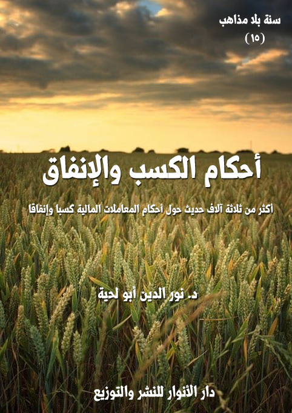

أحكام الكسب والإنفاق
الكتاب: أحكام الكسب والإنفاق
الوصف: أكثر من ثلاثة آلاف حديث حول أحكام المعاملات المالية كسبا وإنفاقا
السلسلة:سنة بلا مذاهب
المؤلف: د. نور الدين أبو لحية
الناشر: دار الأنوار للنشر والتوزيع
الطبعة الأولى 1442 هـ
عدد الصفحات:590
ISBN: 978-620-3-85894-5
لمطالعة الكتاب من تطبيق مؤلفاتي المجاني وهو أحسن وأيسر: هنا

يجمع هذا الكتاب أكثر من ثلاثة آلاف حديث حول الجوانب الاقتصادية الواردة في الأحاديث المرفوعة إلى رسول الله صلى الله عليه وآله وسلم وأئمة الهدى، في المصادر السنية والشيعية.
وقد اخترت تسميته بـ أحكام الكسب والإنفاق]، بدل الممارسات الاقتصادية، وذلك لكونه خاصا فقط بالأحكام العملية المرتبطة بهذه الجوانب، ولا يمكن أن يشمل كل النواحي الاقتصادية لتشعبها، واختلاطها بكل قيم الدين، ابتداء من قيمه العقدية، وانتهاء بقيمه السياسية.
وعند التأمل في كل ما ورد في هذه الجوانب في الشريعة الإسلامية بمصادرها المختلفة، رأينا أنها يمكن أن تحصر في جانبينالكسب، والإنفاق
ذلك أن كل ما ورد في أحكام المكاسب والبيوع والإجارة والكراء والعقود المختلفة..ومثلها ما ورد في الربا والصرف والسلم والشركة والشفعة وغيرها، يمكن إدراجه ضمن باب واحد هو باب الكسب.
ومثل ذلك ما ورد في أحكام الإنفاق، ابتداء من الزكاة بأصنافها وتوابعها المختلفة، وانتهاء بالصدقات والهبات والقروض والوصايا والمواريث وغيرها، يمكن إدراجه ضمن باب واحد هو باب الإنفاق.
وبذلك يكون هذا الكتاب شاملا لكل الأحاديث الواردة في المعاملات المالية والاقتصادية، وبطريقة ميسرة مبسطة، تجمع شتات ما تفرق في الفصول والأبواب المختلفة.
أحكام الكسب والإنفاق (9 )
يجمع هذا الكتاب أكثر من ثلاثة آلاف حديث حول الجوانب الاقتصادية الواردة في الأحاديث المرفوعة إلى رسول الله صلى الله عليه وآله وسلم وأئمة الهدى، في المصادر السنية والشيعية.
وقد اخترت تسميته بـ[أحكام الكسب والإنفاق]، بدل [الممارسات الاقتصادية]، وذلك لكونه خاصا فقط بالأحكام العملية المرتبطة بهذه الجوانب، ولا يمكن أن يشمل كل النواحي الاقتصادية لتشعبها، واختلاطها بكل قيم الدين، ابتداء من قيمه العقدية، وانتهاء بقيمه السياسية.
وعند التأمل في كل ما ورد في هذه الجوانب في الشريعة الإسلامية بمصادرها المختلفة، رأينا أنها يمكن أن تحصر في جانبين: الكسب، والإنفاق.
ذلك أن كل ما ورد في أحكام المكاسب والبيوع والإجارة والكراء والعقود المختلفة .. ومثلها ما ورد في الربا والصرف والسلم والشركة والشفعة وغيرها، يمكن إدراجه ضمن باب واحد هو باب الكسب.
ومثل ذلك ما ورد في أحكام الإنفاق، ابتداء من الزكاة بأصنافها وتوابعها المختلفة، وانتهاء بالصدقات والهبات والقروض والوصايا والمواريث وغيرها، يمكن إدراجه ضمن باب واحد هو باب الإنفاق.
وبذلك يكون هذا الكتاب شاملا لكل الأحاديث الواردة في المعاملات المالية والاقتصادية، وبطريقة ميسرة مبسطة، تجمع شتات ما تفرق في الفصول والأبواب المختلفة.
وقد اكتفينا بإيراد الأحاديث التي رأينا موافقتها للقرآن الكريم دون تدخل منا، لا بتوجيه الحديث، ولا بشرحه، ولا بمحاولة الجمع بينه وبين غيره من الأحاديث التي قد
أحكام الكسب والإنفاق (10 )
تبدو معارضة له.
وذلك بناء على ما ذكرناه سابقا من أن الشريعة ذات مراتب مختلفة، ورسول الله صلى الله عليه وآله وسلم أو أئمة الهدى من بعده، إنما يفتون في كل مسألة، ولكل شخص بما يتناسب مع مرتبته، ولذلك لا وجود لأي تعارض يحتاج منا إلى تصرف أو تكلف ترجيح رواية على رواية أخرى.
بناء على هذا قسمنا الأحاديث الواردة حول الكسب والإنفاق إلى ثمانية فصول:
الأول ـ مشروعية العمل والكسب وفضله: ذكرنا فيه الأحاديث التي ترغب في العمل والكسب وأكل الحلال وتحرم التواكل وإلقاء الكل على الغير.
الثاني ـ أحكام الكسب المرتبط بالعمل: ذكرنا فيه الأحاديث الواردة حول أحكام الحِرف والإجارة والكراء .. وما ورد حول أحكام الفلاحة ومنتجاتها .. وما ورد حول الشراكة والشفعة.
الثالث ـ أحكام الكسب المرتبط بالتجارة: ذكرنا فيه الأحاديث الواردة حول فضل التجارة وآدابها .. وما ورد حول أحكام التجارة وعقودها.
الرابع ـ المكاسب والعقود المحرمة: ذكرنا فيه الأحاديث الواردة حول الترهيب من المكاسب المحرمة .. وما ورد حول البيوع المحرمة .. وما ورد حول الربا والصرف.
الخامس ـ أحكام الزكاة وأصنافها وتوابعها: ذكرنا فيه الأحاديث الواردة حول الزكاة بأصنافها المختلفة، وأدرجنا فيه الخمس باعتباره نوعا من أنواع الزكاة، وإن لم يسم بذلك، مثلما هو الحال مع زكاة الفطر والركاز والمعادن وغيرها.
السادس ـ أحكام الصدقات والهبات: ذكرنا فيه الأحاديث الواردة حول الإنفاق التطوعي الذي يشمل الصدقات والهبات والأوقاف وغيرها.
أحكام الكسب والإنفاق (11 )
سابعا ـ أحكام التركات والوصايا والمواريث: ذكرنا فيه الأحاديث الواردة حول أموال الميت، وكيفية تقسيمها والحقوق المرتبطة بها.
ثامنا ـ حفظ الحقوق والأموال: ذكرنا فيه الأحاديث الواردة حول التشريعات والتوجيهات المرتبطة بحفظ الأموال كالتحذير من خيانة الأمانة وعدم أداء القرض .. ومثلها التشريعات التي تحجر على السفيه أو المفلس، أو تبين أحكام الرهن ونحوها.
وقد قسمنا الأحاديث في كل فصل أو مبحث بحسب من رويت عنهم الأحاديث سواء رسول الله صلى الله عليه وآله وسلم أو أئمة الهدى من بعده، وذلك ليتيسر على الباحث والمطالع أن يتعرف على كل التفاصيل المرتبطة بالموضوع الذي يريد مطالعته أو بحثه.
وكما ذكرنا سابقا؛ فإنه إن روي الحديث الواحد عن أكثر من إمام؛ فإنا نقتصر على الترتيب الزمني؛ فلذلك اعتبرنا كل الأحاديث التي رويت عن الإمامين الباقر والصادق أحاديث عن الإمام الباقر وحده، بناء على أن جميعهم يمثل الهداية ويعبر عنها، وحتى نبتعد عن التكرار، لأن الغرض هو المعنى.
ولهذا قل ذكرنا لما ورد من الروايات عن الأئمة المتأخرين كالإمام الجواد والإمام الهادي وغيرهما، لأن الأحاديث الواردة عنهما في هذه المواضيع تشبه أحاديث من سبقهم: فلذلك اكتفينا بالسابق.
ومن الأمثلة على ذلك ما روي عن بعضهم أنه سأل الإمام العسكري: ما بال المرأة المسكينة الضعيفة تأخذ سهما واحدا ويأخذ الرجل سهمين؟ فقال: (إن المرأة ليس عليها جهاد ولا نفقة ولا عليها معقلة إنما ذلك على الرجال)، قال الراوي: فقلت في نفسي: قد كان قيل لي: إن ابن أبي العوجاء سأل الإمام الصادق عن هذه المسألة فأجابه بهذا الجواب، فقال له الإمام العسكري: نعم هذه المسألة مسألة ابن أبي العوجاء والجواب منا واحد إذا
أحكام الكسب والإنفاق (12 )
كان معنى المسألة واحدا (1).
بالإضافة إلى أن لكل إمام دوره الخاص به؛ فلهذا لا نجد للإمامين الحسنين الكثير من الروايات المرتبطة بالجوانب الفقهية بناء على الدور الذي أنيط بهما، بخلاف الإمام الباقر والإمام الصادق والإمام الكاظم .. والذين ازدهرت في عصرهم المدارس الفقهية، وكان الناس يلجؤون إليهم لمعرفة الأحكام الشرعية؛ فكانوا يجيبونهم إلى ذلك، ولذلك كثرت الروايات عنهم.
وننبه في الأخير إلى أن القارئ قد يلاحظ ـ وخصوصا في المسائل المرتبطة بالفلاحة والإجارة والكراء ونحوها ـ أنها ربما تكون مرتبطة بما كان يجري في العصور السابقة، وهذا وإن كان صحيحا في ظاهره إلا أن الأحاديث نفسها تذكر علل تلك الأحكام ومقاصدها، وبذلك يمكن تطبيق الأحكام الواردة في تلك الأحاديث على كل القضايا، وفي كل العصور.
__________
(1) الكافي 7/ 85/ 2.
أحكام الكسب والإنفاق (13 )
جمعنا في هذا الفصل ما نراه متوافقا مع القرآن الكريم من الأحاديث الواردة حول مشروعية العمل والكسب وفضله، وهي من القضايا المتفق عليها، والواردة في القرآن الكريم، ومن الأمثلة عنها قوله تعالى: {عَلِمَ أَنْ سَيَكُونُ مِنْكُمْ مَرْضَى وَآخَرُونَ يَضْرِبُونَ فِي الْأَرْضِ يَبْتَغُونَ مِنْ فَضْلِ اللَّهِ وَآخَرُونَ يُقَاتِلُونَ فِي سَبِيلِ اللَّهِ فَاقْرَءُوا مَا تَيَسَّرَ مِنْهُ وَأَقِيمُوا الصَّلَاةَ وَآتُوا الزَّكَاةَ وَأَقْرِضُوا اللَّهَ قَرْضًا حَسَنًا وَمَا تُقَدِّمُوا لِأَنْفُسِكُمْ مِنْ خَيْرٍ تَجِدُوهُ عِنْدَ اللَّهِ هُوَ خَيْرًا وَأَعْظَمَ أَجْرًا وَاسْتَغْفِرُوا اللَّهَ إِنَّ اللَّهَ غَفُورٌ رَحِيمٌ} [المزمل: 20]
فهذه الآية الكريمة تقرن بين المجاهدين في سبيل والذين يضربون في الأرض يبتغون من فضل الله، وفي ذلك أعظم الثناء عليهم.
بالإضافة إلى ذلك فإن مجرد التعبير عن طلب الرزق بكونه ابتغاء فضل الله، يدل على فضله وشرفه وكون الساعي لذلك لا يختلف عن الساعي في أي عمل صالح.
وقد ورد التعبير عن هذا في آيات أخرى، قال تعالى: {فَإِذَا قُضِيَتِ الصَّلَاةُ فَانْتَشِرُوا فِي الْأَرْضِ وَابْتَغُوا مِنْ فَضْلِ اللَّهِ وَاذْكُرُوا اللَّهَ كَثِيرًا لَعَلَّكُمْ تُفْلِحُونَ} [الجمعة: 10]، وقوله: {وَهُوَ الَّذِي سَخَّرَ الْبَحْرَ لِتَأْكُلُوا مِنْهُ لَحْمًا طَرِيًّا وَتَسْتَخْرِجُوا مِنْهُ حِلْيَةً تَلْبَسُونَهَا وَتَرَى الْفُلْكَ مَوَاخِرَ فِيهِ وَلِتَبْتَغُوا مِنْ فَضْلِهِ وَلَعَلَّكُمْ تَشْكُرُونَ} [النحل: 14]، وقوله: {وَمِنْ رَحْمَتِهِ جَعَلَ لَكُمُ اللَّيْلَ وَالنَّهَارَ لِتَسْكُنُوا فِيهِ وَلِتَبْتَغُوا مِنْ فَضْلِهِ وَلَعَلَّكُمْ تَشْكُرُونَ} [القصص: 73]، وقوله: {وَمِنْ آيَاتِهِ مَنَامُكُمْ بِاللَّيْلِ وَالنَّهَارِ وَابْتِغَاؤُكُمْ مِنْ فَضْلِهِ إِنَّ فِي ذَلِكَ لَآيَاتٍ لِقَوْمٍ يَسْمَعُونَ} [الروم: 23]، وقوله: {اللَّهُ الَّذِي سَخَّرَ لَكُمُ الْبَحْرَ لِتَجْرِيَ الْفُلْكُ فِيهِ بِأَمْرِهِ وَلِتَبْتَغُوا مِنْ فَضْلِهِ وَلَعَلَّكُمْ تَشْكُرُونَ} [الجاثية: 12]
أحكام الكسب والإنفاق (14 )
وغيرها من الآيات الكريمة التي يقترن فيها طلب الرزق بالصلاة والذكر والشكر ونحوها من العبادات، مما يدل على شرف العمل وفضله العظيم.
وهو ما تؤكده الأحاديث التي أوردناها في هذا الفصل المختصر.
أولا ـ ما ورد في الأحاديث النبوية
من الأحاديث الواردة في هذا الباب في المصادر السنية والشيعية:
[الحديث: 1] عن رافع بن خديج: قيل يا رسول الله: أي الكسب أطيب؟ فقال: (عمل الرجل بيده وكل بيع مبرور)(1)
[الحديث: 2] قال رسول الله صلى الله عليه وآله وسلم: (إن الله يحب المؤمن المحترف)(2)
[الحديث: 3] قال رسول الله صلى الله عليه وآله وسلم: (إن قامت الساعة وفي يد أحدكم فسيلةٌ فليغرسها)(3)
[الحديث: 4] قال رسول الله صلى الله عليه وآله وسلم: (من أمسى كالا من عمل يده أمسى مغفورا له)(4)
[الحديث: 5] قال رسول الله صلى الله عليه وآله وسلم: (كان زكريا نجارا)(5)
[الحديث: 6] عن ابن مسعود قال رسول الله صلى الله عليه وآله وسلم: (إن العبد له رزقه، فلو اجتمع عليه الثقلان: الجن، والأنس، أن يصدوا عنه شيئا من ذلك ما استطاعوا)(6)
[الحديث: 7] قال رسول الله صلى الله عليه وآله وسلم: (إن الرزق ليطلب العبد أكثر مما يطلبه أجله)(7)
__________
(1) أحمد 4/ 141. والبزار كما في (كشف الأستار)(1257)، والطبراني 4/ 276 (4411)، وفي الطبراني في الأوسط: (7918)
(2) الطبراني 12/ 308 (13200)، والطبراني في الأوسط: (9097)
(3) البزار كما في (كشف الأستار)(1251)
(4) الطبراني في الأوسط: 7/ 289 (7520)
(5) مسلم (2379)
(6) الطبراني في الأوسط: 4/ 16 - 17 (3497)
(7) البزار كما في (كشف الأستار)(1254)، وابن حبان 8/ 31 (3238)
أحكام الكسب والإنفاق (15 )
[الحديث: 8] عن نافع قال: كنت أجهز إلى الشام وإلى مصر فجهزت إلى العراق، فأتيت عائشة أم المؤمنين، فقلت لها: يا أم المؤمنين، كنت أجهز إلى الشام فجهزت إلى العراق، فقالت: لا تفعل مالك ولمتجرك، فإني سمعت رسول الله صلى الله عليه وآله وسلم يقول: (إذا سبب الله لأحدكم رزقا من وجه فلا يدعه حتى يتغير له أو يتنكر له)(1)
[الحديث: 9] قال رسول الله صلى الله عليه وآله وسلم: (لا تزال المسألة بأحدكم حتى يلقى الله تعالى وليس في وجهه مزعة لحم)(2)
[الحديث: 10] قال رسول الله صلى الله عليه وآله وسلم: (المسائل كدوحٌ يكدح بها الرجل وجهه، فمن شاء أبقى على وجهه ومن شاء تركه، إلا أن يسأل الرجل ذا سلطان أو في أمر لا يجد منه بدا)(3)
[الحديث: 11] قال رسول الله صلى الله عليه وآله وسلم: (لأن يحتطب أحدكم حزمة على ظهره خيرٌ له من أن يسأل أحدا فيعطيه أو يمنعه)(4)
[الحديث: 12] قال رسول الله صلى الله عليه وآله وسلم: (من يكفل لي أن لا يسأل الناس شيئا وأتكفل له بالجنة) فقال ثوبان: أنا فكان لا يسأل أحدا شيئا (5).
[الحديث: 13] قال رسول الله صلى الله عليه وآله وسلم: (إن هذا المال خضرٌ حلوٌ فمن أخذه بسخاوة نفس بورك له فيه، ومن أخذه بإشراف نفس لم يبارك له فيه، وكان كالذي يأكل ولا يشبع، واليد العليا خيرٌ من اليد السفلى)(6)
[الحديث: 14] قال رسول الله صلى الله عليه وآله وسلم: (من سأل الناس وله ما يغنيه جاء يوم القيامة
__________
(1) ابن ماجة (2142)
(2) البخاري (1475)، ومسلم (1040)
(3) أبو داود (1639)، والترمذي (681)، والنسائي 5/ 100.
(4) البخاري (2074)، ومسلم (1042)
(5) أبو داود (1643)، والنسائي 5/ 96.
(6) البخاري (1472)، ومسلم (1035)
أحكام الكسب والإنفاق (16 )
ومسألته في وجهه خموشٌ أو خدوشٌ أو كدوحٌ) قيل: يا رسول الله وما يغنيه، فقال: (خمسون درهما أو قيمتها من الذهب)(1)
[الحديث: 15] قيل لرسول الله صلى الله عليه وآله وسلم: ما الغنى الذي لا تنبغي معه المسألة؟ فقال: (قدر ما يغديه أو يعشيه)(2)
[الحديث: 16] قال رسول الله صلى الله عليه وآله وسلم: (من سأل الناس تكثرا فإنما يسأل جمرا، فليستقل أو ليستكثر)(3)
[الحديث: 17] قال رسول الله صلى الله عليه وآله وسلم: (لا يفتح أحدكم على نفسه باب مسألة إلا فتح الله عليه باب فقر)(4)
[الحديث: 18] قال رسول الله صلى الله عليه وآله وسلم: (من سأل وله أربعون درهما فهو ملحفٌ) للنسائي (5)
[الحديث: 19] عن أنس: أن رجلا من الأنصار أتى النبي صلى الله عليه وآله وسلم يسأله، فقال: (أما في بيتك شيءٌ؟) قال: بلى حلسٌ نلبس بعضه ونبسط بعضه، وقعبٌ نشرب فيه الماء. قال: (ائتني بهما) فأتاه بهما فأخذهما بيده، وقال: (من يشتري هذين؟) قال رجلٌ: أنا آخذهما بدرهم. قال صلى الله عليه وآله وسلم: (من يزيد على درهم؟) مرتين أو ثلاثا. قال رجلٌ: أنا آخذهما بدرهمين، فأعطاهما إياه فأخذ الدرهمين وأعطاهما الأنصاري، وقال: (اشتر بأحدهما طعاما فانبذه إلى أهلك واشتر بالآخر قدوما فأتني به) فأتاه به فشد فيه صلى الله عليه وآله وسلم عودا بيده، ثم قال: (اذهب فاحتطب وبع ولا أرينك خمسة عشر يوما) ففعل وجاء، وقد أصاب عشرة دراهم، فاشترى
__________
(1) أبو داود (1626)، والترمذي (650)
(2) أبو داود (1629)
(3) مسلم (1041)
(4) أبو يعلى (6691)
(5) النسائي 5/ 98.
أحكام الكسب والإنفاق (17 )
ببعضها ثوبا وببعضها طعاما، فقال له صلى الله عليه وآله وسلم: (هكذا خيرٌ لك من أن تجيء المسألة نكتة في وجهك يوم القيامة إن المسألة لا تصلح إلا لثلاث: لذي فقر مدقع، أو لذي غرم مفظع، أو لذي دم موجع)(1)
[الحديث: 20] قال رسول الله صلى الله عليه وآله وسلم: (من سأل الناس ليثري به ماله كان خموشا في وجهه يوم القيامة، ورضفا يأكله في جهنم، فمن شاء فليقل، ومن شاء فليكثر)(2)
[الحديث: 21] قال رسول الله صلى الله عليه وآله وسلم: (إني لأعطي الرجل العطية فينطلق بها تحت إبطه، وما هي إلا نار) قيل: ولم تعطي يا رسول الله ما هو نارٌ؟ فقال: (أبى الله لي البخل وأبوا إلا مسألتي)(3)
[الحديث: 22] قال رسول الله صلى الله عليه وآله وسلم: (من نزلت به فاقةٌ فأنزلها بالناس لم تسد فاقته، ومن نزلت به فاقةٌ فأنزلها بالله فيوشك الله له برزق عاجل أو آجل)(4)
[الحديث: 23] قال رسول الله صلى الله عليه وآله وسلم: (قد أفلح من أسلم ورزق كفافا وقنعه الله بما آتاه)(5)
[الحديث: 24] قال رسول الله صلى الله عليه وآله وسلم: (من أصبح منكم آمنا في سربه، معافى في بدنه، عنده قوت يومه فكأنما حيزت له الدنيا بحذافيرها)(6)
[الحديث: 25] قال رسول الله صلى الله عليه وآله وسلم: (إن أغبط أوليائي عندي مؤمنٌ خفيف الحاذ ذو حظ من الصلاة، أحسن عبادة ربه، وأطاعه في السر، وكان غامضا في الناس لا يشار إليه بالأصابع، وكان رزقه كفافا فصبر على ذلك .. عجلت منيته، قل تراثه، قلت بواكيه)(7)
__________
(1) أبو داود (1641)،والترمذي (1218) والنسائي 7/ 259.
(2) الترمذي (653)
(3) رواه أحمد 3/ 4 وأبو يعلى 2/ 490 (1327)
(4) الترمذي (2326) وأبو داود (1645)
(5) مسلم (1054)
(6) الترمذي (2346)
(7) الترمذي (2347)
أحكام الكسب والإنفاق (18 )
[الحديث: 26] قال رسول اللّه صلى الله عليه وآله وسلم: (ألا أخبركم بخير رجالكم؟) قلنا: بلى يا رسول اللّه، قال: (إنّ من خير رجالكم التقي النقي، السمح الكفّين، النقي الطرفين، البرّ بوالديه، ولا يلجئ عياله إلى غيره)(1)
[الحديث: 27] قال رسول اللّه صلى الله عليه وآله وسلم: (ألا أخبركم بشرار رجالكم؟) قلنا: بلى يا رسول اللّه، فقال: (إنّ من شرار رجالكم البهّات، الجري ء، الفحّاش، الآكل وحده، والمانع رفده، والضّارب عبده، والملجئ عياله إلى غيره)(2)
[الحديث: 28] قال رسول اللّه صلى الله عليه وآله وسلم: (ملعون ملعون من ألقى كلّه على الناس، ملعون ملعون من ضيّع من يعول)(3)
[الحديث: 29] قال الإمام الصادق: كان رسول الله صلى الله عليه وآله وسلم يحلب عنز أهله (4).
[الحديث: 30] قال رسول الله صلى الله عليه وآله وسلم: من المروءة استصلاح المال (5).
[الحديث: 31] قال رسول الله صلى الله عليه وآله وسلم: العبادة سبعون جزءا، أفضلها طلب الحلال (6).
[الحديث: 32] قال رسول الله صلى الله عليه وآله وسلم، إذا أعسر أحدكم فليخرج، ولا يغمّ نفسه وأهله (7).
[الحديث: 33] قال رسول الله صلى الله عليه وآله وسلم: العبادة سبعون جزء وأفضلها جزءا طلب الحلال (8).
[الحديث: 34] قال رسول الله صلى الله عليه وآله وسلم: من بات كالاً من طلب الحلال، بات مغفورا
__________
(1) اصول الكافي ج 2 ص 57.
(2) اصول الكافي ج 2 ص 292.
(3) الكافي ج 4 ص 12.
(4) الكافي 5/ 86/ 2.
(5) من لا يحضره الفقيه: 3/ 102/ 403.
(6) الكافي 5/ 78/ 6.
(7) التهذيب 6/ 329/ 909.
(8) معاني الاخبار: 366.
أحكام الكسب والإنفاق (19 )
له (1).
[الحديث: 35] قال رسول الله صلى الله عليه وآله وسلم: اللهم بارك لنا في الخبز، ولا تفرق بيننا وبينه، فلولا الخبز ما صلينا ولا صمنا ولا أدينا فرائض ربنا (2).
[الحديث: 36] قال رسول الله صلى الله عليه وآله وسلم: ملعون من ألقى كله على الناس (3).
[الحديث: 37] قال رسول الله صلى الله عليه وآله وسلم: منهومان لا يشبعان: منهوم دنيا، ومنهوم علم، فمن اقتصر من الدنيا على ما أحل الله له سلم، ومن تناولها من غير حلّها هلك، إلا أن يتوب ويراجع، ومن أخذ العلم من أهله وعمل به نجى، ومن أراد به الدنيا فهي حظه (4).
[الحديث: 38] عن الإمام الباقر أن رسول الله صلى الله عليه وآله وسلم وضع حجرا على الطريق يرد الماء عن أرضه، فوالله ما نكب بعيرا، ولا إنسانا حتى الساعة (5).
[الحديث: 39] قال رسول الله صلى الله عليه وآله وسلم: من سقى طلحة أو سدرة فكأنما سقى مؤمنا من ظمأ (6).
[الحديث: 40] قال رسول الله صلى الله عليه وآله وسلم في حجة الوداع: ألا إن الروح الأمين نفث في روعي أنه لا تموت نفس حتى تستكمل رزقها، فاتقوا الله وأجملوا في الطلب، ولا يحملنكم استبطاء شيء من الرزق أن تطلبوه بمعصية الله فإن الله تبارك وتعالى قسم الأرزاق بين خلقه حلالا، ولم يقسمها حراما، فمن اتقى الله وصبر أتاه الله برزقه من حله، ومن هتك حجاب الستر وعجل فأخذه من غير حله قص به من رزقه الحلال، وحوسب عليه يوم القيامة (7).
[الحديث: 41] قال رسول الله صلى الله عليه وآله وسلم: يا أيها الناس إنه قد نفث في روعي روح القدس،
__________
(1) أمالي الصدوق/ 238/ 9.
(2) الكافي 5/ 73/ 13.
(3) الكافي 5/ 72/ 7.
(4) التهذيب 6/ 328/ 906.
(5) الكافي 5/ 75/ 7.
(6) تفسير العياشي 2/ 86/ 44.
(7) الكافي 5/ 80/ 1.
أحكام الكسب والإنفاق (20 )
أنه لن تموت نفس حتى تستوفي رزقها وإن أبطأ عليها، فاتقوا الله وأجملوا في الطلب، ولا يحملنّكم استبطاء شيء مما عند الله أن تصيبوه بمعصية الله، فإن الله لا ينال ما عنده إلا بالطاعة (1).
[الحديث: 42] قال رسول الله صلى الله عليه وآله وسلم: من لم يرض بما قسمه الله له الرزق، وبث شكواه ولم يصبر ولم يحتسب، لم ترفع له حسنة، ويلقى الله وهو عليه غضبان إلا أن يتوب (2).
[الحديث: 43] قال رسول الله صلى الله عليه وآله وسلم: إن الروح الأمين جبريل أخبرني عن ربي أنه لن تموت نفس حتى تستكمل رزقها، فاتقوا الله وأجملوا في الطلب، واعلموا أن الرزق رزقان: فرزق تطلبونه، ورزق يطلبكم، فاطلبوا أرزاقكم من حلال، فإنكم إن طلبتموها من وجوهها أكلتموها حلالا، وإن طلبتموها من غير وجوهها أكلتموها حراما، وهي أرزاقكم لا بد لكم من أكلها (3).
[الحديث: 44] قال رسول الله صلى الله عليه وآله وسلم: إن الرزق ينزل من السماء إلى الأرض على عدد قطر المطر إلى كل نفس بما قدر لها، ولكن لله فضول، فاسألوا الله من فضله.
[الحديث: 45] قال رسول الله صلى الله عليه وآله وسلم: ملعون ملعون من يضيع من يعول (4).
[الحديث: 46] قال رسول الله صلى الله عليه وآله وسلم: كفى بالمرء إثما أن يضيع من يعول (5).
[الحديث: 47] قال رسول الله صلى الله عليه وآله وسلم: ليس منا من ترك دنياه لآخرته ولا آخرته لدنيا (6).
[الحديث: 48] قال رسول الله صلى الله عليه وآله وسلم: نعم العون على تقوى الله الغنى (7).
__________
(1) الكافي 5/ 80/ 3.
(2) من لا يحضره الفقيه: 4/ 7/ 1.
(3) أمالي الصدوق/ 241/ 1.
(4) من لا يحضره الفقيه: 3/ 103/ 417.
(5) من لا يحضره الفقيه: 3/ 103/ 416
(6) من لا يحضره الفقيه: 3/ 94/ 355.
(7) من لا يحضره الفقيه: 3/ 94/ 357
أحكام الكسب والإنفاق (21 )
[الحديث: 49] قال رسول الله صلى الله عليه وآله وسلم: إذا أراد أحدكم الحاجة فليبكّر إليها، فإني سألت ربي عزّوجلّ أن يبارك لأمّتي في بكورها (1).
[الحديث: 50] قال رسول الله صلى الله عليه وآله وسلم: إذا أراد أحدكم حاجة فليبكر إليها وليسرع المشي إليها (2).
وهي أحاديث كثيرة، وقد قسمناها بحسب من وردت عنهم إلى الأقسام التالية:
[الحديث: 51] قال الإمام علي يوصي بعض أهله: يا بني إياك والاتكال على الأماني، فإنها بضائع النوكى، وتثبط عن الآخرة، وأشرف الغنى ترك المنى (3).
[الحديث: 52] قال الإمام علي: إن الله يحب المحترف الأمين (4).
[الحديث: 53] قال الإمام علي: الزهد في الدنيا قصر الأمل، وشكر كل نعمة، والورع عن كل ما حرم الله عزّوجلّ (5).
[الحديث: 54] عن الإمام الصادق أن الإمام علي أعتق ألف مملوك من كد يده (6).
[الحديث: 55] قال الإمام الصادق: كان الإمام علي يضرب بالمر ويستخرج الأرضين، وكان رسول الله صلى الله عليه وآله وسلم يمص النوى بفيه ويغرسه فيطلع من ساعته، وإن الإمام علي أعتق ألف مملوك من ماله وكد يده (7).
[الحديث: 56] قال الإمام علي: أوحى الله إلى داود عليه السلام: إنك نعم العبد،
__________
(1) من لا يحضره الفقيه: 3/ 95/ 361.
(2) من لا يحضره الفقيه: 3/ 95/ 362.
(3) من لا يحضره الفقيه: 4/ 275/ 830.
(4) من لا يحضره الفقيه: 3/ 95/ 367
(5) الكافي 5/ 71/ 3.
(6) الكافي 5/ 74/ 4.
(7) الكافي 5/ 74/ 2.
أحكام الكسب والإنفاق (22 )
لولا أنك تأكل من بيت المال، ولا تعمل بيدك شيئا، فبكى داود عليه السلام أربعين صباحا فأوحى الله إلى الحديد: أن لن لعبدي داود، فألان الله عزّوجلّ له الحديد، فكان يعمل في كل يوم درعا فيبيعها بألف درهم، فعمل ثلاثمائة وستين درعا، فباعها بثلاثمائة وستين ألفاً، واستغنى عن بيت المال (1).
[الحديث: 57] قال الإمام علي في قول الله عزّ وجلّ: {وَأَنَّهُ هُوَ أَغْنَى وَأَقْنَى} [النجم: 48]: أغنى كل إنسان بمعيشته وأرضاه بكسب يده (2).
[الحديث: 58] قال الإمام علي: من وجد ماءا وترابا ثم افتقر فأبعده الله (3).
[الحديث: 59] عن الإمام الباقر قال: لقي رجل الإمام علي وتحته وسق من نوى فقال له: ما هذا يا أبا الحسن تحتك؟ فقال: مائة ألف عذق إن شاء الله؛ فغرسه فلم يغادر منه نواة واحدة (4).
[الحديث: 60] قال الإمام الصادق: إن الإمام علي كان يخرج ومعه أحمال النوى، فيقال له: يا أبا الحسن، ما هذا معك؟ فيقول: نخل إن شاء الله فيغرسه فما يغادر منه واحدة (5).
[الحديث: 61] قال الإمام الباقر: كان الإمام علي يخرج في الهاجرة في الحاجة قد كفاها، يريد أن يراه الله يُتعب نفسه في طلب الحلال (6).
[الحديث: 62] قال الإمام الصادق: كان الإمام علي يحتطب ويستقي ويكنس، وكانت فاطمة بنت رسول الله صلى الله عليه وآله وسلم تطحن وتعجن وتخبز (7).
__________
(1) الكافي 5/ 74/ 5.
(2) معاني الأخبار: 214.
(3) قرب الإسناد: 55.
(4) الكافي 5/ 74/ 6.
(5) الكافي 5/ 75/ 9.
(6) من لا يحضره الفقيه: 3/ 99/ 383.
(7) من لا يحضره الفقيه: 3/ 104/ 427.
أحكام الكسب والإنفاق (23 )
[الحديث: 63] قال الإمام علي: الدنيا دول فاطلب حظك منها بأجمل الطلب (1).
[الحديث: 64] قال الإمام علي: كم من متعب نفسه مقتر عليه، ومقتصد في الطلب قد ساعدته المقادير (2).
[الحديث: 65] قال الإمام علي: اعلموا علما يقينا أن الله جل وعز لم يجعل للعبد وإن اشتد جهده، وعظمت حيلته، وكثرت مكائده، أن يسبق ما سمى له في الذكر الحكيم، ولم يخل من العبد في ضعفه وقلة حيلته أن يبلغ ما سمى له في الذكر الحكيم .. أيها الناس إنه لن يزداد امرؤ نقيرا بحذقه، ولن ينقص امرؤ نقيرا لحمقه، فالعالم بهذا العامل به أعظم الناس راحة في منفعته، والعالم لهذا التارك له أعظم الناس شغلا في مضرته، ورب منعم عليه مستدرج بالإحسان إليه، ورب مغرور في الناس مصنوع له، فابق أيها الساعي عن سعيك، وقصر من عجلتك، وانتبه من سنة غفلتك، وتفكر فيما جاء عن الله عزّوجلّ على لسان نبيه صلى الله عليه وآله وسلم، واحتفظوا بهذه الحروف السبعة فإنها من قول أهل الحجى، ومن عزائم الله في الذكر الحكيم إنه ليس لأحد أن يلقى الله بخلة من هذه الخلال: الشرك بالله فيما افترض عليه، أو إشفاء غيظه بهلاك نفسه، أو إقرار بأمر يفعل غيره، أو يستنجح إلى مخلوق بإظهار بدعة في دينه، أو يسره أن يحمده الناس بما لم يفعل، والمتجبر المختال وصاحب الأبهة والزهو .. أيها الناس إن السباع همتها التعدي، وإن البهائم همتها بطونها، وإن المؤمنين مشفقون خائفون وجلون، جعلنا الله وإياكم منهم (3).
[الحديث: 66] قال الإمام علي يوصي بعض أهله: يا بني الرزق رزقان رزق تطلبه، ورزق يطلبك، فإن لم تأته أتاك فلا تحمل هم سنتك على هم يومك، وكفاك كل يوم ما هو
__________
(1) كنز الفوائد: 16.
(2) الكافي 5/ 81/ 6.
(3) الكافي 5/ 81/ 9.
أحكام الكسب والإنفاق (24 )
فيه، فإن تكن السنة من عمرك، فإن الله عزّ وجلّ سيأتيك في كل غد بجديد ما قسم لك، وإن لم تكن السنة من عمرك، فما تصنع بهم وغم ما ليس لك، واعلم أنه لن يسبقك إلى رزقك طالب، ولن يغلبك عليه غالب، ولن يحتجب عنك ما قدر لك، فكم رأيت من طالب متعب نفسه، مقتر عليه رزقه، ومقتصد في الطلب قد ساعدته المقادير، وكل مقرون به الفناء (1).
[الحديث: 67] قال الإمام علي: كن لما لا ترجو أرجى منك لما ترجو، فإن موسى بن عمران عليه السلام خرج يقتبس نارا لأهله، فكلمه الله ورجع نبيا، وخرجت ملكة سبأ فأسلمت مع سليمان، وخرج سحرة فرعون يطلبون العز لفرعون فرجعوا مؤمنين (2).
[الحديث: 68] قال الإمام الصادق: إن محمد بن المنكدر كان يقول: ما كنت أظن أن علي بن الحسين (الإمام السجاد) يدع خلقا أفضل منه، حتى رأيت ابنه محمد بن علي (الإمام الباقر)، فأردت أن أعظه فوعظني، فقال له أصحابه: بأي شيء وعظك؟ فقال: خرجت إلى بعض نواحي المدينة في ساعة حارة فلقيني أبو جعفر محمّد بن علي، وهو متكئ على غلامين، فقلت في نفسي: سبحان الله شيخ من أشياخ قريش في هذه الساعة، على مثل هذه الحالة في طلب الدنيا، أما لأعظنه، فدنوت منه فسلمت عليه، فرد علي بنهر، وهو يتصاب عرقا، فقلت: أصلحك الله شيخ من أشياخ قريش في هذه الساعة، على هذه الحال في طلب الدنيا، أرأيت لو جاء أجلك وأنت على هذه الحال، فقال: لو جاءني الموت وأنا على هذه الحال، جاءني وأنا في طاعة من طاعة الله عزّوجلّ أكف بها نفسي وعيالي عنك وعن
__________
(1) من لا يحضره الفقيه: 4/ 276/ 830.
(2) الكافي 5/ 83/ 3.
أحكام الكسب والإنفاق (25 )
الناس، وإنما كنت أخاف لو أن جاءني الموت وأنا على معصية من معاصي الله، فقلت: صدقت يرحمك الله، أردت أن أعظك فوعظتني (1).
[الحديث: 69] عن الإمام الصادق قال: كان الإمام السجاد إذا أصبح خرج غاديا في طلب الرزق، فقيل له: يا ابن رسول الله أين تذهب؟ فقال: أتصدق لعيالي، قيل له: أتتصدق؟ فقال: من طلب الحلال فهو من الله صدقة عليه (2).
[الحديث: 70] قال الإمام السجاد: إن من سعادة المرء أن يكون متجره في بلاده، ويكون خلطاؤه صالحين، ويكون له ولد يستعين بهم (3).
[الحديث: 71] قال الإمام الباقر: من طلب الدنيا استعفافا عن الناس، وسعيا على أهله، وتعطفا على جاره، لقي الله عزّوجلّ يوم القيامة ووجهه مثل القمر ليلة البدر (4).
[الحديث: 72] قال الإمام الباقر: إني أجدني أمقت الرجل متعذر المكاسب، فيستلقي على قفاه ويقول: اللهم ارزقني، ويدع أن ينتشر في الأرض ويلتمس من فضل الله، فالذرة تخرج من جحرها تلتمس رزقها (5).
[الحديث: 73] قال الإمام الباقر: نعم العون الدنيا على طلب الآخرة (6).
[الحديث: 74] قال الإمام الباقر: ليس من نفس إلا وقد فرض الله لها رزقها حلالا يأتيها في عافية، وعرض لها بالحرام من وجه آخر، فإن هي تناولت شيئا من الحرام قاصها من الحلال الذي فرض لها، وعند الله سواهما فضل كثير، وهو قوله عزّوجلّ: (واسألوا الله
__________
(1) الكافي 5/ 73/ 1، التهذيب 6/ 325/ 894.
(2) الكافي 5/ 12/ 11.
(3) الكافي 5/ 257/ 1.
(4) الكافي 5/ 78/ 5.
(5) من لا يحضره الفقيه: 3/ 95/ 366.
(6) الكافي 5/ 73/ 14.
أحكام الكسب والإنفاق (26 )
من فضله)(1).
[الحديث: 75] قال الإمام الباقر لبعض أصحابه: أيّ شيء تعالج؟ أيّ شيء تصنع؟ قال: ما أنا في شيء، قال الإمام: فخذ بيتا واكنس فناه ورشه وابسط فيه بساطا، فإذا فعلت ذلك فقد قضيت ما عليك، قال الرجل: فقدمت ففعلت فرزقت (2).
[الحديث: 76] قال الإمام الباقر: اعمل لدنياك كأنك تعيش أبدا واعمل لآخرتك كأنك تموت غدا (3).
[الحديث: 77] قال الإمام الصادق: تجنبوا المنى فإنها تذهب بهجة ما خولتم، وتستصغرون بها مواهب الله عندكم، وتعقبكم الحسرات فيما وهمتم به أنفسكم (4).
[الحديث: 78] قال الإمام الصادق: إياك والضجر والكسل، إنهما مفتاح كل سوء، إنه من كسل لم يؤد حقا، ومن ضجر لم يصبر على حق (5).
[الحديث: 79] قال الإمام الصادق: إن في حكمة آل داود: ينبغي للمسلم العاقل أن لا يُرى ظاعنا إلا في ثلاث: مرمة لمعاش، أو تزود لمعاد، أو لذة في غير ذات محرم .. وينبغي للمسلم العاقل أن يكون له ساعة يفضي بها إلى علمه، فيما بينه وبين الله جل وعز، وساعة يلاقي إخوانه الذين يفاوضهم ويفاوضونه في أمر آخرته، وساعة يخلي بين نفسه ولذتها في غير محرم، فإنها عون على تلك الساعتين (6).
[الحديث: 80] قال الإمام الصادق: إصلاح المال من الإيمان (7).
__________
(1) الكافي 5/ 80/ 2.
(2) الكافي 5/ 79/ 2.
(3) من لا يحضره الفقيه: 3/ 94/ 356.
(4) الكافي 5/ 85/ 7.
(5) من لا يحضره الفقيه: 3/ 103/ 421.
(6) الكافي 5/ 87/ 1
(7) الكافي 5/ 87/ 3.
أحكام الكسب والإنفاق (27 )
[الحديث: 81] قال الإمام الصادق: عليك بإصلاح المال، فإن فيه منبهة للكريم، واستغناء عن اللئيم (1).
[الحديث: 82] قال الإمام الصادق في قوله عزّ وجلّ: {وَمِنْهُمْ مَنْ يَقُولُ رَبَّنَا آتِنَا فِي الدُّنْيَا حَسَنَةً وَفِي الْآخِرَةِ حَسَنَةً} [البقرة: 201]: رضوان الله والجنة في الآخرة، والسعة في الرزق والمعاش، وحسن الخلق في الدنيا (2).
[الحديث: 83] عن عبد الأعلى مولى آل سام قال: استقبلت الإمام الصادق في بعض طرق المدينة، في يوم صائف شديد الحر، فقلت: جعلت فداك حالك عند الله عزّوجلّ، وقرابتك من رسول الله صلى الله عليه وآله وسلم. وأنت تجهد نفسك في مثل هذا اليوم؟ فقال: يا عبد الأعلى خرجت في طلب الرزق، لأستغني عن مثلك (3).
[الحديث: 84] عن أيوب أخي اديم بياع الهروي قال: كنا جلوسا عند الإمام الصادق إذ أقبل علاء بن كامل فجلس قدام الإمام الصادق، فقال: ادع الله أن يرزقني في دعة، قال: لا أدعو لك، أطلب كما أمرك الله عزّوجلّ (4).
[الحديث: 85] قيل للإمام الصادق: ادع الله لي في الرزق فقد التأثت عليّ أموري، فقال: لا، اخرج فاطلب (5).
[الحديث: 86]: قال الإمام الصادق: أقرؤوا من لقيتم من أصحابكم السلام، وقولوا لهم: إن فلان بن فلان يُقرئكم السلام، وقولوا لهم: عليكم بتقوى الله، وما ينال به ما عند الله، إني والله ما آمركم إلا بما نأمر به أنفسنا، فعليكم بالجد والاجتهاد، وإذا صليتم
__________
(1) الكافي 5/ 88/ 6.
(2) من لا يحضره الفقيه: 3/ 94/ 353.
(3) الكافي 5/ 74/ 3.
(4) الكافي 5/ 78/ 3.
(5) الكافي 5/ 79/ 11.
أحكام الكسب والإنفاق (28 )
الصبح فانصرفتم فبكروا في طلب الرزق واطلبوا الحلال، فان الله سيرزقكم ويعينكم عليه (1).
[الحديث: 87] قال الإمام الصادق: أيعجز أحدكم أن يكون مثل النملة، فإن النملة تجر إلى جحرها (2).
[الحديث: 88] قال الإمام الصادق: إذا ضاق أحدكم فليعلم أخاه، ولا يعن على نفسه (3).
[الحديث: 89] قال الإمام الصادق: أرأيت لو أن رجلا دخل بيته وأغلق بابه، أكان يسقط عليه شيء من السماء؟ (4)
[الحديث: 90] قيل للإمام الصادق: رجل قال: لأقعدن في بيتي، ولأصلّين ولأصومنّ ولأعبدن ربي، فأما رزقي فسيأتيني، فقال: هذا أحد الثلاثة الذين لا يستجاب لهم (5).
[الحديث: 91] سأل الإمام الصادق عن رجل، فقيل: أصابته الحاجة، قال: فما يصنع اليوم؟ قيل: في البيت يعبد ربه، قال: فمن أين قوته؟ قيل: من عند بعض إخوانه، فقال: والله للذي يقوته أشد عبادة منه (6).
[الحديث: 92] قال الإمام الصادق يوصي بعض أصحابه: إن رأيت الصفين قد التقيا، فلا تدع طلب الرزق في ذلك اليوم (7).
[الحديث: 93] قال الإمام الصادق يوصي بعض أصحابه: إن ظننت أو بلغك أن
__________
(1) الكافي 5/ 78/ 8.
(2) الكافي 5/ 79/ 10.
(3) التهذيب 6/ 329/ 910، والكافي 4/ 49/ 13.
(4) الكافي 5/ 77/ 2.
(5) الكافي 5/ 77.
(6) الكافي 5/ 78/ 4.
(7) الكافي 5/ 78/ 7.
أحكام الكسب والإنفاق (29 )
هذا الأمر كائن في غد، فلا تدعن طلب الرزق، وإن استطعت أن لا تكون كلا فافعل (1).
[الحديث: 94] قال الإمام الصادق: في غير آية من كتاب الله {إِنَّهُ لَا يُحِبُّ الْمُسْرِفِينَ} [الأنعام: 141])، فنهاهم عن الإسراف، ونهاهم عن التقتير، لكن أمر بين أمرين، لا يعطي جميع ما عنده ثم يدعو الله أن يرزقه فلا يستجيب له (2).
[الحديث: 95] قال الإمام الصادق: إني لأبغض الرجل فاغراً فاه إلى ربه، فيقول: ارزقني، ويترك الطلب (3).
[الحديث: 96] قال الإمام الصادق: إني لأركب في الحاجة التي كفانيها الله، ما أركب فيها إلا لالتماس أن يراني الله أضحي في طلب الحلال، أما تسمع قول الله عزّوجلّ: {فَإِذَا قُضِيَتِ الصَّلَاةُ فَانْتَشِرُوا فِي الْأَرْضِ وَابْتَغُوا مِنْ فَضْلِ اللَّهِ} [الجمعة: 10]؟ أرأيت لو أن رجلا دخل بيتا، وطين عليه بابه، وقال: رزقي ينزل عليّ، كان يكون هذا؟ أما إنه يكون أحد الثلاثة الذين لا يستجاب لهم دعوة، قيل: من هؤلاء، فقال: رجل عنده المرأة فيدعو عليها فلا يستجاب له، لأن عصمتها في يده، ولو شاء أن يخلي سبيلها، والرجل يكون له الحق على الرجل فلا يشهد عليه، فيجحده حقه، فيدعو عليه فلا يستجاب له، لأنه ترك ما أمر به، والرجل يكون عنده الشيء فيجلس في بيته فلا ينتشر ولا يطلب ولا يلتمس الرزق، حتى يأكله، فيدعو فلا يستجاب له (4).
[الحديث: 97] قال رسول الله صلى الله عليه وآله وسلم: نعم العون على تقوى الله الغنى (5).
[الحديث: 98] قال الإمام الصادق: نعم العون على الآخرة الدنيا (6).
__________
(1) الكافي 5/ 79/ 9.
(2) الكافي 5/ 67/ 1.
(3) من لا يحضره الفقيه: 3/ 119/ 509.
(4) عدة الداعي/ 81.
(5) الكافي 5/ 71/ 1.
(6) الكافي 5/ 72/ 9.
أحكام الكسب والإنفاق (30 )
[الحديث: 99] قال الإمام الصادق: نعم العون الدنيا على الآخرة (1).
[الحديث: 100] قال الإمام الصادق: غنى يحجزك عن الظلم خير من فقر يحملك على الإثم (2).
[الحديث: 101] قال الإمام الصادق: استعينوا ببعض هذه على هذه، ولا تكونوا كلولاً على الناس (3).
[الحديث: 102] قال الإمام الصادق: لا خير فيمن لا يحب جمع المال من حلال، يكف به وجهه، ويقضي به دينه، ويصل به رحمه (4).
[الحديث: 103] قال الإمام الصادق: اسألوا الله الغنى في الدنيا والعافية، وفي الآخرة المغفرة والجنة (5).
[الحديث: 104] قال رجل للإمام الصادق: والله إنا لنطلب الدنيا، ونحب أن نؤتاها، فقال: تحب أن تصنع بها ماذا، فقال: أعود بها على نفسي وعيالي، وأصل بها، وأتصدق بها، وأحج وأعتمر، فقال الإمام الصادق: ليس هذا طلب الدنيا، هذا طلب الآخرة (6).
[الحديث: 105] قال الإمام الصادق: لا تدع طلب الرزق من حله، فإنه عون لك على دينك، واعقل راحلتك وتوكل (7).
[الحديث: 106] قيل للإمام الصادق: ما الزهد في الدنيا، فقال: ويحك حرامها فتنكبه (8).
__________
(1) الكافي 5/ 72/ 8.
(2) الكافي 5/ 72/ 11.
(3) الكافي 5/ 72/ 6.
(4) الكافي 5/ 72/ 5.
(5) الكافي 5/ 71/ 4.
(6) الكافي 5/ 72/ 10.
(7) أمالي الطوسي 1/ 195.
(8) الكافي 5/ 70/ 1، والزهد: 49/ 130
أحكام الكسب والإنفاق (31 )
[الحديث: 107] قال الإمام الصادق: ليس الزهد في الدنيا بإضاعة المال، ولا تحريم الحلال، بل الزهد في الدنيا أن لا تكون بما في يدك أوثق منك بما عند الله عزّوجلّ (1).
[الحديث: 108] عن زرارة، أن رجلا أتى الإمام الصادق فقال: إني لا أحسن أن أعمل عملا بيدي، ولا أحسن أن أتجر وأنا محارف محتاج، فقال: اعمل فاحمل على رأسك، واستغن عن الناس، فإن رسول الله صلى الله عليه وآله وسلم قد حمل حجرا على عنقه فوضعه في حائط من حيطانه، وإن الحجر لفي مكانه ولا يدري كم عمقه إلا أنه ثمّ (2).
[الحديث: 109] عن أبي عمرو الشيباني قال: رأيت الإمام الصادق وبيده مسحاة وعليه أزار غليظ يعمل في حائط له، والعرق يتصاب عن ظهره، فقلت: جعلت فداك أعطني أكفك، فقال لي: إني أحبّ أن يتأذى الرجل بحر الشمس في طلب المعيشة (3).
[الحديث: 110] قال الإمام الصادق: إني لأعمل في بعض ضياعي حتى أعرق، وإن لي من يكفيني، ليعلم الله عزّوجلّ أني أطلب الرزق الحلال (4).
[الحديث: 111] عن إسماعيل بن جابر قال: أتيت الإمام الصادق وإذا هو في حائط له وبيده مسحاة وهو يفتح بها الماء، وعليه قميص شبه الكرابيس، كأنه مخيط عليه من ضيقه (5).
[الحديث: 112] عن الفضل بن أبي قرة قال: دخلنا على الإمام الصادق في حائط له فقلنا: جعلنا فداك دعنا نعمله لك، أو تعمله الغلمان، قال: لا، دعوني فإني أشتهي أن يراني الله عزّوجلّ أعمل بيدي، وأطلب الحلال (6).
__________
(1) الكافي 5/ 70/ 2
(2) الكافي 5/ 76/ 14.
(3) الكافي 5/ 76/ 13.
(4) الكافي 5/ 77/ 15.
(5) الكافي 5/ 76/ 11.
(6) من لا يحضره الفقيه: 3/ 99/ 382.
أحكام الكسب والإنفاق (32 )
[الحديث: 113] سئل الإمام الصادق عن الفلاّحين؟ فقال: هم الزارعون كنوز الله في أرضه، وما في الأعمال شيء أحب إلى الله من الزراعة، وما بعث الله نبيا إلا زرّاعاً، إلا إدريس عليه السلام فإنه كان خياطا (1).
[الحديث: 114] قال الإمام الصادق في قول الله تعالى: {وَعَلَى اللَّهِ فَلْيَتَوَكَّلِ الْمُتَوَكِّلُونَ} [إبراهيم: 12]: الزارعون (2).
[الحديث: 115] قال الإمام الصادق: لو كان العبد في جحر لأتاه رزقه، فأجملوا في الطلب (3).
[الحديث: 116] قال الإمام الصادق: إن الله عزّوجلّ خلق الخلق، وخلق معهم أرزاقهم حلالا، فمن تناول شيئا منها حراما قص به من ذلك الحلال (4).
[الحديث: 117] قال الإمام الصادق: الرزق مقسوم على ضربين: أحدهما واصل إلى صاحبه وإن لم يطلبه والآخر معلق بطلبه، فالذي قسم للعبد على كل حال آتيه وإن لم يسع له، والذي قسم له بالسعي فينبغي أن يلتمسه من وجوهه، وهو ما أحله الله له دون غيره، فإن طلبه من جهة الحرام فوجده، حسب عليه برزقه وحوسب به (5).
[الحديث: 118] قال الإمام الصادق: إن الله عزّوجلّ وسع في أرزاق الحمقى، ليعتبر العقلاء، ويعلموا أن الدنيا ليس ينال ما فيها بعمل ولا حيلة (6).
[الحديث: 119] قال الإمام الصادق: ليكن طلبك للمعيشة فوق كسب المضيع، ودون طلب الحريص الراضي بدنياه، المطمئن إليها، ولكن أنزل نفسك من ذلك بمنزلة
__________
(1) التهذيب 6/ 384/ 1138
(2) تفسير العياشي 2/ 222/ 6.
(3) الكافي 5/ 81/ 4.
(4) الكافي 5/ 81/ 5.
(5) المقنعة: 90.
(6) الكافي 5/ 82/ 10.
أحكام الكسب والإنفاق (33 )
المنصف المتعفف، ترفع نفسك عن منزلة الواهن الضعيف، وتكسب ما لابد منه، إن الذين أعطوا المال ثم لم يشكروا لا مال لهم (1).
[الحديث: 120] قال الإمام الصادق: إن الله جل وعز جعل أرزاق المؤمنين من حيث لم يحتسبوا، وذلك أن العبد إذا لم يعرف وجه رزقه كثر دعاؤه (2).
[الحديث: 121] عن حفص بن عمر قال: شكوت إلى الإمام الصادق حالي، وانتشار أمري عليّ، فقال لي: إذا قدمت الكوفة فبع وسادة من بيتك بعشرة دراهم، وادع إخوانك، وأعد لهم طعاما، وسلهم يدعون الله لك، ففعلت، وما أمكنني ذلك حتى بعت وسادة، وأعددت طعاما كما أمرني، وسألتهم يدعون الله لي؛ فوالله ما مكثت إلا قليلا حتى أتاني غريم لي، فدق الباب علي، وصالحني عن مال كثير كنت أحسبه نحوا من عشرة آلاف ثم أقبلت الأشياء عليّ (3).
[الحديث: 122] قال الإمام الصادق: كن لما لا ترجو أرجى منك لما ترجو، فإن موسى عليه السلام ذهب يقتبس لأهله نارا فانصرف إليهم وهو نبي مرسل (4).
[الحديث: 123] قال الإمام الصادق: أبى الله عزّوجلّ إلا أن يجعل أرزاق المؤمنين من حيث لا يحتسبون (5).
[الحديث: 124] أتى رجل الإمام الصادق يقتضيه، فقال له: ليس عندنا اليوم شيء، ولكنه يأتينا خطر ووسمة فيباع ونعطيك إن شاء الله، فقال له الرجل: عدني، فقال: كيف أعدك وأنا لما لا أرجو أرجى مني لما أرجو (6).
__________
(1) الكافي 5/ 81/ 8.
(2) الكافي 5/ 84/ 4.
(3) الكافي 5/ 314/ 42.
(4) الكافي 5/ 83/ 2.
(5) الكافي 5/ 83/ 1.
(6) الكافي 5/ 96/ 5.
أحكام الكسب والإنفاق (34 )
[الحديث: 125] قال الإمام الصادق: ما سد الله عزّوجلّ على مؤمن باب رزق إلا فتح الله له ما هو خير منه (1).
[الحديث: 126] قيل للإمام الصادق: أي شيء على الرجل في طلب الرزق؟ فقال: إذا فتحت بابك، وبسطت بساطك، فقد قضيت ما عليك (2).
[الحديث: 127] قيل للإمام الصادق: إنه قد ذهب مالي وتفرق ما في يدي، وعيالي كثير، فقال: إذا قدمت فافتح باب حانوتك، وابسط بساطك، وضع ميزانك، وتعرض لرزق ربك (3).
[الحديث: 128] عن عبد الرحمن بن الحجاج قال: كان رجل من أصحابنا بالمدينة فضاق ضيقا شديدا واشتدت حاله، فقال له الإمام الصادق: اذهب فخذ حانوتا في السوق، وابسط بساطا فليكن عندك جرة ماء والزم باب حانوتك (4).
[الحديث: 129] قال الإمام الصادق: من اهتم لرزقه كتب عليه خطيئة، إن دانيال كان في زمن جبار عات أخذه فطرحه في جب، وطرح فيه السباع، فلم تدن منه ولم تجرحه، فأوحى الله إلى نبي من أنبيائه: أن ائت دانيال بالطعام قال: يا رب وأين دانيال، فقال: تخرج من القرية فيستقبلك ضبع فاتبعه فإنه يدلك عليه، فأتى به الضبع إلى ذلك الجب، فإذا دانيال، فأدلى إليه الطعام، فقال دانيال: الحمد لله الذي لا ينسى من ذكره، الحمد لله الذي يجزي بالإحسان إحسانا، وبالصبر نجاة، ثم قال الإمام الصادق: إن الله أبى إلا أن يجعل أرزاق المتقين من حيث لا يحتسبون، ولا يقبل لأوليائه شهادة في دولة الظالمين (5).
__________
(1) من لا يحضره الفقيه: 3/ 101/ 398.
(2) الكافي 5/ 79/ 1.
(3) الكافي 5/ 304/ 3.
(4) الكافي 5/ 309/ 25.
(5) أمالي الطوسي 1/ 306.
أحكام الكسب والإنفاق (35 )
[الحديث: 130] قال الإمام الصادق: إذا كان الرجل معسرا، يعمل بقدر ما يقوت به نفسه وأهله، لا يطلب حراما فهو كالمجاهد في سبيل الله (1).
[الحديث: 131] قال الإمام الصادق: من سعادة المرء أن يكون القيم على عياله (2).
[الحديث: 132] قال الإمام الصادق: إن الله تبارك وتعالى ليحب الاغتراب في طلب الرزق (3).
[الحديث: 133] قال الإمام الصادق: اشخص يشخص لك الرزق (4).
[الحديث: 134] قال الإمام الصادق: إني لأحبّ أن أرى الرجل متحرفا في طلب الرزق، إن رسول الله صلى الله عليه وآله وسلم قال: اللهم بارك لأمّتي في بكورها (5).
[الحديث: 135] قال الإمام الصادق: تعلموا من الغراب ثلاث خصال: استتاره، وبكوره في طلب الرزق، وحذره (6).
[الحديث: 136] قال الإمام الصادق: لجلوس الرجل في دبر صلاة الفجر إلى طلوع الشمس أنفذ في طلب الرزق من ركوب البحر، قيل: يكون للرجل الحاجة يخاف فوتها، فقال: يدلج فيها وليذكر الله عزّوجلّ فإنه في تعقيب ما دام على وضوئه (7).
[الحديث: 137] قال الإمام الصادق: من ذهب في حاجة على غير وضوء فلم تقض حاجته فلا يلومن إلا نفسه (8).
[الحديث: 138] قال الإمام الصادق: ثلاثة من السعادة: الزوجة المواتية، والأولاد
__________
(1) الكافي 5/ 88/ 3.
(2) من لا يحضره الفقيه: 3/ 103/ 415.
(3) من لا يحضره الفقيه: 3/ 95/ 358.
(4) من لا يحضره الفقيه: 3/ 95/ 359.
(5) من لا يحضره الفقيه: 3/ 95/ 360.
(6) من لا يحضره الفقيه: 1/ 306/ 1397.
(7) الكافي 5/ 310/ 27.
(8) من لا يحضره الفقيه: 3/ 95/ 365.
أحكام الكسب والإنفاق (36 )
البارون، والرجل يرزق معيشته ببلده يغدو إلى أهله ويروح (1).
[الحديث: 139] قيل للإمام الصادق: إني اتخذت رحى فيها مجلسي ويجلس إلي فيها أصحابي، فقال: ذلك رفق الله (2).
[الحديث: 140] قال الإمام الكاظم: إياك والكسل والضجر، فإنّك إن كسلت لم تعمل، وإن ضجرت لم تعط الحق (3).
[الحديث: 141] عن علي بن أبي حمزة قال: رأيت الإمام الكاظم يعمل في أرض له قد استنقعت قدماه في العرق، فقلت: جعلت فداك أين الرجال؟ فقال: يا علي قد عمل باليد من هو خير مني ومن أبي في أرضه، فقلت: ومن هو؟ فقال: رسول الله صلى الله عليه وآله وسلم والإمام علي وآبائي كلهم، كانوا قد عملوا بأيديهم، وهو من عمل النبيين والمرسلين والأوصياء والصالحين (4).
[الحديث: 142] قال رجل للإمام الكاظم: عدني، فقال: كيف أعدك وأنا لما لا أرجو أرجى مني لما أرجو (5).
[الحديث: 143] قال الإمام الكاظم: اشتدت مؤونة الدنيا ومؤونة الآخرة، أما مؤونة الدنيا فإنك لا تمد يدك إلى شيء منها إلا وجدت فاجرا قد سبقك إليه، وأما مؤونة الآخرة فإنك لا تجد إخوانا يعينونك عليها (6).
[الحديث: 144] قال الإمام الكاظم: من طلب هذا الرزق من حله ليعود به على
__________
(1) الكافي 5/ 258/ 2.
(2) الكافي 5/ 310/ 26.
(3) الكافي 5/ 85/ 5.
(4) الكافي 5/ 75/ 10.
(5) من لا يحضره الفقيه: 3/ 101/ 397.
(6) التهذيب 6/ 377/ 1103.
أحكام الكسب والإنفاق (37 )
نفسه وعياله كان كالمجاهد في سبيل الله، فإن غلب عليه فليستدن على الله وعلى رسوله صلى الله عليه وآله وسلم ما يقوت به عياله، فان مات ولم يقضه كان على الإمام قضاؤه، فإن لم يقضه كان عليه وزره، إن الله عزّ وجلّ يقول: {إِنَّمَا الصَّدَقَاتُ لِلْفُقَرَاءِ وَالْمَسَاكِينِ وَالْعَامِلِينَ عَلَيْهَا وَالْمُؤَلَّفَةِ قُلُوبُهُمْ وَفِي الرِّقَابِ وَالْغَارِمِينَ وَفِي سَبِيلِ اللَّهِ وَابْنِ السَّبِيلِ فَرِيضَةً مِنَ اللَّهِ وَاللَّهُ عَلِيمٌ حَكِيمٌ} [التوبة: 60] فهو فقير مسكين مغرم (1).
[الحديث: 145] قيل للإمام الرضا: إن الكوفة قد نبت بي، والمعاش بها ضيق، وإنما كان معاشنا ببغداد، وهذا الجبل قد فتح على الناس منه باب رزق، فقال: إن أردت الخروج فاخرج، فإنها سنة مضطرب، وليس للناس بد من طلب معاشهم، فلا تدع الطلب (2).
[الحديث: 146] قال الإمام الرضا: الذي يطلب من فضل الله ما يكف به عياله أعظم أجرا من المجاهد في سبيل الله عزّوجلّ (3).
__________
(1) الكافي 5/ 93/ 3.
(2) قرب الإسناد: 164.
(3) الكافي 5/ 88/ 2.
أحكام الكسب والإنفاق (38 )
جمعنا في هذا الفصل ما نراه متوافقا مع القرآن الكريم من الأحاديث الواردة حول أحكام الكسب المرتبط بالعمل، وذلك أنا رأينا أن المكاسب ـ كما طرحت في كتب الحديث والفقه ـ يمكن تصنيفها إلى صنفين:
1. أعمال مرتبطة بالجهد والعمل، مثل الحرف والصناعات والإجارة والفلاحة ونحوها.
2. أعمال مرتبطة بالبيع والشراء والتجارة.
وقد رأينا أن لكل صنف منهما أحكامه وأحاديثه الخاصة به، ولذلك خصصنا فصلا لكل منهما.
وقد كان في إمكاننا تقسيم هذا الفصل إلى مباحث ومطالب كثيرة جدا، مثلما جرت عليه العادة في كتب الفقه والحديث لكنا رأينا أن في ذلك نوعا من التحكم والتشويش على الأحاديث، والأولى أن تبقى جميعا في محل واحد، بحيث يمكن عند الاطلاع عليها جميعا تشكيل رؤية واحدة للأحكام المرتبطة بتلك المسائل.
ولذلك اكتفينا بتقسيم هذا الفصل إلى ثلاثة أقسام كبرى:
أولها: الأحاديث الواردة حول الحرف والإجارة والكراء.
ثانيها: الأحاديث الواردة حول الفلاحة ومنتجاتها.
ثالثها: الأحاديث الواردة حول الشركات بأنواعها المختلفة، والحقوق المرتبطة بها.
أولا ـ ما ورد حول الحِرف والإجارة والكراء
وهي من أشرف أنواع المكاسب، ولذلك وصف الله تعالى بها أنبياءه ورسله، كما
أحكام الكسب والإنفاق (39 )
حكى عن موسى عليه السلام أنه اشتغل راعيا أجيرا في مدين، قال تعالى: {قَالَتْ إِحْدَاهُمَا يَا أَبَتِ اسْتَأْجِرْهُ إِنَّ خَيْرَ مَنِ اسْتَأْجَرْتَ الْقَوِيُّ الْأَمِينُ قَالَ إِنِّي أُرِيدُ أَنْ أُنْكِحَكَ إِحْدَى ابْنَتَيَّ هَاتَيْنِ عَلَى أَنْ تَأْجُرَنِي ثَمَانِيَ حِجَجٍ فَإِنْ أَتْمَمْتَ عَشْرًا فَمِنْ عِنْدِكَ وَمَا أُرِيدُ أَنْ أَشُقَّ عَلَيْكَ سَتَجِدُنِي إِنْ شَاءَ اللَّهُ مِنَ الصَّالِحِينَ قَالَ ذَلِكَ بَيْنِي وَبَيْنَكَ أَيَّمَا الْأَجَلَيْنِ قَضَيْتُ فَلَا عُدْوَانَ عَلَيَّ وَاللَّهُ عَلَى مَا نَقُولُ وَكِيلٌ} [القصص: 26 - 28]
ومثل ذلك ذكر الحرف الصناعية التي مارسها داود عليه السلام، قال تعالى: {وَلَقَدْ آتَيْنَا دَاوُودَ مِنَّا فَضْلًا يَا جِبَالُ أَوِّبِي مَعَهُ وَالطَّيْرَ وَأَلَنَّا لَهُ الْحَدِيدَ أَنِ اعْمَلْ سَابِغَاتٍ وَقَدِّرْ فِي السَّرْدِ وَاعْمَلُوا صَالِحًا إِنِّي بِمَا تَعْمَلُونَ بَصِيرٌ} [سبأ: 10 - 11]
وفي نفس المحل ذكر اهتمام سليمان عليه السلام بالصناعات المختلفة، قال تعالى: {وَلِسُلَيْمَانَ الرِّيحَ غُدُوُّهَا شَهْرٌ وَرَوَاحُهَا شَهْرٌ وَأَسَلْنَا لَهُ عَيْنَ الْقِطْرِ وَمِنَ الْجِنِّ مَنْ يَعْمَلُ بَيْنَ يَدَيْهِ بِإِذْنِ رَبِّهِ وَمَنْ يَزِغْ مِنْهُمْ عَنْ أَمْرِنَا نُذِقْهُ مِنْ عَذَابِ السَّعِيرِ يَعْمَلُونَ لَهُ مَا يَشَاءُ مِنْ مَحَارِيبَ وَتَمَاثِيلَ وَجِفَانٍ كَالْجَوَابِ وَقُدُورٍ رَاسِيَاتٍ اعْمَلُوا آلَ دَاوُودَ شُكْرًا وَقَلِيلٌ مِنْ عِبَادِيَ الشَّكُورُ} [سبأ: 11 - 13]
ومثل ذلك ذكر ما قام به نوح عليه السلام من أعمال النجارة المرتبطة بصناعة السفن، وقد كان في قدرة الله تعالى أن يوفر له سفينة جاهزة، أو يخرجه من بين قومه بأي معجزة من المعجزات، قال تعالى: {وَيَصْنَعُ الْفُلْكَ وَكُلَّمَا مَرَّ عَلَيْهِ مَلَأٌ مِنْ قَوْمِهِ سَخِرُوا مِنْهُ قَالَ إِنْ تَسْخَرُوا مِنَّا فَإِنَّا نَسْخَرُ مِنْكُمْ كَمَا تَسْخَرُونَ} [هود: 38]
ومما يدل على مدى إتقان نوح عليه السلام لعمله، ما وصف الله به السفينة وقوتها في مواجهة الأمواج العاتية، قال تعالى: {حَتَّى إِذَا جَاءَ أَمْرُنَا وَفَارَ التَّنُّورُ قُلْنَا احْمِلْ فِيهَا مِنْ كُلٍّ زَوْجَيْنِ اثْنَيْنِ وَأَهْلَكَ إِلَّا مَنْ سَبَقَ عَلَيْهِ الْقَوْلُ وَمَنْ آمَنَ وَمَا آمَنَ مَعَهُ إِلَّا قَلِيلٌ وَقَالَ
أحكام الكسب والإنفاق (40 )
ارْكَبُوا فِيهَا بِسْمِ اللَّهِ مَجْرَاهَا وَمُرْسَاهَا إِنَّ رَبِّي لَغَفُورٌ رَحِيمٌ وَهِيَ تَجْرِي بِهِمْ فِي مَوْجٍ كَالْجِبَالِ وَنَادَى نُوحٌ ابْنَهُ وَكَانَ فِي مَعْزِلٍ يَا بُنَيَّ ارْكَبْ مَعَنَا وَلَا تَكُنْ مَعَ الْكَافِرِينَ} [هود: 40 - 42]
وهكذا نرى القرآن الكريم يحذر من تلك النظرة الاستعلائية التي كانت لدى العرب خصوصا، من النظر إلى الصناعات نظرة دونية واحتقارها، بخلاف النظر إلى التجارة، قال تعالى: {أَهُمْ يَقْسِمُونَ رَحْمَتَ رَبِّكَ نَحْنُ قَسَمْنَا بَيْنَهُمْ مَعِيشَتَهُمْ فِي الْحَيَاةِ الدُّنْيَا وَرَفَعْنَا بَعْضَهُمْ فَوْقَ بَعْضٍ دَرَجَاتٍ لِيَتَّخِذَ بَعْضُهُمْ بَعْضًا سُخْرِيًّا وَرَحْمَتُ رَبِّكَ خَيْرٌ مِمَّا يَجْمَعُونَ} [الزخرف: 32]
بناء على هذا ذكرنا في هذا المبحث ما ورد من الأحاديث حول أحكام الإجارة والحرف والتي كانت سائدة في تلك العصور، ويمكن العبور منها إلى غيرها من الحرف الجديدة، والتي لا تختلف في روحها عنها كثيرا.
1 ـ ما ورد في الأحاديث النبوية
من الأحاديث الواردة في هذا الباب في المصادر السنية والشيعية:
[الحديث: 147] قال رسول الله صلى الله عليه وآله وسلم: (أعطوا الأجير أجره قبل أن يجف عرقه)(1)
[الحديث: 148] عن أبي سعيد، أن النبي صلى الله عليه وآله وسلم نهى عن القسامة، قيل: وما القسامة؟ فقال: (الشيء يكون بين الناس فينتقص منه)(2) وفي رواية: (الرجل يكون على الفئام من الناس فيأخذ من حظ هذا ومن حظ هذا)(3)
[الحديث: 149] قال رسول الله صلى الله عليه وآله وسلم: (أكذب الناس الصباغون والصواغون)(4)
__________
(1) ابن ماجة (2443)، والطبراني في (الصغير) 1/ 43 - 44.
(2) أبو داود (2783)
(3) أبو داود (2784)
(4) ابن ماجة (2152)
أحكام الكسب والإنفاق (41 )
[الحديث: 150] قال رسول الله صلى الله عليه وآله وسلم: (لا يدخل الجنة صاحب مكس)(1)
[الحديث: 151] قال رسول الله صلى الله عليه وآله وسلم: (أحق ما أخذتم عليه أجرا كتاب الله)(2)
[الحديث: 152] قال رسول الله صلى الله عليه وآله وسلم: (من يأخذ على تعليم القرآن قوسا قلده الله قوسا من نار)(3)
[الحديث: 153] قال رسول الله صلى الله عليه وآله وسلم: (من كان لنا عاملا فليكتسب زوجة وإن لم يكن له خادما فليكتسب خادما وإن لم يكن له مسكنٌ فليكتسب مسكنا ومن اتخذ غير ذلك فهو غالٌ أو سارقٌ)(4)
[الحديث: 154] عن ابن عباس أن النبي صلى الله عليه وآله وسلم احتجم وأعطى الحجام أجره واستعط (5).
[الحديث: 155] عن ابن مسعود قال: نهى النبي صلى الله عليه وآله وسلم عن ثمن الكلب ومهر البغي وحلوان الكاهن (6).
[الحديث: 156] عن جابر قال: نهى النبي صلى الله عليه وآله وسلم عن ثمن الكلب إلا كلب صيد والسنور (7).
[الحديث: 157] عن ابن محيصة: أنه استأذن النبي صلى الله عليه وآله وسلم في أجرة الحجام فنهاه وكان له مولى حجاما فلم يزل يسأله ويستأذنه حتى قال له آخرا: اعلفه ناضحك وأطعمه رقيقك (8).
[الحديث: 158] عن أنس: أن رجلا من كلاب سأل النبي صلى الله عليه وآله وسلم عن عسب الفحل
__________
(1) أبو داود (2937)، والحاكم 1/ 404.
(2) البخاري معلقًا بصيغة الجزم قبل الرواية (2276)
(3) ذكره الهيثمي 4/ 95 وقال: رواه الطبراني في (الكبير)
(4) أبو داود (2945) والحاكم 1/ 406.
(5) البخاري (2278 - 5691)، ومسلم (1202)
(6) البخاري (2237)، ومسلم (1567)
(7) مسلم (1569)
(8) أبو داود (3422)، والترمذي (1277)، ومالك 2/ 743.
أحكام الكسب والإنفاق (42 )
فنهاه فقال يا رسول الله إنا نطرق الفحل فنكرم فرخص له في الكرامة (1).
[الحديث: 159] قال رسول الله صلى الله عليه وآله وسلم: (لا يبارك في ثمن أرض ولا دار لا يجعل في أرض ولا دار)(2)
[الحديث: 160] قال رسول الله صلى الله عليه وآله وسلم: من انتمى إلى غير مواليه فعليه لعنة الله، ومن منع أجيرا أجره فعليه لعنة الله (3).
[الحديث: 161] قال رسول الله صلى الله عليه وآله وسلم: من ظلم أجيرا أجره أحبط الله عمله وحرم عليه ريح الجنة، وريحها يوجد من مسيرة خمسمائة عام، ومن خان جاره شبرا من الأرض طوقه الله يوم القيامة إلى سبع أرضين نارا حتى يدخله نار جهنم (4).
[الحديث: 162] قال رسول الله صلى الله عليه وآله وسلم: إن الله غافر كل ذنب إلا من أحدث دينا، أو اغتصب أجيرا أجره، أو رجل باع حرا (5).
[الحديث: 163] قال الإمام الصادق: نهى رسول الله صلى الله عليه وآله وسلم أن يستعمل أجير حتى يعلم ما أجرته (6).
[الحديث: 164] قال رسول الله صلى الله عليه وآله وسلم: إني أعطيت خالتي غلاما، ونهيتها أن تجعله جزارا أو حجاما أو صائغا (7).
[الحديث: 165] قال رسول الله صلى الله عليه وآله وسلم: أتاني جبريل فقال: يا محمد إن شرار أمّتك
__________
(1) الترمذي (1274)، والنسائي 7/ 310.
(2) أحمد 1/ 190.
(3) من لا يحضره الفقيه: 4/ 262/ 824.
(4) عقاب الاعمال: 331/ 1.
(5) عيون اخبار الإمام الرضا 2/ 33/ 60.
(6) من لا يحضره الفقيه: 4/ 5/ 1.
(7) الكافي 5/ 144/ 5، التهذيب 6/ 363/ 1041 والاستبصار 3/ 64/ 212.
أحكام الكسب والإنفاق (43 )
الذين يبيعون الناس (1).
[الحديث: 166] قال رسول الله صلى الله عليه وآله وسلم: نعم اللهو المغزل للمرأة الصالحة (2).
وهي أحاديث كثيرة، وقد قسمناها بحسب من وردت عنهم إلى الأقسام التالية:
[الحديث: 167] قال الإمام علي في بيان معايش الخلق: أما وجه الإجارة فقوله عزّ وجّل: {نَحْنُ قَسَمْنَا بَيْنَهُمْ مَعِيشَتَهُمْ فِي الْحَيَاةِ الدُّنْيَا وَرَفَعْنَا بَعْضَهُمْ فَوْقَ بَعْضٍ دَرَجَاتٍ لِيَتَّخِذَ بَعْضُهُمْ بَعْضًا سُخْرِيًّا وَرَحْمَتُ رَبِّكَ خَيْرٌ مِمَّا يَجْمَعُونَ} [الزخرف: 32]، فأخبرنا سبحانه أن الإجارة أحد معايش الخلق، إذ خالف بحكمته بين هممهم وإرادتهم وسائر حالاتهم، وجعل ذلك قواما لمعايش الخلق، وهو الرجل يستأجر الرجل في ضيعته وأعماله وأحكامه وتصرفاته وأملاكه، ولو كان الرجل منا يضطر إلى أن يكون بناء لنفسه أو نجارا أو صانعا في شيء من جميع أنواع الصنائع لنفسه ويتولى جميع ما يحتاج إليه من إصلاح الثياب وما يحتاج إليه من الملك فمن دونه ما استقامت أحوال العالم بذلك، ولا اتسعوا له، ولعجزوا عنه ولكنه أتقن تدبيره لمخالفته بين هممهم، وكل ما يطلب مما تنصرف إليه همته مما يقوم به بعضهم لبعض، وليستغني بعضهم ببعض في أبواب المعائش التي بها صلاح أحوالهم (3).
[الحديث: 168] قال الإمام علي: إن الله يحب المحترف الأمين (4).
[الحديث: 169] عن أم الحسن قالت: مر بي أمير المؤمنين علي بن أبي طالب، فقال:
__________
(1) التهذيب 6/ 362/ 1038 والاستبصار 3/ 63/ 209.
(2) علل الشرائع: 582/ 23.
(3) المحكم والمتشابه: 59.
(4) الكافي 5/ 113/ 1.
أحكام الكسب والإنفاق (44 )
أي شيء تصنعين يا أم الحسن؟ قلت: أغزل، فقال: أما إنه أحل الكسب (1).
[الحديث: 170] عن محمد بن خالد قال: مر إبراهيم النخعي على امرأة وهي جالسة على باب دارها بكرة، وكان يقال لها: أم بكر وفي يدها مغزل تغزل به، فقال لها: يا أم بكر أما كبرت أما آن لك ان تضعي هذا المغزل؟ فقالت: وكيف أضعه وقد سمعت علي بن أبي طالب يقول: هو من طيبات الكسب (2).
[الحديث: 171] عن الإمام الصادق أن أمير المؤمنين أتي بصاحب حمام وضعت عنده الثياب فضاعت فلم يضمنه، وقال: إنما هو أمين (3).
[الحديث: 172] قال الإمام علي: لا ضمان على صاحب الحمام فيما ذهب من الثياب، لأنه إنما أخذ الجعل على الحمام، ولم يأخذ على الثياب (4).
[الحديث: 173] قال الإمام الصادق: كان أمير المؤمنين يضمن القصار والصائغ احتياطا للناس، وكان أبي يتطول عليه إذا كان مأمونا (5).
[الحديث: 174] قال الإمام الصادق: كان أمير المؤمنين يضمن الصباغ والقصار والصائغ احتياطا على أمتعة الناس، وكان لا يضمن من الغرق والحرق والشيء الغالب (6).
[الحديث: 175] عن الإمام الصادق أن الإمام علي رفع إليه رجل استأجر رجلا يصلح بابه، فضرب المسمار فانصدع الباب، فضمنه (7).
[الحديث: 176] قال الإمام علي: الأجير المشارك هو ضامن إلا من سبع أو من
__________
(1) التهذيب 6/ 382/ 1127.
(2) تفسير العياشي 1/ 150/ 494.
(3) الكافي 5/ 242/ 8.
(4) التهذيب 6/ 314/ 869.
(5) الكافي 5/ 242/ 3.
(6) الكافي 5/ 242/ 5، والتهذيب 7/ 219/ 956، والاستبصار 3/ 131/ 471
(7) الكافي 5/ 243/ 9.
أحكام الكسب والإنفاق (45 )
غرق أو حرق أو لص مكابر (1).
[الحديث: 177] قال الإمام علي: إذا استبرك البعير بحمله فقد ضمن صاحبه (2).
[الحديث: 178] قال الإمام علي: لا يغرم الرجل إذا استأجر الدابة ما لم يكرهها أو يبغها غائلة (3).
[الحديث: 179] قال الإمام علي: إن السكنى بمنزلة العارية إن أحب صاحبها أن يأخذها أخذها، وإن أحب أن يدعها فعل أي ذلك شاء (4).
[الحديث: 180] قال الإمام الباقر: من آجر نفسه فقد حظر عليها الرزق، وكيف لا يحظر عليها الرزق وما أصابه فهو لرب آجره (5).
[الحديث: 181] سئل الإمام الباقر عن الرجل يستأجر الرجل بأجر معلوم فيبعثه في ضيعته فيعطيه رجل آخر دراهم، فيقول: اشتر لي كذا وكذا، وما ربحت فبيني وبينك، فقال: إذا أذن له الذي استأجره فليس به بأس (6).
[الحديث: 182] سئل الإمام الباقر عن كسب الحجام؟ فقال: لا بأس به إذا لم يشارط (7).
[الحديث: 183] عن الإمام الباقر قال: احتجم رسول الله صلى الله عليه وآله وسلم، حجمه مولى لبني بياضة وأعطاه، ولو كان حراما ما أعطاه (8).
[الحديث: 184] سئل الإمام الباقر عن كسب الحجام، فقال: مكروه له أن يشارط،
__________
(1) الكافي 5/ 244/ 7.
(2) التهذيب 7/ 222/ 971.
(3) التهذيب 7/ 182/ 800.
(4) قرب الإسناد: 69.
(5) من لا يحضره الفقيه: 3/ 107/ 444.
(6) التهذيب 6/ 381/ 1125
(7) التهذيب 6/ 354/ 1008، والاستبصار 3/ 58/ 190.
(8) الكافي 5/ 116/ 3.
أحكام الكسب والإنفاق (46 )
ولا بأس عليك أن تشارطه وتماكسه، وإنما يكره له ولا بأس عليك (1).
[الحديث: 185] عن سدير الصيرفي قال: قلت للإمام الباقر: حديث بلغني عن الحسن البصري فإن كان حقا فإنا لله وإنا إليه راجعون، قال: وما هو؟ قلت: بلغني أن الحسن كان يقول: لو غلى دماغه من حر الشمس ما استظل بحائط صيرفي، ولو تفرثت كبده عطشا لم يستق من دار صيرفي ماء وهو عملي وتجارتي وفيه نبت لحمي ودمي، ومنه حجي وعمرتي، فجلس ثم قال: كذب الحسن خذ سواء واعط سواء فإذا حضرت الصلاة فدع ما بيدك وانهض إلى الصلاة أما علمت أن أصحاب الكهف كانوا صيارفة (2).
[الحديث: 186] سئل الإمام الباقر عن الرجل يكترى الدابة فيقول: اكتريتها منك إلى كان كذا وكذا فإن جاوزته فلك كذا وكذا زيادة، ويسمي ذلك، فقال: لا بأس به كله (3).
[الحديث: 187] قال الإمام الباقر: إني كنت عند قاض من قضاة المدينة وأتاه رجلان فقال أحدهما: إني اكتريت من هذا دابة ليبلغني عليها من كذا وكذا إلى كذا وكذا بكذا وكذا، فلم يبلغني الموضع، فقال القاضي لصاحب الدابة: بلغته إلى الموضع؟ فقال: لا، قد أعيت دابتي فلم تبلغ، فقال له القاضي: ليس لك كراء إذا لم تبلغه إلى الموضع الذي اكترى دابتك إليه، فدعوتهما إلي فقلت للذي اكترى: ليس لك يا عبدالله أن تذهب بكراء دابة الرجل كله، وقلت للآخر: يا عبدالله ليس لك أن تأخذ كراء دابتك كله، ولكن انظر قدر ما بقي من الموضع وقدر ما أركبته فاصطلحا عليه، ففعلا (4).
[الحديث: 188] قال الإمام الباقر: كنت جالسا عند قاض من قضاة المدينة فأتاه رجلان فقال أحدهما: إني تكاريت هذا يوافي بي السوق يوم كذا وكذا، وإنه لم يفعل، فقال:
__________
(1) الكافي 5/ 116/ 4
(2) الكافي 5/ 113/ 2.
(3) الكافي 5/ 289/ 2.
(4) من لا يحضره الفقيه: 3/ 21/ 57.
أحكام الكسب والإنفاق (47 )
ليس له كراء، فدعوته وقلت: يا عبدالله ليس لك أن تذهب بحقه، وقلت للآخر: ليس لك أن تأخذ كل الذي عليه اصطلحا فترادا بينكما (1).
[الحديث: 189] عن محمد الحلبي قال: كنت قاعدا إلى قاض وعنده الإمام الباقر جالس فجاءه رجلان فقال أحدهما: إني تكاريت إبل هذا الرجل ليحمل لي متاعا إلى بعض المعادن فاشترطت عليه أن يدخلني المعدن يوم كذا وكذا لأنها سوق أخاف أن يفوتني، فإن احتبست عن ذلك حططت من الكراء لكل يوم احتبسته كذا وكذا، وأنه حبسني عن ذلك اليوم كذا وكذا يوما، فقال القاضي: هذا شرط فاسد وفّه كراه، فلما قام الرجل أقبل الي الإمام الباقر فقال: شرطه هذا جائز ما لم يحط بجميع كراه (2).
[الحديث: 190] قيل للإمام الباقر: رجل استأجر أرضا بألف درهم ثم آجر بعضها بمائتي درهم، ثم قال له صاحب الأرض الذي آجره: أنا أدخل معك فيها بما استأجرت فننفق جميعا، فما كان فيها من فضل كان بيني وبينك، فقال: لا بأس (3).
[الحديث: 191] سئل الإمام الباقر عن الرجل يستكري الأرض بمائة دينار فيكري نصفها بخمسة وتسعين دينارا ويعمر هو بقيتها، فقال: لا بأس (4).
[الحديث: 192] قال الإمام الباقر: لا بأس أن يستأجر الرجل الدار أو الأرض أو السفينة ثم يؤاجرها بأكثر مما استأجرها به إذا أصلح فيها شيئا (5).
[الحديث: 193] سئل الإمام الباقر عن الرجل يتقبل بالعمل فلا يعمل فيه ويدفعه إلى آخر فيربح فيه، فقال: لا، إلا أن يكون قد عمل فيه شيئا (6).
__________
(1) الكافي 5/ 290/ 4.
(2) الكافي 5/ 290/ 5.
(3) من لا يحضره الفقيه: 3/ 155/ 681
(4) التهذيب 7/ 205/ 902، والاستبصار 3/ 131/ 469.
(5) التهذيب 7/ 223/ 979.
(6) الكافي 5/ 273/ 1.
أحكام الكسب والإنفاق (48 )
[الحديث: 194] سئل الإمام الباقر عن الرجل يتقبل العمل فلا يعمل فيه، ويدفعه إلى آخر يربح فيه، فقال: لا (1).
[الحديث: 195] سئل الإمام الباقر عن الرجل الخياط يتقبل العمل فيقطعه ويعطيه من يخيطه ويستفضل، فقال: لا بأس، قد عمل فيه (2).
[الحديث: 196] قال الإمام الباقر: لا ينقض البيع الإجارة ولا السكنى، ولكن تبيعه على أن الذي اشتراه لا يملك ما اشترى حتى تنقضي السكنى كما شرط، وكذا الإجارة (3).
[الحديث: 197] سئل الإمام الباقر عن رجل استأجر ملاحا وحمله طعاما في سفينة واشترط عليه إن نقص فعليه، فقال: إن نقص فعليه، قيل: فربما زاد، قال: أيدعي هو أنه زاد فيه؟ قيل: لا، قال: فهو لك (4).
[الحديث: 198] قيل للإمام الباقر: إن حمالا لنا يحمل فكاريناه فحمل على غيره فضاع، فقال: ضمنه وخذ منه (5).
[الحديث: 199] سئل الإمام الباقر عن رجل اكترى دارا وفيها بستان فزرع في البستان وغرس نخلا وأشجارا وفواكه وغير ذلك، ولم يستأمر صاحب الدار في ذلك، فقال: عليه الكراء ويقوم صاحب الدار الزرع والغرس (قيمة عدل) فيعطيه الغارس إن كان استأمره في ذلك، وإن لم يكن استأمره في ذلك فعليه الكراء، وله الغرس والزرع يقلعه ويذهب به حيث شاء (6).
__________
(1) التهذيب 7/ 210/ 923.
(2) التهذيب 7/ 210/ 924.
(3) التهذيب 9/ 141/ 593، والاستبصار 4/ 104/ 399
(4) مستطرفات السرائر 19/ 13.
(5) التهذيب 7/ 221/ 969.
(6) التهذيب 7/ 206/ 907
أحكام الكسب والإنفاق (49 )
[الحديث: 200] قال الإمام الصادق: من آجر نفسه فقد حظر على نفسه الرزق (1).
[الحديث: 201] قال الإمام الصادق: الرجل يتجر فإن هو آجر نفسه أعطى ما يصيب في تجارته، فقال: لا يؤاجر نفسه، ولكن يسترزق الله جل وعز ويتجر فإنه إذا آجر نفسه فقد حظر على نفسه الرزق (2).
[الحديث: 202] قال الإمام الصادق: أقذر الذنوب ثلاثة: قتل البهيمة، وحبس مهر المرأة، ومنع الأجير أجره (3).
[الحديث: 203] قال الإمام الصادق: من كان يؤمن بالله واليوم الآخر فلا يستعملن أجيرا حتى يعلم ما أجره، ومن استأجر أجيرا ثم حبسه عن الجمعة يبوء بإثمه، وإن هو لم يحبسه اشتركا في الأجر (4).
[الحديث: 204] قال الإمام الصادق في الجمال والأجير: لا يجف عرقه حتى تعطيه أجرته (5).
[الحديث: 205] عن شعيب قال: تكارينا للإمام الصادق قوما يعملون في بستان له وكان أجلهم إلى العصر، فلما فرغوا قال لمعتب: أعطهم أجورهم قبل أن يجف عرقهم (6).
[الحديث: 206] سئل الإمام الصادق عن رجل استأجر أجيرا فلم يأمن أحدهما صاحبه، فوضع الأجر على يدي رجل فهلك ذلك الرجل ولم يدع وفاء واستهلك الأجر؟ فقال: المستأجر ضامن لأجر الأجير حتى يقضي، إلا أن يكون الأجير دعاه إلى ذلك فرضي
__________
(1) الكافي 5/ 90/ 1.
(2) الكافي 5/ 90/ 3.
(3) مكارم الاخلاق/ 237
(4) الكافي 5/ 289/ 4.
(5) الكافي 5/ 289/ 2.
(6) الكافي/ 5/ 289/ 3.
أحكام الكسب والإنفاق (50 )
به، فإن فعل فحقه حيث وضعه ورضي به (1).
[الحديث: 207] عن حنان بن سدير قال: دخلنا على الإمام الصادق ومعنا فرقد الحجام، فقال له: جعلت فداك إني أعمل عملا وقد سألت عنه غير واحد ولا اثنين فزعموا أنه عمل مكروه، وأنا أحب أن أسألك فإن كان مكروها انتهيت عنه، وعملت غيره من الأعمال فإني منته في ذلك إلى قولك، قال: وما هو، فقال: حجّام، قال: كل من كسبك يا ابن أخي وتصدق وحج منه وتزوج، فإن نبي الله صلى الله عليه وآله وسلم قد احتجم وأعطى الأجر، ولو كان حراما ما أعطاه (2).
[الحديث: 208] سئل الإمام الصادق عن كسب الحجام، فقال: لا بأس به (3).
[الحديث: 209] سئل الإمام الصادق عن كسب المغنيات، فقال: التي يدخل عليها الرجال حرام، والتي تدعى إلى الأعراس ليس به بأس، وهو قول الله عزّوجلّ: {وَمِنَ النَّاسِ مَنْ يَشْتَرِي لَهْوَ الْحَدِيثِ لِيُضِلَّ عَنْ سَبِيلِ اللَّهِ بِغَيْرِ عِلْمٍ وَيَتَّخِذَهَا هُزُوًا أُولَئِكَ لَهُمْ عَذَابٌ مُهِينٌ} [لقمان: 6] (4)
[الحديث: 210] قال الإمام الصادق: المغنية التي تزف العرائس لا بأس بكسبها (5).
[الحديث: 211] قال الإمام الصادق: أجر المغنية التي تزف العرائس ليس به بأس، وليست بالتي يدخل عليها الرجال (6).
[الحديث: 212] عن إسحاق بن عمار قال: دخلت على الإمام الصادق فخبرته أنه
__________
(1) من لا يحضره الفقيه: 3/ 107/ 445.
(2) الكافي 5/ 115/ 2، التهذيب 6/ 354/ 1009 والاستبصار 3/ 58/ 191.
(3) الكافي 5/ 116/ 5.
(4) الكافي 5/ 119/ 1، التهذيب 6/ 358/ 1024 والاستبصار 3/ 62/ 207.
(5) الكافي 5/ 6 120/ 2، والتهذيب 6/ 357/ 1023 والاستبصار 3/ 62/ 206.
(6) الكافي 5/ 120/ 3.
أحكام الكسب والإنفاق (51 )
ولد لي غلام، قال: ألا سميته محمدا؟ قلت: قد فعلت، قال: فلا تضرب محمدا ولا تشتمه جعله الله قرة عين لك في حياتك وخلف صدق بعدك، قلت: جعلت فداك في أي الأعمال أضعه؟ قال: إذا عدلته عن خمسة أشياء فضعه حيث شئت: لا تسلمه صيرفيا فإن الصيرفي لا يسلم من الربا، ولا تسلمه بياع أكفان فإن صاحب الأكفان يسره الوباء إذا كان، ولا تسلمه بياع طعام فإنه لا يسلم من الاحتكار، ولا تسلمه جزارا، فإن الجزار تسلب منه الرحمة، ولا تسلمه نخاسا فإن رسول الله صلى الله عليه وآله وسلم قال: شر الناس من باع الناس (1).
[الحديث: 213] قيل للإمام الصادق: هل الحائك ملعون، فقال: إنما ذلك الذي يحوك الكذب على الله وعلى رسول الله صلى الله عليه وآله وسلم (2).
[الحديث: 214] سئل الإمام الصادق عن التعليم، فقال: لا تأخذ على التعليم أجرا، قيل: فالشعر والرسائل وما أشبه ذلك أشارط عليه، فقال: نعم بعد أن يكون الصبيان عندك سواء في التعليم لا تفضل بعضهم على بعض (3).
[الحديث: 215] قيل للإمام الصادق: هؤلاء يقولون: إن كسب المعلم سحت، فقال: كذبوا أعداء الله، إنما أرادوا أن لا يعلموا القرآن، لو أن المعلم أعطاه رجل دية ولده لكان للمعلم مباحا (4).
[الحديث: 216] قيل للإمام الصادق: إن لنا جارا يكتب، وقد سألني أن أسألك عن عمله، فقال: مره إذا دفع اليه الغلام أن يقول لأهله: إني إنما أعلمه الكتاب والحساب وأتجر عليه بتعليم القرآن حتى يطيب له كسبه (5).
__________
(1) الكافي 5/ 114/ 4 والتهذيب 6/ 361/ 1037 والاستبصار 3/ 62/ 208.
(2) الكافي 2/ 254/ 10
(3) الكافي 5/ 121/ 1.
(4) الكافي 5/ 121/ 2.
(5) التهذيب 6/ 364/ 1044 والاستبصار 3/ 65/ 217.
أحكام الكسب والإنفاق (52 )
[الحديث: 217] قيل للإمام الصادق: إني أقرئ القرآن فتهدى إلي الهدية فأقبلها، فقال: لا، قيل: إني لم أشارطه قال: أرأيت لو لم تُقرئ كان يهدى لك، فقال: لا، قال: فلا تقبله (1).
[الحديث: 218] قال الإمام الصادق: إن المصاحف لن تشترى، فإذا اشتريت فقل: إنما أشتري منك الورق، وما فيه من الأديم، وحليته وما فيه من عمل يدك بكذا وكذا (2).
[الحديث: 219] سئل الإمام الصادق عن بيع المصاحف وشرائها؟ فقال: لا تشتر كتاب الله، ولكن اشتر الحديد والورق والدفتين، وقل: أشتري منك هذا بكذا وكذا (3).
[الحديث: 220] سئل الإمام الصادق عن شراء المصاحف وبيعها، فقال: إنما كان يوضع الورق عند المنبر، وكان ما بين المنبر والحائط قدر ما تمر الشاة أو رجل منحرف، فكان الرجل يأتي فيكتب من ذلك، ثم إنهم اشتروا بعد، قيل: فما ترى في ذلك؟ فقال: أشتري أحبّ إليّ من أن أبيعه، قيل: فما ترى أن أعطي على كتابته أجرا، فقال: لا بأس، ولكن هكذا كانوا يصنعون (4).
[الحديث: 221] قال رجل للإمام الصادق: أنا رجل أبيع المصاحف، فإن نهيتني لم أبعها، فقال: ألست تشتري ورقا وتكتب فيه؟ قال: بلى وأعالجها، قال: لا بأس بها (5).
[الحديث: 222] سئل الإمام الصادق عن رجل أعطته امرأة مالا فمكث في يده ما شاء الله، ثم إنه بعد خرج منه، قال: يرد عليها ما أخذ منها وإن كان له فضل فله (6).
[الحديث: 223] قيل للإمام الصادق: الرجل يأتي الرجل فيقول: اكتب لي بدراهم،
__________
(1) التهذيب 6/ 365/ 1048 والاستبصار 3/ 66/ 219.
(2) الكافي 5/ 121/ 1.
(3) الكافي 5/ 121/ 2.
(4) الكافي 5/ 121/ 3.
(5) الكافي 5/ 122/ 4.
(6) التهذيب 6/ 382/ 1126.
أحكام الكسب والإنفاق (53 )
فيقول: آخذ منك وأكتب لك بين يديك، فقال: لا بأس (1).
[الحديث: 224] عن أبي ولاد الحناط قال: اكتريت بغلا إلى قصر ابن هبيرة ذاهبا وجائيا بكذا وكذا وخرجت في طلب غريم لي، فلما صرت قرب قنطرة الكوفة خبرت أن صاحبي توجه إلى النيل، فتوجهت نحو النيل، فلما أتيت النيل خبرت أن صاحبي توجه إلى بغداد، فاتبعته وظفرت به، وفرغت مما بيني وبينه، ورجعنا إلى الكوفة وكان ذهابي ومجيئي خمسة عشر يوما، فأخبرت صاحب البغل بعذري وأردت أن أتحلل منه مما صنعت وأرضيه، فبذلت له خمسة عشر درهما فأبى أن يقبل، فتراضينا بأبي حنيفة فأخبرته بالقصة، وأخبره الرجل، فقال لي: ما صنعت بالبغل؟ فقلت: قد دفعته إليه سليما، قال: نعم بعد خمسة عشر يوما، قال: فما تريد من الرجل؟ فقال: أريد كراء بغلي، فقد حبسه عليّ خمسة عشر يوما، فقال: ما أرى لك حقا، لأنه اكتراه إلى قصر ابن هبيرة، فخالف وركبه إلى النيل وإلى بغداد فضمن قيمة البغل، وسقط الكراء، فلما رد البغل سليما وقبضته لم يلزمه الكراء، قال: فخرجنا من عنده وجعل صاحب البغل يسترجع فرحمته مما أفتى به أبو حنيفة، فأعطيته شيئا وتحللت منه، وحججت تلك السنة فأخبرت الإمام الصادق بما أفتى به أبو حنيفة فقال: في مثل هذا القضاء وشبهه تحبس السماء ماءها، وتمنع الأرض بركتها، فقلت للإمام الصادق: فما ترى أنت؟ فقال: أرى له عليك مثل كراء بغل ذاهبا من الكوفة إلى النيل، ومثل كراء بغل راكبا من النيل إلى بغداد، ومثل كراء بغل من بغداد إلى الكوفة توفيه إياه، فقلت: جعلت فداك قد علفته بدراهم فلي عليه علفه؟ فقال: لا، لأنك غاصب، فقلت له: أرأيت لو عطب البغل ونفق أليس كان يلزمني، فقال: نعم قيمة بغل يوم خالفته، قلت: فإن أصاب
__________
(1) الكافي 5/ 288/ 3.
أحكام الكسب والإنفاق (54 )
البغل كسر أو دبر أو غمز، فقال: عليك قيمة ما بين الصحة والعيب يوم ترده عليه، فقلت: من يعرف ذلك، فقال: أنت وهو، إما أن يحلف هو على القيمة فيلزمك، فإن رد اليمين عليك فحلفت على القيمة لزمه ذلك، أو يأتي صاحب البغل بشهود اليمين عليك فحلفت على القيمة لزمه ذلك، أو يأتي صاحب البغل بشهود يشهدون أن قيمه البغل حين اكترى كذا وكذا فيلزمك، فقلت: إني كنت أعطيته دراهم ورضي بها وحللني، فقال: إنما رضي بها وحللك حين قضى عليه أبو حنيفة بالجور والظلم ولكن ارجع إليه فأخبره بما أفتيتك به فإن جعلك في حل بعد معرفته فلا شيء عليك بعد ذلك (1).
[الحديث: 225] قيل للإمام الصادق: ما تقول في رجل اكترى دابة إلى مكان معلوم فجاوزه، فقال: يحسب له الأجر بقدر ما جاوزه، وإن عطب الحمار فهو ضامن (2).
[الحديث: 226] سئل الإمام الصادق عن رجل تكارى دابة إلى مكان معلوم فنفقت الدابة، فقال: إن كان جاز الشرط فهو ضامن وإن دخل واديا لم يوثقها فهو ضامن، وإن سقطت في بئر فهو ضامن لأنه لم يستوثق منها (3).
[الحديث: 227] قيل للإمام الصادق: رجل اكترى من رجل دابة إلى موضع فجاز الموضع الذي تكاري إليه فنفقت الدابة، قال: هو ضامن وعليه الكراء بقدر ذلك (4).
[الحديث: 228] سئل الإمام الصادق عن رجل استأجر من رجل أرضا، فقال: أجرنيها بكذا وكذا، إن زرعتها أو لم أزرعها أعطك ذلك، فلم يزرع الرجل؟ فقال: له أن يأخذه بماله إن شاء ترك، وإن شاء لم يترك (5).
__________
(1) الكافي 5/ 290/ 6
(2) الكافي 5/ 289/ 1.
(3) الكافي 5/ 289/ 3
(4) التهذيب 7/ 233/ 979، والاستبصار 3/ 133/ 482.
(5) من لا يحضره الفقيه: 3/ 155/ 682.
أحكام الكسب والإنفاق (55 )
[الحديث: 229] قال الإمام الصادق: إني لأكره أن أستأجر الرحى وحدها ثم أؤاجرها بأكثر مما استأجرتها إلا أن أحدث فيها حدثا أو أغرم فيها غرما (1).
[الحديث: 230] سئل الإمام الصادق عن الرجل يتقبل الأرض من الدهاقين ثم يواجرها بأكثر مما تقبلها به ويقوم فيها بحظ السلطان، فقال: لا بأس به، إن الأرض ليست مثل الأجير، ولا مثل البيت إن فضل الأجير والبيت حرام (2).
[الحديث: 231] سئل الإمام الصادق عن الرجل يؤاجر الأرض ثم يؤاجرها بأكثر مما استأجرها، قال: لا بأس إن هذا ليس كالحانوت ولا الأجير، إن فضل الحانوت والأجير حرام (3).
[الحديث: 232] سئل الإمام الصادق عن الأرض يستأجرها الرجل ثم يؤاجرها بأكثر من ذلك، فقال: ليس به بأس إن الأرض ليست بمنزلة الأجير والبيت، إن فضل البيت حرام، وفضل الأجير حرام (4).
[الحديث: 233] قيل للإمام الصادق: أتقبل الأرض بالثلث أو الربع فأقبلها بالنصف، قال: لا بأس به، قيل: فأتقبلها بألف درهم وأقبلها بألفين، قال: لا يجوز، قيل: لم، قال: لأن هذا مضمون وذلك غير مضمون (5).
[الحديث: 234] قال الإمام الصادق: إذا تقبلت أرضا بذهب أو فضة فلا تقبلها بأكثر مما تقبلتها به وإن تقبلتها بالنصف والثلث فلك أن تقبلها بأكثر مما تقبلتها به، لأن الذهب والفضة مضمونان (6).
__________
(1) من لا يحضره الفقيه: 3/ 149/ 653.
(2) الكافي 5/ 271/ 1.
(3) الكافي 5/ 271/ 1.
(4) الكافي 5/ 272/ 5.
(5) الكافي 5/ 272/ 6.
(6) الكافي/ 5/ 273/ 7، والتهذيب 7/ 204/ 898، والاستبصار 3/ 130/ 467.
أحكام الكسب والإنفاق (56 )
[الحديث: 235] سئل الإمام الصادق عن الرجل استأجر من السلطان من أرض الخراج بدراهم مسماة أو بطعام مسمى ثم آجرها وشرط لمن يزرعها أن يقاسمه النصف أو أقل من ذلك أو أكثر، وله في الأرض بعد ذلك فضل، أيصلح له ذلك، فقال: نعم إذا حفر لهم نهرا أو عمل لهم شيئا يعينهم بذلك فله ذلك (1).
[الحديث: 236] سئل الإمام الصادق عن الرجل استأجر أرضا من أرض الخراج بدراهم مسماة أو بطعام معلوم فيؤاجرها قطعة قطعة أو جريبا جريبا بشيء معلوم فيكون له فضل فيما استأجر من السلطان، ولا ينفق شيئا أو يؤاجر تلك الأرض قطعا على أن يعطيهم البذر والنفقة فيكون له في ذلك فضل على إجارته، وله تربة الأرض أو ليست له، فقال له: إذا استأجرت أرضا فأنفقت فيها شيئا أو رممت فيها فلا بأس بما ذكرت (2).
[الحديث: 237] قيل للإمام الصادق: ما تقول في الأرض أتقبلها من السلطان ثم أؤاجرها من آخرين على أن ما أخرج الله منها من شيء كان لي من ذلك النصف والثلث أو أقل من ذلك أو أكثر، فقال: لا بأس (3).
[الحديث: 238] قال الإمام الصادق: إذا تقبلت أرضا بذهب أو فضة فلا تقبلها بأكثر مما قبلتها به، لأن الذهب والفضة مصمتان لا يزيدان (4).
[الحديث: 239] قال الإمام الصادق: لو أن رجلا استأجر دارا بعشرة دراهم فسكن ثلثيها وآجر ثلثها بعشرة دراهم لم يكن به بأس، ولا يؤاجرها بأكثر مما استأجرها به إلا أن يحدث فيها شيئا (5).
__________
(1) الكافي 5/ 272/ 2.
(2) الكافي 5/ 272/ 2.
(3) رجال الكشي 2/ 642/ 663
(4) من لا يحضره الفقيه: 3/ 149/ 654.
(5) الكافي/ 5/ 272/ 4، والتهذيب 7/ 209/ 919.
أحكام الكسب والإنفاق (57 )
[الحديث: 240] سئل الإمام الصادق عن الرجل يستأجر الدار ثم يؤاجرها بأكثر مما استأجرها به، فقال: لا يصلح ذلك إلا أن يحدث فيها شيئا (1).
[الحديث: 241] قال الإمام الصادق: إني لأكره أن استأجر رحى وحدها ثم اؤاجرها بأكثر مما استأجرتها به إلا أن يحدث فيها حدثا أو يغرم فيها غرامة (2).
[الحديث: 242] سئل الإمام الصادق عن رجل اشترى مراعي يرعى فيه بخمسين درهما أو أقل أو أكثر فأراد أن يدخل معه من يرعى فيه ويأخذ منهم الثمن، فقال: فليدخل معه من شاء ببعض ما أعطى، وإن أدخل معه بتسعة وأربعين وكانت غنمه بدرهم فلا بأس، وإن هو رعى فيه قبل أن يدخله بشهر أو شهرين أو أكثر من ذلك بعد أن يبين لهم فلا بأس، وليس أن يبيعه بخمسين درهما ويرعى معهم، ولا بأكثر من خمسين ولا يرعى معهم إلا أن يكون قد عمل في المرعى عملا، حفر بئرا أو شق نهرا، أو تعنى فيه برضا أصحاب المرعى فلا بأس ببيعه بأكثر مما اشتراه، لأنه قد عمل فيه عملا فبذلك يصلح له (3).
[الحديث: 243] قيل للإمام الصادق: إني أتقبل الثوب بدراهم وأسلمه بأكثر من ذلك لا أزيد على أن أشقه، قال: لا بأس به .. لا بأس فيما تقبلته من عمل قد استفضلت فيه (4).
[الحديث: 244] قيل للإمام الصادق: إني أتقبل العمل فيه الصياغة وفيه النقش فأشارط النقاش على شرط، فإذا بلغ الحساب بيني وبينه استوضعته من الشرط، قال: فبطيب نفس منه، قيل: نعم، قال: فلا بأس (5).
__________
(1) الكافي/ 5/ 273/ 8، والتهذيب 7/ 204/ 899.
(2) الكافي 5/ 273/ 9.
(3) الكافي 5/ 273/ 10.
(4) الكافي 5/ 274/ 2.
(5) الكافي 5/ 274/ 3
أحكام الكسب والإنفاق (58 )
[الحديث: 245] قيل للإمام الصادق: أتقبل الثياب أخيطها ثم أعطيها الغلمان بالثلثين، فقال: أليس تعمل فيها؟ قيل: أقطعها وأشتري لها الخيوط، قال: لا بأس (1).
[الحديث: 246] قيل للإمام الصادق: أتقبل العمل ثم أقبله من غلمان يعملون معي بالثلثين فقال: لا يصلح ذلك إلا أن تعالج معهم فيه، قيل: فإني أذيبه لهم، فقال: ذاك عمل فلا بأس (2).
[الحديث: 247] قال الإمام الصادق: لا تستأجر الأرض بالتمر ولا بالحنطة، ولا بالشعير ولا بالأربعاء، ولا بالنطاف: الأربعاء: الشرب، والنطاف: فضل الماء، ولكن تقبلها بالذهب والفضة والنصف والثلث والربع (3).
[الحديث: 248] سئل الإمام الصادق عن القصار يفسد، فقال: كل أجير يعطى الأجرة على أن يصلح فيفسد فهو ضامن (4).
[الحديث: 249] قال الإمام الصادق في الغسال والصباغ: ما سرق منهم من شيء فلم يخرج منه على أمر بين أنه قد سرق وكلّ قليل له أو كثير فإن فعل فليس عليه شيء، وإن لم يقم البينة وزعم أنه قد ذهب الذي ادعى عليه فقد ضمنه إن لم يكن له بينة على قوله (5).
[الحديث: 250] سئل الإمام الصادق عن قصار دفعت إليه ثوبا فزعم أنه سرق من بين متاعه، فقال: عليه أن يقيم البينة أنه سرق من بين متاعه وليس عليه شيء، فإن سرق متاعه كله فليس عليه شيء (6).
[الحديث: 251] قيل للإمام الصادق: القصار يسلم إليه الثوب وأشترط عليه
__________
(1) التهذيب 7/ 211/ 926.
(2) التهذيب 7/ 211/ 927.
(3) الكافي 5/ 264/ 2.
(4) الكافي 5/ 241/ 1.
(5) الكافي 5/ 242/ 2.
(6) الكافي 5/ 242/ 4.
أحكام الكسب والإنفاق (59 )
يعطيني في وقت، فقال: إذا خالف وضاع الثوب بعد الوقت فهو ضامن (1).
[الحديث: 252] قيل للإمام الصادق: الثوب أدفعه إلى القصار فيخرقه، فقال: أغرمه، فإنك إنما دفعته إليه ليصلحه ولم تدفع إليه ليفسده (2).
[الحديث: 253] قال الإمام الصادق: لا يضمن الصائغ ولا القصار ولا الحائك إلا أن يكونوا متهمين فيخوف بالبينة ويستحلف لعله يستخرج منه شيئا (3).
[الحديث: 254] سئل الإمام الصادق عن رجل استأجر جمالا فيكسر الذي يحمل أو يهريقه، فقال: على نحو من العامل إن كان مأمونا فليس عليه شيء، وإن كان غير مأمون فهو ضامن (4).
[الحديث: 255] سئل الإمام الصادق عن القصار هل عليه ضمان؟ فقال: نعم كل من يعطى الأجر ليصلح فيفسد فهو ضامن (5).
[الحديث: 256] سئل الإمام الصادق عن الرجل يبيع للقوم بالأجر وعليه ضمان مالهم، فقال: إنما كره ذلك من أجل أني أخشى أن يغرموه أكثر مما يصيب عليهم، فإذا طابت نفسه فلا بأس (6).
[الحديث: 257] قيل للإمام الصادق: أعطيت جبة إلى القصار فذهبت بزعمه، قال: إن اتهمته فاستحلفه، وإن لم تتهمه فليس عليه شيء (7).
[الحديث: 258] قال الإمام الصادق: لا يضمن القصار إلا ما جنت يده، وإن اتهمته أحلفته (8).
__________
(1) الكافي 5/ 242/ 6.
(2) الكافي 5/ 242/ 7.
(3) التهذيب 7/ 218/ 951
(4) التهذيب 7/ 218/ 951
(5) التهذيب 7/ 220/ 963، والاستبصار 3/ 132/ 476.
(6) التهذيب 7/ 221/ 965
(7) التهذيب 7/ 221/ 966.
(8) التهذيب 7/ 221/ 967.
أحكام الكسب والإنفاق (60 )
[الحديث: 259] سئل الإمام الصادق عن الرجل يعطى الثوب ليصبغه فيفسده، فقال: كل عامل أعطيته أجرا على أن يصلح فأفسد فهو ضامن (1).
[الحديث: 260] قال الإمام الصادق: كان أبي (الإمام الباقر) يضمن الصائغ والقصار ما أفسدا .. وكان علي بن الحسين (الإمام السجاد) يتفضل عليهم (2).
[الحديث: 261] سئل الإمام الصادق عن رجل حمل مع رجل في سفينته طعاما فنقص، فقال: هو ضامن، قيل: إنه ربما زاد، قال: تعلم أنه زاد شيئا؟ قيل: لا، قال: هو لك (3).
[الحديث: 262] سئل الإمام الصادق عن الملاح أحمله الطعام ثم أقبضه منه فينقص، فقال: إن كان مأمونا فلا تضمنه (4).
[الحديث: 263] سئل الإمام الصادق عن الجمال يكسر الذي يحمل أو يهريقه، فقال: إن كان مأمونا فليس عليه شيء، وإن كان غير مأمون فهو ضامن (5).
[الحديث: 264] قال الإمام الصادق: إذا استقل البعير أو الدابة بحملها فصاحبهما ضامن (6).
[الحديث: 265] قال الإمام الصادق: إذا حمل رجل متاعا على رأسه فأصاب إنسانا فمات أو انكسر منه شيء فهو ضامن (7).
[الحديث: 266] سئل الإمام الصادق عن الرجل يحمل المتاع بالأجر فيضيع المتاع فتطيب نفسه أن يغرمه لأهله، أيأخذونه، فقال: أمين هو؟ قيل: نعم، قال: فلا يأخذ منه
__________
(1) من لا يحضره الفقيه: 3/ 161/ 704.
(2) من لا يحضره الفقيه: 3/ 161/ 706.
(3) الكافي 5/ 243/ 3.
(4) الكافي 5/ 243/ 2، والتهذيب 7/ 217/ 947.
(5) الكافي 5/ 244/ 6
(6) التهذيب 7/ 222/ 972.
(7) التهذيب 7/ 222/ 973
أحكام الكسب والإنفاق (61 )
شيئا (1).
[الحديث: 267] قال الإمام الصادق في رجل حمل عبده على دابة فأوطأت رجلا: الغرم على مولاه (2).
[الحديث: 268] قيل للإمام الصادق: حمال يحمل معه الزيت، فيقول: قد ذهب أو أهرق أو قطع عليه الطريق، فقال: إن جاء ببينة عادلة أنه قطع عليه أو ذهب فليس عليه شيء وإلا ضمن (3).
[الحديث: 269] سئل الإمام الصادق عن رجل تكارى دابة إلى مكان معلوم فنفقت الدابة، فقال: إن كان جاز الشرط فهو ضامن، وإن كان دخل واديا لم يوثقها فهو ضامن، وإن وقعت في بئر ضامن لأنه لم يستوثق منها (4).
[الحديث: 270] سئل الإمام الصادق عن رجل أتى أرض رجل فزرعها بغير إذنه حتى إذا بلغ الزرع جاء صاحب الأرض فقال: زرعت بغير إذني فزرعك لي وعليّ ما أنفقت، أله ذلك؟ فقال: للزارع زرعه، ولصاحب الأرض كراء أرضه (5).
[الحديث: 271] قال الإمام الصادق: من أخذ أرضا بغير حقها أو بنى فيها، يرفع بناؤه وتسلم التربة إلى صاحبها ليس لعرق ظالم حق، قال رسول الله صلى الله عليه وآله وسلم: من أخذ أرضا بغير حقها كلف أن يحمل ترابها إلى المحشر (6).
[الحديث: 272] قيل للإمام الصادق: رجل قبل رجلا لحفر بئر عشر قامات بعشرة دراهم فحفر قامة ثم عجز، فقال: له جزء من خمسة وخمسين جزءا من العشرة دراهم (7).
__________
(1) التهذيب 7/ 222/ 975.
(2) التهذيب 7/ 223/ 980
(3) من لا يحضره الفقيه: 3/ 161/ 707.
(4) الكافي/ 5/ 289/ 3
(5) التهذيب 7/ 206/ 906
(6) التهذيب 7/ 206/ 909
(7) الكافي 7/ 422/ 3.
أحكام الكسب والإنفاق (62 )
[الحديث: 273] قيل للإمام الصادق: رجل قبل رجلا أن يحفر له عشر قامات بعشرة دراهم فحفر له قامة ثم عجز، فقال: تقسم عشرة على خمسة وخمسين جزءا، فما أصاب واحدا فهو للقامة الأولى، والاثنان للثانية، والثلاثة للثالثة، وعلى هذا الحساب إلى العشرة (1).
[الحديث: 274] سئل الإمام الكاظم عن الإجارة، فقال: صالح لا بأس به إذا نصح قدر طاقته، فقد آجر موسى عليه السلام نفسه واشترط، فقال: إن شئت ثماني إن شئت عشرا، فأنزل الله عزّوجلّ فيه: {قَالَ إِنِّي أُرِيدُ أَنْ أُنْكِحَكَ إِحْدَى ابْنَتَيَّ هَاتَيْنِ عَلَى أَنْ تَأْجُرَنِي ثَمَانِيَ حِجَجٍ فَإِنْ أَتْمَمْتَ عَشْرًا فَمِنْ عِنْدِكَ وَمَا أُرِيدُ أَنْ أَشُقَّ عَلَيْكَ سَتَجِدُنِي إِنْ شَاءَ اللَّهُ مِنَ الصَّالِحِينَ} [القصص: 27] (2)
[الحديث: 275] سئل الإمام الكاظم عن رجل استأجر دارا سنتين مسماتين على أن عليه بعد ذلك تطيينها وإصلاح أبوابها، فقال: لا بأس (3).
[الحديث: 276] سئل الإمام الكاظم عن الغناء هل يصلح في الفطر والأضحى والفرح، فقال: لا بأس به ما لم يعص به (4).
[الحديث: 277] قال الإمام الكاظم: حيلة الرجل في باب مكسبه (5).
[الحديث: 278] سئل الإمام الكاظم عن الرجل يتكارى من الرجل البيت أو السفينة سنة أو أكثر من ذلك أو أقل، فقال: الكراء لازم له إلى الوقت الذي تكاري إليه،
__________
(1) الكافي 7/ 433/ 22.
(2) الكافي 5/ 90/ 2، التهذيب 6/ 353/ 1003، والاستبصار 3/ 55/ 178.
(3) قرب الإسناد: 114.
(4) قرب الإسناد: 121.
(5) الكافي 5/ 113.
أحكام الكسب والإنفاق (63 )
والخيار في أخذ الكراء إلى ربها إن شاء أخذ وإن شاء ترك (1).
[الحديث: 279] سئل الإمام الكاظم عن الرجل يستأجر الرجل بأجر معلوم فيبعثه في ضيعته، فيعطيه رجل آخر دراهم ويقول: اشتر بهذا كذا وكذا، وما ربحت بيني وبينك؟ فقال: إذا أذن له الذي استأجره فليس به بأس (2).
[الحديث: 280] سئل الإمام الكاظم عن رجل استأجر رجلا بنفقة ودراهم مسماة على أن يبعثه إلى أرض، فلما أن قدم أقبل رجل من أصحابه يدعوه إلى منزله الشهر والشهرين فيصيب عنده ما يغنيه عن نفقة المستأجر، فنظر الأجير إلى ما كان ينفق عليه في الشهر إذا هو لم يدعه فكافأه به الذي يدعوه، فمن مال من تلك المكافأة؟ أمن مال الأجير أو من مال المستأجر، فقال: إن كان في مصلحة المستأجر فهو من ماله، وإلا فهو على الأجير (3).
[الحديث: 281] سئل الإمام الكاظم عن رجل استأجر رجلا بنفقة مسماة ولم يفسر شيئا على أن يبعثه إلى أرض أخرى، فما كان من مؤونة الأجير من غسل الثياب والحمام فعلى من، فقال: على المستأجر (4).
[الحديث: 282] سئل الإمام الكاظم عن رجل استأجر دابة فأعطاها غيره فنفقت، ما عليه، فقال: إن كان شرط أن لا يركبها غيره فهو ضامن لها، وإن لم يسم فليس عليه شيء (5).
[الحديث: 283] سئل الإمام الكاظم عن رجل اكترى دابة إلى مكان فجاز ذلك
__________
(1) التهذيب 7/ 209/ 920.
(2) الكافي 5/ 287/ 1
(3) الكافي 5/ 287/ 2.
(4) الكافي 5/ 287/ 2.
(5) الكافي 5/ 291/ 7.
أحكام الكسب والإنفاق (64 )
المكان فنفقت، ما عليه؟ فقال: إذا كان جاز المكان الذي استأجر إليه فهو ضامن (1).
[الحديث: 284] قيل للإمام الكاظم: رجل استأجر بيتا بعشرة دراهم فأتاه الخياط أو غير ذلك فقال: أعمل فيه والأجر بيني وبينك، وما ربحت فلي ولك، فربح أكثر من أجر البيت، أيحل ذلك؟ فقال: لا بأس (2).
[الحديث: 285] سئل الإمام الكاظم عن رجل استأجر أرضا أو سفينة بدرهمين فآجر بعضها بدرهم ونصف وسكن هو فيما بقي، أيصلح ذلك؟ فقال: لا بأس (3).
[الحديث: 286] قيل للإمام الكاظم: رجل استأجر ضيعة من رجل فباع المؤاجر تلك الضيعة بحضرة المستأجر ولم ينكر المستأجر البيع، وكان حاضرا له شاهدا فمات المشتري وله ورثة، هل يرجع ذلك الشيء في ميراث الميت، أو يثبت في يد المستأجر إلى أن تنقضي إجارته؟ فقال: يثبت في يد المستأجر إلى أن تنقضي إجارته (4).
[الحديث: 287] سئل الإمام الكاظم عن رجل يبيع متاعا في بيته قد عرف كيله بربح إلى أجل وينقد ويعلم المشتري مبلغ الكيل، أيجوز ذلك؟ فقال: نعم (5).
[الحديث: 288] سئل الإمام الكاظم عن رجل جعل دار سكنى لرجل أيام حياته أو جعلها له ولعقبه من بعده هل هي له ولعقبه من بعده كما شرط، فقال: نعم، قيل: فإن احتاج يبيعها، فقال: نعم، قيل: فينقض بيع الدار السكنى، فقال: لا ينقض البيع السكنى .. قيل: فإن رد على المستأجر ماله وجميع ما لزمه من النفقة والعمارة فيما استأجر، قال: على طيبة النفس وبرضا المستأجر بذلك لا بأس (6).
__________
(1) مسائل علي بن جعفر: 195/ 413.
(2) قرب الإسناد: 114.
(3) مسائل علي بن جعفر: 241/ 86 و 125/ 88.
(4) من لا يحضره الفقيه: 3/ 160/ 701.
(5) التهذيب 7/ 207/ 910.
(6) التهذيب 9/ 141/ 593، والاستبصار 4/ 104/ 399.
أحكام الكسب والإنفاق (65 )
[الحديث: 289] قيل للإمام الكاظم: امرأة آجرت ضيعتها عشر سنين على أن تعطي الإجارة في كل سنة عند انقضائها، لا يقدم لها شيء من الإجارة ما لم يمض الوقت، فماتت قبل ثلاث سنين أو بعدها، هل يجب على ورثتها إنفاذ الإجارة إلى الوقت أم تكون الإجارة منقضية بموت المرأة؟ فقال: إن كانت لها وقت مسمى لم يبلغ فماتت فلورثتها تلك الإجارة، فإن لم تبلغ ذلك الوقت وبلغت ثلثه أو نصفه أو شيئا فتعطي ورثتها بقدر ما بلغت من ذلك الوقت إن شاء الله (1).
[الحديث: 290] قيل للإمام الكاظم: رجل استأجر سفينة من ملاح فحملها طعاما واشترط عليه إن نقص الطعام فعليه؟ قال: جائز، قيل: إنه ربما زاد الطعام، قال: يدعي الملاح أنه زاد فيه شيئا؟ قيل: لا، قال: هو لصاحب الطعام الزيادة، وعليه النقصان إذا كان قد اشترط ذلك (2).
[الحديث: 291] سئل الإمام الكاظم عن رجل استأجر دابة فوقعت في بئر فانكسرت ما عليه؟ فقال: هو ضامن إن كان لم يستوثق منها، فإن أقام البينة أنه ربطها فاستوثق منها فليس عليه شيء (3).
[الحديث: 292] عن سليمان بن جعفر الجعفري قال: كنت مع الإمام الرضا في بعض الحاجة فأردت أن أنصرف إلى منزلي فقال لي: انصرف معي فبت عندي الليلة، فانطلقت معه فدخل إلى داره مع المغيب فنظر إلى غلمانه يعملون في الطين أواري الدواب وغير ذلك وإذا معهم أسود ليس منهم، فقال: ما هذا الرجل معكم؟ قالوا: يعاوننا ونعطيه
__________
(1) الكافي 5/ 270/ 2.
(2) الكافي 5/ 244/ 4
(3) مسائل علي بن جعفر: 196/ 415.
أحكام الكسب والإنفاق (66 )
شيئا، قال: قاطعتموه على أجرته؟ قالوا: لا، هو يرضى منا بما نعطيه؛ فغضب لذلك غضبا شديدا، فقلت: جعلت فداك لم تدخل على نفسك؟ فقال: إني قد نهيتهم عن مثل هذا غير مرة أن يعمل معهم أحد حتى يقاطعوه على أجرته، واعلم أنه ما من أحد يعمل لك شيئا بغير مقاطعه ثم زدته لذلك الشيء ثلاثة أضعاف على أجرته إلا ظن أنك قد نقصته أجرته، وإذا قاطعته ثم أعطيته أجرته حمدك على الوفاء، فإن زدته حبة عرف ذلك لك، ورأى أنك قد زدته (1).
[الحديث: 293] قيل للإمام الرضا: رجل تقبل من رجل أرضا أو غير ذلك سنين مسماة، ثم إن المقبل أراد بيع أرضه التي قبلها قبل انقضاء السنين المسماة هل للمتقبل أن يمنعه من البيع قبل انقضاء أجله الذي تقبلها منه اليه، وما يلزم المتقبل له؟ فقال: له أن يبيع إذا اشترط على المشتري أن للمتقبل من السنين ماله (2).
[الحديث: 294] سئل الإمام الرضا عن القصار والصائغ أيضمنون، فقال: لا يصلح إلا أن يضمنوا (3).
[الحديث: 295] قيل للإمام العسكري: رجل يبذرق القوافل من غير أمر السلطان في موضع مخيف يشارطونه على شيء مسمى أله أن يأخذه منهم أم لا؟ فقال: إذا واجر نفسه بشيء معروف أخذ حقه إن شاء الله (4).
[الحديث: 296] قيل للإمام العسكري: رجل دفع ابنه إلى رجل وسلمه منه سنة
__________
(1) الكافي 5/ 288/ 1.
(2) الكافي 5/ 270/ 1.
(3) الكافي 5/ 243/ 10، والتهذيب 7/ 219/ 958، والاسبتصار 3/ 132/ 473.
(4) من لا يحضره الفقيه: 3/ 106/ 440.
أحكام الكسب والإنفاق (67 )
بأجرة معلومة ليخيط له، ثم جاء رجل فقال: سلم ابنك مني سنة بزيادة، هل له الخيار في ذلك؟ وهل يجوز له أن يفسخ ما وافق عليه الأول أم لا؟، فقال: يجب عليه الوفاء للأول ما لم يعرض لابنه مرض أو ضعف (1).
ثانيا ـ ما ورد حول الفلاحة ومنتجاتها
وهي من الكسب الذي لم يرد في النصوص المقدسة مشروعيته فقط، وإنما ورد بيان فضله والترغيب فيه بطرق مختلفة، ومن أهما ربطه بالتوحيد والإيمان، كما قال تعالى: {أَفَرَأَيْتُمْ مَا تَحْرُثُونَ أَأَنْتُمْ تَزْرَعُونَهُ أَمْ نَحْنُ الزَّارِعُونَ لَوْ نَشَاءُ لَجَعَلْنَاهُ حُطَامًا فَظَلْتُمْ تَفَكَّهُونَ إِنَّا لَمُغْرَمُونَ بَلْ نَحْنُ مَحْرُومُونَ} [الواقعة: 62 - 67]
ففي هذه الآية الكريمة توجيه للفلاح لأن يتخلى عن ذاته عند عمله، بحيث يوقن بأن الله هو المتفضل الحقيقي عليه بكل ما تنتجه أرضه من خيرات، ولذلك حذر من الفرح والاستعلاء الناتج عن نسيان هذه المعاني، قال تعالى في حكاية صاحب الجنتين وحواره مع صاحبه المؤمن: {أُولَئِكَ لَهُمْ جَنَّاتُ عَدْنٍ تَجْرِي مِنْ تَحْتِهِمُ الْأَنْهَارُ يُحَلَّوْنَ فِيهَا مِنْ أَسَاوِرَ مِنْ ذَهَبٍ وَيَلْبَسُونَ ثِيَابًا خُضْرًا مِنْ سُنْدُسٍ وَإِسْتَبْرَقٍ مُتَّكِئِينَ فِيهَا عَلَى الْأَرَائِكِ نِعْمَ الثَّوَابُ وَحَسُنَتْ مُرْتَفَقًا وَاضْرِبْ لَهُمْ مَثَلًا رَجُلَيْنِ جَعَلْنَا لِأَحَدِهِمَا جَنَّتَيْنِ مِنْ أَعْنَابٍ وَحَفَفْنَاهُمَا بِنَخْلٍ وَجَعَلْنَا بَيْنَهُمَا زَرْعًا كِلْتَا الْجَنَّتَيْنِ آتَتْ أُكُلَهَا وَلَمْ تَظْلِمْ مِنْهُ شَيْئًا وَفَجَّرْنَا خِلَالَهُمَا نَهَرًا وَكَانَ لَهُ ثَمَرٌ فَقَالَ لِصَاحِبِهِ وَهُوَ يُحَاوِرُهُ أَنَا أَكْثَرُ مِنْكَ مَالًا وَأَعَزُّ نَفَرًا وَدَخَلَ جَنَّتَهُ وَهُوَ ظَالِمٌ لِنَفْسِهِ قَالَ مَا أَظُنُّ أَنْ تَبِيدَ هَذِهِ أَبَدًا وَمَا أَظُنُّ السَّاعَةَ قَائِمَةً وَلَئِنْ رُدِدْتُ إِلَى رَبِّي لَأَجِدَنَّ خَيْرًا مِنْهَا مُنْقَلَبًا قَالَ لَهُ صَاحِبُهُ وَهُوَ يُحَاوِرُهُ أَكَفَرْتَ بِالَّذِي خَلَقَكَ مِنْ تُرَابٍ ثُمَّ مِنْ نُطْفَةٍ ثُمَّ سَوَّاكَ
__________
(1) من لا يحضره الفقيه: 3/ 106/ 441.
أحكام الكسب والإنفاق (68 )
رَجُلًا لَكِنَّا هُوَ اللَّهُ رَبِّي وَلَا أُشْرِكُ بِرَبِّي أَحَدًا وَلَوْلَا إِذْ دَخَلْتَ جَنَّتَكَ قُلْتَ مَا شَاءَ اللَّهُ لَا قُوَّةَ إِلَّا بِاللَّهِ إِنْ تَرَنِ أَنَا أَقَلَّ مِنْكَ مَالًا وَوَلَدًا فَعَسَى رَبِّي أَنْ يُؤْتِيَنِ خَيْرًا مِنْ جَنَّتِكَ وَيُرْسِلَ عَلَيْهَا حُسْبَانًا مِنَ السَّمَاءِ فَتُصْبِحَ صَعِيدًا زَلَقًا أَوْ يُصْبِحَ مَاؤُهَا غَوْرًا فَلَنْ تَسْتَطِيعَ لَهُ طَلَبًا وَأُحِيطَ بِثَمَرِهِ فَأَصْبَحَ يُقَلِّبُ كَفَّيْهِ عَلَى مَا أَنْفَقَ فِيهَا وَهِيَ خَاوِيَةٌ عَلَى عُرُوشِهَا وَيَقُولُ يَا لَيْتَنِي لَمْ أُشْرِكْ بِرَبِّي أَحَدًا وَلَمْ تَكُنْ لَهُ فِئَةٌ يَنْصُرُونَهُ مِنْ دُونِ اللَّهِ وَمَا كَانَ مُنْتَصِرًا} [الكهف: 31 - 43]
ولهذا نرى اقتران الفلاحة ومنتجاتها في القرآن بفضل الله، والدعوة لشكره، والاعتراف بكونه صاحب الفضل الأعظم، قال تعالى: {وَآيَةٌ لَهُمُ الْأَرْضُ الْمَيْتَةُ أَحْيَيْنَاهَا وَأَخْرَجْنَا مِنْهَا حَبًّا فَمِنْهُ يَأْكُلُونَ وَجَعَلْنَا فِيهَا جَنَّاتٍ مِنْ نَخِيلٍ وَأَعْنَابٍ وَفَجَّرْنَا فِيهَا مِنَ الْعُيُونِ لِيَأْكُلُوا مِنْ ثَمَرِهِ وَمَا عَمِلَتْهُ أَيْدِيهِمْ أَفَلَا يَشْكُرُونَ سُبْحَانَ الَّذِي خَلَقَ الْأَزْوَاجَ كُلَّهَا مِمَّا تُنْبِتُ الْأَرْضُ وَمِنْ أَنْفُسِهِمْ وَمِمَّا لَا يَعْلَمُونَ} [يس: 33 - 36]
وقال: {هُوَ الَّذِي أَنْزَلَ مِنَ السَّمَاءِ مَاءً لَكُمْ مِنْهُ شَرَابٌ وَمِنْهُ شَجَرٌ فِيهِ تُسِيمُونَ يُنْبِتُ لَكُمْ بِهِ الزَّرْعَ وَالزَّيْتُونَ وَالنَّخِيلَ وَالْأَعْنَابَ وَمِنْ كُلِّ الثَّمَرَاتِ إِنَّ فِي ذَلِكَ لَآيَةً لِقَوْمٍ يَتَفَكَّرُونَ وَسَخَّرَ لَكُمُ اللَّيْلَ وَالنَّهَارَ وَالشَّمْسَ وَالْقَمَرَ وَالنُّجُومُ مُسَخَّرَاتٌ بِأَمْرِهِ إِنَّ فِي ذَلِكَ لَآيَاتٍ لِقَوْمٍ يَعْقِلُونَ وَمَا ذَرَأَ لَكُمْ فِي الْأَرْضِ مُخْتَلِفًا أَلْوَانُهُ إِنَّ فِي ذَلِكَ لَآيَةً لِقَوْمٍ يَذَّكَّرُونَ} [النحل: 10 - 13]
وقال: {وَهُوَ الَّذِي أَنْزَلَ مِنَ السَّمَاءِ مَاءً فَأَخْرَجْنَا بِهِ نَبَاتَ كُلِّ شَيْءٍ فَأَخْرَجْنَا مِنْهُ خَضِرًا نُخْرِجُ مِنْهُ حَبًّا مُتَرَاكِبًا وَمِنَ النَّخْلِ مِنْ طَلْعِهَا قِنْوَانٌ دَانِيَةٌ وَجَنَّاتٍ مِنْ أَعْنَابٍ وَالزَّيْتُونَ وَالرُّمَّانَ مُشْتَبِهًا وَغَيْرَ مُتَشَابِهٍ انْظُرُوا إِلَى ثَمَرِهِ إِذَا أَثْمَرَ وَيَنْعِهِ إِنَّ فِي ذَلِكُمْ لَآيَاتٍ لِقَوْمٍ يُؤْمِنُونَ} [الأنعام: 99]
وقال: {وَهُوَ الَّذِي أَنْشَأَ جَنَّاتٍ مَعْرُوشَاتٍ وَغَيْرَ مَعْرُوشَاتٍ وَالنَّخْلَ وَالزَّرْعَ مُخْتَلِفًا
أحكام الكسب والإنفاق (69 )
أُكُلُهُ وَالزَّيْتُونَ وَالرُّمَّانَ مُتَشَابِهًا وَغَيْرَ مُتَشَابِهٍ كُلُوا مِنْ ثَمَرِهِ إِذَا أَثْمَرَ وَآتُوا حَقَّهُ يَوْمَ حَصَادِهِ وَلَا تُسْرِفُوا إِنَّهُ لَا يُحِبُّ الْمُسْرِفِينَ} [الأنعام: 141]
وقال: {هُوَ الَّذِي جَعَلَ لَكُمُ الْأَرْضَ ذَلُولًا فَامْشُوا فِي مَنَاكِبِهَا وَكُلُوا مِنْ رِزْقِهِ وَإِلَيْهِ النُّشُورُ} [الملك: 15]
وقال: {وَلَئِنْ سَأَلْتَهُمْ مَنْ خَلَقَ السَّمَاوَاتِ وَالْأَرْضَ لَيَقُولُنَّ خَلَقَهُنَّ الْعَزِيزُ الْعَلِيمُ الَّذِي جَعَلَ لَكُمُ الْأَرْضَ مَهْدًا وَجَعَلَ لَكُمْ فِيهَا سُبُلًا لَعَلَّكُمْ تَهْتَدُونَ وَالَّذِي نَزَّلَ مِنَ السَّمَاءِ مَاءً بِقَدَرٍ فَأَنْشَرْنَا بِهِ بَلْدَةً مَيْتًا كَذَلِكَ تُخْرَجُونَ} [الزخرف: 9 - 11]
وغيرها من الآيات الكريمة الكثيرة التي تبين كيفية التعامل الإيماني مع الأرض ومنتجاتها، وهي نفس المعاني التي أكدتها وفصلت مضامينها الأحاديث التي سنوردها هنا:
1 ـ ما ورد في الأحاديث النبوية
من الأحاديث الواردة في هذا الباب في المصادر السنية والشيعية:
[الحديث: 297] قال رسول الله صلى الله عليه وآله وسلم: (عليكم بالغنم فإنها من دواب الجنة فصلوا في مراحها وامسحوا رغامها) للكبير (1)
[الحديث: 298] قال رسول الله صلى الله عليه وآله وسلم: (ما من مسلم يغرس غرسا أو يزرع زرعا فيأكل منه طيرٌ أو إنسانٌ أو بهيمةٌ إلا كان له به صدقةٌ)(2)
[الحديث: 299] قال رسول الله صلى الله عليه وآله وسلم: (النخل والشجر بركةٌ على أهله وعلى عقبهم بعدهم إذا كانوا لله شاكرين)(3)
__________
(1) ذكره الهيثمي 4/ 67 وقال: رواه الطبراني في (الكبير)
(2) البخاري (2320)، ومسلم (1553)
(3) الطبراني 3/ 84 (2735)
أحكام الكسب والإنفاق (70 )
[الحديث: 300] عن ابن الزبير قال: أمر النبي صلى الله عليه وآله وسلم عمه العباس يأمر بنيه أن يحرثوا القضب فإنه ينفي الفقر، والقضب: الرطبة (1).
[الحديث: 301] عن أبيض بن حمال أنه وفد إلى النبي صلى الله عليه وآله وسلم: فاستقطعه الملح الذي بمأرب فقطعه له فلما أن ولى قال رجلٌ من المجلس أتدري ما قطعت له يا رسول الله؟ إنما قطعت له الماء العد فانتزعه منه، قال: وسألته عما يحمى من الأراك قال: (ما لم تنله أخفاف الإبل)(2)
[الحديث: 302] سئل النبي صلى الله عليه وآله وسلم عن حمى الأراك، فقال: لا حمى في الأراك، فقيل: أراكةٌ في حضاري، فقال: لا حمى في الأراك)(3)
[الحديث: 303] عن قيلة بنت مخرمة: قدمنا على النبي صلى الله عليه وآله وسلم فتقدم صاحبي تعني حريث بن حسان وافد بني بكر بن وائل فبايعه على الإسلام عليه وعلى قومه ثم قال: يا رسول الله اكتب بيننا وبين بني تميم بالدهناء أن لا يجاوزها إلينا منهم أحدٌ إلا مسافرٌ أو مجاورٌ فقال صلى الله عليه وآله وسلم: (اكتب له يا غلام بالدهناء) قالت: فلما رأيته قد أمر له بها شخص بي وهي داري ووطني فقلت: يا رسول الله إنه لم يسألك السوية من الأرض إذ سألك إنما هذه الدهناء عندك مقيد الجمل ومرعى الغنم ونساء تميم وأبناؤها وراء ذلك، فقال: (أمسك يا غلام صدقت المسكينة: المسلم أخو المسلم، يسعهم الماء والشجر ويتعاونان على الفتان)، وقال: الفتان الشيطان (4)
[الحديث: 304] قال رسول الله صلى الله عليه وآله وسلم: (المسلمون شركاء في ثلاث: في الماء والكلإ
__________
(1) ذكره الهيثمي 4/ 69، وقال: رواه الطبراني في (الكبير)
(2) أبو داود (3064)، والترمذي (1380)، وابن ماجة (2475)
(3) أبو داود (3066)، وابن أبي عاصم 4/ 420 (2472)
(4) أبو داود (3070)
أحكام الكسب والإنفاق (71 )
والنار)(1)
[الحديث: 305] عن إياس بن عبد الله قال: نهى النبي صلى الله عليه وآله وسلم عن بيع الماء (2).
[الحديث: 306] قال رسول الله صلى الله عليه وآله وسلم: (لا يباع فضل الماء ليباع به الكلأ)(3)
[الحديث: 307] عن بهيسة قالت: استأذن أبي النبي صلى الله عليه وآله وسلم، فدخل بينه وبين قميصه فجعل يقبل ويلتزم ثم قال: يا رسول الله، حدثني ما الشيء الذي لا يحل منعه، فقال: (الماء)،قال: وما الشيء الذي لا يحل منعه، فقال: (الملح)،قال: ثم ماذا، فقال: (النار) يا نبي الله، ما الشيء الذي لا يحل منعه، فقال: (أن تفعل الخير خيرٌ لك)(4)
[الحديث: 308] عن ابن عمر: أن النبي صلى الله عليه وآله وسلم نهى عن بيع الثمار حتى يبدو صلاحها، نهى البائع والمبتاع (5).
[الحديث: 309] عن أنس: أن النبي صلى الله عليه وآله وسلم نهى عن بيع الثمرة حتى تزهو، فقلنا لأنس: ما زهوها؟ فقال: تحمر وتصفر، قال: (أرأيت إن منع الله الثمرة، بم تستحل مال أخيك؟)(6)
[الحديث: 310] عن زيد بن ثابت قال: كان الناس في عهد النبي صلى الله عليه وآله وسلم يتبايعون الثمار، فإذا جذ الناس وحضر تقاضيهم قال المبتاع: إنه أصاب الثمر الدمان أصابه مراض أصابه قشام، عاهاتٌ يحتجون بها، فقال صلى الله عليه وآله وسلم ـ لما كثرت عنده الخصومة في ذلك ـ: (أما لا، فلا تبايعوا حتى يبدو صلاح الثمر) كالمشورة يشير بها؛ لكثرة خصومتهم (7).
[الحديث: 311] عن ابن عباس قال: نهى النبي صلى الله عليه وآله وسلم عن بيع النخل حتى يأكل منه
__________
(1) أبو داود (3477)
(2) أبو داود (3478)، والترمذي (1271)، والنسائي 7/ 307، وابن ماجة (2476)
(3) البخاري (2354)،ومسلم (1566)
(4) أبو داود (1669، 3476)
(5) البخاري (2194)، ومسلم (1534)
(6) البخاري (1488)، ومسلم (1555)
(7) البخاري معلقا بعد حديث (2193)، وأبو داود (3372)
أحكام الكسب والإنفاق (72 )
أو يؤكل، وحتى يوزن قيل وما يوزن؟ فقال رجلٌ عنده: حتى يحرز (1).
[الحديث: 312] عن ابن عباس قال: نهى النبي صلى الله عليه وآله وسلم أن تباع ثمرة حتى تطعم، ولا صوف على ظهر، ولا لبن في ضرع (2).
[الحديث: 313] عن أنس: أن النبي صلى الله عليه وآله وسلم نهى عن بيع العنب حتى يسود وعن بيع الحب حتى يشتد (3).
[الحديث: 314] عن ابن عمر: أن النبي صلى الله عليه وآله وسلم نهى عن بيع المزابنة الثمر بالثمر كيلا وبيع الكرم بالزبيب كيلا (4).
[الحديث: 315] عن جابر: نهى النبي صلى الله عليه وآله وسلم عن المخابرة والمحاقلة وعن المزابنة (5) وعن بيع الثمر حتى يبدو صلاحه، وأن لا تباع إلا بالدينار والدرهم إلا العرايا (6).
[الحديث: 316] عن ابن عمر قال: لما افتتحت خيبر سألت يهود النبي صلى الله عليه وآله وسلم أن يقرهم فيها على أن يعملوا على نصف ما يخرج منها من الثمر والزرع، فقال: أقركم فيها على ذلك ما شئنا، وكان الثمر يقسم على السهمان من نصف خيبر فيأخذ صلى الله عليه وآله وسلم الخمس (7).وفي رواية: دفع إلى يهود خيبر نخلها وأرضها على أن يعتملوها من أموالهم وللنبي صلى الله عليه وآله وسلم شطر ثمرها (8).
[الحديث: 317] عن ابن عمر قال: كانت المزارع تكرى على عهد النبي صلى الله عليه وآله وسلم أن لرب الأرض ما على ربيع الساقي من الزرع وطائفة من التبن لا أدري كم هو (9).
__________
(1) البخاري (2250)، ومسلم (1537)
(2) الطبراني في الأوسط: (3708)
(3) أبو داود (3371)، والترمذي (1228)، وأصله في البخاري (1488)
(4) البخاري (2171)، ومسلم (1542)
(5) المخابرة: الأرض البيضاء يدفعها الرجل إلى الرجل، فينفق فيها، ثم يأخذ من (الثمر) والمزابنة: بيع الرطب في النخل كيلا بالتمر. والمحاقلة: في الزرع على نحو ذلك بيع الزرع القائم بالحب كيلا.
(6) البخاري (1381)، ومسلم (1536)
(7) البخاري (2338) ومسلم (1551) 4.
(8) البخاري (2331)، ومسلم (1551) 5.
(9) النسائي 7/ 53.
أحكام الكسب والإنفاق (73 )
[الحديث: 318] عن طاوس قال: يكره أن يؤاجر أرضه بالذهب والفضة ولا يرى بالثلث والربع بأسا، فقال له مجاهد: اذهب إلى أبي رافع بن خديج فاسمع حديثه عن النبي صلى الله عليه وآله وسلم، فانتهره، وقال: إني والله لو أعلم أنه صلى الله عليه وآله وسلم نهى عنه ما فعلته، ولكن حدثني من هو أعلم به منه ابن عباس أنه صلى الله عليه وآله وسلم قال: لأن يمنح أحدكم أخاه أرضه خيرٌ له من أن يأخذ عليها خرجا معلوما (1).
[الحديث: 319] عن رافع بن خديج قال: كنا أكثر الأنصار حقلا فكنا نكري الأرض على أن لنا هذه ولهم هذه فربما أخرجت هذه ولم تخرج هذه فنهانا عن ذلك، وأما الورق فلم ينهنا (2). وفي رواية: وأما الذهب والورق فلم يكن يومئذ (3).
[الحديث: 320] عن رافع بن خديج قال: نهانا رسول الله صلى الله عليه وآله وسلم عن أمر كان نافعا لنا وطواعية الله ورسوله أنفع لنا نهانا أن نحاقل الأرض فنكريها على الثلث والربع والطعام المسمى وأمر رب الأرض أن يزرعها أو يزرعها (4).
[الحديث: 321] عن رافع بن خديج أنه زرع أرضا فمر به النبي صلى الله عليه وآله وسلم وهو يسقيها فسأله: لمن الزرع؟ ولمن الأرض؟، فقال: زرعي ببذري وعملي، لي الشطر ولبني فلان الشطر، فقال: أربيتما، فرد الأرض على أهلها وخذ نفقتك (5).
[الحديث: 322] قال زيد: يغفر الله لرافع بن خديج، أنا والله أعلم بالحديث منه، إنما أتاه رجلان من الأنصار قد اقتتلا، فقال رسول الله صلى الله عليه وآله وسلم: إن كان هذا شأنكم فلا تكروا المزارع، فسمع لا تكروا المزارع (6).
__________
(1) البخاري (2330)، ومسلم (1550)
(2) البخاري (2722)، ومسلم (1547)
(3) البخاري (2327)، ومسلم (1547)
(4) مسلم (1548)، وأبو داود (3398)
(5) أبو داود (3402)، والحاكم 2/ 41.
(6) أبو داود (3390)، والنسائي 7/ 50، وابن ماجة (2461)
أحكام الكسب والإنفاق (74 )
[الحديث: 323] عن سعد، أن أصحاب المزارع يكرون مزارعهم بما يكون على الساقي من الزرع، فاختصموا إلى النبي صلى الله عليه وآله وسلم في بعض ذلك، فنهاهم أن يكروا بذلك، وقال: أكروا بالذهب والفضة (1).
[الحديث: 324] قال عروة: حدثني الذي حدثني هذا الحديث أن رجلين اختصما إلى النبي صلى الله عليه وآله وسلم، غرس أحدهما نخلا في أرض الآخر، فقضى لصاحب الأرض بأرضه، وأمر صاحب النخل أن يخرج نخله منها، فلقد رأيتها وإنها لتضرب أصولها بالفئوس وإنها لنخل عم حتى أخرجت منها (2).
[الحديث: 325] قال عروة: أشهد أن رسول الله صلى الله عليه وآله وسلم قضى: أن الأرض أرض الله والعباد عباد الله ومن أحيا مواتها فهو أحق به جاءنا بهذا عن النبي صلى الله عليه وآله وسلم الذين جاءوا بالصلاة عنه (3) .. وفي رواية: قال عروة: أشهد أن عائشة حدثتني بهذا عن النبي صلى الله عليه وآله وسلم وأشهد أن عائشة ما كذبتنى (4).
[الحديث: 326] قال رسول الله صلى الله عليه وآله وسلم: (من أحيا أرضا قد عجز صاحبها عنها وتركها بمهلكة فهي له)(5)
[الحديث: 327] قال رسول الله صلى الله عليه وآله وسلم: (من أحيا أرضا غلوة من المصر أو رمية من المصر فهي له)(6)
[الحديث: 328] قال رسول الله صلى الله عليه وآله وسلم: ما من امرئ يحيى أرضا، فيشرب منها كبد حري أو تصيب منها عافية إلا كتب الله له به أجرا (7).
__________
(1) أبو داود (3391)، والنسائي 7/ 41.
(2) أبو داود (3073)، والترمذي (1378)
(3) أبو داود (3076)، والبيهقي 6/ 142.
(4) رواه الطبراني في الأوسط: 4/ 247 (4102)
(5) رواه رزين، جامع الأصول (1/ 351).
(6) أحمد 3/ 363.
(7) الطبراني 23/ 397.
أحكام الكسب والإنفاق (75 )
[الحديث: 329] عن الإمام الصادق قال: سئل رسول الله صلى الله عليه وآله وسلم أي المال بعد البقر خير؟ فقال: الراسيات في الوحل، والمطعمات في المحل، نعم الشيء النخل، من باعه فإنما ثمنه بمنزلة رماد على رأس شاهقة اشتدت به الريح في يوم عاصف إلا أن يخلف مكانها (1).
[الحديث: 330] سئل رسول الله صلى الله عليه وآله وسلم أي المال خير، فقال: زرع زرعه صاحبه وأصلحه وأدى حقه يوم حصاده (2).
[الحديث: 331] قال الإمام الصادق: وصى رسول الله صلى الله عليه وآله وسلم الإمام علي عند وفاته فقال: يا علي لا يظلم الفلاحون بحضرتك، ولا يزاد على أرض وضعت عليها، ولا سخرة على مسلم (يعني الاجير)(3)
[الحديث: 332] سئل الإمام الباقر عن الرطبة تباع قطعتين أو ثلاث قطعات؟ فقال: لا بأس، قيل: أصلحك الله إن من يلينا يفسدون هذا كله، فقال: أظنهم سمعوا حديث رسول الله صلى الله عليه وآله وسلم في النخل .. خرج رسول الله صلى الله عليه وآله وسلم فسمع ضوضاء، فقال: ما هذا؟ فقيل له: تبايع الناس بالنخل، فقعد النخل العام، فقال: أما إذا فعلوا فلا تشتروا النخل العام حتى يطلع فيه الشيء، ولم يحرمه (4).
[الحديث: 333] قال الإمام الصادق: نهى رسول الله صلى الله عليه وآله وسلم أن تباع الثمار حتى تزهو، يعني تصفر أو تحمر (5).
[الحديث: 334] عن أبي عبيد القاسم بن سلام، قال: نهى رسول الله صلى الله عليه وآله وسلم عن
__________
(1) الكافي 5/ 260/ 6.
(2) الكافي 5/ 260/ 6.
(3) الكافي 5/ 284/ 2.
(4) الكافي 5/ 174/ 1
(5) من لا يحضره الفقيه: 4/ 4/ 1.
أحكام الكسب والإنفاق (76 )
المخاضرة، وهو أن تبتاع الثمار قبل أن يبدو صلاحها وهي خضر بعد، ويدخل في المخاضرة أيضا بيع الرطاب والبقول وأشباهها، ونهى عن بيع الثمر قبل أن يزهو، وزهوه أن يحمر أو يصفر (1).
[الحديث: 335] قال الإمام الصادق: قضى رسول الله صلى الله عليه وآله وسلم فيمن سرق الثمار في كمه فما أكل منه فلا إثم عليه، وما حمل فيعزر ويغرم قيمته مرتين (2).
[الحديث: 336] قال الإمام الصادق: إن رسول الله صلى الله عليه وآله وسلم لما افتتح خيبر تركها في أيديهم على النصف، فلما أدركت الثمرة بعث عبدالله بن رواحة إليهم فخرص عليهم، فجاءوا إلى رسول الله صلى الله عليه وآله وسلم فقالوا: إنه قد زاد علينا، فأرسل إلى عبدالله فقال: ما يقول هؤلاء؟ فقال: خرصت عليهم بشيء، فإن شاءوا يأخذون بما خرصت، وإن شاءوا أخذنا، فقال رجل من اليهود: بهذا قامت السماوات والأرض (3).
[الحديث: 337] قال الإمام الصادق: نهى رسول الله صلى الله عليه وآله وسلم عن المحاقلة والمزابنة، قيل: وما هو، فقال: أن يشتري حمل النخل بالتمر، والزرع بالحنطة (4).
[الحديث: 338] قال الإمام الصادق: نهى رسول الله صلى الله عليه وآله وسلم عن المحاقلة والمزابنة، فقال: المحاقلة النخل بالتمر، والمزابنة بيع السنبل بالحنطة (5).
[الحديث: 339] قال الإمام الصادق: رخص رسول الله صلى الله عليه وآله وسلم في العرايا (6) بأن تشتري بخرصها تمراً (7).
__________
(1) معاني الاخبار: 278.
(2) الكافي 7/ 230/ 3.
(3) الكافي 5/ 267/ 2.
(4) التهذيب 7/ 143/ 633.
(5) التهذيب 7/ 143/ 635، والاستبصار 3/ 91/ 309.
(6) العرايا: جمع عرية، وهي النخلة يكون للرجل في دار رجل آخر، فيجوز له أن يبيعها بخرصها تمرا، ولا يجوز ذلك في غيره.
(7) التهذيب 7/ 143/ 634، والاستبصار 3/ 91/ 311.
أحكام الكسب والإنفاق (77 )
[الحديث: 340] قال رسول الله صلى الله عليه وآله وسلم: من أحيى أرضا مواتا فهي له (1).
[الحديث: 341] قال الإمام الباقر: ظهر رسول الله صلى الله عليه وآله وسلم على خيبر، فخارجهم على أن يكون الأرض في أيديهم يعملون فيها ويعمرونها، وما بأس لو اشتريت منها شيئا، وأيما قوم أحيوا شيئا من الأرض، فعمروه فهم أحقّ به، وهو لهم (2).
[الحديث: 342] قال رسول الله صلى الله عليه وآله وسلم: من غرس شجرا: أو حفر واديا بديا لم يسبقه إليه أحد، وأحيى أرضا ميتة فهي له قضاء من الله ورسوله صلى الله عليه وآله وسلم (3).
[الحديث: 343] قيل للإمام الباقر: رجل من أهل نجران يكون له أرض، ثم يسلم، أيش عليه؟ ما صالحهم عليه رسول الله صلى الله عليه وآله وسلم؟ أو ما على المسلمين، فقال: عليه ما على المسلمين، إنهم لو أسلموا لم يصالحهم رسول الله صلى الله عليه وآله وسلم (4).
[الحديث: 344] قال الإمام الصادق: نهى رسول الله صلى الله عليه وآله وسلم عن النطاف والأربعاء، قال: والأربعاء: أن يسني مسناة، فيحمل الماء، فيسقي به الأرض، ثم يستغني عنه، فقال: فلا تبعه، ولكن أعره جارك، والنطاف أن يكون له الشرب، فيستغني عنه، فيقول: لا تبعه أعره أخاك أو جارك (5).
[الحديث: 345] قال الإمام الصادق: قضى رسول الله صلى الله عليه وآله وسلم بين أهل المدينة في مشارب النخل: أنه لا يمنع نفع الشيء، وقضى بين أهل البادية: أنه لا يمنع فضل ماء ليمنع فضلا كلاء، وقال: لا ضرر ولا ضرار (6).
[الحديث: 346] قال الإمام الباقر: قضى رسول الله صلى الله عليه وآله وسلم في أهل البوادي، أن لا
__________
(1) التهذيب 7/ 152/ 637، والاستبصار 3/ 108/ 382.
(2) من لا يحضره الفقيه: 3/ 151/ 664.
(3) الكافي 5/ 280/ 6.
(4) التهذيب 7/ 155/ 683.
(5) الكافي 5/ 277/ 2.
(6) الكافي 5/ 293/ 6.
أحكام الكسب والإنفاق (78 )
يمنعوا فضل ماء، ولا يبيعوا فضل كلأ (1).
[الحديث: 347]، قال الإمام الصادق: قضى رسول الله صلى الله عليه وآله وسلم في سيل وادي مهزور، للزرع إلى الشراك، وللنخل إلى الكعب، ثم يرسل الماء إلى أسفل من ذلك (2).
[الحديث: 348] قال الإمام الصادق: قضى رسول الله صلى الله عليه وآله وسلم في سيل وادي مهزور: أن يحبس الأعلى على الأسفل، للنخل إلى الكعبين، والزرع إلى الشراكين (3).
[الحديث: 349] قال الإمام الصادق: قضى رسول الله صلى الله عليه وآله وسلم في شرب النخل بالسيل: أن الأعلى يشرب قبل الأسفل، يترك من الماء إلى الكعبين، ثم يسرح الماء إلى الأسفل الذي يليه، وكذلك حتى ينقضي الحوايط، ويفنى الماء (4).
[الحديث: 350] عن عقبة بن خالد، أن رسول الله صلى الله عليه وآله وسلم قضى في هوائر النخل أن تكون النخلة والنخلتان للرجل في حائط الآخر، فيختلفون في حقوق ذلك، فقضى فيها: أن لكل نخلة من أولئك من الأرض مبلغ جريدة من جرائدها حين يعدها (5).
[الحديث: 351] قال رسول الله صلى الله عليه وآله وسلم: حريم النخلة طول سعفها (6).
[الحديث: 352] عن الإمام الصادق: أن رسول الله صلى الله عليه وآله وسلم قال: ما بين بئر المعطن إلى بئر المعطن أربعون ذراعا، وما بين بئر الناضح إلى بئر الناضح ستون ذراعا، وما بين العين إلى العين ـ يعني: القناة ـ خمسمائة ذراع، والطريق يتشاح عليه أهله فحده سبع أذرع (7).
[الحديث: 353] قال الإمام الباقر: قضى رسول الله صلى الله عليه وآله وسلم أن البئر حريمها أربعون ذراعا، لا يحفر إلى جانبها بئر أخرى لعطن أو غنم (8).
__________
(1) من لا يحضره الفقيه: 3/ 150/ 661.
(2) الكافي 5/ 278/ 3، التهذيب 7/ 140/ 619.
(3) الكافي 5/ 278/ 4.
(4) الكافي 5/ 278/ 6.
(5) الكافي 5/ 295/ 4.
(6) من لا يحضره الفقيه: 3/ 58/ 202.
(7) الكافي 5/ 296/ 8، التهذيب 7/ 145/ 643.
(8) من لا يحضره الفقيه: 3/ 150/ 661.
أحكام الكسب والإنفاق (79 )
[الحديث: 354] قال الإمام الباقر: كان لسمرة بن جندب نخلة في حائط بني فلان، فكان إذا جاء إلى نخلته ينظر إلى شيء من أهل الرجل يكرهه الرجل، قال: فذهب الرجل إلى رسول الله صلى الله عليه وآله وسلم فشكاه، فقال: يا رسول الله إن سمرة يدخل علي بغير إذني، فلو أرسلت إليه فأمرته أن يستأذن حتى تأخذ أهلي حذرها منه، فأرسل إليه رسول الله صلى الله عليه وآله وسلم فدعاه، فقال: يا سمرة ما شأن فلان يشكوك، ويقول: يدخل بغير إذني، فترى من أهله ما يكره ذلك، يا سمرة استأذن إذا أنت دخلت، ثم قال رسول الله صلى الله عليه وآله وسلم: يسرك أن يكون لك عذق في الجنة بنخلتك، فقال: لا، قال: لك ثلاثة، فقال: لا، قال: ما أراك يا سمرة إلا مضارّاً، اذهب يا فلان فاقطعها، واضرب بها وجهه (1).
[الحديث: 355] عن الإمام الباقر: أن سمرة بن جندب كان له عذق في حائط لرجل من الأنصار، وكان منزل الأنصاري بباب البستان، فكان يمر به إلى نخلته ولا يستأذن، فكلمه الأنصاري أن يستأذن إذا جاء، فأبى سمرة، فلما تأبى جاء الأنصاري إلى رسول الله صلى الله عليه وآله وسلم، فشكا إليه وخبره الخبر، فأرسل إليه رسول الله صلى الله عليه وآله وسلم، وخبره بقول الأنصاري وما شكا، وقال: إذا أردت الدخول فاستأذن فأبى، فلما أبى ساومه حتى بلغ به من الثمن ما شاء الله فأبى أن يبيع، فقال: لك بها عذق يمد لك في الجنّة، فأبى أن يقبل، فقال رسول الله صلى الله عليه وآله وسلم للأنصاري: اذهب فاقلعها وارم بها إليه، فانه لا ضرر ولا ضرار (2).
[الحديث: 356] سئل رسول الله صلى الله عليه وآله وسلم عن الثمر المعلق، فقال: (من أصاب منه من ذي حاجة غير متخذ خبنة، فلا شيء عليه ومن خرج بشيء منه فعليه غرامة مثليه والعقوبة ومن سرق منه شيئا بعد أن يؤويه الجرين فبلغ ثمن المجن فعليه القطع ومن سرق دون ذلك
__________
(1) من لا يحضره الفقيه: 3/ 59/ 208.
(2) الكافي 5/ 292/ 2.
أحكام الكسب والإنفاق (80 )
فعليه غرامة مثليه والعقوبة)(1)
وهي أحاديث كثيرة، وقد قسمناها بحسب من وردت عنهم إلى الأقسام التالية:
[الحديث: 357] قال الإمام علي: إن معايش الخلق خمسة: الإمارة، والعمارة، والتجارة، والإجارة، والصدقات .. وأما وجه العمارة فقوله تعالى: {هُوَ أَنْشَأَكُمْ مِنَ الْأَرْضِ وَاسْتَعْمَرَكُمْ فِيهَا} [هود: 61] فأعلمنا سبحانه أنه قد أمرهم بالعمارة ليكون ذلك سببا لمعايشهم بما يخرج من الأرض من الحب والثمرات وما شاكل مما جعله الله معايش للخلق (2).
[الحديث: 358] قال الإمام الصادق: كان أمير المؤمنين (الإمام علي) يكتب إلى عماله: ألا لا تسخروا المسلمين، ومن سألكم غير الفريضة فقد اعتدى فلا تعطوه، وكان يكتب يوصي بالفلاحين خيرا، وهم الأكارون (3).
[الحديث: 359] قال الإمام علي: لا يحل منع الملح والنار (4).
[الحديث: 360] قال الإمام علي: حريم البئر العادية خمسون ذراعا، إلا أن يكون إلى عطن أو إلى طريق، فيكون أقل من ذلك إلى خمسة وعشرين ذراعا (5).
[الحديث: 361] قال الإمام السجاد: خير الأعمال الحرث يزرعه فيأكل منه البر
__________
(1) أبو داود (1710)، والترمذي (1289)
(2) المحكم والمتشابه: 30
(3) الكافي 5/ 284/ 3.
(4) قرب الإسناد: 64.
(5) من لا يحضره الفقيه: 3/ 57/ 201.
أحكام الكسب والإنفاق (81 )
والفاجر، فأما البر فما أكل من شيء استغفر لك، وأما الفاجر فما أكل منه من شيء لعنه، ويأكل منه البهائم والطير (1).
[الحديث: 362] قال الإمام الباقر: تقول إذا غرست أو زرعت: {أَلَمْ تَرَ كَيْفَ ضَرَبَ اللَّهُ مَثَلًا كَلِمَةً طَيِّبَةً كَشَجَرَةٍ طَيِّبَةٍ أَصْلُهَا ثَابِتٌ وَفَرْعُهَا فِي السَّمَاءِ تُؤْتِي أُكُلَهَا كُلَّ حِينٍ بِإِذْنِ رَبِّهَا وَيَضْرِبُ اللَّهُ الْأَمْثَالَ لِلنَّاسِ لَعَلَّهُمْ يَتَذَكَّرُونَ} [إبراهيم: 24 - 25] (2).
[الحديث: 363] سئل الإمام الباقر عن الرجل يمضي ما خرص عليه في النخل، فقال: نعم، قيل: إن كان أفضل مما يخرص عليه الخارص أيجزيه ذلك، فقال: نعم (3).
[الحديث: 364] قيل للإمام الباقر: رجل استأجر أرضا بألف درهم ثم آجر بعضها بمائتي درهم، ثم قال له صاحب الأرض الذي آجره: أنا أدخل معك بما استأجرت فننفق جميعا فما كان من فضل كان بيني وبينك؟ فقال: لا بأس بذلك (4).
[الحديث: 365] سئل الإمام الباقر عن إجارة الأرض بالطعام، فقال: إن كان من طعامها فلا خير فيه (5).
[الحديث: 366] قيل للإمام الباقر: ما العلة التي من أجلها لا يجوز أن تؤاجر الأرض بالطعام، وتؤاجرها بالذهب والفضة؟ فقال: العلة في ذلك إن الذي يخرج منها حنطة وشعير ولا تجوز إجارة حنطة بحنطة ولا شعير بشعير (6).
[الحديث: 367] قال الإمام الباقر: إذا بيع الحائط فيه النخل والشجر سنة واحدة
__________
(1) الكافي 5/ 260/ 5.
(2) الكافي 5/ 263/ 6.
(3) التهذيب 7/ 205/ 905.
(4) التهذيب 7/ 200/ 883
(5) الكافي 5/ 265/ 6.
(6) علل الشرائع: 518/ 1.
أحكام الكسب والإنفاق (82 )
فلا يباعن حتى تبلغ ثمرته، وإذا بيع سنتين أو ثلاثا فلا بأس ببيعه بعد أن يكون فيه شيء من الخضرة (1).
[الحديث: 368] سئل الإمام الباقر عن ورق الشجر هل يصلح شراؤه ثلاث خرطات أو أربع خرطات؟ فقال: إذا رأيت الورق في شجره فاشتر منه ما شئت من خرطة (2).
[الحديث: 369] قيل للإمام الباقر: رجل اشترى الثمرة ثم يبيعها قبل أن يقبضها، فقال: لا بأس (3).
[الحديث: 370] قال الإمام الباقر: أيما قوم أحيوا شيئا من الأرض أو عمروها فهم أحق بها (4).
[الحديث: 371] قال الإمام الباقر: أيما قوم أحيوا شيئا من الأرض، وعمروها فهم أحقّ بها، وهي لهم (5).
[الحديث: 372] قال الإمام الباقر: إن الأرض لله تعالى جعلها وقفا على عباده، فمن عطل أرضا ثلاث سنين متوالية لغير ما علة أخذت من يده، ودفعت إلى غيره، ومن ترك مطالبة حق له عشر سنين فلا حق له (6).
[الحديث: 373] قيل للإمام الصادق: جعلت فداك أسمع قوماً يقولون: إن الزراعة مكروهة؟ فقال: ازرعوا واغرسوا، فلا والله ما عمل الناس عملا أحل ولا أطيب منه، والله
__________
(1) التهذيب 7/ 87/ 372، والاستبصار 3/ 86/ 293.
(2) الكافي 5/ 176/ 7.
(3) التهذيب 7/ 89/ 377.
(4) التهذيب 7/ 149/ 659.
(5) التهذيب 7/ 149/ 659.
(6) الكافي 5/ 297/ 1، والتهذيب 7/ 232/ 1015.
أحكام الكسب والإنفاق (83 )
ليزرعن الزرع، وليغرسن الغرس بعد خروج الدجال (1).
[الحديث: 374] قال الإمام الصادق: إن الله جعل أرزاق أنبيائه في الزرع والضرع كيلا يكرهوا شيئا من قطر السماء (2).
[الحديث: 375] قال الإمام الصادق: لما اهبط آدم إلى الأرض احتاج إلى الطعام والشراب، فشكا ذلك إلى جبريل عليه السلام، فقال له جبريل: يا آدم كن حراثا (3).
[الحديث: 376] قال الإمام الصادق: الزارعون كنوز الأنام يزرعون طيبا أخرجه الله عزّ وجّل، وهم يوم القيامة أحسن الناس مقاما، وأقربهم منزلة يدعون المباركين (4).
[الحديث: 377] قال الإمام الصادق: الكيمياء الأكبر الزراعة (5).
[الحديث: 378]: مر الإمام الصادق بناس من الأنصار وهم يحرثون، فقال لهم: احرثوا فإن رسول الله صلى الله عليه وآله وسلم قال: ينبت الله بالريح كما ينبت بالمطر؛ فحرثوا فجادت زروعهم (6).
[الحديث: 379] قال الإمام الصادق: إذا بذرت فقل: (اللهم قد بذرنا وأنت الزارع فاجعله حبا متراكما)(7)
[الحديث: 380] قال الإمام الصادق: إذا أردت أن تزرع زرعا فخذ قبضة من البذر واستقبل القبلة وقل {أَفَرَأَيْتُمْ مَا تَحْرُثُونَ أَأَنْتُمْ تَزْرَعُونَهُ أَمْ نَحْنُ الزَّارِعُونَ} [الواقعة: 63 - 64] ثلاث مرات، ثم تقول: بل الله الزارع ثلاث مرات، ثم قل: (اللهم اجعله حبا مباركا وارزقنا فيه السلامة)، ثم انثر القبضة التي في يدك في القراح (8).
__________
(1) الكافي 5/ 260/ 3.
(2) الكافي 5/ 260/ 2.
(3) الكافي 5/ 260/ 4.
(4) الكافي 5/ 261/ 7.
(5) الكافي 261/ ذيل حديث 6.
(6) الكافي 5/ 262/ 1.
(7) الكافي 5/ 263/ 2.
(8) الكافي 5/ 262/ 1.
أحكام الكسب والإنفاق (84 )
[الحديث: 381] قال الإمام الصادق: إذا غرست غرسا أونبتا فاقرأ على كل عود أو حبة: (سبحان الباعث الوارث)، فإنه لا يكاد يخطئ إن شاء الله تعالى (1).
[الحديث: 382] قال الإمام الصادق: لا تقطعوا الثمار فيصب الله عليكم العذاب صبا (2).
[الحديث: 383] قال الإمام الصادق: مكروه قطع النخل، وسئل عن قطع الشجرة، فقال: لا بأس به، قيل: فالسدر، قال: لا بأس به إنما يكره قطع السدر بالبادية لأنه بها قليل، فأما ههنا فلا يكره (3).
[الحديث: 384] قال الإمام الصادق: لا تقبل الأرض بحنطة مسماة، ولكن بالنصف والثلث والربع والخمس لا بأس به، ولا بأس بالمزارعة بالثلث والربع والخمس (4).
[الحديث: 385] سئل الإمام الصادق عن الرجل يزرع الأرض فيشترط للبذر ثلثا، وللبقر ثلثا، فقال: لا ينبغي أن يسمي شيئا، فإنما يحرم الكلام (5).
[الحديث: 386] سئل الإمام الصادق عن الرجل يزرع أرض آخر فيشترط للبذر ثلثا، وللبقر ثلثا، فقال: لا ينبغي أن يسمي بذرا ولا بقرا، فإنما يحرم الكلام (6).
[الحديث: 387] قال الإمام الصادق: لا بأس بالمزارعة بالثلث والربع والخمس (7).
[الحديث: 388] سئل الإمام الصادق عن الرجل يزرع أرض رجل آخر فيشترط عليه ثلثا للبذر، وثلثا للبقر؟ فقال: لا ينبغي أن يسمي بذرا ولا بقرا، ولكن يقول لصاحب
__________
(1) الكافي 5/ 263/ 5.
(2) الكافي 5/ 264/ 9.
(3) الكافي 5/ 264/ 8.
(4) الكافي 5/ 267/ 3
(5) الكافي 5/ 267/ 6.
(6) الكافي 5/ 267/ 5.
(7) التهذيب 7/ 194/ 860.
أحكام الكسب والإنفاق (85 )
الأرض: أزرع في أرضك ولك منها كذا وكذا نصف أو ثلث أو ما كان من شرط، ولا يسمي بذرا ولا بقرا، فإنما يحرم الكلام (1).
[الحديث: 389] سئل الإمام الصادق عن رجل يعطي الرجل أرضه وفيها ماء أو نخل أو فاكهة، ويقول: اسق هذا من الماء واعمره ولك نصف ما أخرج، فقال: لا بأس (2).
[الحديث: 390] قيل للإمام الصادق: أشارك العلج فيكون من عندي الأرض والبذر والبقر ويكون على العلج القيام والسقي والعمل في الزرع حتى يصير حنطة أو شعيرا، وتكون القسمة، فيأخذ السلطان حقه ويبقى ما بقي على أن للعلج منه الثلث ولي الباقي، فقال: لا بأس بذلك، قيل: فلي عليه أن يرد عليّ مما أخرجت الأرض البذر ويقسم ما بقي، فقال: إنما شاركته على أن البذر من عندك، وعليه السقي والقيام (3).
[الحديث: 391] قيل للإمام الصادق: الرجل تكون له الأرض من أرض الخراج فيدفعها إلى الرجل على أن يعمرها ويصلحها ويؤدي خراجها، وما كان من فضل فهو بينهما، فقال: لا بأس (4).
[الحديث: 392] سئل الإمام الصادق عن المزارعة؟ فقال: النفقة منك، والأرض لصاحبها، فما أخرج الله من شيء قسم على الشطر وكذلك أعطى رسول الله صلى الله عليه وآله وسلم خيبر حين أتوه فأعطاهم إياها على أن يعمروها ولهم النصف مما أخرجت (5).
[الحديث: 393] سئل الإمام الصادق عن الرجل يعطي الأرض ويقول: اعمرها وهى لك ثلاث سنين أو خمس سنين أو ما شاء الله، فقال: لا بأس (6).
__________
(1) التهذيب 7/ 194/ 857.
(2) الكافي 5/ 268/ 2
(3) الكافي 5/ 267/ 1.
(4) الكافي 5/ 268/ 2.
(5) الكافي 5/ 268/ 2.
(6) الكافي 5/ 268/ 2
أحكام الكسب والإنفاق (86 )
[الحديث: 394] قال الإمام الصادق: إن القبالة أن تأتي الأرض الخربة فتقبلها من أهلها عشرين سنة أو أقل من ذلك أو أكثر فتعمرها وتؤدي ما خرج عليها فلا بأس به (1).
[الحديث: 395] سئل الإمام الصادق عن مزارعة المسلم المشرك، فيكون من عند المسلم البذر والبقر، وتكون الأرض والماء والخراج والعمل على العلج، فقال: لا بأس به (2).
[الحديث: 396] سئل الإمام الصادق عن الأرض يستخرجها الرجل بخمس ما خرج منها وبدون ذلك أو بأكثر مما خرج منها من الطعام، والخراج على العلج، فقال: لا بأس (3).
[الحديث: 397] سئل الإمام الصادق عن المزارعة، فقيل: الرجل يبذر في الأرض مائة جريب أو أقل أو أكثر طعاما أو غيره، فيأتيه رجل فيقول: خذ مني نصف ثمن هذا البذر الذي زرعته في الأرض، ونصف نفقتك علي، واشركني فيه، فقال: لا بأس، قيل: وإن كان الذي يبذر فيه لم يشتره بثمن وإنما هو شيء كان عنده، فقال: فليقومه قيمة كما يباع يومئذ، ثم ليأخذ نصف الثمن ونصف النفقة ويشاركه (4).
[الحديث: 398] قيل للإمام الصادق: الرجل يزرع له الزعفران، فيضمن له الحراث على أن يدفع إليه من كل أربعين منا زعفران رطب منا، ويصالحه على اليابس، واليابس إذا جفف ينقص ثلاثة أرباع، ويبقى ربعه وقد جرب، فقال: لا يصلح، قيل: وإن كان عليه أمين يحفظه لم يستطع حفظه لأنه يعالج بالليل ولا يطاق حفظه، فقال: يقبله
__________
(1) الكافي 5/ 268/ 3
(2) الكافي 5/ 268/ 4
(3) التهذيب 7/ 194/ 858.
(4) الكافي 5/ 268/ 4
أحكام الكسب والإنفاق (87 )
الأرض أولا على أن في كل أربعين منا منا (1).
[الحديث: 399] قال الإمام الصادق: لا بأس أن تستأجر الأرض بدراهم وتزارع الناس على الثلث والربع وأقل وأكثر إذا كنت لا تأخذ الرجل إلا بما أخرجت أرضك (2).
[الحديث: 400] قيل للإمام الصادق: جعلت فداك ما تقول في أرض أتقبلها من السلطان ثم أؤاجرها اكرتي على أن ما أخرج الله منها من شيء كان لي من ذلك النصف أو الثلث بعد حق السلطان، فقال: لا بأس به، كذلك أعامل أكرتي (3).
[الحديث: 401] قال الإمام الصادق: لا تقبل الأرض بحنطة مسماة ولكن بالنصف والثلث والربع والخمس لا بأس به (4).
[الحديث: 402] قال الإمام الصادق: لا تؤاجر الأرض بالحنطة ولا بالشعير ولا بالتمر ولا بالأربعاء ولا بالنطاف ولكن بالذهب والفضة لأن الذهب والفضة مضمون، وهذا ليس بمضمون (5).
[الحديث: 403] قال الإمام الصادق: لا تستأجر الأرض بالحنطة ثم تزرعها حنطة (6).
[الحديث: 404] سئل الإمام الصادق عن الرجل يتقبل الأرض بالدنانير أو بالدراهم، فقال: لا بأس (7).
[الحديث: 405] قال الإمام الصادق: لا تؤاجر الأرض بالحنطة ولا بالتمر ولا بالشعير ولا بالاربعاء ولا بالنطاف (8).
__________
(1) الكافي 5/ 266/ 10.
(2) التهذيب 7/ 194/ 859.
(3) الكافي 5/ 269/ 2
(4) الكافي 5/ 267/ 3
(5) الكافي 5/ 264/ 1.
(6) الكافي 5/ 265/ 3.
(7) الكافي 5/ 265/ 4.
(8) التهذيب 7/ 144/ 638.
أحكام الكسب والإنفاق (88 )
[الحديث: 406] قيل للإمام الصادق: أصلحك الله إنه كان لي أخ قد هلك وترك في حجري يتيما ولي أخ يلي ضيعة لنا، وهو يبيع العصير ممن يصنعه خمرا ويؤاجر الأرض بالطعام فأما ما يصيبني فقد تنزهت، فكيف أصنع بنصيب اليتيم؟ فقال: أما إجارة الأرض بالطعام فلا تأخذ نصيب اليتيم منه إلا أن تؤاجرها بالربع والثلث والنصف (1).
[الحديث: 407] سئل الإمام الصادق عن الأرض يأخذها الرجل من صاحبها فيعمرها سنتين ويردها إلى صاحبها عامرة، وله ما أكل منها، فقال: لا بأس (2).
[الحديث: 408] سئل الإمام الصادق عن إجارة الأرض المحدودة بالدراهم المعلومة، فقال: لا بأس، قيل: وإجارتها بالطعام؟ فقال: إن كان من طعامها فلا خير فيه (3).
[الحديث: 409] قيل للإمام الصادق: إني آجرت قوما أرضا فزاد السلطان عليهم، فقال: أعطهم فضل ما بينهما، قيل: أنا لم أظلمهم ولم أزد عليهم، قال: إنما زادوا على أرضك (4).
[الحديث: 410] قيل للإمام الصادق: الرجل تكون له الأرض عليها خراج معلوم، وربما زاد وربما نقص فيدفعها إلى رجل على أن يكفيه خراجها ويعطيه مائتي درهم في السنة، فقال: لا بأس (5).
[الحديث: 411] قيل للإمام الصادق: قرية لأناس من أهل الذمة لا أدري أصلها لهم أم لا، غير أنها في أيديهم وعليها خراج، فاعتدى عليهم السلطان فطلبوا إلي فأعطوني أرضهم وقريتهم على أن يكفيهم السلطان بما قل أو كثر، ففضل لي بعد ذلك فضل بعد ما
__________
(1) التهذيب 7/ 196/ 866
(2) التهذيب 7/ 205/ 903.
(3) التهذيب 7/ 209/ 917.
(4) التهذيب 7/ 208/ 915.
(5) الكافي 5/ 265/ 5.
أحكام الكسب والإنفاق (89 )
قبض السلطان ما قبض، فقال: لا بأس بذلك، لك ما كان من فضل (1).
[الحديث: 412] قيل للإمام الصادق: القوم يدفعون أرضهم إلى رجل فيقولون: كلها وأد خراجها، فقال: لا بأس به إذا شاءوا أن يأخذوها أخذوها (2).
[الحديث: 413] قيل للإمام الصادق: الرجل يأتي أهل قرية وقد اعتدى عليهم السلطان فضعفوا عن القيام بخراجها، والقرية في أيديهم، ولا يدري هي لهم أم لغيرهم فيها شيء فيدفعونها إليه على أن يؤدي خراجها فيأخذها منهم ويؤدي خراجها ويفضل بعد ذلك شيء كثير، فقال: لا بأس بذلك إذا كان الشرط عليهم بذلك (3).
[الحديث: 414] سئل الإمام الصادق عن الرجل يتقبل الأرض بطيبة نفس أهلها على شرط يشارطهم عليه، وإن هو رم فيها مرمة أو جدد فيها بناء فإن له أجر بيوتها إلا الذي كان في أيدي دهاقينها أولا، فقال: إذا كان دخل في قبالة الأرض على أمر معلوم فلا يعرض لما في أيدي دهاقينها إلا أن يكون قد اشترط على أصحاب الأرض ما في أيدي الدهاقين (4).
[الحديث: 415] سئل الإمام الصادق عن رجل يستأجر الأرض بشيء معلوم يؤدي خراجها ويأكل فضلها ومنها قوته، فقال: لا بأس (5).
[الحديث: 416] قال الإمام الصادق: إذا تقبلت أرضا بطيب نفس أهلها على شرط تشارطهم عليه فإن لك كل فضل في حرثها إذا وفيت لهم، وإنك إن رممت فيها مرمة أو أحدثت فيها بناء فإن لك أجر بيوتها إلا ما كان في أيدي دهاقينها (6).
[الحديث: 417] سئل الإمام الصادق عن الرجل يستأجر الأرض وفيها الثمرة،
__________
(1) الكافي 5/ 270/ 5.
(2) التهذيب 7/ 209/ 918.
(3) من لا يحضره الفقيه: 3/ 158/ 692.
(4) الكافي 5/ 269/ 4.
(5) التهذيب 7/ 201/ 886.
(6) التهذيب 7/ 202/ 891.
أحكام الكسب والإنفاق (90 )
فقال: إذا كنت تنفق عليها شيئا فلا بأس (1).
[الحديث: 418] سئل الإمام الصادق عن الرجل يستأجر الأرض وفيها نخل أو ثمرة سنتين أو ثلاثا؟ فقال: إن كان يستأجرها حين يبين طلع الثمرة ويعقد فلا بأس، وإن استأجرها سنتين أو ثلاثا فلا بأس أن يستأجرها قبل أن تطعم (2).
[الحديث: 419] قال الإمام الصادق: تقبل الثمار إذا تبين لك بعض حملها سنة وإن شئت أكثر، وإن لم يتبين لك ثمرها فلا تستأجر (3).
[الحديث: 420] سئل الإمام الصادق عن السخرة في القرى وما يؤخذ من العلوج والأكرة في القرى؟ فقال: اشترط عليهم، فما اشترطت عليهم من الدراهم والسخرة وما سوى ذلك فهو لك، وليس لك أن تأخذ منهم شيئا حتى تشارطهم، وإن كان كالمستيقن أن كل من نزل تلك القرية أخذ ذلك منه (4).
[الحديث: 421] سئل الإمام الصادق عن رجل بنى في حق له إلى جنب جار له بيوتا أو دارا فتحول أهل دار جاره إليه، أله أن يردهم وهم له كارهون؟ فقال: هم أحرار ينزلون حيث شاؤوا، ويتحولون حيث شاؤوا (5).
[الحديث: 422] قال الإمام الصادق: من زرع حنطة في أرض فلم تزك أرضه وزرعه أو خرج زرعه كثير الشعير فبظلم عمله في ملك رقبة الأرض، أو بظلم مزارعه وأكرته لأن الله تعالى يقول: {فَبِظُلْمٍ مِنَ الَّذِينَ هَادُوا حَرَّمْنَا عَلَيْهِمْ طَيِّبَاتٍ أُحِلَّتْ لَهُمْ} [النساء: 160] (6)
__________
(1) التهذيب 7/ 200/ 884
(2) التهذيب 7/ 201/ 885.
(3) التهذيب 7/ 202/ 890.
(4) الكافي 5/ 283.
(5) الكافي 5/ 283.
(6) تفسير القمي 1/ 158.
أحكام الكسب والإنفاق (91 )
[الحديث: 423] سئل الإمام الصادق عن شراء النخل والكرم والثمار ثلاث سنين أو أربع سنين؟ فقال: لا بأس، تقول: إن لم يخرج في هذه السنة أخرج في قابل، وإن اشتريته في سنة واحدة فلا تشتره حتى يبلغ، وان اشتريته ثلاث سنين قبل أن يبلغ فلا بأس (1).
[الحديث: 424] سئل الإمام الصادق عن الرجل يشتري الثمرة المسماة من أرض فتهلك ثمرة تلك الأرض كلها؟ فقال: قد اختصموا في ذلك الى رسول الله صلى الله عليه وآله وسلم فكانوا يذكرون ذلك، فلما رآهم لا يدعون الخصومة نهاهم عن ذلك البيع حتى تبلغ الثمرة ولم يحرمه، ولكن فعل ذلك من أجل خصومتهم (2).
[الحديث: 425] قيل للإمام الصادق: إن لي نخلا بالبصرة فأبيعه وأسمي الثمن وأستثني الكر من التمر أو أكثر أو العدد من النخل، فقال: لا بأس، قيل: بيع السنتين، قال: لا بأس، قيل: إن ذا عندنا عظيم، قال: أما إنك إن قلت ذاك لقد كان رسول الله صلى الله عليه وآله وسلم أحل ذلك فتظالموا، فقال: لا تباع الثمرة حتّى يبدو صلاحها (3).
[الحديث: 426] سئل الإمام الصادق عن رجل اشترى بستانا فيه نخل ليس فيه غيره بسر أخضر، فقال: لا، حتّى يزهو، قيل: وما الزهو، فقال: حتى يتلون (4).
[الحديث: 427] سئل الإمام الصادق عن شراء النخل، فقال: كان أبي يكره شراء النخل قبل أن تطلع ثمرة السنة، ولكن السنتين والثلاث كان يقول: إن لم يحمل في هذه السنة حمل في السنة الأخرى (5).
[الحديث: 428] سئل الإمام الصادق عن الرجل يبتاع النخل والفاكهة قبل أن
__________
(1) الكافي 5/ 175/ 2، والتهذيب 7/ 85/ 364، والاستبصار 3/ 87/ 299.
(2) الكافي 5/ 175/ 2، والتهذيب 7/ 85/ 364، والاستبصار 3/ 87/ 299.
(3) الكافي 5/ 175/ 4.
(4) الكافي 5/ 176/ 8.
(5) التهذيب 7/ 87/ 373، والاستبصار 3/ 86/ 292.
أحكام الكسب والإنفاق (92 )
يطلع سنتين أو ثلاث سنين أو أربعا، فقال: لا بأس، إنّما يكره شراء سنة واحدة قبل أن يطلع مخافة الآفة حتى يستبين (1).
[الحديث: 429] قال الإمام الصادق: لا تشتر النخل حولا واحدا حتى يطعم، وإن شئت أن تبتاعه سنتين فافعل (2).
[الحديث: 430] قال الإمام الصادق: لا تشتر النخل حولا واحدا حتى يطعم، وإن شئت أن تبتاعه سنين فافعل (3).
[الحديث: 431] سئل الإمام الصادق عن بيع النخل سنتين، فقال: لا بأس به (4).
[الحديث: 432] سئل الإمام الصادق عن النخل والثمرة يبتاعها الرجل عاما واحدا قبل أن يثمر، فقال: لا، حتّى تثمر وتأمن ثمرتها من الآفة، فإذا أثمرت فابتعها أربعة أعوام مع ذلك العام أو أكثر من ذلك أو أقل (5).
[الحديث: 433] سئل الإمام الصادق عن رجل اشترى ثمرة نخل سنتين أو ثلاثا وليس في الأرض غير ذلك النخل، فقال: لا يصلح إلا سنة، ولا تشتره حتى يبين صلاحه (6).
[الحديث: 434] سئل الإمام الصادق عن ثمر الشجر، فقال: لا بأس بشرائه إذا صلحت ثمرته، فقيل له: وما صلاح ثمرته؟ فقال: إذا عقد بعد سقوط ورده (7).
[الحديث: 435] قال الإمام الصادق: إذا كان الحائط فيه ثمار مختلفة فأدرك بعضها فلا بأس ببيعها جميعا (8).
__________
(1) التهذيب 7/ 87/ 373، والاستبصار 3/ 86/ 292.
(2) التهذيب 7/ 88/ 374 والاستبصار 3/ 85/ 290.
(3) التهذيب 7/ 88/ 375، والاستبصار 3/ 86/ 291.
(4) التهذيب 7/ 86/ 368.
(5) التهذيب 7/ 91/ 387، والاستبصار 3/ 88/ 302.
(6) التهذيب 7/ 91/ 388، والاستبصار 3/ 89/ 203.
(7) التهذيب 7/ 91/ 388، والاستبصار 3/ 89/ 203.
(8) الكافي 5/ 175/ 5.
أحكام الكسب والإنفاق (93 )
[الحديث: 436] سئل الإمام الصادق عن بيع الثمرة قبل أن تدرك، فقال: إذا كان له في تلك الأرض بيع له غلة قد أدركت فبيع ذلك كله حلال (1).
[الحديث: 437] سئل الإمام الصادق عن رجل اشترى بستانا فيه نخل وشجر منه ما قد أطعم ومنه ما لم يطعم، فقال: لا بأس به إذا كان فيه ما قد أطعم (2).
[الحديث: 438] قال الإمام الصادق: تقبل الثمار إذا تبين لك بعض حملها سنة وإن شئت أكثر، وإن لم يتبين لك ثمرها فلا تستأجر (3).
[الحديث: 439] سئل الإمام الصادق عن الفاكهة متى يحل بيعها؟ فقال: إذا كانت فاكهة كثيرة في موضع واحد فأطعم بعضها فقد حل بيع الفاكهة كلها، فإذا كان نوعا واحدا فلا يحل بيعه حتى يطعم، فإن كان أنواعا متفرقة فلا يباع شيء منها حتى يطعم كل نوع منها واحدة ثم تباع تلك الأنواع (4).
[الحديث: 440] سئل الإمام الصادق عن بيع الثمرة هل يصلح شراؤها قبل أن يخرج طلعها؟ فقال: لا، إلاّ أن يشتري معها شيئا غيرها رطبة أو بقلا، فيقول: أشتري منك هذه الرطبة وهذا النخل وهذا الشجر بكذا وكذا، فإن لم تخرج الثمرة كان رأس مال المشتري في الرطبة والبقل (5).
[الحديث: 441] قيل للإمام الصادق: قرية فيها رحى ونخل وبستان وزرع ورطبة أشتري غلّتها، فقال: لا بأس (6).
[الحديث: 442] قال الإمام الصادق: لا تشتر الزرع ما لم يسنبل، فإذا كنت تشتري
__________
(1) الكافي 5/ 175/ 6.
(2) الكافي 5/ 176/ 8
(3) التهذيب 7/ 202/ 890.
(4) التهذيب 7/ 92/ 391.
(5) الكافي 5/ 176/ 7.
(6) التهذيب 7/ 202/ 892.
أحكام الكسب والإنفاق (94 )
أصله فلا بأس بذلك، أو ابتعت نخلا فابتعت أصله ولم يكن فيه حمل لم يكن به بأس (1).
[الحديث: 443] سئل الإمام الصادق عن الرطبة يبيعها هذه الجزّة وكذا وكذا جزّة بعدها، فقال: لا بأس به، قد كان أبي يبيع الحناء كذا وكذا خرطة (2).
[الحديث: 444] قيل للإمام الصادق: أعطي الرجل له الثمرة عشرين دينارا على أن أقول له: إذا قامت ثمرتك بشيء فهو لي بذلك الثمن إن رضيت أخذت وإن كرهت تركت، فقال: ما تستطيع أن تعطيه ولا تشترط شيئا، قيل: جعلت فداك لا يسمي شيئا، والله يعلم من نيته ذلك، فقال: لا يصلح إذا كان من نيته (3).
[الحديث: 445] قال الإمام الصادق في شراء الثمرة: إذا ساوت شيئا فلا بأس بشرائها (4).
[الحديث: 446] قيل للإمام الصادق: رجل قال لآخر: بعني ثمرة نخلك هذا الذي فيها بقفيزين من تمر أو أقل أو أكثر، يسمّي ما شاء فباعه، فقال: لا بأس به، والتمر والبسر من نخلة واحدة لا بأس به، فأما أن يخلط التمر العتيق أو البسر فلا يصلح، والزبيب والعنب مثل ذلك (5).
[الحديث: 447] قيل للإمام الصادق: الرجل يكون له على الآخر مائة كر تمر وله نخل فيأتيه، فيقول: أعطني نخلك هذا بما عليك؟ فكأنه كرهه (6).
[الحديث: 448] قال الإمام الصادق: إن رجلا كان له على رجل خمسة عشر وسقا من تمر وكان له نخل، فقال له: خذ ما في نخلي بتمرك، فأبى أن يقبل، فأتى رسول الله صلى الله عليه وآله وسلم
__________
(1) التهذيب 7/ 144/ 637، والاستبصار 3/ 113/ 402.
(2) الكافي 5/ 177/ 11
(3) الكافي 5/ 176/ 9.
(4) الكافي 5/ 177/ 13.
(5) الكافي 5/ 176/ 10.
(6) الكافي 5/ 193/ 2.
أحكام الكسب والإنفاق (95 )
فقال: يا رسول الله إن لفلان عليّ خمسة عشر وسقا من تمر فكلمه يأخذ ما في نخلي بتمره، فبعث رسول الله صلى الله عليه وآله وسلم إليه فقال: يا فلان خذ ما في نخله بتمرك، فقال: يا رسول الله لا يفي، وأبى أن يفعل، فقال رسول الله صلى الله عليه وآله وسلم لصاحب النخل: اجذذ نخلك، فجذه له فكاله خمسة عشر وسقا (1).
[الحديث: 449] قيل للإمام الصادق: إني كنت بعت رجلا نخلا كذا وكذا نخلة بكذا وكذا درهما، والنخل فيه تمر، فانطلق الذي اشتراه مني فباعه من رجل آخر بربح، ولم يكن نقدني ولا قبضته، فقال: لا بأس بذلك، أليس كان قد ضمن لك الثمن؟ قيل: نعم، قال: فالربح له (2).
[الحديث: 450] سئل الإمام الصادق عن الرجل يشتري الثمرة ثم يبيعها قبل أن يأخذها، فقال: لا بأس به إن وجد ربحا فليبع (3).
[الحديث: 451] قيل للإمام الصادق: رجل يمر على قراح الزرع ويأخذ منه السنبلة، فقال: لا، قيل: أيّ شيء سنبلة، فقال: لو كان كل من يمر به يأخذ سنبلة كان لا يبقى شيء (4).
وهذا هو الموافق لأصول الشريعة وأخلاقها، وهو يرد على أمثال هذه الأحاديث، أو يجعلها محصورة في حال الضرورة، أو توفر الإذن من صاحب البستان:
1. سئل الإمام الكاظم عن رجل يمر على ثمرة فيأكل منها، فقال: نعم، قد نهى رسول الله صلى الله عليه وآله وسلم أن تستر الحيطان برفع بنائها (5).
__________
(1) التهذيب 7/ 91/ 390، والاستبصار 3/ 92/ 312.
(2) الكافي 5/ 177/ 16.
(3) التهذيب 7/ 88/ 376.
(4) التهذيب 6/ 385/ 1140.
(5) مسائل علي بن جعفر: 148/ 188.
أحكام الكسب والإنفاق (96 )
2. سئل الإمام الصادق عن الرجل يمر بالنخل والسنبل والثمر فيجوز له أن يأكل منها من غير إذن صاحبها من ضرورة أو غير ضرورة، فقال: لا بأس (1).
3. قيل للإمام الصادق: أمر بالثمرة فآكل منها، فقال: كل ولا تحمل (2).
4. قيل للإمام الصادق: الرجل يمر بالبستان وقد حيط عليه أو لم يحط عليه، هل يجوز له أن يأكل من ثمره وليس يحمله على الأكل من ثمره إلا الشهوة، وله ما يغنيه عن الأكل من ثمره؟ وهل له أن يأكل من جوع، فقال: لا بأس أن يأكل ولا يحمله ولا يفسده (3).
[الحديث: 452] سئل الإمام الصادق عما يأكل الناس من الفاكهة والرطب مما هو لهم حلال؟ فقال: لا يأكل أحد إلا من ضرورة، ولا يفسد إذا كان عليها فناء محاط، ومن أجل الضرورة نهى رسول الله صلى الله عليه وآله وسلم أن يُبنى على حدائق النخل والثمار بناء لكي يأكل منها كل أحد (4).
[الحديث: 453] سئل الإمام الصادق عن الرجل يشتري النخل يقطعه للجذوع فيغيب الرجل فيدع النخل كهيئته لم يقطع، فيقدم الرجل وقد حمل النخل فقال: له الحمل يصنع به ما شاء إلا أن يكون صاحب النخل كان يسقيه ويقوم عليه (5).
[الحديث: 454] قيل للإمام الصادق: الرجل يشتري النخل ليقطعه للجذوع فيدعه فيحمل النخل، فقال: هو له إلا أن يكون صاحب الأرض ساقاه وقام عليه (6).
[الحديث: 455] قال الإمام الصادق: إذا ابتعت نخلا فابتعت أصله ولم يكن فيه
__________
(1) التهذيب 7/ 93/ 393.
(2) التهذيب 7/ 89/ 380.
(3) التهذيب 6/ 383/ 1135.
(4) قرب الإسناد: 39.
(5) التهذيب 7/ 206/ 908.
(6) التهذيب 7/ 90/ 382.
أحكام الكسب والإنفاق (97 )
شيء لم يكن به بأس (1).
[الحديث: 456] سئل الإمام الصادق عن الرجلين يكون بينهما النخل فيقول أحدهما لصاحبه: إما أن تأخذ هذا النخل بكذا وكذا كيل مسمى، وتعطيني نصف هذا الكيل إما زاد أو نقص، وإما أن آخذه أنا بذلك، فقال: نعم لا بأس به (2).
[الحديث: 457] سئل الإمام الصادق عن المزارعة؟ فقال: النفقة منك والأرض لصاحبها، فما أخرج الله من شيء قسم على الشرط، وكذلك قبل رسول الله صلى الله عليه وآله وسلم خيبر أتوه فأعطاهم إياها على أن يعمروها على أن لهم نصف ما أخرجت، فلما بلغ الثمر أمر عبدالله بن رواحة فخرص عليهم النخل، فلما فرغ منه خيّرهم، فقال: قد خرصنا هذا النخل بكذا صاعا، فإن شئتم فخذوه وردوا علينا نصف ذلك، وإن شئتم أخذناه وأعطيناكم نصف ذلك، فقالت اليهود: بهذا قامت السماوات والأرض (3).
[الحديث: 458] قال الإمام الصادق: لا بأس بأن تشتري زرعا أخضر ثم تتركه حتى تحصده إن شئت أن تعلفه من قبل أن يسنبل وهو حشيش (4).
[الحديث: 459] قيل للإمام الصادق: أيحل شراء الزرع الأخضر؟ فقال: نعم لا بأس به (5).
[الحديث: 460] قيل للإمام الصادق: أشتري الزرع؟ قال: إذا كان قدر شبر (6).
[الحديث: 461] قال الإمام الصادق: لا بأس بأن تشتري زرعا أخضر فإن شئت
__________
(1) التهذيب 7/ 144/ 637، والاستبصار 3/ 113/ 402.
(2) الكافي 5/ 193/ 2.
(3) التهذيب 7/ 193/ 856.
(4) التهذيب 7/ 142/ 629، والاستبصار 3/ 112/ 395، والكافي 5/ 274/ 1
(5) التهذيب 7/ 142/ 630، والاستبصار 3/ 113/ 399، والكافي 5/ 274/ 2.
(6) التهذيب 7/ 144/ 636، والاستبصار 3/ 113/ 401.
أحكام الكسب والإنفاق (98 )
تركته حتى تحصده، وإن شئت فبعه حشيشا (1).
[الحديث: 462] سئل الإمام الصادق عن شراء القصيل يشتريه الرجل فلا يقصله ويبدو له في تركه حتى يخرج سنبله شعيرا أو حنطة وقد اشتراه من أصله، وما كان على أربابه من خراج فهو على العلج، فقال: إن كان اشترط حين اشتراه إن شاء قطعه، وإن شاء تركه كما هو حتى يكون سنبلا وإلا فلا ينبغي له أن يتركه حتى يكون سنبلا (2).
[الحديث: 463] سئل الإمام الصادق عن الحنطة والشعير أشتري زرعه قبل أن يسنبل وهو حشيش، فقال: لا إلا أن يشتريه لقصيل يعلفه الدواب ثم يتركه إن شاء حتى يسنبل (3).
[الحديث: 464] سئل الإمام الصادق عن الزرع، فقيل: جعلت فداك رجل زرع زرعا مسلما كان أو معاهدا أنفق فيه نفقة ثم بدا له في بيعه لنقله ينتقل من مكانه أو لحاجة، فقال: يشتريه بالورق فإن أصله طعام (4).
[الحديث: 465] سئل الإمام الصادق عن رجل زارع مسلما أو معاهدا فأنفق فيه نفقة ثم بدا له في بيعه أله ذلك؟ فقال: يشتريه بالورق فأنه أصله طعام (5).
[الحديث: 466] سئل الإمام الصادق عن الرجل يبيع الثمرة ثم يستثني كيلا وتمرا، فقال: لا بأس به (6).
[الحديث: 467] سئل الإمام الصادق عن الشراء من أرض اليهود والنصارى، فقال: ليس به بأس .. وأيما قوم أحيوا شيئا من الأرض، أو عملوه فهم أحقّ بها، وهي
__________
(1) التهذيب 7/ 144/ 639، والاستبصار 3/ 112/ 394.
(2) التهذيب 7/ 142/ 626، والاستبصار 3/ 122/ 396، والكافي 5/ 275/ 6.
(3) من لا يحضره الفقيه: 3/ 149/ 655.
(4) التهذيب 7/ 143/ 632.
(5) من لا يحضره الفقيه: 3/ 152/ 669.
(6) من لا يحضره الفقيه: 3/ 132/ 577.
أحكام الكسب والإنفاق (99 )
لهم (1).
[الحديث: 468] سئل الإمام الصادق عن الرجل يأتي الأرض الخربة، فيستخرجها، ويجري أنهارها ويعمرها، ويزرعها، ماذا عليه؟ فقال: عليه الصدقة، قيل: فإن كان يعرف صاحبها؟ قال: فليؤد إليه حقه (2).
[الحديث: 469] سئل الإمام الصادق عن رجل أحيى أرضا مواتا، فكرى فيها نهرا، وبنى بيوتا، وغرس نخلا وشجرا، فقال: هي له، وله أجر بيوتها، وعليه فيها العشر فيما سقت السماء، أو سيل وادٍ أو عين، وعليه فيما سقت الدوالي والغرب نصف العشر (3).
[الحديث: 470] قال الإمام الصادق: أيما رجل أتى خربة بائرة فاستخرجها، وكرى أنهارها وعمرها، فإن عليه فيها الصدقة، فإن كانت أرض لرجل قبله، فغاب عنها وتركها فأخربها، ثم جاء بعد يطلبها، فان الأرض لله ولمن عمرها (4).
[الحديث: 471] سئل الإمام الصادق عن شراء الأرضين من أهل الذمّة، فقال: لا بأس بأن يشتريها منهم، إذا عملوها وأحيوها، فهي لهم، وقد كان رسول الله صلى الله عليه وآله وسلم حين ظهر على خيبر وفيها اليهود، خارجهم على أن يترك الأرض في أيديهم، يعملونها ويعمرونها (5).
[الحديث: 472] سئل الإمام الصادق عن الرجل يكون له الشرب مع قوم في قناة فيها شركاء، فيستغني بعضهم عن شربه، أيبيع شربه؟ فقال: نعم، إن شاء باعه بورق، وإن شاء بكيل حنطة (6).
[الحديث: 473] سئل الإمام الصادق عن قناة بين قوم، لكلّ رجل منهم شرب
__________
(1) التهذيب 7/ 148/ 655، والاستبصار 3/ 110/ 390.
(2) التهذيب 7/ 148/ 658.
(3) من لا يحضره الفقيه: 3/ 152/ 668.
(4) الكافي 5/ 279/ 2، التهذيب 7/ 152/ 672.
(5) التهذيب 7/ 148/ 657، والاستبصار 3/ 110/ 388.
(6) الكافي 5/ 277/ 1.
أحكام الكسب والإنفاق (100 )
معلوم، فاستغنى رجل منهم عن شربه، أيبيعه بحنطة أو شعير؟ فقال: يبيعه بما شاء، هذا مما ليس فيه شيء (1).
[الحديث: 474] سئل الإمام الصادق عن بيع الكلأ إذا كان سيحا، فيعمد الرجل إلى مائه، فيسوقه إلى الأرض، فيسقيه الحشيش، وهو الذي حفر النهر، وله الماء، يزرع به ما شاء؟ فقال: إذا كان الماء له فليزرع به ما شاء، وليبعه بما أحب (2).
[الحديث: 475] سئل الإمام الصادق عن بيع حصاد الحنطة والشعير وساير الحصائد، فقال: حلال فليبعه إن شاء (3).
[الحديث: 476] سئل الإمام الصادق عن الكرم متى يحل بيعه؟ فقال: إذا عقد وصار عروقا (4).
[الحديث: 477] قال الإمام الصادق: إن الجار كالنفس غير مضارّ، ولا آثم (5).
[الحديث: 478] سئل الإمام الصادق عن قوم كانت لهم عيون في أرض قريبة بعضها من بعض، فأراد رجل أن يجعل عينه أسفل من موضعها الذي كانت عليه، وبعض العيون إذا فعل بها ذلك أضر بالبقية من العيون، وبعضها لا يضر من شدة الأرض، فقال: ما كان في مكان شديد فلا يضرّ، وما كان في أرض رخوة بطحاء فإنه يضر، وإن عرض رجل على جاره أن يضع عينه كما وضعها وهو على مقدار واحد، إن تراضيا فلا يضرّ، ويكون بين العينين ألف ذراع (6).
[الحديث: 479] قيل للإمام الصادق: رجل أتى جبلاً، فشق فيه قناة فذهبت قناة
__________
(1) التهذيب 7/ 139/ 617، والاستبصار 3/ 107/ 377.
(2) الكافي 5/ 276/ 4.
(3) الكافي 5/ 276/ 4.
(4) الكافي 5/ 178/ 18.
(5) الكافي 5/ 292/ 1.
(6) الكافي 5/ 293/ 3.
أحكام الكسب والإنفاق (101 )
الآخر بماء قناة الأول، فقال: يتقاسمان بحقائب البئر ليلة ليلة، فينظر أيتهما أضرت بصاحبتها، فإن رأيت الأخيرة أضرت بالأولى فلتعور، وقضى رسول الله صلى الله عليه وآله وسلم بذلك، وقال: إن كانت الأولى أخذت ماء الأخيرة لم يكن لصاحب الأخيرة على الأول سبيل (1).
[الحديث: 480] قال الإمام الصادق: من أخذت منه أرض، ثم مكث ثلاث سنين لا يطلبها، لم يحل له بعد ثلاث سنين أن يطلبها (2).
[الحديث: 481] سئل الإمام الكاظم عن قطع السدر، فقال: سألني رجل من أصحابك عنه؟ فكتبت إليه: قد قطع أبو الحسن سدراً وغرس مكانه عنبا (3).
[الحديث: 482] سئل الإمام الكاظم عن الرجل يعطي الأرض على أن يعمرها ويكري أنهارها بشيء معلوم، فقال: لا بأس (4).
[الحديث: 483] سئل الإمام الكاظم عن الرجل يزرع له الحراث بالزعفران ويضمن له على أن يعطيه في كل جريب أرض يمسح عليه وزن كذا وكذا درهما، فربما نقص وغرم، وربما استفضل وزاد، فقال: لا بأس به إذا تراضيا (5).
[الحديث: 484] قيل للإمام الكاظم: إن لنا أكرة فنزارعهم فيقولون: قد حزرنا هذا الزرع بكذا وكذا فأعطوناه ونحن نضمن لكم أن نعطيكم حصته على هذا الحزر، فقال: وقد بلغ؟ قيل: نعم، فقال: لا بأس بهذا، قيل: فإنه يجيء بعد ذلك فيقول لنا: إن الحزر لم يجيء كما حزرت، قد نقص، فقال: إذا زاد يرد عليكم؟ قيل: لا، قال: فلكم أن تأخذوه بتمام
__________
(1) الكافي 5/ 294/ 7، من لا يحضره الفقيه: 3/ 58/ 205.
(2) الكافي 5/ 297/ 2.
(3) الكافي 5/ 263/ 7.
(4) مسائل علي بن جعفر: 149/ 189.
(5) الكافي 5/ 266/ 9، والتهذيب 7/ 196/ 869.
أحكام الكسب والإنفاق (102 )
الحزر كما أنه إذا زاد كان له، كذلك إذا نقص (1).
[الحديث: 485] سئل الإمام الكاظم عن بيع النخل أيحل إذا كان زهوا؟ فقال: إذا استبان البسر من الشيص حل بيعه وشراؤه (2).
[الحديث: 486] سئل الإمام الكاظم عن السلم في النخل قبل أن يطلع، فقال: لا يصلح السلم في النخل (3).
[الحديث: 487] سئل الإمام الكاظم عن الرجل يمر بالثمرة من الزرع والنخل والكرم والشجر والمباطخ وغير ذلك من الثمر، أيحل له أن يتناول منه شيئا ويأكل بغير إذن صاحبه؟ وكيف حاله إن نهاه صاحبه أو أمره القيم فليس له، وكم الحد الذي يسعه أن يتناول منه، فقال: لا يحل له أن يأخذ منه شيئا (4).
[الحديث: 488] قيل للإمام الكاظم: إن لنا أكرة فنزارعهم فيجيئون فيقولون: إنا قد حزرنا هذا الزرع بكذا وكذا فأعطوناه ونحن نضمن لكم أن نعطيكم حصتكم على هذا الحزر، فقال: وقد بلغ؟ قيل: نعم، قال: لا بأس بهذا، قيل: إنه يجيء بعد ذلك، فيقول: إن الحزر لم يجيء كما حزرت وقد نقص، فقال: فإذا زاد يرد عليكم؟ قيل: لا، قال: فلكم أن تأخذوه بتمام الحرز، كما أنّه إن زاد كان له، كذلك إذا نقص كان عليه (5).
[الحديث: 489] سئل الإمام الكاظم عن رجل اشترى من رجل أرضا جربانا معلومة بمائة كر على أن يعطيه من الأرض، فقال: حرام، فقيل: جعلت فداك فإني أشتري منه الأرض بكيل معلوم وحنطة من غيرها، فقال: لا بأس بذلك (6).
__________
(1) التهذيب 7/ 208/ 916
(2) قرب الإسناد: 113، ومسائل علي بن جعفر: 121 ـ 122/ 74.
(3) قرب الإسناد: 113.
(4) التهذيب 7/ 92/ 392، والاستبصار 3/ 90/ 307.
(5) الكافي 5/ 287/ 1.
(6) التهذيب 7/ 149/ 661
أحكام الكسب والإنفاق (103 )
[الحديث: 490] سئل الإمام الكاظم عن قوم كانت بينهم قناة ماء لكل إنسان منهم شرب معلوم، فباع أحدهم شربه بدراهم أو بطعام، هل يصلح ذلك؟ فقال: نعم، لا بأس (1).
[الحديث: 491] سئل الإمام الكاظم عن بيع الكلاء والمرعى، فقال: لا بأس به، قد حمى رسول الله صلى الله عليه وآله وسلم النقيع لخيل المسلمين (2).
[الحديث: 492] سئل الإمام الكاظم عن ماء الوادي، فقال: إن المسلمين شركاء في الماء، والنار، والكلأ (3).
[الحديث: 493] قيل للإمام الرضا: هل يجوز بيع النخل إذا حمل؟ فقال: لا يجوز بيعه حتى يزهو، قيل: وما الزهو، جعلت فداك، فقال: يحمر ويصفر وشبه ذلك (4).
[الحديث: 494] سئل الإمام الرضا عن الرجل تكون له الضيعة، وتكون لها حدود، تبلغ حدودها عشرين ميلاً أو أقل أو أكثر يأتيه الرجل فيقول: أعطني من مراعي ضيعتك، وأعطيك كذا وكذا درهما، فقال: إذا كانت الضيعة له فلا بأس (5).
ثالثا ـ ما ورد حول الشراكة والشفعة
وهي من الحاجات التي اضطر إليها البشر، ذلك أن بعض الأعمال أو الكثير منها لا يمكن أن يؤديها شخص واحد؛ فلذلك يحتاج إلى الاستعانة بالشركاء.
وقد أشار القرآن الكريم إلى هذا، وحذر من الانحرافات التي يقع فيها الشركاء؛
__________
(1) قرب الإسناد: 113.
(2) الكافي 5/ 277/ 5.
(3) التهذيب 7/ 146/ 648.
(4) الكافي 5/ 175/ 3، والتهذيب 7/ 85/ 363، والاستبصار 3/ 87/ 898.
(5) الكافي 5/ 276/ 3.
أحكام الكسب والإنفاق (104 )
فقال في قصة داود عليه السلام: {قَالَ لَقَدْ ظَلَمَكَ بِسُؤَالِ نَعْجَتِكَ إِلَى نِعَاجِهِ وَإِنَّ كَثِيرًا مِنَ الْخُلَطَاءِ لَيَبْغِي بَعْضُهُمْ عَلَى بَعْضٍ إِلَّا الَّذِينَ آمَنُوا وَعَمِلُوا الصَّالِحَاتِ وَقَلِيلٌ مَا هُمْ} [ص: 24]
وأشار إلى ارتباط الشراكة بالمشاكسة، فقال: {ضَرَبَ اللَّهُ مَثَلًا رَجُلًا فِيهِ شُرَكَاءُ مُتَشَاكِسُونَ وَرَجُلًا سَلَمًا لِرَجُلٍ هَلْ يَسْتَوِيَانِ مَثَلًا الْحَمْدُ لِلَّهِ بَلْ أَكْثَرُهُمْ لَا يَعْلَمُونَ} [الزمر: 29]
ولهذا؛ فقد ورد في الأحاديث ما يبين تفاصيل المعاملات المرتبطة بالشركات، لتجنب المشاكسة والجور والظلم والغبن والخداع الذي قد يقع فيها.
1 ـ ما ورد في الأحاديث النبوية
من الأحاديث الواردة في هذا الباب في المصادر السنية والشيعية:
[الحديث: 495] قال رسول الله صلى الله عليه وآله وسلم: (قال إن الله يقول أنا ثالث الشريكين ما لم يخن أحدهما صاحبه، فإذا خانه خرجت من بينهما)(1)
[الحديث: 496] عن زهرة بن معبد عن جده عبد الله بن هشام: وكان ذهبت به أمه زينب بنت حميد إلى النبي صلى الله عليه وآله وسلم فقالت: بايعه، فقال: هو صغيرٌ؛ فمسح رأسه ودعا له بالبركة، قال زهرة: كان يخرج بي جدي عبد الله إلى السوق فيشتري الطعام، فيلقاه ابن عمر وابن الزبير، فيقولان: أشركنا، فإن النبي صلى الله عليه وآله وسلم دعا لك بالبركة، فيشركهم، فربما أصاب الراحلة كما هي فيبعث بها إلى المنزل (2).
[الحديث: 497] عن السائب بن أبي السائب قال: أتيت النبي صلى الله عليه وآله وسلم فجعلوا يثنون
__________
(1) أبو داود (3383)، والدارقطني في (سننه) 3/ 35.
(2) البخاري (2501 - 2502)
أحكام الكسب والإنفاق (105 )
علي ويذكروني فقال صلى الله عليه وآله وسلم: أنا أعلمكم به، فقلت: صدقت بأبي أنت وأمي كنت شريكي فنعم الشريك كنت لا تداري ولا تماري (1).
[الحديث: 498] عن جابر قال: قضى النبي صلى الله عليه وآله وسلم بالشفعة في كل ما لم يقسم، وإذا وقعت الحدود وصرفت الطرق فلا شفعة (2).
[الحديث: 499] عن جابر قال: قضى النبي صلى الله عليه وآله وسلم بالشفعة في كل شركة لم تقسم، ربعة أو حائط، لا يحل له أن يبيع حتى يؤذن شريكه، فإن شاء أخذ، وإن شاء ترك، وإن باع ولم يؤذنه فهو أحق به (3).
[الحديث: 500] قال رسول الله صلى الله عليه وآله وسلم: (الجار أحق بشفعة جاره ينتظر بها وإن كان غائبا إذا كان طريقهما واحد)(4)
[الحديث: 501] قال رسول الله صلى الله عليه وآله وسلم: (جار الدار أحق بدار الجار والأرض)(5)
[الحديث: 502] قال رسول الله صلى الله عليه وآله وسلم: (الصبي على شفعته حتى يدرك، فإذا أدرك إن شاء أخذ، وإن شاء ترك)(6)
[الحديث: 503] قال الإمام الصادق: كان للعباس مال مضاربة فكان يشترط أن لا يركبوا بحرا ولا ينزلوا واديا فإن فعلتم فأنتم ضامنون، فأبلغ ذلك رسول الله صلى الله عليه وآله وسلم فأجاز شرطه عليهم (7).
__________
(1) أبو داود (4836)، والحاكم 2/ 61.
(2) البخاري (2213)، ومسلم (1608)
(3) مسلم (1608)، وأبو داود (3513)
(4) أبو داود (3518)، والترمذي (1369)، وابن ماجة (2494)، وأحمد 3/ 303.
(5) أبو داود (3517)، والترمذي (1368)
(6) الطبراني في الأوسط: 6/ 185 (6140)
(7) نوادر أحمد بن محمد بن عيسى: 162/ 415.
أحكام الكسب والإنفاق (106 )
[الحديث: 504] قال الإمام الصادق: قضى رسول الله صلى الله عليه وآله وسلم بالشفعة بين الشركاء في الأرضين والمساكن، وقال: لا ضرر ولا ضرار، وقال: إذا أرفت الأرف، وحدت الحدود فلا شفعة (1).
[الحديث: 505] قال رسول الله صلى الله عليه وآله وسلم: لا شفعة في سفينة، ولا في نهر، ولا في طريق (2).
وهي أحاديث كثيرة، وقد قسمناها بحسب من وردت عنهم إلى الأقسام التالية:
[الحديث: 506] قال الإمام علي: شاركوا الذي قد أقبل عليه الرزق، فإنه أخلق للغنى، وأجدر بإقبال الحظ (3).
[الحديث: 507] قال الإمام علي: من اتجر مالا واشترط نصف الربح فليس عليه ضمان (4).
[الحديث: 508] قال الإمام الباقر: قضى الإمام علي في تاجر اتجر بمال واشترط نصف الربح فليس على المضاربة ضمان (5).
[الحديث: 509] قال الإمام علي: من ضمن تاجرا فليس له إلا رأس ماله وليس له من الربح شيء (6).
[الحديث: 510] قيل للإمام علي: رجل له على رجل مال فيتقاضاه ولا يكون عنده،
__________
(1) الكافي 5/ 280/ 4.
(2) الكافي 5/ 282/ 11.
(3) نهج البلاغة 3/ 204/ 230.
(4) الكافي 5/ 240/ 3.
(5) التهذيب 7/ 188/ 830، والاستبصار 3/ 126/ 453.
(6) الكافي 5/ 240/ 3.
أحكام الكسب والإنفاق (107 )
فيقول: هو عندك مضاربة، فقال: لا يصلح حتى تقبضه منه (1).
[الحديث: 511] قال الإمام علي: من يموت وعنده مال مضاربة إن سماه بعينه قبل موته فقال: هذا لفلان فهو له، وإن مات ولم يذكر فهو أسوة الغرماء (2).
[الحديث: 512] قال الإمام علي: لا شفعة إلا لشريك غير مقاسم، وإن رسول الله صلى الله عليه وآله وسلم قال: لا يشفع في الحدود، ولا تورث الشفعة (3).
[الحديث: 513] قيل للإمام الباقر: الرجل يشتري الدابة وليس عنده نقدها، فأتى رجل من أصحابه فقال: يا فلان انقد عني ثمن هذه الدابة والربح بيني وبينك، فنقد عنه فنفقت الدابة، فقال: ثمنها عليهما لأنه لو كان ربح فيها لكان بينهما (4).
[الحديث: 514] قيل للإمام الباقر: الرجل يدل الرجل على السلعة فيقول: اشترها ولي نصفها فيشتريها الرجل وينقد من ماله، فقال: له نصف الربح، قيل: فإن وضع يلحقه من الوضيعة شيء، فقال: عليه من الوضيعه كما أخذ الربح (5).
[الحديث: 515] سئل الإمام الباقر عن رجلين بينهما مال منه بأيديهما ومنه غائب عنهما، فاقتسما الذي بأيديهما، وأحال كل واحد منهما من نصيبه الغائب، فاقتضى أحدهما ولم يقتض الآخر، فقال: ما اقتضى أحدهما فهو بينهما ما يذهب بماله (6).
[الحديث: 516] سئل الإمام الباقر عن الرجل يعطي المال مضاربة، وينهى أن يخرج به فخرج، فقال: يضمن المال، والربح بينهما (7).
__________
(1) الكافي 5/ 240/ 4.
(2) التهذيب 7/ 192/ 851.
(3) التهذيب 7/ 167/ 742.
(4) التهذيب 7/ 43/ 184.
(5) التهذيب 7/ 187/ 824.
(6) التهذيب 7/ 185/ 818.
(7) الكافي 5/ 240/ 2.
أحكام الكسب والإنفاق (108 )
[الحديث: 517] سئل الإمام الباقر عن الرجل يستبضع المال فيهلك أو يسرق، أعلى صاحبه ضمان، فقال: ليس عليه غرم بعد أن يكون الرجل أمينا (1).
[الحديث: 518] سئل الإمام الباقر عن رجل أخذ مالا مضاربة أيحل له أن يعينه غيره بأقل مما أخذ، فقال: لا (2).
[الحديث: 519] قال الإمام الباقر: إذا وقعت السهام ارتفعت الشفعة (3).
[الحديث: 520] سئل الإمام الصادق عن الرجل يشارك في السلعة، فقال: إن ربح فله، وإن وضع فعليه (4).
[الحديث: 521] قيل للإمام الصادق: رجل اشترى بيعا ولم يكن عنده نقد فأتى صاحبا له وقال: انقد عني والربح بيني وبينك؟ فقال: إن كان ربحا فهو بينهما، وإن كان نقصانا فعليهما (5).
[الحديث: 522] قيل للإمام الصادق: الرجل يأتي الرجل فيقول له: انقد عني في سلعة فتموت أو يصيبها شيء، فقال: له الربح وعليه الوضيعة (6).
[الحديث: 523] قيل للإمام الصادق: الرجل يكون له الشريك فيظهر عليه قد اختان شيئا، أله أن يأخذ منه مثل الذي أخذ من غير أن يبين له؟ فقال: شوه، إنما اشتركا بأمانة الله، وإني لأحب له إن رأى شيئا من ذلك أن يستر عليه، وما أحب أن يأخذ منه شيئا بغير علمه (7).
__________
(1) التهذيب 7/ 184/ 812.
(2) نوادر أحمد بن محمد بن عيسى: 163/ 422.
(3) الكافي 5/ 280/ 3.
(4) التهذيب 7/ 185/ 817.
(5) التهذيب 7/ 168/ 822.
(6) التهذيب 7/ 43/ 183.
(7) التهذيب 6/ 350/ 992.
أحكام الكسب والإنفاق (109 )
[الحديث: 524] سئل الإمام الصادق عن رجلين بينهما مال منه دين، ومنه عين، فاقتسما العين والدين، فهلك الذي كان لأحدهما من الدين أو بعضه، وخرج الذي للآخر أيرد على صاحبه، فقال: نعم ما يذهب بماله (1).
[الحديث: 525] قيل للإمام الصادق: الرجل يعطي المال فيقول له: ائت أرض كذا وكذا، ولا تجاوزها واشتر منها، قال: فإن جاوزها وهلك المال فهو ضامن، وإن اشترى متاعا فوضع فيه فهو عليه وإن ربح فهو بينهما (2).
[الحديث: 526] سئل الإمام الصادق عن الرجل يعمل بالمال مضاربة، فقال: له الربح وليس عليه من الوضيعة شيء إلا أن يخالف عن شيء مما أمر صاحب المال (3).
[الحديث: 527] قال الإمام الصادق: المال الذي يعمل به مضاربة له من الربح وليس عليه من الوضيعة شيء إلا أن يخالف أمر صاحب المال (4).
[الحديث: 528] سئل الإمام الصادق عن الرجل يعطي الرجل مالا مضاربة فيخالف ما شرط عليه، فقال: هو ضامن والربح بينهما (5).
[الحديث: 529] سئل الإمام الصادق عن المضاربة يعطي الرجل المال يخرج به إلى الأرض، وينهى أن يخرج به إلى غيرها، فعصى فخرج به إلى أرض أخرى فعطب المال؟ فقال: هو ضامن فإن سلم فربح فالربح بينهما (6).
[الحديث: 530] قال الإمام الصادق في المال الذي يعمل به مضاربة: له من الربح وليس عليه من الوضيعة شيء، إلا أن يخالف أمر صاحب المال، فإن العباس كان كثير المال،
__________
(1) التهذيب 7/ 186/ 821.
(2) الكافي 5/ 240/ 1.
(3) الكافي 5/ 241/ 7.
(4) التهذيب 7/ 187/ 828، والاستبصار 3/ 126/ 451.
(5) التهذيب 7/ 190/ 838.
(6) التهذيب 7/ 189/ 837.
أحكام الكسب والإنفاق (110 )
وكان يعطي الرجال يعملون به مضاربة، ويشترط عليهم أن لا ينزلوا بطن واد، ولا يشتروا ذا كبد رطبة، فإن خالفت شيئا مما أمرتك به فأنت ضامن للمال (1).
[الحديث: 531] قيل للإمام الصادق: مضارب يقول لصاحبه: إن أنت أدنته أو أكلته فأنت له ضامن، فقال: فهو له ضامن إذا خالف شرطه (2).
[الحديث: 532] قيل للإمام الصادق: رجل دفع إلى رجل مالا يشتري به ضربا من المتاع مضاربة، فذهب فاشترى به غير الذي أمره، فقال: هو ضامن والربح بينهما على ما شرط (3).
[الحديث: 533] قال الإمام الصادق في الرجل يعطي الرجل مالاً مضاربة وينهاه أن يخرج إلى أرض أخرى، فعصاه، فقال: هو له ضامن، والربح بينهما إذا خالف شرطه وعصاه (4).
[الحديث: 534] قال الإمام الصادق في المضاربة إذا أعطى الرجل المال ونهى أن يخرج بالمال إلى أرض أخرى فعصاه فخرج به، فقال: هو ضامن والربح بينهما (5).
[الحديث: 535] عن ثعلبة بن ميمون، قال: قلت لعبد الملك بن عتبة: لا أزال أعطي الرجل المال فيقول: قد هلك أو ذهب، فما عندك حيلة تحتالها لي؟ فقال: أعط الرجل ألف درهم أقرضها اياه، وأعطه عشرين درهما يعمل بالمال كله، ويقول: هذا رأس مالي، وهذا رأس مالك، فما أصبت منهما جميعا فهو بيني وبينك، فسألت الإمام الصادق عن ذلك؟ فقال: لا بأس به (6).
__________
(1) التهذيب 7/ 191/ 843.
(2) التهذيب 7/ 191/ 844.
(3) التهذيب 7/ 193/ 853.
(4) التهذيب 7/ 187/ 827.
(5) التهذيب 7/ 191/ 846.
(6) الكافي 5/ 307/ 16.
أحكام الكسب والإنفاق (111 )
[الحديث: 536] عن عبد الملك بن عتبة قال: سألت بعض هؤلاء ـ يعني أبا يوسف وأبا حنيفة ـ فقلت: إني لا أزال أدفع المال مضاربة إلى الرجل، فيقول: قد ضاع أو قد ذهب، قال: فادفع إليه أكثره قرضا، والباقي مضاربة، فسألت الإمام الصادق عن ذلك؟ فقال: يجوز (1).
[الحديث: 537] قيل للإمام الصادق: الرجل يقول للرجل: أبتاع لك متاعا والربح بيني وبينك، فقال: لا بأس (2).
[الحديث: 538] سئل الإمام الصادق عن الرجل يكون معه المال مضاربة فيقل ربحه فيتخوف أن يؤخذ فيزيد صاحبه على شرطه الذي كان بينهما، وإنما يفعل ذلك مخافة أن يؤخذ منه، فقال: لا بأس به (3).
[الحديث: 539] قيل للإمام الصادق: رجل دفع إلى رجل ألف درهم مضاربة فاشترى أباه وهو لا يعلم، فقال: يقوم فإذا زاد درهما واحدا أعتق واستسعى في مال الرجل (4).
[الحديث: 540] قيل للإمام الصادق: رجل دفع إليه مال يتيم مضاربة، فقال: إن كان ربح فلليتيم، وإن كان وضيعة فالذي أعطى ضامن (5).
[الحديث: 541] قال الإمام الصادق: لا تكون الشفعة إلا لشريكين ما لم يتقاسما (6).
[الحديث: 542] قيل للإمام الصادق: دار فيها دور، وطريقهم واحد في عرصة الدار، فباع بعضهم منزله من رجل، هل لشركائه في الطريق أن يأخذوا بالشفعة؟ فقال: إن
__________
(1) التهذيب 7/ 188/ 832، والاستبصار 3/ 127/ 455.
(2) من لا يحضره الفقيه: 3/ 134/ 582.
(3) التهذيب 7/ 190/ 840.
(4) الكافي 5/ 241/ 8.
(5) التهذيب 7/ 190/ 842.
(6) الكافي 5/ 281/ 7، والتهذيب 7/ 164/ 729.
أحكام الكسب والإنفاق (112 )
كان باع الدار، وحول بابها إلى طريق غير ذلك فلا شفعة لهم، وإن باع الطريق مع الدار فلهم الشفعة (1).
[الحديث: 543] قيل للإمام الصادق: دار بين قوم اقتسموها، فأخذ كل واحد منهم قطعة وبناها، وتركوا بينهم ساحة فيها ممرهم، فجاء رجل فاشترى نصيب بعضهم، أله ذلك؟ فقال: نعم، ولكن يسد بابه، ويفتح بابا إلى الطريق، أو ينزل من فوق البيت، ويسد بابه، فإن أراد صاحب الطريق بيعه فإنهم أحق به، وإلا فهو طريقه يجيء حتى يجلس على ذلك الباب (2).
[الحديث: 544] قال الإمام الصادق: لا تكون الشفعة إلا لشريكين ما لم يقاسما، فإذا صاروا ثلاثة فليس لواحد منهم شفعة (3).
[الحديث: 545] سئل الإمام الصادق عن الشفعة لمن هي؟ وفي أي شيء هي؟ ولمن تصلح؟ وهل تكون في الحيوان شفعة؟ وكيف هي؟ فقال: الشفعة جائزة في كل شيء من حيوان، أو أرض، أو متاع، إذا كان الشيء بين شريكين لا غيرهما، فباع أحدهما نصيبه، فشريكه أحق به من غيره، وإن زاد على الاثنين فلا شفعة لأحد منهم (4).
[الحديث: 546] قيل للإمام الكاظم: هل يستقيم لصاحب المال إذا أراد الاستيثاق لنفسه أن يجعل بعضه شركة ليكون أوثق له في ماله، فقال: لا بأس به (5).
[الحديث: 547] قيل للإمام الكاظم: رجل أدفع إليه مالا فأقول له إذا دفعت المال
__________
(1) الكافي 5/ 280/ 2.
(2) الكافي 5/ 281/ 9.
(3) الكافي 5/ 281/ 7، والتهذيب 7/ 164/ 729، والاستبصار 3/ 116/ 412.
(4) الكافي 5/ 281/ 8.
(5) التهذيب 7/ 189/ 833، والاستبصار 3/ 127/ 456.
أحكام الكسب والإنفاق (113 )
وهو خمسون ألفا: عليك من هذا المال عشرة آلاف درهم قرض، والباقي معك تشتري لي بها ما رأيت، هل يستقيم هذا؟ هو أحب إليك أم أستأجره في مال بأجر معلوم، فقال: لا بأس به (1).
[الحديث: 548] سئل الإمام الكاظم عن مال المضاربة، فقال: الربح بينهما والوضيعة على المال (2).
[الحديث: 549] قيل للإمام الكاظم: رجل دفع إلى رجل مالا مضاربة فجعل له شيئا من الربح مسمى فابتاع المضارب متاعا فوضع فيه، فقال: على المضارب من الوضيعة بقدر ما جعل له من الربح (3).
[الحديث: 550] قال الإمام الكاظم في المضارب: ما أنفق في سفره فهو من جميع المال، وإذا قدم بلده فما أنفق فمن نصيبه (4).
[الحديث: 551] سئل الإمام الكاظم عن الرجل يقول للآخر: علّمني عملك وأعطيك ستّة دراهم وشاركني، قال: إذا رضي فلا بأس (5).
[الحديث: 552] سئل الإمام الكاظم عن رجلين اشتركا في السلم أيصلح لهما أن يقتسما قبل أن يقبضا، فقال: لا بأس به (6).
__________
(1) التهذيب 7/ 189/ 834.
(2) التهذيب 7/ 188/ 829، والاستبصار 3/ 126/ 452.
(3) التهذيب 7/ 188/ 831، والاستبصار 3/ 127/ 454.
(4) الكافي 5/ 241/ 5.
(5) قرب الإسناد: 114.
(6) قرب الإسناد: 113.
أحكام الكسب والإنفاق (114 )
جمعنا في هذا الفصل ما نراه متوافقا مع القرآن الكريم من الأحاديث الواردة حول أحكام الكسب المرتبط بالتجارة، وهي من المكاسب الضرورية للبشر، والتي لا يمكن استقرار حياتهم من دونها، ولذلك ورد في القرآن الكريم بيان مشروعيتها، بل فضلها، مع التحذير في نفس الوقت من كل المداخل الشيطانية المرتبطة بها، ومن أهمها الانشغال بها عن ذكر الله وأداء التكاليف الشرعية.
ومن الأمثلة على ذلك قوله تعالى: {يَا أَيُّهَا الَّذِينَ آمَنُوا إِذَا نُودِيَ لِلصَّلَاةِ مِنْ يَوْمِ الْجُمُعَةِ فَاسْعَوْا إِلَى ذِكْرِ اللَّهِ وَذَرُوا الْبَيْعَ ذَلِكُمْ خَيْرٌ لَكُمْ إِنْ كُنْتُمْ تَعْلَمُونَ فَإِذَا قُضِيَتِ الصَّلَاةُ فَانْتَشِرُوا فِي الْأَرْضِ وَابْتَغُوا مِنْ فَضْلِ اللَّهِ وَاذْكُرُوا اللَّهَ كَثِيرًا لَعَلَّكُمْ تُفْلِحُونَ وَإِذَا رَأَوْا تِجَارَةً أَوْ لَهْوًا انْفَضُّوا إِلَيْهَا وَتَرَكُوكَ قَائِمًا قُلْ مَا عِنْدَ اللَّهِ خَيْرٌ مِنَ اللَّهْوِ وَمِنَ التِّجَارَةِ وَاللَّهُ خَيْرُ الرَّازِقِينَ} [الجمعة: 9 - 11]
وذكر الفرق بين البيع المشروع والربا المحرم، فقال: {الَّذِينَ يَأْكُلُونَ الرِّبَا لَا يَقُومُونَ إِلَّا كَمَا يَقُومُ الَّذِي يَتَخَبَّطُهُ الشَّيْطَانُ مِنَ الْمَسِّ ذَلِكَ بِأَنَّهُمْ قَالُوا إِنَّمَا الْبَيْعُ مِثْلُ الرِّبَا وَأَحَلَّ اللَّهُ الْبَيْعَ وَحَرَّمَ الرِّبَا فَمَنْ جَاءَهُ مَوْعِظَةٌ مِنْ رَبِّهِ فَانْتَهَى فَلَهُ مَا سَلَفَ وَأَمْرُهُ إِلَى اللَّهِ وَمَنْ عَادَ فَأُولَئِكَ أَصْحَابُ النَّارِ هُمْ فِيهَا خَالِدُونَ} [البقرة: 275]
وفي ذلك إشارة إلى أن هذا النوع من المكاسب يحتاج إلى أمرين:
أولهما ـ تيسير المعاملات المرتبطة بها، بحيث تتيح نوعا من الحرية للمتعاملين بعقد الصفات المختلفة، وهو ما يشير إليه ذكر إباحة الله للبيع.
ثانيهما ـ تجنب كل الصفقات والعقود التي يتوفر فيها الأذى، وهو ما يشير إليه النهي
أحكام الكسب والإنفاق (115 )
عن الربا، وربطه بالبيع.
ولهذا كما نرى الأحاديث تشدد في التحذير من الغش والغبن والاحتكار وغيرها، نراها تتيح حرية للمتعاقدين بحيث يمكن أن يعقدوا ما شاءوا من الصفقات ما دامت خالية من تلك العلل.
ومن الأمثلة على ذلك ما روي عن ميسر بياع الزطي قال: قلت للإمام الصادق إنا نشتري المتاع بنظرة فيجيء الرجل فيقول: بكم تقوّم عليك؟ فأقول: بكذا وكذا، فأبيعه بربح، فقال: إذا بعته مرابحة كان له من النظرة مثل مالك، فاسترجعت، فقلت: هلكنا، فقال: مم؟ فقلت: لأن ما في الأرض ثوب إلا أبيعه مرابحة فيشتري مني، ولو وضعت من رأس المال حتى أقول: بكذا وكذا، فلما رأى ما شق عليّ، قال: أفلا أفتح لك بابا يكون لك فيه فرج؟ قل: قد قام عليّ بكذا وكذا وأبيعكه بزيادة كذا وكذا، ولا تقل بربح (1).
فالإمام الصادق ذكر في هذا الحديث مخرجا للرجل من الوقوع في الحرام، من غير أن يؤدي ذلك المخرج لأي مخالفة شرعية.
بناء على هذا سنذكر في هذا الفصل ما ورد حول التجارة ومشروعيتها وفضلها، وما ورد فيها من الأحكام العامة، مع العلم أننا سنذكر في الفصل الثالث مباحث أخرى مرتبطة بما يعتري البيع والشراء من محرمات.
أولا ـ ما ورد حول فضل التجارة وآدابها
ويمكن استنباط ذلك بسهولة من القرآن الكريم، فالله تعالى وصف عباده الصالحين بأنهم لا تلهيهم تجارة ولا بيع عن ذكر الله، وهو ما يدل على كونهم تجارا، وأن تجارتهم لم
__________
(1) الكافي 5/ 198/ 7.
أحكام الكسب والإنفاق (116 )
تشغلهم عن ربهم، قال تعالى: {فِي بُيُوتٍ أَذِنَ اللَّهُ أَنْ تُرْفَعَ وَيُذْكَرَ فِيهَا اسْمُهُ يُسَبِّحُ لَهُ فِيهَا بِالْغُدُوِّ وَالْآصَالِ رِجَالٌ لَا تُلْهِيهِمْ تِجَارَةٌ وَلَا بَيْعٌ عَنْ ذِكْرِ اللَّهِ وَإِقَامِ الصَّلَاةِ وَإِيتَاءِ الزَّكَاةِ يَخَافُونَ يَوْمًا تَتَقَلَّبُ فِيهِ الْقُلُوبُ وَالْأَبْصَارُ لِيَجْزِيَهُمُ اللَّهُ أَحْسَنَ مَا عَمِلُوا وَيَزِيدَهُمْ مِنْ فَضْلِهِ وَاللَّهُ يَرْزُقُ مَنْ يَشَاءُ بِغَيْرِ حِسَابٍ} [النور: 35 - 38]
وهو ما يدل على خطورة هذا النوع من المكاسب، وفي نفس الوقت على فضل من استطاع أن يؤدي فيها أوامر ربه، ولهذا نرى القرآن الكريم يربط بين الإيمان والتقوى والتجارة، لأنه لا يستطيع أن يؤدي حقوقها إلا من توفر فيه الورع والتقوى، قال تعالى: {قُلْ إِنْ كَانَ آبَاؤُكُمْ وَأَبْنَاؤُكُمْ وَإِخْوَانُكُمْ وَأَزْوَاجُكُمْ وَعَشِيرَتُكُمْ وَأَمْوَالٌ اقْتَرَفْتُمُوهَا وَتِجَارَةٌ تَخْشَوْنَ كَسَادَهَا وَمَسَاكِنُ تَرْضَوْنَهَا أَحَبَّ إِلَيْكُمْ مِنَ اللَّهِ وَرَسُولِهِ وَجِهَادٍ فِي سَبِيلِهِ فَتَرَبَّصُوا حَتَّى يَأْتِيَ اللَّهُ بِأَمْرِهِ وَاللَّهُ لَا يَهْدِي الْقَوْمَ الْفَاسِقِينَ} [التوبة: 24]
بناء على هذا سنذكر هنا ما ورد من الأحاديث في فضل التجارة وآدابها، وخاصة لأولئك الذين زهدوا فيها بسبب سوء فهمهم للتحذيرات المرتبطة بها؛ فهي تحذيرات مرتبطة بمطباتها وعقباتها، لا بها في حد ذاتها.
1 ـ ما ورد في الأحاديث النبوية
من الأحاديث الواردة في هذا الباب في المصادر السنية والشيعية:
[الحديث: 553] قال رسول الله صلى الله عليه وآله وسلم: (التاجر الأمين الصدوق مع النبيين والصديقين والشهداء)(1)
__________
(1) الترمذي (1209)، والدارمي (2539)، والدراقطني 3/ 7، والحاكم 2/ 6.
أحكام الكسب والإنفاق (117 )
[الحديث: 554] عن رفاعة بن رافع قال: خرجت مع النبي صلى الله عليه وآله وسلم إلى المصلى فرأى الناس يتبايعون، فقال: (يا معشر التجار) فاستجابوا ورفعوا أعناقهم وأبصارهم إليه فقال: (إن التجار يبعثون يوم القيامة فجارا إلا من اتقى الله وبر وصدق)(1)
[الحديث: 555] عن قيس بن أبي غرزة قال: كنا في عهد النبي صلى الله عليه وآله وسلم نسمى قبل أن يهاجر السماسرة فمر بنا يوما بالمدينة فسمانا باسم هو أحسن، فقال: (يا معشر التجار إن البيع يحضره اللغو والحلف)(2)، وفي رواية: (الحلف والكذب، فشوبوه بالصدقة)(3)
[الحديث: 556] قال رسول الله صلى الله عليه وآله وسلم: (رحم الله رجلا سمحا إذا باع وإذا اشترى وإذا اقتضى)(4)
[الحديث: 557] عن عروة البارقي: دفع إلي النبي صلى الله عليه وآله وسلم دينارا لأشتري له شاة فاشتريت له شاتين، فبعت إحداهما بدينار، وجئت بالشاة والدينار إليه صلى الله عليه وآله وسلم فذكر له ما كان، فقال له: بارك الله لك في صفقة يمينك فكان يخرج بعد ذلك إلى كناسة الكوفة، فيربح الربح العظيم كان من أكثر أهل الكوفة مالا (5).
[الحديث: 558] عن حكيم بن حزام: أن النبي صلى الله عليه وآله وسلم بعث معه بدينار ليشتري به أضحية فاشترى كبشا بدينار وباعه بدينارين فرجع فاشترى أضحية بدينار فجاء بها وبدينار الذي استفضل من الأخرى فتصدق صلى الله عليه وآله وسلم بالدينار ودعا له أن يبارك له في تجارته (6).
[الحديث: 559] قال رسول الله صلى الله عليه وآله وسلم: البركة عشرة أجزاء: تسعة أعشارها في
__________
(1) الترمذي (1210) وابن ماجة (2146)، والدارمي (2538)
(2) أبو داود (3326)، والترمذي (1208) والنسائي 7/ 247،وابن ماجة (2145)
(3) رواه أبو داود (3327)، والنسائي 7/ 14.
(4) البخاري (2076)
(5) البخاري (3642)، وأبو داود (3385)، والترمذي (1258)
(6) أبو داود (3386)، والترمذي (1257)
أحكام الكسب والإنفاق (118 )
التجارة، والعشر الباقي في الغنم (1).
[الحديث: 560] قال رسول الله صلى الله عليه وآله وسلم: تسعة أعشار الرزق في التجارة، والجزء الباقي في السابياء (يعني الغنم)(2)
[الحديث: 561] قال رسول الله صلى الله عليه وآله وسلم: من دخل السوق فليقل: سبحان الله والحمد لله ولا إله الا الله وحده لا شريك له، له الملك وله الحمد، يحيي ويميت، وهو حي لا يموت، بيده الخير وهو على كل شيء قدير (3).
[الحديث: 562] عن الإمام الصادق، أن رسول الله صلى الله عليه وآله وسلم سئل أي المال بعد البقر خير؟ فقال: الراسيات في الوحل، والمطعمات في المحل، نعم الشيء النخل من باعه فإنما ثمنه بمنزلة رماد على رأس شاهق في يوم عاصف إلا أن يخلف مكانها (4).
[الحديث: 563] قال الإمام الصادق: شكا رجل إلى رسول الله صلى الله عليه وآله وسلم الحرفة، فقال: انظر بيوعا فاشترها، ثم بعها فما ربحت فيه فالزمه (5).
[الحديث: 564] قال رسول الله صلى الله عليه وآله وسلم: من أعيته القدرة فليرب صغيرا (6).
وهي أحاديث كثيرة، وقد قسمناها بحسب من وردت عنهم إلى الأقسام التالية:
[الحديث: 565] قال الإمام علي: تعرضوا للتجارات فإن لكم فيها غنى عما في أيدي الناس، وإن الله عزّ وجلّ يحب المحترف الأمين، المغبون غير محمود ولا مأجور (7).
__________
(1) الخصال: 445/ 44.
(2) الخصال: 446/ 45.
(3) عيون أخبار الإمام الرضا 2/ 31/ 42.
(4) الكافي 5/ 260/ 6.
(5) الكافي 5/ 168/ 1.
(6) الكافي 5/ 311/ 31.
(7) الخصال: 621/ 10.
أحكام الكسب والإنفاق (119 )
[الحديث: 566] قال الإمام علي في بيان معايش الخلق: وأما وجه التجارة فقوله تعالى: {يَا أَيُّهَا الَّذِينَ آمَنُوا إِذَا تَدَايَنْتُمْ بِدَيْنٍ إِلَى أَجَلٍ مُسَمًّى فَاكْتُبُوهُ} [البقرة: 282]، فعرفهم سبحانه كيف يشترون المتاع في الحضر والسفر، وكيف يتجرون، إذ كان ذلك من أسباب المعاش (1).
[الحديث: 567] قال الإمام علي: تعرضوا للتجارة، فإن فيها غنى لكم عما في أيدي الناس (2).
[الحديث: 568] قال الإمام علي للموالي: اتجروا بارك الله لكم، فإني سمعت رسول الله صلى الله عليه وآله وسلم يقول: الرزق عشرة أجزاء: تسعة أجزاء في التجارة، وواحد في غيرها (3).
[الحديث: 569] قال الإمام الباقر: ما من رجل يروح أو يغدو إلى مجلسه وسوقه فيقول حين يضع رجله في السوق: اللهم إني أسألك من خيرها وخير أهلها، إلا وكل الله به من يحفظه ويحفظ عليه حتى يرجع إلى منزله، فيقول له: قد أجرت من شرها وشر أهلها يومك هذا بإذن الله وقد رزقت خيرها وخير أهلها في يومك هذا، فإذا جلس مجلسه، فقال حين يجلس: أشهد أن لا إله الا الله وحده لا شريك له، وأشهد أن محمدا عبده ورسوله صلى الله عليه وآله وسلم، اللهم إني أسألك من فضلك حلالاً طيّباً، وأعوذ بك من أن أظلم أو أظلم، وأعوذ بك من صفقة خاسرة ويمين كاذبة، فإذا قال ذلك، قال له الملك الموكل به: أبشر فما في سوقك اليوم أحد أوفر حظا منك، قد تعجلت الحسنات، ومحيت عنك السيئات، وسيأتيك ما قسم الله لك موفرا حلالا مباركا فيه (4).
__________
(1) المحكم والمتشابه: 59.
(2) الكافي 5/ 149/ 9، ومن لا يحضره الفقيه: 3/ 120/ 511.
(3) الكافي 5/ 318/ 59.
(4) الكافي 5/ 155/ 1.
أحكام الكسب والإنفاق (120 )
[الحديث: 570] قال الإمام الباقر: من دخل السوق فنظر إلى حلوها ومرها وحامضها فليقل: أشهد أن لا إله إلا الله، وحده لا شريك له، وأن محمدا عبده ورسوله، اللهم إني أسألك من فضلك، وأستجيرك من الظلم والغرم والمأثم (1).
[الحديث: 571] عن أبان بن عثمان قال: دعاني الإمام الباقر فقال: باع فلان أرضه؟ قلت: نعم، قال: مكتوب في التوراة: إن من باع أرضا أو ماءا، ولم يضع ثمنه في أرض وماء ذهب ثمنه محقا (2).
[الحديث: 572] قال الإمام الباقر: إنما مثل الحاجة إلى من أصاب ماله حديثا كمثل الدرهم في فم الافعى أنت إليه محوج، وأنت منها على خطر (3).
[الحديث: 573] عن المعلى بن خنيس قال: رآني الإمام الصادق وقد تأخرت عن السوق، فقال: أغدُ إلى عزّك (4).
[الحديث: 574] قال الإمام الصادق: تسعة أعشار الرزق في التجارة (5).
[الحديث: 575] قال الإمام الصادق: من طلب التجارة استغنى عن الناس، قيل: وإن كان معيلا، فقال: وإن كان معيلا، إن تسعة أعشار الرزق في التجارة (6).
[الحديث: 576] قال الإمام الصادق لمولى له: يا عبدالله احفظ عزك. قال: وما عزي جعلت فداك، فقال: غدوك إلى سوقك، وإكرامك نفسك (7).
[الحديث: 577] قال الإمام الصادق لمولى له: مالي أراك تركت غدوك إلى عزك؟
__________
(1) المحاسن/ 40/ 46.
(2) الكافي 5/ 91/ 3.
(3) التهذيب 6/ 329/ 911.
(4) من لا يحضره الفقيه: 3/ 119/ 507.
(5) من لا يحضره الفقيه: 3/ 147/ 647.
(6) الكافي 5/ 148/ 3.
(7) التهذيب 7/ 4/ 12.
أحكام الكسب والإنفاق (121 )
قال: جنازة أردت أن أحضرها، قال: فلا تدع الرواح إلى عزك (1).
[الحديث: 578] قال الإمام الصادق: ترك التجارة ينقص العقل (2).
[الحديث: 579] قال الإمام الصادق لبعض أصحابه: أي شيء تعالج؟ فقال: ما أعالج اليوم شيئا، قال: كذلك تذهب أموالكم (3).
[الحديث: 580] عن معاذ بياع الأكسية قال: قال لي الإمام الصادق: يا معاذ أضعفت عن التجارة؟ أو زهدت فيها؟ قلت: ما ضعفت عنها، ولا زهدت فيها، قال: فمالك؟ قلت: كنا ننتظر أمرا، وذلك حين قتل الوليد، وعندي مال كثير، وهو في يدي، وليس لاحد علي شيء، ولا أراني آكله حتى أموت، فقال: لا تتركها، فإن تركها مذهبة للعقل، اسع على عيالك، وإياك أن يكونوا هم السعاة عليك (4).
[الحديث: 581] عن أسباط بن سالم قال: دخلت على الإمام الصادق فسألنا عن عمر بن مسلم ما فعل؟ فقلت: صالح، ولكنه قد ترك التجارة، فقال: عمل الشيطان ثلاثا، أما علم أن رسول الله صلى الله عليه وآله وسلم اشترى عيرا أتت من الشام، فاستفضل فيها ما قضى دينه، وقسم في قرابته، يقول الله عزّوجلّ: {رِجَالٌ لَا تُلْهِيهِمْ تِجَارَةٌ وَلَا بَيْعٌ عَنْ ذِكْرِ اللَّهِ وَإِقَامِ الصَّلَاةِ وَإِيتَاءِ الزَّكَاةِ يَخَافُونَ يَوْمًا تَتَقَلَّبُ فِيهِ الْقُلُوبُ وَالْأَبْصَارُ} [النور: 37]، يقول القصاص: إن القوم لم يكونوا يتجرون، كذبوا، ولكنهم لم يكونوا يدعون الصلاة في ميقاتها، وهم أفضل ممن حضر الصلاة ولم يتجر (5).
[الحديث: 582] عن الفضل بن أبي قرة قال: سأل الإمام الصادق عن رجل وأنا
__________
(1) التهذيب 7/ 4/ 12.
(2) الكافي 5/ 148/ 1.
(3) الكافي 5/ 148/ 5.
(4) الكافي 5/ 148/ 6.
(5) الكافي 5/ 75/ 8.
أحكام الكسب والإنفاق (122 )
حاضر، فقال: ما حبسه عن الحج؟ فقيل: ترك التجارة، وقل شيئه، قال: وكان متكئا فاستوى جالسا، ثم قال لهم: لا تدعوا التجارة فتهونوا، اتجروا بارك الله لكم (1).
[الحديث: 583] قيل للإمام الصادق: إني قد هممت أن أدع السوق وفي يدي شيء، فقال: إذا يسقط رأيك، ولا يستعان بك على شيء (2).
[الحديث: 584] قيل للإمام الصادق: إني قد كففت عن التجارة وأمسكت عنها، فقال: ولم ذلك؟ أعجز بك؟ كذلك تذهب أموالكم، لا تكفوا عن التجارة، والتمسوا من فضل الله عزّ وجلّ (3).
[الحديث: 585] عن محمد بن مسلم وكان ختن بريد العجلي، قال بريد لمحمد: سل لي الإمام الصادق عن شيء أريد أن أصنعه، إن للناس في يدي ودائع وأموالا أتقلب فيها، وقد أردت أن أتخلى من الدنيا، وأدفع إلى كل ذي حق حقه، قال: فسأل محمد الإمام الصادق عن ذلك، وخبّره بالقصّة، وقال: ما ترى له؟ فقال: يا محمد أيبدأ نفسه بالحرب، لا ولكن يأخذ ويعطي على الله عزّ وجلّ (4).
[الحديث: 586] قيل للإمام الصادق: إني قد تركت التجارة، قال: فلا تفعل، افتح بابك، وابسط بساطك، واسترزق الله ربك (5).
[الحديث: 587] قال الإمام الصادق: التجارة تزيد في العقل (6).
[الحديث: 588] قال الإمام الصادق في قول الله عزّوجلّ: {رِجَالٌ لَا تُلْهِيهِمْ تِجَارَةٌ وَلَا بَيْعٌ عَنْ ذِكْرِ اللَّهِ وَإِقَامِ الصَّلَاةِ وَإِيتَاءِ الزَّكَاةِ يَخَافُونَ يَوْمًا تَتَقَلَّبُ فِيهِ الْقُلُوبُ وَالْأَبْصَارُ}
__________
(1) الكافي 5/ 149/ 8، التهذيب 7/ 3/ 6.
(2) الكافي 5/ 149/ 10.
(3) الكافي 5/ 149/ 11.
(4) الكافي 5/ 149/ 12.
(5) من لا يحضره الفقيه: 3/ 100/ 393.
(6) من لا يحضره الفقيه: 3/ 119/ 505.
أحكام الكسب والإنفاق (123 )
[النور: 37]: كانوا أصحاب تجارة، فإذا حضرت الصلاة تركوا التجارة، وانطلقوا إلى الصلاة، وهم أعظم أجرا ممن لم يتجر (1).
[الحديث: 589] قال الإمام الصادق: إذا دخلت سوقك فقل: اللهم إني أسألك من خيرها وخير أهلها، وأعوذ بك من شرها وشر أهلها، اللهم إني أعوذ بك من أن أظلم أو أظلم، أو أبغي أو يبغى علي، أو أعتدي أو يعتدى عليّ، اللهم إني أعوذ بك من شر إبليس وجنوده، وشر فسقة العرب والعجم، وحسبي الله لا إله إلا هو عليه توكلت وهو رب العرش العظيم (2).
[الحديث: 590] قال الإمام الصادق: من دخل سوقا أو مسجد جماعة فقال مرة واحدة: أشهد أن لا إله إلا الله، وحده لا شريك له، والله أكبر كبيرا، والحمد لله كثيرا، وسبحان الله بكرة وأصيلا، ولا حول ولا قوة إلا بالله العلي العظيم، وصلى الله على محمد وآله، عدلت حجة مبرورة (3).
[الحديث: 591] قال الإمام الصادق: من ذكر الله عزّوجلّ في الأسواق غفر له بعدد أهلها (4).
[الحديث: 592] قال الإمام الصادق: من قال في السوق: أشهد أن لا إله الا الله، وأشهد أن محمدا عبده ورسوله، كتب الله له ألف حسنة (5).
[الحديث: 593] قال الإمام الصادق: إذا اشتريت شيئا من متاع أو غيره فكبر ثم قل: اللهم إني اشتريته ألتمس فيه من فضلك، فصل على محمد وآل محمد، واجعل لي فيه
__________
(1) من لا يحضره الفقيه: 3/ 119/ 508.
(2) الكافي 5/ 156/ 2.
(3) من لا يحضره الفقيه: 3/ 124/ 541.
(4) من لا يحضره الفقيه: 3/ 125/ 544.
(5) أمالي الصدوق/ 486/ 13.
أحكام الكسب والإنفاق (124 )
فضلا اللهم إني اشتريته ألتمس فيه من رزقك، فاجعل لي فيه رزقا، ثم أعد كل واحدة ثلاث مرات (1).
[الحديث: 594] قال الإمام الصادق: إذا اشريت دابة فقل: اللهم إن كانت عظيمة البركة فاضلة المنفعة، ميمونة الناصية فيسر لي شراءها، وإن كان غير ذلك فاصرفني عنها إلى الذي هو خير لي منها، فإنك تعلم ولا أعلم، وتقدر ولا أقدر، وأنت علام الغيوب، تقول ذلك ثلاث مرات (2).
[الحديث: 595] قال الإمام الصادق: إذا أردت أن تشتري شيئا فقل: يا حي يا قيوم، يا دائم يا رؤوف يا رحيم، أسألك بعزتك وقدرتك وما أحاط به علمك، أن تقسم لي من التجارة اليوم أعظمها رزقا، وأوسعها فضلا، وخيرها عاقبة، فإنه لا خير فيما لا عاقبة له (3).
[الحديث: 596] قال الإمام الصادق: إذا اشتريت دابة فقل: اللهم قدر لي أطولها حياة، وأكثرها منفعة، وخيرها عاقبة (4).
[الحديث: 597] قال الإمام الصادق: إذا اشتريت فقل: اللهم إني أستخيرك وأستشيرك (5).
[الحديث: 598] قال الإمام الصادق: ما يخلف الرجل بعده شيئا أشد عليه من المال الصامت، قيل: كيف يصنع به، فقال: يجعله في الحائط والبستان والدار (6).
[الحديث: 599] قال الإمام الصادق: اتخذ عقدة أو ضيعة، فإن الرجل إذا نزلت به
__________
(1) الكافي 5/ 156/ 1.
(2) الكافي 5/ 157/ 4.
(3) الكافي 5/ 157/ 3.
(4) الكافي 5/ 157/ ذيل الحديث 3.
(5) من لا يحضره الفقيه: 3/ 126/ 548.
(6) من لا يحضره الفقيه: 3/ 104/ 429.
أحكام الكسب والإنفاق (125 )
النازلة أو المصيبة فذكر أن وراء ظهره ما يقيم عياله كان أسخى لنفسه (1).
[الحديث: 600] قال الإمام الصادق: مشتري العقدة مرزوق، وبائعها ممحوق (2).
[الحديث: 601] قيل للإمام الصادق: إن لي أرضا تطلب مني ويرغبوني فقال لي: يا أبا سيار أما علمت أنه من باع الماء والطين، ولم يجعل ماله في الماء والطين ذهب ماله هباء، قيل: جعلت فداك إني أبيع بالثمن الكثير، واشتري ما هو أوسع رقعة منه، فقال: لا بأس (3).
[الحديث: 602] قال الإمام الصادق: باشر كبار أمورك، وكل ما شق منها إلى غيرك، قيل: ضرب أي شيء، فقال: ضرب أشرية العقار وما أشبهها (4).
[الحديث: 603] قال الإمام الصادق: إذا رزقت في شيء فالزمه (5).
[الحديث: 604] قال الإمام الصادق: إذا نظر الرجل في تجارة فلم ير فيها شيئا فليتحول إلى غيرها (6).
[الحديث: 605] قال الإمام الصادق: من الناس من رزقه في التجارة، ومنهم من رزقه في لسانه (7).
[الحديث: 606] قال الإمام الصادق: من ضاق عليه المعاش فليشتر صغارا وليبع كبارا (8).
[الحديث: 607] قال الإمام الصادق: من طلب قليل الرزق كان ذلك داعية إلى اجتلاب كثير من الرزق (9).
__________
(1) الكافي 5/ 92/ 7.
(2) الكافي 5/ 92/ 4.
(3) الكافي 5/ 92/ 8.
(4) الكافي 5/ 90/ 1.
(5) الكافي 5/ 168/ 3.
(6) الكافي 5/ 168/ 2.
(7) الكافي 5/ 305/ 5.
(8) الكافي 5/ 305/ 6.
(9) الكافي 5/ 311/ 29.
أحكام الكسب والإنفاق (126 )
[الحديث: 608] قال الإمام الصادق: من استقل قليل الرزق حرم كثيره (1).
[الحديث: 609] عن حسين الجمال قال: شهدت إسحاق بن عمار يوما وقد شد كيسه، وهو يريد أن يقوم، فجاءه إنسان يطلب دراهم بدينار، فحل الكيس فأعطاه دراهم بدينار، فقلت له: سبحان الله ما كان فضل هذا الدينار؟ فقال إسحاق: ما فعلت هذا رغبة في فضل الدينار، ولكن سمعت الإمام الصادق يقول: من استقل قليل الرزق حرم الكثير (2).
[الحديث: 610] قال الإمام الكاظم: إن رجلا أتى الإمام الصادق شبيها بالمستنصح له، فقال له: يا أبا عبدالله كيف صرت اتخذت الأموال قطعا متفرقة؟ ولو كانت في موضع كان أيسر لمؤنتها وأعظم لمنفعتها؛ فقال الإمام الصادق: اتخذتها متفرقة، فإن أصاب هذا المال شيء سلم هذا، والصرة تجمع هذا كله (3).
[الحديث: 611] قال الإمام الكاظم: كل ما افتتح الرجل به رزقه فهو تجارة (4).
[الحديث: 612] قيل للإمام الكاظم: ربما اشتريت الشيء بحضرة أبي فأرى منه ما اغتم به، فقال: تنكبه ولا تشتر بحضرته، فإذا كان لك على رجل حق فقل له فليكتب: وكتب فلان بن فلان بخطه وأشهد الله على نفسه وكفى بالله شهيدا، فإنه يقضى في حياته أو بعد وفاته (5).
[الحديث: 613] قال الإمام الكاظم: كل ما افتتح الرجل به رزقه فهو تجارة (6).
__________
(1) الكافي 5/ 318/ 56.
(2) الكافي 5/ 311/ 30.
(3) الكافي 5/ 91/ 1.
(4) الكافي 5/ 305/ 7.
(5) الكافي 5/ 318/ 55.
(6) الكافي 5/ 305/ 7
أحكام الكسب والإنفاق (127 )
[الحديث: 614] قال الإمام الكاظم: حيلة الرجل في باب مكسبه (1).
ثانيا ـ ما ورد حول أحكام التجارة وعقودها
وهي أحكام كثيرة يمكنها أن تجتمع جميعا في رضا المتعاقدين الذي أشار إليه قوله تعالى: {يَا أَيُّهَا الَّذِينَ آمَنُوا لَا تَأْكُلُوا أَمْوَالَكُمْ بَيْنَكُمْ بِالْبَاطِلِ إِلَّا أَنْ تَكُونَ تِجَارَةً عَنْ تَرَاضٍ مِنْكُمْ وَلَا تَقْتُلُوا أَنْفُسَكُمْ إِنَّ اللَّهَ كَانَ بِكُمْ رَحِيمًا} [النساء: 29]
فرضا المتعاقدين يدل على أن كليهما لم يقع في الغبن ولا الخداع ولا الظلم، ولذلك فإن كل الأحكام المرتبطة بهذا الباب تضع الحواجز دون حصول ما يسبب سخط البائع أو المشتري سواء حين العقد أو بعده.
1 ـ ما ورد في الأحاديث النبوية
من الأحاديث الواردة في هذا الباب في المصادر السنية والشيعية:
[الحديث: 615] قال رسول الله صلى الله عليه وآله وسلم: (إن المتبايعين بالخيار في بيعهما ما لم يتفرقا، أو يكون البيع خيارا)(2)
[الحديث: 616] قال رسول الله صلى الله عليه وآله وسلم: (البيعان بالخيار ما لم يتفرقا، إلا أن يكون صفقة خيار، ولا يحل أن يفارق صاحبه خشية أن يستقيله)(3)
[الحديث: 617] قال رسول الله صلى الله عليه وآله وسلم: (البيعان بالخيار ما لم يتفرقا ـ أو قال: حتى يتفرقا ـ فإن صدقا وبينا بورك لهما في بيعهما، وإن كتما وكذبا محقت بركة بيعهما)(4)
__________
(1) الكافي 5/ 307/ 12
(2) البخاري (2107)، ومسلم (1531)
(3) أبو داود (3456)، والترمذي (1247)، والنسائي 7/ 251 - 252.
(4) البخاري (2079)، ومسلم (1532)
أحكام الكسب والإنفاق (128 )
[الحديث: 618] قال رسول الله صلى الله عليه وآله وسلم: (إذا اختلف البيعان أو كذبا فالقول قول البائع، والمبتاع بالخيار)(1)
[الحديث: 619] عن أبي الوضيء قال: غزونا غزوة، فنزلنا منزلا، فباع صاحبٌ لنا فرسا بغلام، ثم أقاما بقية يومهما وليلتهما، فلما أصبحا قام الرجل إلى فرسه يسرجه فندم، وأتى المشتري وأخذه بالبيع، فأتيا أبا برزة، فقال: أترضيان أن أقضي بينكما بقضاء النبي صلى الله عليه وآله وسلم: (البيعان بالخيار ما لم يفترقا)، وقال: ما أراكما افترقتما (2).
[الحديث: 620] قال رسول الله صلى الله عليه وآله وسلم: (البيعان بالخيار حتى يتفرقا، ويأخذ كل واحد منهما من البيع ما هوي، ويتخايران ثلاث مرات)(3)
[الحديث: 621] قال رسول الله صلى الله عليه وآله وسلم: (أيما رجل باع بيعا من رجلين فهو للأول منهما)(4)
[الحديث: 622] قال رسول الله صلى الله عليه وآله وسلم: (إذا باع المجيزان فهو للأول)(5)
[الحديث: 623] عن عائشة: أن رجلا ابتاع غلاما فأقام عنده ما شاء الله، ثم وجد به عيبا، فخاصمه إلى النبي صلى الله عليه وآله وسلم، فرده عليه، فقال الرجل: يا رسول الله، قد اشتغل غلامي فقال صلى الله عليه وآله وسلم: (الخراج بالضمان)(6)
[الحديث: 624] قال رسول الله صلى الله عليه وآله وسلم: (إن الشرود يرد) يعني: البعير الشرود (7).
[الحديث: 625] قال رسول الله صلى الله عليه وآله وسلم: (الحلف منفقةٌ للسلعة ممحقةٌ للكسب)(8)
__________
(1) أبو داود (3511)،و الترمذي (1270)
(2) أبو داود (3457)،وابن ماجة (2182)،وأحمد 4/ 425.
(3) النسائي 7/ 251، وابن ماجة (2183)،والحاكم 2/ 16.
(4) أبو داود (2088)، والترمذي (1110)،والنسائي (7/ 314)،وابن ماجة (2190)
(5) ابن ماجة (2191)
(6) أبو داود (3508 - 3510)، والترمذي (1286)، والنسائي 7/ 254، وابن ماجة (2242 - 2243)، والحاكم 2/ 14 - 15.
(7) أبو يعلى 10/ 519 (6135)
(8) البخاري (2087)، ومسلم (1606)
أحكام الكسب والإنفاق (129 )
[الحديث: 626] قال رسول الله صلى الله عليه وآله وسلم: (الوزن وزن أهل مكة والمكيال مكيال أهل المدينة)(1)
[الحديث: 627] قال رسول الله صلى الله عليه وآله وسلم: ((كيلوا طعامكم يبارك لكم فيه)(2)
[الحديث: 628] عن ابن عباس أن النبي صلى الله عليه وآله وسلم قال لأهل الكيل والميزان: (إنكم قد وليتم أمرين هلكت فيهما الأمم السالفة قبلكم)(3)
[الحديث: 629] قال رسول الله صلى الله عليه وآله وسلم: (إذا بعت فكل، وإذا ابتعت فاكتل)(4)
[الحديث: 630] عن أنس قال: بعثني النبي صلى الله عليه وآله وسلم إلى نصراني ليبعث إليه أثوابا إلى الميسرة فقال: وما الميسرة؟ ومتى الميسرة؟ والله ما لمحمد باغيةٌ ولا راغيةٌ، فرجعت فأتيت النبي صلى الله عليه وآله وسلم فلما رآني قال: (كذب عدو الله، وأنا خير من بايع، لأن يلبس أحدكم ثوبا من رقاع شتى خيرٌ له من أن يأخذ بأمانته ما ليس عنده)(5)
[الحديث: 631] قال رسول الله صلى الله عليه وآله وسلم: (من باع محفلة فهو بالخيار ثلاثة أيام، فإن ردها رد معها مثل أو مثلي لبنها قمحا)(6)
[الحديث: 632] قال رسول الله صلى الله عليه وآله وسلم: (من ابتاع نخلا قد أبرت فثمرتها للبائع، إلا أن يشترط المبتاع، ومن ابتاع عبدا فماله للذي باعه، إلا أن يشترط المبتاع)(7)
[الحديث: 633] قال رسول الله صلى الله عليه وآله وسلم: (إن بعت من أخيك ثمرا فأصابته جائحةٌ، فلا يحل لك أن تأخذ منه شيئا، بم تأخذ مال أخيك بغير حق؟)(8)
__________
(1) أبو داود (3340)، والنسائي 5/ 54، والطبراني في الكبير 12/ 392 - 393 (13449)، والبيهقي في الكبرى 4/ 170.
(2) البخاري (2128)
(3) الترمذي (1217)
(4) البخاري معلقًا قبل الرواية (2126)
(5) أحمد 3/ 243 - 244، والبزار كما في (كشف الأستار)(1305)، الطبراني في الأوسط: 2/ 130 (1476)
(6) أبو داود (3446)،وابن ماجة (2240)
(7) البخاري (2379)، ومسلم (1543)
(8) مسلم (1554)،وأبو داود (3470)،والنسائي 7/ 264 - 265، وابن ماجة (2219)
أحكام الكسب والإنفاق (130 )
[الحديث: 634] عن جابر: أنه صلى الله عليه وآله وسلم نهى عن بيع السنين، ووضع الجوائح (1).
[الحديث: 635] عن ابن عباس قال: قدم النبي صلى الله عليه وآله وسلم المدينة وهم يسلفون في التمر العام والعامين، فقال لهم: (من أسلف في تمر ففي كيل معلوم، أو وزن معلوم إلى أجل معلوم)(2)
[الحديث: 636] قال رسول الله صلى الله عليه وآله وسلم: (من أسلف في شيء فلا يصرفه إلى غيره)(3)
[الحديث: 637] عن ابن عمر: أن رجلا أسلف في نخل، فلم يخرج تلك السنة شيئا، فاختصما إلى النبي صلى الله عليه وآله وسلم فقال: (بم تستحل ماله؟ اردد عليه ماله) ثم قال: (لا تسلفوا في النخل حتى يبدو صلاحه)(4)
[الحديث: 638] عن سمرة: أن النبي صلى الله عليه وآله وسلم كان ينهى رب النخل أن يتدين على ثمرة نخله حتى يؤكل من ثمرها؛ مخافة أن يتدين بدين كثير فتفسد الثمرة، فلا توفي عنه، وكان ينهى رب الزرع أن يتدين في زرعه حتى يبلغ الحصد، وكان ينهى رب الذهب إذا باعها بطعام أن يبيع الطعام بالذهب حتى يكتال الطعام فيقبضه، مخافة الربا (5).
[الحديث: 639] عن أبي هريرة: أن رجلا جاء فقال: يا رسول الله سعر، فقال: بل أدعو، ثم جاءه آخر فقال: يا رسول الله سعر، فقال: بل الله يخفض ويرفع وإني لأرجو أن ألقى الله وليس لأحد عندي مظلمةٌ (6).
[الحديث: 640] عن أنس قال: قالوا: يا رسول الله غلا السعر، فسعر لنا، فقال: إن الله هو المسعر القابض الباسط الرزاق، وإني لأرجو أن ألقى الله، وليس أحدٌ منكم يطالبني
__________
(1) مسلم (1536)، وأبو داود (3374) والنسائي 7/ 294، وابن ماجة (2218)
(2) البخاري (2239)، ومسلم (1604)
(3) أبو داود (3468)
(4) أبو داود (3467)
(5) البزار كما في (كشف الأستار)(1290)، والطبراني 7/ 260 (7056)
(6) أبو داود (3450)
أحكام الكسب والإنفاق (131 )
بمظلمة في دم ولا مال (1).
[الحديث: 641] قال رسول الله صلى الله عليه وآله وسلم: من باع واشترى فليحفظ خمس خصال وإلا فلا يشترين، ولا يبيعن: الربا والحلف وكتمان العيب والحمد إذا باع والذم إذا اشترى (2).
[الحديث: 642] قال رسول الله صلى الله عليه وآله وسلم: أربع من كن فيه طاب مكسبه: إذا اشترى لم يعب، وإذا باع لم يحمد، ولا يدلس، وفيما بين ذلك لا يحلف (3).
[الحديث: 643] قال رسول الله صلى الله عليه وآله وسلم: يا معشر التجار ارفعوا رؤوسكم فقد وضح لكم الطريق، تبعثون يوم القيامة فجارا إلا من صدق حديثه (4).
[الحديث: 644] قال رسول الله صلى الله عليه وآله وسلم: التاجر فاجر، والفاجر في النار إلا من أخذ الحق وأعطى الحق (5).
[الحديث: 645] قال رسول الله صلى الله عليه وآله وسلم: يا معشر التجار صونوا أموالكم بالصدقة تكفر عنكم ذنوبكم وأيمانكم التي تحلفون فيها تطيب لكم تجارتكم (6).
[الحديث: 646] روي أن رسول الله صلى الله عليه وآله وسلم لم يأذن لحكيم ابن حزام في تجارته حتى ضمن له إقالة النادم وإنظار المعسر، وأخذ الحق وافيا أو غير واف (7).
[الحديث: 647] قال الإمام الصادق: جاءت زينب العطارة إلى نساء رسول الله صلى الله عليه وآله وسلم فجاء رسول الله صلى الله عليه وآله وسلم فإذا هي عندهنّ، فقال رسول الله صلى الله عليه وآله وسلم: إذا أتيتنا طابت بيوتنا، فقالت: بيوتك بريحك أطيب يا رسول الله، فقال رسول الله صلى الله عليه وآله وسلم: إذا بعت فأحسني ولا تغشي، فإنه
__________
(1) أبو داود (3451)، والترمذي (1314)
(2) الكافي 5/ 150/ 2.
(3) الكافي 5/ 153/ 18.
(4) من لا يحضره الفقيه: 3/ 121/ 516.
(5) من لا يحضره الفقيه: 3/ 121/ 517
(6) من لا يحضره الفقيه: 3/ 121/ 518.
(7) الكافي 5/ 151/ 4، التهذيب 7/ 5/ 15.
أحكام الكسب والإنفاق (132 )
أتقى لله، وأبقى للمال (1).
[الحديث: 648] قال رسول الله صلى الله عليه وآله وسلم لرجل يوصيه ومعه سلعة يبيعها: السماحة من الرباح (2).
[الحديث: 649] قال رسول الله صلى الله عليه وآله وسلم: السماح وجه من الرباح (3).
[الحديث: 650] قال رسول الله صلى الله عليه وآله وسلم: صاحب السلعة أحق بالسوم (4).
[الحديث: 651] قال رسول الله صلى الله عليه وآله وسلم لخليط له: جزاك الله من خليط خيرا، فإنك لم تكن ترد ربحا ولا تمسك ضرسا (5).
[الحديث: 652] قال الإمام علي: مر رسول الله صلى الله عليه وآله وسلم على رجل معه سلعة يريد بيعها، فقال: عليك بأول السوق (6).
[الحديث: 653] قال الإمام الباقر: كان على عهد رسول الله صلى الله عليه وآله وسلم مؤمن فقير شديد الحاجة من أهل الصفة، وكان لازما لرسول الله صلى الله عليه وآله وسلم عند مواقيت الصلاة كلها لا يفقده في شيء منها، وكان رسول الله صلى الله عليه وآله وسلم يرق له وينظر إلى حاجته وغربته، فيقول: يا سعد، لو قد جاءني شيء لأغنيتك، فأبطأ ذلك على رسول الله صلى الله عليه وآله وسلم، فاشتد غم رسول الله صلى الله عليه وآله وسلم بسعد، فعلم الله سبحانه ما دخل على رسول الله صلى الله عليه وآله وسلم من غمه بسعد، فأهبط عليه جبريل عليه السلام ومعه درهمان، فقال له: يا محمد إن الله قد علم ما قد دخلك من الغم بسعد، أفتحب أن تغنيه؟ فقال له: نعم، فقال له: فهاك هذين الدرهمين فأعطهما إياه، ومره أن يتجر بهما؛ فأخذهما رسول الله صلى الله عليه وآله وسلم، ثم خرج إلى صلاة الظهر وسعد قائم على باب حجرات رسول الله
__________
(1) الكافي 5/ 151/ 5.
(2) الكافي 5/ 152/ 7.
(3) من لا يحضره الفقيه: 3/ 122/ 523.
(4) الكافي 5/ 152/ 11.
(5) الكافي 5/ 308/ 20.
(6) من لا يحضره الفقيه: 3/ 122/ 527.
أحكام الكسب والإنفاق (133 )
صلى الله عليه وآله وسلم ينتظره، فلما رآه رسول الله صلى الله عليه وآله وسلم سلم قال: يا سعد أتحسن التجارة؟ فقال له سعد: والله ما أصبحت أملك ما أتجر به، فأعطاه رسول الله صلى الله عليه وآله وسلم الدرهمين، فقال له: اتجر بهما وتصرف لرزق الله، فأخذهما سعد ومضى مع رسول الله صلى الله عليه وآله وسلم حتى صلى معه الظهر والعصر، فقال له رسول الله صلى الله عليه وآله وسلم: قم فاطلب الرزق فقد كنت بحالك مغتما يا سعد؛ فأقبل سعد لا يشتري بالدرهم إلا باعه بدرهمين، ولا يشتري شيئا بدرهمين إلا باعه بأربعة دراهم، وأقبلت الدنيا على سعد فكثر متاعه وماله وعظمت تجارته، فاتخذ على باب المسجد موضعا جلس فيه وجمع تجارته إليه، وكان رسول الله صلى الله عليه وآله وسلم إذا أقام بلال الصلاة يخرج وسعد مشغول بالدنيا لم يتطهر ولم يتهيأ كما كان يفعل قبل أن يتشاغل بالدنيا، فكان رسول الله صلى الله عليه وآله وسلم يقول: يا سعد، شغلتك الدنيا عن الصلاة، فيقول: ما أصنع، أضيع مالي هذا رجل قد بعته فأريد أن أستوفي منه، وهذا رجل قد اشتريت منه فأريد أن أوفيه؛ فدخل رسول الله صلى الله عليه وآله وسلم من أمر سعد غم أشد من غمه بفقره فهبط عليه جبريل عليه السلام، فقال: يا محمد إن الله قد علم بغمك بسعد، فأيما أحب إليك، حاله الأولى أو حاله هذه؟ فقال له رسول الله صلى الله عليه وآله وسلم: يا جبريل بل حاله الأولى قد أذهبت دنياه بآخرته، فقال: له جبريل عليه السلام: إن حب الدنيا والأموال فتنة ومشغلة عن الآخرة، قل لسعد: يرد عليك الدرهمين اللذين دفعتهما إليه، فإن أمره سيصير إلى الحالة التي كان عليها أولا؛ فخرج رسول الله صلى الله عليه وآله وسلم فمر بسعد، فقال له: يا سعد أما تريد أن ترد علي الدرهمين اللذين أعطيتكهما؟ فقال سعد: بلى ومائتين، فقال له: لست أريد منك يا سعد إلا درهمين فأعطاه سعد درهمين؛ فأدبرت الدنيا على سعد حتى ذهب ما كان جمع، وعاد إلى حاله التي كان عليها (1).
__________
(1) الكافي 5/ 312/ 38.
أحكام الكسب والإنفاق (134 )
[الحديث: 654] قال رسول الله صلى الله عليه وآله وسلم: ويل لتجار أمتي من لا والله، وبلى والله، وويل لصناع أمتي من اليوم وغدا (1).
[الحديث: 655] قال رسول الله صلى الله عليه وآله وسلم: ثلاثة لا يكلمهم الله ولا يزكيهم ولهم عذاب أليم: المرخي ذيله من العظمة، والمزكي سلعته بالكذب، ورجل استقبلك بنور صدره فتوارى وقلبه ممتلئ غشا (2).
[الحديث: 656] قال رسول الله صلى الله عليه وآله وسلم: ثلاثة لا ينظر الله إليهم يوم القيامة ولا يزكيهم ولهم عذاب أليم، قيل: من هم خابوا وخسروا، فقال: المسبل إزاره خيلاء، والمنان، والمنفق سلعته بالحلف الكاذب، أعادها ثلاثا (3).
[الحديث: 657] قال الإمام علي: نهى رسول الله صلى الله عليه وآله وسلم عن بيع المضطر، وعن بيع الغرر (4).
[الحديث: 658] قال رسول الله صلى الله عليه وآله وسلم: بارك الله على سهل البيع، سهل الشراء، سهل القضاء، سهل الاقتضاء (5).
[الحديث: 659] قال رسول الله صلى الله عليه وآله وسلم: إن الله تبارك وتعالى يحب العبد يكون سهل البيع، سهل الشراء، سهل القضاء، سهل الاقتضاء (6).
[الحديث: 660] قال رسول الله صلى الله عليه وآله وسلم: غفر الله لرجل كان قبلكم كان سهلا إذا باع، سهلا إذا اشترى، سهلا إذا قضى، سهلا إذا استقضى (7).
[الحديث: 661] قال الإمام الصادق: مر رسول الله صلى الله عليه وآله وسلم على رجل ومعه ثوب يبيعه،
__________
(1) من لا يحضره الفقيه: 3/ 97/ 371.
(2) مكارم الأخلاق/ 110.
(3) تفسير العياشي 1/ 179/ 70.
(4) عيون أخبار الإمام الرضا 2/ 45/ 168.
(5) التهذيب 7/ 18/ 79.
(6) من لا يحضره الفقيه: 3/ 122/ 525.
(7) الخصال: 197/ 6.
أحكام الكسب والإنفاق (135 )
وكان الرجل طويلا والثوب قصيرا، فقال له: اجلس فإنه أنفق لسلعتك (1).
[الحديث: 662] قال رسول الله صلى الله عليه وآله وسلم: يأتي على الناس زمان يشكون فيه ربهم، قيل: وكيف يشكون فيه ربهم؟ فقال: يقول الرجل: والله ما ربحت شيئا منذ كذا وكذا، ولا آكل ولا أشرب إلا من رأس مالي، ويحك وهل أصل مالك وذروته إلا من ربك (2).
[الحديث: 663] قال الإمام علي: جاء أعرابي من بني عامر إلى رسول الله صلى الله عليه وآله وسلم فسأله عن شر بقاع الأرض وخير بقاع الأرض؟ فقال له رسول الله صلى الله صلى الله عليه وآله وسلم: شر بقاع الأرض الأسواق، وهي ميدان إبليس، يغدو برايته، ويضع كرسيه، ويبث ذريته، فبين مطفف في قفيز، أو سارق في ذراع، أو كاذب في سلعة، فيقول: عليكم برجل مات أبوه وأبوكم حي فلا يزال مع ذلك أول داخل وآخر خارج .. ثم قال: وخير البقاع المساجد، وأحبهم إلى الله أولهم دخولا، وآخرهم خروجا منها (3).
[الحديث: 664] قال رسول الله صلى الله عليه وآله وسلم لجبريل: أي البقاع أحب إلى الله تعالى، فقال: المساجد، وأحب أهلها إلى الله أولهم دخولا إليها وآخرهم خروجا منها، قال: فأي البقاع أبغض إلى الله تعالى، فقال: الأسواق وأبغض أهلها اليه أولهم دخولا اليها وآخرهم خروجا منها (4).
[الحديث: 665] قال رسول الله صلى الله عليه وآله وسلم: البيعان بالخيار حتى يفترقا، وصاحب الحيوان بالخيار ثلاثة أيام (5).
[الحديث: 666] قال رسول الله صلى الله عليه وآله وسلم: إذا التاجران صدقا بورك لهما فإذا كذبا وخانا
__________
(1) الكافي 5/ 312/ 35، والتهذيب 7/ 227/ 991.
(2) الكافي 5/ 312/ 37.
(3) من لا يحضره الفقيه: 3/ 124/ 539
(4) أمالي الطوسي 1/ 144.
(5) الكافي 5/ 170/ 5.
أحكام الكسب والإنفاق (136 )
لم يبارك لهما، وهما بالخيار ما لم يفترقا، فان اختلفا فالقول قول رب السلعة أو يتتاركا (1).
[الحديث: 667] قال رسول الله صلى الله عليه وآله وسلم: لا تصروا (2) الإبل والبقر والغنم، من اشترى مصرى فهو بآخر النظرين إن شاء ردها ورد معها صاعا وتمرا (3).
[الحديث: 668] قال رسول الله صلى الله عليه وآله وسلم: من اشترى محلفة (4) فليرد معها صاعا (5).
[الحديث: 669] قال الإمام الصادق: نهى رسول الله صلى الله عليه وآله وسلم عن بيع وسلف، ونهى عن بيعين في بيع، ونهى عن بيع ما ليس عندك، ونهى عن بيع ما لم يضمن (6).
[الحديث: 670] روي أن رسول الله صلى الله عليه وآله وسلم نهى عن المنابذة (7) والملامسة (8) وبيع الحصاة (9).
[الحديث: 671] قال رسول الله صلى الله عليه وآله وسلم: الجالب مرزوق، والمحتكر ملعون (10).
[الحديث: 672] قال رسول الله صلى الله عليه وآله وسلم: أيما رجل اشترى طعاما فكبسه أربعين صباحا يريد به غلاء المسلمين ثم باعه فتصدق بثمنه لم يكن كفارة لما صنع (11).
[الحديث: 673] قال رسول الله صلى الله عليه وآله وسلم: لا يحتكر الطعام إلا خاطئ (12).
[الحديث: 674] قال رسول الله صلى الله عليه وآله وسلم: اطلعت في النار فرأيت واديا في جهنم يغلي،
__________
(1) التهذيب 7/ 26/ 110
(2) المصراة يعني الناقة أو البقرة أو الشاة قد صرى اللبن في ضرعها، يعني: حبس وجمع ولم يحلب أياما.
(3) معاني الاخبار: 282
(4) سميت محفلة لأن اللبن حفل في ضرعها واجتمع.
(5) معاني الاخبار: 282.
(6) من لا يحضره الفقيه: 4/ 4/ 1.
(7) المنابذة يقال: انها أن يقول لصاحبه: انبذ إلي الثوب أو غيره من المتاع أو أنبذه إليك، وقد وجب البيع بكذا، ويقال: إنما هو أن يقول الرجل إذا نبذت الحصاة فقد وجب البيع وهو معنى قوله: انه نهى عن بيع الحصاة.
(8) الملامسة أن يقول: إذا لمست ثوبي أو لمست ثوبك فقد وجب البيع بكذا، ويقال: بل هو أن يلمس المتاع من وراء الثوب ولا ينظر إليه فيقع البيع على ذلك، وهذه بيوع كان اهل الجاهلية يتبايعونها، فنهى رسول الله (عنها لأنها غرر كلها.
(9) معاني الأخبار: 278.
(10) الكافي 5/ 165/ 6.
(11) أمالي الطوسي 2/ 289.
(12) من لا يحضره الفقيه: 3/ 169/ 749.
أحكام الكسب والإنفاق (137 )
قيل: لمن هذا؟ فقال: لثلاثة: المحتكرين والمدمنين الخمر والقوادين (1).
[الحديث: 675] قال الإمام الصادق: نفذ الطعام على عهد رسول الله صلى الله عليه وآله وسلم فأتاه المسلمون فقالوا: يا رسول الله قد نفد الطعام ولم يبق منه شيء إلا عند فلان، فمره ببيعه، فحمد الله وأثنى عليه ثم قال: يا فلان إن المسلمين ذكروا أن الطعام قد نفد إلا شيء عندك فأخرجه وبعه كيف شئت ولا تحبسه (2).
[الحديث: 676] قال الإمام علي: رفع الحديث إلى رسول الله صلى الله عليه وآله وسلم أنه مر بالمحتكرين فأمر بحكرتهم أن تخرج إلى بطون الأسواق، وحيث تنظر الأبصار إليها، فقيل لرسول الله صلى الله عليه وآله وسلم: لو قومت عليهم، فغضب رسول الله صلى الله عليه وآله وسلم، حتى عرف الغضب في وجهه، فقال: أنا أقوم عليهم إنما السعر إلى الله يرفعه إذا شاء، ويخفضه إذا شاء (3).
[الحديث: 677] قال الإمام الباقر: قيل للنبي صلى الله عليه وآله وسلم: لو سعرت لنا سعرا فإن الأسعار تزيد وتنقص، فقال صلى الله عليه وآله وسلم: ما كنت لألقى الله ببدعة لم يحدث إليّ فيها شيئا، فدعوا عباد الله يأكل بعضهم من بعض، وإذا استنصحتم فانصحوا (4).
[الحديث: 678] قال رسول الله صلى الله عليه وآله وسلم: إن النفس إذا أحرزت قوتها استقرت (5).
[الحديث: 679] قال رسول الله صلى الله عليه وآله وسلم: كيلوا طعامكم فإن البركة في الطعام المكيل (6).
[الحديث: 680] قال رسول الله صلى الله عليه وآله وسلم لا يتلقى أحدكم تجارة خارجا من المصر (7).
[الحديث: 681] قال رسول الله صلى الله عليه وآله وسلم: لا يبيع حاضر لباد، دعوا الناس يرزق الله بعضهم من بعض (8).
__________
(1) وسائل الشيعة (17/ 426) عن ورام بن أبي فراس.
(2) الكافي 5/ 164/ 2.
(3) التهذيب 7/ 161/ 713، والاستبصار 3/ 114/ 408.
(4) من لا يحضره الفقيه: 3/ 170/ 759.
(5) الكافي 5/ 89/ 2.
(6) الكافي 5/ 167/ 2.
(7) الكافي 5/ 168/ 1.
(8) أمالي الطوسي 2/ 11.
أحكام الكسب والإنفاق (138 )
[الحديث: 682] قال الإمام الصادق: نهى رسول الله صلى الله عليه وآله وسلم أن يدخل الرجل في سوم أخيه المسلم (1).
[الحديث: 683] قال رسول الله صلى الله عليه وآله وسلم: لا تناجشوا (2) ولا تدابروا (3).
[الحديث: 684] عن الإمام الصادق أن رسول الله صلى الله عليه وآله وسلم بعث رجلا إلى أهل مكة وأمره أن ينهاهم عن شرطين في بيع (4).
[الحديث: 685] قال الإمام الصادق: نهى رسول الله صلى الله عليه وآله وسلم عن سلف وبيع، وعن بيعين في بيع، وعن بيع ما ليس عندك، وعن ربح ما لم يضمن (5).
[الحديث: 686] قال الإمام الصادق: ونهى رسول الله صلى الله عليه وآله وسلم عن بيع ما ليس عندك، ونهى عن بيع وسلف (6).
[الحديث: 687] قال الإمام الصادق: نهى رسول الله صلى الله عليه وآله وسلم عن ربح ما لم يضمن (7).
[الحديث: 688] قال الإمام الصادق: بعث رسول الله صلى الله عليه وآله وسلم رجلا من أصحابه واليا فقال له: إنّي بعثتك إلى أهل الله ـ يعني أهل مكة ـ فانههم عن بيع ما لم يقبض، وعن شرطين في بيع، وعن ربح ما لم يضمن (8).
[الحديث: 689] قال الإمام الصادق: نهى رسول الله صلى الله عليه وآله وسلم عن بيع ما لم يضمن (9).
[الحديث: 690] قال رسول الله صلى الله عليه وآله وسلم: إذا التاجران صدقا بورك لهما فإذا كذبا وخانا لم يبارك لهما، وهما بالخيار مالم يفترقا، فإن اختلفا فالقول قول رب السلعة أو يتتاركا (10).
__________
(1) من لا يحضره الفقيه: 4/ 3/ 1.
(2) معناه أن يزيد الرجل في ثمن السلعة وهو لا يريد شراءها ليسمعه غيره فيزيد بزيادته، والناجش خائن، والتدابر الهجران.
(3) معاني الأخبار: 284.
(4) التهذيب 7/ 231/ 1006.
(5) التهذيب 7/ 230/ 1005.
(6) من لا يحضره الفقيه: 4/ 4/ 1.
(7) التهذيب 7/ 230/ 1005.
(8) التهذيب 7/ 231/ 1006
(9) من لا يحضره الفقيه: 4/ 4/ 1.
(10) الكافي 5/ 174/ 2.
أحكام الكسب والإنفاق (139 )
[الحديث: 691] عن حزام بن حكيم بن حزام قال: ابتعت طعاما من طعام الصدقة، فأربحت فيه قبل أن أقبضه، فأردت بيعه، فسألت رسول الله صلى الله عليه وآله وسلم فقال: لا تبعه حتى تقبضه (1).
[الحديث: 692] قال الإمام الصادق: قضى رسول الله صلى الله عليه وآله وسلم في رجل باع نخلا واستثنى غلة نخلات فقضى له رسول الله صلى الله عليه وآله وسلم بالمدخل إليها والمخرج منها، ومدى جرائدها (2).
[الحديث: 693] قال الإمام الصادق: قضى رسول الله صلى الله عليه وآله وسلم أن ثمر النخل للذي أبرها، إلا أن يشترط المبتاع (3).
[الحديث: 694] قال الإمام علي: من باع نخلا قد أبره فثمره للبائع، إلا أن يشترط المبتاع، قضى به رسول الله صلى الله عليه وآله وسلم (4).
[الحديث: 695] قال الإمام الصادق: شكى قوم إلى رسول الله صلى الله عليه وآله وسلم سرعة نفاد طعامهم، فقال: تكيلون أو تهيلون؟ قالوا: نهيل يا رسول الله ـ يعني الجزاف ـ قال: كيلوا فإنه أعظم للبركة (5).
وهي أحاديث كثيرة، وقد قسمناها بحسب من وردت عنهم إلى الأقسام التالية:
[الحديث: 696] قال الإمام علي: يا معشر التجار الفقه ثم المتجر، الفقه ثم المتجر،
__________
(1) أمالي الطوسي 2/ 14.
(2) الكافي 5/ 295/ 1.
(3) الكافي 5/ 178/ 17.
(4) الكافي 5/ 177/ 14.
(5) الكافي/ 167/ 1.
أحكام الكسب والإنفاق (140 )
الفقه ثم المتجر، والله للربا في هذه الأمة أخفى من دبيب النمل على الصفا، شوبوا أيمانكم بالصدق، التاجر فاجر، والفاجر في النار إلا من أخذ الحق وأعطى الحق (1).
[الحديث: 697] قال الإمام علي: من اتجر بغير علم ارتطم في الربا ثم ارتطم (2).
[الحديث: 698] قال الإمام علي: لا يقعدن في السوق إلا من يعقل الشراء والبيع (3).
[الحديث: 699] عن الإمام الباقر قال: كان الإمام علي عندكم بالكوفة يغتدي كل يوم بكرة من القصر فيطوف في أسواق الكوفة سوقا سوقا، ومعه الدرة على عاتقه، وكان لها طرفان، وكانت تسمى السبينة فيقف على أهل كل سوق فينادي: يا معشر التجار اتقوا الله، فإذا سمعوا صوته ألقوا ما بأيديهم وارعوا إليه بقلوبهم، وسمعوا بآذانهم فيقول: قدموا الاستخارة، وتبركوا بالسهولة، واقتربوا من المبتاعين، وتزينوا بالحلم، وتناهوا عن اليمين، وجانبوا الكذب، وتجافوا عن الظلم، وأنصفوا المظلومين، ولا تقربوا الربا، وأوفوا الكيل والميزان، ولا تبخسوا الناس أشياءهم ولا تعثوا في الأرض مفسدين، فيطوف في جميع أسواق الكوفة ثم يرجع فيقعد للناس (4).
[الحديث: 700] عن الإمام الصادق قال: مر أمير المؤمنين على جارية قد اشترت لحما من قصاب وهي تقول: زدني، فقال له أمير المؤمنين: زدها فإنه أعظم للبركة (5).
[الحديث: 701] كتب الإمام علي إلى عماله: أدقوا أقلامكم، وقاربوا بين سطوركم، واحذفوا عني فضولكم، واقصدوا قصد المعاني، وإياكم والإكثار فإن أموال المسلمين لا
__________
(1) الكافي 5/ 150/ 1، والتهذيب 7/ 6/ 16
(2) الكافي 5/ 154/ 23، ومن لا يحضره الفقيه: 3/ 120/ 513، والتهذيب 7/ 5/ 14.
(3) الكافي 5/ 154/ ذيل حديث 23.
(4) الكافي 5/ 151/ 3.
(5) الكافي 5/ 152/ 8، التهذيب 7/ 7/ 20.
أحكام الكسب والإنفاق (141 )
تحتمل الإضرار (1).
[الحديث: 702] قال الإمام علي: سوق المسلمين كمسجدهم، فمن سبق إلى مكان فهو أحق به إلى الليل (2).
[الحديث: 703] عن الإمام الباقر عن الإمام علي أنّه كره أن يأخذ من سوق المسلمين أجرا (3).
[الحديث: 704] عن أبي حمزة قال: قام أمير المؤمنين (الإمام علي) على دار ابن أبي معيط وكان تقام فيها الإبل، فقال: يا معاشر السماسرة أقلوا الأيمان فإنها منفقة للسلعة، ممحقة للربح (4).
[الحديث: 705] قال الإمام علي: إياكم والحلف، فإنه ينفق السلعة، ويمحق البركة (5).
[الحديث: 706] قال الإمام علي: يأتي على الناس زمان عضوض يعض الموسر فيه على ما في يديه ولم يؤمر بذلك، قال الله عزّوجلّ: {وَلَا تَنْسَوُا الْفَضْلَ بَيْنَكُمْ} [البقرة: 237] تنهد فيه الأشرار، وتستذل الأخيار، ويبايع المضطرون، وقد نهى رسول الله صلى الله عليه وآله وسلم عن بيع المضطرين (6).
[الحديث: 707] قال الإمام علي: إذا صفق الرجل على البيع فقد وجب وإن لم يفترقا (7).
[الحديث: 708] عن الإمام الصادق أن الإمام علي قضى في رجل اشترى ثوبا بشرط
__________
(1) الخصال: 310/ 85.
(2) من لا يحضره الفقيه: 3/ 124/ 540
(3) التهذيب 6/ 383/ 1133.
(4) الكافي 5/ 162/ 2.
(5) الكافي 5/ 162/ 4.
(6) نهج البلاغة 3/ 264/ 468.
(7) التهذيب 7/ 20/ 87، والاستبصار 3/ 73/ 242.
أحكام الكسب والإنفاق (142 )
إلى نصف النهار فعرض له ربح فأراد بيعه، فقال: ليشهد أنه قد رضيه فاستوجبه ثم ليبعه إن شاء، فإن أقامه في السوق ولم يبع فقد وجب عليه (1).
[الحديث: 709] عن الإمام علي أنه كره بيع صك الورق حتى يقبض (2).
[الحديث: 710] قال الإمام الباقر:: قضى الإمام علي في أهل البوادي أن لا يمنعوا فضل ماء، ولا يبيعوا فضل الكلأ (3).
[الحديث: 711] قال الإمام الصادق: كان أمير المؤمنين يقول: إذا نادى المنادي فليس لك أن تزيد وإنّما يحرم الزيادة النداء ويحلها السكوت (4).
[الحديث: 712] عن أبي صادق قال: دخل الإمام علي سوق التمارين فإذا امرأة قائمة تبكي وهي تخاصم رجلا تمارا، فقال لها: ما لك؟ فقالت: يا أمير المؤمنين اشتريت من هذا تمرا بدرهم وخرج أسفله رديئا ليس مثل الذي رأيت، فقال: رد عليها، فأبى حتى قالها ثلاثا فأبى، فعلاه بالدرة حتى رد عليها، وكان يكره أن يجلل التمر (5).
[الحديث: 713] عن الإمام الباقر أن الإمام علي قضى في رجل اشترى من رجل عكة فيها سمن، احتكرها حكرة فوجد فيها رُبّاً، فخاصمه إلى الإمام علي، فقال له الإمام علي: لك بكيل الرُبَّ سمنا، فقال له الرجل: إنما بعته منك حكرة، فقال له الإمام علي: انما اشترى منك سمنا، لم يشتر منك رُبّاً (6).
[الحديث: 714] قال الإمام علي: من باع سلعة فقال: إن ثمنها كذا وكذا يدا بيد، وثمنها كذا وكذا نظرة، فخذها بأي ثمن شئت، وجعل صفقتها واحدة فليس له إلا أقلهما،
__________
(1) الكافي 5/ 173/ 17.
(2) التهذيب 6/ 386/ 1149.
(3) من لا يحضره الفقيه: 3/ 150/ 661
(4) الكافي 5/ 305/ 8.
(5) الكافي 5/ 230/ 2.
(6) التهذيب 7/ 66/ 286.
أحكام الكسب والإنفاق (143 )
وإن كانت نظرة .. ومن ساوم بثمنين أحدهما عاجلا والآخر نظرة فليسم أحدهما قبل الصفقة (1).
[الحديث: 715] عن الإمام الباقر أن الإمام علي قضى في رجل باع بيعا واشترط شرطين، بالنقد كذا وبالنسيئة كذا، فأخذ المتاع على ذلك الشرط، فقال: هو بأقل الثمنين وأبعد الأجلين، يقول: ليس له إلا أقل النقدين إلى الأجل الذي أجله بنسيئة (2).
[الحديث: 716] عن الإمام الباقر قال: قضى الإمام علي في رجل أمره نفر ليبتاع لهم بعيرا بنقد، ويزيدونه فوق ذلك نظرة فابتاع لهم بعيرا ومعه بعضهم، فمنعه أن يأخذ منهم فوق ورقه نظرة (3).
[الحديث: 717] عن الإمام الباقر قال: منع الإمام علي الثلاثة تكون صفقتهم واحدة، يقول أحدهم لصاحبه: اشتر هذا من صاحبه وأنا أزيدك نظرة يجعلون صفقتهم واحدة، فلا يعطيه إلا مثل ورقه الذي نقد نظرة، ومن وجب له البيع قبل أن يلزم صاحبه فليبع بعد ما شاء (4).
[الحديث: 718] سئل الإمام علي عن رجل يشتري السلعة بدينار غير درهم إلى أجل، فقال: فاسد، فلعل الدينار يصير بدرهم (5).
[الحديث: 719] قال الإمام علي: لا يجوز العربون إلا أن يكون نقدا من الثمن (6).
[الحديث: 720] قال الإمام علي: لا بأس بالسلم كيلا معلوما إلى أجل معلوم، ولا تسلمه إلى دياس ولا إلى حصاد (7).
__________
(1) الكافي 5/ 206/ 1.
(2) التهذيب 7/ 53/ 230.
(3) الكافي 5/ 207/ 2.
(4) التهذيب 7/ 48/ 206.
(5) التهذيب 7/ 116/ 502.
(6) الكافي 5/ 233/ 1.
(7) الكافي 5/ 184/ 1، والتهذيب 7/ 27/ 116.
أحكام الكسب والإنفاق (144 )
[الحديث: 721] قال الإمام علي: لا بأس بالسلف ما يوزن فيما يكال، وما يكال فيما يوزن (1).
[الحديث: 722] قال الإمام علي: من اشترى طعاما أو علفا إلى أجل فلم يجد صاحبه وليس شرطه إلا الورق، وإن قال: خذ منّي بسعر اليوم ورقا فلا يأخذ إلا شرطه طعامه أو علفه، فإن لم يجد شرطه وأخذ ورقا لا محالة قبل أن يأخذ شرطه فلا يأخذ إلا رأس ماله لا تظلمون ولا تظلمون (2).
[الحديث: 723] قال الإمام السجاد: من سعادة المرء أن يكون متجره في بلاده، ويكون خلطاؤه صالحين، ويكون له أولاد يستعين بهم (3).
[الحديث: 724] قال الإمام السجاد: إن الله عزّوجلّ وكل بالسعر ملكا يدبره بأمره (4).
[الحديث: 725] ذكر عند الإمام السجاد غلاء السعر، فقال: وما عليّ من غلائه إن غلا فهو عليه، وان رخص فهو عليه (5).
[الحديث: 726] قال الإمام الباقر: أوحى الله تعالى إلى بعض أنبيائه عليهم السلام: للكريم فكارم، وللسمح فسامح، وعند الشكس فالتو (6).
[الحديث: 727] قيل للإمام الباقر: إن عامة من يأتيني إخواني فحد لي من معاملتهم
__________
(1) التهذيب 7/ 44/ 192، والاستبصار 3/ 79/ 265.
(2) التهذيب 7/ 32/ 134، والاستبصار 3/ 75/ 250.
(3) من لا يحضره الفقيه: 3/ 99/ 385.
(4) من لا يحضره الفقيه: 3/ 170/ 760.
(5) من لا يحضره الفقيه: 4/ 170/ 756.
(6) من لا يحضره الفقيه: 3/ 121/ 522.
أحكام الكسب والإنفاق (145 )
ما لا أجوزه إلى غيره؟ فقال: إن وليت أخاك فحسن، وإلا فبعه بيع البصير المداق (1).
[الحديث: 728] قال الإمام الباقر: ماكس المشتري فإنه أطيب للنفس، وإن أعطى الجزيل، فإن المغبون في بيعه وشرائه غير محمود ولا مأجور (2).
[الحديث: 729] قال الإمام الباقر: إن بعت رجلا على شرط فإن أتاك بمالك وإلا فالبيع لك (3).
[الحديث: 730] قيل للإمام الباقر: رجل اشترى شيئا وبه عيب وعوار لم يتبرأ إليه ولم يبين له، فأحدث فيه بعد ما قبضه شيئا ثم علم بذلك العوار وبذلك الداء، فقال: يمضي عليه البيع ويرد عليه بقدر ما نقص من ذلك الداء والعيب من ثمن ذلك لو لم يكن به (4).
[الحديث: 731] قيل للإمام الباقر: الرجل يشتري الثوب أو المتاع فيجد فيه عيبا، فقال: إن كان الشيء قائما بعينه رده على صاحبه وأخذ الثمن، وإن كان الثوب قد قطع أو خيط أو صبغ يرجع بنقصان العيب (5).
[الحديث: 732] عن عبد الأعلى بن أعين قال: قال: نبئت عن الإمام الباقر أنه يكره شراء ما لم يره (6).
[الحديث: 733] عن محمد بن سنان أن الإمام الباقر أنه كره بيعين: اطرح وخذ من غير تقليب، وشراء ما لم تر (7).
[الحديث: 734] قيل للإمام الباقر: إن إلى جانب داري عرصة بين حيطان لست أعرفها لأحد فأدخلها في داري؟ فقال: أما إنه من أخذ شبرا من الأرض بغير حق أتي به يوم
__________
(1) الكافي 5/ 153/ 19.
(2) من لا يحضره الفقيه: 3/ 122/ 530.
(3) التهذيب 7/ 23/ 97.
(4) الكافي 5/ 207/ 3.
(5) الكافي 5/ 207/ 2.
(6) التهذيب 7/ 9/ 30.
(7) الخصال: 46/ 45.
أحكام الكسب والإنفاق (146 )
القيامة في عنقه من سبع أرضين (1).
[الحديث: 735] سئل الإمام الباقر عن رجل اشترى دارا فيها زيادة من الطريق، فقال: إن كان ذلك فيما اشترى فلا بأس (2).
[الحديث: 736] سئل الإمام الباقر عن الطعام يخلط بعضه ببعض، وبعضه أجود من بعض، فقال: إذا رؤيا جميعا فلا بأس ما لم يغط الجيد الرديء (3).
[الحديث: 737] قيل للإمام الباقر: رجل أتاه رجل فقال: ابتع لي متاعا لعلي أشتريه منك بنقد أو نسيئة، فابتاعه الرجل من أجله، فقال: ليس به بأس، إنما يشتريه منه بعد ما يملكه (4).
[الحديث: 738] قيل للإمام الباقر: الرجل يعطي المتاع فيقال له: ما ازددت على كذا وكذا فهو لك، فقال: لا بأس به (5).
[الحديث: 739] قيل للإمام الباقر: رجل اشترى متاعا ليس فيه كيل ولا وزن، أيبيعه قبل أن يقبضه؟ فقال: لا بأس (6).
[الحديث: 740] قال الإمام الباقر: لا بأس بأجر السمسار إنما يشتري للناس يوما بعد يوم بشيء مسمى إنما هو بمنزلة الأجراء (7).
[الحديث: 741] سئل الإمام الباقر عن الرجل يقول للرجل: أشتري منك هذا الطعام وغيره على أن تجعل لي فيه ربحا، وتجعل لي فيه شيئا على أن أشتري منك؛ فكره ذلك (8).
__________
(1) التهذيب 7/ 130/ 567.
(2) التهذيب 7/ 130/ 568.
(3) الكافي 5/ 183/ 1.
(4) التهذيب 7/ 51/ 220.
(5) التهذيب 7/ 235/ 1026.
(6) الكافي 5/ 200/ 3.
(7) الكافي 5/ 196/ 4.
(8) التهذيب 7/ 157/ 694.
أحكام الكسب والإنفاق (147 )
[الحديث: 742] قيل للإمام الباقر: الرجل يشتري المتاع جميعا بثمن، ثم يقوم كل ثوب بما يسوى حتى يقع على رأس ماله يبيعه مرابحة ثوبا ثوبا، فقال: لا حتى يبين له إنّما قوّمه (1).
[الحديث: 743] سئل الإمام الباقر عن الرجل يشتري المتاع جميعا بالثمن ثم يقوم كل ثوب بما يسوى حتى يقع على رأس ماله جميعا، أيبيعه مرابحة، فقال: لا حتى يبين له إنما قومه (2).
[الحديث: 744] قال الإمام الصادق: كره أبي (الإمام الباقر) أن يشتري الرجل بدينار إلا درهم وإلا درهمين نسيئة، ولكن يجعل ذلك بدينار إلا ثلثا وإلا ربعا وإلا سدسا أو شيئا يكون جزءا من الدينار (3).
[الحديث: 745] قال الإمام الصادق: كره أبي (الإمام الباقر) أن يشتري الثوب بدينار غير درهم، لأنّه لا يدري كم الدينار من الدرهم (4).
[الحديث: 746] قال الإمام الباقر: لا بأس باستقراض الخبز، ولا بأس بشراء جرار الماء والروايا، ولا بأس بالفلس بالفلسين، والقلتين بالقلتين، ولا بأس بالسلف في الفلوس (5).
[الحديث: 747] سئل الإمام الباقر عن السلف في اللحم، فقال: لا تقربنه فإنه يعطيك مرة السمين، ومرة التاوي، ومرة المهزول، اشتره معاينة يدا بيد .. وسئل عن السلف في روايا الماء؟ فقال: لا تقربنها فإنه يعطيك مرة ناقصة، ومرة كاملة، ولكن اشترها معاينة،
__________
(1) التهذيب 7/ 55/ 239.
(2) الكافي 5/ 197/ 1.
(3) التهذيب 7/ 116/ 503.
(4) التهذيب 7/ 116/ 504.
(5) التهذيب 7/ 238/ 1041
أحكام الكسب والإنفاق (148 )
فهو أسلم لك وله (1).
[الحديث: 748] قيل للإمام الباقر: الرجل يكون لي عليه جلّة من بسر فآخذ منه جلّة من رطب مكانها وهي أقل منها، فقال: لا بأس، قيل: فيكون لي جلّة من بسر فآخذ مكانها جلة من تمر وهي أكثر منها، قال: لا بأس إذا كان معروفا بينكما (2).
[الحديث: 749] سئل الإمام الباقر عن رجل اشترى طعام قرية بعينها، فقال: لا بأس إن خرج فهو له، وان لم يخرج كان دينا عليه (3).
[الحديث: 750] قال الإمام الصادق: من أراد التجارة فليتفقه في دينه ليعلم بذلك ما يحل له مما يحرم عليه، ومن لم يتفقه في دينه ثم اتجر تورط الشبهات (4).
[الحديث: 751] قيل للإمام الصادق: يا ابن رسول الله إني عزمت على الخروج إلى التجارة، وإني آليت على نفسي أن لا أخرج حتى آتيك وأستشيرك وأسألك الدعاء لي، فدعا له، وقال: عليك بصدق اللسان في حديثك ولا تكتم عيبا يكون في تجارتك، ولا تغبن المسترسل، فإن غبنه لا يحل، ولا ترض للناس إلا ما ترضى لنفسك، وأعط الحق وخذه، ولا تخف ولا تحن، فإن التاجر الصدوق مع السفرة الكرام البررة يوم القيامة، واجتنب الحلف، فإن اليمين الفاجرة تورث صاحبها النار، والتاجر فاجر إلا من أعطى الحق وأخذه، وإذا عزمت على السفر أو حاجة مهمة فأكثر الدعاء والاستخارة، فان أبي حدثني عن أبيه عن جده أن رسول الله صلى الله عليه وآله وسلم كان يعلم أصحابه الاستخارة كما يعلم السورة من القرآن (5).
__________
(1) الكافي 5/ 222/ 12.
(2) من لا يحضره الفقيه: 3/ 164/ 723.
(3) التهذيب 7/ 39/ 162.
(4) المقنعة: 91.
(5) فتح الأبواب: 160.
أحكام الكسب والإنفاق (149 )
[الحديث: 752] قال الإمام الصادق: أيما عبد أقال مسلما في بيع أقاله الله عثرته يوم القيامة (1).
[الحديث: 753] سئل الإمام الصادق عن الرجل يشتري المتاع أو الثوب فينطلق به إلى منزله، ولم ينفذ شيئا فيبدله فيرده، هل ينبغي ذلك له، فقال: لا إلا أن تطيب نفس صاحبه (2).
[الحديث: 754] قال الإمام الصادق: أيما مسلم أقال مسلما بيع ندامة أقاله الله عزّوجلّ عثرته يوم القيامة (3).
[الحديث: 755] قال الإمام الصادق: أربعة ينظر الله عزّوجلّ إليهم يوم القيامة: من أقال نادما، أو أغاث لهفان، أو أعتق نسمة، أو زوج عزبا (4).
[الحديث: 756] قال الإمام الصادق: إذا قال لك الرجل: اشتر لي فلا تعطه من عندك، وإن كان الذي عندك خيرا منه (5).
[الحديث: 757] قيل للإمام الصادق: الرجل يبعث إلى الرجل يقول له: ابتع لي ثوبا، فيطلب له في السوق فيكون عنده مثل ما يجد له في السوق فيعطيه من عنده، فقال: لا يقربن هذا ولا يدنس نفسه، إن الله عزّوجلّ يقول: {إِنَّا عَرَضْنَا الْأَمَانَةَ عَلَى السَّمَاوَاتِ وَالْأَرْضِ وَالْجِبَالِ فَأَبَيْنَ أَنْ يَحْمِلْنَهَا وَأَشْفَقْنَ مِنْهَا وَحَمَلَهَا الْإِنْسَانُ إِنَّهُ كَانَ ظَلُومًا جَهُولًا} [الأحزاب: 72]، وإن كان عنده خير مما يجد له في السوق فلا يعطيه من عنده (6).
[الحديث: 758] قيل للإمام الصادق: يجيء الرجل بدينار يريد مني دراهم فأعطيه
__________
(1) الكافي 5/ 153/ 16.
(2) التهذيب 7/ 59/ 255
(3) المقنع: 98.
(4) الخصال: 224/ 55
(5) الكافي 5/ 151/ 6.
(6) التهذيب 6/ 352/ 999.
أحكام الكسب والإنفاق (150 )
أرخص مما أبيع، فقال: أعطه أرخص مما تجد له (1).
[الحديث: 759] قيل للإمام الصادق: يجيئنى الرجل فيقول: تشتري لي ويكون ما عندي خيرا من متاع السوق، فقال: إن أمنت أن لا يتهمك فأعطه من عندك، وإن خفت أن يتهمك فاشتر له من السوق (2).
[الحديث: 760] سئل الإمام الصادق عن الرجل يبتاع الثوب من السوق لأهله ويأخذه بشرط فيعطي الربح في أهله، فقال: إن رغب في الربح فليوجب الثوب على نفسه، ولا يجعل في نفسه أن يرد الثوب على صاحبه إن رد عليه (3).
[الحديث: 761] قيل للإمام الصادق: الرجل يجيئني بالثوب فأعرضه فإذا أعطيت به الشيء زدت فيه وأخذته، قال: لا تزده، قيل: ولم ذاك؟ قال: أليس أنت إذا عرضته أحببت أن تعطي به أوكس من ثمنه؟ قيل: نعم، قال: لا تزده (4).
[الحديث: 762] قيل للإمام الصادق: جعلت فداك إني رجل أبيع الزيت يأتيني من الشام فآخذ لنفسي مما أبيع، فقال: ما أحب لك ذلك، قيل: إني لست أنقص لنفسي شيئا مما أبيع، قال: بعه من غيرك ولا تأخذ منه شيئا، أرأيت لو أن رجلا قال لك: لا أنقصك رطلا من دينار كيف كنت تصنع؟ لا تقربه (5).
[الحديث: 763] قال الإمام الصادق: لا يكون الوفاء حتى يرجح (6).
[الحديث: 764] قال الإمام الصادق: لا يكون الوفاء حتى يميل الميزان (7).
[الحديث: 765] قيل للإمام الصادق: إني صاحب نخل فخبرني بحد أنتهي اليه فيه
__________
(1) التهذيب 7/ 114/ 496
(2) من لا يحضره الفقيه: 3/ 121/ 521.
(3) من لا يحضره الفقيه: 3/ 134/ 586.
(4) التهذيب 7/ 58/ 252.
(5) التهذيب 7/ 128/ 558
(6) الكافي 5/ 160/ 5.
(7) الكافي 5/ 159/ 1.
أحكام الكسب والإنفاق (151 )
من الوفاء، فقال: انو الوفاء فإن أتى على يدك وقد نويت الوفاء نقصان كنت من أهل الوفاء وإن نويت النقصان ثم أوفيت كنت من أهل النقصان (1).
[الحديث: 766] قال الإمام الصادق: إن فيكم خصلتين هلك بهما من قبلكم من الأمم، قالوا: وما هما يا ابن رسول الله، فقال: المكيال والميزان (2).
[الحديث: 767] قيل للإمام الصادق: رجل من نيته الوفاء وهو إذا كال لم يحسن أن يكيل، قال: فما يقول الذين حوله؟ قيل: يقولون: لا يوفي، قال: هذا لا ينبغي له أن يكيل (3).
[الحديث: 768] قال الإمام الصادق: إذا قال الرجل للرجل: هلم أحسن بيعك يحرم عليه الربح (4).
[الحديث: 769] قال الإمام الصادق: غبن المسترسل سحت، وغبن المؤمن حرام (5).
[الحديث: 770] قال الإمام الصادق: ربح المؤمن على المؤمن ربا إلا أن يشتري بأكثر من مائة درهم فاربح عليه قوت يومك، أو يشتريه للتجارة فاربحوا عليهم وارفقوا بهم (6).
[الحديث: 771] قيل للإمام الصادق: رجل عنده بيع فسعره سعرا معلوما، فمن سكت عنه ممن يشتري منه باعه بذلك السعر، ومن ماكسه وأبى أن يبتاع منه زاده، قال: لو كان يزيد الرجلين والثلاثة لم يكن بذلك بأس، فأما أن يفعله بمن أبى عليه وكايسه ويمنعه من لم يفعل فلا يعجبني إلا أن يبيعه بيعا واحدا (7).
__________
(1) الكافي 5/ 59/ 3.
(2) قرب الإسناد: 27.
(3) الكافي 5/ 159/ 4.
(4) الكافي 5/ 152/ 9.
(5) من لا يحضره الفقيه: 3/ 173/ 772.
(6) الكافي 5/ 154/ 22، والتهذيب 7/ 7/ 23، والاستبصار 3/ 69/ 232.
(7) عقاب الأعمال: 285/ 1.
أحكام الكسب والإنفاق (152 )
[الحديث: 772] سئل الإمام الصادق عن البضاعة والسلعة؟ فقال: نعم ما من أحد يكون عنده سلعة أو بضاعة إلا قيض الله عزّوجلّ له من يربحه فإن قبل وإلا صرفه إلى غيره وذلك أنه رد على الله عزّوجلّ (1).
[الحديث: 773] قال الإمام الصادق: منّ الله الناس برهم وفاجرهم بالكتاب والحساب، ولولا ذلك لتغالطوا (2).
[الحديث: 774] قال الإمام الصادق: سوق المسلمين كمسجدهم؛ فإذا سبق إلى السوق كان له مثل المسجد (3).
[الحديث: 775] قال الإمام الصادق: ان الله تبارك وتعالى يبغض المنفق سلعته بالأيمان (4).
[الحديث: 776] قال الإمام الصادق: إن الله يبغض الثاني عطفه، والمسبل إزاره، والمنفق سلعته بالأيمان (5).
[الحديث: 777] عن أبي جعفر الفزاري قال: دعا الإمام الصادق مولى يقال له: مصادف فأعطاه ألف دينار، وقال له: تجهز حتى تخرج إلى مصر، فإن عيالي قد كثروا، فتجهز بمتاع وخرج مع التجار إلى مصر، فلما دنوا من مصر استقبلتهم قافلة خارجة من مصر فسألوهم عن المتاع الذي معهم ما حاله في المدينة، وكان متاع العامة، فأخبروهم أنه ليس بمصر منه شيء، فتحالفوا وتعاقدوا على أن لا ينقصوا متاعهم من ربح الدينار دينارا، فلما قبضوا أموالهم انصرفوا إلى المدينة، فدخل مصادف على الإمام الصادق ومعه كيسان كل
__________
(1) الكافي 5/ 153/ 17.
(2) الكافي 5/ 155/ 1
(3) الكافي 5/ 155/ 2.
(4) أمالي الصدوق/ 390/ 6.
(5) مكارم الأخلاق/ 110.
أحكام الكسب والإنفاق (153 )
واحد ألف دينار، فقال: جعلت فداك هذا رأس المال، وهذا الآخر ربح، فقال: إن هذا الربح كثير، ولكن ما صنعتم في المتاع؟ فحدثه كيف صنعوا، وكيف تحالفوا، فقال: سبحان الله تحلفون على قوم مسلمين أن لا تبيعوهم إلا بربح الدينار دينارا، ثم أخذ أحد الكيسين، وقال: هذا رأس مالي، ولا حاجة لنا في هذا الربح، ثم قال: يا مصادف، مجالدة السيوف أهون من طلب الحلال (1).
[الحديث: 778] قيل للإمام الصادق: تجار قدموا أرضا فاشتركوا في البيع على أن لا يبيعوا بيعهم إلا بما أحبوا، فقال: لا بأس بذلك (2).
[الحديث: 779] قيل للإمام الصادق: جعلت فداك إن الناس يزعمون أن الربح على المضطر حرام وهو من الربا، فقال: وهل رأيت أحدا يشتري غنيا أو فقيرا إلا من ضرورة، قد أحل الله البيع وحرم الربا، فاربح ولا تربه قيل: وما الربا، فقال: دراهم بدراهم، مثلين بمثل (3).
[الحديث: 780] قال الإمام الصادق: يأتي على الناس زمان عضوض يعض كل امرئ ما في يده وينسى الفضل، وقد قال الله: {وَلَا تَنْسَوُا الْفَضْلَ بَيْنَكُمْ} [البقرة: 237]، ثم ينبري في ذلك الزمان أقوام يبايعون المضطرين، أولئك هم شرار الناس (4).
[الحديث: 781] قيل للإمام الصادق: رأيت في منامي كأن رجلا منحوتا من خشب على فرس من خشب يلوح بسيفه وأنا أشاهده فزعا مرعوبا، فقال: أنت رجل تريد اغتيال رجل في معيشته، فاتق الله الذي خلقك ثم يميتك، فقال الرجل: أشهد أنك قد أوتيت علما واستنبطته من معدنه، إن رجلا من جيراني عرض ضيعته عليّ فهممت أن أملكها بوكس
__________
(1) الكافي 5/ 161/ 1.
(2) التهذيب 7/ 161/ 712.
(3) من لا يحضره الفقيه: 3/ 176/ 793
(4) التهذيب 7/ 18/ 80، والاستبصار 3/ 71/ 237.
أحكام الكسب والإنفاق (154 )
كثير لما علمت أنه ليس لها طالب غيري (1).
[الحديث: 782] عن عاصم بن حميد قال: قال لي الإمام الصادق أي شيء تعالج؟ قلت: أبيع الطعام، فقال لي: اشتر الجيد، وبع الجيد، فإن الجيد إذا بعته قيل له: بارك الله فيك، وفيمن باعك (2).
[الحديث: 783] قال الإمام الصادق: في الجيد دعوتان، وفي الرديء دعوتان، يقال لصاحب الجيد: بارك الله فيك وفيمن باعك، ويقال لصاحب الرديء: لا بارك الله فيك ولا فيمن باعك (3).
[الحديث: 784] قيل للإمام الصادق: الرجل يستوهب من الرجل الشيء بعد ما يشتري فيهب له، أيصلح له؟ فقال: نعم (4).
[الحديث: 785] قيل للإمام الصادق: أشتري الطعام فأضع في أوله، وأربح في آخره، فأسأل صاحبه أن يحط عني في كل كر كذا وكذا؟ فقال: هذا لا خير فيه، ولكن يحط عنك جملة، قيل: فإن حط عني أكثر مما وضعت، قال: لا بأس (5).
[الحديث: 786] قيل للإمام الصادق: الرجل يشتري من الرجل البيع فيستوهبه بعد الشراء من غير أن يحمله على الكره؟ قال: لا بأس به (6).
[الحديث: 787] قيل للإمام الصادق: ما الشرط في غير الحيوان؟ فقال: البيعان بالخيار ما لم يفترقا، فإذا افترقا فلا خيار بعد الرضا منهما (7).
[الحديث: 788] قال الإمام الصادق: أيما رجل اشترى من رجل بيعا فهما بالخيار
__________
(1) الكافي 8/ 293/ 448.
(2) الكافي 5/ 202/ 2.
(3) الكافي 5/ 201/ 1.
(4) التهذيب 7/ 233/ 1019، والاستبصار 3/ 74/ 245.
(5) التهذيب 7/ 38/ 159.
(6) من لا يحضره الفقيه: 3/ 146/ 645.
(7) الكافي 5/ 170/ 6.
أحكام الكسب والإنفاق (155 )
حتى يفترقا، فإذا افترقا وجب البيع (1).
[الحديث: 789] قال الإمام الصادق: من اشترط شرطا مخالفا لكتاب الله فلا يجوز له، ولا يجوز على الذي اشترط عليه، والمسلمون عند شروطهم مما وافق كتاب الله عزّ وجلّ (2).
[الحديث: 790] قال الإمام الصادق: المسلمون عند شروطهم إلا كل شرط خالف كتاب الله عز وجل فلا يجوز (3).
[الحديث: 791] قيل للإمام الصادق: إنا نخالط أناسا من أهل السواد وغيرهم فنبيعهم ونربح عليهم للعشرة اثنى عشر، والعشرة ثلاثة عشر، ونؤخر ذلك فيما بيننا وبين السنة ونحوها، ويكتب لنا الرجل على داره أو على أرضه بذلك المال الذي فيه الفضل الذي أخذ منا شراء قد باع وقبض الثمن منه، فنعده إن هو جاء بالمال إلى وقت بيننا وبينه أن نرد عليه الشراء، فإن جاء الوقت ولم يأتنا بالدراهم فهو لنا، فما ترى في الشراء؟ فقال: أرى أنه لك إن لم يفعل، وإن جاء بالمال للوقت فرد عليه (4).
[الحديث: 792] قيل للإمام الصادق: رجل مسلم احتاج إلى بيع داره فجاء إلى أخيه، فقال: أبيعك داري هذه، وتكون لك أحب إلي من أن تكون لغيرك على أن تشترط لي إن أنا جئتك بثمنها إلى سنة أن تردّ علي؟ فقال: لا بأس بهذا إن جاء بثمنها إلى سنة ردها عليه (5).
[الحديث: 793] قال الإمام الصادق: إن كان بينهما شرط أياما معدودة فهلك في يد
__________
(1) الكافي 5/ 170/ 7.
(2) الكافي 5/ 169/ 1.
(3) التهذيب 7/ 22/ 93.
(4) الكافي 5/ 172/ 14.
(5) التهذيب 7/ 23/ 96.
أحكام الكسب والإنفاق (156 )
المشتري قبل أن يمضي الشرط فهو من مال البائع (1).
[الحديث: 794] سئل الإمام الصادق عن رجل باع دارا له من رجل، وكان بينه وبين الرجل الذي اشترى منه الدار حاصر، فشرط إنك إن أتيتني بمالي ما بين ثلاث سنين فالدار دارك، فأتاه بماله، قال: له شرطه، قيل: فإن ذلك الرجل قد أصاب في ذلك المال في ثلاث سنين، قال: هو ماله، أرأيت لو أن الدار احترقت من مال من كانت تكون الدار دار المشتري (2).
[الحديث: 795] سئل الإمام الصادق عن الرجل يشتري المتاع أو الثوب فينطلق به إلى منزله ولم ينقد شيئا، فيبدو له فيرده، هل ينبغي ذلك له؟ فقال: لا إلا أن تطيب نفس صاحبه (3).
[الحديث: 796] قيل للإمام الصادق: رجل اشترى متاعا من رجل وأوجبه غير أنه ترك المتاع عنده ولم يقبضه، فقال: آتيك غدا إن شاء الله فسرق المتاع، من مال من يكون، فقال: من مال صاحب المتاع الذي هو في بيته حتى يقبض المتاع ويخرجه من بيته، فإذا أخرجه من بيته فالمبتاع ضامن لحقه حتى يرد ماله اليه (4).
[الحديث: 797] قيل للإمام الصادق: الرجل يشتري الشيء الذي يفسد من يومه ويتركه حتى يأتيه بالثمن، قال: إن جاء فيما وبينه وبين الليل بالثمن وإلا فلا بيع له (5).
[الحديث: 798] قال الإمام الصادق: العهدة فيما يفسد من يومه مثل البقول والبطيخ والفواكه يوم إلى الليل (6).
__________
(1) التهذيب 7/ 24/ 103
(2) التهذيب 7/ 176/ 780.
(3) التهذيب 7/ 59/ 255.
(4) الكافي 5/ 171/ 12.
(5) الكافي 5/ 172/ 15.
(6) من لا يحضره الفقيه: 3/ 127/ 555.
أحكام الكسب والإنفاق (157 )
[الحديث: 799] سئل الإمام الصادق عن رجل اشترى شاة فأمسكها ثلاثة أيام ثم ردها، فقال: إن كان في تلك الثلاثة الأيام يشرب لبنها رد معها ثلاثة أمداد، وإن لم يكن لها لبن فليس عليه شيء (1).
[الحديث: 800] قيل للإمام الصادق: رجل باع أرضا على أنها عشرة أجربة، فاشترى المشتري منه بحدوده ونقد الثمن ووقع صفقة البيع وافترقا، فلما مسح الأرض إذا هي خمسة أجربة، فقال: إن شاء استرجع فضل ماله وأخذ الأرض، وإن شاء رد البيع وأخذ ماله كلّه، إلا أن يكون له إلى جنب تلك الأرض أيضا أرضون فليؤخذ ويكون البيع لازما له، وعليه الوفاء بتمام البيع، فإن لم يكن له في ذلك المكان غير الذي باع فإن شاء المشتري أخذ الأرض واسترجع فضل ماله، وإن شاء رد الأرض وأخذ المال كله (2).
[الحديث: 801] سئل الإمام الصادق عن رجل اشترى ضيعة وقد كان يدخلها ويخرج منها، فلما أن نقد المال صار إلى الضيعة فقلبها ثم رجع فاستقال صاحبه فلم يقله، فقال: إنه لو قلب منها ونظر إلى تسعة وتسعين قطعة ثم بقي منها قطعة ولم يرها لكان له في ذلك خيار الرؤية (3).
[الحديث: 802] سئل الإمام الصادق عن رجل اشترى سهام القصابين من قبل أن يخرج السهم، فقال: لا تشتر شيئا حتى تعلم أين يخرج السهم، فإن اشترى شيئا فهو بالخيار إذا خرج (4).
[الحديث: 803] سئل الإمام الصادق عن رجل ابتاع ثوبا فلما قطعه وجد فيه خروقا، ولم يعلم بذلك حتى قطعه، كيف القضاء في ذلك؟ فقال: اقبل ثوبك وإلاّ فهايئ
__________
(1) الكافي 5/ 173/ 1
(2) التهذيب 7/ 153/ 675.
(3) التهذيب 7/ 26/ 112.
(4) التهذيب 7/ 79/ 340.
أحكام الكسب والإنفاق (158 )
صاحبك بالرضا وخفض له قليلا ولا يضرك إن شاء الله، فان أبى فاقبل ثوبك فهو أسلم لك إن شاء الله (1).
[الحديث: 804] قال الإمام الصادق: ما كان من طعام سميت فيه كيلا فلا يصلح بيعه مجازفة، وهذا مما يكره من بيع الطعام (2).
[الحديث: 805] قيل للإمام الصادق: رجل اشترى من رجل طعاما عدلا بكيل معلوم وأن صاحبه قال للمشتري: ابتع مني من هذا العدل الآخر بغير كيل، فإن فيه مثل ما في الآخر الذي ابتعت، فقال: لا يصلح إلا بكيل (3).
[الحديث: 806] سئل الإمام الصادق عن الرجل يشتري بيعا فيه كيل أو وزن بغيره ثم يأخذ على نحو ما فيه، فقال: لا بأس به (4).
[الحديث: 807] قيل للإمام الصادق: اشتري مائة راوية من زيت فأعترض راوية أو اثنتين فأتزنهما ثم آخذ سائره على قدر ذلك قال: لا بأس (5).
[الحديث: 808] قيل للإمام الصادق: أشتري الطعام فأكتاله ومعي من قد شهد الكيل، وإنما أكيله لنفسي فيقول: بعنيه فأبيعه إياه على ذلك الكيل الذي اكتلته، فقال: لا بأس (6).
[الحديث: 809] سئل الإمام الصادق عن الرجل يشتري الجص فيكيل بعضه ويأخذ البقية بغير كيل، فقال: إما أن يأخذ كله بتصديقه، وإما أن يكيله كله (7).
[الحديث: 810] قيل للإمام الصادق: اشترينا طعاما فزعم صاحبه أنه كاله
__________
(1) التهذيب 6/ 294/ 817.
(2) من لا يحضره الفقيه: 3/ 141/ 618.
(3) التهذيب 7/ 36/ 148.
(4) التهذيب 7/ 122/ 532.
(5) الكافي 5/ 194/ 7.
(6) الكافي 5/ 179/ 7.
(7) الكافي 5/ 195/ 13.
أحكام الكسب والإنفاق (159 )
فصدقناه وأخذناه بكيله، فقال: لا بأس، قيل: أيجوز أن أبيعه كما اشتريته بغير كيل، فقال: لا، أما أنت فلا تبعه حتى تكيله (1).
[الحديث: 811] قيل للإمام الصادق: الرجل يكون لي عليه أحمال كيل مسمى، فيبعث إلي بأحمال فيها أقل من الكيل الذي لي عليه، وأخذ مجازفة؟ فقال: لا بأس (2).
[الحديث: 812] سئل الإمام الصادق عن شراء الطعام وما يكال ويوزن هل يصلح شراؤه بغير كيل ولا وزن؟ فقال: أما أن تأتي رجلا في طعام قد كيل ووزن تشتري منه مرابحة فلا بأس إن اشتريته منه ولم تكله ولم تزنه إذا كان المشتري الأول قد أخذه بكيل أو وزن وقلت له عند البيع إني أربحك كذا وكذا وقد رضيت بكيلك ووزنك فلا بأس (3).
[الحديث: 813] سئل الإمام الصادق عن الرجل يشتري الطعام أشتريه منه بكيله وأصدقه؟ فقال: لا بأس، ولكن لا تبعه حتى تكيله (4).
[الحديث: 814] قيل للإمام الصادق: أشتري الطعام من الرجل ثم أبيعه من رجل آخر قبل أن أكتاله، فأقول: ابعث وكيلك حتى يشهد كيله إذا قبضته، فقال: لا بأس (5).
[الحديث: 815] قال الإمام الصادق: لا يصلح للرجل أن يبيع غير صاع المصر (6).
[الحديث: 816] سئل الإمام الصادق عن الجوز لا نستطيع أن نعده فيكال بمكيال ثم يعد ما فيه، ثم يكال ما بقي على حساب ذلك العدد، فقال: لا بأس به (7).
[الحديث: 817] سئل الإمام الصادق عن رجل له نعم يبيع ألبانها بغير كيل، فقال:
__________
(1) التهذيب 7/ 37/ 157.
(2) التهذيب 7/ 125/ 546، والاستبصار 3/ 102/ 358
(3) التهذيب 7/ 37/ 158.
(4) من لا يحضره الفقيه: 3/ 131/ 571.
(5) من لا يحضره الفقيه: 3/ 131/ 569.
(6) الكافي 5/ 184/ 1.
(7) التهذيب 7/ 122/ 533.
أحكام الكسب والإنفاق (160 )
نعم حتى تنقطع أو شيء منها (1).
[الحديث: 818] سئل الإمام الصادق عن اللبن يشترى وهو في الضرع؟ فقال: لا، إلا أن يحلب لك منه سكرجة فيقول: اشتر مني هذا اللبن الذي في السكرجة وما في ضروعها بثمن مسمى، فإن لم يكن في الضرع شيء كان ما في السكرجة (2).
[الحديث: 819] سئل الإمام الصادق عن رجل كانت له غنم يحتلبها فيأتيه الرجل فيشتري الخمسمائة رطل وأكثر من ذلك المائة رطل بكذا وكذا فيأخذ منه في كل يوم مائة رطل حتى يستوفي ما اشتراه منه، فقال: لا بأس بهذا (3).
[الحديث: 820] سئل الإمام الصادق عن الرجل يدفع إلى الرجل بقرا أو غنما على أن يدفع إليه كل سنة من ألبانها وأولادها كذا وكذا، فقال: مكروه (4).
[الحديث: 821] قيل للإمام الصادق: ما تقول في رجل اشترى من رجل أصواف مائة نعجة وما في بطونها من حمل بكذا وكذا درهما، فقال: لا بأس بذلك ان لم يكن في بطونها حمل كان رأس ماله في الصوف (5).
[الحديث: 822] قال الإمام الصادق: إن الإمام علي نهى أن يشتري شبكة الصياد يقول: اضرب بشبكتك، فما خرج فهو من مالي بكذا وكذا (6).
[الحديث: 823] قيل للإمام الصادق: إني رجل قصاب، وإني أبيع المسوك قبل أن أذبح الغنم، فقال: ليس به بأس، ولكن انسبها غنم أرض كذا وكذا (7).
[الحديث: 824] قيل للإمام الصادق: أشتري الغنم أو يشتري الغنم جماعة ثم
__________
(1) الكافي 5/ 193/ 5، والتهذيب 7/ 123/ 537، والاستبصار 3/ 103/ 361.
(2) الكافي 5/ 194/ 6.
(3) التهذيب 7/ 126/ 552.
(4) التهذيب 7/ 120/ 256، والاستبصار 3/ 103/ 363.
(5) الكافي 5/ 194/ 8.
(6) الكافي 5/ 194/ 10، والتهذيب 7/ 124/ 542.
(7) الكافي 5/ 201/ 9.
أحكام الكسب والإنفاق (161 )
يدخل دارا، ثم يقوم على الباب فيعد واحدا واثنين وثلاثة وأربعا وخمسا ثم يخرج السهم، قال: لا يصلح هذا، إنما تصلح السهام إذا عدلت القسمة (1).
[الحديث: 825] سئل الإمام الصادق عن رجل اشترى سهام القصابين من قبل أن يخرج السهم فقال: لا تشتر شيئا حتى تعلم أين يخرج السهم، فإن اشترى شيئا فهو بالخيار إذا خرج (2).
[الحديث: 826] سئل الإمام الصادق عن رجل اشترى تبن بيدر قبل أن يداس، تبن كل بيدر بشيء معلوم يأخذ التبن ويبيعه قبل أن يكال الطعام، فقال: لا بأس (3).
[الحديث: 827] قيل للإمام الصادق: رجل اشترى من رجل عشرة آلاف طن قصب في أنبار بعضه على بعض من أجمة واحدة، والأنبار فيه ثلاثون ألف طن، فقال البائع: قد بعتك من هذا القصب عشرة آلاف طن، فقال المشتري: قد قبلت واشتريت ورضيت، فأعطاه من ثمنه ألف درهم، ووكل المشتري من يقبضه فأصبحوا وقد وقع النار في القصب فاحترق منه عشرون ألف طن وبقي عشرة آلاف طن، فقال: العشرة آلاف طن التي بقيت هي للمشتري، والعشرون التي احترقت من مال البائع (4).
[الحديث: 828] قيل للإمام الصادق: إني رجل أبيع الزيت، وإنه يطرح لظروف السمن والزيت لكل ظرف كذا وكذا رطلا، فربما زاد وربما نقص؟ فقال: إذا كان ذلك عن تراض منكم فلا بأس (5).
[الحديث: 829] عن حنان قال: كنت جالسا عند الإمام الصادق فقال له معمر
__________
(1) التهذيب 7/ 79/ 339.
(2) التهذيب 7/ 79/ 340.
(3) التهذيب 7/ 125/ 547.
(4) التهذيب 7/ 126/ 549.
(5) التهذيب 7/ 128/ 558
أحكام الكسب والإنفاق (162 )
الزيات: إنا نشتري الزيت في زقاقة ويحسب لنا فيه نقصان لمكان الزقاق؟ فقال: إن كان يزيد وينقص فلا بأس، وإن كان يزيد ولا ينقص فلا تقربه (1).
[الحديث: 830] قيل للإمام الصادق: الرجل المسلم تكون له الضيعة فيها جبل مما يباع، يأتيه أخوه المسلم وله غنم قد احتاج إلى جبل يحل له أن يبيعه الجبل كما يبيع من غيره، أو يمنعه من الجبل إن طلبه بغير ثمن، وكيف حاله فيه وما يأخذ؟ فقال: لا يجوز له بيع جبله من أخيه لأن الجبل ليس جبله، إنما يجوز له البيع من غير المسلم (2).
[الحديث: 831] سئل الإمام الصادق عن الرجل يكون له الشرب مع قوم في قناة فيها شركاء فيستغني بعضهم عن شربه أيبيع شربه، فقال: نعم إن شاء باعه بورق، وإن شاء باعه بحنطة (3).
[الحديث: 832] قيل للإمام الصادق: قناة بين قوم لكل رجل منهم شرب معلوم، فاستغنى رجل منهم، عن شربه أيبيع بحنطة أو شعير، فقال: يبيعه بما شاء، هذا مما ليس فيه شيء (4).
[الحديث: 833] سئل الإمام الصادق عن رجل اشترى ما يذاق، يذوقه قبل أن يشتري، فقال: نعم فليذقه ولا يذوقن ما لا يشتري (5).
[الحديث: 834] قال الإمام الصادق: لا يحل لأحد أن يبيع بصاع سوى صاع المصر، فإن الرجل يستأجر الحمال فيكيل له بمد بيته لعله يكون أصغر من مد السوق، ولو قال: هذا أصغر من مد السوق لم يأخذ به، ولكنه يحمله ذلك ويجعله في أمانته (6).
__________
(1) الكافي 5/ 183/ 4.
(2) الكافي 5/ 276/ 1.
(3) الكافي 5/ 277/ 1.
(4) التهذيب 7/ 139/ 617، والاستبصار 3/ 107/ 377.
(5) التهذيب 7/ 230/ 1004.
(6) الكافي 5/ 184/ 2.
أحكام الكسب والإنفاق (163 )
[الحديث: 835] قيل للإمام الصادق: الطريق الواسع هل يؤخذ منه شيء إذا لم يضر بالطريق؟ فقال: لا (1).
[الحديث: 836] سئل الإمام الصادق عن دار يشتريها يكون فيها زيادة من الطريق، فقال: إن كان ذلك حل عليه فيما حدد له فلا بأس به (2).
[الحديث: 837] قيل للإمام الصادق: دار بين قوم اقتسموها وتركوا بينهم ساحة فيها ممرهم فجاء رجل فاشترى نصيب بعضهم أله ذلك؟ فقال: نعم، ولكن يسد بابه ويفتح بابا إلى الطريق، أو ينزل من فوق البيت فإن أراد شريكهم أن يبيع منقل قدميه فإنه أحق به، وإن أراد يجيء حتى يقعد على الباب المسدود الذي باعه لم يكن لهم أن يمنعوه (3).
[الحديث: 838] قال الإمام الصادق: الحكرة في الخصب أربعون يوما، وفي الشدة والبلاء ثلاثة أيام، فما زاد على الأربعين يوما في الخصب فصاحبه ملعون، وما زاد على ثلاثة أيام في العسرة فصاحبه ملعون (4).
[الحديث: 839] سئل الإمام الصادق عن الرجل يحتكر الطعام ويتربص به هل يصلح ذلك؟ فقال: إن كان الطعام كثيرا يسع الناس فلا بأس به وإن كان الطعام قليلا لا يسع الناس فإنه يكره أن يحتكر الطعام ويترك الناس ليس لهم طعام (5).
[الحديث: 840] سئل الإمام الصادق عن الحكرة، فقال: إنما الحكرة أن تشتري طعاما وليس في المصر غيره فتحتكره، فإن كان في المصر طعام أو متاع غيره فلا بأس أن تلتمس بسلعتك الفضل (6).
__________
(1) التهذيب 7/ 129/ 566.
(2) التهذيب 7/ 131/ 573.
(3) التهذيب 7/ 130/ 569
(4) الكافي 5/ 165/ 7، والتهذيب 7/ 159/ 703، والاستبصار 3/ 114/ 405.
(5) الكافي 5/ 165/ 5.
(6) من لا يحضره الفقيه: 3/ 168/ 746.
أحكام الكسب والإنفاق (164 )
[الحديث: 841] سئل الإمام الصادق عن الزيت، فقال: إذا كان عند غيرك فلا بأس بإمساكه (1).
[الحديث: 842] عن أبي الفضل سالم الحناط قال: قال لي الإمام الصادق: ما عملك؟ قلت: حناط، وربما قدمت على نفاق، وربما قدمت على كساد فحبست، قال: فما يقول من قبلك فيه؟ قلت: يقولون: محتكر، فقال: يبيعه أحد غيرك؟ قلت: ما أبيع أنا من ألف جزء جزءا، قال: لا بأس إنما كان ذلك رجل من قريش يقال له: حكيم بن حزام، وكان إذا دخل الطعام المدينة اشتراه كله، فمر عليه رسول الله صلى الله عليه وآله وسلم فقال: يا حكيم بن حزام إياك أن تحتكر (2).
[الحديث: 843] قال الإمام الصادق: ثم من قد علمتم في فضله وزهده سلمان وأبو ذر رحمهما الله، فأما سلمان فكان إذا أخذ عطاءه رفع منه قوته لسنته، حتى يحضر عطاؤه من قابل، فقيل له: يا أبا عبد الله أنت في زهدك تصنع هذا؟ وأنت لا تدري لعلك تموت اليوم أو غدا، فكان جوابه أن قال: مالكم لا ترجون لي البقاء كما خفتم عليّ الفناء؟ أما علمتم يا جهلة أن النفس قد تلتاث على صاحبها إذا لم يكن لها من العيش ما تعتمد عليه، فإذا هي أحرزت معيشتها اطمأنت (3).
[الحديث: 844] عن معتب قال: قال لي الإمام الصادق: قد يزيد السعر بالمدينة كم عندنا من طعام؟ قلت: عندنا ما يكفينا أشهرا كثيرة، قال: أخرجه وبعه، قلت له: وليس بالمدينة طعام، قال: بعه، فلما بعته قال: اشتر مع الناس يوما بيوم، أجعل قوت عيالي نصفا شعيرا ونصفا حنطة فإن الله يعلم أني واجد أن أطعمهم الحنطة على وجهها، ولكنني أحببت
__________
(1) الكافي 5/ 164/ 3.
(2) الكافي 5/ 165/ 4.
(3) الكافي 5/ 68/ 1.
أحكام الكسب والإنفاق (165 )
أن يراني الله قد أحسنت تقدير المعيشة (1).
[الحديث: 845] عن حماد بن عثمان قال: أصاب أهل المدينة قحط حتى أقبل الرجل الموسر يخلط الحنطة بالشعير، ويأكله ويشتري ببعض الطعام، وكان عند الإمام الصادق طعام جيد قد اشتراه أول السنة فقال لبعض مواليه: اشتر لنا شعيرا، فاخلطه بهذا الطعام أو بعه، فإنا نكره أن نأكل جيدا ويأكل الناس رديئا (2).
[الحديث: 846] قال الإمام الصادق: شراء الحنطة ينفي الفقر، وشراء الدقيق ينشئ الفقر، وشراء الخبز محق، قيل له: أبقاك الله فمن لم يقدر على شراء الحنطة، فقال: ذلك لمن يقدر ولا يفعل (3).
[الحديث: 847] قال الإمام الصادق: شراء الدقيق ذل، وشراء الحنطة عز، وشراء الخبز فقر، فنعوذ بالله من الفقر (4).
[الحديث: 848] قال الإمام الصادق: من مر العيش النقلة من دار إلى دار، وأكل خبز الشراء (5).
[الحديث: 849] قال الإمام الصادق: إذا كان عندك درهم فاشتر به الحنطة، فإن المحق في الدقيق (6).
[الحديث: 850] قال الإمام الصادق: لا تلق، فإن رسول الله صلى الله عليه وآله وسلم نهى عن التلقي، قيل: وما حد التلقي، فقال: ما دون غدوة أو روحة، قيل: وكم الغدوة والروحة، فقال: أربعة فراسخ (7).
__________
(1) الكافي 5/ 166/ 2.
(2) الكافي 5/ 166/ 1.
(3) الكافي 5/ 166/ 1.
(4) الكافي 5/ 167/ 3
(5) الكافي 6/ 531/ 1.
(6) الكافي 5/ 167/ 2.
(7) الكافي 5/ 169/ 4.
أحكام الكسب والإنفاق (166 )
[الحديث: 851] قال الإمام الصادق: لا تلق ولا تشتر ما تلقى ولا تأكل منه (1).
[الحديث: 852] سئل الإمام الصادق عن تلقي الغنم، فقال: لا تلق ولا تشتر ما تلقى، ولا تأكل من لحم ما تلقى (2).
[الحديث: 853] قيل للإمام الصادق: رجل اشترى زق زيت فوجد فيه درديا فقال: إن كان يعلم أن ذلك يكون في الزيت لم يرده، وإن لم يكن يعلم أن ذلك يكون في الزيت رده على صاحبه (3).
[الحديث: 854] سئل الإمام الصادق عن الرجل يكون عنده لونان من طعام واحد سعرهما بشيء، وأحدهما أجود من الآخر فيخلطهما جميعا ثم يبيعهما بسعر واحد، فقال: لا يصلح له أن يغش المسلمين حتى يبينه (4).
[الحديث: 855] سئل الإمام الصادق عن الرجل يشتري طعاما فيكون أحسن له وأنفق له أن يبله من غير أن يلتمس زيادته، فقال: إن كان بيعا لا يصلحه إلا ذلك ولا ينفقه غيره، من غير أن يلتمس فيه زيادة فلا بأس، وإن كان إنما يغش به المسلمين فلا يصلح (5).
[الحديث: 856] قيل للإمام الصادق: كان معي جرابان من مسك أحدهما رطب والآخر يابس، فبدأت بالرطب فبعته، ثم أخذت اليابس أبيعه فإذا أنا لا أعطى باليابس الثمن الّذي يسوى ولا يزيدوني على ثمن الرطب، أيصلح لي أن أنديه، فقال: لا إلا أن تعلمهم، قيل: فنديته ثم أعلمتهم، فقال: لا بأس به إذا أعلمتهم (6).
__________
(1) عن يونس قال: تفسير قول رسول الله (: (لا يبيعن حاضر لباد): أنّ الفواكه وجميع أصناف الغلات إذا حملت من القرى إلى السوق فلا يجوز أن يبيع أهل السوق لهم من الناس ينبغي أن يبيعه حاملوه من القرى والسواد، فأما من يحمل من مدينة إلى مدينة فإنه يجوز، ويجري مجرى التجارة، الكافي 5/ 168/ 2.
(2) من لا يحضره الفقيه: 3/ 174/ 779.
(3) الكافي 5/ 229/ 1.
(4) الكافي 5/ 183/ 2.
(5) الكافي 5/ 183/ 3.
(6) من لا يحضره الفقيه: 3/ 143/ 628.
أحكام الكسب والإنفاق (167 )
[الحديث: 857] قيل للإمام الصادق: رجل كان له على رجل دراهم من ثمن غنم اشتراها منه، فأتى الطالب المطلوب يتقاضاه، فقال له المطلوب: أبيعك هذا الغنم بدراهمك التي لك عندي فرضي فقال: لا بأس بذلك (1).
[الحديث: 858] قيل للإمام الصادق: الرجل يبايع الرجل الشيء، فقال: لا بأس إذا كان أصل الشيء حلالا (2).
[الحديث: 859] سئل الإمام الصادق عن الرجل يبيع المتاع بنساء فيشتريه من صاحبه الذي يبيعه منه، فقال: نعم لا بأس به، فقيل له: أشتري متاعي؟ فقال: ليس هو متاعك ولا بقرك ولا غنمك (3).
[الحديث: 860] قيل للإمام الصادق: يجيئني الرجل فيطلب العينة فأشتري له المتاع مرابحة ثم أبيعه إياه، ثم اشتريه منه مكاني، فقال: إذا كان بالخيار إن شاء باع، وإن شاء لم يبع، وكنت أنت بالخيار، إن شئت اشتريت، وإن شئت لم تشتر فلا بأس، فقيل: إن أهل المسجد يزعمون أن هذا فاسد، ويقولون: إن جاء به بعد أشهر صلح، فقال: إنما هذا تقديم وتأخير فلا بأس (4).
[الحديث: 861] قيل للإمام الصادق: الرجل يبيع البيع، والبائع يعلم أنه لا يسوى والمشتري يعلم أنه لا يسوى إلا أنه يعلم أنه سيرجع فيه فيشتريه منه، فقال: إن رسول الله صلى الله عليه وآله وسلم قال لجابر بن عبدالله: كيف أنت إذا ظهر الجور وأورثهم الذل، فقال له جابر: لا بقيت إلى ذلك الزمان، ومتى يكون ذلك بأبي أنت وأمي، فقال: إذا ظهر الربا .. وهذا الربا فإن لم
__________
(1) التهذيب 7/ 68/ 293.
(2) من لا يحضره الفقيه: 3/ 182/ 822.
(3) الكافي 5/ 208/ 4.
(4) الكافي 5/ 202/ 1.
أحكام الكسب والإنفاق (168 )
تشتره رده عليك، قيل: نعم، قال: فلا تقربنه فلا تقربنه (1).
[الحديث: 862] قيل للإمام الصادق: يكون لي على الرجل الدراهم فيقول: بعني بيعا أقضيك، فأبيعه المتاع ثم أشتريه منه وأقبض مالي، فقال: لا بأس (2).
[الحديث: 863] قيل للإمام الصادق: رجل تعين ثم حل دينه فلم يجد ما يقضي، أيتعين من صاحبه الذي عينه ويقضيه؟ فقال: نعم (3).
[الحديث: 864] قيل للإمام الصادق: رجل لي عليه مال وهو معسر، فاشترى بيعا من رجل إلى أجل، على أن أضمن ذلك عنه للرجل ويقضيني الذي لي، فقال: لا بأس (4).
[الحديث: 865] قلت للإمام الصادق عينت الرجل عينة فحلت عليه، فقلت له: اقضني، فقال: ليس عندي فعيني حتّى اقضيك، فقال: عينه حتى يقضيك (5).
[الحديث: 866] قيل للإمام الصادق: رجل تعين عينة إلى أجل، فإذا جاء الأجل تقاضاه فيقول: لا والله ما عندي ولكن عيني أيضا حتى أقضيك، فقال: لا بأس ببيعه (6).
[الحديث: 867] قيل للإمام الصادق: يجيئني الرجل فيقول أقرضني دنانير حتى أشتري بها زيتا فأبيعك، فقال: لا بأس (7).
[الحديث: 868] قيل للإمام الصادق: الرجل يكون له على الرجل طعام أو بقر أو غنم أو غير ذلك، فأتى المطلوب الطالب ليبتاع منه شيئاً، فقال: لا يبيعه نسّياً، فأما نقدا فليبعه بما شاء (8).
[الحديث: 869] قيل للإمام الصادق: الرجل يشتري الطعام من الرجل ليس عنده
__________
(1) التهذيب 7/ 19/ 82.
(2) الكافي 5/ 204/ 5.
(3) الكافي 5/ 204/ 4.
(4) الكافي 5/ 205/ 7.
(5) الكافي 5/ 205/ 8.
(6) التهذيب 7/ 48/ 209، والاستبصار 3/ 79/ 267.
(7) التهذيب 6/ 202/ 456، و 7/ 127/ 557.
(8) التهذيب 7/ 48/ 207.
أحكام الكسب والإنفاق (169 )
فيشتري منه حالا، فقال: ليس به بأس، قيل: إنهم يفسدونه عندنا، قال: وأي شيء يقولون في السلم؟ قيل: لا يرون به بأسا يقولون: هذا إلى أجل، فإذا كان إلى غير أجل وليس عند صاحبه فلا يصلح، فقال: فإذا لم يكن إلى أجل كان أجود، ثم قال: لا بأس بأن يشتري الطعام وليس هو عند صاحبه، لا يسمي له أجلا، إلا أن يكون بيعا لا يوجد مثل العنب والبطيخ وشبهه في غير زمانه، فلا ينبغي شراء ذلك حالا (1).
[الحديث: 870] قيل للإمام الصادق: الرجل يجيئني يطلب المتاع فأقاوله على الربح، ثم أشتريه فأبيعه منه، فقال: أليس إن شاء أخذ، وإن شاء ترك؟ قيل: بلى، قال: فلا بأس به، قيل: فإن من عندنا يفسده، قال: ولم؟ قيل: قد باع ما ليس عنده؟ قال: فما يقول في السلم قد باع صاحبه ما ليس عنده، قيل: بلى، قال: فإنما صلح من أجل أنهم يسمونه سلما، إن أبي كان يقول: لا بأس ببيع كل متاع كنت تجده في الوقت الذي بعته فيه (2).
[الحديث: 871] سئل الإمام الصادق عن رجل اشترى من رجل مائة من صفرا بكذا وكذا وليس عنده ما اشترى منه، فقال: لا بأس به إذا وفاه الذي اشترط عليه (3).
[الحديث: 872] قال الإمام الصادق: لا بأس بأن تبيع الرجل المتاع ليس عندك تساومه، ثمّ تشتري له نحو الذي طلب، ثم توجبه على نفسك، ثم تبيعه منه بعد (4).
[الحديث: 873] قيل للإمام الصادق: الرجل يأتيني يريد مني طعاما أو بيعا نسيئا، وليس عندي، أيصلح أن أبيعه إياه وأقطع له سعره، ثم أشتريه من مكان آخر فأدفعه إليه، فقال: لا بأس به (5).
__________
(1) التهذيب 7/ 49/ 211.
(2) الكافي 5/ 200/ 4.
(3) من لا يحضره الفقيه: 3/ 179/ 810.
(4) التهذيب 7/ 49/ 212.
(5) التهذيب 7/ 49/ 213.
أحكام الكسب والإنفاق (170 )
[الحديث: 874] قيل للإمام الصادق: يجيء الرجل يطلب مني المتاع بعشرة آلاف درهم أو أقل أو أكثر، وليس عندي إلا ألف درهم فأستعيره من جاري، فآخذ من ذا ومن ذا فأبيعه ثم أشتريه منه أو آمر من يشتريه فأرده على أصحابه، فقال: لا بأس به (1).
[الحديث: 875] قيل للإمام الصادق: الرجل يجيء فيقول: اشتر هذا الثوب وأربحك كذا وكذا، فقال: أليس إن شاء ترك، وإن شاء أخذ؟ قيل: بلى، فقال: لا بأس به إنما يحل الكلام، ويحرم الكلام (2).
[الحديث: 876] قيل للإمام الصادق: الرجل يأتيني يطلب مني بيعا وليس عندي ما يريد أن أبايعه به إلى السنة أيصلح لي أن أعده حتى أشتري متاعا فأبيعه منه؟ فقال: نعم (3).
[الحديث: 877] سئل الإمام الصادق عن رجل أمر رجلا يشتري له متاعا فيشتريه منه، فقال: لا بأس بذلك إنما البيع بعد ما يشتريه (4).
[الحديث: 878] قيل للإمام الصادق: يجيئني الرجل يطلب بيع الحرير وليس عندي منه شيء فيقاولني عليه وأقاوله في الربح والأجل حتى نجتمع على شيء، ثم أذهب فأشتري له الحرير فأدعوه إليه، فقال: أرأيت إن وجد بيعا هو أحب إليه مما عندك أيستطيع أن ينصرف إليه ويدعك، أو وجدت أنت ذلك أتستطيع أن تنصرف إليه وتدعه؟ قيل: نعم، قال: فلا بأس (5).
[الحديث: 879] سئل الإمام الصادق عن العينة، فقيل: يأتيني الرجل فيقول: اشتر
__________
(1) التهذيب 7/ 49/ 214.
(2) التهذيب 7/ 50/ 216.
(3) التهذيب 7/ 50/ 217.
(4) التهذيب 7/ 50/ 218.
(5) التهذيب 7/ 50/ 219.
أحكام الكسب والإنفاق (171 )
المتاع واربح فيه كذا وكذا فأراوضه على الشيء من الربح فنتراضى به، ثم أنطلق فأشتري المتاع من أجله، لولا مكانه لم ارده، ثم آتيه به فأبيعه، فقال: ما أرى بهذا بأسا، لو هلك منه المتاع قبل أن تبيعه إياه كان من مالك، وهذا عليك بالخيار إن شاء اشتراه منك بعدما تأتيه، وإن شاء رده فلست أرى به بأسا (1).
[الحديث: 880] قيل للإمام الصادق: الرجل يريد أن يتعين من الرجل عينة فيقول له الرجل: أنا أبصر بحاجتي منك فأعطني حتى أشتري، فيأخذ الدراهم فيشتري حاجته، ثم يجيء بها إلى الرجل الذي له المال فيدفعه إليه فقال: أليس إن شاء اشترى، وإن شاء ترك، وإن شاء البائع باعه، وإن شاء لم يبع؟ قيل: نعم، فقال: لا بأس (2).
[الحديث: 881] قيل للإمام الصادق: رجل طلب من رجل ثوبا بعينه، فقال: ليس عندي هذه دراهم فخذها فاشتر بها، فأخذها فاشترى بها ثوبا كما يريد، ثم جاء به، أيشتريه منه؟ فقال: أليس إن ذهب الثوب فمن مال الذي أعطاه الدراهم؟ قيل: بلى، قال: إن شاء اشترى وإن شاء لم يشتر؟ قيل: نعم، قال: لا بأس به (3).
[الحديث: 882] قيل للإمام الصادق: رجل قال لي: اشتر هذا الثوب وهذه الدابة، وبعينها، أربحك فيها كذا وكذا، فقال: لا بأس بذلك، اشترها ولا تواجبه البيع قبل أن تستوجبها أو تشتريها (4).
[الحديث: 883] قيل للإمام الصادق: رجل له مال على رجل من قبل عينة عينها إياه، فلما حل عليه المال لم يكن عنده ما يعطيه، فأراد أن يقلب عليه ويربح أيبيعه لؤلؤا أو غير ذلك ما يسوي مائة درهم بألف درهم ويؤخره، فقال: لا بأس بذلك، قد فعل ذلك أبي
__________
(1) التهذيب 7/ 51/ 221.
(2) التهذيب 7/ 52/ 224.
(3) التهذيب 7/ 52/ 225، والكافي 5/ 203/ 3.
(4) التهذيب 7/ 58/ 250.
أحكام الكسب والإنفاق (172 )
رضي الله عنه، وأمرني أن أفعل ذلك في شيء كان عليه (1).
[الحديث: 884] قيل للإمام الصادق: الرجل يريد أن أعينه المال أو يكون لي عليه مال قبل ذلك، فيطلب مني مالا أزيده على مالي الذي لي عليه، أيستقيم أن أزيده مالا وأبيعه لؤلؤة تسوى مائة درهم بألف درهم فأقول: أبيعك هذه اللؤلؤة بألف درهم على أن أؤخرك بثمنها وبما لي عليك كذا وكذا شهرا، فقال: لا بأس (2).
[الحديث: 885] قيل للإمام الصادق: رجل قال لرجل: بع ثوبي هذا بعشرة دراهم، فما فضل فهو لك، فقال: ليس به بأس (3).
[الحديث: 886] قيل للإمام الصادق: ما تقول في رجل يعطي المتاع فيقول: ما ازددت عليّ كذا وكذا فهو لك، فقال: لا بأس (4).
[الحديث: 887] قيل للإمام الصادق: الرجل يحمل المتاع لأهل السوق وقد قوموا عليه قيمة، ويقولون: بع فما ازددت فلك، فقال: لا بأس بذلك، ولكن لا يبيعهم مرابحة (5).
[الحديث: 888] قيل للإمام الصادق: الرجل يبيع الشيء فيقول المشتري: هو بكذا وكذا بأقل مما قال البائع، فقال: القول قول البائع مع يمينه إذا كان الشيء قائما بعينه (6).
[الحديث: 889] قيل للإمام الصادق: رجل يبتاع ثوبا فيطلب مني مرابحة ترى ببيع المرابحة بأسا إذا صدق في المرابحة، وسمى ربحا دانقين أو نصف درهم؟ فقال: لا بأس (7).
__________
(1) الكافي 5/ 316/ 49.
(2) التهذيب 7/ 52/ 226.
(3) التهذيب 7/ 45/ 195.
(4) التهذيب 7/ 54/ 232.
(5) التهذيب 7/ 54/ 233.
(6) الكافي 5/ 174/ 1.
(7) التهذيب 7/ 55/ 238
أحكام الكسب والإنفاق (173 )
[الحديث: 890] سئل الإمام الصادق عن الرجل يبيع البيع بأكثر مما يشتري، فقال: جائز (1).
[الحديث: 891] قال الإمام الصادق: اني لأكره بيع عشرة بإحدى عشر، وعشرة باثني عشر ونحو ذلك من البيع، ولكن أبيعك بكذا وكذا مساومة .. وأتاني متاع من مصر فكرهت أن أبيعه كذلك وعظم عليّ، فبعته مساومة (2).
[الحديث: 892] قيل للإمام الصادق: إنى كنت بعت رجلا نخلا كذا وكذا نخلة بكذا وكذا درهما، والنخل فيه ثمر، فانطلق الّذي اشتراه مني فباعه من رجل آخر بربح، ولم يكن نقدني ولا قبضت، فقال: لا بأس بذلك، أليس كان قد ضمن لك الثمن؟ قيل: نعم، قال: فالربح له (3).
[الحديث: 893] قال الإمام الصادق: إذا اشتريت متاعا فيه كيل أو وزن فلا تبعه حتى تقبضه إلا أن توليه، فإذا لم يكن فيه كيل ولا وزن فبعه، يعني: انه يوكل المشتري بقبضه (4).
[الحديث: 894] قيل للإمام الصادق: رجل عليه كر من طعام، فاشترى كرا من رجل، وقال للرجل: انطلق فاستوف حقك؟ فقال: لا بأس به (5).
[الحديث: 895] قيل للإمام الصادق: أشتري الطعام من الرجل ثم أبيعه من رجل آخر قبل أن أكتاله، فأقول: ابعث وكيلك حتى يشهد كيله إذا قبضته، فقال: لا بأس (6).
[الحديث: 896] سئل الإمام الصادق عن الرجل يشتري الثمرة ثم يبيعها قبل أن
__________
(1) التهذيب 7/ 238/ 1039.
(2) الكافي 5/ 197/ 4.
(3) الكافي 5/ 177/ 16
(4) من لا يحضره الفقيه: 3/ 129/ 560
(5) من لا يحضره الفقيه: 3/ 129/ 561
(6) من لا يحضره الفقيه: 3/ 131/ 569
أحكام الكسب والإنفاق (174 )
يأخذها، فقال: لا بأس به إن وجد بها ربحا فليبع (1).
[الحديث: 897] سئل الإمام الصادق عن الرجل يبتاع الطعام ثم يبيعه قبل أن يكال، فقال: لا يصلح له ذلك (2).
[الحديث: 898] سئل الإمام الصادق عن الرجل يشتري الطعام ثم يبيعه قبل أن يقبضه، فقال: لا بأس، ويوكل الرجل المشتري منه بقبضه وكيله (3).
[الحديث: 899] قيل للإمام الصادق: القوم يدخلون السفينة يشترون الطعام فيتساومون بها، ثم يشتريه رجل منهم فيسألونه فيعطيهم ما يريدون من الطعام، فيكون صاحب الطعام هو الّذي يدفعه إليهم ويقبض الثمن، فقال: لا بأس ما أراهم إلا وقد شركوه (4).
[الحديث: 900] سئل الإمام الصادق عن قوم اشتروا بزا فاشتركوا فيه جميعا ولم يقسموه، أيصلح لأحد منهم بيع بزه قبل أن يقبضه، فقال: لا بأس به، إن هذا ليس بمنزلة الطعام، إن الطعام يكال (5).
[الحديث: 901] سئل الإمام الصادق عن الرجل يبيع البيع قبل أن يقبضه، فقال: ما لم يكن كيل أو وزن فلا تبعه حتى تكيله أو تزنه إلا أن تولّيه الذي قام عليه (6).
[الحديث: 902] قال الإمام الصادق: إذا اشتريت متاعا فيه كيل أو وزن فلا تبعه حتى تقبضه إلا أن توليه، فإن لم يكن فيه كيل ولا وزن فبعه (7).
[الحديث: 903] سئل الإمام الصادق عن الرجل يبتاع الطعام ثم يبيعه قبل أن
__________
(1) من لا يحضره الفقيه: 3/ 132/ 576
(2) الكافي 5/ 178/ 2.
(3) الكافي 5/ 179/ 3.
(4) الكافي 5/ 180/ 9.
(5) التهذيب 7/ 55/ 240.
(6) التهذيب 7/ 35/ 146.
(7) التهذيب 7/ 35/ 147
أحكام الكسب والإنفاق (175 )
يكتاله، فقال: لا يصلح له ذلك (1).
[الحديث: 904] سئل الإمام الصادق عن الرجل يبيع الطعام أو الثمرة وقد كان اشتراها ولم يقبضها، فقال: لا حتى يقبضها إلا أن يكون معه قوم يشاركهم فيخرجه بعضهم من نصيبه من شركته بربح، أو يوليه بعضهم فلا بأس (2).
[الحديث: 905] سئل الإمام الصادق عن رجل اشترى طعاما ثم باعه قبل أن يكيله، فقال: لا يعجبني أن يبيع كيلا أو وزنا قبل أن يكيله أو يزنه، إلا أن يوليه كما اشتراه إذا لم يربح فيه أو يضع، وما كان من شيء عنده ليس بكيل ولا وزن فلا بأس أن يبيعه قبل أن يقبضه (3).
[الحديث: 906] سئل الإمام الصادق عن رجل اشترى بيعا ليس فيه كيل ولا وزن أله أن يبيعه مرابحة قبل أن يقبضه ويأخذ ربحه؟ فقال: لا بأس بذلك ما لم يكن كيل ولا وزن فإن هو قبضه فهو أبرأ لنفسه (4).
[الحديث: 907] قيل للإمام الصادق: أشتري الطعام إلى أجل مسمى فيطلبه التجّار بعدما أشتريته قبل أن أقبضه، فقال: لابأس أن تبيع إلى أجل كما اشتريت، وليس لك أن تدفع قبل أن تقبض، قيل: فإذا قبضته جعلت فداك فلي أن أدفعه بكيله، فقال: لا بأس بذلك إذا رضوا (5).
[الحديث: 908] سئل الإمام الصادق عن رجل اشترى ثوبا ولم يشترط على صاحبه شيئا فكرهه، ثم رده على صاحبه، فأبى أن يقيله إلا بوضيعة، فقال: لا يصلح له أن يأخذه
__________
(1) التهذيب 7/ 36/ 149.
(2) التهذيب 7/ 36/ 152.
(3) التهذيب 7/ 37/ 154.
(4) التهذيب 7/ 56/ 241.
(5) التهذيب 7/ 39/ 164
أحكام الكسب والإنفاق (176 )
بوضيعة، فإن جهل فأخذه فباعه بأكثر من ثمنه رد على صاحبه الأول ما زاد (1).
[الحديث: 909] سئل الإمام الصادق عن الرجل يبيع للقوم بالأجر عليه ضمان مالهم، فقال: إذا طابت نفسه بذلك إنما أخاف أن يغرموه أكثر مما يصيب عليهم، فإذا طابت نفسه فلا بأس (2).
[الحديث: 910] قيل للإمام الصادق: السمسار أيشتري بالأجر فيدفع اليه الورق ويشترط عليه أنك تأتي بما نشتري، فما شئت أخذته، وما شئت تركته، فيذهب فيشتري ثم يأتي بالمتاع فيقول: خذ ما رضيت، ودع ما كرهت، فقال: لا بأس (3).
[الحديث: 911] سئل الإمام الصادق عن الرجل يقول للرجل ابتع لي متاعا والربح بيني وبينك، فقال: لا بأس (4).
[الحديث: 912] قيل للإمام الصادق: ربما أمرنا الرجل يشتري لنا الأرض أو الدواب، ونجعل له جعلا؟ فقال: لا بأس به (5).
[الحديث: 913] قيل للإمام الصادق: رجل ابتاع متاعا جماعة فيطلب منه مرابحة من أجل أني ابتعته جماعة فيقولون: كيف قومت؟ فيقول: قومت هذا بكذا، وهذا بكذا، فقال: لا بأس به، قيل: فإنهم يزيدونه على ما قوم، قال: إلا أن يزيدوه على ما قوم (6).
[الحديث: 914] سئل الإمام الصادق عن القوم يشترون الجراب الهروي أو المروزي أو القومي فيشتري الرجل منهم عشرة أثواب، ويشترط عليه خياره كل ثوب بربح خمسة دراهم أقل أو أكثر، فقال: ما أحب هذا البيع، أرأيت إن لم يجد فيه خيارا غير خمسة
__________
(1) التهذيب 7/ 56/ 242.
(2) التهذيب 7/ 157/ 692.
(3) الكافي 5/ 196/ 5.
(4) التهذيب 7/ 56/ 244.
(5) التهذيب 6/ 381/ 1124
(6) التهذيب 7/ 55/ 238
أحكام الكسب والإنفاق (177 )
أثواب ووجدت بقيته سواء .. قيل: فإنهم قد اشترطوا عليه أن يأخذوا منه عشرة أثواب، فقال: بقيته سواء، ما أحبّ هذا البيع (1).
[الحديث: 915] قيل للإمام الصادق: إنا نشتري العدل فيه مائة ثوب خيار وشرار، دست شمار درهم، فيجيئني الرجل فيأخذ من العدل تسعين ثوبا بربح درهم درهم، فينبغي لنا أن نبيع الباقي على مثل ما بعنا، فقال: لا إلا أن يشتري الثوب وحده (2).
[الحديث: 916] قيل للإمام الصادق: الرجل يبيع للقوم الشيء يحمل إليه هذه الحملة وهذه الحملتين وهذه الثلاثة، وبعضها أفضل من بعض، فيأتيه الرجل فيقول: بعنيها جملة؟ فقال: ما يعجبني (3).
[الحديث: 917] قال الإمام الصادق: يكره أن يشتري الثوب بدينار غير درهم، لأنه لا يدري كم الدينار من الدرهم (4).
[الحديث: 918] قيل للإمام الصادق: إنّا نبعث بالدراهم لها صرف إلى الأهواز، فيشتري لنا بها المتاع، ثم نلبث فإذا باعه وضع عليه صرف، فإذا بعناه كان علينا أن نذكر له صرف الدراهم في المرابحة ويجزينا عن ذلك؟ فقال: لا بل إذا كانت المرابحة فأخبره بذلك، وإن كانت مساومة فلا بأس (5).
[الحديث: 919] عن ميسر بياع الزطي قال: قلت للإمام الصادق إنا نشتري المتاع بنظرة فيجيء الرجل فيقول: بكم تقوّم عليك؟ فأقول: بكذا وكذا، فأبيعه بربح، فقال: إذا بعته مرابحة كان له من النظرة مثل مالك، فاسترجعت، فقلت: هلكنا، فقال: مما؟ فقلت:
__________
(1) التهذيب 7/ 57/ 246.
(2) الكافي 5/ 199/ 8.
(3) التهذيب 7/ 157/ 693.
(4) الكافي 5/ 196/ 7.
(5) الكافي 5/ 198/ 5.
أحكام الكسب والإنفاق (178 )
لأن ما في الأرض ثوب إلا أبيعه مرابحة فيشتري مني، ولو وضعت من رأس المال حتى أقول: بكذا وكذا، فلما رأى ما شق عليّ، قال: أفلا أفتح لك بابا يكون لك فيه فرج؟ قل: قد قام عليّ بكذا وكذا وأبيعكه بزيادة كذا وكذا، ولا تقل بربح (1).
[الحديث: 920] سئل الإمام الصادق عن الرجل يشتري المتاع إلى أجل، فقال: ليس له أن يبيعه مرابحة إلا إلى الأجل الذي اشتراه إليه، وإن باعه مرابحة ولم يخبره كان للذي اشتراه من الأجل مثل ذلك (2).
[الحديث: 921] سئل الإمام الصادق عن رجل اشترى من رجل متاعا بتأخير إلى سنة ثم باعه من رجل آخر مرابحة، أله أن يأخذ منه ثمنه حالا والربح؟ فقال: ليس عليه إلا مثل الذي اشترى، إن كان نقد شيئا فله مثل ما نقد، وإن لم يكن نقد شيئا آخر فالمال عليه إلى الأجل الذي اشتراه إليه، قيل: فإن كان الذي اشتراه منه ليس على مثله، قال: فليستوثق من حقه إلى الأجل الّذي اشتراه (3).
[الحديث: 922] قيل للإمام الصادق: رجل ابتاع من رجل طعاما بدراهم فأخذ نصفه وترك نصفه، ثم جاءه بعد ذلك وقد ارتفع الطعام أو نقص، قال: إن كان يوم ابتاعه ساعره أن له كذا وكذا فإنما له سعره، وإن كان إنما أخذ بعضا وترك بعضا ولم يسم سعرا، فإنما له سعر يومه الذى يأخذه فيه ما كان (4).
[الحديث: 923] قيل للإمام الصادق: رجل اشترى طعاما كل كر بشيء معلوم، فارتفع الطعام أو نقص، وقد اكتال بعضه فأبى صاحب الطعام أن يسلم له ما بقي، وقال: إنما لك ما قبضت، فقال: إن كان يوم اشتراه ساعره على أنه له، فله ما بقي، وإن كان إنما
__________
(1) الكافي 5/ 198/ 7.
(2) الكافي 5/ 208/ 3.
(3) التهذيب 7/ 59/ 254.
(4) الكافي 5/ 181/ 1، والتهذيب 7/ 34/ 142.
أحكام الكسب والإنفاق (179 )
اشتراه ولم يشترط ذلك فإن له بقدر ما نقد (1).
[الحديث: 924] قيل للإمام الصادق: أشتري طعاما فيتغير سعره قبل أن أقبضه، قال: إنّي لأحب أن تفي له كما أنه إن كان فيه فضل أخذته (2).
[الحديث: 925] عن العلاء بن رزين، قال: قلت للإمام الصادق: إني أمّر بالرجل فيعرض عليّ الطعام ويقول: قد أصبت طعاما من حاجتك، فأقول له: أخرجه أربحك في الكر كذا وكذا، فإذا أخرجه نظرت إليه فإن كان من حاجتي أخذته، وإن لم يكن من حاجتي تركته، قال: هذه المراوضة لا بأس بها، قلت: فأقول له: اعزل منه خمسين كرا أو أقل أو أكثر بكيله، فيزيد وينقص وأكثر ذلك ما يزيد لمن هي؟ قال: هي لك، ثم قال: إني بعثت معتبا أو سلاما فابتاع لنا طعاما فزاد علينا بدينارين فقتنا به عيالنا بمكيال قد عرفنا، فقلت له: عرفت صاحبه؟ قال: نعم، فرددنا عليه، فقلت: رحمك الله تفتيني بأن الزيادة لي وأنت تردها قد علمت أن ذلك كان له، قال: نعم إنما ذلك غلط الناس لأن الذي ابتعنا به انما كان ذلك بثمانية دنانير أو تسعة ثم قال: ولكن أعد عليه الكيل (3).
[الحديث: 926] قيل للإمام الصادق: إنا نشتري الطعام من السفن ثم نكيله فيزيد؟ فقال: وربما نقص عليكم؟ قيل: نعم، قال: فإذا نقص يردون عليكم؟ قيل: لا، قال: فلا بأس (4).
[الحديث: 927] سئل الإمام الصادق عن فضول الكيل والموازين؟ فقال: إذا لم يكن تعديا فلا بأس (5).
__________
(1) الكافي 5/ 181/ 2.
(2) التهذيب 7/ 39/ 165.
(3) الكافي 5/ 182/ 3.
(4) الكافي 5/ 182/ 1، والتهذيب 7/ 39/ 166.
(5) الكافي 5/ 182/ 2، والتهذيب 7/ 40/ 167.
أحكام الكسب والإنفاق (180 )
[الحديث: 928] قيل للإمام الصادق: إن صاحب الطعام يدعو كيالا فيكيله لنا ولنا أجراء فيعيرونه فيزيد وينقص، فقال: لا بأس ما لم يكن شيء كثير غلط (1).
[الحديث: 929] قيل للإمام الصادق: آخذ الدراهم من الرجل فأزنها ثم أفرقها ويفضل في يدي منها فضل، فقال أليس تزن الوفاء؟ قيل: بلى، قال: لا بأس (2).
[الحديث: 930] قال الإمام الصادق: من باع نخلا قد لقح فالثمرة للبائع إلا أن يشترط المبتاع، قضى رسول الله صلى الله عليه وآله وسلم بذلك (3).
[الحديث: 931] سئل الإمام الصادق عن رجلين من الصيارفة ابتاعا ورقا بدنانير، فقال: أحدهما لصاحبه: انقد عنّي، وهو موسر لو شاء أن ينقد نقد، فينقد عنه، ثم بدا له أن يشتري نصيب صاحبه بربح، أيصلح، فقال: لا بأس به (4).
[الحديث: 932] قال الإمام الصادق: لا بأس بالسلم في المتاع إذا وصفت الطول والعرض (5).
[الحديث: 933] سئل الإمام الصادق عن الرجل يسلف في الغنم الثنيان والجذعان وغير ذلك إلى أجل مسمى، فقال: لا بأس به (6).
[الحديث: 934] قال الإمام الصادق: لا بأس بالسلم في الحيوان إذا وصفت أسنانها (7).
[الحديث: 935] سئل الإمام الصادق عن الرجل يسلم في الغنم ثنيان وجذعان وغير ذلك إلى أجل مسمى، فقال: لا بأس .. والأكسية مثل الحنطة والشعير والزعفران
__________
(1) الكافي 5/ 180/ 9
(2) من لا يحضره الفقيه: 3/ 123/ 537.
(3) الكافي 5/ 178/ 12.
(4) من لا يحضره الفقيه: 3/ 184/ 832
(5) الكافي 5/ 199/ 1.
(6) الكافي 5/ 221/ 9
(7) الكافي 5/ 220/ 3.
أحكام الكسب والإنفاق (181 )
والغنم (1).
[الحديث: 936] سئل الإمام الصادق عن رجل يسلم في غير نخل ولا زرع، فقال: يسمى شيئا مسمى إلى أجل يسمي (2).
[الحديث: 937] قال الإمام الصادق: لا بأس بالسلم في الحيوان إذا سميت شيئا معلوما (3).
[الحديث: 938] سئل الإمام الصادق عن السلم في الحيوان، فقال: أسنان معلومة وأسنان معدودة إلى أجل معلوم لا بأس به (4).
[الحديث: 939] قال الإمام الصادق: لا بأس بالسلم في الحيوان والمتاع إذا وصفت الطول والعرض، وفي الحيوان إذا وصفت أسنانها (5).
[الحديث: 940] قال الإمام الصادق: لا بأس بالسلم في الفاكهة (6).
[الحديث: 941] سئل الإمام الصادق عن الرجل يسلم في غير زرع ولا نخل، فقال: يسمّي كيلاً معلوما إلى أجل معلوم (7).
[الحديث: 942] قيل للإمام الصادق: الرجل يسلم في أسنان من الغنم معلومة إلى أجل معلوم فيعطي الرباع مكان الثني، فقال: أليس تسلم في أسنان معلومة إلى أجل معلوم؟ قيل: بلى، قال: لا بأس (8).
[الحديث: 943] سئل الإمام الصادق عن السلم وهو السلف في الحرير والمتاع
__________
(1) الكافي 5/ 221/ 8
(2) الكافي 5/ 185/ 4
(3) الكافي 5/ 220/ 4.
(4) الكافي 5/ 222/ 11.
(5) التهذيب 7/ 41/ 175.
(6) التهذيب 7/ 44/ 187.
(7) من لا يحضره الفقيه: 3/ 165/ 726.
(8) الكافي 5/ 220/ 6
أحكام الكسب والإنفاق (182 )
الذي يصنع في البلد الذي أنت به، فقال: نعم إذا كان إلى أجل معلوم (1).
[الحديث: 944] سئل الإمام الصادق عن رجل يسلم في غير زرع ولا نخل، فقال: يسمّي شيئاً إلى أجل مسمى (2).
[الحديث: 945] قيل للإمام الصادق: رجل اشترى الجلود من القصاب فيعطيه كل يوم شيئا معلوماً، فقال: لا بأس به (3).
[الحديث: 946] سئل الإمام الصادق عن السلم وهو السلف في الحرير والمتاع الذي يصنع في البلد الذي أنت فيه، فقال: نعم إذا كان إلى أجل معلوم، وسئل عن السلم في الحيوان إذا وصفته إلى أجل، وعن السلف في الطعام كيلا معلوما إلى أجل معلوم؟ فقال: لا بأس به (4).
[الحديث: 947] قيل للإمام الصادق: الرجل تكون له الغنم يحلبها لها ألبان كثيرة في كلّ يوم، ما تقول في شراء الخمسمائة رطل بكذا وكذا درهما يأخذ في كل يوم منه أرطالا حتى يستوفي ما يشتري، فقال: لا بأس بهذا ونحوه (5).
[الحديث: 948] سئل الإمام الصادق عن رجل باع بيعا ليس عنده إلى أجل وضمن البيع، فقال: لا بأس به (6).
[الحديث: 949] سئل الإمام الصادق عن الرجل أيصلح له أن يسلم في الطعام عند رجل ليس عنده زرع ولا طعام ولا حيوان إلا أنه إذا جاء الأجل اشتراه فوفاه، فقال: إذا ضمنه إلى أجل مسمى فلا بأس به، قيل: أرأيت إن وفاني بعضا وعجز عن بعض، أيصلح
__________
(1) الكافي 5/ 199/ 2.
(2) الكافي 5/ 185/ 4
(3) التهذيب 7/ 28/ 120.
(4) التهذيب 7/ 41/ 176.
(5) من لا يحضره الفقيه: 3/ 145/ 639.
(6) الكافي 5/ 200/ 2.
أحكام الكسب والإنفاق (183 )
لي أن آخذ بالباقي رأس مالي، فقال: نعم ما أحسن ذلك (1).
[الحديث: 950] عن أبي مخلد السراج قال: كنا عند الإمام الصادق فدخل معتب، فقال: بالباب رجلان، فقال: أدخلهما، فدخلا فقال أحدهما: إني رجل قصاب، وإني أبيع المسوك قبل أن يذبح الغنم، قال: ليس به بأس، ولكن أنسبها غنم أرض كذا وكذا (2).
[الحديث: 951] قال الإمام الصادق: لا بأس بأن تشتري الطعام وليس هو عند صاحبه حالا وإلى أجل .. لا يسمي له أجلا إلا أن يكون بيعا لا يوجد مثل البطيخ والعنب وشبهه في غير زمانه، فلا ينبغي شراء ذلك حالا (3).
[الحديث: 952] سئل الإمام الصادق عن رجل اشترى من رجل مائة منّ صفرا وليس عند الرجل منه شيء، فقال: لا بأس به إذا وفى بالوزن الذي اشترط له (4).
[الحديث: 953] سئل الإمام الصادق عن رجل باع بيعا ليس عنده إلى أجل وضمن البيع، فقال: لا بأس به (5).
[الحديث: 954] سئل الإمام الصادق عن السلم في الطعام بكيل معلوم إلى أجل معلوم، فقال: لا بأس به (6).
[الحديث: 955] سئل الإمام الصادق عن رجل أسلم دراهم في خمس مخاتيم من حنطة أو شعير إلى أجل مسمى، فقال: لا بأس والزعفران يسلم فيه الرجل دراهم في عشرين مثقالا أو أقل أو أكثر من ذلك، فقال: لا بأس (7).
[الحديث: 956] سئل الإمام الصادق عن الرجل يسلم في غير زرع ولا نخل،
__________
(1) الكافي 5/ 185/ 3.
(2) الكافي 5/ 201/ 9.
(3) التهذيب 7/ 49/ 211.
(4) التهذيب 7/ 44/ 188.
(5) التهذيب 7/ 44/ 189.
(6) الكافي 5/ 185/ 2.
(7) الكافي 5/ 186/ 10
أحكام الكسب والإنفاق (184 )
فقال: تسمّي كيلا معلوما إلى أجل معلوم (1).
[الحديث: 957] سئل الإمام الصادق عن رجل أسلف رجلا زيتا على أن يأخذ منه سمناً، فقال: لا يصلح (2).
[الحديث: 958] قال الإمام الصادق: لا ينبغي للرجل إسلاف السمن بالزيت، ولا الزيت بالسمن (3).
[الحديث: 959] سئل الإمام الصادق عن الرجل يسلم في وصف أسنان معلومة ولون معلوم، ثم يعطي دون شرطه أو فوقه؟ فقال: إذا كان عن طيبة نفس منك ومنه فلا بأس (4).
[الحديث: 960] سئل الإمام الصادق عن السلم في الحيوان، فقال: ليس به بأس، قيل: أرأيت إن أسلم في أسنان معلومة أو شيء معلوم من الرقيق فأعطاه دون شرطه وفوقه بطيبة نفس منهم؟ فقال: لا بأس به (5).
[الحديث: 961] سئل الإمام الصادق عن الرجل يسلم في أسنان من الغنم معلومة إلى أجل معلوم فيعطى الرباع مكان الثني، فقال: أليس يسلم في أسنان معلومة إلى أجل معلوم؟ قيل: بلى، قال: لا بأس (6).
[الحديث: 962] سئل الإمام الصادق عن رجل أسلف في وصف أسنان معلومة وغير معلومة ثم يعطي دون شرطه، فقال: إذا كان بطيبة نفس منك ومنه فلا بأس .. ولا يأخذ دون شرطه إلا بطيبة نفس صاحبه (7).
__________
(1) من لا يحضره الفقيه: 3/ 165/ 726.
(2) التهذيب 7/ 97/ 414، والاستبصار 3/ 79/ 264.
(3) التهذيب 7/ 43/ 185، والاستبصار 3/ 79/ 263.
(4) الكافي 5/ 221/ 7، والتهذيب 7/ 46/ 200.
(5) الكافي 5/ 220/ 1، والتهذيب 7/ 46/ 198.
(6) الكافي 5/ 220/ 6.
(7) الكافي 5/ 221/ 9.
أحكام الكسب والإنفاق (185 )
[الحديث: 963] قيل للإمام الصادق: إن أخي يختلف إلى الجبل يجلب الغنم فيسلم في الغنم في أسنان معلومة إلى أجل معلوم فيعطي الرباع مكان الثني؟ فقال له: أبطيبة نفس من صاحبه؟ قيل: نعم، قال: لا بأس (1).
[الحديث: 964] قيل للإمام الصادق: إن لي أخا يسلف في الغنم في الجبال فيعطي السن مكان السن؟ فقال: أليس بطيبة نفس من أصحابه، قيل: بلى، قال: فلا بأس (2).
[الحديث: 965] سئل الإمام الصادق عن رجل يسلم في وصف أسنان معلومة ولون معلوم ثم يعطي فوق شرطه، فقال: إذا كان على طيبة نفس منك ومنه فلا بأس به (3).
[الحديث: 966] قيل للإمام الصادق: رجل عليه كر من طعام فاشترى كراً من رجل آخر، فقال للرجل: انطلق فاستوف كرك، فقال: لا بأس به (4).
[الحديث: 967] سئل الإمام الصادق عن الرجل يسلم في الغنم ثنيان وجذعان وغير ذلك إلى أجل مسمى، فقال: لا بأس إن لم يقدر الذي عليه الغنم على جميع ما عليه أن يأخذ صاحب الغنم نصفها أو ثلثها أو ثلثيها ويأخذ رأس مال ما بقي من الغنم دراهم، ويأخذون دون شروطهم، ولا يأخذون فوق شرطهم، والأكسية أيضا مثل الحنطة والشعير والزعفران والغنم (5).
[الحديث: 968] سئل الإمام الصادق عن الرجل يسلم في الزرع فيأخذ بعض طعامه ويبقى بعض لا يجد وفاءه فيعرض عليه صاحبه رأس ماله، فقال: يأخذه فإنه حلال (6).
__________
(1) الكافي 5/ 222/ 14.
(2) الكافي 6/ 241/ 17.
(3) التهذيب 7/ 41/ 173.
(4) الكافي 5/ 179/ 5
(5) الكافي 5/ 221/ 8.
(6) الكافي 5/ 185/ 4.
أحكام الكسب والإنفاق (186 )
[الحديث: 969] قيل للإمام الصادق: الرجل يسلم الدراهم في الطعام إلى أجل فيحل الطعام فيقول: ليس عندي طعام ولكن انظر ما قيمته فخذ منّي ثمنه، فقال: لا بأس بذلك (1).
[الحديث: 970] قيل للإمام الصادق: رجل أسلف رجلا دراهم بحنطة حتى إذا حضر الأجل لم يكن عنده طعام ووجد عنده دواب ومتاعاً ورقيقاً يحل له أن يأخذ من عروضه تلك بطعامه، فقال: نعم يسمّي كذا وكذا بكذا وكذا صاعاً (2).
[الحديث: 971] قيل للإمام الصادق: رجل أسلم دراهمه في خمسة مخاتيم من حنطة أو شعير إلى أجل مسمى وكان الذي عليه الحنطة والشعير لا يقدر على أن يقضيه جميع الذي له إذا حل، فسأل صاحب الحق أن يأخذ نصف الطعام أو ثلثه أو أقل من ذلك أو أكثر ويأخذ رأس مال ما بقي من الطعام دراهم، فقال: لا بأس (3).
[الحديث: 972] سئل الإمام الصادق عن الزعفران يسلم فيه الرجل دراهم في عشرين مثقالا أو أقل من ذلك أو أكثر، فقال: لا بأس إن لم يقدر الذي عليه الزعفران أن يعطيه جميع ماله أن نصف حقه أو ثلثه أو ثلثيه ويأخذ رأس مال ما بقي من حقه (4).
[الحديث: 973] قيل للإمام الصادق: رجل باع طعاما بدراهم، فلما بلغ ذلك الأجل تقاضاه فقال: ليس عندي دراهم خذ مني طعاما، فقال: لا بأس إنما له دراهمه يأخذ بها ما شاء (5).
[الحديث: 974] سئل الإمام الصادق عن رجل أسلف في شيء يسلف الناس فيه
__________
(1) الكافي 5/ 185/ 6.
(2) الكافي 5/ 186/ 7.
(3) الكافي 5/ 186/ 10
(4) الكافي 5/ 186/ 10
(5) من لا يحضره الفقيه: 3/ 166/ 734.
أحكام الكسب والإنفاق (187 )
من الثمار فذهب زمانها ولم يستوف سلفه، فقال: فليأخذ رأس ماله أو لينظره (1).
[الحديث: 975] قيل للإمام الصادق: رجل أسلفه دراهم في طعام فلما حل طعامي عليه بعث إلي بدراهم وقال: اشتر لنفسك طعاما واستوف حقك، فقال: أرى أن تولّي ذلك غيرك وتقوم معه حتى تقبض الذي لك، ولا تتولى أنت شراءه، قيل: الرجل يكون له على الآخر أحمال من رطب أو تمر فيبعث إليه بدنانير فيقول: اشتر بهذه واستوف منه الذي لك، فقال: لا بأس إذا ائتمنه (2).
[الحديث: 976] قيل للإمام الصادق: رجل أسلف دراهم في طعام فحل الذي له فأرسل إليه بدراهم، فقال: اشتر طعاما واستوف حقّك، هل ترى به بأسا، فقال: يكون معه غيره يوفيه ذلك (3).
[الحديث: 977] قيل للإمام الصادق: رجل بعته طعاما بتأخير إلى أجل مسمى فلما حل الأجل أخذته بدراهمي، فقال: ليس عندي دراهم ولكن عندي طعام فاشتره منّي، فقال: لا تشتره منه فإنه لا خير فيه (4).
[الحديث: 978] قيل للإمام الصادق: رجل كان له على رجل دراهم من ثمن غنم اشتراها منه فأتى الطالب المطلوب يتقاضاه، فقال المطلوب: أبيعك هذه الغنم بدراهمك التي لك عندي فرضي، فقال: لابأس بذلك (5).
[الحديث: 979] قال الإمام الصادق: كل طعام اشتريته في بيدر أو طسوج فأتى الله عليه فليس للمشتري إلا رأس ماله، ومن اشترى من طعام موصوف ولم يسم فيه قرية ولا
__________
(1) التهذيب 7/ 31/ 131، والاستبصار 3/ 74/ 247.
(2) من لا يحضره الفقيه: 3/ 164/ 721.
(3) الكافي 5/ 186/ 9.
(4) التهذيب 7/ 33/ 137، والاستبصار 3/ 76/ 255.
(5) التهذيب 7/ 43/ 181.
أحكام الكسب والإنفاق (188 )
موضعا فعلى صاحبه أن يؤديه (1).
[الحديث: 980] قال الإمام الكاظم: ثلاثة لا ينظر الله إليهم: أحدهم رجل اتخذ بضاعة لا يشتري الا بيمين، ولا يبيع إلا بيمين (2).
[الحديث: 981] سئل الإمام الكاظم عن الرجل يبيع البيع ولا يقبضه صاحبه ولا يقبض الثمن، فقال: إن الأجل بينهما ثلاثة أيام، فإن قبض بيعه وإلا فلا بيع بينهما (3).
[الحديث: 982] سئل الإمام الكاظم عن قوم يصغرون القفيزان يبيعون بها، فقال: أولئك الذين يبخسون الناس أشياءهم (4).
[الحديث: 983] سئل الإمام الكاظم عن الرجل يشتري مائة شاة على أن يبدل منها كذا وكذا، فقال: لا يجوز (5).
[الحديث: 984] قيل للإمام الكاظم: جعلت فداك اشتريت أرضا إلى جنب ضيعتي بألفي درهم، فلما وفيت المال خبرت أن الأرض وقف، فقال: لا يجوز شراء الوقف ولا تدخل الغلة في مالك وادفعها إلى من وقفت عليه، قيل: لا أعرف لها ربا، فقال: تصدق بغلتها (6).
[الحديث: 985] قيل للإمام الكاظم: الرجل يشتري المتاع وزنا في الناسية والجوالق فيقول: ادفع للناسية رطلا أو أقل أو أكثر من ذلك أيحل ذلك البيع؟ فقال: إذا لم يعلم وزن الناسية والجوالق فلا بأس إذا تراضيا (7).
__________
(1) التهذيب 7/ 39/ 164.
(2) الكافي 5/ 162/ 3.
(3) التهذيب 7/ 22/ 92، والاستبصار 3/ 78/ 259.
(4) الكافي 5/ 184/ 3.
(5) التهذيب 7/ 79/ 338.
(6) الكافي 7/ 37/ 35
(7) قرب الإسناد: 113.
أحكام الكسب والإنفاق (189 )
[الحديث: 986] سئل الإمام الكاظم عن شراء الذهب بترابه من المعدن، فقال: لا بأس به (1).
[الحديث: 987] قيل للإمام الكاظم: قوم كانت بينهم قناة ماء لكل إنسان منهم شرب معلوم، فباع أحدهم شربه بدراهم أو بطعام هل يصلح ذلك؟ فقال: نعم لا بأس (2).
[الحديث: 988] عن معتب قال: كان الإمام الكاظم يأمرنا إذا أدركت الثمرة أن نخرجها فنبيعها ونشتري مع المسلمين يوما بيوم (3).
[الحديث: 989] قال الإمام الكاظم: من اشترى الحنطة زاد ماله، ومن اشترى الدقيق ذهب نصف ماله، ومن اشترى الخبز ذهب ماله (4).
[الحديث: 990] قيل للإمام الكاظم: المتاع يباع فيمن يزيد فينادي عليه المنادي، فإذا نادى عليه بريء من كل عيب فيه، فإذا اشتراه المشتري ورضيه ولم يبق إلا نقد الثمن فربما زهد، فإذا زهد فيه ادعى فيه عيوبا، وأنه لم يعلم بها، فيقول المنادي: قد برئت منها، فيقول المشتري: لم أسمع البراءة منها، أيصدق فلا يجب عليه الثمن، أم لا يصدق فيجب عليه الثمن؟ فقال: عليه الثمن (5).
[الحديث: 991] قيل للإمام الكاظم: رجل اشترى من امرأة من آل فلان بعض قطائعهم، وكتب عليها كتابا بأنها قد قبضت المال ولم تقبضه، فيعطيها المال أم يمنعها، فقال: قل له ليمنعها أشد المنع فإنها باعته ما لم تملكه (6).
[الحديث: 992] قيل للإمام الكاظم: إنّي أريد الخروج إلى بعض الجبال فقال: ما
__________
(1) التهذيب 6/ 386/ 1150
(2) قرب الإسناد: 113
(3) الكافي 5/ 166/ 3.
(4) التهذيب 7/ 162/ 715.
(5) التهذيب 7/ 66/ 285.
(6) التهذيب 6/ 339/ 945 و 351/ 996، و 7/ 181/ 795.
أحكام الكسب والإنفاق (190 )
للناس بد من أن يضطربوا سنتهم هذه، فقيل له: جعلت فداك إنا إذا بعناهم بنسيئة كان أكثر للربح، قال: فبعهم بتأخير سنة، قيل: بتأخير سنتين، فقال: نعم، قيل: بتأخير ثلاث، فقال: لا (1).
[الحديث: 993] سئل الإمام الكاظم عن رجل باع ثوبا بعشرة دراهم، ثم اشتراه بخمسة دراهم أيحل، فقال: إذا لم يشترط ورضيا فلا بأس (2).
[الحديث: 994] قيل للإمام الكاظم: إنا نعالج هذه العينة، وربما جاءنا الرجل يطلب البيع وليس هو عندنا فنساومه ونقاطعه على سعره قبل أن نشتريه، ثم نشتري المتاع فنبيعه إياه بذلك السعر الذي نقاطعه عليه لا نزيد شيئا ولا ننقصه، فقال: لا بأس (3).
[الحديث: 995] سئل الإمام الكاظم عن العينة وقيل له: إن عامة تجارنا اليوم يعطون العينة، فأقص عليك كيف نعمل، فقال: هات، قيل: يأتينا المساوم يريد المال فيساومنا وليس عندنا متاع، فيقول: أربحك ده يازده، وأقول أنا: ده دوازده، فلا نزال نتراوض حتى نتراوض على أمر فإذا فرغنا، قلت: أي متاع أحب إليك أن أشتري لك؟ فيقول: الحرير، لأنه لا يجد شيئا أقل وضيعة منه، فأذهب وقد قاولته من غير مبايعة، فقال: أليس إن شئت لم تعطه، وإن شاء لم يأخذ منك؟ قيل: بلى، قال: فأذهب فأشتري له ذلك الحرير، وأماكس بقدر جهدي، ثم أجيء به إلى بيتي فأبايعه، فربما ازددت عليه القليل على المقاولة، وربما أعطيته على ما قاولته، وربما تعاسرنا فلم يكن شيء، فإذا اشترى مني لم يجد أحدا أغلى به من الذي اشتريته منه فيبيعه مني، فيجيء ذلك فيأخذ الدراهم فيدفعها إليه وربما جاء ليحيله عليّ، فقال: لا تدفعها إلا إلى صاحب الحرير، قيل: وربما لم يتفق بيني وبينه
__________
(1) الكافي 5/ 207/ 1.
(2) قرب الإسناد: 114.
(3) التهذيب 7/ 51/ 222.
أحكام الكسب والإنفاق (191 )
البيع به وأطلب إليه فيقبله مني، فقال: أليس إنه لو شاء لم يفعل ولو شئت أنت لم تزد؟ فقيل: بلى لو أنّه هلك فمن مالي، فقال: لا بأس بهذا إذا أنت لم تعد هذا فلا بأس به (1).
[الحديث: 996] قيل للإمام الكاظم: إن امرأة طلبت مني مائة ألف درهم على أن تربحني عشرة آلاف فأقرضها تسعين ألفا، وأبيعها ثوبا وشيئا تقوم بألف درهم، بعشرة آلاف درهم، فقال: لا بأس (2).
[الحديث: 997] قيل للإمام الكاظم: يكون لي على الرجل دراهم فيقول: أخرني بها وأنا أربحك، فأبيعه جبة تقوّم عليّ بألف درهم، بعشرة آلاف درهم، أو قال: بعشرين ألفا وأؤخره بالمال، فقال: لا بأس (3).
[الحديث: 998] قيل للإمام الكاظم: رجل يقول له الرجل: أشتري منك المتاع على أن تجعل لي في كل ثوب أشتريه منك كذا وكذا، وإنما يشتري للناس ويقول: اجعل لي ربحا على أن أشتري منك؛ فكرهه (4)
[الحديث: 999] سئل الإمام الكاظم عن الرجل يبيع السلعة، ويشترط أن له نصفها، ثم يبيعها مرابحة أيحل ذلك، فقال: لا بأس (5).
[الحديث: 1000] سئل الإمام الكاظم عن الرجل يشتري الطعام أيصلح بيعه قبل أن يقبضه؟ فقال: إذا ربح لم يصلح حتى يقبض، وإن كان يوليه فلا بأس (6).
[الحديث: 1001] سئل الإمام الكاظم عن الرجل يشتري الطعام أيحل له أن يولي منه قبل أن يقبضه، فقال: إذا لم يربح عليه شيئا فلا بأس، فإن ربح فلا بيع حتى يقبضه (7).
__________
(1) الكافي 5/ 203/ 2.
(2) الكافي 5/ 205/ 9.
(3) التهذيب 7/ 52/ 227، الكافي 5/ 205/ 11.
(4) من لا يحضره الفقيه: 3/ 134/ 584.
(5) قرب الإسناد: 114.
(6) التهذيب 7/ 36/ 153.
(7) التهذيب 7/ 36/ 153.
أحكام الكسب والإنفاق (192 )
[الحديث: 1002] سئل الإمام الكاظم عن رجل اشترى بيعا كيلا أو وزنا هل يصلح بيعه مرابحة؟ فقال: لا بأس فإن سمى كيلا أو وزنا فلا يصلح بيعه حتى تكيله أو تزنه (1).
[الحديث: 1003] قيل للإمام الكاظم: رجل باع بيعا إلى أجل فجاء الأجل والبيع عند صاحبه، فأتاه البائع، فقال له: بعني الذي اشتريته مني، وحط عني كذا وكذا، وأقاصك بمالي عليك، أيحل ذلك؟ فقال: إذا تراضيا فلا بأس (2).
[الحديث: 1004] سئل الإمام الكاظم عن رجل له على رجل عشرة دراهم، فقال له: اشتر لي ثوبا فبعه واقبض ثمنه، فما وضعت فهو عليّ، أيحل ذلك؟ فقال: إذا تراضيا فلا بأس (3).
[الحديث: 1005] قيل للإمام الكاظم: رجل أمر رجلا أن يشتري له متاعا أو غير ذلك، فاشتراه فسرق منه أو قطع عليه الطريق، من مال من ذهب المتاع: من مال الآمر أو من مال المأمور؟ فقال: من مال الآمر (4).
[الحديث: 1006] سئل الإمام الكاظم عن الرجل يدل على الدور والضياع ويأخذ عليه الأجر، فقال: هذه أجرة لا بأس بها (5).
[الحديث: 1007] قيل للإمام الكاظم: رجل يقول له الرجل: أشتري منك الطعام على أن تجعل لي في كل ثوب اشتريته منك كذا وكذا وإنما يشتري للناس، ويقول: اجعل لي ربحا على أن أشتري منك؛ فكرهه (6).
__________
(1) قرب الإسناد: 114.
(2) قرب الإسناد: 114.
(3) قرب الإسناد: 114.
(4) التهذيب 7/ 225/ 985.
(5) الكافي 5/ 285/ 1.
(6) من لا يحضره الفقيه: 3/ 134/ 584
أحكام الكسب والإنفاق (193 )
[الحديث: 1008] سئل الإمام الكاظم عن الرجل ابتاع منه طعاما، أو ابتاع منه متاعا على أن ليس عليّ منه وضيعة، هل يستقيم هذا؟ وكيف يستقيم وجه ذلك، فقال: لا ينبغي (1).
[الحديث: 1009] قيل للإمام الكاظم: إن السلطان يشترون منا القرب والإداوى فيوكلون الوكيل حتى يستوفيه منا فنرشوه حتى لا يظلمنا، فقال: لا بأس ما تصلح به مالك، ثم سكت ساعة ثم قال: إذا أنت رشوته يأخذ أقل من الشرط؟ قيل: نعم، قال: فسدت رشوتك (2).
[الحديث: 1010] سئل الإمام الكاظم عن الرجل يشتري مائة شاة على أن يبدل منها كذا وكذا، فقال: لا يجوز (3).
[الحديث: 1011] سئل الإمام الكاظم عن السلم في الدين، فقال: إذا قال: اشتريت منك كذا وكذا بكذا وكذا فلا بأس (4).
[الحديث: 1012] قيل للإمام الكاظم: الرجل يسلفني في الطعام فيجيء الوقت وليس عندي طعام أعطيه بقيمته دراهم؟ قال: نعم (5).
[الحديث: 1013] سئل الإمام الكاظم عن رجل له على آخر تمر أو شعير أو حنطة أيأخذ بقيمته دراهم؟ فقال: إذا قوّمه دراهم فسد، لأن الأصل الذي يشتري به دراهم فلا يصلح دراهم بدراهم (6).
[الحديث: 1014] سئل الإمام الكاظم عن رجل له على آخر كر من حنطة أيصلح
__________
(1) التهذيب 7/ 59/ 253.
(2) التهذيب 7/ 235/ 1025.
(3) الكافي 5/ 223/ 1.
(4) قرب الإسناد: 113.
(5) الكافي 5/ 187/ 12.
(6) التهذيب 7/ 30/ 129، والاستبصار 3/ 74/ 246.
أحكام الكسب والإنفاق (194 )
له أن يأخذ بكيلها شعيرا أو تمرا؟ فقال: إذا تراضيا فلا بأس (1).
[الحديث: 1015] قيل للإمام الكاظم: رجل باع بيعا إلى أجل والبيع عند صاحبه فأتاه البائع فقال له: بعني الذي اشتريت مني وحط عني كذا وكذا وأقاصّك بمالي عليك، أيحل ذلك؟ فقال: إذا تراضيا فلا بأس (2).
[الحديث: 1016] قيل للإمام الكاظم: رجل كان له على رجل عشرة دراهم، فقال: اشتر لي ثوبا فبعه واقبض ثمنه فما وضعت فهو علي، أيحل ذلك؟ فقال: إذا تراضيا فلا بأس (3).
[الحديث: 1017] قيل للإمام الرضا: جعلت فداك إن الناس رووا أن رسول الله صلى الله عليه وآله وسلم كان إذا أخذ في طريق رجع في غيره، فكذا كان يفعل، فقال: نعم وأنا أفعله كثيرا فافعله، ثم قال لي: أما إنه أرزق لك (4).
[الحديث: 1018] قال الإمام الرضا: الخيار في الحيوان ثلاثة أيام للمشتري، وفي غير الحيوان أن يفترقا (5).
[الحديث: 1019] سئل الإمام الرضا عن حبس الطعام سنة، فقال: أنا أفعله؛ يعني بذلك إحراز القوت (6).
[الحديث: 1020] قال الإمام الرضا: إن الإنسان إذا أدخل طعام سنة، خف ظهره واستراح (7).
__________
(1) قرب الإسناد: 113.
(2) قرب الإسناد: 114.
(3) قرب الإسناد: 114.
(4) الكافي 8/ 147/ 124
(5) الكافي 5/ 216/ 16
(6) من لا يحضره الفقيه: 3/ 169/ 750.
(7) الكافي 5/ 89/ 1.
أحكام الكسب والإنفاق (195 )
[الحديث: 1021] قيل للإمام الرضا: الرجل يكون له المال فيدخل على صاحبه يبيعه لؤلؤة تسوى مائة درهم بألف درهم، ويؤخر عنه المال إلى وقت، فقال: لا بأس به (1).
__________
(1) التهذيب 7/ 53/ 228.
أحكام الكسب والإنفاق (196 )
جمعنا في هذا الفصل ما نراه متوافقا مع القرآن الكريم من الأحاديث الواردة حول أحكام المكاسب والعقود المحرمة، ذلك أنها من العلوم الضرورية التي يحتاج المكتسب سواء كان عاملا أو تاجرا إلى التعرف عليها.
وقد أشار القرآن الكريم إلى مجامعها في قوله تعالى: {وَلَا تَأْكُلُوا أَمْوَالَكُمْ بَيْنَكُمْ بِالْبَاطِلِ وَتُدْلُوا بِهَا إِلَى الْحُكَّامِ لِتَأْكُلُوا فَرِيقًا مِنْ أَمْوَالِ النَّاسِ بِالْإِثْمِ وَأَنْتُمْ تَعْلَمُونَ} [البقرة: 188]
فالآية الكريمة تشير إلى كل المكاسب المحرمة، والتي اعتبرها الله تعالى باطلا، وبين الملاجئ التي يلجأ إليها من يأكل المال الحرام، وهو الاستعانة بالظلمة برشوتهم، أو لسن القوانين التي تبيح له أكل أموال الناس بالباطل.
وأشار في آية أخرى إلى الضابط الذي يفرق بين المال الحلال والحرام؛ فقال: {يَا أَيُّهَا الَّذِينَ آمَنُوا لَا تَأْكُلُوا أَمْوَالَكُمْ بَيْنَكُمْ بِالْبَاطِلِ إِلَّا أَنْ تَكُونَ تِجَارَةً عَنْ تَرَاضٍ مِنْكُمْ} [النساء: 29]
وهي تشير إلى أن مناط حلية الأموال رضى الطرفين رضى تاما، بحيث لا يتحقق الغبن ولا الخداع ولا الغش ولا الغرر لأي واحد منهم، أو للمجتمع الذي يعيشون فيه، وهي تدل بذلك على أن الأحكام المرتبطة بالعقود والمكاسب معقولة المعنى، وأن الفطرة السليمة تتقبلها بدون حرج؛ فالله تعالى لم يضيق على عباده المكاسب، وإنما حرم ما يؤذيهم ويضرهم منها.
وهكذا نجد الآيات التي تحذر من فتنة المال، وتحول صاحبه إلى مجرد خادم له يسعى بكل الوسائل لتحصيله، قال تعالى: {وَاعْلَمُوا أَنَّمَا أَمْوَالُكُمْ وَأَوْلَادُكُمْ فِتْنَةٌ وَأَنَّ اللَّهَ عِنْدَهُ
أحكام الكسب والإنفاق (197 )
أَجْرٌ عَظِيمٌ} [الأنفال: 28] وقال: {يَا أَيُّهَا الَّذِينَ آمَنُوا لَا تُلْهِكُمْ أَمْوَالُكُمْ وَلَا أَوْلَادُكُمْ عَنْ ذِكْرِ اللَّهِ وَمَنْ يَفْعَلْ ذَلِكَ فَأُولَئِكَ هُمُ الْخَاسِرُونَ} [المنافقون: 9]، وقال: {إِنَّمَا أَمْوَالُكُمْ وَأَوْلَادُكُمْ فِتْنَةٌ وَاللَّهُ عِنْدَهُ أَجْرٌ عَظِيمٌ} [التغابن: 15]
بناء على هذا سنذكر في هذا الفصل ما ورد من الأحاديث حول المعاني التالية:
1. ما ورد حول الترهيب من المكاسب المحرمة.
2. ما ورد من أحكام البيوع المحرمة وعقودها الفاسدة والباطلة.
3. ما ورد من أحكام الربا والصرف، وقد خصصناه بمبحث خاص لكثرة ما ورد في تفاصيله من أحاديث.
أولا ـ ما ورد حول الترهيب من المكاسب المحرمة
وهي من المعاني التي تؤكد ما ورد في القرآن الكريم من التحذير والإنذار عن أكل أموال الناس بالباطل، أو بالتصرف الخاطئ فيها، كما قال تعالى عن الذين يكنزون الذهب والفضة، ولا يتصرفون فيهما بما تقتضيه مصالح الخلق: {يَا أَيُّهَا الَّذِينَ آمَنُوا إِنَّ كَثِيرًا مِنَ الْأَحْبَارِ وَالرُّهْبَانِ لَيَأْكُلُونَ أَمْوَالَ النَّاسِ بِالْبَاطِلِ وَيَصُدُّونَ عَنْ سَبِيلِ اللَّهِ وَالَّذِينَ يَكْنِزُونَ الذَّهَبَ وَالْفِضَّةَ وَلَا يُنْفِقُونَهَا فِي سَبِيلِ اللَّهِ فَبَشِّرْهُمْ بِعَذَابٍ أَلِيمٍ يَوْمَ يُحْمَى عَلَيْهَا فِي نَارِ جَهَنَّمَ فَتُكْوَى بِهَا جِبَاهُهُمْ وَجُنُوبُهُمْ وَظُهُورُهُمْ هَذَا مَا كَنَزْتُمْ لِأَنْفُسِكُمْ فَذُوقُوا مَا كُنْتُمْ تَكْنِزُونَ} [التوبة: 34 - 35]
فهاتان الآيتان الكريمتان تشيران إلى بعض أنواع المكاسب المحرمة، وهي استغلال الدين وحاجة الخلق إليه لأكل الأموال وكنزها، وتشير إلى العواقب التي تنتظر أولئك الكانزين.
ومثل ذلك ما ورد من الروادع والزواجر بشأن أكل أموال اليتامى، قال تعالى: {إِنَّ
أحكام الكسب والإنفاق (198 )
الَّذِينَ يَأْكُلُونَ أَمْوَالَ الْيَتَامَى ظُلْمًا إِنَّمَا يَأْكُلُونَ فِي بُطُونِهِمْ نَارًا وَسَيَصْلَوْنَ سَعِيرًا} [النساء: 10]
ومثل ذلك ما ورد من الروادع في حق أكل الربا، قال تعالى: {الَّذِينَ يَأْكُلُونَ الرِّبَا لَا يَقُومُونَ إِلَّا كَمَا يَقُومُ الَّذِي يَتَخَبَّطُهُ الشَّيْطَانُ مِنَ الْمَسِّ ذَلِكَ بِأَنَّهُمْ قَالُوا إِنَّمَا الْبَيْعُ مِثْلُ الرِّبَا وَأَحَلَّ اللَّهُ الْبَيْعَ وَحَرَّمَ الرِّبَا فَمَنْ جَاءَهُ مَوْعِظَةٌ مِنْ رَبِّهِ فَانْتَهَى فَلَهُ مَا سَلَفَ وَأَمْرُهُ إِلَى اللَّهِ وَمَنْ عَادَ فَأُولَئِكَ أَصْحَابُ النَّارِ هُمْ فِيهَا خَالِدُونَ} [البقرة: 275]
بناء على هذا ذكرنا هنا الأحاديث التي تؤكد هذه المعاني أو تضيف إليها غيرها، لتتشكل منها جميعا الحواجز والجدر التي تحمي المؤمن من الوقوع في المكاسب المحرمة طمعا فيما يجنيه منها.
1 ـ ما ورد في الأحاديث النبوية
من الأحاديث الواردة في هذا الباب في المصادر السنية والشيعية:
[الحديث: 1022] قال رسول الله صلى الله عليه وآله وسلم: (من كسب مالا من حرام فأعتق منه، ووصل منه رحمه كان ذلك إصرا)(1)
[الحديث: 1023] قال رسول الله صلى الله عليه وآله وسلم: (لا يدخل الجنة جسدٌ غذي بحرام)(2)
[الحديث: 1024] قال رسول الله صلى الله عليه وآله وسلم: (لا يدخل الجنة لحم نبت من سحت، النار أولى به)(3)
[الحديث: 1025] قال رسول الله صلى الله عليه وآله وسلم: (إن الحلال بينٌ وإن الحرام بينٌ وبينهما
__________
(1) ذكره الهيثمي 10/ 292، وقال: رواه الطبراني.
(2) البزار 1/ 105 (43)، وأبو يعلى (83، 84)، الطبراني في الأوسط: (5961)
(3) الطبراني في الأوسط: (6675)
أحكام الكسب والإنفاق (199 )
مشتبهاتٌ لا يعلمهن كثيرٌ من الناس فمن اتقى الشبهات استبرأ لدينه وعرضه ومن وقع في الشبهات وقع في الحرام كالراعي يرعى حول الحمى يوشك أن يرتع فيه ألا ولكل ملك حمى ألا وإن حمى الله محارمه ألا وإن في الجسد مضغة إذا صلحت صلح الجسد كله وإذا فسدت فسد الجسد كله ألا وهي القلب)(1)
[الحديث: 1026] عن وابصة: أنه أتى النبي صلى الله عليه وآله وسلم، وأضمر في نفسه أنه يسأله عن البر والإثم، فلما دنا منه قال له النبي صلى الله عليه وآله وسلم: (أخبرك أم تخبرني؟) قال: لا، بل أخبرني، فقال: (جئت تسألني عن البر والإثم؟) فقلت: نعم، فجمع أنامله الثلاث فجعل ينكث بهن في صدري، ويقول: (يا وابصة استفت نفسك، واستفت نفسك ثلاثا، البر: ما اطمأنت إليه النفس، والإثم: ما حاك في نفسك، وتردد في صدرك، وإن أفتاك الناس وأفتوك)(2)
[الحديث: 1027] قال رسول الله صلى الله عليه وآله وسلم: (الحلال ما أحل الله في كتابه والحرام ما حرم في كتابه وما سكت فهو ما عفى عنه فلا تتكلفوه) لرزين (3)
[الحديث: 1028] قال رسول الله صلى الله عليه وآله وسلم: (ما أكل أحدٌ طعاما قط خيرا من أن يأكل من عمل يديه وإن نبي الله داود كان يأكل من عمل يديه)(4)
[الحديث: 1029] قال رسول الله صلى الله عليه وآله وسلم: (يأتي على الناس زمانٌ لا يبالي المرء ما أخذ منه أمن الحلال أم من الحرام)(5)
[الحديث: 1030] قال رسول الله صلى الله عليه وآله وسلم: (أيها الناس إن الله طيبٌ لا يقبل إلا طيبا وإن الله أمر المؤمنين بما أمر به المرسلين فقال: {يَا أَيُّهَا الرُّسُلُ كُلُوا مِنَ الطَّيِّبَاتِ وَاعْمَلُوا صَالِحًا
__________
(1) البخاري (52)،ومسلم (1599)
(2) أحمد 4/ 227، والطبراني 22/ 147 - 148.
(3) رواه الترمذي (1726)، وابن ماجة (3367)
(4) البخاري (2072)
(5) البخاري (2059)
أحكام الكسب والإنفاق (200 )
إِنِّي بِمَا تَعْمَلُونَ عَلِيمٌ} [المؤمنون: 51] وقال: {يَا أَيُّهَا الَّذِينَ آمَنُوا كُلُوا مِنْ طَيِّبَاتِ مَا رَزَقْنَاكُمْ وَاشْكُرُوا لِلَّهِ إِنْ كُنْتُمْ إِيَّاهُ تَعْبُدُونَ} [البقرة: 172] ثم ذكر الرجل يطيل السفر أشعث أغبر يمد يديه إلى السماء يا رب يا رب ومطعمه حرامٌ ومشربه حرامٌ وملبسه حرامٌ وغذي بالحرام أنى يستجاب لذلك)(1)
[الحديث: 1031] قال رسول الله صلى الله عليه وآله وسلم: (من أخذ شبرا من أرض بغير حق خسف به يوم القيامة إلى سبع أرضين)(2)
[الحديث: 1032] قال رسول الله صلى الله عليه وآله وسلم: (حرمة مال المسلم كحرمة دمه)(3)
[الحديث: 1033] عن جابر: أن النبي صلى الله عليه وآله وسلم وأصحابه مروا بامرأة فذبحت لهم شاة واتخذت لهم طعاما، فأخذ لقمة، فلم يستطع أن يسيغها، فقال: هذه شاةٌ ذبحت بغير إذن أهلها، فقالت المرأة: يا رسول الله إنا لا نحتشم من آل معاذ نأخذ منهم ويأخذون منا (4).
[الحديث: 1034] قال رسول الله صلى الله عليه وآله وسلم: (يا معشر المهاجرين، خمس إذا ابتليتم بهنّ وأعوذ بالله أن تدركوهنّ: لم تظهر الفاحشة في قوم قطّ، حتّى يعلنوا بها، إلّا فشا فيهم الطّاعون والأوجاع الّتي لم تكن مضت في أسلافهم الّذين مضوا، ولم ينقصوا المكيال والميزان، إلّا أخذوا بالسّنين وشدّة المئونة وجور السّلطان عليهم، ولم يمنعوا زكاة أموالهم إلّا منعوا القطر من السّماء، ولو لا البهائم لم يمطروا، ولم ينقضوا عهد الله وعهد رسوله، إلّا سلّط الله عليهم عدوّا من غيرهم، فأخذوا بعض ما في أيديهم، وما لم تحكم أئمّتهم بكتاب الله، ويتخيّروا ممّا أنزل الله، إلّا جعل الله بأسهم بينهم)(5)
__________
(1) مسلم (1015)
(2) البخاري (2454، 3196)
(3) البزار (كشف الأستار)(1372)
(4) أحمد 3/ 351، والحاكم 4/ 234 - 235.
(5) ابن ماجة (4019)
أحكام الكسب والإنفاق (201 )
[الحديث: 1035] قال رسول الله صلى الله عليه وآله وسلم: إن أخوف ما أخاف على أمّتي هذه المكاسب: الحرام، والشهوة الخفية، والربا (1).
[الحديث: 1036] قال رسول الله صلى الله عليه وآله وسلم: ثمن الخمر ومهر البغي وثمن الكلب الذي لا يصطاد من السحت (2).
[الحديث: 1037] عن الإمام الصادق: أنّ رسول الله صلى الله عليه وآله وسلم نزل بأرض قرعاء فقال لأصحابه: ايتوا بحطب فقالوا: يا رسول الله نحن بأرض قرعاء ما بها من حطب، فقال رسول الله صلى الله عليه وآله وسلم: فليأت كلّ إنسان بما قدر عليه فجاؤوا به حتّى رموا بين يديه بعضه على بعض، فقال رسول الله صلى الله عليه وآله وسلم: هكذا تجتمع الذّنوب، ثمّ قال: (إيّاكم والمحقّرات من الذّنوب، فانّ لكلّ شيء طالبا ألا وإنّ طالبها يكتب ما قدّموا وآثارهم وكلّ شيء أحصيناه في إمام مبين)(3)
[الحديث: 1038] قال رسول الله صلى الله عليه وآله وسلم: (الكبائر تسع: أعظمهنّ الإشراك بالله عزّ وجلّ، وقتل النفس المؤمنة، وأكل الربا، وأكل مال اليتيم، وقذف المحصنة، والفرار من الزحف، وعقوق الوالدين، واستحلال البيت الحرام، والسحر فمن لقي الله عزّ وجلّ وهو بريء منهنّ كان معي في جنّة مصاريعها من ذهب)(4)
[الحديث: 1039] قال رسول الله صلى الله عليه وآله وسلم: (إن الرجل ليحرم رزقه بالذّنب يصيبه)(5)
[الحديث: 1040] قال رسول الله صلى الله عليه وآله وسلم: (بادروا بعمل الخير قبل أن تشغلوا عنه،
__________
(1) الكافي 5/ 124/ 1.
(2) التهذيب 7/ 135/ 599
(3) اصول الكافي ج 2 ص 288.
(4) كنز الفوائد للكراجكي ج 2 ص 11.
(5) أمالي الطوسي ج 2 ص 141.
أحكام الكسب والإنفاق (202 )
واحذروا الذّنوب فإنّ العبد يذنب الذّنب فيحبس عنه الرّزق)(1)
[الحديث: 1041] قال رسول الله صلى الله عليه وآله وسلم: (قال الله جلّ جلاله: أيّما عبد أطاعني لم أكله إلى غيري، وأيّما عبد عصاني وكّلته إلى نفسه ثمّ لم أبال في أيّ واد هلك)(2)
[الحديث: 1042] قال رسول الله صلى الله عليه وآله وسلم: (اتقوا الذنوب فإنّها ممحقة للخيرات، إنّ العبد ليذنب الذنب فينسى به العلم الّذي كان قد علمه، وإنّ العبد ليذنب الذنب فيمتنع به من قيام الليل، وإنّ العبد ليذنب الذنب فيحرم به الرزق وقد كان هينا له)، ثمّ تلا: {إِنَّا بَلَوْنَاهُمْ كَمَا بَلَوْنَا أَصْحَابَ الْجَنَّةِ إِذْ أَقْسَمُوا لَيَصْرِمُنَّهَا مُصْبِحِينَ وَلَا يَسْتَثْنُونَ فَطَافَ عَلَيْهَا طَائِفٌ مِنْ رَبِّكَ وَهُمْ نَائِمُونَ فَأَصْبَحَتْ كَالصَّرِيمِ فَتَنَادَوْا مُصْبِحِينَ أَنِ اغْدُوا عَلَى حَرْثِكُمْ إِنْ كُنْتُمْ صَارِمِينَ فَانْطَلَقُوا وَهُمْ يَتَخَافَتُونَ أَنْ لَا يَدْخُلَنَّهَا الْيَوْمَ عَلَيْكُمْ مِسْكِينٌ وَغَدَوْا عَلَى حَرْدٍ قَادِرِينَ فَلَمَّا رَأَوْهَا قَالُوا إِنَّا لَضَالُّونَ بَلْ نَحْنُ مَحْرُومُونَ قَالَ أَوْسَطُهُمْ أَلَمْ أَقُلْ لَكُمْ لَوْلَا تُسَبِّحُونَ قَالُوا سُبْحَانَ رَبِّنَا إِنَّا كُنَّا ظَالِمِينَ فَأَقْبَلَ بَعْضُهُمْ عَلَى بَعْضٍ يَتَلَاوَمُونَ قَالُوا يَا وَيْلَنَا إِنَّا كُنَّا طَاغِينَ عَسَى رَبُّنَا أَنْ يُبْدِلَنَا خَيْرًا مِنْهَا إِنَّا إِلَى رَبِّنَا رَاغِبُونَ كَذَلِكَ الْعَذَابُ وَلَعَذَابُ الْآخِرَةِ أَكْبَرُ لَوْ كَانُوا يَعْلَمُونَ} [القلم: 17 - 33])(3)
[الحديث: 1043] عن البراء بن عازب قال: كان معاذ بن جبل جالسا قريبا من رسول الله صلى الله عليه وآله وسلم في منزل أبي أيّوب الأنصاريّ فقال معاذ: يا رسول الله أرأيت قول الله تعالى: {يَوْمَ يُنْفَخُ فِي الصُّورِ فَتَأْتُونَ أَفْوَاجًا وَفُتِحَتِ السَّمَاءُ فَكَانَتْ أَبْوَابًا} [النبأ: 18 - 19]؟ فقال: (يا معاذ سألت عن عظيم من الأمر) ثمّ أرسل عينيه ثمّ قال: (تحشر عشرة أصناف من أمّتي أشتاتا قد ميّزهم الله تعالى من المسلمين وبدّل صورهم، فبعضهم على صورة القردة،
__________
(1) كنز الكراجكي ج 1 ص 352.
(2) من لا يحضره الفقيه ج 4 ص 289.
(3) عدّة الداعي ص 211.
أحكام الكسب والإنفاق (203 )
وبعضهم على صورة الخنازير، وبعضهم منكّسون أرجلهم من فوق ووجوههم من تحت ثمّ يسحبون عليها، وبعضهم عمي يتردّدون، وبعضهم بكم لا يعقلون، وبعضهم يمضغون ألسنتهم يسيل القيح من أفواههم لعابا يتقذّرهم أهل الجمع، وبعضهم مقطّعة أيديهم وأرجلهم، وبعضهم مصلّبون على جذوع من نار، وبعضهم أشدّ نتنا من الجيف، وبعضهم يلبسون جبابا سابغة من قطران لازقة بجلودهم، فأمّا الّذين على صورة القردة فالقتّات من الناس، وأمّا الّذين على صورة الخنازير فأهل السحت، وأمّا المنكّسون على رؤوسهم فآكلة الربا، والعمي: الجائرون في الحكم، والصمّ البكم: المعجبون بأعمالهم، والّذين يمضغون بألسنتهم فالعلماء والقضاة الّذين خالفت أعمالهم أقوالهم، والمقطّعة أيديهم وأرجلهم الّذين يؤذون الجيران، والمصلّبون على جذوع من نار فالسعاة بالناس إلى السلطان، والّذين هم أشدّنتنا من الجيف فالّذين يتمتّعون بالشهوات واللّذّات ويمنعون حقّ الله في أموالهم، والّذين يلبسون الجباب فأهل الفخر والخيلاء)(1)
وهي أحاديث كثيرة، وقد قسمناها بحسب من وردت عنهم إلى الأقسام التالية:
[الحديث: 1044] قال الإمام علي: أيما وال احتجب عن حوائج الناس احتجب الله عنه يوم القيامة وعن حوائجه، وإن أخذ هدية كان غلولا، وإن أخذ الرشوة فهو مشرك (2).
[الحديث: 1045] قال الإمام علي في قوله تعالى: {أَكَّالُونَ لِلسُّحْتِ} [المائدة: 42]: هو الرجل يقضي لأخيه الحاجة ثم يقبل هديته (3).
__________
(1) مجمع البيان ج 10 ص 424.
(2) عقاب الأعمال: 310/ 1.
(3) عيون أخبار الإمام الرضا 2/ 28/ 16.
أحكام الكسب والإنفاق (204 )
[الحديث: 1046] قال الإمام الباقر: إن الرجل إذا أصاب مالا من حرام لم يقبل منه حج ولا عمرة ولا صلة رحم (1).
[الحديث: 1047] سئل الإمام الباقر عن الغلول، فقال: (كل شيء غل من الامام فهو سحت، وأكل مال اليتيم وشبهه سحت، والسحت أنواع كثيرة منها أجور الفواجر، وثمن الخمر والنبيذ والمسكر والربا بعد البينة، فأما الرشا في الحكم فإن ذلك الكفر بالله العظيم جل اسمه وبرسوله صلى الله عليه وآله وسلم)(2)
[الحديث: 1048] سئل الإمام الباقر عن أعمال الظلمة، فقال: لا ولا مدة قلم، إن أحدهم لا يصيب من دنياهم شيئا إلا أصابوا من دينه مثله، أو حتى يصيبوا من دينه مثله (3).
[الحديث: 1049] قال الإمام الصادق: ليس بوليّ لي من أكل مال مؤمن حراما (4).
[الحديث: 1050] قال الإمام الصادق: كسب الحرام يبين في الذرية (5).
[الحديث: 1051] قال الإمام الصادق: إذا رأيت الرجل يخرج من ماله في طاعة الله فاعلم أنه أصابه من حلال، وإذا أخرجه في معصية الله فاعلم أنه أصاب من حرام (6).
[الحديث: 1052] قيل للإمام الصادق: الرجل يخرج ثم يقدم علينا وقد أفاد المال الكثير، فلا ندري اكتسبه من حلال أو حرام، فقال: إذا كان ذلك فانظر في أي وجه يخرج نفقاته، فإن كان ينفق فيما لا ينبغي مما يأثم عليه فهو حرام (7).
__________
(1) أمالي الطوسي 2/ 293.
(2) الكافي 5/ 126/ 1.
(3) الكافي 5/ 106/ 5.
(4) الكافي 5/ 314/ 43.
(5) الكافي 5/ 124/ 4.
(6) الكافي 5/ 311/ 33.
(7) الكافي 5/ 311/ 34
أحكام الكسب والإنفاق (205 )
[الحديث: 1053] قال الإمام الصادق: تشوفت الدنيا لقوم حلالا محضا فلم يريدوها فدرجوا، ثم تشوفت لقوم حلالا وشبهة فقالوا: لا حاجة لنا في الشبهة، وتوسعوا في الحلال، ثم تشوفت لقوم حراما وشبهة فقالوا: لا حاجة لنا في الحرام وتوسعوا في الشبهة، ثم تشوفت لقوم حراما محضا فيطلبونها فلا يجدونها والمؤمن يأكل في الدنيا بمنزلة المضطر (1).
[الحديث: 1054] قال الإمام الصادق في قول الله عزّوجلّ: {وَقَدِمْنَا إِلَى مَا عَمِلُوا مِنْ عَمَلٍ فَجَعَلْنَاهُ هَبَاءً مَنْثُورًا} [الفرقان: 23]: إن كانت أعمالهم لأشد بياضا من القباطي، فيقول الله عزّوجلّ لها: كوني هباء، وذلك أنهم كانوا إذا شرع لهم الحرام أخذوه (2).
[الحديث: 1055] سئل الإمام الصادق عن معايش العباد، فقال: جميع المعايش كلها من وجوه المعاملات فيما بينهم مما يكون لهم فيه المكاسب أربع جهات، ويكون منها حلال من جهة، حرام من جهة، فأول هذه الجهات الأربعة الولاية، ثم التجارة، ثم الصناعات تكون حلالا من جهة حراما من جهة، ثم الإجارات، والفرض من الله على العباد في هذه المعاملات الدخول في جهات الحلال، والعمل بذلك الحلال منها، واجتناب جهات الحرام منها (3).
[الحديث: 1056] قال الإمام الصادق: إحدى الجهتين من الولاية ولاية ولاة العدل الذين أمر الله بولايتهم على الناس، والجهة الأخرى ولاية ولاة الجور، فوجه الحلال من الولاية ولاية الوالي العادل، وولاية ولاته بجهة ما أمر به الوالي العادل بلا زيادة ولا نقصان، فالولاية له والعمل معه ومعونته وتقويته حلال محلل .. وأما وجه الحرام من
__________
(1) الكافي 5/ 125/ 6.
(2) الكافي 5/ 126/ 10.
(3) تحف العقول: 331.
أحكام الكسب والإنفاق (206 )
الولاية فولاية الوالي الجائر وولاية ولاته، فالعمل لهم والكسب معهم بجهة الولاية لهم حرام محرم معذب فاعل ذلك على قليل من فعله أو كثير، لأن كل شيء من جهة المؤونة له معصية كبيرة من الكبائر، وذلك أن في ولاية الوالي الجائر دروس الحق كله، فلذلك حرم العمل معهم ومعونتهم والكسب معهم إلا بجهة الضرورة، نظير الضرورة إلى الدم والميتة (1).
[الحديث: 1057] قال الإمام الصادق: أما تفسير التجارات في جميع البيوع ووجوه الحلال من وجه التجارات التي يجوز للبائع أن يبيع مما لا يجوز له، وكذلك المشتري الذي يجوز له شراؤه مما لا يجوز له، فكل مأمور به مما هو غذاء للعباد وقوامهم به في أمورهم في وجوه الصلاح الذي لا يقيمهم غيره مما يأكلون ويشربون ويلبسون وينكحون ويملكون ويستعملون من جميع المنافع التي لا يقيمهم غيرها، وكل شيء يكون لهم فيه الصلاح من جهة من الجهات فهذا كله حلال بيعه وشراؤه وإمساكه واستعماله وهبته وعاريته .. أما وجوه الحرام من البيع والشراء فكل أمر يكون فيه الفساد مما هو منهي عنه من جهة أكله أو شربه أو كسبه أو نكاحه أو ملكه أو إمساكه أو هبته أو عاريته أو شيء يكون فيه وجه من وجوه الفساد، نظير البيع بالربا، أو البيع للميتة أو الدم أو لحم الخنزير أو لحوم السباع من صنوف سباع الوحش والطير، أو جلودها، أو الخمر، أو شيء من وجوه النجس فهذا كله حرام ومحرم، لأن ذلك كله منهي عن أكله وشربه ولبسه وملكه وإمساكه والتقلب فيه، فجميع تقلبه في ذلك حرام، وكذلك كل بيع ملهو به، وكل منهي عنه مما يتقرب به لغير الله أو يقوى به الكفر والشرك من جميع وجوه المعاصي، أو باب يوهن به الحق فهو حرام محرم
__________
(1) تحف العقول: 331.
أحكام الكسب والإنفاق (207 )
بيعه وشراؤه وإمساكه وملكه وهبته وعاريته وجميع التقلب فيه، إلا في حال تدعو الضرورة فيه إلى ذلك (1).
[الحديث: 1058] قال الإمام الصادق في ذكر وجوه معايش العباد: وأما تفسير الإجارة فإجارة الإنسان نفسه أو ما يملكه أو يلي أمره من قرابته أو دابته أو ثوبه بوجه الحلال من جهات الإجارات، أو يؤجر نفسه أو داره أو أرضه أو شيئا يملكه فيما ينتفع به من وجوه المنافع، أو العمل بنفسه وولده ومملوكه أو أجيره من غير أن يكون وكيلا للوالي، أو واليا للوالي، فلا بأس أن يكون أجيرا يؤجر نفسه أو ولده أو قرابته أو ملكه أو وكيله في اجارته، لأنهم وكلاء الأجير ومن عنده ليس هم بولاة الوالي، نظير الحمال الذي يحمل شيئا بشيء معلوم فيجعل ذلك الشيء الذي يجوز له حمله بنفسه أو بملكه ودابته، أو يؤجر نفسه في عمل يعمل ذلك العمل بنفسه حلال لمن كان من الناس ملكا أو سوقة أو كافرا أو مؤمنا، فحلال إجارته، وحلال كسبه من هذه الوجوه .. وأما وجوه الحرام من وجوه الإجارة نظير أن يؤاجر نفسه على حمل ما يحرم عليه أكله أو شربه، أو يؤاجر نفسه في صنعة ذلك الشيء أو حفظه أو لبسه أو يؤاجر نفسه في هدم المساجد ضرارا، وقتل النفس بغير حل (2).
[الحديث: 1059] قال الإمام الصادق: أما تفسير الصناعات فكلما يتعلم العباد أو يعلمون غيرهم من أصناف الصناعات مثل الكتابة والحساب والتجارة والصياغة والسراجة والبناء والحياكة والقصارة والخياطة وصنعة صنوف التصاوير ما لم يكن مثل الروحاني وأنواع صنوف الآلات التي يحتاج اليها العباد منها منافعهم وبها قوامهم وفيها بلغة جميع حوائجهم فحلال فعله وتعليمه والعمل به وفيه لنفسه أو لغيره، وإن كانت تلك
__________
(1) تحف العقول: 331.
(2) تحف العقول: 333.
أحكام الكسب والإنفاق (208 )
الصناعة وتلك الآلة قد يستعان بها على وجوه الفساد ووجوه المعاصي وتكون معونة على الحق والباطل فلا بأس بصناعته وتعليمه، نظير الكتابة التي هي على وجه من وجوه الفساد تقوية ومعونة لولاة الجور، كذلك السكين والسيف والرمح والقوس وغير ذلك من وجوه الآلة التي تصرف إلى جهات الصلاح وجهات الفساد، وتكون آلة ومعونة عليهما، فلا بأس بتعليمه وتعلمه وأخذ الأجر عليه والعمل به وفيه لمن كان له فيه جهات الصلاح من جميع الخلائق، ومحرم عليهم فيه تصريفه إلى جهات الفساد والمضار، فليس على العالم والمتعلم إثم ولا وزر لما فيه من الرجحان في منافع جهات صلاحهم وقوامهم وبقائهم، وإنما الإثم والوزر على المتصرف بها في وجوه الفساد والحرام، وذلك إنما حرم الله الصناعة التي هي حرام كلها التي يجيء منها الفساد محضا، نظير الصلبان والأصنام وما أشبه ذلك من صناعات الأشربة الحرام، وما يكون منه وفيه الفساد محضا، ولا يكون منه ولا فيه شيء من وجوه الصلاح فحرام تعليمه وتعلمه والعمل به وأخذ الأجر عليه، وجميع التقلب فيه من جميع وجوه الحركات كلها إلا أن تكون صناعة قد تتصرف إلى جهات الصنائع، وإن كان قد يتصرف بها ويتناول بها وجه من وجوه المعاصي، فلعلة ما فيه من الصلاح حلّ تعلمه وتعليمه والعمل به، ويحرم على من صرفه إلى غير وجه الحق والصلاح (1).
[الحديث: 1060] قال الإمام الصادق: كل شيء فيه حلال وحرام فهو لك حلال أبدا حتى تعرف الحرام منه بعينه فتدعه (2).
[الحديث: 1061] قيل للإمام الصادق: رجل أصاب مالا من عمل بني أمية وهو يتصدق منه ويصل منه قرابته، ويحج ليغفر له ما اكتسب، ويقول: {إِنَّ الْحَسَنَاتِ يُذْهِبْنَ
__________
(1) تحف العقول: 331.
(2) من لا يحضره الفقيه: 3/ 216/ 1002، ومستطرفات السرائر: 84/ 27
أحكام الكسب والإنفاق (209 )
السَّيِّئَاتِ} [هود: 114]، فقال: إن الخطيئة لا تكفر الخطيئة، وإنّ الحسنة تحط الخطيئة، وإن كان خلط الحرام حلالا فاختلطا جميعا فلم يعرف الحرام من الحلال فلا بأس (1).
[الحديث: 1062] قال الإمام الصادق: إذا اكتسب الرجل مالا من غير حله ثم حج فلبى نودي لا لبيك ولا سعديك، وإن كان من حله فلبى نودي: لبيك وسعديك (2).
[الحديث: 1063] قال الإمام الصادق: كل شيء هو لك حلال حتى تعلم أنه حرام بعينه فتدعه من قبل نفسك، وذلك مثل الثوب يكون عليك قد اشتريته وهو سرقة .. والأشياء كلها على هذا حتى يستبين لك غير ذلك، أو تقوم به البينة (3).
[الحديث: 1064] قال الإمام الصادق: أربعة لا يجزن في أربعة، الخيانة والغلول والسرقة والربا، لا يجزن في حج ولا عمرة ولا جهاد ولا صدقة (4).
[الحديث: 1065] قال الإمام الصادق: السحت ثمن الميتة، وثمن الكلب، وثمن الخمر، ومهر البغي، والرشوة في الحكم، وأجر الكاهن (5).
[الحديث: 1066] سئل الإمام الصادق عن الرجل يؤاجر بيته فيباع فيه الخمر، فقال: حرام أجره (6).
[الحديث: 1067] قيل للإمام الصادق: التوت أبيعه يصنع للصليب والصنم، فقال: لا (7).
[الحديث: 1068] قال الإمام الصادق: العامل بالظلم والمعين له والراضي به
__________
(1) الكافي 5/ 126/ 9.
(2) الكافي 5/ 124/ 3.
(3) الكافي 5/ 313/ 40.
(4) الكافي 5/ 124/ 2.
(5) الكافي 5/ 126/ 2.
(6) التهذيب 7/ 134/ 593 و 6/ 371/ 1077، والاستبصار 3/ 55/ 179.
(7) التهذيب 6/ 373/ 1084.
أحكام الكسب والإنفاق (210 )
شركاء ثلاثتهم (1).
[الحديث: 1069] عن محمد بن عذافر، عن أبيه قال: قال الإمام الصادق: يا عذافر نبئت أنك تعامل أبا أيوب والربيع فما حالك إذا نودي بك في أعوان الظلمة، فقال: فوجم أبي، فقال له الإمام الصادق لما رأى ما أصابه: أي عذافر إني إنما خوفتك بما خوفني الله عزّوجلّ به، قال محمد: فندم أبي فما زال مغموما مكروبا حتى مات (2).
[الحديث: 1070] قال الإمام الصادق: اتقوا الله وصونوا دينكم بالورع، وقووه بالتقية والاستغناء بالله عزّوجلّ، إنه من خضع لصاحب سلطان ولمن يخالفه على دينه طلبا لما في يديه من دنياه أخمله الله عزّوجلّ ومقته عليه، ووكله إليه، فإن هو غلب على شيء من دنياه فصار إليه منه شيء نزع الله جل اسمه البركة منه، ولم يأجره على شيء منه ينفقه في حج ولا عتق ولا بر (3).
[الحديث: 1071] عن ابن أبي يعفور قال: كنت عند الإمام الصادق اذ دخل عليه رجل من أصحابنا فقال له: جعلت فداك إنه ربما أصاب الرجل منا الضيق أو الشدة فيدعى إلى البناء يبنيه، أو النهر يكريه، أو المسناة يصلحها، فما تقول في ذلك؟ فقال الإمام الصادق: ما أحب أني عقدت لهم عقدة، أو وكيت لهم وكاء، وإن لي ما بين لابتيها، لا ولا مدة بقلم، إن أعوان الظلمة يوم القيامة في سرادق من نار حتى يحكم الله بين العباد (4).
[الحديث: 1072] قال الإمام السجاد: إياكم وصحبة العاصين ومعونة الظالمين (5).
__________
(1) الكافي 2/ 250/ 16.
(2) الكافي 5/ 105/ 1.
(3) الكافي 5/ 105/ 3
(4) الكافي 5/ 107/ 7.
(5) الكافي 8/ 14/ 2.
أحكام الكسب والإنفاق (211 )
[الحديث: 1073] قال الإمام الكاظم: إن الحرام لا ينمي وإن نما لم يبارك له فيه، وما أنفقه لم يؤجر عليه، وما خلفه كان زاده إلى النار (1).
[الحديث: 1074] قيل للإمام الجواد: رجل اشترى من رجل ضيعة أو خادما بمال أخذه من قطع الطريق، أو من سرقة، هل يحل له ما يدخل عليه من ثمرة هذه الضيعة؟ فقال: لا خير في شيء أصله حرام ولا يحل استعماله (2).
ثانيا ـ ما ورد حول البيوع المحرمة
وذلك لأن أكثر المحرمات المرتبطة بالمكاسب لها علاقة بالبيع والشراء، ولذلك ورد في الأحاديث توضيح لأحكامها، وكيفية تجنبها، وإن ورد الخلاف في بعضها فهو خلاف بحسب المراتب، لا بحسب حقيقة الحال، والكمال في الاحتياط، كما قال رسول الله صلى الله عليه وآله وسلم: (الحلال بيّن، والحرام بيّن، وبينهما مشبّهات لا يعلمها كثير من النّاس، فمن اتّقى المشبّهات استبرأ لدينه وعرضه، ومن وقع في الشّبهات كراع يرعى حول الحمى يوشك أن يواقعه، ألا وإنّ لكلّ ملك حمى، ألا إنّ حمى الله في أرضه محارمه، ألا وإنّ في الجسد مضغة إذا صلحت صلح الجسد كلّه، وإذا فسدت فسد الجسد كلّه، ألا وهي القلب)(3)
1 ـ ما ورد في الأحاديث النبوية
من الأحاديث الواردة في هذا الباب في المصادر السنية والشيعية:
[الحديث: 1075] عن جابر قال: سمعت النبي صلى الله عليه وآله وسلم يقول عام الفتح بمكة (إن الله حرم بيع الخمر والميتة والخنزير والأصنام) فقيل: يا رسول الله أرأيت شحوم الميتة؟ فإنها
__________
(1) الكافي 5/ 125/ 7.
(2) الكافي 5/ 125/ 8.
(3) البخاري (52) مسلم (1599)
أحكام الكسب والإنفاق (212 )
يطلى بها السفن ويدهن بها الجلود ويستصبح بها الناس. فقال: (هو حرامٌ، قاتل الله اليهود، إن الله لما حرم عليهم شحومها أجملوه ثم باعوه فأكلوا ثمنه)(1)
[الحديث: 1076] عن ابن عباس: أن رجلا أهدى إلى النبي صلى الله عليه وآله وسلم راوية خمر، فقال له: (هل علمت أن الله حرمها؟) قال: لا، فسار إنسانا إلى جنبه فقال له صلى الله عليه وآله وسلم (بم ساررته؟) قال: أمرته ببيعها، فقال صلى الله عليه وآله وسلم: (إن الذي حرم شربها حرم بيعها)، ففتح المزادتين حتى ذهب ما فيهما)(2)
[الحديث: 1077] قال رسول الله صلى الله عليه وآله وسلم: (وإن الله إذا حرم على قوم أكل شيء حرم عليهم ثمنه)(3)
[الحديث: 1078] عن أبي طلحة قال لرسول الله صلى الله عليه وآله وسلم: يا نبي الله، إني اشتريت خمرا لأيتام في حجري، فقال: (أهرق الخمر واكسر الدنان)(4)
[الحديث: 1079] عن ابن عمر قال: قال رسول الله صلى الله عليه وآله وسلم: (من اشترى طعاما فلا يبيعه حتى يستوفيه) وكنا نشتري الطعام من الركبان جزافا فنهانا رسول الله صلى الله عليه وآله وسلم أن نبيعه حتى ننقله من مكانه (5).
[الحديث: 1080] عن حكيم بن حزام قال: قلت يا رسول الله: إن الرجل ليأتيني فيريد مني البيع، وليس عندي ما يطلب، أفأبيع منه ثم أبتاعه من السوق، فقال: (لا تبع ما ليس عندك)(6)
[الحديث: 1081] عن أبي أمامة قال: قال رسول الله صلى الله عليه وآله وسلم: (لا تبيعوا القينات
__________
(1) البخاري (2236)، ومسلم (1581)
(2) مسلم (1579)
(3) أبو داود (3488)
(4) أبو داود (3675)،والترمذي (1293)
(5) رواه البخاري (2126،2123)،ومسلم (1526)
(6) أبو داود (3503)، والترمذي (1232 - 1233)، والنسائي 7/ 289، وابن ماجة (2187)
أحكام الكسب والإنفاق (213 )
المغنيات ولا تشتروهن ولا تعلموهن ولا خير في تجارة فيهن، وثمنهن حرامٌ) وفي مثل هذا أنزلت {وَمِنَ النَّاسِ مَنْ يَشْتَرِي لَهْوَ الْحَدِيثِ لِيُضِلَّ عَنْ سَبِيلِ اللَّهِ بِغَيْرِ عِلْمٍ وَيَتَّخِذَهَا هُزُوًا أُولَئِكَ لَهُمْ عَذَابٌ مُهِينٌ} [لقمان: 6] (1)
[الحديث: 1082] عن أبي سعيد قال: نهى النبي صلى الله عليه وآله وسلم عن شراء الغنائم حتى تقسم (2).
[الحديث: 1083] عن ابن عمر: أن النبي صلى الله عليه وآله وسلم نهى عن بيع حبل الحبلة، وكان بيعا يتبايعه أهل الجاهلية، كان الرجل يبتاع لحم الجزور إلى أن تنتج الناقة ثم ينتج الذي في بطنها (3) .. وفي رواية: حبل الحبلة أن تنتج الناقة ما في بطنها ثم يحمل الذي نتجت (4).
[الحديث: 1084] عن ابن المسيب: أن النبي صلى الله عليه وآله وسلم نهى عن المضامين، والملاقيح، وحبل الحبلة. فالمضامين: ما في بطون إناث الإبل، والملاقيح: ما في ظهور الجمال، وحبل الحبلة: هو بيع الجزور إلى أن تنتج الناقة ثم ينتج الذي في بطنها (5)
[الحديث: 1085] عن ابن المسيب: أن النبي صلى الله عليه وآله وسلم نهى عن بيع الحيوان باللحم (6).
[الحديث: 1086] قال رسول الله صلى الله عليه وآله وسلم: (لا تباع الصبرة من الطعام بالصبرة من الطعام، ولا الصبرة من الطعام بالكيل المسمى من الطعام)(7)
[الحديث: 1087] عن علقمة بن عبد الله قال: نهى النبي صلى الله عليه وآله وسلم أن تكسر سكة المسلمين الجائزة بينهم إلا من بأس (8).
[الحديث: 1088] عن أبي أسيد الساعدي أن النبي صلى الله عليه وآله وسلم ذهب إلى سوق النبيط، فنظر
__________
(1) الترمذي (1282) و (3195)
(2) الترمذي (1563)، ابن ماجة (2196)
(3) البخاري (2143)، ومسلم (1514)
(4) مسلم (1514)
(5) مالك 2/ 507.
(6) مالك 2/ 507.
(7) مسلم (1530)،والنسائي 7/ 270.
(8) أبو داود (3449)، وابن ماجة (2263)
أحكام الكسب والإنفاق (214 )
إليه فقال: (ليس هذا لكم بسوق)،ثم ذهب إلى سوق، فنظر إليه فقال: (ليس هذا لكم بسوق)،ثم رجع إلى هذا السوق فطاف به، ثم قال: (هذا سوقكم فلا ينتقصن ولا يضربن عليه خراجٌ)(1)
[الحديث: 1089] عن عبد الله بن عمرو قال: نهى النبي صلى الله عليه وآله وسلم عن بيع العربان، وفسِّر بأن يشتري الرجل سلعة أو يكتري دابة، فيقول للبائع أو المكري: أعطيك دينارا مثلا على أني إن أخذت السلعة أو ركبت الدابة فالدينار من الثمن أو الكرى، وإن تركت: فما أعطيتك باطل بغير شيء (2).
[الحديث: 1090] قال رسول الله صلى الله عليه وآله وسلم: (لا يحل سلفٌ وبيعٌ، ولا شرطان في بيع، ولا ربح ما لم يضمن، ولا بيع ما ليس عندك)(3)
[الحديث: 1091] عن جابر قال: كنت مع النبي صلى الله عليه وآله وسلم في سفر، وكنت على جمل ثفال، إنما هو في آخر القوم، فمر بي صلى الله عليه وآله وسلم فقال: (من هذا؟) قلت: جابر. قال: (ما لك؟) قلت: إني على جمل ثفال قال: (أمعك قضيبٌ؟) قلت: نعم، قال: (أعطنيه) فضربه فزجره، فكان من ذلك المكان في أول القوم، قال: (بعنيه)، فقلت: بل هو لك يا رسول الله، قال: (بل بعنيه) قال: (قد أخذته بأربعة دنانير ولك ظهره إلى المدينة) .. فلما قدمنا المدينة: قال: (يا بلال اقضه وزده) فأعطاه أربعة دنانير وزاده قيراطا، قال جابرٌ: لا تفارقني زيادة رسول الله صلى الله عليه وآله وسلم (4).
[الحديث: 1092] عن عبد الوارث قال: قدمت مكة، فوجدت بها أبا حنيفة وابن أبي ليلى، وابن شبرمة، فسألت أبا حنيفة: ما تقول في رجل باع بيعا وشرط شرطا، فقال:
__________
(1) ابن ماجة (2233)
(2) مالك 2/ 475، وأبو داود (3502)
(3) أبو داود (3504)، والترمذي (1234)، والنسائي 7/ 288، 295، وابن ماجة (2188)، والدارمي (2560)
(4) البخاري (2097، 2309، 2406، 2718، 2861، 2967، 4052، 5079)، ومسلم (715)
أحكام الكسب والإنفاق (215 )
البيع باطلٌ والشرط باطلٌ، ثم سألت ابن أبي ليلى، فقال: البيع جائزٌ والشرط باطلٌ، ثم سألت ابن شبرمة فقال: البيع جائزٌ والشرط جائزٌ، فقلت: يا سبحان الله! ثلاثةٌ من فقهاء العراق اختلفوا علي، فأتيت أبا حنيفة فأخبرته، فقال: لا أدري ما قالا، حدثنى عمرو بن شعيب عن أبيه عن جده أن النبي صلى الله عليه وآله وسلم نهى عن بيع وشرط، البيع باطل والشرط باطل، ثم أتيت ابن أبى ليلى فأخبرته، فقال: لا أدري ما قالا، حدثنى هشام بن عروة عن أبيه عن عائشة: أمرني رسول الله صلى الله عليه وآله وسلم أن أشتري بريرة فأعتقها، البيع جائز والشرط باطل، ثم أتيت ابن شبرمة فأخبرته، فقال: لا أدري ما قالا، حدثنى مسعر بن كدام عن محارب بن دثار عن جابر قال: بعت للنبي صلى الله عليه وآله وسلم ناقة وشرطت حملانا إلى المدينة، البيع جائز والشرط جائز (1).
[الحديث: 1093] عن ابن عمر: أن رجلا ذكر للنبي صلى الله عليه وآله وسلم أنه يخدع في البيع، فقال له: (من بايعت فقل لا خلابة) فكان إذا بايع قال: لا خلابة (2).
وفي رواية زاد: (ثم أنت في كل سلعة ابتعتها بالخيار ثلاث ليال، فإن رضيت فأمسك، وإن سخطت فارددها على صاحبها)(3)
[الحديث: 1094] عن أنس: أن رجلا كان يبتاع على عهد النبي صلى الله عليه وآله وسلم وفي عقدته ضعف، أتى أهله النبي صلى الله عليه وآله وسلم، فقالوا: يا رسول الله، احجر على فلان فإنه يبتاع وفي عقدته ضعف فنهاه، فقال الرجل: إني لا أصبر على البيع، فقال: (إن كنت غير تارك البيع فقل: هاء وهاء ولا خلابة)(4)
[الحديث: 1095] عن العداء بن خالد قال: كتب لي النبي صلى الله عليه وآله وسلم: (هذا ما اشترى
__________
(1) الطبراني في الأوسط: 4/ 335 (4361)
(2) البخاري (2407)، ومسلم (1533)
(3) ابن ماجة (2355)
(4) أبو داود (3501)، والترمذي (1250)، والنسائي 7/ 252، وابن ماجة (2354)، والحاكم 4/ 101.
أحكام الكسب والإنفاق (216 )
محمدٌ رسول الله صلى الله عليه وآله وسلم من العداء بن خالد، بيع المسلم المسلم، لا داء ولا خبثة ولا غائلة)(1)
[الحديث: 1096] عن ابن أبي أوفى: أن رجلا أقام سلعة في السوق، فحلف بالله لقد أعطى بها ما لم يعط؛ ليوقع فيها رجلا من المسلمين، فنزلت {إِنَّ الَّذِينَ يَشْتَرُونَ بِعَهْدِ اللَّهِ وَأَيْمَانِهِمْ ثَمَنًا قَلِيلًا أُولَئِكَ لَا خَلَاقَ لَهُمْ فِي الْآخِرَةِ وَلَا يُكَلِّمُهُمُ اللَّهُ وَلَا يَنْظُرُ إِلَيْهِمْ يَوْمَ الْقِيَامَةِ وَلَا يُزَكِّيهِمْ وَلَهُمْ عَذَابٌ أَلِيمٌ} [آل عمران: 77] (2)
[الحديث: 1097] قال رسول الله صلى الله عليه وآله وسلم: (المسلم أخو المسلم، لا يحل لمسلم باع من أخيه بيعا فيه عيبٌ إلا بينه له)(3)
[الحديث: 1098] عن أبي هريرة: أن النبي صلى الله عليه وآله وسلم مر في السوق على صبرة طعام، فأدخل يده فيها، فنالت أصابعه بللا، فقال: (ما هذا يا صاحب الطعام؟) قال: يا رسول الله، أصابته السماء. قال: (أفلا جعلته فوق الطعام حتى يراه الناس، من غشنا فليس منا)(4) وزاد في رواية: (والمكر والخداع في النار)(5)
[الحديث: 1099] عن ابن عمر قال: نهى رسول الله صلى الله عليه وآله وسلم عن النجش، والنجش أن تعطيه بسلعته أكثر من ثمنها، وليس في نفسك شراؤها، فيقتدي بك غيرك (6).
[الحديث: 1100] قال رسول الله صلى الله عليه وآله وسلم: (لا تلقوا الركبان للبيع، ولا يبع بعضكم على بيع بعض، ولا تناجشوا، ولا يبع حاضرٌ لباد، ولا تصروا الإبل والغنم، فمن ابتاعها بعد ذلك فهو بخير النظرين، بعد أن يحلبها، فإن رضيها أمسكها، وإن سخطها ردها وصاعا من تمر)(7)
__________
(1) البخاري معلقًا قبل الرواية (2079)، الترمذي (1216)
(2) البخاري (2088)
(3) ابن ماجة (2246)
(4) مسلم (102)
(5) الطبراني 10/ 138 (10234)، وفي (الصغير) 2/ 37 - 38 (738)
(6) البخاري (2142)، ومسلم (1516)
(7) البخاري (2150)، ومسلم (1515)
أحكام الكسب والإنفاق (217 )
[الحديث: 1101] عن قيلة أم بني أنمار قالت: قلت: يا رسول الله، إني امرأةٌ أبيع وأشتري، فإذا أردت أن أبتاع الشيء سمت به أقل مما أريد، ثم زدت، ثم زدت، حتى أبلغ الذي أريد، وإذا أردت أن أبيع الشيء سمت به أكثر من الذي أريد، ثم وضعت حتى أبلغ الذي أريد، فقال: (لا تفعلي يا قيلة، إذا أردت أن تبتاعي شيئا فاستامي به الذي تريدين، أعطيت أو منعت، وإن أردت أن تبيعي فاستامي به الذي تريدين، أعطيت أو منعت)(1)
[الحديث: 1102] عن أبي هريرة: أن النبي صلى الله عليه وآله وسلم نهى عن بيع الغرر، بيع الحصاة (2).
[الحديث: 1103] عن علي قال: سيأتي على الناس زمانٌ عضوضٌ، يعض الموسر فيه على ما في يده، ويتبايع المضطرون ولم يؤمروا بذلك، قال تعالى: {وَلَا تَنْسَوُا الْفَضْلَ بَيْنَكُمْ} [البقرة: 237] وقد نهى رسول الله صلى الله عليه وآله وسلم عن بيع المضطر، وعن بيع الغرر، وعن بيع الثمرة قبل أن تدرك (3).
[الحديث: 1104] قال رسول الله صلى الله عليه وآله وسلم: (لا يشترى السمك في الماء فإنه غررٌ)(4)
[الحديث: 1105] عن ابن عمر قال: نهى النبي صلى الله عليه وآله وسلم عن بيع الشغار، وعن بيع المجر، وعن بيع الغرر، وعن بيع كالئ بكالئ، وعن بيع آجل بعاجل، والمجر: ما في الأرحام، والغرر: أن تبيع ما ليس عندك، وكالئٌ بكالئ: دين بدين، والآجل بالعاجل: أن يكون لك على الرجل ألف درهم فيقول رجلٌ: أعجل لك خمسمائة ودع البقية (5).
[الحديث: 1106] عن ابن عباس: لما أراد النبي صلى الله عليه وآله وسلم إخراج بني النضير من المدينة أتاه ناس منهم، فقالوا: إن لنا ديونا لم تحل. فقال: (ضعوا وتعجلوا)(6)
__________
(1) ابن ماجة (2204)
(2) مسلم (1513)
(3) أبو داود (3382)
(4) أحمد 1/ 388، والطبراني 9/ 321 (9607)
(5) البزار كما في (كشف الأستار) 2/ 91 - 92.
(6) الطبراني في الأوسط: 1/ 249 (817)
أحكام الكسب والإنفاق (218 )
[الحديث: 1107] عن أبي سعيد قال: نهى رسول الله صلى الله عليه وآله وسلم عن لبستين، وعن بيعتين: نهى عن الملامسة والمنابذة في البيع، والملامسة: لمس الرجل ثوب الآخر بيده بالليل أو بالنهار لا يقلبه، والمنابذة: أن ينبذ الرجل إلى الرجل ثوبه وينبذ الآخر ثوبه، ويكون ذلك بيعهما عن غير نظرة ولا تراض، واللبستان: اشتمال الصماء، والصماء: أن يجعل ثوبه على أحد عاتقيه، فيبدو أحد شقيه ليس عليه ثوبٌ، واللبسة الأخرى احتباؤه بثوبه وهو جالسٌ ليس على عورته منه شيءٌ (1).
[الحديث: 1108] عن أبي سعيد قال: نهى رسول الله صلى الله عليه وآله وسلم عن شراء ما في بطون الأنعام حتى تضع، وما في ضروعها إلا بكيل، وعن شراء العبد وهو آبقٌ، وعن شراء المغانم حتى تقسم، وعن شراء الصدقات حتى تقبض، وعن ضربة الغائص (2).
[الحديث: 1109] قال رسول الله صلى الله عليه وآله وسلم: (لا يبع حاضرٌ لباد، ودعوا الناس يرزق الله بعضهم من بعض)(3)
[الحديث: 1110] قال رسول الله صلى الله عليه وآله وسلم: (لا يبع حاضرٌ لباد وإن كان أخاه أو أباه)(4)، وفي رواية قال أنسٌ: (لا يبع حاضرٌ لباد) كلمةٌ جامعةٌ لا يبيع له شيئا، ولا يبتاع له شيئا (5).
[الحديث: 1111] عن ابن مسعود قال: نهى النبي صلى الله عليه وآله وسلم عن تلقي البيوع (6).
[الحديث: 1112] قال رسول الله صلى الله عليه وآله وسلم: (لا تلقوا السلع حتى يهبط بها إلى الأسواق)(7)
[الحديث: 1113] عن أبي هريرة قال: نهى النبي صلى الله عليه وآله وسلم أن يتلقى الجلب، فمن تلقى
__________
(1) البخاري (5820)، ومسلم (827)
(2) ابن ماجة (2196)
(3) مسلم (1522)
(4) مسلم (1523)
(5) أبو داود (3440)
(6) البخاري (2149)، ومسلم (1518)
(7) البخاري (2165)، ومسلم (1412)
أحكام الكسب والإنفاق (219 )
فاشتراها منه، فإذا أتى سيده السوق فهو بالخيار (1).
[الحديث: 1114] عن أبي هريرة أن النبي صلى الله عليه وآله وسلم نهى عن بيعتين في بيعة (2).
[الحديث: 1115] عن ابن مسعود قال: نهى النبي صلى الله عليه وآله وسلم عن صفقتين في صفقة واحدة، قال سماكٌ: الرجل يبيع البيع فيقول: هو بنساء بكذا وبنقد بكذا (3).
[الحديث: 1116] قال رسول الله صلى الله عليه وآله وسلم: (من فرق بين والدة وولدها فرق بينه وبين أحبته يوم القيامة)(4)
[الحديث: 1117] قال رسول الله صلى الله عليه وآله وسلم: من احتكر طعاما فهو خاطئٌ (5).
[الحديث: 1118] قال رسول الله صلى الله عليه وآله وسلم: (من احتكر طعاما أربعين يوما يريد الغلاء فقد برئ من الله وبرئ الله منه (6)
[الحديث: 1119] قال رسول الله صلى الله عليه وآله وسلم: (بئس العبد المحتكر، إن أرخص الله الأسعار حزن وإن أغلاها فرح)(7)
[الحديث: 1120] قال رسول الله صلى الله عليه وآله وسلم: (أهل المدائن هم الجلساء في سبيل الله، تحتكروا عليهم الأقوات، ولا تغلوا عليهم الأسعار فإن من احتكر عليهم طعاما أربعين يوما، ثم تصدق به لم يكن له كفارة)(8)
[الحديث: 1121] قال رسول الله صلى الله عليه وآله وسلم: (يحشر الحاكرون وقتلة الأنفس في درجة، ومن دخل في شيء من سعر المسلمين يغليه عليهم كان حقا على الله أن يعذبه في معظم النار
__________
(1) مسلم (1519)
(2) أبو داود (3461)، والترمذي (1231) والنسائي 7/ 295، ومالك 2/ 512.
(3) أحمد 1/ 398، والبزار في (البحر الزخار) 5/ 384 (2017)
(4) الترمذي (1283، 1566) والحاكم 2/ 55.
(5) مسلم (1605)، وأبو داود (3447)
(6) أحمد 2/ 33.
(7) الطبراني 20/ 95 (176)، وفي (مسند الشاميين) 1/ 232 (412)
(8) الطبراني 8/ 98 (7487)
أحكام الكسب والإنفاق (220 )
يوم القيامة)(1)
[الحديث: 1122] قال رسول الله صلى الله عليه وآله وسلم: (الجالب مرزوقٌ والمحتكر ملعونٌ)(2)
[الحديث: 1123] قال رسول الله صلى الله عليه وآله وسلم: (من احتكر على المسلمين طعاما ضربه الله بالجذام والإفلاس)(3)
[الحديث: 1124] قال رسول الله صلى الله عليه وآله وسلم: لا ضرر ولا ضرار (4).
[الحديث: 1125] قال رسول الله صلى الله عليه وآله وسلم لرجل يبيع التمر: يا فلان أما علمت أنه ليس من المسلمين من غشهم (5)؟!
[الحديث: 1126] قال الإمام الصادق: نهى النبي صلى الله عليه وآله وسلم أن يشاب اللبن بالماء للبيع (6).
[الحديث: 1127] قال الإمام الصادق: جاءت زينب العطارة الحولاء إلى نساء رسول الله صلى الله عليه وآله وسلم وبناته، وكانت تبيع منهن العطر، فجاء رسول الله صلى الله عليه وآله وسلم وهي عندهن، فقال: إذا أتيتنا طابت بيوتنا، فقالت: بيوتك بريحك أطيب يا رسول الله، قال: إذا بعت فاحسني ولا تغشي فإنه أتقى وأبقى للمال (7).
[الحديث: 1128] عن الإمام الباقر قال: مر رسول الله صلى الله عليه وآله وسلم في سوق المدينة بطعام، فقال لصاحبه: ما أرى طعامك إلا طيبا، وسأله عن سعره، فأوحى الله عزّوجلّ إليه أن يدس يده في الطعام ففعل فأخرج طعاما رديئاً، فقال لصاحبه: ما أراك الا وقد جمعت خيانة
__________
(1) الطبراني 20/ 210 (480)
(2) ابن ماجة (2153)
(3) ابن ماجة (2155)
(4) الكافي 5/ 292/ 2.
(5) الكافي 5/ 160/ 2.
(6) الكافي 5/ 160/ 5.
(7) الكافي 8/ 153/ 143
أحكام الكسب والإنفاق (221 )
وغشا للمسلمين (1).
[الحديث: 1129] قال رسول الله صلى الله عليه وآله وسلم: من غش مسلما في شراء أو بيع فليس منا، ويحشر يوم القيامة مع اليهود لأنهم أغش الخلق (2).
[الحديث: 1130] قال رسول الله صلى الله عليه وآله وسلم: من غش مسلما في بيع أو في شراء فليس منا ويحشر مع اليهود يوم القيامة، لأنه من غش الناس فليس بمسلم، ومن لطم خد مسلم لطمة بدد الله عظامه يوم القيامة، ثم سلط الله عليه النار وحشر مغلولا حتى يدخل النار، ومن بات وفي قلبه غش لأخيه المسلم بات في سخط الله، وأصبح كذلك وهو في سخط الله حتى يتوب ويراجع، وإن مات كذلك مات على غير دين الإسلام .. ألا ومن غشنا فليس منا ـ قالها ثلاث مرات ـ ومن غش أخاه المسلم نزع الله بركة رزقه وأفسد عليه معيشته، ووكله إلى نفسه، ومن سمع فاحشة فأفشاها فهو كمن أتاها ومن سمع خيرا فأفشاه فهو كمن عمله (3).
[الحديث: 1131] قال رسول الله صلى الله عليه وآله وسلم: ليس منا من غش مسلما، أو ضره أو ماكره (4).
[الحديث: 1132] قيل للإمام الصادق: رجل ترك غلاما له في كرم له يبيعه عنبا أو عصيرا، فانطلق الغلام فعصر خمرا ثم باعه، فقال: لا يصلح ثمنه .. إن رجلا من ثقيف أهدى إلى رسول الله صلى الله عليه وآله وسلم راويتين من خمر، فأمر بهما رسول الله صلى الله عليه وآله وسلم فاهريقتا، وقال: إن الذي حرم شربها حرم ثمنها .. إن أفضل خصال هذه التي باعها الغلام أن يتصدق بثمنها (5).
__________
(1) الكافي 5/ 161/ 7.
(2) من لا يحضره الفقيه: 4/ 8/ 1.
(3) عقاب الأعمال: 334.
(4) عيون أخبار الإمام الرضا 2/ 29/ 26.
(5) الكافي 5/ 230/ 2.
أحكام الكسب والإنفاق (222 )
[الحديث: 1133] عن زيد بن علي، عن آبائه قال: لعن رسول الله صلى الله عليه وآله وسلم الخمر وعاصرها ومعتصرها وبايعها ومشتريها وساقيها وآكل ثمنها وشاربها وحاملها والمحمولة إليه (1).
[الحديث: 1134] قال الإمام الباقر: لعن رسول الله صلى الله عليه وآله وسلم في الخمر عشرة: غارسها وحارسها وعاصرها وشاربها وساقيها وحاملها والمحمولة إليه وبائعها ومشتريها وآكل ثمنها (2).
وهي أحاديث كثيرة، وقد قسمناها بحسب من وردت عنهم إلى الأقسام التالية:
[الحديث: 1135] قال الإمام علي في كتابه إلى مالك الأشتر: امنع من الاحتكار فإن رسول الله صلى الله عليه وآله وسلم منع منه، وليكن البيع بيعا سمحا بموازين عدل واسعا لا يجحف بالفريقين من البائع والمبتاع، فمن قارف حكرة بعد نهيك إياه فنكل وعاقب في غير إسراف (3).
[الحديث: 1136] قال الإمام علي: من احتكر طعاما أو علفا أو ابتاعه بغير حكرة، وأراد أن يبيعه فلا يبعه حتى يقبضه ويكتاله (4).
[الحديث: 1137] سئل الإمام الباقر عن رجل كان له على رجل دراهم فباع خمرا وخنازير وهو ينظر فقضاه، فقال: لا بأس به أما للمقتضي فحلال، وأما للبائع فحرام (5).
__________
(1) الكافي 6/ 398/ 10.
(2) الكافي 6/ 429/ 4.
(3) نهج البلاغة 3/ 110.
(4) التهذيب 7/ 37/ 155.
(5) الكافي 5/ 231/ 9.
أحكام الكسب والإنفاق (223 )
[الحديث: 1138] قال الإمام الصادق: غبن المؤمن حرام (1).
[الحديث: 1139] قال الإمام الصادق: ليس منا من غشنا (2).
[الحديث: 1140] قال الإمام الصادق لرجل يبيع الدقيق: إياك والغش فإنه من غش غش في ماله، فإن لم يكن له مال غش في أهله (3).
[الحديث: 1141] قيل للإمام الصادق: إنا نعمل القلانس فنجعل فيها القطن العتيق فنبيعها ولا نبين لهم ما فيها، فقال: أحب لك أن تبين لهم ما فيها (4).
[الحديث: 1142] قيل للإمام الصادق: رجل أمر غلامه أن يبيع كرمه عصيرا، فباعه خمرا، ثم أتاه بثمنه، فقال: إن أحب الأشياء إلي أن يتصدق بثمنه (5).
[الحديث: 1143] قال الإمام الصادق: من أكل السحت ثمن الخمر، ونهى عن ثمن الكلب (6).
[الحديث: 1144] قيل للإمام الصادق: إني رجل خراز ولا يستقيم عملنا إلا بشعر الخنزير نخرز به، فقال: خذ منه وبره فاجعلها في فخارة، ثم أوقد تحتها حتى يذهب دسمها ثم اعمل به (7).
[الحديث: 1145] قيل للإمام الصادق: جعلت فداك إنا نعمل بشعر الخنزير فربما نسي الرجل فصلى وفي يده منه شيء، فقال: لا ينبغي أن يصلي وفي يده منه شيء .. خذوه فاغسلوه، فما كان له دسم فلا تعملوا به، وما لم يكن له دسم فاعملوا به، واغسلوا أيديكم
__________
(1) الكافي 5/ 153/ 15
(2) الكافي 5/ 160/ 1، التهذيب 7/ 12/ 48.
(3) الكافي 5/ 160/ 4.
(4) التهذيب 6/ 376/ 1098.
(5) الكافي 5/ 231/ 7.
(6) التهذيب 7/ 136/ 600
(7) من لا يحضره الفقيه: 3/ 220/ 108.
أحكام الكسب والإنفاق (224 )
منه (1).
[الحديث: 1146] سئل الإمام الصادق عن ثمن العصير قبل أن يغلي لمن يبتاعه ليطبخه أو يجعله خمرا؟ قال: إذا بعته قبل أن يكون خمرا وهو حلال فلا بأس (2).
[الحديث: 1147] سئل الإمام الصادق عن بيع عصير العنب ممن يجعله حراما، فقال: لا بأس به تبيعه حلالا ليجعله حراما فأبعده الله وأسحقه (3).
[الحديث: 1148] سئل الإمام الصادق عن رجل له كرم أيبيع العنب والتمر ممن يعلم أنه يجعله خمرا أو سكرا؟ فقال: إنما باعه حلالا في الإبان الذي يحل شربه أو أكله فلا بأس ببيعه (4).
[الحديث: 1149] قيل للإمام الصادق: لي كرم وأنا أعصره كل سنة وأجعله في الدنان، وأبيعه قبل أن يغلي، قال: لا بأس به، وإن غلا فلا يحل بيعه (5).
[الحديث: 1150] قيل للإمام الصادق: إنه كان لي أخ وهلك وترك في حجري يتيما، ولي أخ يلي ضيعة لنا وهو يبيع العصير ممن يصنعه خمرا ويؤاجر الأرض بالطعام، فقال: أما بيع العصير ممن يصنعه خمرا فلا بأس خذ نصيب اليتيم منه (6).
[الحديث: 1151] سئل الإمام الصادق عن بيع العصير ممن يخمره، فقال: حلال، نبيع تمرنا ممن يجعله شرابا خبيثا (7).
[الحديث: 1152] سئل الإمام الصادق عن بيع العصير ممن يصنعه خمرا، فقال: بعه ممن يطبخه أو يصنعه خلا أحب إلي ولا أرى بالأول بأسا (8).
__________
(1) من لا يحضره الفقيه: 3/ 220/ 109.
(2) الكافي 5/ 231/ 3.
(3) الكافي 5/ 231/ 6.
(4) الكافي 5/ 231/ 8.
(5) الكافي 5/ 232/ 12.
(6) التهذيب 7/ 196/ 866
(7) التهذيب 7/ 136/ 603، والاستبصار 3/ 105/ 370.
(8) التهذيب 7/ 137/ 605، والاستبصار 3/ 106/ 375.
أحكام الكسب والإنفاق (225 )
[الحديث: 1153] قيل للإمام الصادق: إن لي الكرم، يشتريه من يجعله خمرا، فقال: فبعه إذا عصيرا، قيل: فإنه يشتريه مني عصيرا فيجعله خمرا في قربتي، فقال: بعته حلالا فجعله حراما فأبعده الله، ثم سكت هنيهة ثم قال: لا تذرن ثمنه عليه حتى يصير خمرا فتكون تأخذ ثمن الخمر (1).
[الحديث: 1154] قيل للإمام الصادق: لي على رجل ذمي دراهم فيبيع الخمر والخنزير وأنا حاضر، فيحل لي أخذها؟ فقال: إنما لك عليه دراهم فقضاك دراهمك (2).
[الحديث: 1155] قيل للإمام الصادق: الرجل يكون لي عليه الدراهم فيبيع بها خمرا وخنزيرا ثم يقضي منها، فقال: لا بأس، خذها (3).
[الحديث: 1156] قيل للإمام الصادق: الرجل يكون لنا عليه الدين فيبيع الخمر والخنازير فيقضينا، فقال: لا بأس به ليس عليك من ذلك شيء (4).
[الحديث: 1157] عن هشام بن الحكم قال: كنت أبيع السابري في الظلال، فمر بي الإمام الكاظم فقال لي: يا هشام، إن البيع في الظلال غش، والغش لا يحل (5).
[الحديث: 1158] عن موسى بن بكر قال: كنا عند الإمام الكاظم وإذا دنانير مصبوبة بين يديه، فنظر إلى دينار فأخذه بيده ثم قطعه بنصفين، ثم قال لي: ألقه في البالوعة حتى لا يباع شيء فيه غش (6).
[الحديث: 1159] سئل الإمام الكاظم عن بيع العصير فيصير خمرا قبل أن يقبض
__________
(1) التهذيب 7/ 138/ 610، والاستبصار 3/ 106/ 373.
(2) الكافي 5/ 232/ 10.
(3) الكافي 5/ 232/ 11.
(4) التهذيب 7/ 137/ 607.
(5) الكافي 5/ 160/ 6، التهذيب 7/ 13/ 54.
(6) الكافي 5/ 160/ 3.
أحكام الكسب والإنفاق (226 )
الثمن، فقال: لو باع ثمرته ممن يعلم أنه يجعله حراما لم يكن بذلك بأس فأما إذا كان عصيرا فلا يباع إلا بالنقد (1).
[الحديث: 1160] سئل الإمام الكاظم عن نصرانيين باع أحدهما خمرا أو خنزيرا إلى أجل فأسلما قبل أن يقبضا الثمن هل يحل له ثمنه بعد الإسلام؟ فقال: إنما له الثمن فلا بأس أن يأخذه (2).
[الحديث: 1161] قيل للإمام الرضا: ما تقول في شرب الفقاع؟ فقال: خمر مجهول؛ فلا تشربه أما لو كان الحكم لي والدار لي لجلدت شاربه، ولقتلت بائعه (3).
[الحديث: 1162] سئل الإمام الرضا عن نصراني أسلم وعنده خمر وخنازير وعليه دين هل يبيع خمره وخنازيره، ويقضي دينه؟ فقال: لا (4).
ثالثا ـ ما ورد حول الربا والصرف
وذلك باعتبار الربا من العقود التي ورد التحذير الشديد منها، لكونه وسيلة يستخدمها المستكبرون من الأغنياء للاستيلاء على أموال المستضعفين من غير جهد ولا عمل.
ولذلك ورد التحذير الشديد منه في القرآن الكريم، كما قال تعالى: {يَا أَيُّهَا الَّذِينَ آمَنُوا لَا تَأْكُلُوا الرِّبَا أَضْعَافًا مُضَاعَفَةً وَاتَّقُوا اللَّهَ لَعَلَّكُمْ تُفْلِحُونَ وَاتَّقُوا النَّارَ الَّتِي أُعِدَّتْ لِلْكَافِرِينَ} [آل عمران: 130 - 131]
وقال: {يَا أَيُّهَا الَّذِينَ آمَنُوا اتَّقُوا اللَّهَ وَذَرُوا مَا بَقِيَ مِنَ الرِّبَا إِنْ كُنْتُمْ مُؤْمِنِينَ فَإِنْ لَمْ
__________
(1) الكافي 5/ 230/ 1.
(2) قرب الاسناد: 115.
(3) الكافي 6/ 423/ 10
(4) الكافي 5/ 232/ 14.
أحكام الكسب والإنفاق (227 )
تَفْعَلُوا فَأْذَنُوا بِحَرْبٍ مِنَ اللَّهِ وَرَسُولِهِ وَإِنْ تُبْتُمْ فَلَكُمْ رُءُوسُ أَمْوَالِكُمْ لَا تَظْلِمُونَ وَلَا تُظْلَمُونَ وَإِنْ كَانَ ذُو عُسْرَةٍ فَنَظِرَةٌ إِلَى مَيْسَرَةٍ وَأَنْ تَصَدَّقُوا خَيْرٌ لَكُمْ إِنْ كُنْتُمْ تَعْلَمُونَ وَاتَّقُوا يَوْمًا تُرْجَعُونَ فِيهِ إِلَى اللَّهِ ثُمَّ تُوَفَّى كُلُّ نَفْسٍ مَا كَسَبَتْ وَهُمْ لَا يُظْلَمُونَ} [البقرة: 277 - 281]
وقال: {الَّذِينَ يَأْكُلُونَ الرِّبَا لَا يَقُومُونَ إِلَّا كَمَا يَقُومُ الَّذِي يَتَخَبَّطُهُ الشَّيْطَانُ مِنَ الْمَسِّ ذَلِكَ بِأَنَّهُمْ قَالُوا إِنَّمَا الْبَيْعُ مِثْلُ الرِّبَا وَأَحَلَّ اللَّهُ الْبَيْعَ وَحَرَّمَ الرِّبَا فَمَنْ جَاءَهُ مَوْعِظَةٌ مِنْ رَبِّهِ فَانْتَهَى فَلَهُ مَا سَلَفَ وَأَمْرُهُ إِلَى اللَّهِ وَمَنْ عَادَ فَأُولَئِكَ أَصْحَابُ النَّارِ هُمْ فِيهَا خَالِدُونَ يَمْحَقُ اللَّهُ الرِّبَا وَيُرْبِي الصَّدَقَاتِ وَاللَّهُ لَا يُحِبُّ كُلَّ كَفَّارٍ أَثِيمٍ} [البقرة: 274 - 276]
وقد أوردنا في هذا المبحث ما ورد من الأحاديث التي تبين أحكام الربا، وألحقنا به ما ورد من أحكام الصرف، لارتباطهما ببعضهما، وإن كان الأصل في الصرف الحلية، ولكن بشروطها التي تفرقه عن الربا.
1 ـ ما ورد في الأحاديث النبوية
من الأحاديث الواردة في هذا الباب في المصادر السنية والشيعية:
[الحديث: 1163] عن ابن مسعود قال: لعن النبي صلى الله عليه وآله وسلم آكل الربا ومؤكله وشاهديه وكاتبه (1).
[الحديث: 1164] قال رسول الله صلى الله عليه وآله وسلم: (ليأتين على الناس زمانٌ لا يبقى أحدٌ إلا أكل الربا، فمن لم يأكله أصابه من بخاره)(2)
[الحديث: 1165] قال رسول الله صلى الله عليه وآله وسلم: (الورق بالورق ربا إلا هاء وهاء، والذهب
__________
(1) مسلم (1597)
(2) أبو داود (3331)، والنسائي 7/ 243، وابن ماجة (2278)
أحكام الكسب والإنفاق (228 )
بالذهب ربا إلا هاء وهاء)(1)
[الحديث: 1166] قال رسول الله صلى الله عليه وآله وسلم: (الورق بالذهب ربا إلا هاء وهاء، والبر بالبر ربا إلا هاء وهاء، والشعير بالشعير ربا إلا هاء وهاء، والتمر بالتمر ربا إلا هاء وهاء)(2)
[الحديث: 1167] قال رسول الله صلى الله عليه وآله وسلم: (الذهب بالذهب، والفضة بالفضة، والبر بالبر، والشعير بالشعير، والتمر بالتمر، والملح بالملح، مثلا بمثل، يدا بيد، فمن زاد واستزاد فقد أربى، الآخذ والمعطي فيه سواءٌ)(3)
[الحديث: 1168] عن أبي سعيد قال: جاء بلالٌ بتمر برني، فقال له النبي صلى الله عليه وآله وسلم: (من أين هذا؟) قال: كان عندنا تمرٌ رديءٌ فبعت منه صاعين بصاع لمطعم النبي صلى الله عليه وآله وسلم، فقال: (أوه عين الربا، عين الربا، لا تفعل، ولكن إذا أردت أن تشتري فبع التمر بيعا آخر ثم اشتريه)(4)
[الحديث: 1169] عن أبي سعيد قال: أن النبي صلى الله عليه وآله وسلم استعمل رجلا على خيبر فجاءهم بتمر جنيب، فقال: (أكل تمر خيبر هكذا؟) قال: إنا كنا نأخذ الصاع بالصاعين والصاعين، بالثلاثة قال: (لا تفعل بع الجميع بالدراهم، ثم ابتع بالدراهم جنيبا)(5)
[الحديث: 1170] قال رسول الله صلى الله عليه وآله وسلم: (الذهب بالذهب، والفضة بالفضة، والبر بالبر، والشعير بالشعير، والتمر بالتمر، والملح بالملح، مثلا بمثل، سواء بسواء، يدا بيد، فإذا اختلفت هذه الأصناف فبيعوا كيف شئتم إذا كان يدا بيد)(6)
[الحديث: 1171] عن فضالة بن عبيد قال: أتي النبي صلى الله عليه وآله وسلم وهو بخيبر بقلادة فيها خرزٌ وذهبٌ، وهي من المغانم تباع، فأمر بالذهب الذي في القلادة فنزع وحده، ثم قال:
__________
(1) مسلم (1586)
(2) البخاري (2134)، ومسلم (1586)
(3) البخاري (2176)، ومسلم (1584)
(4) البخاري (2312)، ومسلم (1594)
(5) مسلم (1593)
(6) مسلم (1587)
أحكام الكسب والإنفاق (229 )
(الذهب بالذهب وزنا بوزن)(1)
[الحديث: 1172] عن يحيى بن سعيد قال: أمر النبي صلى الله عليه وآله وسلم السعدين يوم خيبر أن يبيعا آنية من المغانم من ذهب وفضة، فباعا كل ثلاثة بأربعة عينا، أو كل أربعة بثلاثة عينا، فقال لهما: (أربيتما فردّا)(2)
[الحديث: 1173] عن عطاء بن يسار: أن معاوية باع سقاية من ذهب أو ورق بأكثر من وزنها، فقال أبو الدرداء: سمعت النبي صلى الله عليه وآله وسلم ينهى عن مثل هذا إلا مثلا بمثل فقال له معاوية: ما أرى بمثل هذا بأسا، فقال أبو الدرداء: من يعذرني من معاوية؟ أنا أخبره عن رسول الله صلى الله عليه وآله وسلم وهو يخبرني عن رأيه، لا أساكنك بأرض أنت بها، ثم قدم أبو الدرداء على عمر فذكر له ذلك، فكتب عمر إلى معاوية أن لا تبع ذلك إلا مثلا بمثل، وزنا بوزن (3).
[الحديث: 1174] عن ابن عمر قال: كنت أبيع الإبل بالبقيع، فأبيع بالدنانير فآخذ مكانها الورق، وأبيع بالورق فآخذ مكانها الدنانير، فأتيت النبي صلى الله عليه وآله وسلم فسألته، فقال: (لا بأس به بالقيمة)(4)
[الحديث: 1175] سئل رسول الله صلى الله عليه وآله وسلم عن اشتراء التمر بالرطب، فقال: (أينقص الرطب إذا يبس؟) قيل: نعم، فنهاه عن ذلك (5).
[الحديث: 1176] قال رسول الله صلى الله عليه وآله وسلم: (لا يصلح الحيوان: اثنان بواحد نسيئة، ولا بأس به يدا بيد)(6)
[الحديث: 1177] قال رسول الله صلى الله عليه وآله وسلم: (الربا اثنان وسبعون بابا، أدناها مثل الزنا،
__________
(1) مسلم (1591)
(2) مالك 2/ 491.
(3) النسائي 7/ 279، ومالك 2/ 492.
(4) أبو داود (3354)، والترمذي (1242)
(5) أبو داود (3359)، والترمذي (1225)، والنسائي 7/ 268، وابن ماجه (2264)، ومالك 2/ 485.
(6) الترمذي (1238)، وابن ماجة (2271)
أحكام الكسب والإنفاق (230 )
وإن أربى الربا استطالة الرجل في عرض أخيه)(1)
[الحديث: 1178] قال رسول الله صلى الله عليه وآله وسلم: شر المكاسب كسب الربا (2).
[الحديث: 1179] قال رسول الله صلى الله عليه وآله وسلم: ومن أكل الربا ملأ الله بطنه من نار جهنم بقدر ما أكل، وإن اكتسب منه مالا لم يقبل الله منه شيئا من عمله، ولم يزل في لعنة الله والملائكة ما كان عنده قيراط (3).
[الحديث: 1180] قال رسول الله صلى الله عليه وآله وسلم: لما أسري بي إلى السماء رأيت قوما يريد أحدهم أن يقوم ولا يقدر عليه من عظم بطنه، فقلت: من هؤلاء يا جبريل؟ فقال: هؤلاء الذين يأكلون الربا (4).
[الحديث: 1181] قال رسول الله صلى الله عليه وآله وسلم: إذا أراد الله بقوم هلاكا ظهر فيهم الربا (5).
[الحديث: 1182] قال الإمام علي: لعن رسول الله صلى الله عليه وآله وسلم الربا وآكله وبائعه ومشتريه وكاتبه وشاهديه (6).
[الحديث: 1183] قال الإمام الصادق: نهى رسول الله صلى الله عليه وآله وسلم عن أكل الربا وشهادة الزور وكتابة الربا، وقال: إن الله لعن آكل الربا ومؤكله وكاتبه وشاهديه (7).
[الحديث: 1184] قال الإمام علي: لعن رسول الله صلى الله عليه وآله وسلم في الربا خمسة: آكله، ومؤكله، وشاهديه، وكاتبه (8).
[الحديث: 1185] عن الإمام الباقر قال: إن الوليد بن المغيرة كان يربي في الجاهلية
__________
(1) الطبراني في الأوسط: 7/ 158 (7151)
(2) من لا يحضره الفقيه: 4/ 272/ 828.
(3) عقاب الاعمال: 336.
(4) مجمع البيان 1/ 389.
(5) مجمع البيان 1/ 390.
(6) التهذيب 7/ 15/ 64.
(7) من لا يحضره الفقيه: 4/ 4/ 1.
(8) مجمع البيان 1/ 390.
أحكام الكسب والإنفاق (231 )
وقد بقي له بقايا على ثقيف، وأراد خالد بن الوليد المطالبة بعد أن أسلم، فنزلت: {يَا أَيُّهَا الَّذِينَ آمَنُوا اتَّقُوا اللَّهَ وَذَرُوا مَا بَقِيَ مِنَ الرِّبَا إِنْ كُنْتُمْ مُؤْمِنِينَ} [البقرة: 278] الآيات (1).
[الحديث: 1186] قال رسول الله صلى الله عليه وآله وسلم: يا علي إن القوم سيفتنون بأموالهم ويستحلون حرامه بالشبهات الكاذبة، والأهواء الساهية فيستحلون الخمر بالنبيذ، والسحت بالهدية، والربا بالبيع (2).
[الحديث: 1187] قال الإمام الصادق: نهى رسول الله صلى الله عليه وآله وسلم عن بيع الذهب بالذهب زيادة إلا وزنا بوزن (3).
[الحديث: 1188] قال الإمام الصادق: ان رسول الله صلى الله عليه وآله وسلم كان يكون عليه الثنيّ فيعطي الرباع (4).
[الحديث: 1189] عن الإمام الصادق أن رجلا جاء إلى رسول الله صلى الله عليه وآله وسلم يسأله، فقال رسول الله صلى الله عليه وآله وسلم من عنده سلف؟ فقال بعض المسلمين: عندي، فقال: أعطه أربعة أو ساق من تمر فأعطاه، ثم جاء إلى رسول الله صلى الله عليه وآله وسلم فتقاضاه، فقال: يكون فأعطيك، ثم عاد فقال: يكون فأعطيك، ثم عاد فقال: يكون فأعطيك ثم عاد فقال: أكثرت يا رسول الله، فضحك، فقال: من عنده سلف؟ فقام رجل، فقال: عندي، فقال: كم عندك، فقال: ما شئت، فقال: أعطه ثمانية أوساق، فقال الرجل إنما لي أربعة، فقال: وأربعة أيضا (5).
وهي أحاديث كثيرة، وقد قسمناها بحسب من وردت عنهم إلى الأقسام التالية:
__________
(1) مجمع البيان 1/ 392.
(2) نهج البلاغة 2/ 65/ 151.
(3) من لا يحضره الفقيه: 4/ 5/ 1.
(4) الكافي 5/ 254/ 5.
(5) من لا يحضره الفقيه: 3/ 181/ 818.
أحكام الكسب والإنفاق (232 )
[الحديث: 1190] قال الإمام علي: آكل الربا ومؤكله وكاتبه وشاهداه فيه سواء (1).
[الحديث: 1191] أتى رجل الإمام علي فقال: إني اكتسبت مالا أغمضت في مطالبه حلالا وحراما، وقد أردت التوبة ولا أدري الحلال منه ولا الحرام فقد اختلط عليّ؟ فقال: أخرج خمس مالك، فإن الله رضي من الإنسان بالخمس، وسائر المال كله لك حلال (2).
[الحديث: 1192] قال الإمام علي: لا تبع الحنطة بالشعير إلا يدا بيد، ولا تبع قفيزا من حنطة بقفيزين من شعير (3).
[الحديث: 1193] عن الإمام الباقر أن الإمام علي كره بيع اللحم بالحيوان (4).
[الحديث: 1194] عن الإمام الباقر ـ في حديث ـ ان الإمام علي كره أن يباع التمر بالرطب عاجلا بمثل كيله إلى أجل، من أجل أن التمر ييبس فينقص من كيله (5).
[الحديث: 1195] قال الإمام الصادق: كان الإمام علي يكره أن يستبدل وسقا من تمر خيبر بوسقين من تمر المدينة، لأن تمر خيبر أجودهما (6).
[الحديث: 1196] قال الإمام الصادق: كان الإمام علي يكره أن يستبدل وسقين من تمر المدينة بوسق من تمر خيبر (7).
[الحديث: 1197] قال الإمام الباقر: كسا الإمام علي الناس بالعراق وكان في الكسوة حلة جيدة، فسألها إياه الإمام الحسين فأبى، فقال الحسين: أنا أعطيك مكانها حلتين، فأبى، فلم يزل يعطيه حتى بلغ خمسا، فأخذها منه ثم أعطاه الحلة، وجعل الحلل في حجره
__________
(1) الكافي 5/ 144/ 2، ومن لا يحضره الفقيه: 3/ 174/ 783.
(2) من لا يحضره الفقيه: 3/ 117/ 499.
(3) التهذيب 7/ 95/ 408.
(4) من لا يحضره الفقيه: 3/ 176/ 794.
(5) التهذيب 7/ 95/ 408
(6) الكافي 5/ 188/ 8.
(7) التهذيب 7/ 94/ 400.
أحكام الكسب والإنفاق (233 )
وقال: لآخذن خمسة بواحدة (1).
[الحديث: 1198] قال الإمام علي: لا يبتاع رجل فضة بذهب إلا يدا بيد، ولا يبتاع ذهبا بفضة إلا يدا بيد (2).
[الحديث: 1199] قال الإمام علي: لا بأس أن يأخذ الرجل الدراهم بمكة ويكتب لهم سفاتج أن يعطوها بالكوفة (3).
[الحديث: 1200] قال الإمام الباقر: إنما حرم الله عزّ وجلّ الربا لئلا يذهب المعروف (4).
[الحديث: 1201] قال الإمام الصادق: أتى رجل أبي (الإمام الباقر)، فقال: إني ورثت مالا وقد علمت أن صاحبه الذي ورثته منه قد كان يربي، وقد أعرف أن فيه ربا واستيقن ذلك، وليس يطيب لي حلاله لحال علمي فيه، وقد سألت فقهاء أهل العراق وأهل الحجاز فقالوا: لا يحل أكله، فقال الإمام الباقر: إن كنت تعلم بأن فيه مالا معروفا ربا وتعرف أهله فخذ رأس مالك ورد ما سوى ذلك، وإن كان مختلطا فكله هنيئا، فإنّ المال مالك، واجتنب ما كان يصنع صاحبه، فإن رسول الله صلى الله عليه وآله وسلم قد وضع ما مضى من الربا وحرم عليهم ما بقي، فمن جهل وسع له جهله حتى يعرفه، فإذا عرف تحريمه حرم عليه ووجب عليه فيه العقوبة إذا ركبه كما يجب على من يأكل الربا (5).
[الحديث: 1202] عن محمد بن مسلم قال: دخل رجل على الإمام الباقر من أهل
__________
(1) التهذيب 7/ 119/ 520.
(2) الكافي 5/ 251/ 31، والتهذيب 7/ 99/ 426، والاستبصار 3/ 93/ 318.
(3) الكافي 5/ 256/ 2.
(4) من لا يحضره الفقيه: 3/ 371/ 1750.
(5) الكافي 5/ 145/ 5.
أحكام الكسب والإنفاق (234 )
خراسان قد عمل بالربا حتى كثر ماله، ثم إنه سأل الفقهاء؟ فقالوا: ليس يقبل منك شيء إلا أن ترده إلى أصحابه، فجاء إلى الإمام الباقر فقص عليه قصته، فقال له الإمام الباقر: مخرجك من كتاب الله {فَمَنْ جَاءَهُ مَوْعِظَةٌ مِنْ رَبِّهِ فَانْتَهَى فَلَهُ مَا سَلَفَ وَأَمْرُهُ إِلَى اللَّهِ وَمَنْ عَادَ فَأُولَئِكَ أَصْحَابُ النَّارِ هُمْ فِيهَا خَالِدُونَ} [البقرة: 275]، والموعظة: التوبة (1).
[الحديث: 1203] قال الإمام الباقر في قول الله {فَمَنْ جَاءَهُ مَوْعِظَةٌ مِنْ رَبِّهِ فَانْتَهَى فَلَهُ مَا سَلَفَ وَأَمْرُهُ إِلَى اللَّهِ وَمَنْ عَادَ فَأُولَئِكَ أَصْحَابُ النَّارِ هُمْ فِيهَا خَالِدُونَ} [البقرة: 275]: الموعظة: التوبة (2).
[الحديث: 1204] قيل للإمام الباقر: ما تقول في البر بالسويق؟ فقال: مثلا بمثل لا بأس، قيل: إنه يكون له ريع، لأنه يكون له فضل، فقال: أليس له مؤونة؟ قيل: بلى، قال: هذا بذا، إذا اختلف الشيئان فلا بأس مثلين بمثل يدا بيد (3).
[الحديث: 1205] قال الإمام الباقر: الحنطة بالدقيق مثلا بمثل والسويق بالسويق مثلا بمثل، والشعير بالحنطة مثلا بمثل لا بأس به (4).
[الحديث: 1206] سئل الإمام الباقر عن الرجل يدفع إلى الطحان الطعام فيقاطعه على أن يعطي لكل عشرة أرطال اثنى عشر دقيقا، فقال: لا، قيل: فالرجل يدفع السمسم إلى العصار ويضمن له لكل صاع أرطالا مسماة، فقال: لا (5).
[الحديث: 1207] قال الإمام الباقر: الدقيق بالحنطة، والسويق بالدقيق مثل بمثل لا بأس به (6).
__________
(1) التهذيب 7/ 15/ 68.
(2) تفسير العياشي 1/ 152/ 506.
(3) الكافي 5/ 189/ 9.
(4) الكافي 5/ 189/ 10.
(5) الكافي 5/ 189/ 11.
(6) التهذيب: 7، 94/ 401.
أحكام الكسب والإنفاق (235 )
[الحديث: 1208] قال الإمام الباقر: لا بأس بالثوب بالثوبين (1).
[الحديث: 1209] قال الإمام الباقر: البعير بالبعيرين، والدابة بالدابتين يدا بيد ليس به بأس، ولا بأس بالثوب بالثوبين يدا بيد ونسيئة إذا وصفتهما (2).
[الحديث: 1210] قال الإمام الباقر: البعير بالبعيرين والدابة بالدابتين يدا بيد ليس به بأس (3).
[الحديث: 1211] قال الإمام الباقر: لا تبع راحلة عاجلا بعشر ملاقيح من أولاد جمل في قابل (4).
[الحديث: 1212] قال الإمام الباقر: لا تبيعوا درهمين بدرهم، ومن كانت عنده دراهم فسول فليبعهن بأثمانهن بما شاء من المتاع (5).
[الحديث: 1213] سئل الإمام الباقر عن الرجل يجيء إلى صيرفي ومعه دراهم يطلب أجود منها فيقاوله على دراهمه فيزيده كذا وكذا بشيء قد تراضيا عليه، ثم يعطيه بعد بدراهمه دنانير، ثم يبيعه الدنانير بتلك الدراهم على ما تقاولا عليه مرة، فقال: أليس ذلك برضا منهما جميعا؟ قيل: بلى، قال: لا بأس (6).
[الحديث: 1214] قيل للإمام الباقر: الرجل يكون له عند الرجل الدنانير أو خليط له يأخذ مكانها ورقا في حوائجه، وهي يوم قبضها سبعة وسبعة ونصف بدينار، وقد يطلبها الصيرفي وليس الورق حاضراً، فيبتاعها له الصيرفي بهذا السعر سبعة وسبعة ونصف، ثم يجيء يحاسبه وقد ارتفع سعر الدنانير، فصار باثنى عشر كل دينار، هل يصلح ذلك له، وإنما
__________
(1) التهذيب 7/ 119/ 518.
(2) من لا يحضره الفقيه: 3/ 177/ 797.
(3) الكافي 5/ 190/ 1.
(4) الكافي 5/ 191/ 5.
(5) التهذيب 7/ 98/ 420.
(6) التهذيب 7/ 106/ 455.
أحكام الكسب والإنفاق (236 )
هي له بالسعر الأول يوم قبض منه الدراهم فلا يضره كيف كان السعر، فقال: يحسبها بالسعر الأول فلا بأس به (1).
[الحديث: 1215] قيل للإمام الباقر: إن عندنا دراهم يقال لها: الشاهية، تحمل على الدرهم دانقين فقال: لا بأس به إذا كانت تجوز (2).
[الحديث: 1216] قال الإمام الصادق: كان محمد بن المنكدر يقول لأبي (الإمام الباقر): يا أبا جعفر رحمك الله والله إنا لنعلم أنك لو أخذت دينارا والصرف بثمانية عشر فدرت المدينة على أن تجد من يعطيك عشرين ما وجدته، وما هذا إلاّ فرار، فكان أبي يقول: صدقت والله ولكنه فرار من باطل إلى حق (3).
[الحديث: 1217] قيل للإمام الصادق: أني رأيت الله تعالى قد ذكر الربا في غير آية وكرره، فقال: أو تدري لم ذاك؟ قيل: لا، قال: لئلا يمتنع الناس من اصطناع المعروف (4).
[الحديث: 1218] قال الإمام الصادق: إنما حرم الله عز وجل الربا لكيلا يمتنع الناس من اصطناع المعروف (5).
[الحديث: 1219] قال الإمام الصادق: درهم واحد ربا أعظم من عشرين زنية (6).
[الحديث: 1220] قيل للإمام الصادق: إني سمعت الله يقول: {يَمْحَقُ اللَّهُ الرِّبَا وَيُرْبِي الصَّدَقَاتِ} [البقرة: 276]، وقد أرى من يأكل الربا يربو ماله، فقال: أي محق أمحق من درهم ربا يمحق الدين، وإن تاب منه ذهب ماله وافتقر (7).
__________
(1) التهذيب 7/ 107/ 460.
(2) التهذيب 7/ 108/ 465، والاستبصار 3/ 96/ 332.
(3) الكافي 5/ 247/ 10.
(4) الكافي 5/ 146/ 7.
(5) الكافي 5/ 146/ 8.
(6) التهذيب 7/ 15/ 63.
(7) التهذيب 7/ 15/ 65.
أحكام الكسب والإنفاق (237 )
[الحديث: 1221] سئل الإمام الصادق عن علة تحريم الربا، فقال: إنه لو كان الربا حلالا لترك الناس التجارات وما يحتاجون إليه، فحرم الله الربا لتنفر الناس من الحرام إلى الحلال وإلى التجارات من البيع والشراء، فيبقى ذلك بينهم في القرض (1).
[الحديث: 1222] قيل للإمام الصادق: ما معنى قول المصلي في تشهده: لله ما طاب وطهر وما خبث فلغيره؟ فقال: ما طاب وطهر كسبك الحلال من الرزق، وما خبث فالربا (2).
[الحديث: 1223] قال الإمام الصادق: آكل الربا لا يقوم حتى يتخبطه الشيطان من المس (3).
[الحديث: 1224] قال الإمام الصادق: إن التوبة مطهرة من دنس الخطيئة، قال الله: {إِنَّ الَّذِينَ آمَنُوا وَعَمِلُوا الصَّالِحَاتِ وَأَقَامُوا الصَّلَاةَ وَآتَوُا الزَّكَاةَ لَهُمْ أَجْرُهُمْ عِنْدَ رَبِّهِمْ وَلَا خَوْفٌ عَلَيْهِمْ وَلَا هُمْ يَحْزَنُونَ يَا أَيُّهَا الَّذِينَ آمَنُوا اتَّقُوا اللَّهَ وَذَرُوا مَا بَقِيَ مِنَ الرِّبَا إِنْ كُنْتُمْ مُؤْمِنِينَ فَإِنْ لَمْ تَفْعَلُوا فَأْذَنُوا بِحَرْبٍ مِنَ اللَّهِ وَرَسُولِهِ وَإِنْ تُبْتُمْ فَلَكُمْ رُءُوسُ أَمْوَالِكُمْ لَا تَظْلِمُونَ وَلَا تُظْلَمُونَ} [البقرة: 277 - 279]، فهذا ما دعا الله اليه عباده من التوبة ووعد عليها من ثوابه، فمن خالف ما أمره الله به من التوبة سخط الله عليه، وكانت النار أولى به وأحق (4).
[الحديث: 1225] قال الإمام الصادق: الربا رباءان: ربا يؤكل، وربا لا يؤكل، فأما الذي يؤكل فهديتك إلى الرجل تطلب منه الثواب أفضل منها فذلك الربا الذي يؤكل، وهو قول الله عزّ وجلّ: {وَمَا آتَيْتُمْ مِنْ رِبًا لِيَرْبُوَ فِي أَمْوَالِ النَّاسِ فَلَا يَرْبُو عِنْدَ اللَّهِ} [الروم: 39]،
__________
(1) من لا يحضره الفقيه: 3/ 371/ 1751.
(2) معاني الاخبار: 175/ 1.
(3) تفسير العياشي 1/ 152/ 503.
(4) تفسير العياشي 1/ 153/ 512.
أحكام الكسب والإنفاق (238 )
وأما الذي لا يؤكل فهو الذي نهى الله عزّ وجلّ عنه وأوعد عليه النار (1).
[الحديث: 1226] الإمام الصادق في قوله تعالى: {وَمَا آتَيْتُمْ مِنْ رِبًا لِيَرْبُوَ فِي أَمْوَالِ النَّاسِ فَلَا يَرْبُو عِنْدَ اللَّهِ} [الروم: 39]: هو هديتك إلى الرجل تريد منه الثواب أفضل منها، فذلك ربا يؤكل (2).
[الحديث: 1227] سئل الإمام الصادق عن الرجل يأكل الربا وهو يرى أنه له حلال، قال: لا يضره حتى يصيبه متعمدا، فإذا أصابه متعمدا فهو بالمنزل الذي قال الله عزّ وجلّ (3).
[الحديث: 1228] قال الإمام الصادق: كل ربا أكله الناس بجهالة ثم تابوا فإنه يقبل منهم إذا عرف منهم التوبة (4).
[الحديث: 1229] قال الإمام الصادق: لو أن رجلا ورث من أبيه مالا وقد عرف أن في ذلك المال ربا ولكن قد اختلط ـ في التجارة ـ بغيره حلال كان حلالا طيبا فليأكله، وإن عرف منه شيئا أنه ربا فليأخذ رأس ماله وليرد الربا، وأيما رجل أفاد مالا كثيرا قد أكثر فيه من الربا فجهل ذلك ثم عرفه بعد فأراد أن ينزعه، فما مضى فله، ويدعه فيما يستأنف (5).
[الحديث: 1230] سئل الإمام الصادق عن الرجل يأكل الربا وهو يرى أنه له حلال؟ فقال: لا يضره حتى يصيبه متعمدا، فإذا أصابه متعمدا فهو بمنزلة الذي قال الله عزّ وجلّ (6).
[الحديث: 1231] قال الإمام الصادق: لا يكون الربا إلا فيما يكال أو يوزن، ومن
__________
(1) الكافي 5/ 145/ 6.
(2) التهذيب 7/ 15/ 67.
(3) الكافي 5/ 144/ 3.
(4) الكافي 5/ 145/ 4.
(5) الكافي 5/ 145/ 4.
(6) التهذيب: 7/ 15/ 66.
أحكام الكسب والإنفاق (239 )
أكله جاهلا بتحريمه لم يكن عليه شيء (1).
[الحديث: 1232] قال الإمام الصادق يوصي بعض أصحابه: قد أحل الله البيع وحرم الربا، بع واربح ولا تربه، قيل: وما الربا، فقال: دراهم بدراهم مثلين بمثل، وحنطة بحنطة مثلين بمثل (2).
[الحديث: 1233] سئل الإمام الصادق عن الشاة بالشاتين، والبيضة بالبيضتين، قال: لا بأس ما لم يكن كيلا أو وزنا (3).
[الحديث: 1234] قال الإمام الصادق: لا ينظر فيما يكال ويوزن إلا إلى العامة، ولا يؤخذ فيه بالخاصة فإن كان قوم يكيلون اللحم ويكيلون الجوز فلا يعتبر بهم، لأن أصل اللحم أن يوزن، وأصل الجوز أن يعد (4).
[الحديث: 1235] قيل للإمام الصادق: الرجل يبيع الرجل الطعام الأكرار فلا يكون عنده ما يتم له ما باعه فيقول له: خذ مني مكان كل قفيز حنطة قفيزين من شعير حتى تستوفي ما نقص من الكيل، فقال: لا يصلح، لأن أصل الشعير من الحنطة، ولكن يرد عليه الدراهم بحساب ما ينقص من الكيل (5).
[الحديث: 1236] قيل للإمام الصادق: أيجوز قفيز من حنطة بقفيزين من شعير؟ فقال: لا يجوز إلا مثلا بمثل، إن الشعير من الحنطة (6).
[الحديث: 1237] قال الإمام الصادق: الحنطة والشعير رأسا برأس، لا يزاد واحد منهما على الآخر (7).
__________
(1) نوادر أحمد بن محمد بن عيسى: 162/ 414.
(2) التهذيب 7/ 19/ 81، ورواه العياشي في تفسيره 1/ 152/ 504.
(3) الكافي 5/ 191/ 8.
(4) الكافي 5/ 192/ 1.
(5) الكافي 5: 187/ 1 ..
(6) الكافي 5/ 188/ 5.
(7) الكافي 5/ 187/ 2.
أحكام الكسب والإنفاق (240 )
[الحديث: 1238] قال الإمام الصادق: لا يباع مختومان من شعير بمختوم من حنطة، ولا يباع إلا مثلا بمثل، والتمر مثل ذلك (1).
[الحديث: 1239] سئل الإمام الصادق عن الرجل يشتري الحنطة فلا يجد صاحبها إلا شعيرا، أيصلح له أن يأخذ اثنين بواحد، فقال: لا، إنّما أصلهما واحد، وكان الإمام علي يعد الشعير بالحنطة (2).
[الحديث: 1240] قال الإمام الصادق: لا يصلح الشعير بالحنطة إلا واحد بواحد (3).
[الحديث: 1241] سئل الإمام الصادق عن الحنطة والشعير، فقال: إذا كانا سواء فلا بأس (4).
[الحديث: 1242] سئل الإمام الصادق عن الحنطة والدقيق، فقال: إذا كانا سواء فلا بأس (5).
[الحديث: 1243] قال الإمام الصادق: الحنطة والدقيق لا بأس به رأسا برأس (6).
[الحديث: 1244] سئل الإمام الصادق عن الحنطة بالشعير والحنطة بالدقيق، فقال: إذا كانا سواء فلا بأس وإلا فلا (7).
[الحديث: 1245] قال الإمام الصادق: ما كان من طعام مختلف أو متاع أو شيء من الأشياء يتفاضل فلا بأس ببيعه مثلين بمثل يدا بيد، فأما نظرة فلا يصلح (8).
[الحديث: 1246] قال الإمام الصادق: الكيل يجري مجرى واحد، ويكره قفيز لوز
__________
(1) الكافي 5/ 187/ 3، والتهذيب 7/ 94/ 399.
(2) الكافي 5/ 187/ 3، والتهذيب 7/ 94/ 399.
(3) الكافي 5/ 189/ 12.
(4) الكافي 5/ 188/ 4.
(5) الكافي 5/ 188/ 4.
(6) التهذيب 7/ 95/ 403.
(7) التهذيب 7/ 95/ 407.
(8) التهذيب 7/ 93/ 396.
أحكام الكسب والإنفاق (241 )
بقفيزين وقفيز تمر بقفيزين، ولكن صاع حنطة بصاعين تمر، وصاع تمر بصاعين زبيب إذا اختلف هذا، والفاكهة اليابسة تجري مجرى واحدا، ولا بأس بمعاوضة المتاع ما لم يكن كيلا أو لا وزنا (1).
[الحديث: 1247] سئل الإمام الصادق عن الزيت بالسمن اثنين بواحد، قال: يدا بيد لا بأس به (2).
[الحديث: 1248] سئل الإمام الصادق عن الطعام والتمر والزبيب، فقال: لا يصلح شيء منه اثنان بواحد، إلا أن يصرفه نوعا إلى نوع آخر، فإذا صرفته فلا بأس اثنين بواحد وأكثر (3).
[الحديث: 1249] سئل الإمام الصادق عن رجل أسلف رجلا زيتا على أن يأخذ منه سمنا، فقال: لا يصلح (4).
[الحديث: 1250] قيل للإمام الصادق: رجل قال لآخر: بعني ثمرة نخلك هذا الذي فيه بقفيزين من بر أو أقل من ذلك أو أكثر يسمى ما شاء فباعه، فقال: لا بأس به (5).
[الحديث: 1251] قال الإمام الصادق: المختلف مثلان بمثل يدا بيد لا بأس (6).
[الحديث: 1252] قال الإمام الصادق: لا ينبغي إسلاف السمن بالزيت، ولا الزيت بالسمن (7).
[الحديث: 1253] قال الإمام الصادق: لا يصلح التمر اليابس بالرطب، من أجل أن التمر يابس والرطب رطب، فإذا يبس نقص ... الحديث (8).
__________
(1) التهذيب 7/ 94/ 398.
(2) التهذيب 7/ 94/ 399.
(3) التهذيب 7/ 95/ 406.
(4) التهذيب 7/ 97/ 414.
(5) الكافي 5/ 188/ 6.
(6) الكافي 5/ 190/ 17.
(7) الكافي 5/ 190/ 15.
(8) التهذيب 7/ 94/ 398، والاستبصار 3/ 93/ 314.
أحكام الكسب والإنفاق (242 )
[الحديث: 1254] سئل الإمام الصادق عن العنب بالزبيب، فقال: لا يصلح إلا مثلا بمثل (1).
[الحديث: 1255] قيل للإمام الصادق: ما ترى في التمر والبسر الأحمر مثلا بمثل، فقال: لا بأس، قيل: فالبختج والعنب مثلا بمثل، فقال: لا بأس (2).
[الحديث: 1256] قال الإمام الصادق: لا يصلح التمر بالرطب، إن الرطب رطب والتمر يابس، فإذا يبس الرطب نقص (3).
[الحديث: 1257] قيل للإمام الصادق: رجل استبدل قوصرتين فيهما بسر مطبوخ بقوصرة فيها تمر مشقق، فقال: هذا مكروه .. إن الإمام علي كان يكره أن يستبدل وسقا من تمر المدينة بوسقين من تمر خيبر لأن تمر المدينة أدونهما، ولم يكن الإمام علي يكره الحلال (4).
[الحديث: 1258] سئل الإمام الصادق عن الشاة بالشاتين والبيضة بالبيضتين، فقال: لا بأس ما لم يكن كيلا أو وزنا (5).
[الحديث: 1259] سئل الإمام الصادق عن البيضة بالبيضتين، والثوب بالثوبين، والفرس بالفرسين، فقال: لا بأس به، كل شيء يكال أو يوزن فلا يصلح مثلين بمثل إذا كان من جنس واحد، فإذا كان لا يكال ولا يوزن فلا بأس به اثنين بواحد (6).
[الحديث: 1260] قال الإمام الصادق: لا بأس بالثوب بالثوبين إذا وصفت الطول فيه والعرض (7).
[الحديث: 1261] سئل الإمام الصادق عن الثوبين الرديئين بالثوب المرتفع،
__________
(1) التهذيب 7/ 97/ 417، والاستبصار 3/ 92/ 313.
(2) التهذيب 7/ 97/ 418.
(3) التهذيب 7/ 90/ 384، والاستبصار 3/ 93/ 315.
(4) الكافي 5/ 188/ 7.
(5) الكافي 5/ 191/ 8.
(6) التهذيب 7/ 119/ 517، والاستبصار 3/ 101/ 351.
(7) التهذيب 7/ 119/ 519.
أحكام الكسب والإنفاق (243 )
والبعير بالبعيرين، والدابة بالدابتين، فقال: كره ذلك الإمام علي فنحن نكرهه إلا أن يختلف الصنفان (1).
[الحديث: 1262] قال الإمام الصادق: لا بأس بمعاوضة المتاع ما لم يكن كيلا ولا وزنا (2).
[الحديث: 1263] سئل الإمام الصادق عن البعيرين يدا بيد ونسيئة، فقال: نعم لا بأس إذا سميت الأسنان جذعين أو ثنيين (3).
[الحديث: 1264] قال الإمام الصادق: ما كان من طعام مختلف أو متاع أو شيء من الأشياء يتفاضل فلا بأس ببيعه مثلين بمثل يدا بيد، فأما نظرة فلا يصلح (4).
[الحديث: 1265] سئل الإمام الصادق عن رجل قال لرجل: ادفع إلي غنمك وإبلك تكون معي، فإذا ولدت أبدلت لك إن شئت إناثها بذكورها، أو ذكورها بإناثها؟ فقال: إن ذلك فعل مكروه إلا أن يبدلها بعدما تولدت ويعرفها (5).
[الحديث: 1266] سئل الإمام الصادق عن الرجل يدفع إلى الرجل بقرا أو غنما على أن يدفع إليه كل سنة من ألبانها وأولادها كذا وكذا، فقال: كل ذلك مكروه (6).
[الحديث: 1267] قال الإمام الصادق: ما كان من طعام مختلف أو متاع أو شيء من الأشياء متفاضلا فلا بأس به، مثلين بمثل يدا بيد، فأما نسيئة فلا يصلح (7).
[الحديث: 1268] سئل الإمام الصادق عن بيع الحيوان اثنين بواحد، فقال: إذا سميت الثمن فلا بأس (8).
__________
(1) التهذيب 7/ 120/ 521، والاستبصار 3/ 101/ 352.
(2) من لا يحضره الفقيه: 3/ 178/ 808.
(3) الكافي 5/ 191/ 4.
(4) الكافي 5/ 191/ 6.
(5) الكافي 5/ 191/ 9.
(6) التهذيب 7/ 120/ 526.
(7) التهذيب 7/ 118/ 514.
(8) التهذيب 7/ 120/ 522، والاستبصار 3/ 101/ 353.
أحكام الكسب والإنفاق (244 )
[الحديث: 1269] سئل الإمام الصادق عن الرجل يقول: عارضني بفرسي وفرسك وأزيدك، فقال: لا يصلح، ولكن يقول: أعطني فرسك بكذا وكذا، وأعطيك فرسي بكذا وكذا (1).
[الحديث: 1270] قال الإمام الصادق: الربا رباءان: أحدهما ربا حلال، والآخر حرام، فأما الحلال فهو أن يقرض الرجل قرضا طمعا أن يزيده ويعوضه بأكثر مما أخذه بلا شرط بينهما، فان أعطاه أكثر مما أخذه بلا شرط بينهما فهو مباح له، وليس له عند الله ثواب فيما أقرضه، وهو قوله عزّ وجلّ: {وَمَا آتَيْتُمْ مِنْ رِبًا لِيَرْبُوَ فِي أَمْوَالِ النَّاسِ فَلَا يَرْبُو عِنْدَ اللَّهِ وَمَا آتَيْتُمْ مِنْ زَكَاةٍ تُرِيدُونَ وَجْهَ اللَّهِ فَأُولَئِكَ هُمُ الْمُضْعِفُونَ} [الروم: 39]، وأما الربا الحرام فهو الرجل يقرض قرضا ويشترط أن يرد أكثر مما أخذه فهذا هو الحرام (2).
[الحديث: 1271] سئل الإمام الصادق عن بيع الغزل بالثياب المنسوجة والغزل أكثر وزنا من الثياب، فقال: لا بأس (3).
[الحديث: 1272] سئل الإمام الصادق عن الدراهم وعن فضل ما بينهما، فقال: إذا كان بينهما نحاس أو ذهب فلا بأس (4).
[الحديث: 1273] قال الإمام الصادق: الفضة بالفضة مثلا بمثل، ليس فيه زيادة ولا نقصان الزائد والمستزيد في النار (5).
[الحديث: 1274] قال الإمام الصادق: الذهب بالذهب، والفضة بالفضة، الفضل بينهما هو الربا المنكر، هو الربا المنكر (6).
__________
(1) التهذيب 7/ 120/ 523، والاستبصار 3/ 101/ 354.
(2) تفسير القمي 2/ 159.
(3) من لا يحضره الفقيه: 3/ 137/ 596.
(4) التهذيب 7/ 98/ 422.
(5) التهذيب 7/ 98/ 419.
(6) التهذيب 7/ 98/ 421.
أحكام الكسب والإنفاق (245 )
[الحديث: 1275] قال الإمام الصادق: الدرهم بالدرهم والرصاص، فقال: الرصاص باطل (1).
[الحديث: 1276] قيل للإمام الصادق: الرجل يشتري من الرجل الدرهم بالدنانير فيزنها وينقدها ويحسب ثمنها كم هو ديناراً، ثمّ يقول: أرسل غلامك معي حتى أعطيه الدنانير؟ فقال: ما أحب أن يفارقه حتى يأخذ الدنانير، فقيل: إنما هم في دار واحدة وأمكنتهم قريبة بعضها من بعض، وهذا يشق عليهم، فقال: إذا فرغ من وزنها وانتقادها فليأمر الغلام الذي يرسله أن يكون هو الذي يبايعه ويدفع إليه الورق ويقبض منه الدنانير حيث يدفع إليه الورق (2).
[الحديث: 1277] قيل للإمام الصادق: آتي الصيرفي بالدراهم أشتري منه الدنانير فيزن لي أكثر من حقي، ثم أبتاع منه مكاني دراهم، فقال: ليس به بأس، ولكن لا تزن أقل من حقك (3).
[الحديث: 1278] سئل الإمام الصادق عن الرجل يبتاع الذهب بالفضة مثلين بمثل، فقال: لا بأس به يدا بيد (4).
[الحديث: 1279] قال الإمام الصادق: إذا اشتريت ذهبا بفضة أو فضة بذهب فلا تفارقه حتى تأخذ منه، وإن نزا حائطا فانز معه (5).
[الحديث: 1280] سئل الإمام الصادق عن رجل ابتاع من رجل بدينار وأخذ بنصفه بيعا، وبنصفه ورقا، فقال: لا بأس، وسئل: هل يصلح أن يأخذ بنصفه ورقا أو بيعا
__________
(1) الكافي 5/ 246/ 8.
(2) الكافي 5/ 252/ 32، والتهذيب 7/ 99/ 429، والاستبصار 3/ 94/ 320.
(3) الكافي 5/ 249/ 19.
(4) التهذيب 7/ 98/ 424، والاستبصار 3/ 93/ 317.
(5) التهذيب 7/ 99/ 427، والاستبصار 3/ 93/ 319.
أحكام الكسب والإنفاق (246 )
ويترك نصفه حتى يأتي بعد فيأخذ به ورقا أو بيعا؟ فقال: ما أحب أن أترك منه شيئا حتى آخذه جميعا، فلا تفعله (1).
[الحديث: 1281] قيل للإمام الصادق: الرجل يكون لي عليه دنانير؟ فقال: لا بأس بأن يأخذ بثمنها دراهم (2).
[الحديث: 1282] سئل الإمام الصادق عن رجل كانت له على رجل دنانير فأحال عليه رجلا آخر بالدنانير، أيأخذها دراهم، فقال: نعم إن شاء (3).
[الحديث: 1283] سئل الإمام الصادق عن رجل أتبع على آخر بدنانير ثم أتبعها على آخر بدنانير، هل يأخذ منه دراهم بالقيمة؟ فقال: لا بأس بذلك إنما الأول والآخر سواء (4).
[الحديث: 1284] قيل للإمام الصادق: رجل كان عليه دين دراهم معلومة فجاء الأجل وليس عنده دراهم وليس عنده غير دنانير، فيقول لغريمه: خذ مني دنانير بصرف اليوم، فقال: لا بأس (5).
[الحديث: 1285] قال الإمام الصادق: اشترى أبي أرضا واشترط على صاحبها أن يعطيه ورقا كل دينار بعشرة دراهم (6).
[الحديث: 1286] قيل للإمام الصادق: تكون للرجل عندي الدراهم الوضح فيلقاني فيقول كيف سعر الوضح اليوم؟ فأقول له: كذا وكذا، فيقول: أليس لي عندك كذا وكذا ألف درهم وضحا؟ فأقول: بلى، فيقول لي: حولها دنانير بهذا السعر وأثبتها لي عندك
__________
(1) التهذيب 7/ 99/ 430.
(2) التهذيب 7/ 102/ 437، والاستبصار 3/ 96/ 327.
(3) التهذيب 7/ 102/ 439.
(4) التهذيب 7/ 102/ 440.
(5) التهذيب 7/ 114/ 495.
(6) الكافي 5/ 249/ 18.
أحكام الكسب والإنفاق (247 )
فما ترى في هذا؟ فقال: إذا كنت قد استقصيت له السعر يومئذ فلا بأس بذلك، فقيل: إني لم أوازنه ولم أناقده، إنما كان كلام مني ومنه، فقال: أليس الدراهم من عندك والدنانير من عندك؟ قيل: بلى، قال: فلا بأس بذلك (1).
[الحديث: 1287] قيل للإمام الصادق: الرجل يكون لي عنده دراهم فآتيه فأقول: حولها دنانير من غير أن أقبض شيئا، فقال: لا بأس، قيل: يكون لي عنده دنانير فآتيه فأقول: حولها دراهم وأثبتها عندك ولم أقبض منه شيئا، فقال: لابأس (2).
[الحديث: 1288] سئل الإمام الصادق عن الرجل يكون له عند الصيرفي مائة دينار، ويكون للصيرفي عنده ألف درهم فيقاطعه عليها، فقال: لا بأس (3).
[الحديث: 1289] قيل للإمام الصادق: إنه يأتيني الرجل ومعه الدراهم فأشتريها منه بالدنانير، ثم أعطيه كيسا فيه دنانير أكثر من دراهمه، فأقول: لك من هذه الدنانير كذا وكذا دينارا ثمن دراهمك، فيقبض الكيس مني، ثم يرده عليّ، ويقول: أثبتها لي عندك، فقال: إن كان في الكيس وفاء بثمن دراهمه فلا بأس (4).
[الحديث: 1290] قيل للإمام الصادق: الرجل يجيئني بالورق يبيعها يريد بها ورقا عندي فهو اليقين أنه ليس يريد الدنانير ليس يريد إلا الورق، فلا يقوم حتى يأخذ ورقي، فأشتري منه الدراهم بالدنانير فلا تكون دنانيره عندي كاملة، فأستقرض له من جاري فأعطيه كمال دنانيره، ولعلي لا أحرر وزنها، فقال: أليس تأخذ وفاء الذي له؟ قيل: بلى، قال: ليس به بأس (5).
__________
(1) الكافي 5/ 245/ 2.
(2) الكافي 5/ 247/ 12.
(3) التهذيب 7/ 103/ 443.
(4) الكافي 5/ 246/ 7.
(5) التهذيب 7/ 105/ 450.
أحكام الكسب والإنفاق (248 )
[الحديث: 1291] قيل للإمام الصادق: آتي الصيرفي بالدراهم، اشتري منه الدنانير فيزن لي أكثر من حقيّ، ثم أبتاع منه مكاني بها دراهم، فقال: ليس به بأس، ولكن لا تزن لك أقل من حقك (1).
[الحديث: 1292] قيل للإمام الصادق: يجيئني الرجل يشتري مني الدراهم بالدنانير، فأخرج إليه بدرة فيها عشرة آلاف درهم فينظر إلى الدراهم وأقاطعه على السعر، ثم أقول له: قد بعتك من هذه الدراهم خمسة آلاف درهم بهذا السعر بخمسمائة دينار، فيقول: قد ابتعتها منك ورضيت، فيدفع إلي كيسا فيه ستمائة دينار، فأقبضه منه، ويقول لي: لك من هذه الستمائة دينار خمسمائة دينار ثمن هذه الخمسة آلاف درهم، فأقبض الكيس ولم يوازني ويناقدني الدراهم، ولم أوازنه وأناقده الدنانير في ذلك المجلس، ثم يجيئني بعد فأناقده وأوازنه، فقال: أليس في البدرة التي أخرجتها إليه الوفاء بالخمسة آلاف درهم، وفي الكيس الذي دفع إليك الوفاء بالخمسمائة دينار، قيل: نعم إن فيها الوفاء وفضلا، فقال: فلا بأس بهذا إذا (2).
[الحديث: 1293] عن عبد الرحمن بن الحجاج قال: سألت الإمام الصادق عن الصرف فقلت له: الرفقة ربما عجلت فخرجت فلم نقدر على الدمشقية والبصرية، وإنما يجوز نيسابور الدمشقية والبصرية فقال: وما الرفقة؟ فقلت: القوم يترافقون ويجتمعون للخروج، فإذا عجلوا فربما لم يقدروا على الدمشقية والبصرية، فبعثنا بالغلة فصرفوا ألفا وخمسين منها بألف من الدمشقية والبصرية، فقال: لا خير في هذا أفلا يجعلون فيها ذهبا لمكان زيادتها فقلت له: أشتري ألف درهم ودينارا بألفي درهم، فقال: لا بأس بذلك إن أبي
__________
(1) التهذيب 7/ 105/ 452.
(2) مستطرفات السرائر: 87/ 37.
أحكام الكسب والإنفاق (249 )
كان أجرا على أهل المدينة مني، فكان يقول: هذا، فيقولون: إنما هذا الفرار، لو جاء رجل بدينار لم يعط ألف درهم ولو جاء بألف درهم لم يعط ألف دينار، وكان يقول لهم: نعم الشيء الفرار من الحرام إلى الحلال (1).
[الحديث: 1294] قال الإمام الصادق: لا بأس بألف درهم ودرهم بألف درهم ودينارين إذا دخل فيها ديناران أو أقل أو أكثر فلا بأس به (2).
[الحديث: 1295] قال الإمام الصادق: كان أبي بعثني بكيس فيه ألف درهم إلى رجل صراف من أهل العراق، وأمرني أن أقول له أن يبيعها فإذا باعها أخذ ثمنها، فاشترى لنا بها دراهم مدنية (3).
[الحديث: 1296] سئل الإمام الصادق عن الدراهم بالدراهم وعن فضل ما بينهما، فقال إذا كان بينهما نحاس أو ذهب فلا بأس (4).
[الحديث: 1297] سألت الإمام الصادق عن الرجل يستبدل الكوفية بالشامية وزنا بوزن فيقول الصيرفي: لا أبدل لك حتى تبدل لي يوسفية بغلة وزنا بوزن؟ فقال: لا بأس، فقيل: إن الصيرفي إنما طلب فضل اليوسفية على الغلة؟ فقال: لا بأس به (5).
[الحديث: 1298] سئل الإمام الصادق عن رجلين من الصيارفة ابتاعا ورقا بدنانير، فقال أحدهما لصاحبه: انقد عني وهو موسر، لو شاء أن ينقد نقد، فنقد عنه ثم بدا له أن يشتري نصيب صاحبه بربح، فقال: لا بأس (6).
[الحديث: 1299] سئل الإمام الصادق عن الرجل يشتري الورق من الرجل ويزنها
__________
(1) الكافي 5/ 246/ 9.
(2) التهذيب 7/ 106/ 456.
(3) التهذيب 7/ 105/ 451.
(4) التهذيب 7/ 98/ 422.
(5) الكافي 5/ 247/ 11.
(6) التهذيب 7/ 106/ 453.
أحكام الكسب والإنفاق (250 )
ويعلم وزنها، ثم يقول: أمسكها عندك كهيئتها حتى أرجع إليك وأنا بالخيار عليك، فقال: إن كان بالخيار فلا بأس به أن يشتريها منه وإلا فلا (1).
[الحديث: 1300] قيل للإمام الصادق: الرجل يعمل الدراهم يحمل عليها النحاس أو غيره، ثم يبيعها، قال: إذا بين ذلك فلا بأس (2).
[الحديث: 1301] سئل الإمام الصادق عن إنفاق الدراهم المحمول عليها، فقال: إذا جازت الفضة المثلين فلا بأس (3).
[الحديث: 1302] سئل الإمام الصادق عن إنفاق الدراهم المحمول عليها، فقال: إذا كان الغالب عليها الفضة فلا بأس بإنفاقها (4).
[الحديث: 1303] عن المفضل بن عمر الجعفي قال: كنت عند الإمام الصادق فألقي بين يديه دراهم، فألقى إليّ درهما منها، فقال: إيش هذا؟ فقلت: ستوق، فقال: وما الستوق؟ فقلت: طبقتين فضة وطبقة من نحاس، وطبقة من فضة، فقال: اكسرها فإنه لا يحل بيع هذا ولا إنفاقه (5).
[الحديث: 1304] قيل للإمام الصادق: أشتري الشيء بالدراهم فأعطي الناقص الحبة والحبتين، فقال: لا، حتى تبينه إلا أن يكون نحو هذه الدراهم الأوضاحية التي تكون عندنا عددا (6).
[الحديث: 1305] سئل الإمام الصادق عن الدراهم المحمول عليها، فقال: إذا أنفقت ما يجوز بين أهل البلد فلا بأس، وإن أنفقت ما لا يجوز بين أهل البلد فلا (7).
__________
(1) التهذيب 7/ 106/ 454.
(2) التهذيب 7/ 109/ 467، والاستبصار 3/ 97/ 334.
(3) التهذيب 7/ 108/ 463، والاستبصار 3/ 96/ 330.
(4) التهذيب 7/ 108/ 464، والاستبصار 3/ 96/ 331.
(5) التهذيب 7/ 109/ 466، والاستبصار 3/ 97/ 333.
(6) التهذيب 7/ 110/ 476.
(7) الكافي 5/ 253/ 4.
أحكام الكسب والإنفاق (251 )
[الحديث: 1306] سئل الإمام الصادق عن الدراهم المحمول عليها، فقال: لا بأس إذا كان جواز المصر (1).
[الحديث: 1307] سئل الإمام الصادق عن شراء الفضة فيها الرصاص والنحاس بالورق وإذا خلصت نقصت من كل عشرة درهمين أو ثلاثة، فقال: لا يصلح إلا بالذهب، وسئل عن شراء الذهب فيه الفضة والزئبق والتراب بالدنانير والورق؟ فقال: لا تصارفه إلا بالورق (2).
[الحديث: 1308] سئل الإمام الصادق عن شراء الذهب فيه الفضة بالذهب، فقال: لا يصلح إلا بالدنانير والورق (3).
[الحديث: 1309] قيل للإمام الصادق: إني أردت أن أبيع تبر ذهب بالمدينة فلم يشتر مني إلا بالدنانير فيصح لي أن أجعل بينها نحاسا؟ فقال: إن كنت لا بد فاعلا فليكن نحاسا وزنا (4).
[الحديث: 1310] سئل الإمام الصادق عن الجوهر الذي يخرج من المعدن وفيه ذهب وفضة وصفر جميعا، كيف نشتريه؟ فقال: اشتر بالذهب والفضة جميعا (5).
[الحديث: 1311] قيل للإمام الصادق: الرجل كانت لي عليه مائة درهم عددا قضانيها مائة وزنا، فقال: لا بأس ما لم يشترط .. جاء الربا من قبل الشروط، إنما يفسده الشروط (6).
[الحديث: 1312] سئل الإمام الصادق عن الرجل يستقرض الدراهم البيض عددا
__________
(1) الكافي 5/ 253/ 3.
(2) التهذيب 7/ 109/ 468.
(3) التهذيب 7/ 109/ 469.
(4) التهذيب 7/ 115/ 501.
(5) التهذيب 7/ 111/ 478.
(6) الكافي 5/ 244/ 1.
أحكام الكسب والإنفاق (252 )
ثم يعطي سودا وزنا وقد عرف أنها أثقل مما أخذ، وتطيب نفسه أن يجعل له فضلها؟ فقال: لا بأس به إذا لم يكن فيه شرط، ولو وهبها له كلها صلح (1).
[الحديث: 1313] قال الإمام الصادق: إذا أقرضت الدراهم ثم أتاك بخير منها فلا بأس إذا لم يكن بينكما شرط (2).
[الحديث: 1314] سئل الإمام الصادق عن رجل أقرض رجلا دراهم فرد عليه أجود منها بطيبة نفسه، وقد علم المستقرض والقارض أنه انما أقرضه ليعطيه أجود منها، فقال: لا بأس إذا طابت نفس المستقرض (3).
[الحديث: 1315] سئل الإمام الصادق عن الرجل يقرض الرجل الدراهم الغلة فيأخذ منها الدراهم الطازجية طيبة بها نفسه؟ فقال: لا بأس، وذكر ذلك عن الإمام علي (4).
[الحديث: 1316] سئل الإمام الصادق عن الرجل يقترض من الرجل الدرهم فيرد عليه المثقال، ويستقرض المثقال فيرد عليه الدرهم؟ فقال: إذا لم يكن شرط فلا بأس، وذلك هو الفضل، ان أبي (الإمام الباقر) كان يستقرض الدراهم الفسولة فيدخل عليه الدراهم الجياد فيقول: يا بني ردها على الذي استقرضتها منه، فأقول: يا أبه إن دراهمه كانت فسولة، وهذه خير منها فيقول: يا بني إن هذا هو الفضل، فأعطه إياها (5).
[الحديث: 1317] قيل للإمام الصادق: الرجل يأتيني يستقرض مني الدراهم فأوطن نفسي على أن أؤخره بها شهراً للّذى يتجاوز به عنّي فإنّه يأخذ مني فضة تبر على أن يعطيني مضروبة، إلاّ أن ذلك وزنا بوزن سواء، هل يستقيم هذا، إلا أني لا أسمي له تأخيرا،
__________
(1) الكافي 5/ 253/ 1.
(2) الكافي 5/ 254/ 3.
(3) الكافي 5/ 253/ 2.
(4) الكافي 5/ 254/ 4.
(5) الكافي 5/ 254/ 6، والتهذيب 7/ 115/ 500.
أحكام الكسب والإنفاق (253 )
إنما أشهد لها عليه فيرضى، قال: لا أحبه (1).
[الحديث: 1318] قال الإمام الصادق: لا يصلح أن تقرض ثمرة وتأخذ أجود منها بأرض أخرى غير التي أقرضت فيها (2).
[الحديث: 1319] سئل الإمام الصادق عن الرجل يقول للصائغ: صغ لي هذا الخاتم وأبدل لك درهما طازجا بدرهم غلة، فقال: لا بأس (3).
[الحديث: 1320] قيل للإمام الصادق: الرجل يبعث بمال إلى أرض، فقال للذي يريد أن يبعث به: أقرضنيه وأنا أوفيك إذا قدمت الأرض، فقال: لا بأس (4).
[الحديث: 1321] سئل الإمام الصادق عن الرجل يسلف الرجل الدراهم ينقدها إياه بأرض أخرى، فقال: لا بأس به (5).
[الحديث: 1322] قيل للإمام الصادق: يدفع إليّ الرجل الدراهم فأشترط عليه أن يدفعها بأرض أخرى سودا بوزنها، وأشترط ذلك عليه، فقال: لا بأس (6).
[الحديث: 1323] سئل الإمام الصادق عن الرجل يسلف الرجل الورق على أن ينقدها إياه بأرض أخرى، ويشترط ذلك، فقال: لا بأس (7).
[الحديث: 1324] قيل للإمام الصادق: الرجل تكون لي عليه الدراهم فيعطيني المكحلة، فقال: الفضة بالفضة، وما كان من كحل فهو دين عليه حتى يرده عليك يوم القيامة (8).
[الحديث: 1325] سئل الإمام الصادق عن بيع السيف المحلى بالنقد، فقال: لا بأس
__________
(1) التهذيب 7/ 115/ 498.
(2) التهذيب 7/ 90/ 386.
(3) الكافي 5/ 249/ 20.
(4) الكافي 5/ 256/ 3.
(5) من لا يحضره الفقيه: 3/ 165/ 731.
(6) التهذيب 7/ 110/ 473.
(7) التهذيب 6/ 203/ 459.
(8) الكافي 5/ 251/ 30.
أحكام الكسب والإنفاق (254 )
به، وسئل عن بيعه بالنسيئة، فقال: إذا نقد مثل ما في فضته فلا بأس به أو ليعطي الطعام (1).
[الحديث: 1326] سئل الإمام الصادق عن السيف المحلى والسيف الحديد المموه بالفضة نبيعه بالدراهم؟ فقال: نعم، وبالذهب، قيل: إنه يكره أن تبيعه بنسيئة .. إذا كان الثمن أكثر من الفضة فلا بأس (2).
[الحديث: 1327] قيل للإمام الصادق: جام فيه فضة وذهب أشتريه بذهب أو فضة؟ فقال: إن كان يقدر على تخليصه فلا، وإن لم يقدر على تخليصه فلا بأس (3).
[الحديث: 1328] قال الإمام الصادق: لا بأس ببيع السيف المحلى بالفضة بنساء إذا نقد ثمن فضته، وإلا فاجعل ثمنه طعاًماً، ولينسئه إن شاء (4).
[الحديث: 1329] سئل الإمام الصادق عن السيف المفضض يباع بالدراهم، فقال: إذا كانت فضته أقل من النقد فلا بأس، وإن كانت أكثر فلا يصلح (5).
[الحديث: 1330] سئل الإمام الصادق عن السيف المحلى بالفضة يباع بنسيئة، فقال: ليس به بأس، لأن فيه الحديدة والسير (6).
[الحديث: 1331] قيل للإمام الصادق: تراب الصواغين وإنا نبيعه، فقال: أما تستطيع أن تستحله من صاحبه، قيل: لا، إذا أخبرته اتهمني، قال: بعه، قيل: بأي شيء نبيعه، فقال: بطعام، قيل: فأي شيء أصنع به، فقال: تصدق به، إما لك وإما لأهله، قيل: إن كان ذا قرابة محتاجا أصله، فقال: نعم (7).
[الحديث: 1332] قيل للإمام الصادق: تجيئني الدراهم بينها الفضل فنشتريه
__________
(1) الكافي 5/ 249/ 23.
(2) الكافي 5/ 250/ 25.
(3) الكافي 5/ 250/ 26.
(4) التهذيب 7/ 112/ 486، والاستبصار 3/ 97/ 336.
(5) التهذيب 7/ 113/ 488، والاستبصار 3/ 98/ 338.
(6) التهذيب 7/ 113/ 491، والاستبصار 3/ 99/ 342.
(7) التهذيب 6/ 383/ 1131.
أحكام الكسب والإنفاق (255 )
بالفلوس، فقال: لا، ولكن انظر فضل ما بينهما فزن نحاسا، وزن الفضل فاجعله مع الدراهم الجياد وخذ وزنا بوزن (1).
[الحديث: 1333] قيل للإمام الصادق: الدراهم بالدراهم مع أحدهما الرصاص وزنا بوزن، فقال: أعد، فأعدت، ثم قال: أعد، فأعدت عليه قال: لا أرى به بأسا (2).
[الحديث: 1334] قيل للإمام الصادق: أدخل المال بيت المال على أن آخذ من كل ألف ستة، فقال: حساب الأجر للأجر (3).
[الحديث: 1335] سئل الإمام الكاظم عن رجل أكل ربا لا يرى إلا أنه حلال، فقال: لا يضره حتى يصيبه متعمدا فهو ربا (4).
[الحديث: 1336] سئل الإمام الكاظم عن رجل اشترى سمنا ففضل له فضل أيحل ان يأخذ مكانه رطلا أو رطلين زيت؟ فقال: إذا اختلفا وتراضيا فلا بأس (5).
[الحديث: 1337] سئل الإمام الكاظم عن الحيوان بالحيوان بنسيئة وزيادة دراهم ينقد الدراهم ويؤخر الحيوان، فقال: إذا تراضيا فلا بأس (6).
[الحديث: 1338] قيل للإمام الكاظم: الرجل يأتيني بالورق فأشتريها منه بالدنانير فأشتغل عن تعيير وزنها وانتقادها وفضل ما بيني وبينه فيها فأعطيه الدنانير، وأقول إنه ليس بيني وبينك بيع، فإني قد نقضت هذ الذي بيني وبينك من البيع، وورقك عندي قرض، ودنانيري عندك قرض، حتى تأتيني من الغد وأبايعه، فقال: ليس به بأس (7).
__________
(1) الكافي 5/ 250/ 27.
(2) التهذيب 7/ 114/ 493.
(3) التهذيب 7/ 114/ 497.
(4) مسائل علي بن جعفر: 147/ 180.
(5) قرب الإسناد: 114.
(6) قرب الإسناد: 113.
(7) الكافي 5/ 248/ 14.
أحكام الكسب والإنفاق (256 )
[الحديث: 1339] سئل الإمام الكاظم عن رجل له على رجل دنانير فيأخذ بسعرها ورقا؟ فقال: لا بأس به (1).
[الحديث: 1340] قيل للإمام الكاظم: رجل يكون عنده دنانير لبعض خلطائه فيأخذ مكانها ورقا في حوائجه، وهو يوم قبضت سبعة وسبعة ونصف بدينار، وقد يطلب صاحب المال بعض الورق، وليست بحاضرة فيبتاعها له الصيرفي بهذا السعر ونحوه، ثم يتغير السعر قبل أن يحتسبا حتى صارت الورق اثني عشر بدينار، هل يصلح ذلك له، وإنما هي بالسعر الأول حين قبض كانت سبعة وسبعة ونصف بدينار، فقال: إذا دفع إليه الورق بقدر الدنانير فلا يضره كيف كان الصروف فلا بأس (2).
[الحديث: 1341] قيل للإمام الكاظم: الرجل يكون لي عليه المال فيقبضني بعضا دنانير وبعضا دراهم، فإذا جاء يحاسبني ليوفيني يكون قد تغير سعر الدنانير، أي السعرين أحسب له، الذي كان يوم أعطاني الدنانير أو سعر يومي الذي أحاسبه؟ فقال: سعر يوم أعطاك الدنانير، لأنك حبست منفعتها عنه (3).
[الحديث: 1342] قيل للإمام الكاظم: الرجل يكون له على الرجل الدنانير فيأخذ منه دراهم، ثم يتغير السعر، فقال: فهي له على السعر الذي أخذها يومئذ، وإن أخذ دنانير وليس له دراهم عنده فدنانيره عليه يأخذها برؤوسها متى شاء (4).
[الحديث: 1343] قيل للإمام الكاظم: ما تقول جعلت فداك في الدراهم التي أعلم أنها لا تجوز بين المسلمين إلا بوضيعة، تصير إليّ من بعضهم بغير وضيعة بجهلي به، وإنما آخذه على أنه جيد أيجوز لي أن آخذه وأخرجه من يدي على حد ما صار إليّ من قبلهم؟ فقال:
__________
(1) قرب الإسناد: 113.
(2) الكافي 5/ 245/ 3.
(3) الكافي 5/ 248/ 16.
(4) التهذيب 7/ 107/ 459.
أحكام الكسب والإنفاق (257 )
لا يحل ذلك، قيل: جعلت فداك هل يجوز إن وصلت إليّ رده على صاحبه من غير معرفته به، أو إبداله منه وهو لا يدري أني أبدله منه أو أرده عليه؟ فقال: لا يجوز (1).
[الحديث: 1344] قيل للإمام الكاظم: الرجل يجيئني فأشتري له المتاع وأضمن عنه، ثم يجيئني بالدراهم فآخذها وأحبسها عن صاحبها، وآخذ الدراهم الجياد وأعطي دونها فقال: إذا كان تضمن فربما اشتد عليه فعجل قبل أن تأخذ، وتحبس بعدما تأخذ فلا بأس (2).
[الحديث: 1345] سئل الإمام الكاظم عن رجل له على آخر حنطة أيأخذ بكيلها شعيرا أو تمرا، فقال: إذا رضيا فلا بأس (3).
[الحديث: 1346] سئل الإمام الكاظم عن الفضة في الخوان والقصعة والسيف والمنطقة والسرج واللجام يباع بدراهم أقل من الفضة أو أكثر، فقال: يباع الفضة بدنانير، وما سوى ذلك بدراهم (4).
[الحديث: 1347] سئل الإمام الكاظم عن رجل أعطى رجلا مائة درهم على أن يعطيه خمسة دراهم أو أقل أو أكثر، فقال: هذا الربا المحض (5).
[الحديث: 1348] قال الإمام الرضا: علة تحريم الربا لما نهي الله عزّ وجلّ عنه، ولما فيه من فساد الأموال، لأن الإنسان إذا اشترى الدرهم بالدرهمين، كان ثمن الدرهم درهما وثمن الآخر باطلا، فبيع الربا وشراؤه وكس على كل حال، على المشتري وعلى البائع، فحرم
__________
(1) التهذيب 7/ 116/ 506.
(2) الكافي 5/ 255/ 4.
(3) مسائل علي بن جعفر: 123/ 81.
(4) قرب الإسناد: 113.
(5) قرب الإسناد: 114، ومسائل علي بن جعفر: 125/ 90.
أحكام الكسب والإنفاق (258 )
الله عزّوجلّ على العباد الربا لعلة فساد الأموال، كما حظر على السفيه أن يدفع إليه ماله، لما يتخوف عليه من فساده حتى يؤنس منه رشد، فلهذه العلة حرم الله عزّ وجلّ الربا، وبيع الدرهم بالدرهمين، وعلة تحريم الربا بعد البينة لما فيه من الاستخفاف بالحرام المحرم، وهي كبيرة بعد البيان وتحريم الله عزّ وجلّ لها، لم يكن إلا استخفافا منه بالمحرم الحرام، والاستخفاف بذلك دخول في الكفر، وعلة تحريم الربا بالنسيئة لعلة ذهاب المعروف، وتلف الأموال، ورغبة الناس في الربح، وتركهم القرض، والقرض صنائع المعروف، ولما في ذلك من الفساد والظلم وفناء الأموال (1).
[الحديث: 1349] قيل للإمام الرضا: جعلت فداك إني أدخل المعادن وأبيع الجوهر بترابه بالدنانير والدراهم، فقال: لا بأس به، قيل: وأنا أصرف الدراهم بالدراهم وأصير الغلة وضحا وأصير الوضح غلة، قال: إذا كان فيها ذهب فلا بأس (2).
[الحديث: 1350] قيل للإمام الرضا: إن لي على رجل ثلاثة آلاف درهم، وكانت تلك الدراهم تنفق بين الناس تلك الأيام، وليست تنفق اليوم، فلي عليه تلك الدراهم بأعيانها، أو ما ينفق اليوم بين الناس، فقال: لك أن تأخذ منه ما ينفق بين الناس كما أعطيته ما ينفق بين الناس (3).
[الحديث: 1351] قيل للإمام الرضا: كان لي على رجل دراهم، وإن السلطان أسقط تلك الدراهم، وجاءت دراهم أعلى من الدراهم الأولى، ولها اليوم وضيعة، فأيّ شيء لي عليه الأولى التي أسقطها السلطان، أو الدراهم التي أجازها السلطان؟ فقال: لك الدراهم الأولى (4).
__________
(1) من لا يحضره الفقيه: 3/ 371/ 1748.
(2) التهذيب 7/ 117/ 509.
(3) الكافي 5/ 252/ 1.
(4) التهذيب 7/ 117/ 507، والاستبصار 3/ 99/ 343.
أحكام الكسب والإنفاق (259 )
[الحديث: 1352] روي أن رجلا أربى دهرا من الدهر فخرج قاصدا الإمام الجواد، فقال له: مخرجك من كتاب الله، يقول الله: {فَمَنْ جَاءَهُ مَوْعِظَةٌ مِنْ رَبِّهِ فَانْتَهَى فَلَهُ مَا سَلَفَ وَأَمْرُهُ إِلَى اللَّهِ وَمَنْ عَادَ فَأُولَئِكَ أَصْحَابُ النَّارِ هُمْ فِيهَا خَالِدُونَ} [البقرة: 275]، والموعظة هي التوبة فجهله بتحريمه ثم معرفته به، فما مضى فحلال، وما بقي فليتحفظ (1).
__________
(1) نوادر أحمد بن محمد بن عيسى: 161/ 413.
أحكام الكسب والإنفاق (260 )
أحكام الزكاة وأصنافها وتوابعهأ
جمعنا في هذا الفصل ما نراه متوافقا مع القرآن الكريم من الأحاديث الواردة حول أحكام الزكاة وأصنافها وتوابعها، ذلك أن الزكاة بمفهومها القرآني الواسع تمثل كل ما وجب في مال المسلم من حقوق سواء تلك التي اصطلح عليها لقب [الزكاة] عند الفقهاء، والتي تشمل أصنافا ومصارف معينة محددة، أو اصطلح عليه بأي اصطلاح آخر مثل [الفطرة]، والمرتبط بزكاة الفطر، أو [الخمس]، والمرتبط بشروط وأصناف ومصارف معينة، أو اصطلح عليه بـ[الحق المعلوم] أو [الواجب في المال غير الزكاة]، أو غيرها من المصطلحات الكثيرة.
والذي جعلنا نختار هذا هو كون الزكاة ركنا من أركان الإسلام الكبرى؛ والذي قُصد منه خدمة المصالح العامة بكل ما تحتاجه من أموال؛ ولو قصرنا الأمر على تلك الأصناف المحددة البسيطة التي ذكرها الفقهاء، لما استطاعت الزكاة أن تؤدي الدور المناط بها.
وبهذا؛ فإننا نستطيع أن نفهم كل الأحاديث بناء على هذا الاعتبار فهما سليما، ذلك أن بعض الأحاديث تعفي أموالا كثيرة من الزكاة المصطلح عليها، لكنها لا تعفي أصحاب تلك الأموال من كل الواجبات المتعلقة بالتكافل الاجتماعي أو غيره.
وبناء على هذا؛ فقد أوردنا هنا الكثير من الأحاديث التي قد يبدو بعضها متناقضا أو متعارضا، لكنه لا تعارض بينها، ذلك أن كل حديث يدل على معنى معين مرتبط به.
أحكام الكسب والإنفاق (261 )
ومن الأمثلة على ذلك ما ورد في زكاة الحرث أو المنتجات الفلاحية؛ فقد ورد فيه أحاديث كثيرة، كل حديث يطرح شكلا من أشكال الزكاة، أو طريقة من طرقها، أو مرتبة من مراتبها.
وأخف تلك المراتب وأدناها ما عبر عنه الإمام الصادق بقوله: (وضع رسول الله صلى الله عليه وآله وسلم الزكاة على تسعة أشياء وعفا عما سوى ذلك: على الذهب والفضة، والحنطة والشعير والتمر والزبيب، والإبل والبقر والغنم)(1)
لكنه في حديث آخر يقول: (جعل رسول الله صلى الله عليه وآله وسلم الصدقة في كل شيء أنبتت الأرض إلا ما كان في الخضر والبقول، وكل شيء يفسد من يومه)(2)، وهو لا يتناقص مع الحديث السابق، وإنما يبين الكمال المرتبط بالزكاة، وهو أن يزكي من كل شيء.
بالإضافة إلى أن الذي يكتفي بالأصناف المحددة في زكاة الحرث، سيزكي نفس ذلك المال، ولكن في صنف آخر، كما روي في ذلك عن الإمام الباقر قوله: (ليس في شيء أنبتت الأرض من الأرز والذرة والحمص والعدس وسائر الحبوب والفواكه غير هذه الأربعة الأصناف وإن كثر ثمنه زكاة، إلا أن يصير مالا يباع بذهب أو فضة تكنزة ثم يحول عليه الحول وقد صار ذهبا أو فضة فتؤدي عنه من كل مائتي درهم خمسة دراهم، ومن كل عشرين دينارا نصف دينار)(3)
ومثل ذلك ما ورد في الحديث الذي قيل فيه للإمام الكاظم: إن لقوم عندي قروضا ليس يطلبونها مني، أفعليّ فيها زكاة؟ فقال: لا تقضي ولا تزكي، زك (4).
فالإمام الكاظم في هذا الحديث وضع للسائل خيارين، أحدهما يسير وسهل وهو
__________
(1) التهذيب 4/ 2/ 2، والاستبصار 2/ 2/ 2.
(2) الكافي 3/ 510/ 2.
(3) التهذيب 4/ 6/ 12، والاستبصار 2/ 6/ 12.
(4) التهذيب 4/ 33/ 86.
أحكام الكسب والإنفاق (262 )
عدم الزكاة، لكنه في نفس الوقت دعاه إلى اختيار الخيار الآخر وهو الزكاة، باعتباره يمثل مرتبة أرقى.
ومثله ما ورد في الصدقة، فقد قيل للإمام الصادق: الرجل ليس عنده إلا قوت يومه، أيعطف من عنده قوت يومه على من ليس عنده شيء؟ ويعطف من عنده قوت شهر على من دونه؟ والسنة على نحو ذلك؟ أم ذلك كله الكفاف الذي لا يلام عليه؟ فقال: هو أمران، أفضلكم فيه أحرصكم على الرغبة والأثرة على نفسه، فإن الله عز وجل يقول: {وَيُؤْثِرُونَ عَلَى أَنْفُسِهِمْ وَلَوْ كَانَ بِهِمْ خَصَاصَةٌ وَمَنْ يُوقَ شُحَّ نَفْسِهِ فَأُولَئِكَ هُمُ الْمُفْلِحُونَ} [الحشر: 9] والأمر الآخر، لا يلام على الكفاف، واليد العلياء خير من اليد السفلى، وابدأ بمن تعول (1).
وهكذا يمكن فهم كل الأحاديث بهذا الاعتبار؛ فهي إما أن تشير إلى المراتب المختلفة في الزكاة، أو تشير إلى الأصناف المختلفة فيها.
وبناء على هذا؛ فقد رأينا أن الأعلم والأسلم والأحكم اعتبار الخمس نوعا من أنواع الزكاة، ولا يختلف عنها إلا في المصادر المحددة له، وهو في ذلك مثل زكاة الفطر وغيرها.
وكل هذا حتى تنطبق جميع الترغيبات والترهيبات الواردة في الأحاديث على كل أصناف الزكاة وتوابعها، لا على مجرد تلك الأحكام المحدودة والتي قد تضيق إلى الدرجة التي لا يمكن أن تؤدي فيها الوظائف المناطة بها.
ولهذا؛ فإن ما سنورده في هذا الفصل من الأحاديث هي عبارة عن خيارات كثيرة يمكن للقارئ أن يختار منها ما يتناسب مع حاله، ليؤدي زكاة ماله بالطريقة التي تؤدي أغراضها الشرعية، بناء على المرتبة التي اختارها لنفسه.
__________
(1) الكافي 4/ 18/ 1.
أحكام الكسب والإنفاق (263 )
أولا ـ ما ورد في الأحاديث النبوية
من الأحاديث الواردة في هذا الباب في المصادر السنية والشيعية:
[الحديث: 1353] سئل رسول الله صلى الله عليه وآله وسلم عن الزكاة فقال: (إن في المال حقا سوى الزكاة) ثم تلا: {لَيْسَ الْبِرَّ أَنْ تُوَلُّوا وُجُوهَكُمْ قِبَلَ الْمَشْرِقِ وَالْمَغْرِبِ وَلَكِنَّ الْبِرَّ مَنْ آمَنَ بِاللَّهِ وَالْيَوْمِ الْآخِرِ وَالْمَلَائِكَةِ وَالْكِتَابِ وَالنَّبِيِّينَ وَآتَى الْمَالَ عَلَى حُبِّهِ ذَوِي الْقُرْبَى وَالْيَتَامَى وَالْمَسَاكِينَ وَابْنَ السَّبِيلِ وَالسَّائِلِينَ وَفِي الرِّقَابِ وَأَقَامَ الصَّلَاةَ وَآتَى الزَّكَاةَ وَالْمُوفُونَ بِعَهْدِهِمْ إِذَا عَاهَدُوا وَالصَّابِرِينَ فِي الْبَأْسَاءِ وَالضَّرَّاءِ وَحِينَ الْبَأْسِ أُولَئِكَ الَّذِينَ صَدَقُوا وَأُولَئِكَ هُمُ الْمُتَّقُونَ} [البقرة: 177] (1)
[الحديث: 1354] عن جابر: أن رسول الله صلى الله عليه وآله وسلم أمر من كل جاد عشرة أوسق من التمر بقنو يعلق في المسجد للمساكين (2).
[الحديث: 1355] عن ابن عباس: أن رسول الله صلى الله عليه وآله وسلم لما بعث معاذا إلى اليمن قال: (إنك تقدم على قوم أهل كتاب، فليكن أول ما تدعوهم إليه عبادة الله، فإذا عرفوا، فأخبرهم أن الله فرض عليهم خمس صلوات في يومهم وليلتهم، فإذا فعلوا فأخبرهم أن الله فرض عليهم زكاة تؤخذ من أموالهم، وترد على فقرائهم، فإذا أطاعوا بها فخذ منهم وتوق كرائم أموالهم. واتق دعوة المظلوم، فإنه ليس بينه وبين الله حجاب)(3)
[الحديث: 1356] قال رسول الله صلى الله عليه وآله وسلم: (ما من صاحب ذهب، ولا فضة لا يؤدي منها حقها إلا إذا كان يوم القيامة صفحت له صفائح من نار، فأحمي عليها في نار جهنم،
__________
(1) الترمذي (659) وابن ماجه (1789) والدارمي (1637)
(2) أبو داود (1662)، وابن حبان 8/ 83 (3289)
(3) رواه البخاري (1458)، ومسلم (19)
أحكام الكسب والإنفاق (264 )
فيكوى بها جنبه وجبينه وظهره، كلما ردت أعيدت له في يوم كان مقداره خمسين ألف سنة حتى يقضى بين العباد، فيرى سبيله إما إلى الجنة وإما إلى النار)، فقيل: يا رسول الله، فالإبل؟ قال: (ولا صاحب إبل لا يؤدي حقها منها ـ ومن حقها حلبها يوم وردها ـ إلا إذا كان يوم القيامة بطح لها بقاع قرقر أوفر ما كانت، لا يفقد منها فصيلا واحدا، تطؤه بأخفافها، وتعضه بأفواهها، كلما مر عليه أولاها رد عليه أخراها في يوم كان مقداره خمسين ألف سنة حتى يقضى بين العباد، فيرى سبيله إما إلى الجنة، وإما إلى النار) قيل: يا رسول الله، فالبقر، والغنم؟ قال: (ولا صاحب بقر، ولا غنم لا يؤدي حقها إلا إذا كان يوم القيامة بطح لها بقاع قرقر، لا يفقد منها شيئا ليس فيها عقصاء، ولا جلحاء، ولا عضباء، تنطحه بقرونها، وتطؤه بأظلافها، كلما مرت عليه أولاها رد عليه أخراها في يوم كان مقداره خمسين ألف سنة حتى يقضى بين العباد، فيرى سبيله إما إلى الجنة، وإما إلى النار) قيل: يا رسول الله فالخيل؟ قال: (ثلاثةٌ هي لرجل أجرٌ، ولرجل سترٌ، ولرجل وزرٌ، أما الذي هي له أجرٌ: فرجلٌ ربطها في سبيل الله فأطال لها في مرج، أو روضة، فما أصابت في طيلها ذلك من المرج، أو من الروضة كانت له حسناتٌ، ولو أنه انقطع طيلها فاستنت شرفا، أو شرفين كانت له آثارها، وأرواثها حسنات، ولو أنها مرت بنهر فشربت منه، ولم يرد أن يسقيها كان ذلك حسناتٌ له، فهي لذلك الرجل أجر، ورجل ربطها تغنيا وتعففا، ثم لم ينس حق الله في رقابها، ولا ظهورها، فهي لذلك سترٌ، ورجل ربطها فخرا، ورياء، ونواء لأهل الإسلام، فهي على ذلك وزر) وسئل صلى الله عليه وآله وسلم عن الحمر فقال: (ما أنزل علي فيها شيءٌ إلا هذه الآية الجامعة الفاذة: {فَمَنْ يَعْمَلْ مِثْقَالَ ذَرَّةٍ خَيْرًا يَرَهُ وَمَنْ يَعْمَلْ مِثْقَالَ ذَرَّةٍ شَرًّا يَرَهُ} [الزلزلة: 7
أحكام الكسب والإنفاق (265 )
ـ 8])(1)
[الحديث: 1357] قال رسول الله صلى الله عليه وآله وسلم: (لا يأتي أحدكم يوم القيامة بشاة يحملها على رقبته لها يعارٌ، فيقول: يا محمد. فأقول: لا أملك لك شيئا قد بلغت، ولا يأتي ببعير يحمله على رقبته له رغاءٌ فيقول: يا محمد. فأقول: لا أملك لك شيئا قد بلغت)(2)
[الحديث: 1358] قال رسول الله صلى الله عليه وآله وسلم: (من آتاه الله مالا فلم يؤد زكاته، مثل له ماله شجاعا أقرع له زبيبتان يطوقه يوم القيامة يأخذ بشدقيه، ثم يقول: أنا مالك أنا كنزك)، ثم تلا {وَلَا يَحْسَبَنَّ الَّذِينَ يَبْخَلُونَ بِمَا آتَاهُمُ الله مِنْ فَضْلِهِ هُوَ خَيْرًا لَهُمْ بَلْ هُوَ شَرٌّ لَهُمْ سَيُطَوَّقُونَ مَا بَخِلُوا بِهِ يَوْمَ الْقِيَامَةِ وَلِلَّهِ مِيرَاثُ السَّمَاوَاتِ وَالْأَرْضِ وَاللَّهُ بِمَا تَعْمَلُونَ خَبِيرٌ} [آل عمران: 180] (3)
[الحديث: 1359] قال رسول الله صلى الله عليه وآله وسلم: (لا صاحب كنز لا يفعل فيه حقه إلا جاء كنزه يوم القيامة شجاعا أقرع، يتبعه فاتحا فاه، فإذا أتاه فر منه فيناديه: خذ كنزك الذي خبأته فأنا عنه غنيٌ، فإذا رأى أن لا بد له منه سلك يده فيه فيقضمها قضم الفحل)(4)
[الحديث: 1360] قال رسول الله صلى الله عليه وآله وسلم: (إذا أديت زكاة مالك، فقد قضيت ما عليك)(5)
[الحديث: 1361] قال رسول الله صلى الله عليه وآله وسلم: (من أعطى زكاة ماله مؤتجرا فله أجرها، ومن منعها فإنا آخذوها وشطر ماله عزمة من عزمات ربنا، ليس لآل محمد منها شيء)(6)
[الحديث: 1362] قال رسول الله صلى الله عليه وآله وسلم: (ويلٌ للأغنياء من الفقراء يوم القيامة،
__________
(1) مسلم (987)، وأبو داود (1658)، والنسائي 6/ 216 - 217، ومالك 1/ 264 (679)
(2) رواه البخاري (1402)
(3) البخاري (1403)
(4) مسلم (988)
(5) الترمذي (618)، وابن ماجة (1788)
(6) أبو داود (1575) والنسائي (2444)، وأحمد (20016)
أحكام الكسب والإنفاق (266 )
يقولون: ربنا ظلمونا حقوقنا التي فرضت لنا عليهم، فيقول الله تبارك وتعالى: وعزتي وجلالي لأدنينكم ولأباعدنهم)، ثم تلا: {وَالَّذِينَ فِي أَمْوَالِهِمْ حَقٌّ مَعْلُومٌ لِلسَّائِلِ وَالْمَحْرُومِ} [المعارج: 24 ـ 25] (1)
[الحديث: 1363] قال رسول الله صلى الله عليه وآله وسلم: (ما تلف مالٌ في بر ولا بحر إلا بحبس الزكاة)(2)
[الحديث: 1364] قال رسول الله صلى الله عليه وآله وسلم: (ما خالطت الصدقة ـ أو قال الزكاة ـ مالا إلا أفسدته)(3)
[الحديث: 1365] قال رسول الله صلى الله عليه وآله وسلم: (ما منع قومٌ الزكاة إلا ابتلاهم الله بالسنين)(4)
[الحديث: 1366] قال رسول الله صلى الله عليه وآله وسلم: (من استفاد مالا فلا زكاة عليه حتى يحول عليه الحول)(5)
[الحديث: 1367] عن علي، أن العباس سأل رسول الله صلى الله عليه وآله وسلم في تعجيل زكاته قبل أن يحول الحول مسارعة إلى الخير، فأذن له في ذلك (6).
[الحديث: 1368] عن أبيض بن حمال: أنه كلم النبي صلى الله عليه وآله وسلم في الصدقة حين وفد عليه أن لا يأخذها من أهل سبأ، فقال: (يا أخا سبأ لا بد من الصدقة)، فقال: يا رسول الله، إنما زرعنا القطن، وقد تبددت سبأٌ، ولم يبق منهم إلا القليلٌ بمأرب، فصالح رسول الله صلى الله عليه وآله وسلم على سبعين حلة من قيمة وفاء بز المعافر كل سنة عمن بقي من سبأ بمأرب، فلم يردوها حتى
__________
(1) الطبراني في الأوسط: 5/ 107 - 108 (4813 في (الصغير) 2/ 13 (693)
(2) المجمع: 3/ 63، وقال: رواه الطبراني في الأوسط.
(3) البزار كما في (كشف الأستار) 1/ 418 (881)
(4) الطبراني في الأوسط: 5/ 26 (4577)
(5) الترمذي (631)
(6) أبو داود (1624)، والترمذي (678) وابن ماجة (1795)
أحكام الكسب والإنفاق (267 )
قبض رسول الله صلى الله عليه وآله وسلم (1).
[الحديث: 1369] عن عثمان بن أبي العاص أن وفد ثقيف لما قدموا على النبي صلى الله عليه وآله وسلم أنزلهم المسجد ليكون أرق لقلوبهم فاشترطوا عليه أن لا يحشروا، ولا يعشروا، ولا يجبوه. فقال لهم: (لكم أن لا تحشروا ولا تعشروا ولا خير في دين ليس فيه ركوعٌ)(2)
[الحديث: 1370] عن جابر قال: اشترطت ثقيف إذ بايعت أن لا صدقة عليها، ولا جهاد، فقال رسول الله صلى الله عليه وآله وسلم: (سيصدقون ويجاهدون إذا أسلموا)(3)
[الحديث: 1371] قال رسول الله صلى الله عليه وآله وسلم: (إذا كانت لك مائتا درهم، وحال عليها الحول ففيها خمسة دراهم، وليس عليك شيءٌ في الذهب حتى يكون لك عشرون دينارا، فإذا كان لك عشرون دينارا وحال عليها الحول ففيها نصف دينار فما زاد فبحساب ذلك، وليس في مال زكاةٌ حتى يحول عليه الحول)(4)
[الحديث: 1372] قال رسول الله صلى الله عليه وآله وسلم: (ليس فيما دون خمس أواق صدقةٌ، ولا فيما دون خمس ذود صدقةٌ، وليس فيما دون خمسة أوسق صدقةٌ)(5)
[الحديث: 1373] عن ابن عمر: كتب رسول الله صلى الله عليه وآله وسلم كتاب الصدقة فلم يخرجه إلى عماله حتى قبض، فكان فيه: (في خمس من الإبل شاةٌ، وفي عشر شاتان، وفي خمس عشرة ثلاث شياه، وفي عشرين أربع شياه، وفي خمس وعشرين بنت مخاض إلى خمس وثلاثين، فإذا زادت واحدة ففيها ابنة لبون إلى خمس وأربعين، فإذا زادت واحدة ففيها حقةٌ إلى ستين، فإذا زادت واحدة ففيها جذعة إلى خمس وسبعين، فإذا زادت واحدة ففيها ابنتا لبون إلى تسعين،
__________
(1) أبو داود (3028)
(2) أبو داود (3026)
(3) أبو داود (3025)
(4) أبو داود (1573) والترمذي (620)
(5) البخاري (1405)، ومسلم (979)
أحكام الكسب والإنفاق (268 )
فإذا زادت واحدة ففيها حقتان إلى عشرين ومائة، فإذا كانت الإبل أكثر من ذلك ففي كل خمسين حقةٌ، وفي كل أربعين ابنة لبون، وفي الغنم في كل أربعين شاة شاةٌ إلى عشرين ومائة، فإذا زادت واحدة فشاتان إلى المائتين، فإذا زادت على المائتين ففيها ثلاث شياه إلى ثلاث مائة، فإن كانت الغنم أكثر من ذلك ففي كل مائة شاة شاةٌ، ثم ليس فيها شيءٌ حتى تبلغ المائة، ولا يفرق بين مجتمع، ولا يجمع بين متفرق مخافة الصدقة، وما كان من خليطين، فإنهما يتراجعان بالسوية، ولا يؤخذ في الصدقة هرمةٌ ولا ذات عيب)(1)
[الحديث: 1374] عن أنس قال: (هذه فريضة الصدقة التي فرضها رسول الله صلى الله عليه وآله وسلم للمسلمين، والتي أمر الله بها رسوله فمن سئلها من المسلمين على وجهها فليعطها، ومن سئل فوقها فلا يعط، في أربع وعشرين من الإبل فما دونها من الغنم في كل خمس شاةٌ، فإذا بلغت خمسا وعشرين إلى خمس وثلاثين ففيها بنت مخاض فإن لم تكن بنت مخاض فابن لبون، فإذا بلغت ستا وثلاثين إلى خمس وأربعين ففيها بنت لبون، فإذا بلغت ستا وأربعين إلى ستين ففيها حقةٌ طروقة الجمل، فإذا بلغت واحدة وستين إلى خمس وسبعين ففيها جذعةٌ، فإذا بلغت ستا وسبعين إلى تسعين ففيها بنتا لبون، فإذا بلغت إحدى وتسعين إلى عشرين ومائة ففيها حقتان طروقتا الجمل، فإذا زادت على عشرين ومائة ففي كل أربعين ابنة لبون، وفي كل خمسين حقةٌ، ومن لم يكن معه إلا أربعٌ من الإبل فليست فيها صدقةٌ إلا أن يشاء ربها، فإذا بلغت خمسا ففيها شاةٌ، وصدقة غنم في سائمتها إذا كانت أربعين إلى عشرين ومائة شاة شاةٌ فإذا زادت على عشرين ومائة إلى مائتين ففيهما شاتان، فإذا زادت على مائتين إلى ثلاث مائة ففيها ثلاث شياه، فإذا زادت على ثلاث مائة ففي كل مائة شاةٌ، فإذا كانت سائمة
__________
(1) أبو داود (1568)، والترمذي (621)
أحكام الكسب والإنفاق (269 )
الرجل ناقصة من أربعين شاة واحدة فليس فيها صدقةٌ إلا أن يشاء ربها، ولا يجمع بين متفرق، ولا يفرق بين مجتمع خشية الصدقة، وما كان من خليطين فإنهما يتراجعان بينهما بالسوية، ولا تخرج في الصدقة هرمة، ولا ذات عور ولا تيس إلا أن يشاء المصدق، وفي الرقة ربع العشر، فإن لم يكن إلا تسعين ومائة فليس فيها صدقة إلا أن يشاء ربها، ومن بلغت عنده من الإبل صدقة الجذعة، وليست عنده وعنده حقة فإنها تقبل منه الحقة ويجعل معها شاتين أو عشرين درهما، ومن بلغت عنده صدقة الحقة وليست عنده وعنده الجذعة فإنها تقبل منه ويعطيه المصدق عشرين درهما أو شاتين، ومن بلغت عنده صدقة الحقة وليست عنده إلا ابنة لبون فإنها تقبل منه ابنة لبون ويعطى شاتين أو عشرين درهما، ومن بلغت صدقته بنت لبون وعنده حقة؛ فإنها تقبل منه الحقة ويعيطه المصدق عشرين درهما أو شاتين، ومن بلغت صدقته بنت لبون وليست عنده وعنده بنت مخاض فإنها تقبل منه بنت مخاض ويعطي معها عشرين درهما أو شاتين، ومن بلغت صدقته بنت مخاض وليست عنده وعنده بنت لبون فإنها تقبل منه ويعطيه المصدق عشرين درهما أو شاتين، فإن لم تكن عنده بنت مخاض على وجهها وعنده ابن لبون فإنه يقبل منه وليس معه شيء)(1)
[الحديث: 1375] عن معاذ قال: (أمرني رسول الله صلى الله عليه وآله وسلم حين بعثني إلى اليمن أن لا آخذ من البقر شيئا حتى تبلغ ثلاثين، فإذا بلغت ثلاثين ففيها عجلٌ تابعٌ جذعٌ، أو جذعةٌ حتى تبلغ أربعين، فإذا بلغت أربعين ففيها مسنةٌ)(2)
[الحديث: 1376] قال رسول الله صلى الله عليه وآله وسلم: (قد عفوت عن الخيل والرقيق، فأدوا زكاة أموالكم من كل مائتين خمسة)(3)
__________
(1) البخاري (1454)
(2) أبو داود (1576)، والترمذي (623)
(3) أبو داود (1574)، وابن ماجة (1790)، والنسائي 5/ 37.
أحكام الكسب والإنفاق (270 )
[الحديث: 1377] قال رسول الله صلى الله عليه وآله وسلم: (ليس في الخيل والرقيق زكاةٌ إلا أن زكاة الفطر في الرقيق)(1)
[الحديث: 1378] عن أبي بن كعب، أن النبي صلى الله عليه وآله وسلم بعثه مصدقا، وأنه قال لرجل وجبت عليه بنت مخاض: أد بنت مخاض، فإنها صدقتك. فقال الرجل: ذاك ما لا لبن فيه ولا ظهر، ولكن هذه ناقةٌ عظيمةٌ سمينةٌ، فأبى قبولها إلا بعرضها على النبي صلى الله عليه وآله وسلم فخرج حتى عرضها الرجل عليه صلى الله عليه وآله وسلم فقال له: (ذلك الذي عليه ـ أي: بنت مخاض ـ فإن تطوعت بخير آجرك الله فيه وقبلناه منك) فأمر رسول الله صلى الله عليه وآله وسلم بقبضها، ودعا له بالبركة (2).
[الحديث: 1379] قال رسول الله صلى الله عليه وآله وسلم: (لا جلب ولا جنب ولا شغار في الإسلام، ومن انتهب نهبة فليس منا)(3)
[الحديث: 1380] عن معاذ، أن النبي صلى الله عليه وآله وسلم قال له حين بعثه إلى اليمن: (خذ الحب من الحب، والشاء من الغنم، والبعير من الإبل، والبقرة من البقر)(4)
[الحديث: 1381] قال رسول الله صلى الله عليه وآله وسلم: (فيما سقت السماء والعيون أو كان عثريا العشر، وما سقي بالنضح نصف العشر)(5)
[الحديث: 1382] عن عتاب بن أسيد قال: أمرنا رسول الله صلى الله عليه وآله وسلم أن نخرص العنب كما نخرص النخل، ونأخذ زكاته زبيبا كما نأخذ زكاة النخل تمرا (6).
[الحديث: 1383] قال رسول الله صلى الله عليه وآله وسلم: (إذا خرصتم فخذوا ودعوا، دعوا الثلث، فإن لم تدعوا الثلث فدعوا الربع) لأصحاب السنن (7)
__________
(1) البخاري (1464)، مسلم (982)
(2) رواه أبو داود (1583)، والحاكم 1/ 400.
(3) أبو داود (2581)، والترمذي (1123)
(4) أبو داود (1599) وابن ماجة (1814)
(5) البخاري (1483)
(6) أبو داود (1603)، والترمذي (644)
(7) أبو داود (1605)، والترمذي (643)، والنسائي 5/ 42 والدارمي (2619)
أحكام الكسب والإنفاق (271 )
[الحديث: 1384] عن عائشة: أن النبي صلى الله عليه وآله وسلم كان يبعث عبد الله بن رواحة يخرص خيبر فيخرصه، ثم يخير يهود أن يأخذوه بذلك الخرص أو يدفعوه إليه به لكي تحصي الزكاة من قبل أن تؤكل الثمار وتفرق (1).
[الحديث: 1385] عن سهل بن حنيف قال: نهى رسول الله صلى الله عليه وآله وسلم عن الجعرور ولون الحبيق أن يؤخذا في الصدقة (2).
[الحديث: 1386] كُتب إلى رسول الله صلى الله عليه وآله وسلم في الخضروات فكتب: (ليس فيها شيءٌ)(3)
[الحديث: 1387] قال رسول الله صلى الله عليه وآله وسلم: (ليس في الخضروات صدقةٌ)(4)
[الحديث: 1388] عن طاوس قال: قال معاذٌ لأهل اليمن: ائتوني بعرض ثياب خميص أو لبيس في الصدقة مكان الشعير والذرة أهون عليكم، وخيرٌ لأصحاب رسول الله صلى الله عليه وآله وسلم بالمدينة (5).
[الحديث: 1389] عن عبد الله بن عمرو: أن امرأة أتت النبي صلى الله عليه وآله وسلم بابنة لها، في يد ابنتها مسكتان غليظتان من ذهب فقال: (أتعطين زكاة هذا؟) قالت: لا. قال: (أيسرك أن يسورك الله بهما يوم القيامة سوارين من نار) فخلعتهما فألقتهما إلى النبي صلى الله عليه وآله وسلم وقالت: هما لله ولرسوله (6).
[الحديث: 1390] عن عائشة: دخل علي رسول الله صلى الله عليه وآله وسلم فرأى في يدي فتخات من ورق فقال: (ما هذا يا عائشة؟) فقلت: صنعتهن أتزين لك يا رسول الله قال: (أتؤدين
__________
(1) أبو داود (3413)
(2) أبو داود (1607) والنسائي 5/ 43.
(3) الترمذي (638)
(4) البزار في (البحر الزخار) 3/ 156 (940)، والطبراني في الأوسط: 6/ 100 (5921)
(5) البخاري معلقًا قبل الرواية (1448)
(6) رواه أبو داود (1563) والترمذي (637)
أحكام الكسب والإنفاق (272 )
زكاتهن؟) فقلت: لا أو ما شاء الله قال: (هو حسبك من النار)(1)
[الحديث: 1391] عن ابن عمر قال: أتي النبي صلى الله عليه وآله وسلم بقطعة من ذهب كانت أول صدقة جاءته من معدن لنا فقال: (إنها ستكون معادن وسيكون فيها شرار الخلق)(2)
[الحديث: 1392] قال رسول الله صلى الله عليه وآله وسلم: (العجماء جبارٌ، والبئر جبارٌ، والمعدن جبارٌ، وفي الركاز الخمس)(3)
[الحديث: 1393] قال رسول الله صلى الله عليه وآله وسلم: (في العسل في كل عشرة أزقاق من عسل زقٌ)(4)
[الحديث: 1394] قال رسول الله صلى الله عليه وآله وسلم: (في كل ثنتي عشرة قربة قربةٌ، وليس فيما دون ذلك شيء)(5)
[الحديث: 1395] قال رسول الله صلى الله عليه وآله وسلم: (ألا من ولي يتيما له مالٌ فليتجر فيه، ولا يتركه حتى تأكله الصدقة)(6)
[الحديث: 1396] عن مالكٌ بلغه: أن عمر قال: اتجروا في مال اليتيم حتى لا تأكله الصدقة (7)
[الحديث: 1397] عن سمرة قال: إن رسول الله صلى الله عليه وآله وسلم كان يأمرنا أن نخرج من الذي نعده للبيع (8).
[الحديث: 1398] عن ابن عمر قال: فرض رسول الله صلى الله عليه وآله وسلم زكاة الفطر صاعا من
__________
(1) أبو داود (1565)
(2) الطبراني في الأوسط: 4/ 30 (3532)، و (الصغير) 1/ 260 - 261 (426)
(3) البخاري (1499)، ومسلم (1710)
(4) الترمذي (629)
(5) الطبراني في الأوسط: 4/ 339 - 340 (4375)
(6) الترمذي (641)
(7) مالك في (الموطأ) 1/ 215.
(8) أبو داود (1562)
أحكام الكسب والإنفاق (273 )
تمر، أو صاعا من شعير على العبد والحر، والذكر، والأنثى، والصغير، والكبير من المسلمين وأن تؤدى قبل خروج الناس إلى المصلى (1).
[الحديث: 1399] عن ابن عمر قال: كان الناس يخرجون على عهد رسول الله صلى الله عليه وآله وسلم صاعا من شعير، أو صاعا من تمر، أو سلت، أو زبيب، فلما كان عمر كثرت الحنطة جعل عمر نصف صاع حنطة مكان صاع من تلك الأشياء (2).
[الحديث: 1400] عن أبي سعيد قال: كنا نخرج زكاة الفطر، ورسول الله صلى الله عليه وآله وسلم فينا، عن كل صغير، وكبير، حر، ومملوك من ثلاثة أصناف: صاعا من تمر، صاعا من أقط، صاعا من شعير، فلم نزل نخرجه حتى كان معاوية فرأى أن مدين من بر يعدل صاعا من تمر، فأما أنا: فلا أزال أخرجه كما كنت أخرجه ما عشت (3).
[الحديث: 1401] قام رسول الله صلى الله عليه وآله وسلم خطيبا فأمر بصدقة الفطر صاع من تمر، أو صاع من شعير عن كل رأس، أو صاع بر أو قمح بين اثنين لصغير، أو كبير، حر أو عبد (4).
[الحديث: 1402] عن ابن عباس قال: فرض رسول الله صلى الله عليه وآله وسلم هذه الصدقة صاعا من تمر، أو صاعا من شعير، أو نصف صاع من قمح على كل حر، أو مملوك، ذكر، أو أنثى، صغير أو كبير، فلما قدم عليٌ رأى رخص السعر فقال: قد أوسع الله عليكم، فلو جعلتموها صاعا من كل شيء (5).
[الحديث: 1403] عن ابن عباس قال: فرض رسول الله صلى الله عليه وآله وسلم زكاة الفطر طهرة للصائم من اللغو والرفث وطعمة للمساكين، من أداها قبل الصلاة فهي زكاةٌ مقبولةٌ، ومن
__________
(1) البخاري (1503)، ومسلم (984)
(2) أبو داود (1614)، والنسائي 5/ 53.
(3) البخاري (1508)، ومسلم (985)
(4) أبو داود (1620)
(5) أبو داود (1622) والنسائي 5/ 52 - 53.
أحكام الكسب والإنفاق (274 )
أداها بعد الصلاة فهي صدقةٌ من الصدقات (1).
[الحديث: 1404] عن قيس بن سعد بن عبادة قال: أمرنا رسول الله صلى الله عليه وآله وسلم بصدقة الفطر قبل أن تنزل الزكاة، فلما نزلت الزكاة لم يأمرنا ولم ينهنا، ونحن نفعله (2).
[الحديث: 1405] عن أبي حميد الساعدي قال: استعمل النبي صلى الله عليه وآله وسلم رجلا من الأزد يقال له ابن اللتبية للصدقة فلما قدم قال: هذا لكم وهذا أهدي إلي، فقام النبي صلى الله عليه وآله وسلم فحمد الله وأثنى عليه ثم قال: (أما بعد، فإني أستعمل الرجل منكم على العمل مما ولاني الله، فيأتي فيقول: هذا لكم وهذا هديةٌ أهديت إلي، أفلا جلس في بيت أبيه وأمه حتى تأتيه هديته إن كان صادقا، والله لا يأخذ أحد منكم شيئا بغير حقه إلا لقي الله يحمله يوم القيامة، فلأعرفن أحدا منكم لقي الله يحمل بعيرا له رغاءٌ، أو بقرة لها خوارٌ، أو شاة تيعر) ثم رفع يديه حتى رؤي بياض إبطيه يقول: (اللهم هل بلغت)(3)
[الحديث: 1406] قال رسول الله صلى الله عليه وآله وسلم: (من استعملناه منكم على عمل فكتمنا مخيطا فما فوقه كان غلولا، يأتي به يوم القيامة)، فقام إليه رجلٌ فقال: يا رسول الله اقبل عني عملك قال: (ومالك؟) قال سمعتك تقول كذا وكذا قال: (فأنا أقوله ألا من استعملناه على عمل فليجيء بقليله وكثيره، فما أوتي منه أخذه، وما نهي عنه انتهى)(4)
[الحديث: 1407] عن عطاء، أن زيادا أو بعض الأمراء بعث عمران بن حصين على الصدقة، فأخذها من الأغنياء وردها على الفقراء، فلما رجع قال لعمران: أين المال؟ قال وللمال أرسلتني؟ أخذناها من حيث كنا نأخذها على عهد رسول الله صلى الله عليه وآله وسلم ووضعناها حيث
__________
(1) أبو داود (1609)، وابن ماجة (1827)
(2) رواه النسائي 5/ 49.
(3) رواه البخاري (7197)، ومسلم (1832)
(4) رواه مسلم (1833)
أحكام الكسب والإنفاق (275 )
كنا نضعها على عهده (1).
[الحديث: 1408] قال رسول الله صلى الله عليه وآله وسلم: (إذا أتاكم المصدق فليصدر عنكم وهو راض)، قالوا: يا رسول الله، وإن ظلمونا؟ قال: (أرضوا مصدقيكم، وإن ظلموكم)(2)
[الحديث: 1409] قال رسول الله صلى الله عليه وآله وسلم: (سيأتيكم ركيبٌ مبغضون، فإذا جاءوكم فرحبوا بهم وخلوا بينهم وبين ما يبتغون، فإن عدلوا فلأنفسهم وإن ظلموا فعليهم وأرضوهم فإن تمام زكاتكم رضاهم، وليدعوا لكم)(3)
[الحديث: 1410] عن بشير بن الخصاصية قال: قلنا يا رسول الله: إن أصحاب الصدقة يعتدون علينا، أفنكتم من أموالنا بقدر ما يعتدون؟ قال: (لا)(4)
[الحديث: 1411] قال رسول الله صلى الله عليه وآله وسلم: (المعتدي في الصدقة كمانعها)(5)
[الحديث: 1412] قال رسول الله صلى الله عليه وآله وسلم: (العامل في الصدقة بالحق كالغازي في سبيل الله حتى يرجع إلى بيته)(6)
[الحديث: 1413] عن عبد الله بن أبي أوفى قال: كان أبي من أصحاب الشجرة، وكان النبي صلى الله عليه وآله وسلم إذا أتاه قومٌ بصدقتهم قال: (اللهم صل على آل فلان) فأتاه أبي بصدقته فقال: (اللهم صل على آل أبي أوفى)(7)
[الحديث: 1414] قال رسول الله صلى الله عليه وآله وسلم: (إذا أعطيتم الزكاة فلا تنسوا ثوابها أن تقولوا اللهم اجعلها مغنما ولا تجعلها مغرما)(8)
[الحديث: 1415] عن عبد المطلب بن ربيعة قال: اجتمع ربيعة والعباس فقالا: لو
__________
(1) رواه أبو داود (1625) وابن ماجه (1811)
(2) وأبو داود (1589)، وأحمد 4/ 362.
(3) رواه أبو داود (1588)
(4) رواه أبو داود (1586)
(5) رواه الترمذي (646)
(6) أبو داود (2936)، والترمذي (645)
(7) رواه البخاري (1497)، ومسلم (1078)
(8) رواه ابن ماجه (1797)
أحكام الكسب والإنفاق (276 )
بعثنا هذين الغلامين لي وللفضل بن عباس إلى رسول الله صلى الله عليه وآله وسلم وكلماه، فأمرهما على هذه الصدقات فأديا ما يؤدي الناس، وأصابا مما يصيب الناس، فبينما هما في ذلك جاء علي فذكرا له ذلك فقال: لا تفعلا، فوالله ما هو بفاعل فانتحاه ربيعة فقال: والله ما تصنع هذا إلا نفاسة منك علينا، فوالله لقد نلت صهر رسول الله صلى الله عليه وآله وسلم فما نفسناه عليك فقال عليٌ: أرسلوهما فانطلقا واضطجع فلما صلى رسول الله صلى الله عليه وآله وسلم الظهر سبقناه إلى الحجرة فقمنا عندها حتى جاء فأخذ بآذاننا ثم قال: (أخرجا ما تصرران)، ثم دخل ودخلنا معه، وهو يومئذ عند زينب بنت جحش؛ فتواكلنا الكلام ثم تكلم أحدنا فقال: يا رسول الله، أنت أبر الناس، وأوصل الناس، وقد بلغنا النكاح فجئنا لتؤمرنا على بعض هذه الصدقات فنؤدي لك كما يؤدي الناس، ونصيب كما يصيبون، فسكت طويلا حتى أردنا أن نكلمه، وجعلت زينب تلمع إلينا من وراء الحجاب أن لا تكلماه، ثم قال: (إن هذه الصدقة لا تنبغي لآل محمد، إنما هي أوساخ الناس، ادعوا لي محمية) وكان على الخمس ونوفل بن الحارث بن عبد الله، فجاءاه فقال لمحمية: (أنكح هذا الغلام ابنتك للفضل بن عباس)، فأنكحه، وقال لنوفل: (أنكح هذا الغلام ابنتك) فأنكحني. وقال لمحمية: (أصدق عنهما من الخمس كذا وكذا)(1)
[الحديث: 1416] عن أبي هريرة قال: أخذ الحسن بن علي تمرة من تمر الصدقة فجعلها في فيه فقال صلى الله عليه وآله وسلم: (كخ كخ ارم بها، أما علمت أنا لا نأكل الصدقة؟)(2)
[الحديث: 1417] عن أنس: أن رسول الله صلى الله عليه وآله وسلم مر بتمرة في الطريق فقال: (لولا أني أخاف أن تكون من الصدقة لأكلتها)(3)
[الحديث: 1418] عن أبي هريرة: أن رسول الله صلى الله عليه وآله وسلم كان إذا أتي بطعام سأل عنه،
__________
(1) رواه مسلم (1072)
(2) رواه البخاري (1491)، ومسلم (1069)
(3) رواه البخاري (2055)، ومسلم (1071)
أحكام الكسب والإنفاق (277 )
فإن قيل هديةٌ أكل منها، وإن قيل صدقةٌ لم يأكل منها وقال لأصحابه: (كلوا)(1)
[الحديث: 1419] عن أبي رافع أن رسول الله صلى الله عليه وآله وسلم استعمل رجلا من بني مخزوم على الصدقة، فأراد أبو رافع أن يتبعه فقال صلى الله عليه وآله وسلم: (إن الصدقة لا تحل لنا، وإن مولى القوم منهم)(2)
[الحديث: 1420] قال رسول الله صلى الله عليه وآله وسلم: (لا تحل الصدقة لغني ولا لذي مرة سوي)(3)
[الحديث: 1421] قال رسول الله صلى الله عليه وآله وسلم: (لا تحل الصدقة لغني إلا في سبيل الله، أو ابن السبيل، أو جار فقير تصدق عليه فيهدي لك أو يدعوك)(4)
[الحديث: 1422] عن زياد بن الحارث الصدائي قال: أتى رجل النبي صلى الله عليه وآله وسلم، فقال: أعطني من الصدقة، فقال (إن الله لم يرض بحكم نبي ولا غيره في الصدقات، حتى حكم فيها فجزأها ثمانية أجزاء، فإن كنت منهم أعطيتك)(5)
[الحديث: 1423] عن أم عطية قالت: دخل النبي صلى الله عليه وآله وسلم على عائشة، فقال: (هل عندكم شيءٌ؟) فقالت: لا، إلا شيءٌ بعثت به إلينا نسيبة من الشاة التي بعثت إليها من الصدقة. قال: (إنها بلغت محلها)(6)
[الحديث: 1424] عن عائشة قالت: تصدق على بريرة بلحم فقال صلى الله عليه وآله وسلم: (هو لها صدقةٌ ولنا هديةٌ)(7)
[الحديث: 1425] قال رسول الله صلى الله عليه وآله وسلم: (لا نفل إلا بعد الخمس)(8)
[الحديث: 1426] عن سعد قال: أعطى النبي صلى الله عليه وآله وسلم رهطا وأنا جالسٌ فترك رجلا هو
__________
(1) رواه البخاري (2576)، ومسلم (1077)
(2) أبو داود (1650)، والترمذي (657)، والنسائي 5/ 107.
(3) النسائي 5/ 99.
(4) أبو داود (1637)،وابن ماجه (1841)
(5) أبو داود (1630)
(6) البخاري (1494)، ومسلم (1076)
(7) البخاري (5097)، ومسلم (1075)
(8) أبو داود (2753)
أحكام الكسب والإنفاق (278 )
أعجبهم إلى، فقلت: يا رسول الله مالك عن فلان؟ والله إني لأراه مؤمنا، فقال أو مسلما، ذكر ذلك سعد ثلاثا وأجابه بمثل ذلك، ثم قال: (إني لأعطي الرجل وغيره أحب إلى منه خشية أن يكب في النار على وجهه)(1)
[الحديث: 1427] عن عبد الله بن عمرو: أن النبي صلى الله عليه وآله وسلم حين صدر من حنين وهو يريد الجعرانة سأله الناس حتى دنت به ناقته من شجرة، فتشبكت بردائه، فنزعته عن ظهره، فقال: (ردوا علي ردائي، أتخافون أن لا أقسم بينكم ما أفاء الله عليكم؟ والذي نفسي بيده لو أفاء الله عليكم مثل سمر تهامة نعما لقسمته بينكم ثم لا تجدوني بخيلا ولا جبانا ولا كذابا) فلما نزل قام في الناس، فقال: (أدوا الخائط والمخيط فإن الغلول عار وشنارٌ على أهله يوم القيامة) ثم تناول من الأرض وبرة من بعير أو شيئا، ثم قال: (والذي نفسي بيده مالي مما أفاء الله عليكم ولا مثل هذه إلا الخمس والخمس مردود عليكم)(2)
[الحديث: 1428] عن جبير بن مطعم قال: مشيت أنا وعثمان بن عفان إلى النبي صلى الله عليه وآله وسلم، فقلت: يا رسول الله أعطيت بني المطلب وتركتنا ونحن وهم بمنزلة واحدة، فقال: (إنما بنو المطلب وبنو هاشم شيء واحدٌ)(3)
[الحديث: 1429] عن علي قال: اجتمعت أنا والعباس وفاطمة وزيد بن حارثة عند النبي صلى الله عليه وآله وسلم، فقلت: يا رسول الله إن رأيت أن توليني حقنا من هذا الخمس في كتاب الله، فأقسمه في حياتك كيلا ينازعني أحد بعدك فأفعل، قال: ففعل ذلك فقسمته حياته ثم ولايته أبي بكر حتى كانت آخر سنة من سني عمر، فإنه أتاه مال كثيرٌ، فعزل حقنا، ثم أرسل لي فقلت: بنا عنه العام غنى وبالمسلمين إليه حاجة فاردده عليهم، فلقيت العباس بعدما
__________
(1) البخاري (27)، ومسلم (150)
(2) أبو داود (2694)، والنسائي 6/ 262 - 264، ومالك 2/ 365.
(3) البخاري (3140)
أحكام الكسب والإنفاق (279 )
خرجت من عند عمر، فأخبرته، فقال: لقد حرمتنا الغداة شيئا لا يرد علينا أبدا وكان رجلا داهيا (1).
[الحديث: 1430] عن الإمام الصادق أن رسول الله صلى الله عليه وآله وسلم قال لرجل من المشركين: لولا أن جبريل أخبرني عن الله عزّ وجلّ أنك سخي، تطعم الطعام لشردت بك وجعلتك حديثا لمن خلفك، فقال له الرجل: وإن ربك ليحب السخاء؟ فقال: نعم قال: إني أشهد أن لا إله إلا الله، وأنك رسول الله (2).
[الحديث: 1431] قال رسول الله صلى الله عليه وآله وسلم: من أدى ما افترض الله عليه فهو أسخى الناس (3).
[الحديث: 1432] قال رسول الله صلى الله عليه وآله وسلم: إذا أراد الله بعبد خيرا بعث إليه ملكا من خزان الجنة فيمسح صدره ويسخي نفسه بالزكاة (4).
[الحديث: 1433] قال الإمام الصادق: لما نزلت آية الزكاة: {خُذْ مِنْ أَمْوَالِهِمْ صَدَقَةً تُطَهِّرُهُمْ وَتُزَكِّيهِمْ بِهَا وَصَلِّ عَلَيْهِمْ إِنَّ صَلَاتَكَ سَكَنٌ لَهُمْ وَاللَّهُ سَمِيعٌ عَلِيمٌ} [التوبة: 103] في شهر رمضان، أمر رسول الله صلى الله عليه وآله وسلم مناديه فنادى في الناس: (إن الله تبارك وتعالى قد فرض عليكم الزكاة كما فرض عليكم الصلاة)، ثم لم يعرض لشيء من أموالهم حتى حال عليهم الحول من قابل، فصاموا وأفطروا، فأمر مناديه فنادى في المسلمين: (أيها المسلمون، زكوا أموالكم تقبل صلواتكم)، ثم وجه عمال الصدقة (5).
__________
(1) أبو داود (2984)
(2) الكافي 4/ 39/ 5.
(3) من لا يحضره الفقيه: 2/ 34/ 137.
(4) ثواب الاعمال: 69/ 2.
(5) من لا يحضره الفقيه: 2/ 8/ 26، والكافي 3/ 497/ 2.
أحكام الكسب والإنفاق (280 )
[الحديث: 1434] قال رسول الله صلى الله عليه وآله وسلم: داووا مرضاكم بالصدقة، وحصنوا أموالكم بالزكاة (1).
[الحديث: 1435] عن الإمام الباقر قال: بينما رسول الله صلى الله عليه وآله وسلم في المسجد، إذ قال: (قم يا فلان، قم يا فلان، قم يا فلان، اخرجوا من مسجدنا لا تصلوا فيه وأنتم لا تزكون)(2)
[الحديث: 1436] قال رسول الله صلى الله عليه وآله وسلم: لا تزال أمتي بخير مالم يتخاونوا، وأدوا الأمانة، وآتوا الزكاة، وإذا لم يفعلوا ذلك ابتلوا بالقحط والسنين (3).
[الحديث: 1437] قال رسول الله صلى الله عليه وآله وسلم: إذا منعت الزكاة منعت الأرض بركاتها (4).
[الحديث: 1438] قال رسول الله صلى الله عليه وآله وسلم: ما من ذي زكاة مال نخل أو زرع أو كرم يمنع زكاة ماله إلا قلده الله تربة أرضه، يطوق بها من سبع أرضين إلى يوم القيامة (5).
[الحديث: 1439] قال رسول الله صلى الله عليه وآله وسلم: ملعون ملعون مال لا يزكى (6).
[الحديث: 1440] قال رسول الله صلى الله عليه وآله وسلم: ما حبس عبد زكاة فزادت في ماله (7).
[الحديث: 1441] قال رسول الله صلى الله عليه وآله وسلم: ثمانية لا تقبل منهم صلاة: ـ منهم ـ مانع الزكاة (8).
[الحديث: 1442] قال رسول الله صلى الله عليه وآله وسلم: داووا مرضاكم بالصدقة، وادفعوا أبواب البلاء بالدعاء، وحصنوا أموالكم بالزكاة، فإنه ما يصاد من الطير إلا بتضييعهم التسبيح (9).
[الحديث: 1443] قال الإمام الرضا: لما نزلت هذه الآية {وَالَّذِينَ يَكْنِزُونَ الذَّهَبَ
__________
(1) طبّ الأئمة: 123.
(2) من لا يحضره الفقيه: 2/ 7/ 20.
(3) عقاب الاعمال: 300/ 1.
(4) الكافي 3/ 505/ 17.
(5) الكافي 3/ 503/ 4.
(6) الكافي 3/ 504/ 8.
(7) الكافي 3/ 506/ 20.
(8) المحاسن/ 12/ 36.
(9) قرب الاسناد: 55.
أحكام الكسب والإنفاق (281 )
وَالْفِضَّةَ وَلَا يُنْفِقُونَهَا فِي سَبِيلِ اللَّهِ فَبَشِّرْهُمْ بِعَذَابٍ أَلِيمٍ} [التوبة: 34] قال رسول الله صلى الله عليه وآله وسلم: (كل مال يؤدى زكاته فليس بكنز وإن كان تحت سبع أرضين، وكل مال لا يؤدى زكاته فهو كنز وإن كان فوق الأرض)(1)
[الحديث: 1444] قال رسول الله صلى الله عليه وآله وسلم: مانع الزكاة يجر قصبه ـ يعني: أمعاءه ـ في النار، ويمثل له ماله في النار في صورة شجاع أقرع له رأسان يفر الإنسان منه وهو يتبعه حتى يقضمه كما يقضم الفجل، ويقول: أنا مالك الذي بخلت به (2).
[الحديث: 1445] قال رسول الله صلى الله عليه وآله وسلم: (كفر بالله العظيم مانع الزكاة .. ومن منع قيراطا من زكاة ماله فليس بمؤمن ولا بمسلم ولا كرامة، وتارك الزكاة يسأل الله الرجعة إلى الدنيا وذلك قوله عزّ وجلّ: {حَتَّى إِذَا جَاءَ أَحَدَهُمُ الْمَوْتُ قَالَ رَبِّ ارْجِعُونِ لَعَلِّي أَعْمَلُ صَالِحًا فِيمَا تَرَكْتُ كَلَّا إِنَّهَا كَلِمَةٌ هُوَ قَائِلُهَا وَمِنْ وَرَائِهِمْ بَرْزَخٌ إِلَى يَوْمِ يُبْعَثُونَ} [المؤمنون: 99 - 100])(3)
[الحديث: 1446] قال رسول الله صلى الله عليه وآله وسلم: ليس بالبخيل من أدى الزكاة المفروضة من ماله، وأعطى النائبة في قومه، إنما البخيل حق البخيل من لم يؤد الزكاة المفروضة من ماله، ولم يعط النائبة في قومه وهو يبذر فيما سوى ذلك (4).
[الحديث: 1447] قال رسول الله صلى الله عليه وآله وسلم: الدينار والدرهم أهلكا من كان قبلكم وهما مهلكاكم (5).
[الحديث: 1448] قال الإمام الصادق: نهى رسول الله صلى الله عليه وآله وسلم أن يمنع أحد الماعون
__________
(1) امالي الطوسي 2/ 133.
(2) امالي الطوسي 2/ 133.
(3) من لا يحضره الفقيه: 4/ 257/ 821 و 258 و 266/ 824.
(4) الكافي 4/ 46/ 8.
(5) الخصال: 43/ 37.
أحكام الكسب والإنفاق (282 )
جاره، وقال: من منع الماعون جاره منعه الله خيره يوم القيامة ووكله إلى نفسه، ومن وكله إلى نفسه فما أسوء حاله (1).
[الحديث: 1449] قال رسول الله صلى الله عليه وآله وسلم: من منع الماعون من جاره إذا احتاج إليه منعه الله فضله يوم القيامة ووكله إلى نفسه، ومن وكله الله إلى نفسه هلك، ولا يقبل الله عزّ وجلّ له عذرا (2).
[الحديث: 1450] قال الإمام الصادق: أنزلت آية الزكاة: {خُذْ مِنْ أَمْوَالِهِمْ صَدَقَةً تُطَهِّرُهُمْ وَتُزَكِّيهِمْ بِهَا وَصَلِّ عَلَيْهِمْ إِنَّ صَلَاتَكَ سَكَنٌ لَهُمْ وَاللَّهُ سَمِيعٌ عَلِيمٌ} [التوبة: 103] في شهر رمضان فأمر رسول الله صلى الله عليه وآله وسلم مناديه فنادى في الناس: إن الله تبارك وتعالى قد فرض عليكم الزكاة كما فرض عليكم الصلاة، ففرض الله عليكم من الذهب والفضة، والإبل والبقر والغنم، ومن الحنطة والشعير والتمر والزبيب، ونادى فيهم بذلك في شهر رمضان، وعفا لهم عما سوى ذلك (3).
[الحديث: 1451] عن الإمام الصادق قال: وضع رسول الله صلى الله عليه وآله وسلم الزكاة على تسعة أشياء وعفا عما سوى ذلك: على الذهب والفضة، والحنطة والشعير والتمر والزبيب، والإبل والبقر والغنم (4).
[الحديث: 1452] قال الإمام الصادق: جعل رسول الله صلى الله عليه وآله وسلم الصدقة في كل شيء أنبتت الأرض إلا ما كان في الخضر والبقول، وكل شيء يفسد من يومه (5).
[الحديث: 1453] كتب رسول الله صلى الله عليه وآله وسلم لوائل بن حجر الحضرمي ولقومه: من محمد
__________
(1) من لا يحضره الفقيه: 4/ 8/ 1
(2) عقاب الاعمال: 334.
(3) من لا يحضره الفقيه: 2/ 8/ 26.
(4) التهذيب 4/ 2/ 2، والاستبصار 2/ 2/ 2.
(5) الكافي 3/ 510/ 2.
أحكام الكسب والإنفاق (283 )
رسول الله إلى الأقيال العباهلة من أهل حضرموت بإقام الصلاة، وإيتاء الزكاة، وعلى التيعة شاة، والتيمة لصاحبها، وفي السيوب الخمس، لا خلاط ولا وراط ولا شناق ولا شغار، ومن أحبى فقد أربى (1)، وكل مسكر حرام (2).
[الحديث: 1454] قال الإمام الصادق: كان رسول الله صلى الله عليه وآله وسلم يكره أن يصرم النخل بالليل، وأن يحصد الزرع بالليل، لأن الله تعالى يقول: {وَآتُوا حَقَّهُ يَوْمَ حَصَادِهِ} [الأنعام: 141]، قيل: يا نبي الله، وما حقه؟ قال: تناول منه المسكين والسائل (3).
[الحديث: 1455] قال رسول الله صلى الله عليه وآله وسلم: إذا أراد الله بعبد خيراً بعث إليه ملكا من خزان الجنة فيمسح صدره ويسخي نفسه بالزكاة (4).
[الحديث: 1456] قال رسول الله صلى الله عليه وآله وسلم: لا تحل الصدقة لغني ولا لذي مرة سوي ولا لمحترف ولا لقوي، قيل للإمام الباقر: ما معنى هذا؟ قال: لا يحل له أن يأخذها وهو يقدر على أن يكف نفسه عنها (5).
[الحديث: 1457] سئل رسول الله صلى الله عليه وآله وسلم: أي الصدقة أفضل؟ فقال: على ذي الرحم الكاشح (6).
[الحديث: 1458] قال الإمام الصادق: أتي النبي صلى الله عليه وآله وسلم بشيء يقسمه فلم يسع أهل الصفة جميعا فخص به أناسا منهم، فخاف رسول الله صلى الله عليه وآله وسلم أن يكون قد دخل قلوب الآخرين
__________
(1) التيعة: الاربعون من الغنم، والتيمة يقال: إنها الشاة الزائدة على الاربعين حتى تبلغ الفريضة الاخرى ويقال: إنها الشاة تكون لصاحبها في منزله يحتلبها .. والسيوب: الركاز .. ويقال: الخلاط، إذا كان بين الخليطين عشرون ومائة شاة لاحدهما ثمانون وللآخر أربعون .. والوراط: الخديعة والغش، ويقال إن قوله: لا خلاط ولا وراط، مثل قوله: لا يجمع بين متفرق ولا يفرق بين مجتمع .. والشنق: ما بين الفريضتين .. والإحباء: بيع الحرث قبل ان يبدو صلاحه.
(2) معاني الاخبار: 275/ 1.
(3) تفسير العياشي 1/ 379/ 108.
(4) ثواب الاعمال: 69/ 2.
(5) معاني الاخبار: 262/ 1.
(6) المقنعة: 43.
أحكام الكسب والإنفاق (284 )
شيء، فخرج إليهم فقال: معذرة إلى الله عزّ وجلّ وإليكم يا أهل الصفة، إنا أوتينا بشيء فأردنا أن نقسمه بينكم فلم يسعكم فخصصت به أناسا منكم خشينا جزعهم وهلعهم (1).
[الحديث: 1459] قال الإمام الصادق: إن أناسا من بني هاشم أتوا رسول الله صلى الله عليه وآله وسلم فسألوه أن يستعملهم على صدقات المواشي وقالوا: يكون لنا هذا السهم الذي جعل الله عزّ وجلّ للعاملين عليها فنحن أولى به، فقال رسول الله صلى الله عليه وآله وسلم: يا بني عبد المطلب، إن الصدقة لا تحل لي ولا لكم، ولكني قد وعدت الشفاعة .. أتروني مؤثرا عليكم غيركم (2).
[الحديث: 1460] قال الإمام الصادق: كان رسول الله صلى الله عليه وآله وسلم يقسم صدقة أهل البوادي في أهل البوادي، وصدقة أهل الحضر في أهل الحضر (3).
[الحديث: 1461] قال رسول الله صلى الله عليه وآله وسلم: لا خير في القول إلا مع الفعل، ولا في الصدقة إلا مع النية (4).
[الحديث: 1462] قال رسول الله صلى الله عليه وآله وسلم: من صام شهر رمضان وختمه بصدقة وغدا إلى المصلى بغسل رجع مغفورا له (5).
[الحديث: 1463] عن الإمام الصادق أن النبي صلى الله عليه وآله وسلم فرض صدقة الفطرة على الصغير والكبير، والحر والعبد، والذكر والأنثى، ممن يمونون (6).
[الحديث: 1464] قال الإمام الصادق: كان رسول الله صلى الله عليه وآله وسلم إذا أتاه المغنم أخذ صفوه وكان ذلك له، ثم يقسم ما بقي خمسة أخماس ويأخذ خمسه، ثم يقسم أربعة أخماس بين الناس الذين قاتلوا عليه، ثم قسم الخمس الذي أخذه خمسة أخماس، يأخذ خمس الله عزّ وجلّ
__________
(1) الكافي 3/ 550/ 5.
(2) الكافي 4/ 58/ 1، والتهذيب 4/ 58/ 154.
(3) الكافي 3/ 554/ 8.
(4) من لا يحضره الفقيه: 4/ 267/ 824.
(5) ثواب الاعمال: 102.
(6) المعتبر: 287.
أحكام الكسب والإنفاق (285 )
لنفسه، ثم يقسم الأربعة أخماس بين ذوي القربى واليتامى والمساكين وأبناء السبيل، يعطي كل واحد منهم حقا، وكذلك الإمام أخذ كما أخذ الرسول صلى الله عليه وآله وسلم (1).
وهي أحاديث كثيرة، وقد قسمناها بحسب من وردت عنهم إلى الأقسام التالية:
[الحديث: 1465] قال الإمام علي في وصيته: الله الله في الزكاة فإنها تطفئ غضب ربكم (2).
[الحديث: 1466] قال الإمام علي: إن الزكاة جعلت مع الصلاة قربانا لأهل الإسلام، فمن أعطاها طيب النفس بها فإنها تجعل له كفارة، ومن النار حجابا ووقاية، فلا يتبعنها أحد نفسه، ولا يكثرن عليها لهفه، وإن من أعطاها غير طيب النفس بها يرجو بها ما هو أفضل منها، فهو جاهل بالسنة، مغبون بالأجر ضال العمل، طويل الندم (3).
[الحديث: 1467] قال الإمام علي: سوسوا إيمانكم بالصدقة، وحصنوا أموالكم بالزكاة، وادفعوا أمواج البلاء بالدعاء (4).
[الحديث: 1468] قال الإمام علي: إن الله فرض في أموال الأغنياء أقوات الفقراء، فما جاع فقير إلا بما منع غني، والله تعالى سائلهم عن ذلك (5).
[الحديث: 1469] سمع الإمام علي رجلا يقول: إن الشحيح أعذر من الظالم، فقال له: كذبت، إن الظالم قد يتوب ويستغفر ويرد الظلامة على أهلها، والشحيح إذا شح منع
__________
(1) التهذيب 4/ 128/ 365.
(2) ثواب الاعمال: 69 2.
(3) نهج البلاغة 2/ 204/ 194.
(4) نهج البلاغة 3/ 186/ 146.
(5) نهج البلاغة 3/ 231/ 328.
أحكام الكسب والإنفاق (286 )
الزكاة، والصدقة، وصلة الرحم، وقرى الضيف، والنفقة في سبيل الله، وأبواب البر، وحرام على الجنة أن يدخلها شحيح (1).
[الحديث: 1470] قال الإمام علي: أما حدود الزكاة فأربعة أولها: معرفة الوقت الذي تجب فيه الزكاة والثاني: القيمة، والثالث: الموضع الذي تقع فيه الزكاة، والرابع: العدد، فأما معرفة العدد والقيمة فإنه يجب على الإنسان أن يعلم كم يجب من الزكاة في الأموال التي فرضها الله تعالى من الإبل والبقر والغنم، والذهب والفضة، والحنطة والشعير والتمر والزبيب، فيجب أن يعرف كم يخرج من العدد والقيمة، ويتبعها الكيل والوزن والمساحة، فما كان من العدد فهو باب الإبل والبقر والغنم، وأما المساحة فمن باب الأرضين والمياه، وما كان من الكيل فهو من أبواب الحبوب التي هي أقوات الناس في كل بلد، وأما الوزن فمن الذهب والفضة وسائر ما يوزن من أبواب سلع التجارات مما لا يدخل فيه العدد ولا الكيل، فإذا عرف الإنسان ما يجب عليه في هذه الأشياء وعرف الموضع الذي توضع فيه، كان مؤديا للزكاة على ما فرض الله تعالى (2).
[الحديث: 1471] قال الإمام علي: ليس في مال المكاتب زكاة (3).
[الحديث: 1472] قال الإمام علي: من لم يكن معه شيء إلا أربعة من الإبل وليس له مال غيرها فليس فيها شيء إلا أن يشاء ربها، فإذا بلغ ماله خمسا من الإبل ففيها شاة (4).
[الحديث: 1473] عن ابن أبي عمير قال: كان الإمام علي لا يأخذ من جمال العمل صدقة، كأنه لم يحب أن يؤخذ من الذكورة شيء لأنه ظهر يحمل عليها (5).
__________
(1) الكافي 4/ 44/ 1.
(2) المحكم والمتشابه: 78.
(3) من لا يحضره الفقيه: 2/ 19/ 64.
(4) الكافي 3/ 539/ 7، والتهذيب 4/ 95/ 273.
(5) الكافي 3/ 531/ 7.
أحكام الكسب والإنفاق (287 )
[الحديث: 1474] عن ابن أبي عمير قال: كان الإمام علي لا يأخذ من صغار الإبل شيئا حتى يحول عليها الحول (1).
[الحديث: 1475] قال الإمام علي: لا تباع الصدقة حتى تعقل (2).
[الحديث: 1476] قال الإمام علي: إذا أتيت على رب المال فقل: تصدق رحمك الله مما أعطاك الله، فان ولى عنك فلا تراجعه (3).
[الحديث: 1477] عن رجل من ثقيف قال: استعملني علي بن أبي طالب على بانقيا وسواد من سواد الكوفة، فقال لي والناس حضور: انظر خراجك فجد فيه، ولا تترك منه درهما، فإذا أردت أن تتوجه إلى عملك فمر بي، قال: فأتيته فقال لي: إن الذي سمعته مني خدعة، إياك أن تضرب مسلما أو يهوديا أو نصرانيا في درهم خراج، أو تبيع دابة عمل في درهم، فإنما أمرنا أن نأخذ منهم العفو (4).
[الحديث: 1478] قال الإمام علي في وصية كان يكتبها لمن يستعمله على الصدقات: انطلق على تقوى الله وحده لا شريك له، ولا تروعن مسلما، ولا تجتازن عليه كارها، ولا تأخذن منه أكثر من حق الله في ماله، فإذا قدمت على الحي فانزل بمائهم من غير أن تخالط أبياتهم، ثم امض إليهم بالسكينة والوقار حتى تقوم بينهم فتسلم عليهم، ولا تخدج التحية لهم، ثم تقول: عباد الله، أرسلني إليكم ولي الله وخليفته لآخذ منكم حق الله في أموالكم، فهل لله في أموالكم من حق فتؤدوه إلى وليه؟ فإن قال قائل: لا، فلا تراجعه، وإن أنعم لك منعم فانطلق معه من غير أن تخيفه أو ترعده أو تعسفه أو ترهقه، فخذ ما أتاك من ذهب أو فضة، فإن كانت له ماشية أو إبل فلا تدخلها إلا بإذنه فان أكثرها له، فإذا أتيتها فلا تدخلها
__________
(1) الكافي 3/ 531/ 7.
(2) الكافي 3/ 538/ 3.
(3) الكافي 3/ 538/ 4.
(4) الكافي 3/ 540/ 8.
أحكام الكسب والإنفاق (288 )
دخول متسلط عليه ولا عنيف به، ولا تنفرن بهيمة ولا تفزعنها، ولا تسوءن صاحبها فيها، واصدع المال صدعين ثم خيره، فان اختار فلا تعرضن لما اختار، ثم اصدع الباقي صدعين ثم خيره، فإذا اختار فلا تعرضن لما اختار، ولا تزال كذلك حتى يبقى ما فيه وفاء لحق الله في ماله فاقبض حق الله منه، فان استقالك فأقله، ثم اخلطهما ثم اصنع مثل الذي صنعت أولا حتى تأخذ حق الله في ماله، ولا تأخذن عودا ولا هرمة ولا مكسورة ولا مهلوسة ولا ذات عوار، ولا تأمنن عليها إلا من تثق بدينه، رافقا بمال المسلمين حتى يوصله إلى وليهم فيقسمه بينهم، ولا توكل بها إلا ناصحا شفيقا وأمينا حفيظا غير معنف ولا مجحف ولا ملغب ولا متعب، ثم احدر إلينا ما اجتمع عندك نصيره حيث أمر الله به، فإذا أخذها أمينك فأوعز إليه أن لا يحول بين ناقة وبين فصيلها، ولا يمصر لبنها فيضر ذلك بولدها، ولا يجهدنها ركوبا، وليعدل بين صواحباتها في ذلك وبينها، وليرفه على اللاغب، وليستأن بالنقب والظالع، وليوردها ما تمر به من الغدر، ولا يعدل بها عن نبت الأرض إلى جواد الطرق، وليروحها في الساعات، وليمهلها عند النطاف وبالأعشاب حتى تأتينا بها بإذن الله بدنا منقيات غير متعبات ولا مجهودات، لنقسمها على كتاب الله وسنة نبيه صلى الله عليه وآله وسلم، فإن ذلك أعظم لأجرك وأقرب لرشدك، إن شاء الله (1).
[الحديث: 1479] قال الإمام علي في بيان أسباب معايش الخلق: وأما وجه الصدقات فإنما هي لأقوام ليس لهم في الإمارة نصيب، ولا في العمارة حظ، ولا في التجارة مال، ولا في الإجارة معرفة وقدرة، ففرض الله في أموال الأغنياء ما يقوتهم ويقوم به أودهم .. ثم بين سبحانه لمن هذه الصدقات فقال: {إِنَّمَا الصَّدَقَاتُ لِلْفُقَرَاءِ وَالْمَسَاكِينِ
__________
(1) نهج البلاغة 3/ 27.
أحكام الكسب والإنفاق (289 )
وَالْعَامِلِينَ عَلَيْهَا وَالْمُؤَلَّفَةِ قُلُوبُهُمْ وَفِي الرِّقَابِ وَالْغَارِمِينَ وَفِي سَبِيلِ اللَّهِ وَابْنِ السَّبِيلِ فَرِيضَةً مِنَ اللَّهِ وَاللَّهُ عَلِيمٌ حَكِيمٌ} [التوبة: 60]، فأعلمنا أن رسول الله صلى الله عليه وآله وسلم لم يضع شيئا من الفرائض إلا في مواضعها بأمر الله (1).
[الحديث: 1480] قال الإمام علي يوصي بعض أهله: أوصيك يا بنيّ بالصلاة عند وقتها، والزكاة في أهلها عند محلها (2).
[الحديث: 1481] قال الإمام علي: اعتد في زكاتك بما أخذ العشار منك وأخفها عنه ما استطعت (3).
[الحديث: 1482] قال الإمام علي: يعطى المستدينون من الصدقة والزكاة دينهم ما بلغ إذا استدانوا في غير سرف، فأما الفقراء فلا يزاد أحدهم على خمسين درهما، ولا يعطى أحد له خمسون درهما أو عدلها من الذهب (4).
[الحديث: 1483] قال الإمام علي: يعطى المستدينون من الصدقة والزكاة دينهم كله ما بلغ إذا استدانوا في غير سرف (5).
[الحديث: 1484] قال الإمام علي: قرض المال حمى الزكاة (6).
[الحديث: 1485] كان الإمام علي إذا بعث مصدقه قال له: إذا أتيت على رب المال فقل: تصدق رحمك الله مما أعطاك الله، فإن ولى عنك فلا تراجعه (7).
[الحديث: 1486] قال الإمام علي: من أدى زكاة الفطرة تمم الله له بها ما نقص من زكاة ماله (8).
__________
(1) المحكم والمتشابه 60.
(2) امالي الطوسي 1/ 6.
(3) قرب الإسناد 71.
(4) قرب الإسناد: 52.
(5) قرب الإسناد: 52.
(6) الكافي 3/ 558/ 2.
(7) الكافي 3/ 538/ 4
(8) من لا يحضره الفقيه: 2/ 119/ 514.
أحكام الكسب والإنفاق (290 )
[الحديث: 1487] خطب الإمام علي يوم الفطر فقال: فاذكروا الله يذكركم، وادعوه يستجب لكم، وأدوا فطرتكم فإنها سنة نبيكم، وفريضة واجبة من ربكم (1).
[الحديث: 1488] قال الإمام علي في خطبة العيد يوم الفطر: أدوا فطرتكم فإنها سنة نبيكم، وفريضة واجبة من ربكم، فليؤدها كل امرئ منكم عن عياله كلهم، ذكرهم وانثاهم، وصغيرهم وكبيرهم، وحرهم ومملوكهم، عن كل إنسان منهم صاعا من تمر، أو صاعا من بر، أو صاعا من شعير (2).
[الحديث: 1489] روي عن الإمام علي أنه سئل عن الفطرة، فقال: صاع من طعام، فقيل: أو نصف صاع؟ فقال: {بِئْسَ الِاسْمُ الْفُسُوقُ بَعْدَ الْإِيمَانِ} [الحجرات: 11] (3).
[الحديث: 1490] قال الإمام علي: وأما ما جاء في القرآن من ذكر معايش الخلق وأسبابها فقد أعلمنا سبحانه ذلك من خمسة أوجه: وجه الإمارة، ووجه العمارة، ووجه الإجارة، ووجه التجارة، ووجه الصدقات، فأما وجه الإمارة، فقوله: {وَاعْلَمُوا أَنَّمَا غَنِمْتُمْ مِنْ شَيْءٍ فَأَنَّ لِلَّهِ خُمُسَهُ وَلِلرَّسُولِ وَلِذِي الْقُرْبَى وَالْيَتَامَى وَالْمَسَاكِينِ وَابْنِ السَّبِيلِ} [الأنفال: 41]، فجعل لله خمس الغنائم، والخمس يخرج من أربعة وجوه: من الغنائم التي يصيبها المسلمون من المشركين، ومن المعادن، ومن الكنوز، ومن الغوص (4).
[الحديث: 1491] قيل للإمام علي: يا أمير المؤمنين، إني أصبت مالا لا أعرف حلاله من حرامه، فقال له: أخرج الخمس من ذلك المال، فان الله عزّ وجلّ قد رضي من المال بالخمس، واجتنب ما كان صاحبه يعلم (5).
__________
(1) من لا يحضره الفقيه: 1/ 327/ 1486.
(2) من لا يحضره الفقيه: 1/ 327/ 1486.
(3) المعتبر 289.
(4) المحكم والمتشابه: 57.
(5) التهذيب 4/ 124/ 358 و 138/ 390.
أحكام الكسب والإنفاق (291 )
[الحديث: 1492] جاء رجل إلى الإمام علي فقال: يا أمير المؤمنين، أصبت مالا أغمضت فيه، أفلي توبة، فقال: ائتني بخمسه، فأتاه بخمسه، فقال: هو لك، إن الرجل إذا تاب تاب ماله معه (1).
[الحديث: 1493] أتى رجل الإمام علي فقال: إني كسبت مالا أغمضت في مطالبه حلالا وحراما، وقد أردت التوبة ولا أدري الحلال منه والحرام وقد اختلط علي، فقال الإمام علي: تصدق بخمس مالك فان الله رضي من الأشياء بالخمس وسائر المال لك حلال (2).
[الحديث: 1494] قال الإمام علي: الخمس يخرج من أربعة وجوه: من الغنائم التي يصيبها المسلمون من المشركين، ومن المعادن، ومن الكنوز، ومن الغوص، ويجري هذا الخمس على ستة أجزاء فيأخذ الإمام منها سهم الله وسهم الرسول وسهم ذي القربى ثم يقسم الثلاثة السهام الباقية بين يتامى آل محمد ومساكينهم وأبناء سبيلهم (3).
[الحديث: 1495] قيل للإمام السجاد: أخبرني عن قول الله عزّ وجلّ: {وَالَّذِينَ فِي أَمْوَالِهِمْ حَقٌّ مَعْلُومٌ لِلسَّائِلِ وَالْمَحْرُومِ} [المعارج: 23 - 25] ما هذا الحق المعلوم؟ فقال: الحق المعلوم الشيء يخرجه من ماله ليس من الزكاة، ولا من الصدقة المفروضتين، قيل: فإذا لم يكن من الزكاة ولا من الصدقة فما هو؟ فقال: هو الشيء يخرجه الرجل من ماله إن شاء أكثر، وإن شاء أقل على قدر ما يملك، فقيل له: فما يصنع به؟ فقال: يصل به رحما، ويقوي به ضعيفا، ويحمل به كلا، أو يصل به أخا له في الله، أو لنائبة تنوبه، فقال الرجل: الله أعلم
__________
(1) من لا يحضره الفقيه: 2/ 22/ 83.
(2) الكافي 5/ 125/ 5.
(3) تفسير العياشي 2/ 61/ 51.
أحكام الكسب والإنفاق (292 )
حيث يجعل رسالاته (1).
[الحديث: 1496] قال الإمام السجاد لقهرمانه ووجده قد جذ نخلا له من آخر الليل: لا تفعل، ألا تعلم أن رسول الله صلى الله عليه وآله وسلم نهى عن الحصاد والجذاذ بالليل، وكان يقول: الضغث تعطيه من يسأل فذلك حقه يوم حصاده (2).
[الحديث: 1497] قال الإمام الباقر: لا يسأل الله عبدا عن صلاة بعد الفريضة، ولا عن صدقة بعد الزكاة (3).
[الحديث: 1498] قال الإمام الباقر: إن الله تبارك وتعالى قرن الزكاة بالصلاة فقال: {وَأَقِيمُوا الصَّلَاةَ وَآتُوا الزَّكَاةَ} [البقرة: 110]، فمن أقام الصلاة ولم يؤت الزكاة فكأنه لم يقم الصلاة (4).
[الحديث: 1499] قال الإمام الباقر: ما من عبد منع من زكاة ماله شيئا إلا جعل الله ذلك يوم القيامة ثعبانا من نار مطوقا في عنقه ينهش من لحمه حتى يفرغ من الحساب، وهو قول الله عزّ وجلّ: {سَيُطَوَّقُونَ مَا بَخِلُوا بِهِ يَوْمَ الْقِيَامَةِ} [آل عمران: 180]، يعني: ما بخلوا به من الزكاة (5).
[الحديث: 1500] سئل الإمام الباقر عن الدنانير والدرهم وما عمل الناس فيها؟ فقال: (هي خواتيم الله في أرضه جعلها الله مصلحة لخلقه، وبها تستقيم شؤونهم ومطالبهم، فمن أكثر له منها فقام بحق الله فيها وأدى زكاتها، فذاك الذي طابت وخلصت له، ومن
__________
(1) الكافي 3/ 500/ 11.
(2) تفسير العياشي 1/ 380/ 111.
(3) التهذيب 4/ 153/ 424.
(4) من لا يحضره الفقيه: 2/ 6/ 11.
(5) من لا يحضره الفقيه: 2/ 6/ 14.
أحكام الكسب والإنفاق (293 )
أكثر له منها فبخل بها ولم يؤد حق الله فيها واتخذ منها الآنية، فذاك الذي حق عليه وعيد الله عزّ وجلّ في كتابه، يقول الله تعالى: {يَوْمَ يُحْمَى عَلَيْهَا فِي نَارِ جَهَنَّمَ فَتُكْوَى بِهَا جِبَاهُهُمْ وَجُنُوبُهُمْ وَظُهُورُهُمْ هَذَا مَا كَنَزْتُمْ لِأَنْفُسِكُمْ فَذُوقُوا مَا كُنْتُمْ تَكْنِزُونَ} [التوبة: 35])(1)
[الحديث: 1501] قال الإمام الباقر: إن الله تبارك وتعالى يبعث يوم القيامة ناسا من قبورهم مشدودة أيديهم إلى أعناقهم لا يستطيعون أن يتناولوا بها قيس أنملة، معهم ملائكة يعيرونهم تعييرا شديدا، يقولون: هؤلاء الذين منعوا خيرا قليلا من خير كثير، هؤلاء الذين أعطاهم الله فمنعوا حق الله في أموالهم (2).
[الحديث: 1502] قال الإمام الباقر: المحروم الرجل الذي ليس بعقله بأس ولم يبسط له في الرزق وهو محارف (3).
[الحديث: 1503] قال الإمام الباقر: فرض الله عزّ وجلّ الزكاة مع الصلاة في الأموال، وسنها رسول الله صلى الله عليه وآله وسلم في تسعة أشياء، وعفا عما سواهن: في الذهب والفضة، والإبل والبقر والغنم، والحنطة والشعير والتمر والزبيب، وعفا عما سوى ذلك (4).
[الحديث: 1504] سئل الإمام الباقر عن صدقات الأموال، فقال: في تسعة أشياء، ليس في غيرها شيء: في الذهب والفضة، والحنطة والشعير والتمر والزبيب، والإبل والبقر والغنم السائمة ـ وهي: الراعية ـ وليس في شيء من الحيوان غير هذه الثلاثة الأصناف شيء، وكل شيء كان من هذه الثلاثة الأصناف فليس فيه شيء حتى يحول عليه الحول منذ يوم ينتج (5).
__________
(1) امالي الطوسي 2/ 133.
(2) الكافي 3/ 506/ 22.
(3) الكافي 3/ 500/ 12.
(4) الكافي 3/ 509/ 1، والتهذيب 4/ 3/ 5، والاستبصار 2/ 3/ 5.
(5) التهذيب 4/ 2/ 2، والاستبصار 2/ 2/ 2.
أحكام الكسب والإنفاق (294 )
[الحديث: 1505] قال الإمام الباقر: ليس في شيء أنبتت الأرض من الأرز والذرة والحمص والعدس وسائر الحبوب والفواكه غير هذه الأربعة الأصناف وإن كثر ثمنه زكاة، إلا أن يصير مالا يباع بذهب أو فضة تكنزة ثم يحول عليه الحول وقد صار ذهبا أو فضة فتؤدي عنه من كل مائتي درهم خمسة دراهم، ومن كل عشرين دينارا نصف دينار (1).
[الحديث: 1506] قال الإمام الباقر في البستان يكون فيه الثمار ما لو بيع، كان مالا، هل فيه الصدقة؟ قال: لا (2).
[الحديث: 1507] قال الإمام الباقر: عفا رسول الله صلى الله عليه وآله وسلم عن الخضر، قيل: وما الخضر؟ قال: كل شيء لا يكون له بقاء: البقل والبطيخ والفواكه وشبه ذلك مما يكون سريع الفساد (3).
[الحديث: 1508] قال الإمام الباقر: ليس في الجوهر وأشباهه زكاة وإن كثر، وليس في نقر الفضة زكاة (4).
[الحديث: 1509] قال الإمام الباقر: إنما الزكاة في الذهب إذا قر في يدك، قيل له: المتاع يكون عندي لا أصيب به رأس ماله، عليّ فيه زكاة؟ قال: لا (5).
[الحديث: 1510] عن زرارة قال: كنت قاعدا عند الإمام الباقر ـ وليس عنده غير ابنه جعفر ـ فقال: يا زرارة، إن أبا ذر وعثمان تنازعا على عهد رسول الله صلى الله عليه وآله وسلم، فقال عثمان: كل مال من ذهب أو فضة يدار ويعمل به ويتجر به ففيه الزكاة إذا حال عليه الحول، فقال أبو ذر: أما ما يتجر به أو دير وعمل به فليس فيه زكاة، إنما الزكاة فيه إذا كان ركازا كنزا
__________
(1) التهذيب 4/ 6/ 12، والاستبصار 2/ 6/ 12.
(2) الكافي 3/ 512/ 6.
(3) التهذيب 4/ 66/ 180.
(4) من لا يحضره الفقيه: 2/ 9/ 27.
(5) قرب الإسناد: 16.
أحكام الكسب والإنفاق (295 )
موضوعا، فإذا حال عليه الحول ففيه الزكاة، فاختصما في ذلك إلى رسول الله صلى الله عليه وآله وسلم، فقال: القول ما قال أبو ذر، فقال الإمام الصادق لأبيه: ما تريد إلا أن يخرج مثل هذا فيكف الناس أن يعطوا فقراءهم ومساكينهم؟ فقال أبوه: إليك عني لا أجد منها بدا (1).
[الحديث: 1511] قال الإمام الباقر: الزكاة المال الصامت الذي يحول عليه الحول ولم يحركه (2).
[الحديث: 1512] قال الإمام الباقر: وضع الإمام علي على الخيل العتاق الراعية في كل فرس في كل عام دينارين، وجعل على البراذين دينارا (3).
[الحديث: 1513] قال الإمام الباقر: ليس على مال اليتيم في الدين والمال الصامت شيء، فأما الغلات فعليها الصدقة واجبة (4).
[الحديث: 1514] قال الإمام الباقر: ليس على مال اليتيم زكاة (5).
[الحديث: 1515] قال الإمام الباقر: ليس على مال اليتيم زكاة إلا أن يتجر به، فإن اتجر به ففيه الزكاة، والربح لليتيم، وعلى التاجر ضمان المال (6).
[الحديث: 1516] قيل للإمام الباقر: ما تقول في رجل كان له مال فانطلق به فدفنه في موضع فلما حال عليه الحول ذهب ليخرجه من موضعه فاحتفر الموضع الذي ظن أن المال فيه مدفون فلم يصبه، فمكث بعد ذلك ثلاث سنين، ثم إنه احتفر الموضع الذي من جوانبه كله فوقع على المال بعينه، كيف يزكيه؟ قال: يزكيه لسنة واحدة، لأنه كان غائبا عنه وإن كان احتبسه (7).
__________
(1) التهذيب 4/ 70/ 192، والاستبصار 2/ 9/ 27.
(2) التهذيب 4/ 35/ 90.
(3) الكافي 3/ 530/ 1، والتهذيب 4/ 67/ 183، والاستبصار 2/ 12/ 34.
(4) الكافي 3/ 541/ 5.
(5) المعتبر: 256.
(6) من لا يحضره الفقيه: 2/ 9/ 27.
(7) الكافي 3/ 519/ 1.
أحكام الكسب والإنفاق (296 )
[الحديث: 1517] سئل الإمام الباقر عن رجل عليه دين وفي يده مال وفي بدينه والمال لغيره، هل عليه زكاة؟ فقال: إذا استقرض فحال عليه الحول فزكاته عليه إذا كان فيه فضل (1).
[الحديث: 1518] قال الإمام الباقر: ليس فيما دون الخمس من الإبل شيء، فإذا كانت خمسا ففيها شاة إلى عشرة، فإذا كانت عشرا ففيها شاتان، فإذا بلغت خمسة عشر ففيها ثلاث من الغنم، فإذا بلغت عشرين ففيها أربع من الغنم، فإذا بلغت خمسا وعشرين ففيها خمس من الغنم، فإذا زادت واحدة ففيها ابنة مخاض إلى خمس وثلاثين، فإن لم يكن عنده ابنة مخاض فابن لبون ذكر، فإن زادت على خمس وثلاثين بواحدة ففيها بنت لبون إلى خمس وأربعين، فإن زادت واحده ففيها حقة، وإنما سميت حقة لأنها استحقت أن يركب ظهرها، إلى ستين، فإن زادت واحدة ففيها جذعة إلى خمس وسبعين، فإن زادت واحدة ففيها ابنتا لبون إلى تسعين، فإن زادت واحدة فحقتان إلى عشرين ومائة، فإن زادت على العشرين والمائة واحدة ففي كل خمسين حقة وفي كل أربعين ابنة لبون (2).
[الحديث: 1519] قيل للإمام الباقر: ما في البخت السائمة شيء؟ قال: مثل ما في الإبل العربية (3).
[الحديث: 1520] قال الإمام الباقر في البقر: في كل ثلاثين بقرة تبيع حولي، وليس في أقل من ذلك شيء، وفي أربعين بقرة مسنة، وليس فيما بين الثلاثين إلى الأربعين شيء حتى تبلغ أربعين، فإذا بلغت أربعين ففيها بقرة مسنة، وليس فيما بين الأربعين إلى الستين شيء، فإذا بلغت ستين ففيها تبيعان إلى السبعين، فإذا بلغت السبعين ففيها تبيع ومسنة إلى الثمانين،
__________
(1) الكافي 3/ 521/ 9.
(2) من لا يحضره الفقيه: 2/ 12/ 33.
(3) الكافي 3/ 531/ 1.
أحكام الكسب والإنفاق (297 )
فإذا بلغت ثمانين ففي كل أربعين مسنة إلى تسعين، فإذا بلغت تسعين ففيها ثلاث تبايع حوليات، فإذا بلغت عشرين ومائة ففي كل أربعين مسنة، ثم ترجع البقر على أسنانها، وليس على النيف شيء ولا على الكسور شيء (1).
[الحديث: 1521] قيل للإمام الباقر: في الجواميس شيء؟ قال: مثل ما في البقر (2).
[الحديث: 1522] قال الإمام الباقر في الشاء: في كل أربعين شاة شاة، وليس فيما دون الأربعين شيء ثم ليس فيها شيء، حتى تبلغ عشرين ومائة، فإذا بلغت عشرين ومائة ففيها مثل ذلك شاة واحدة، فإذا زادت على مائة وعشرين ففيها شاتان، وليس فيها أكثر من شاتين حتى تبلغ مائتين، فإذا بلغت المائتين ففيها مثل ذلك، فإذا زادت على المائتين شاة واحدة ففيها ثلاث شياه، ثم ليس فيها شيء أكثر من ذلك حتى تبلغ ثلاثمائة، فإذا بلغت ثلاثمائة ففيها مثل ذلك ثلاث شياه، فإذا زادت واحدة ففيها أربع شياه حتى تبلغ أربعمائة، فإذا تمت أربعمائة كان على كل مائة شاة، وسقط الأمر الأول، وليس على ما دون المائة بعد ذلك شيء، وليس في النيف شيء، وكل ما لم يحل عليه الحول عند ربه فلا شيء عليه، فإذا حال عليه الحول وجب عليه (3).
[الحديث: 1523] قال الإمام الباقر: ليس على العوامل شيء، إنما ذلك على السائمة الراعية (4).
[الحديث: 1524] قال الإمام الباقر: ليس في شيء من الحيوان زكاة غير هذه الأصناف الثلاثة: الإبل، والبقر والغنم، وكل شيء من هذه الأصناف من الدواجن
__________
(1) الكافي 3/ 534/ 1.
(2) الكافي 3/ 534/ 2.
(3) الكافي 3/ 534/ 1.
(4) الكافي 3/ 531/ 1.
أحكام الكسب والإنفاق (298 )
والعوامل فليس فيها شيء (1).
[الحديث: 1525] قال الإمام الباقر: لا يزكى من الإبل والبقر والغنم إلا ما حال عليه الحول، وما لم يحل عليه الحول فكأنه لم يكن (2).
[الحديث: 1526] قال الإمام الباقر: ليس في صغار الإبل شيء حتى يحول عليها الحول من يوم تنتج (3).
[الحديث: 1527] قال الإمام الباقر: ليس في صغار الإبل والبقر والغنم شيء إلا ما حال عليه الحول عند الرجل، وليس في أولادها شيء حتى يحول عليه الحول (4).
[الحديث: 1528] قال الإمام الباقر ـ في حديث زكاة الإبل ـ: وكل من وجبت عليه جذعة ولم تكن عنده وكانت عنده حقة دفعها ودفع معها شاتين أو عشرين درهما، ومن وجبت عليه حقة ولم تكن عنده وكانت عنده جذعة دفعها وأخذ من المصدق شاتين أو عشرين درهما، ومن وجبت عليه حقة ولم تكن عنده وكانت عنده ابنة لبون دفعها ودفع معها شاتين أو عشرين درهما، ومن وجبت عليه ابنة لبون ولم تكن عنده وكانت عنده حقة دفعها واعطاه المصدق شاتين أو عشرين درهما، ومن وجبت عليه ابنة لبون ولم تكن عنده وكانت عنده ابنة مخاض دفعها وأعطى معها شاتين أو عشرين درهما، ومن وجبت عليه ابنة مخاض ولم تكن عنده وكانت عنده ابنة لبون دفعها وأعطاه المصدق شاتين أو عشرين درهما، ومن وجبت عليه ابنة مخاض ولم تكن عنده وكان عنده ابن لبون ذكر فإنه يقبل منه ابن لبون وليس يدفع معه شيئا (5).
__________
(1) التهذيب 4/ 41/ 104، والاستبصار 2/ 24/ 66.
(2) التهذيب 4/ 43/ 109، والاستبصار 2/ 23/ 64.
(3) الكافي 3/ 533/ 3.
(4) التهذيب 4/ 42/ 108، والاستبصار 2/ 23/ 63.
(5) من لا يحضره الفقيه: 2/ 12/ 33.
أحكام الكسب والإنفاق (299 )
[الحديث: 1529] قال الإمام الباقر: ليس في الذهب زكاة حتى يبلغ عشرين مثقالا، فإذا بلغ عشرين مثقالا ففيه نصف مثقال، ثم على حساب ذلك إذا زاد المال في كل أربعين دينارا دينار (1).
[الحديث: 1530] قال الإمام الباقر: في الفضة إذا بلغت مائتي درهم خمسة دراهم، وليس فيما دون المائتين شيء، فإذا زادت تسعة وثلاثون على المائتين فليس فيها شيء حتى تبلغ الأربعين، وليس في شيء من الكسور شيء حتى تبلغ الأربعين، وكذلك الدنانير على هذا الحساب (2).
[الحديث: 1531] قال الإمام الباقر: ليس في الفضة زكاة حتى تبلغ مائتي درهم، فإذا بلغت مائتي درهم ففيها خمسة دراهم، فإذا زادت فعلى حساب ذلك في كل أربعين درهما درهم، وليس في الكسور شيء (3).
[الحديث: 1532] قال الإمام الباقر: ليس في أقل من مائتي درهم شيء، فإذا بلغ مائتي درهم ففيها خمسة دراهم، فما زاد فبحساب ذلك، وليس في مائتي درهم وأربعين درهما غير درهم إلا خمسة الدراهم، فإذا بلغت أربعين ومائتي درهم ففيها ستة دراهم فإذا بلغت ثمانين ومائتي درهم ففيها سبعة دراهم، وما زاد فعلى هذا الحساب، وكذلك الذهب وكل ذهب (4).
[الحديث: 1533] قال الإمام الباقر: ليس في النيف شيء حتى يبلغ ما يجب فيه واحد، ولا في الصدقة والزكاة كسور، ولا يكون شاة ونصف ولا بعير ونصف، ولا خمسة دراهم ونصف، ولا دينار ونصف، ولكن يؤخذ الواحد ويطرح ما سوى ذلك حتى تبلغ
__________
(1) التهذيب 4/ 12/ 30.
(2) التهذيب 4/ 7/ 15.
(3) التهذيب 4/ 12/ 30.
(4) التهذيب 4/ 12/ 33.
أحكام الكسب والإنفاق (300 )
ما يؤخذ منه واحد فيؤخذ من جميع ماله، قيل له: مائتي درهم بين خمس أناس أو عشرة حال عليها الحول وهي عندهم، أيجب عليهم زكاتها؟ قال: لا، ليس عليهم شيء حتى يتم لكل إنسان منهم مائتا درهم، قيل: وكذلك في الشاة والإبل والبقر والذهب والفضة وجميع الأموال؟ قال: نعم (1).
[الحديث: 1534] قيل للإمام الباقر: رجل كان عنده مائتا درهم غير درهم أحد عشر شهرا، ثم أصاب درهما بعد ذلك في الشهر الثاني عشر، فكملت عنده مائتا درهم، أعليه زكاتها؟ قال: لا، حتى يحول عليها الحول وهي مائتا درهم، فإن كانت مائة وخمسين درهما فأصاب خمسين بعد أن مضى شهر فلا زكاة عليه حتى يحول على المائتين الحول، قيل له: فإن كانت عنده مائتا درهم غير درهم فمضى عليها أيام قبل أن ينقضي الشهر ثم أصاب درهما فأتى على الدراهم مع الدرهم حول، أعليه زكاة؟ قال: نعم، وإن لم يمض عليها جميعا الحول فلا شيء عليه فيها (2).
[الحديث: 1535] قال الإمام الباقر: في التسعة الأصناف إذا حولتها في السنة فليس عليك فيها شيء (3).
[الحديث: 1536] عن زرارة قال: قلت للإمام الباقر: رجل كانت عنده دراهم أشهرا فحولها دنانير فحال عليها منذ يوم ملكها دراهم حول، أيزكيها؟ قال: لا، ثم قال: أرأيت لو أن رجلا دفع إليك مائة بعير وأخذ منك مائتي بقرة فلبثت عنده أشهرا ولبثت عندك أشهرا فموتت عندك إبله وموتت عنده بقرك، أكنتما تزكيانها؟ فقلت لا، قال: كذلك الذهب والفضة، ثم قال: وإن حولت برا أو شعيرا ثم قلبته ذهبا أو فضة فليس عليك فيه
__________
(1) علل الشرائع: 374/ 1.
(2) الكافي 3/ 525/ 4.
(3) من لا يحضره الفقيه: 2/ 17/ 55.
أحكام الكسب والإنفاق (301 )
شيء إلا أن يرجع ذلك الذهب أو تلك الفضة بعينها أو بعينه، فإن رجع ذلك عليك فإن عليك الزكاة، لأنك قد ملكتها حولا، قلت له: فإن لم يخرج ذلك الذهب من يدي يوما؟ قال: إن خلط بغيره فيها فلا بأس ولا شيء فيما رجع إليك منه، ثم قال: إن رجع عليك بأسره بعد اليأس منه فلا شيء عليك فيه حولا (1).
[الحديث: 1537] قال الإمام الباقر: الزكاة على المال الصامت الذي يحول عليه الحول ولم يحركه (2).
[الحديث: 1538] قال الإمام الباقر: إنما الزكاة على الذهب والفضة الموضوع، إذا حال عليه الحول ففيه الزكاة وما لم يحل عليه الحول فليس فيه شيء (3).
[الحديث: 1539] قال الإمام الباقر: ما أنبتت الأرض من الحنطة والشعير والتمر والزبيب ما بلغ خمسة أوساق، والوسق ستون صاعا فذلك ثلاثمائة صاع، ففيه العشر، وما كان منه يسقى بالرشاء والدوالي والنواضح ففيه نصف العشر، وما سقت السماء أو السيح أو كان بعلا ففيه العشر تاما، وليس فيما دون الثلاثمائة صاع شيء، وليس فيما أنبتت الأرض شيء إلا في هذه الأربعة أشياء (4).
[الحديث: 1540] قال الإمام الباقر: أما ما أنبتت الأرض من شيء من الأشياء فليس فيه زكاة إلا في أربعة أشياء: البر، والشعير، والتمر، والزبيب، وليس في شيء من هذه الأربعة الأشياء شيء حتى تبلغ خمسة أوساق، والوسق ستون صاعا، وهو ثلاثمائة صاع بصاع النبي صلى الله عليه وآله وسلم فإن كان من كل صنف خمسة أوساق غير شيء وان قل فليس فيه شيء، وإن نقص البر والشعير والتمر والزبيب أو نقص من خمسة أوساق صاع أو بعض صاع فليس
__________
(1) علل الشرائع: 374/ 1.
(2) التهذيب 4/ 35/ 90.
(3) التهذيب 4/ 12/ 33.
(4) التهذيب 4/ 13/ 34.
أحكام الكسب والإنفاق (302 )
فيه شيء، فإذا كان يعالج بالرشاء والنضح والدلاء ففيه نصف العشر، وإن كان يسقى بغير علاج بنهر أو غيره أو سماء ففيه العشر تاما (1).
[الحديث: 1541] قال الإمام الباقر في زكاة الحنطة والشعير والتمر والزبيب ليس فيما دون الخمسة أوساق زكاة، فإذا بلغت خمسة أوساق وجبت فيه الزكاة، والوسق ستون صاعا، فذلك ثلاثمائة صاع بصاع النبي صلى الله عليه وآله وسلم (2).
[الحديث: 1542] قيل للإمام الباقر: الرجل تكون له الغلة الكثيرة من أصناف شتى، أو مال ليس فيه صنف تجب فيه الزكاة، هل عليه في جميعه زكاة واحدة؟ فقال: لا، إنما تجب عليه إذا تم، فكان يجب في كل صنف منه الزكاة، يجب عليه في جميعه في كل صنف منه الزكاة، فإن أخرجت أرضه شيئا قدر ما لا يجب فيه الصدقة أصنافا شتى لم تجب فيه زكاة واحدة (3)
[الحديث: 1543] قيل للإمام الباقر: هذه الأرض التي يزارع أهلها، ما ترى فيها؟ فقال: كل أرض دفعها إليك السلطان فما حرثته فيها فعليك مما أخرج الله منها الذي قاطعك عليه، وليس على جميع ما أخرج الله منها العشر، إنما عليك العشر فيما يحصل في يدك بعد مقاسمته لك (4).
[الحديث: 1544] قال الإمام الباقر في زكاة الأرض: إذا قبلها النبي صلى الله عليه وآله وسلم أو الإمام بالنصف أو الثلث أو الربع فزكاتها عليه، وليس على المتقبل زكاة إلا أن يشترط صاحب الأرض أن الزكاة على المتقبل، فإن اشترط فإن الزكاة عليهم، وليس على أهل الأرض اليوم
__________
(1) التهذيب 4/ 19/ 50.
(2) التهذيب 4/ 14/ 35، والاستبصار 2/ 14/ 41.
(3) التهذيب 4/ 92/ 268، والاستبصار 2/ 39/ 120.
(4) الكافي 3/ 513/ 4، والتهذيب 4/ 36/ 93، والاستبصار 2/ 25/ 70.
أحكام الكسب والإنفاق (303 )
زكاة إلا على من كان في يده شيء مما أقطعه الرسول صلى الله عليه وآله وسلم (1).
[الحديث: 1545] قال الإمام الباقر: لا تترك للحارس أجرا معلوما، ويترك من النخل مِعافارة وأم جعرور، ويترك للحارس يكون في الحائط العذق والعذقان والثلاثة لحفظه إياه (2).
[الحديث: 1546] قال الإمام الباقر في قول الله عزّ وجلّ: {وَهُوَ الَّذِي أَنْشَأَ جَنَّاتٍ مَعْرُوشَاتٍ وَغَيْرَ مَعْرُوشَاتٍ وَالنَّخْلَ وَالزَّرْعَ مُخْتَلِفًا أُكُلُهُ وَالزَّيْتُونَ وَالرُّمَّانَ مُتَشَابِهًا وَغَيْرَ مُتَشَابِهٍ كُلُوا مِنْ ثَمَرِهِ إِذَا أَثْمَرَ وَآتُوا حَقَّهُ يَوْمَ حَصَادِهِ} [الأنعام: 141]: هذا من الصدقة، تعطي المسكين القبضة بعد القبضة، ومن الجذاذ الحفنة بعد الحفنة حتى يفرغ (3).
[الحديث: 1547] قال الإمام الباقر: لا يكون الحصاد والجذاذ بالليل لأن الله يقول: {وَآتُوا حَقَّهُ يَوْمَ حَصَادِهِ} [الأنعام: 141] وحقه في شيء ضغث، يعني من السنبل (4).
[الحديث: 1548] قال الإمام الباقر في قوله تعالى: {وَآتُوا حَقَّهُ يَوْمَ حَصَادِهِ وَلَا تُسْرِفُوا إِنَّهُ لَا يُحِبُّ الْمُسْرِفِينَ} [الأنعام: 141]: كان فلان بن فلان الأنصاري ـ سماه ـ له حرث وكان إذا جذه تصدق به وبقي هو وعياله بغير شيء، فجعل الله ذلك سرفا (5).
[الحديث: 1549] سئل الإمام الباقر عن الفقير والمسكين، فقال: الفقير: الذي لا يسأل، والمسكين: الذي هو أجهد منه، الذي يسأل (6).
[الحديث: 1550] قال الإمام الباقر في الرجل يكون في بعض هذه الأهواء ثم يتوب ويعرف هذا الأمر ويحسن رأيه، أيعيد كل صلاة صلاها أو صوم أو زكاة أو حج أو ليس
__________
(1) التهذيب 4/ 38/ 97، والاستبصار 2/ 26/ 74.
(2) الكافي 3/ 565/ 2.
(3) الكافي 3/ 565/ 2.
(4) تفسير العياشي 1/ 380/ 110.
(5) تفسير العياشي 1/ 379/ 105.
(6) الكافي 3/ 502/ 18.
أحكام الكسب والإنفاق (304 )
عليه إعادة شيء من ذلك؟ قال: ليس عليه إعادة شيء من ذلك غير الزكاة، لا بد أن يؤديها لأنه وضع الزكاة في غير موضعها (1).
[الحديث: 1551] قال الإمام الباقر: إن الصدقة لا تحل لمحترف، ولا لذي مرة سوي قوي فتنزهوا عنها (2).
[الحديث: 1552] قيل للإمام الباقر: رجل قطع عليه الطريق، فإذا أنا فعلت ذلك، أعتد به من الزكاة؟ فقال: لا، ولكن إن شئت أن يكون من الحق المعلوم (3).
[الحديث: 1553] قال الإمام الباقر: رجل لم يزك ماله فأخرج زكاته عند موته فأداها، كان ذلك يجزي عنه؟ قال: نعم، قيل: فإن أوصى بوصية من ثلثه ولم يكن زكى، أيجزي عنه من زكاته؟ قال: نعم، تحسب له زكاة، ولا تكون له نافلة وعليه فريضة (4).
[الحديث: 1554] قال الإمام الباقر: إذا أعطيت الفقير فأغنه (5).
[الحديث: 1555] قيل للإمام الباقر: إني ربما قسمت الشيء بين أصحابي أصلهم به، فكيف أعطيهم؟ قال: أعطهم على الهجرة في الدين والفقه والعقل (6).
[الحديث: 1556] أقبل رجل إلى الإمام الباقر، فقال: رحمك الله، اقبض مني هذه الخمسمائة درهم فضعها في مواضعها فإنها زكاة مالي، فقال: بل خذها أنت فضعها في جيرانك والأيتام والمساكين وفي إخوانك من المسلمين، إنمّا يكون هذا إذا قام قائمنا فإنه يقسم بالسوية ويعدل في خلق الرحمن، البر منهم والفاجر (7).
[الحديث: 1557] قال الإمام الباقر: إذا أخرج الرجل الزكاة من ماله ثم سماها لقوم
__________
(1) الكافي 3/ 545/ 1.
(2) الكافي 3/ 560/ 2.
(3) المحاسن/ 348/ 25.
(4) الكافي 3/ 547/ 2.
(5) المقنعة: 40.
(6) التهذيب 4/ 101/ 285.
(7) علل الشرائع: 161/ 3.
أحكام الكسب والإنفاق (305 )
فضاعت أو أرسل بها إليهم فضاعت فلا شيء عليه (1).
[الحديث: 1558] سئل الإمام الباقر عن الرجل يبعث بزكاته فتسرق أو تضيع، فقال: ليس عليه شيء (2).
[الحديث: 1559] قيل للإمام الباقر: جعلت فداك، الرجل يبعث بزكاة ماله من أرض إلى أرض فيقطع عليه الطريق؟ فقال: قد أجزأته، ولو كنت أنا لأعدتها (3).
[الحديث: 1560] قال الإمام الباقر: من أقرض رجلا قرضا إلى ميسرة كان ماله في زكاة، وكان هو في الصلاة مع الملائكة حتى يقضيه (4).
[الحديث: 1561] قيل للإمام الباقر: أيزكي الرجل ماله إذا مضى ثلث السنة؟ فقال: لا، تصلى الأولى قبل الزوال (5).
[الحديث: 1562] قيل للإمام الباقر: الزكاة تجب عليّ في موضع لا تمكنني أن أؤديها؟ قال: اعزلها، فإن اتجرت بها فأنت لها ضامن ولها الربح، وإن نويت في حال ما عزلتها من غير أن تشغلها في تجارة فليس عليك، فإن لم تعزلها فاتجرت بها في جملة مالك فلها بقسطها من الربح ولا وضيعة عليها (6).
[الحديث: 1563] قال الإمام الباقر في قوله عزّ وجلّ: {إِنْ تُبْدُوا الصَّدَقَاتِ فَنِعِمَّا هِيَ} [البقرة: 271]: يعني الزكاة المفروضة، و {وَإِنْ تُخْفُوهَا وَتُؤْتُوهَا الْفُقَرَاءَ فَهُوَ خَيْرٌ لَكُمْ} [البقرة: 271]: يعني النافلة، إنهم كانوا يستحبون إظهار الفرائض وكتمان النوافل (7).
[الحديث: 1564] قيل للإمام الباقر: الرجل من أصحابنا يستحيي أن يأخذ من
__________
(1) الكافي 3/ 553/ 2، والتهذيب 4/ 47/ 123.
(2) الكافي 3/ 554/ 5.
(3) الكافي 3/ 554/ 9.
(4) الكافي 3/ 558/ 3.
(5) الكافي 3/ 524/ 9.
(6) الكافي 4/ 60/ 2.
(7) الكافي 4/ 60/ 1.
أحكام الكسب والإنفاق (306 )
الزكاة، فأعطيه من الزكاة ولا اسمي له أنها من الزكاة؟ فقال: أعطه ولا تسم له ولا تذل المؤمن (1).
[الحديث: 1565] سئل الإمام الباقر عما يجب على الرجل في أهله من صدقة الفطرة، فقال: تصدق عن جميع من تعول (2).
[الحديث: 1566] قال الإمام الباقر في حديث زكاة الفطرة: ليس على من لا يجد ما يتصدق به حرج (3).
[الحديث: 1567] سئل الإمام الباقر عن زكاة الفطرة، فقال: صاع من تمر أو زبيب أو شعير أو نصف ذلك كله حنطة أو دقيق أو سويق أو ذرة أو سلت عن الصغير والكبير، والذكر والأنثى، والبالغ، ومن تعول في ذلك سواء (4).
[الحديث: 1568] قال الإمام الباقر: على الرجل أن يعطي عن كل من يعول من حر وعبد، وصغير وكبير، يعطى يوم الفطر قبل الصلاة فهو أفضل، وهو في سعة أن يعطيها من أول يوم يدخل من شهر رمضان إلى آخره (5).
[الحديث: 1569] سئل الإمام الباقر عن زكاة الفطرة؟ فقال: تعطيها المسلمين، فإن لم تجد مسلما فمستضعفا، واعط ذا قرابتك منها إن شئت (6).
[الحديث: 1570] سئل الإمام الباقر عن معادن الذهب والفضة والصفر والحديد والرصاص، فقال: عليها الخمس جميعا (7).
[الحديث: 1571] سئل الإمام الباقر عن المعادن ما فيها؟ فقال: كل ما كان ركازا
__________
(1) الكافي 3/ 563/ 3.
(2) من لا يحضره الفقيه: 2/ 118/ 511.
(3) التهذيب 4/ 75/ 211، 81/ 231، والاستبصار 2/ 42/ 135، 47/ 152.
(4) التهذيب 4/ 82/ 236، و الاستبصار 2/ 43/ 139.
(5) التهذيب 4/ 76/ 215، والاستبصار 2/ 45/ 147.
(6) الكافي 4/ 173/ 18، والتهذيب 4/ 87/ 255.
(7) التهذيب 4/ 121/ 345.
أحكام الكسب والإنفاق (307 )
ففيه الخمس .. وما عالجته بمالك ففيه ما أخرج الله سبحانه منه من حجارته مصفى الخمس (1).
[الحديث: 1572] سئل الإمام الباقر عن الملاحة، فقال: وما الملاحة؟ فقيل: أرض سبخة مالحة يجتمع فيه الماء فيصير ملحا، فقال: هذا المعدن فيه الخمس، فقيل: والكبريت والنفط يخرج من الأرض، فقال: هذا وأشباهه فيه الخمس (2).
[الحديث: 1573] قيل للإمام الباقر: الخمس، أخرجه قبل المؤونة أو بعد المؤونة؟ فقال: بعد المؤونة (3).
[الحديث: 1574] قال الإمام الباقر: أيما ذمي اشترى من مسلم أرضا فإن عليه الخمس (4).
[الحديث: 1575] قال الإمام الباقر في قول الله تعالى: {وَاعْلَمُوا أَنَّمَا غَنِمْتُمْ مِنْ شَيْءٍ فَأَنَّ لِلَّهِ خُمُسَهُ وَلِلرَّسُولِ وَلِذِي الْقُرْبَى وَالْيَتَامَى وَالْمَسَاكِينِ وَابْنِ السَّبِيلِ إِنْ كُنْتُمْ آمَنْتُمْ بِاللَّهِ وَمَا أَنْزَلْنَا عَلَى عَبْدِنَا يَوْمَ الْفُرْقَانِ يَوْمَ الْتَقَى الْجَمْعَانِ وَاللَّهُ عَلَى كُلِّ شَيْءٍ قَدِيرٌ} [الأنفال: 41]: خمس الله للإمام، وخمس الرسول للإمام، وخمس ذوي القربى لقرابة الرسول الإمام، واليتامى يتامى آل الرسول، والمساكين منهم، وأبناء السبيل منهم، فلا يخرج منهم إلى غيرهم (5).
[الحديث: 1576] قيل للإمام الصادق: ما حد السخاء؟ قال: تخرج من مالك الحق
__________
(1) التهذيب 4/ 122/ 347.
(2) التهذيب 4/ 122/ 349.
(3) الكافي 1/ 458/ 13.
(4) التهذيب 4/ 139/ 393.
(5) التهذيب 4/ 125/ 361.
أحكام الكسب والإنفاق (308 )
الذي أوجبه الله عليك فتضعه في موضعه (1).
[الحديث: 1577] قال الإمام الصادق: ما بلا الله العباد بشيء أشد عليهم من اخراج الدرهم (2).
[الحديث: 1578] قال الإمام الصادق: إن الله عزّ وجلّ فرض للفقراء في مال الأغنياء ما يسعهم، ولو علم أن ذلك لا يسعهم لزادهم، إنهم لم يؤتوا من قبل فريضة الله عزّ وجلّ، ولكن أوتوا من منع من منعهم حقهم، لا مما فرض الله لهم، ولو أن الناس أدوا حقوقهم لكانوا عائشين بخير (3).
[الحديث: 1579] قال الإمام الصادق: إن الله عزّ وجلّ فرض الزكاة كما فرض الصلاة، فلو أن رجلا حمل الزكاة فأعطاها علانية لم يكن عليه في ذلك عيب، وذلك ان الله عزّ وجلّ فرض للفقراء في أموال الأغنياء ما يكتفون به، ولو علم أن الذي فرض لهم لا يكفيهم لزادهم، وإنما يؤتى الفقراء فيما أوتوا من منع من منعهم حقوقهم، لا من الفريضة (4).
[الحديث: 1580] قال الإمام الصادق: إنما وضعت الزكاة اختبارا للأغنياء ومعونة للفقراء، ولو أن الناس أدوا زكاة أموالهم ما بقي مسلم فقيرا محتاجا ولاستغنى بما فرض الله له، وإن الناس ما افتقروا ولا احتاجوا ولا جاعوا ولا عروا إلا بذنوب الأغنياء، وحقيق على الله تبارك وتعالى أن يمنع رحمته من منع حق الله في ماله، وأقسم بالذي خلق الخلق وبسط الرزق أنه ما ضاع مال في بر ولا بحر إلا بترك الزكاة، وما صيد صيد في بر ولا بحر إلا بتركه التسبيح في ذلك اليوم، وإن أحب الناس إلى الله تعالى أسخاهم كفا، وأسخى
__________
(1) الكافي 4/ 39/ 2.
(2) الخصال: 8/ 27.
(3) من لا يحضره الفقيه: 2/ 4.
(4) من لا يحضره الفقيه: 2/ 2/ 1، والكافي 3/ 498/ 7.
أحكام الكسب والإنفاق (309 )
الناس من أدى زكاة ماله، ولم يبخل على المؤمنين بما افترض الله لهم في ماله (1).
[الحديث: 1581] قال الإمام الصادق: إن الله عزّ وجلّ فرض للفقراء في أموال الأغنياء فريضة لا يحمدون إلا بأدائها وهي الزكاة (2).
[الحديث: 1582] قال الإمام الصادق: ما من ذي مال ذهب أو فضة يمنع زكاة ماله إلا حبسه الله يوم القيامة بقاع قرقر، وسلط عليه شجاعا أقرع يريده وهو يحيد عنه، فإذا رأى أنه لا يتخلص منه أمكنه من يده فقضمها كما يقضم الفجل، ثم يصير طوقا في عنقه، وذلك قول الله عزّ وجلّ: {وَلَا يَحْسَبَنَّ الَّذِينَ يَبْخَلُونَ بِمَا آتَاهُمُ اللَّهُ مِنْ فَضْلِهِ هُوَ خَيْرًا لَهُمْ بَلْ هُوَ شَرٌّ لَهُمْ سَيُطَوَّقُونَ مَا بَخِلُوا بِهِ يَوْمَ الْقِيَامَةِ وَلِلَّهِ مِيرَاثُ السَّمَاوَاتِ وَالْأَرْضِ وَاللَّهُ بِمَا تَعْمَلُونَ خَبِيرٌ} [آل عمران: 180]، وما من ذي مال إبل أو بقر أو غنم يمنع زكاة ماله إلا حبسه الله يوم القيامة بقاع قرقر تطؤه كل ذات ظلف بظلفها، وتنهشه كل ذات ناب بنابها، وما من ذي مال نخل أو كرم أو زرع يمنع زكاته إلا طوقه الله عزّ وجلّ ريعة أرضه إلى سبع أرضين إلى يوم القيامة (3).
[الحديث: 1583] قال الإمام الصادق: ملعون ملعون مال لا يزكى (4).
[الحديث: 1584] قال الإمام الصادق: مانع الزكاة يطوق بحية قرعاء تأكل من دماغه، وذلك قول الله عزّ وجلّ {سَيُطَوَّقُونَ مَا بَخِلُوا بِهِ يَوْمَ الْقِيَامَةِ} [آل عمران: 180] (5)
[الحديث: 1585] قال الإمام الصادق: ما أدى أحد الزكاة فنقصت من ماله، ولا منعها أحد فزادت في ماله (6).
__________
(1) من لا يحضره الفقيه: 2/ 4/ 6.
(2) الكافي 3/ 498/ 8.
(3) من لا يحضره الفقيه: 2/ 5/ 10.
(4) من لا يحضره الفقيه: 2/ 6/ 13، والكافي 3/ 505/ 13.
(5) من لا يحضره الفقيه: 2/ 6/ 12، والكافي 3/ 505/ 16.
(6) من لا يحضره الفقيه: 2/ 7/ 17، والكافي 3/ 504/ 6.
أحكام الكسب والإنفاق (310 )
[الحديث: 1586] قال الإمام الصادق: حصنوا أموالكم بالزكاة، وداووا مرضاكم بالصدقة، وما تلف مال في بر ولا بحر إلا بمنع الزكاة (1).
[الحديث: 1587] قال الإمام الصادق: من منع الزكاة سأل الرجعة عند الموت، وهو قول الله عزّ وجلّ: {حَتَّى إِذَا جَاءَ أَحَدَهُمُ الْمَوْتُ قَالَ رَبِّ ارْجِعُونِ لَعَلِّي أَعْمَلُ صَالِحًا فِيمَا تَرَكْتُ} [المؤمنون: 99 - 100])(2)
[الحديث: 1588] قال الإمام الصادق: ما فرض الله على هذه الأمة شيئا أشد عليهم من الزكاة، وفيها تهلك عامتهم (3).
[الحديث: 1589] قال الإمام الصادق: ما من طير يصاد إلا بتركه التسبيح، وما من مال يصاب إلا بترك الزكاة (4).
[الحديث: 1590] قال الإمام الصادق: ما ضاع مال في بر ولا بحر إلا بتضييع الزكاة، فحصنوا أموالكم بالزكاة، وداووا مرضاكم بالصدقة، وادفعوا أبواب البلاء بالاستغفار، الصاعقة لا تصيب ذاكرا، وليس يصاد من الطير إلا ما ضيع تسبيحه (5).
[الحديث: 1591] قال الإمام الصادق: إن الزكاة ليس يحمد بها صاحبها، إنما هو شيء ظاهر، إنما حقن بها دمه وبها سمى مسلما (6).
[الحديث: 1592] قال الإمام الصادق: إن الله عزّ وجلّ فرض للفقراء في أموال الأغنياء فريضة لا يحمدون إلا بأدائها وهي الزكاة، بها حقنوا دماءهم، وبها سموا مسلمين (7).
__________
(1) ثواب الاعمال: 70/ 3.
(2) الكافي 3/ 504/ 12.
(3) الكافي 3/ 497/ 3.
(4) الكافي 3/ 505/ 18.
(5) المحاسن/ 294/ 458.
(6) الكافي 3/ 499/ 9.
(7) الكافي 3/ 498/ 8.
أحكام الكسب والإنفاق (311 )
[الحديث: 1593] قال الإمام الصادق: (من منع قيراطا من الزكاة فليس بمؤمن ولا مسلم، وهو قول الله عزّ وجلّ: {حَتَّى إِذَا جَاءَ أَحَدَهُمُ الْمَوْتُ قَالَ رَبِّ ارْجِعُونِ لَعَلِّي أَعْمَلُ صَالِحًا فِيمَا تَرَكْتُ} [المؤمنون: 99 - 100])(1)
[الحديث: 1594] قال الإمام الصادق: من منع قيراطا من الزكاة فليمت إن شاء يهوديا أو نصرانيا (2).
[الحديث: 1595] قال الإمام الصادق: دمان في الإسلام حلال من الله عز وجل لا يقضي فيهما أحد حتى يبعث الله قائمنا أهل البيت، فإذا بعث الله عز وجل قائمنا أهل البيت حكم فيهما بحكم الله تعالى ذكره: الزاني المحصن، ومانع الزكاة (3).
[الحديث: 1596] قال الإمام الصادق: من منع قيراطا من الزكاة فليس بمؤمن ولا مسلم ولا كرامة (4).
[الحديث: 1597] قال الإمام الصادق في قول الله عز وجل: {كَذَلِكَ يُرِيهِمُ اللَّهُ أَعْمَالَهُمْ حَسَرَاتٍ عَلَيْهِمْ} [البقرة: 167]: هو الرجل يدع ماله لا ينفقه في طاعة الله عزّ وجلّ بخلا، ثم يموت فيدعه لمن يعمل فيه بطاعة الله أو بمعصية الله فإن عمل فيه بطاعة الله رآه في ميزان غيره فرآه حسرة وقد كان المال له، وإن كان عمل به في معصية الله قواه بذلك المال حتى عمل به في معصية الله عزّ وجلّ (5).
[الحديث: 1598] قال الإمام الصادق: ما من رجل يمنع درهما في حقه إلا أنفق اثنين في غير حقه، وما من رجل يمنع حقا في ماله إلا طوقه الله به حية من نار يوم القيامة (6).
__________
(1) الكافي 3/ 503/ 3، والتهذيب 4/ 111/ 325.
(2) الكافي 3/ 505/ 14.
(3) من لا يحضره الفقيه: 2/ 6/ 16.
(4) تفسير القمي 2/ 88.
(5) من لا يحضره الفقيه: 2/ 34/ 140.
(6) من لا يحضره الفقيه: 2/ 6/ 15.
أحكام الكسب والإنفاق (312 )
[الحديث: 1599] قال الإمام الصادق: من منع حقا لله عزّ وجلّ أنفق في باطل مثليه (1).
[الحديث: 1600] قال الإمام الصادق: يقول إبليس: ما أعياني في ابن آدم فلن يعييني منه واحدة من ثلاث: أخذ ماله من غير حله، أو من منعه من حقه، أو وضعه في غير وجهه (2).
[الحديث: 1601] جاء رجل إلى الإمام الصادق فقال له: يا أبا عبد الله، قرض إلى ميسرة، فقال له الإمام الصادق: إلى غلة تدرك؟ فقال الرجل: لا والله، قال: فإلى تجارة تؤوب؟ قال: لا والله، قال: فإلى عقدة تباع؟ فقال: لا والله، فقال الإمام الصادق: فأنت ممن جعل الله له في أموالنا حقا ثم دعا بكيس فيه دراهم فأدخل يده فيه فناوله منه قبضة، ثم قال له: اتق الله ولا تسرف ولا تقتر، ولكن بين ذلك قواما إن التبذير من الإسراف، قال الله عزّ وجلّ: {وَلَا تُبَذِّرْ تَبْذِيرًا} [الإسراء: 26])(3)
[الحديث: 1602] قال الإمام الصادق: إن الله عزّ وجلّ فرض في أموال الأغنياء حقوقا غير الزكاة، فقال عزّ وجلّ: {وَالَّذِينَ فِي أَمْوَالِهِمْ حَقٌّ مَعْلُومٌ لِلسَّائِلِ وَالْمَحْرُومِ} [المعارج: 24 - 25] فالحق المعلوم غير الزكاة، وهو شيء يفرضه الرجل على نفسه في ماله يجب عليه أن يفرضه على قدر طاقته وسعة ماله، فيؤدي الذي فرض على نفسه إن شاء في كل يوم وإن شاء في كل جمعة وإن شاء في كل شهر، وقد قال الله عزّ وجلّ أيضاً: {إِنَّ الْمُصَّدِّقِينَ وَالْمُصَّدِّقَاتِ وَأَقْرَضُوا اللَّهَ قَرْضًا حَسَنًا يُضَاعَفُ لَهُمْ وَلَهُمْ أَجْرٌ كَرِيمٌ} [الحديد: 18] وهذا غير الزكاة وقد قال الله عزّ وجلّ أيضاً: {قُلْ لِعِبَادِيَ الَّذِينَ آمَنُوا يُقِيمُوا الصَّلَاةَ وَيُنْفِقُوا مِمَّا
__________
(1) الكافي 3/ 506/ 21.
(2) الخصال: 132/ 141.
(3) الكافي 3/ 501/ 14.
أحكام الكسب والإنفاق (313 )
رَزَقْنَاهُمْ سِرًّا وَعَلَانِيَةً مِنْ قَبْلِ أَنْ يَأْتِيَ يَوْمٌ لَا بَيْعٌ فِيهِ وَلَا خِلَالٌ} [إبراهيم: 31]، والماعون أيضاً وهو القرض يقرضه، والمتاع يعيره، والمعروف يصنعه، ومما فرض الله عزّ وجلّ أيضاً في المال من غير الزكاة قوله عز وجل {وَالَّذِينَ يَصِلُونَ مَا أَمَرَ اللَّهُ بِهِ أَنْ يُوصَلَ} [الرعد: 21] ومن أدى ما فرض الله عليه فقد قضى ما عليه، وأدى شكر ما أنعم الله عليه في ماله إذا هو حمده على ما أنعم الله عليه فيه مما فضله به من السعة على غيره، ولما وفقه لأداء ما فرض الله عزّ وجلّ عليه وأعانه عليه (1).
[الحديث: 1603] قيل للإمام الصادق: قوله عزّ وجلّ: {الَّذِينَ يُنْفِقُونَ أَمْوَالَهُمْ بِاللَّيْلِ وَالنَّهَارِ سِرًّا وَعَلَانِيَةً فَلَهُمْ أَجْرُهُمْ عِنْدَ رَبِّهِمْ وَلَا خَوْفٌ عَلَيْهِمْ وَلَا هُمْ يَحْزَنُونَ} [البقرة: 274] قال: ليس من الزكاة، قيل: فقوله عزّ وجلّ: {إِنْ تُبْدُوا الصَّدَقَاتِ فَنِعِمَّا هِيَ وَإِنْ تُخْفُوهَا وَتُؤْتُوهَا الْفُقَرَاءَ فَهُوَ خَيْرٌ لَكُمْ وَيُكَفِّرُ عَنْكُمْ مِنْ سَيِّئَاتِكُمْ وَاللَّهُ بِمَا تَعْمَلُونَ خَبِيرٌ} [البقرة: 271] قال: ليس من الزكاة، وصلتك قرابتك ليس من الزكاة (2).
[الحديث: 1604] قال الإمام الصادق: أترون إنما في المال الزكاة وحدها؟ ما فرض الله في المال من غير الزكاة أكثر، تعطي منه القرابة والمعترض لك ممن يسألك (3).
[الحديث: 1605] قال الإمام الصادق في قول الله عزّ وجلّ: {وَالَّذِينَ فِي أَمْوَالِهِمْ حَقٌّ مَعْلُومٌ لِلسَّائِلِ وَالْمَحْرُومِ} [المعارج: 23 - 25] أهو سوى الزكاة؟ فقال: هو الرجل يؤتيه الله الثروة من المال فيخرج منه الألف والألفين والثلاثة آلاف، والأقل والأكثر، فيصل به رحمه، ويحمل به الكل عن قومه (4).
[الحديث: 1606] قال الإمام الصادق في قول الله عزّ وجلّ: {وَالَّذِينَ فِي أَمْوَالِهِمْ
__________
(1) الكافي 3/ 498/ 8.
(2) الكافي 3/ 498/ 8.
(3) الكافي 3/ 551/ 2.
(4) الكافي 3/ 499/ 10.
أحكام الكسب والإنفاق (314 )
حَقٌّ مَعْلُومٌ لِلسَّائِلِ وَالْمَحْرُومِ} [المعارج: 23 - 25]: المحروم المحارف الذي قد حرم كد يده في الشراء والبيع (1).
[الحديث: 1607] قيل للإمام الصادق: في كم تجب الزكاة من المال؟ فقال له: الزكاة الظاهرة أم الباطنة تريد؟ فقال: أريدهما جميعا، فقال: أما الظاهرة ففي كل ألف خمسة وعشرون، وأما الباطنة فلا تستأثر على أخيك بما هو أحوج إليه منك (2).
[الحديث: 1608] قال الإمام الصادق لبعض أصحابه: يا عمار، أنت رب مال كثير، قال: نعم، جعلت فداك؛ قال: فتؤدي ما افترض الله عليك من الزكاة؟ فقال، نعم، قال: فتخرج الحق المعلوم من مالك؟ قال: نعم، قال: فتصل قرابتك؟ قال، نعم قال: فتصل إخوانك؟ قال: نعم، قال: يا عمار، إن المال يفنى، والبدن يبلى، والعمل يبقى، والديان حي لا يموت، يا عمار، أما إنه ما قدمت فلن يسبقك وما أخرت فلن يلحقك (3).
[الحديث: 1609] قال الإمام الصادق: المعروف شيء سوى الزكاة، فتقربوا إلى الله بالبر وصلة الرحم (4).
[الحديث: 1610] سئل الإمام الصادق عن قول الله عزّ وجلّ: {وَالَّذِينَ يَصِلُونَ مَا أَمَرَ اللَّهُ بِهِ أَنْ يُوصَلَ وَيَخْشَوْنَ رَبَّهُمْ وَيَخَافُونَ سُوءَ الْحِسَابِ} [الرعد: 21]، فقال: هو ما افترض الله في المال غير الزكاة، ومن أدى ما افترض الله عليه فقد قضى ما عليه (5).
[الحديث: 1611] قال الإمام الصادق في احتجاجه على جماعة من الصوفية: أخبروني لو كان الناس كلهم كالذين تريدون زهادا لا حاجة لهم في متاع غيرهم فعلى من
__________
(1) الكافي 3/ 500/ 12، والتهذيب 4/ 108/ 312.
(2) الكافي 3/ 500/ 13.
(3) من لا يحضره الفقيه: 2/ 3/ 5.
(4) الخصال: 48/ 52.
(5) تفسير العياشي 2/ 209/ 35.
أحكام الكسب والإنفاق (315 )
كان يتصدق بكفارات الأيمان والنذور والتصدقات من فرض الزكاة من الذهب والفضة، والتمر والزبيب، وسائر ما وجب فيه الزكاة من الإبل والبقر والغنم، وغير ذلك (1).
[الحديث: 1612] قيل للإمام الصادق: الحرث، ما يزكى منه؟ فقال: البر والشعير والذرة والأرز والسلت والعدس، كل هذا مما يزكى، وكل ما كيل بالصاع فبلغ الأوساق فعليه الزكاة (2).
[الحديث: 1613] قال الإمام الصادق: كل ما كيل بالصاع فبلغ الأوساق فعليه الزكاة (3).
[الحديث: 1614] قيل للإمام الصادق: في الذرة شيء؟ فقال: الذرة والعدس والسلت والحبوب فيها مثل ما في الحنطة والشعير، وكل ما كيل بالصاع فبلغ الأوساق التي تجب فيها الزكاة فعليه فيه الزكاة (4).
[الحديث: 1615] قيل للإمام الصادق: هل في الأرز شيء؟ فقال: نعم، إن المدينة لم تكن يومئذ أرض ارز، فيقال فيه، ولكنه قد جعل فيه، وكيف لا يكون فيه وعامة خراج العراق منه (5).
[الحديث: 1616] قال الإمام الصادق في حديث شرائع الدين: الزكاة فريضة واجبة على كل مائتي درهم خمسة دراهم، ولا تجب فيما دون ذلك من الفضة، ولا تجب على مال زكاة حتى يحول عليه الحول من يوم ملكه صاحبه، ولا يحل أن تدفع الزكاة إلا إلى أهل الولاية والمعرفة، وتجب على الذهب إذا بلغ عشرين مثقالا فيكون فيه نصف دينار، وتجب
__________
(1) الكافي 5/ 69/ 1.
(2) الكافي 3/ 510/ 1.
(3) الكافي 3/ 510/ 2
(4) التهذيب 4/ 65/ 177.
(5) التهذيب 4/ 65/ 178.
أحكام الكسب والإنفاق (316 )
على الحنطة والشعير والتمر والزبيب ـ إذا بلغ خمسة أوساق ـ العشر إذا كان سقى سيحا، وإن سقى بالدوالى فعليه نصف العشر، والوسق: ستون صاعا، والصاع: أربعة أمداد، وتجب على الغنم الزكاة إذا بلغت أربعين شاة، وتزيد واحدة فتكون فيها شاة إلى عشرين ومائة، فإذا زادت واحدة ففيها شاتان إلى مائتين، فان زادت واحدة ففيها ثلاث شياه، وتجب على البقر الزكاة إذا بلغت ثلاثين بقرة تبيعة حولية، فيكون فيها تبيع حولي إلى أن تبلغ أربعين بقرة، ثم يكون فيها مسنة إلى ستين، ثم يكون فيها مسنتان إلى تسعين، ثم يكون فيها ثلاث تبايع، ثم بعد ذلك يكون في كل ثلاثين بقرة تبيع، وفي كل أربعين مسنة، وتجب على الإبل الزكاة إذا بلغت خمسا فيكون فيها شاة، فإذا بلغت عشرا فشاتان، فإذا بلغت خمسة عشر فثلاث شياه، فإذا بلغت عشرين فأربع شياه، فإذا بلغت خمسا وعشرين فخمس
شياه، فإذا زادت واحدة ففيها ابنة مخاض، فإذا بلغت خمسا وثلاثين وزادت واحدة ففيها ابنة لبون، فإذا بلغت خمسا وأربعين وزادت واحدة ففيها حقة، فإذا بلغت ستين وزادت واحدة ففيها جذعة إلى ثمانين، فإذا زادت واحدة ففيها ثني إلى تسعين، فإذا بلغت تسعين ففيها بنتا لبون، فإذا زادت واحدة إلى عشرين ومائة ففيها حقتان طروقتا الفحل، فإذا كثرت الإبل ففي كل أربعين ابنة لبون، وفي كل خمسين حقة، ويسقط الغنم بعد ذلك، ويرجع إلى أسنان الإبل (1).
[الحديث: 1617] قيل للإمام الصادق: ما في الخضر؟ قال: وماهي؟ قيل: القضب والبطيخ ومثله من الخضر، قال: ليس عليه شيء إلا أن يباع مثله بمال فيحول عليه الحول ففيه الصدقة، قيل: فالغضاة من الفرسك وأشباهه، فيه زكاة؟ قال: لا، قيل: فثمنه؟ قال ما
__________
(1) الخصال: 604/ 9.
أحكام الكسب والإنفاق (317 )
حال عليه الحول من ثمنه فزكه (1).
[الحديث: 1618] قال الإمام الصادق: ليس على البقول ولا على البطيخ وأشباهه زكاة إلا ما اجتمع عندك من غلته فبقي عندك سنة (2).
[الحديث: 1619] قال الإمام الصادق: ليس على الخضر ولا على البطيخ ولا على البقول وأشباهه زكاة إلا ما اجتمع عندك من غلته فبقي عندك سنة (3).
[الحديث: 1620] قيل للإمام الصادق: إنا نكبس الزيت والسمن نطلب به التجارة فربما مكث عندنا السنة والسنتين، هل عليه زكاة؟ قال: إن كنت تربح فيه شيئا أو تجد رأس مالك فعليك زكاته، وإن كنت إنما تربص به لأنك لا تجد إلا وضيعة؛ فليس عليك زكاة حتى يصير ذهبا أو فضة، فإذا صار ذهبا أو فضة فزكه للسنة التي اتجرت فيها (4).
[الحديث: 1621] سئل الإمام الصادق عن رجل اشترى متاعا فكسد عليه وقد زكى ماله قبل أن يشتري المتاع، متى يزكيه؟ فقال: إن كان أمسك متاعه يبتغي به رأس ماله فليس عليه زكاة، وإن كان حبسه بعدما يجد رأس ماله فعليه الزكاة بعدما أمسكه بعد رأس المال، قيل: والرجل توضع عنده الأموال يعمل بها؟ فقال: إذا حال عليها الحول فليزكها (5).
[الحديث: 1622] قال الإمام الصادق في رجل اشترى متاعا فكسد عليه متاعه وقد كان زكى ماله قبل أن يشتري به، هل عليه زكاة، أو حتى يبيعه؟ فقال: إن كان أمسكه التماس
__________
(1) الكافي 3/ 512/ 3.
(2) الكافي 3/ 511/ 1.
(3) التهذيب 4/ 66/ 179.
(4) الكافي 3/ 529/ 9، والتهذيب 4/ 69/ 187، والاستبصار 2/ 10/ 30.
(5) الكافي 3/ 528/ 2، والتهذيب 4/ 68/ 186، والاستبصار 2/ 10/ 29.
أحكام الكسب والإنفاق (318 )
الفضل على رأس المال فعليه الزكاة (1).
[الحديث: 1623] سئل الإمام الصادق عن الزكاة؛ فقال: ما كان من تجارة في يدك فيها فضل ليس يمنعك من بيعها إلا لتزداد فضلا على فضلك فزكه، وما كانت من تجارة في يدك فيها نقصان فذلك شيء آخر (2).
[الحديث: 1624] سئل الإمام الصادق عن الرجل يكون عنده المتاع موضوعا فيمكث عنده السنة والسنتين وأكثر من ذلك؟ قال: ليس عليه زكاة حتى يبيعه إلا أن يكون أعطي به رأس ماله فيمنعه من ذلك التماس الفضل، فإذا هو فعل ذلك وجبت فيه الزكاة، وإن لم يكن أعطي به رأس ماله فليس عليه زكاة حتى يبيعه، وإن حبسه ما حبسه فإذا هو باعه فإنما عليه زكاة سنة واحدة (3).
[الحديث: 1625] قال الإمام الصادق: ان كان عندك متاع في البيت موضوع فأعطيت به رأس مالك فرغبت عنه فعليك زكاته (4).
[الحديث: 1626] قيل للإمام الصادق: المتاع لا أصيب به رأس المال، عليّ فيه الزكاة؟ قال: لا، قيل: أمسكه سنتين ثم أبيعه ماذا عليّ؟ قال: سنة واحدة (5).
[الحديث: 1627] قال الإمام الصادق: ليس في المال المضطرب به زكاة، قيل له: جعلت فداك، أهلكت فقراء أصحابك! فقال: حق أراد الله أن يخرجه فخرج (6).
[الحديث: 1628] سئل الإمام الصادق عن الرجل يربح في السنة خمسمائة وستمائة وسبعمائة هي نفقته وأصل المال مضاربة؟ قال: ليس عليه في الربح زكاة (7).
__________
(1) الكافي 3/ 527/ 1.
(2) الكافي 3/ 529/ 7.
(3) الكافي 3/ 528/ 3.
(4) الكافي 3/ 529/ 8.
(5) التهذيب 4/ 69/ 189، والاستبصار 2/ 11/ 32.
(6) التهذيب 4/ 70/ 190، والاستبصار 2/ 19/ 25.
(7) الكافي 3/ 528/ 4.
أحكام الكسب والإنفاق (319 )
[الحديث: 1629] سئل الإمام الصادق عن الرجل يكون معه المال مضاربة، هل عليه في ذلك المال زكاة إذا كان يتجر به؟ فقال: ينبغي له أن يقول لأصحاب المال: زكوه، فإن قالوا: إنا نزكيه فليس عليه غير ذلك، وإن هم أمروه بأن يزكيه فليفعل، قيل: أرأيت لو قالوا: إنا نزكيه والرجل يعلم أنهم لا يزكونه، فقال: إذا هم أقروا بأنهم يزكونه فليس عليه غير ذلك، وإن هم قالوا: إنا لا نزكيه فلا ينبغي له أن يقبل ذلك المال، ولا يعمل به حتى يزكيه (1).
[الحديث: 1630] قيل للإمام الصادق: هل في البغال شيء؟ فقال: لا، قيل: فكيف صار على الخيل ولم يصر على البغال؟ فقال: لأن البغال لا تلقح والخيل الإناث ينتجن، وليس على الخيل الذكور شيء، قيل: فما في الحمير؟ قال: ليس فيها شيء، قيل: هل على الفرس أو البعير يكون للرجل يركبهما شيء؟ فقال: لا، ليس على ما يعلف شيء، إنما الصدقة على السائمة المرسلة في مرجها عامها الذي يقتنيها فيه الرجل، فأما ما سوى ذلك فليس فيه شيء (2).
[الحديث: 1631] سئل الإمام الصادق عن مال اليتيم، عليه زكاة؟ فقال: إذا كان موضوعا فليس عليه زكاة، فإذا عملت به فأنت له ضامن والربح لليتيم (3).
[الحديث: 1632] قال الإمام الصادق: ليس على مال اليتيم زكاة، وإن بلغ اليتيم فليس عليه لما مضى زكاة ولا عليه فيما بقي حتى يدرك، فإذا أدرك فإنما عليه زكاة واحدة ثم كان عليه مثل ما على غيره من الناس (4).
[الحديث: 1633] قيل للإمام الصادق: إن لي إخوة صغارا، فمتى تجب على أموالهم
__________
(1) الكافي 3/ 528/ 4.
(2) الكافي 3/ 530/ 2.
(3) الكافي 3/ 540/ 1، والتهذيب 4/ 26/ 60.
(4) الكافي 3/ 541/ 4.
أحكام الكسب والإنفاق (320 )
الزكاة؟ قال: إذا وجبت عليهم الصلاة وجبت الزكاة، قيل: فما لم تجب عليهم الصلاة؟ قال: إذا اُتجر به فزكه (1).
[الحديث: 1634] قال الإمام الصادق: كان أبي يخالف الناس في مال اليتيم ليس عليه زكاة (2).
[الحديث: 1635] سئل الإمام الصادق عن مال اليتيم، فقال: لا زكاة عليه إلا أن يعمل به (3).
[الحديث: 1636] قال الإمام الصادق: ليس في مال اليتيم زكاة، وليس على جميع غلاته من نخل أو زرع أو غلة زكاة، وإن بلغ اليتيم فليس عليه لما مضى زكاة ولا عليه لما يستقبل حتى يدرك، فإذا أدرك كانت عليه زكاة واحدة، وكان عليه مثل ما على غيره من الناس (4).
[الحديث: 1637] قيل للإمام الصادق: هل على مال اليتيم زكاة؟ قال: لا، إلا أن تتجر به أو تعمل به (5).
[الحديث: 1638] قال الإمام الصادق: ليس في مال اليتيم زكاة إلا أن يتجر به، فان اتجربه فالربح لليتيم، وإن وضع فعلى الذي يتجر به (6).
[الحديث: 1639] قيل للإمام الصادق: مال اليتيم يكون عندي فأتجر به؟ فقال: إذا حركته فعليك زكاته، قيل: فإني أحركه ثمانية أشهر وأدعه أربعة أشهر؟ قال: عليك زكاته (7).
__________
(1) الكافي 3/ 541/ 7.
(2) التهذيب 4/ 27/ 63.
(3) التهذيب 4/ 27/ 64.
(4) التهذيب 4/ 29/ 73، والاستبصار 2/ 31/ 91.
(5) الكافي 3/ 541/ 3.
(6) الكافي 3/ 541/ 6، و التهذيب 4/ 27/ 65، والاستبصار 2/ 29/ 83.
(7) الكافي 3/ 540/ 2.
أحكام الكسب والإنفاق (321 )
[الحديث: 1640] سئل الإمام الصادق عن الرجل يكون في يديه مال لأخ له يتيم وهو وصيه، أيصلح له أن يعمل به؟ قال: نعم، كما يعمل بمال غيره والربح بينهما، قيل: فهل عليه ضمان؟ قال: لا، إذا كان ناظرا له (1).
[الحديث: 1641] سئل الإمام الصادق عن مال اليتيم يعمل به، فقال: إذا كان عندك مال وضمنته فلك الربح وأنت ضامن للمال، وإن كان لا مال لك وعملت به فالربح للغلام وأنت ضامن للمال (2).
[الحديث: 1642] قيل للإمام الصادق: امرأة من أهلنا مختلطة، أعليها زكاة؟ فقال: إن كان عمل به فعليها زكاة، وإن لم يعمل به فلا (3).
[الحديث: 1643] قال الإمام الصادق: ليس في مال المملوك شيء ولو كان له ألف ألف، ولو احتاج لم يعط من الزكاة شيئا (4).
[الحديث: 1644] سئل الإمام الصادق عن مال المملوك أعليه زكاة؟ فقال: لا، ولو كان له ألف ألف درهم، ولو احتاج لم يكن له من الزكاة شيء (5).
[الحديث: 1645] قال الإمام الصادق: مملوك في يده مال، أعليه زكاة؟ قال: لا، قيل: فعلى سيده؟ فقال: لا لأنه لم يصل إلى السيد وليس هو للمملوك (6).
[الحديث: 1646] قيل للإمام الصادق: ما تقول في رجل يهب لعبده ألف درهم أو أقل أو أكثر، فعلى العبد أن يزكيها إذا حال عليه الحول؟ قال: لا، إلا أن يعمل له فيها ولا يعطى العبد من الزكاة شيئا (7).
__________
(1) التهذيب 4/ 28/ 70، والاستبصار 2/ 30/ 88.
(2) التهذيب 4/ 29/ 71، والاستبصار 2/ 30/ 89.
(3) الكافي 3/ 542/ 2، والتهذيب 4/ 30/ 75.
(4) الكافي 3/ 542/ 1.
(5) من لا يحضره الفقيه: 2/ 19/ 62.
(6) من لا يحضره الفقيه: 2/ 19/ 63، والكافي 3/ 542/ 5، علل الشرائع: 372/ 1.
(7) الفيه 3/ 146/ 644.
أحكام الكسب والإنفاق (322 )
[الحديث: 1647] سئل الإمام الصادق عن الرجل يغيب عنه ماله خمس سنين ثم يأتيه فلا يرد رأس المال، كم يزكيه؟ قال: سنة واحدة (1).
[الحديث: 1648] سئل الإمام الصادق عن رجل أخذ مال امرأته فلم تقدر عليه، أعليها زكاة، فقال: إنما هو على الذي منعها (2).
[الحديث: 1649] قال الإمام الصادق: لا صدقة على الدين ولا على المال الغائب عنك حتى يقع في يديك (3).
[الحديث: 1650] قال الإمام الصادق في رجل ماله عنه غائب لا يقدر على أخذه: لا زكاة عليه حتى يخرج، فإذا خرج زكاه لعام واحد، فإن كان يدعه متعمدا وهو يقدر على أخذه فعليه الزكاة لكل ما مر به من السنين (4).
[الحديث: 1651] قال الإمام الصادق: ليس في الدين زكاة (5).
[الحديث: 1652] سئل الإمام الصادق عن الرجل يكون له الدين، أيزكيه؟ فقال: كل دين يدعه هو إذا أراد أخذه فعليه زكاته، وما كان لا يقدر على أخذه فليس عليه زكاة (6).
[الحديث: 1653] سئل الإمام الصادق عن الرجل يكون له الدين على الناس، تجب فيه الزكاة؟ قال: ليس عليه فيه زكاة حتى يقبضه، فإذا قبضه فعليه الزكاة، وإن هو طال حبسه على الناس حتى يمر لذلك سنون فليس عليه زكاة حتى يخرجها، فإذا هو خرج زكاه لعامه ذلك، وإن هو كان يأخذ منه قليلا قليلا فليزك ما خرج منه أولا أولا، فإن كان متاعه ودينه وماله في تجارته التي يتقلب فيها يوما بيوم فيأخذ ويعطى ويبيع ويشتري فهو شبه
__________
(1) الكافي 3/ 519/ 2.
(2) مستطرفات السرائر: 101/ 32.
(3) التهذيب 4/ 31/ 78
(4) التهذيب 4/ 31/ 77، والاستبصار 2/ 28/ 81.
(5) التهذيب 4/ 32/ 80.
(6) التهذيب 4/ 32/ 82.
أحكام الكسب والإنفاق (323 )
العين في يده فعليه الزكاة، ولا ينبغي له أن يغير ذلك إذا كان حال متاعه وماله على ما وصفت لك فيؤخر الزكاة (1).
[الحديث: 1654] قال الإمام الصادق: ليس في الدين زكاة إلا أن يكون صاحب الدين هو الذي يؤخره، فإذا كان لا يقدر على أخذه فليس عليه زكاة حتى يقبضه (2).
[الحديث: 1655] سئل الإمام الصادق عن رجل نصف ماله عينا ونصفه دينا فتحل عليه الزكاة، فقال: يزكي العين ويدع الدين، قيل: فإنه اقتضاه بعد ستة أشهر، قال: يزكيه حين اقتضاه (3).
[الحديث: 1656] قيل للإمام الصادق: يكون لي على الرجل مال فأقبضه منه، متى أزكيه؟ قال: إذا قبضته فزكه (4).
[الحديث: 1657] قال الإمام الصادق في الرجل ينسئ أو يعير فلا يزال ماله دينا، كيف يصنع في زكاته؟ قال: يزكيه (5).
[الحديث: 1658] قيل للإمام الصادق: أعلى الدين زكاة؟ قال: لا، إلا أن تفر به؛ فأما إن غاب عنك سنة أو أقل أو أكثر فلا تزكه إلا في السنة التي يخرج فيها (6).
[الحديث: 1659] قيل للإمام الصادق: رجل دفع إلى رجل مالا قرضا، على من زكاته، على المقرض أو على المقترض؟ فقال: لا، بل زكاتها إن كانت موضوعة عنده حولا على المقترض، قيل: فليس على المقرض زكاتها؟ قال: لا يزكى المال من وجهين في عام واحد، وليس على الدافع شيء لأنه ليس في يده شيء، إنما المال في يد الآخر، فمن كان المال
__________
(1) الكافي 3/ 519/ 4.
(2) الكافي 3/ 519/ 3.
(3) الكافي 3/ 523/ 6.
(4) الكافي 3/ 523/ 5.
(5) الكافي 3/ 521/ 12.
(6) قرب الإسناد: 59.
أحكام الكسب والإنفاق (324 )
في يده زكاه، قيل: أفيزكي مال غيره من ماله؟ فقال: إنه ماله ما دام في يده، وليس ذلك المال لأحد غيره، ثم قال: أرأيت وضيعة ذلك المال وربحه لمن هو؟ وعلى من؟ قيل: للمقترض، قال: فله الفضل وعليه النقصان، وله أن ينكح ويلبس منه ويأكل منه ولا ينبغي له أن يزكيه؟! بل يزكيه فإنه عليه (1).
[الحديث: 1660] قال الإمام الصادق في رجل استقرض مالاً فحال عليه الحول وهو عنده: إن كان الذي أقرضه يؤدي زكاته فلا زكاة عليه، وإن كان لا يؤدي أدّى المستقرض (2).
[الحديث: 1661] سئل الإمام الصادق عن رجل عليه دين وفي يده مال لغيره، هل عليه زكاة؟ فقال: إذا كان قرضا فحال عليه الحول فزكه (3).
[الحديث: 1662] سئل الإمام الصادق عن الرجل يقرض المال للرجل السنة والسنتين والثلاث أو ما شاء الله، على من الزكاة، على المقرض، أو على المستقرض؟ فقال: على المستقرض لأن له نفعه وعليه زكاته (4).
[الحديث: 1663] قيل للإمام الصادق: الرجل يكون عنده المال قرضا فيحول عليه الحول، عليه زكاة؟ فقال: نعم (5).
[الحديث: 1664] قال الإمام الصادق: إن كان عندك وديعة فحركتها فعليك الزكاة، فإن لم تحركها فليس عليك شيء (6).
[الحديث: 1665] سئل الإمام الصادق عن الرجل ينسيء أو يعين فلا يزال ماله
__________
(1) الكافي 3/ 520/ 6.
(2) الكافي 3/ 520/ 5.
(3) الكافي 3/ 521/ 7.
(4) التهذيب 4/ 33/ 84.
(5) قرب الإسناد: 16.
(6) الكافي 3/ 521/ 10.
أحكام الكسب والإنفاق (325 )
دينا، كيف يصنع في زكاته؟ فقال: يزكيه ولا يزكي ما عليه من الدين، إنما الزكاة على صاحب المال (1).
[الحديث: 1666] سئل الإمام الصادق عن رجل عليه مهر امرأته لا تطلبه منه إما لرفق بزوجها، وإما حياء، فمكث بذلك على الرجل عمره وعمرها، يجب عليه زكاة ذلك المهر أم لا؟ فكتب: لا تجب عليه الزكاة إلا في ماله (2).
[الحديث: 1667] قيل للإمام الصادق: رجل كن عنده أربع أنيق وتسعة وثلاثون شاة وتسعة وعشرون بقرة، أيزكيهن؟ قال: لا يزكي شيئا منهن، لأنه ليس شيء منهن تاما، فليس تجب فيه الزكاة (3).
[الحديث: 1668] سئل الإمام الصادق عن الزكاة، فقال: ليس فيما دون الخمس من الإبل شيء، فإذا كانت خمسا ففيها شاة إلى عشر، فإذا كانت عشرا ففيها شاتان إلى خمس عشرة، فإذا كانت خمس عشرة ففيها ثلاث من الغنم إلى عشرين، فإذا كانت عشرين ففيها أربع من الغنم إلى خمس وعشرين، فإذا كانت خمسا وعشرين ففيها خمس من الغنم، فإذا زادت واحدة ففيها ابنة مخاض إلى خمس وثلاثين، فإن لم يكن ابنة مخاض فابن لبون ذكر، فإذا زادت واحدة على خمس وثلاثين ففيها ابنة لبون أنثى إلى خمس وأربعين، فإذا زادت واحدة ففيها حقة إلى ستين، فإذا زادت واحدة ففيها جذعة إلى خمس وسبعين، فإذا زادت واحدة ففيها ابنتا لبون إلى تسعين، فإذا زادت واحدة ففيها حقّتان إلى عشرين ومائة، فإذا كثرت الإبل ففي كلّ خمسين حقّة (4).
[الحديث: 1669] قال الإمام الصادق: ليس في ما دون الأربعين من الغنم شيء،
__________
(1) الكافي 3/ 521/ 12
(2) الكافي 3/ 521/ 11.
(3) من لا يحضره الفقيه: 2/ 11/ 32.
(4) التهذيب 4/ 20/ 52، والاستبصار 2/ 19/ 56.
أحكام الكسب والإنفاق (326 )
فإذا كانت أربعين ففيها شاة إلى عشرين ومائة، فإذا زادت واحدة ففيها شاتان إلى المائتين، فإذا زادت واحدة ففيها ثلاث من الغنم إلى ثلاثمائة، فإذا كثرت الغنم ففي كل مائة شاة (1).
[الحديث: 1670] قيل للإمام الصادق: هل على الفرس أو البعير تكون للرجل يركبها شيء؟ فقال: لا، ليس على ما يعلف شيء، إنما الصدقة على السائمة المرسلة في مرجها عامها الذي يقتنيها فيه الرجل، فأما ما سوى ذلك فليس فيه شيء (2).
[الحديث: 1671] قال الإمام الصادق: ليس على العوامل من الإبل والبقر شيء، إنما الصدقات على السائمة الراعية (3).
[الحديث: 1672] سئل الإمام الصادق عن الإبل تكون للجمال أو تكون في بعض الأمصار، أتجري عليها الزكاة كما تجري على السائمة في البرية؟ فقال: نعم (4).
[الحديث: 1673]: قيل للإمام الصادق: السخل متى تجب فيه الصدقة؟ قال: إذا أجذع (5).
[الحديث: 1674] قال الإمام الصادق: لا تؤخذ أكولة ـ والأكولة الكبيرة من الشاة تكون في الغنم ـ ولا والدة، ولا الكبش الفحل (6).
[الحديث: 1675] قال الإمام الصادق في حديث زكاة الإبل: ولا تؤخذ هرمة ولا ذات عوار إلا أن يشاء المصدق ويعد صغيرها وكبيرها (7).
[الحديث: 1676] قال الإمام الصادق في حديث زكاة الغنم: ولا يفرق بين مجتمع ولا يجمع بين متفرق (8).
__________
(1) التهذيب 4/ 25/ 59، والاستبصار 2/ 23/ 62.
(2) الكافي 3/ 530/ 2.
(3) التهذيب 4/ 41/ 103، والاستبصار 2/ 23/ 65.
(4) التهذيب 4/ 41/ 105، والاستبصار 2/ 24/ 67.
(5) الكافي 3/ 535/ 4.
(6) الكافي 3/ 535/ 3.
(7) التهذيب 4/ 20/ 52، والاستبصار 2/ 19/ 56.
(8) التهذيب 4/ 25/ 59.
أحكام الكسب والإنفاق (327 )
[الحديث: 1677] قيل للإمام الصادق: رجل لم يزك، إبله أو شاءه عامين فباعها، على من اشتراها أن يزكيها لما مضى؟ قال: نعم، تؤخذ منه زكاتها ويتبع بها البائع أو يؤدي زكاتها البائع (1).
[الحديث: 1678] قال الإمام الصادق في الرجل يكون له إبل أو بقر أو غنم أو متاع فيحول عليها الحول فتموت الإبل والبقر والغنم ويحترق المتاع، قال: ليس عليه شيء (2).
[الحديث: 1679] قيل للإمام الصادق: أيجمع الناس المصدق أم يأتيهم على مناهلهم؟ قال: لا بل يأتيهم على مناهلهم فيصدقهم (3).
[الحديث: 1680] قال الإمام الصادق يوصي بعض أصحابه: مر مصدقك أن لا يحشر من ماء إلى ماء، ولا يجمع بين المتفرق، ولا يفرق بين المجتمع، وإذا دخل المال فليقسم الغنم نصفين ثم يخير صاحبها أي القسمين شاء، فإذا اختار فليدفعه إليه فان تتبعت نفس صاحب الغنم من النصف الآخر منها شاة أو شاتين أو ثلاثا فليدفعها إليه، ثم ليأخذ صدقته، فإذا أخرجها فليقسمها فيمن يريد، فإذا قامت على ثمن فإن أرادها صاحبها فهو أحق بها، وإن لم يردها فليبعها (4).
[الحديث: 1681] سئل الإمام الصادق عن الذهب والفضة، ما أقل ما تكون فيه الزكاة؟ فقال: مائتا درهم وعدلها من الذهب (5).
[الحديث: 1682] قال الإمام الصادق: من الذهب من كل عشرين دينارا نصف دينار، وإن نقص فليس عليك شيء (6).
__________
(1) الكافي 3/ 531/ 5.
(2) الكافي 3/ 531/ 6.
(3) الكافي 3/ 538/ 2.
(4) الكافي 3/ 538/ 5، والتهذيب 4/ 98/ 276.
(5) الكافي 3/ 516/ 7.
(6) الكافي 3/ 515/ 1.
أحكام الكسب والإنفاق (328 )
[الحديث: 1683] قال الإمام الصادق: ليس فيما دون العشرين مثقالا من الذهب شيء، فإذا كملت عشرين مثقالا ففيها نصف مثقال إلى أربعة وعشرين، فإذا أكملت أربعة وعشرين ففيها ثلاثة أخماس دينار إلى ثمانية وعشرين، فعلى هذا الحساب كلما زاد أربعة (1).
[الحديث: 1684] قال الإمام الصادق: إذا جازت الزكاة العشرين دينارا ففي كل أربعة دنانير عُشر دينار (2).
[الحديث: 1685] قال الإمام الصادق: في الورق في كل مائتين خمسة دراهم، ولا في أقل من مائتي درهم شيء، وليس في النيف شيء حتى يتم أربعون فيكون فيه واحد (3).
[الحديث: 1686] قيل للإمام الصادق: لأي شيء جعل الله الزكاة خمسة وعشرين في كل ألف ولم يجعلها ثلاثين؟ فقال: إن الله عزّ وجلّ جعلها خمسة وعشرين أخرج من أموال الأغنياء بقدر ما يكتفي به الفقراء، ولو أخرج الناس زكاة أموالهم ما احتاج أحد (4).
[الحديث: 1687] سئل الإمام الصادق: كيف صارت الزكاة من كل ألف خمسة وعشرين درهما؟ فقال: إن الله عزّ وجلّ حسب الأموال والمساكين فوجد ما يكفيهم من كل ألف خمسة وعشرين، ولولم يكفهم لزادهم (5).
[الحديث: 1688] قيل للإمام الصادق: جعلت فداك، أخبرني عن الزكاة، كيف صارت من كل ألف خمسة وعشرين لم تكن أقل أو أكثر، ما وجهها؟ فقال: إن الله عزّ وجلّ خلق الخلق كلهم فعلم صغيرهم وكبيرهم وغنيهم وفقيرهم، فجعل من كل ألف إنسان خمسة وعشرين فقيرا، ولو علم أن ذلك لا يسعهم لزادهم لأنه خالقهم وهو أعلم بهم (6).
__________
(1) الكافي 3/ 515/ 3.
(2) الكافي 3/ 516/ 4.
(3) التهذيب 4/ 11/ 29.
(4) الكافي 3/ 507/ 1.
(5) الكافي 3/ 509/ 4.
(6) الكافي 3/ 508/ 3.
أحكام الكسب والإنفاق (329 )
[الحديث: 1689] قيل للإمام الصادق: في كم تجب الزكاة؟ فقال: في كل ألف خمسة وعشرون (1).
[الحديث: 1690] قيل للإمام الصادق: في كم تجب الزكاة من المال؟ فقال له: الزكاة الظاهرة أم الباطنة تريد؟ فقال: أريدهما جميعا، فقال: أما الظاهرة ففي كل ألف خمسة وعشرون درهما، وأما الباطنة فلا تستأثر على أخيك بما هو أحوج إليك منك (2).
[الحديث: 1691] سئل الإمام الصادق عن الخمسة في الزكاة من المائتين، كيف صارت وزن سبعة ولم يكن هذا على عهد رسول الله صلى الله عليه وآله وسلم؟ فقال: إن رسول الله صلى الله عليه وآله وسلم جعل في كل أربعين أوقية أوقية، فإذا حسبت ذلك كان على وزن سبعة، وقد كانت وزن ستة، كانت الدراهم خمسة دوانيق، فقيل له: من أين أخذت هذا؟ قال: قرأت في كتاب فاطمة (3).
[الحديث: 1692] قيل للإمام الصادق: إني كنت في قرية من قرى خراسان يقال لها: بخارى، فرأيت فيها دراهم تعمل ثلث فضة، وثلث مسا، وثلث رصاصا، وكانت تجوز عندهم وكانت أعملها وأنفقها، فقال: لا بأس بذلك إذا كان تجوز عندهم، فقيل: أرأيت إن حال عليها الحول وهي عندي وفيها ما يجب عليّ فيه الزكاة، أزكيها؟ قال: نعم، إنما هو مالك، قيل: فإن أخرجتها إلى بلدة لا ينفق فيها مثلها فبقيت عندي حتى حال عليها الحول، أزكيها؟ قال: إن كنت تعرف أن فيها من الفضة الخالصة ما يجب عليك فيه الزكاة فزك ما كان لك فيها من الفضة الخالصة من فضة ودع ما سوى ذلك من الخبيث، قيل: وإن كنت لا أعلم ما فيها من الفضة الخالصة إلا أني أعلم أن فيها ما يجب فيه الزكاة؟ قال: فاسبكها حتى تخلص الفضة ويحترق الخبيث ثم تزكي ما خلص من الفضة لسنة واحدة (4).
__________
(1) الكافي 3/ 500/ 13.
(2) معاني الاخبار: 153.
(3) الكافي 3/ 507/ 2.
(4) الكافي 3/ 517/ 9.
أحكام الكسب والإنفاق (330 )
[الحديث: 1693] قال الإمام الصادق: ليس في التبر زكاة إنما هي على الدنانير والدراهم (1).
[الحديث: 1694] سئل الإمام الصادق عن الحلي، أيزكى؟ فقال: إذا لا يبقى منه شيء (2).
[الحديث: 1695] قال الإمام الصادق: ليس على الحلي زكاة (3).
[الحديث: 1696] سئل الإمام الصادق عن الحلي، عليه زكاة؟ قال: إنه ليس فيه زكاة وإن بلغ مائة ألف درهم، كان أبي يخالف الناس في هذا (4).
[الحديث: 1697] قال الإمام الصادق: زكاة الحلي عاريته (5).
[الحديث: 1698] قال الإمام الصادق: زكاة الحلي أن يعار (6).
[الحديث: 1699] قال للإمام الصادق: إن لنا جيرانا إذا أعرناهم متاعا كسروه وأفسدوه، فعلينا جناح أن نمنعهم؟ فقال: لا، ليس عليك جناح أن تمنعهم (7).
[الحديث: 1700] قيل للإمام الصادق: رجل فر بماله من الزكاة فاشترى به أرضا أو دارا، أعليه فيه شيء؟ فقال: لا، ولو جعله حليا أو نقرا فلا شيء عليه، وما منع نفسه من فضله أكثر مما منع من حق الله الذي يكون فيه (8).
[الحديث: 1701] قيل للإمام الصادق: إن أخي يوسف ولي لهؤلاء القوم أعمالا أصاب فيها أموالا كثيرة، وإنه جعل ذلك المال حليا أراد أن يفر به من الزكاة، أعليه الزكاة؟
__________
(1) التهذيب 4/ 7/ 18، والاستبصار 2/ 7/ 16.
(2) الكافي 3/ 518/ 3.
(3) الكافي 3/ 518/ 7، والتهذيب 4/ 9/ 26، والاستبصار 2/ 8/ 23
(4) التهذيب 4/ 9/ 25، والاستبصار 2/ 8/ 22.
(5) الكافي 3/ 518/ 6.
(6) التهذيب 4/ 8/ 22، والاستبصار 2/ 7/ 19.
(7) من لا يحضره الفقيه: 2/ 17/ 28.
(8) الكافي 3: 499/ 9.
أحكام الكسب والإنفاق (331 )
قال: ليس على الحلي زكاة، وما أدخل على نفسه من النقصان في وضعه ومنعه نفسه فضله أكثر مما يخاف من الزكاة (1).
[الحديث: 1702] قيل للإمام الصادق: إن أباك قال: من فر بها من الزكاة فعليه أن يؤديها، فقال: صدق أبي، عليه أن يؤدي ما وجب عليه، وما لم يجب عليه فلا شيء عليه منه، ثم قال: أرأيت لو أن رجلا أغمي عليه يوما ثم مات فذهبت صلاته، أكان عليه وقد مات أن يؤديها؟ قيل: لا، قال: إلا أن يكون أفاق من يومه، ثم قال: أرأيت لو أن رجلا مرض في شهر رمضان ثم مات فيه، أكان يصام عنه؟ قيل: لا، قال: وكذلك الرجل لا يؤدي عن ماله إلا ما حل عليه (2).
[الحديث: 1703] قيل للإمام الصادق: الرجل يجعل لأهله الحلي يفر به من الزكاة، فقال: إن كان فر به من الزكاة فعليه الزكاة، وإن كان إنما فعله ليتجمل به فليس عليه زكاة (3).
[الحديث: 1704] سئل الإمام الصادق عن الحلي، فيه زكاة؟ قال: لا، إلا ما فر به من الزكاة (4).
[الحديث: 1705] قال الإمام الصادق: أيما رجل كان له مال وحال عليه الحول فإنه يزكيه، قيل له: فإن وهبه قبل حله بشهر أو بيوم؟ قال: ليس عليه شيء أبدا (5).
[الحديث: 1706] سئل الإمام الصادق عن الزكاة، فقال: انظر شهرا من السنة فانو أن تؤدي زكاتك فيه، فإذا دخل ذلك الشهر فانظر ما نض ـ يعني ما حصل في يدك من مالك
__________
(1) الكافي 3/ 518/ 7.
(2) التهذيب 4/ 10/ 27، والاستبصار 2/ 8/ 24.
(3) التهذيب 4/ 9/ 25، والاستبصار 2/ 8/ 22.
(4) التهذيب 4/ 9/ 24، والاستبصار 4/ 8/ 21.
(5) الكافي 3/ 525/ 4.
أحكام الكسب والإنفاق (332 )
ـ فزكه، وإذا حال الحول من الشهر الذي زكيت فيه فاستقبل بمثل ما صنعت، ليس عليك أكثر منه (1).
[الحديث: 1707] قيل للإمام الصادق: عيال المسلمين، أعطيهم من الزكاة فأشتري لهم منها ثيابا وطعاما وأرى ان ذلك خير لهم؟ قال: فقال: لا بأس (2).
[الحديث: 1708] سئل الإمام الصادق عن الرجل يفيد المال، فقال: لا يزكيه حتى يحول عليه الحول (3).
[الحديث: 1709] سئل الإمام الصادق عن رجل كان له مال موضوع حتى إذا كان قريبا من رأس الحول أنفقه قبل أن يحول عليه أعليه صدقة؟ قال: لا (4).
[الحديث: 1710] قال الإمام الصادق: كل شيء جر عليك المال فزكه، وكل شيء ورثته أو وهب لك فاستقبل به (5).
[الحديث: 1711] قال الإمام الصادق في الرجل يكون عنده المال فيحول عليه الحول ثم يصيب مالا آخر قبل أن يحول على المال الأول الحول: إذا حال على المال الأول الحول زكاهما جميعا (6).
[الحديث: 1712] قيل للإمام الصادق: هل للزكاة وقت معلوم تعطى فيه؟ فقال: إن ذلك ليختلف في إصابة الرجل المال، وأما الفطرة فإنها معلومة (7).
[الحديث: 1713] قيل للإمام الصادق: يكون لي على الرجل مال فأقبضه منه، متى أزكيه؟ قال: إذا قبضته فزكه، قيل: فإني أقبض بعضه في صدر السنة وبعضه بعد ذلك، قال:
__________
(1) الكافي 3/ 522/ 1.
(2) قرب الإسناد: 24.
(3) الكافي 3/ 525/ 2.
(4) التهذيب 4/ 35/ 91.
(5) الكافي 3/ 527/ 1.
(6) الكافي 3/ 527/ 2.
(7) الكافي 3/ 522/ 2.
أحكام الكسب والإنفاق (333 )
ما قبضته منه في الستة الأشهر الأولى فزكه لسنته، وما قبضته بعد في الستة الأشهر الأخيرة فاستقبل به في السنة المستقبلة، وكذلك إذا استفدت مالا متقطعا في السنة كلها، فما استفدت منه في أول السنة إلى ستة أشهر فزكه في عامك ذلك كله، وما استفدت بعد ذلك فاستقبل به السنة المستقبلة (1).
[الحديث: 1714] سئل الإمام الصادق عن رجل وضع لعياله ألف درهم نفقة فحال عليها الحول، فقال: إن كان مقيما زكاه، وإن كان غائبا لم يزك (2).
[الحديث: 1715] قيل للإمام الصادق: الرجل يخلف لأهله ثلاثة آلاف درهم نفقة سنتين، عليه زكاة؟ قال: إن كان شاهدا فعليها زكاة، وإن كان غائبا فليس فيها شيء (3).
[الحديث: 1716] سئل الإمام الصادق عن التمر والزبيب، ما أقل ما تجب فيه الزكاة؟ فقال: خمسة أوسق ويترك مِعافارة وأم جعرور لا يزكيان وإن كثرا؛ ويترك للحارس العذق والعذقان، والحارس يكون في النخل ينظره فيترك ذلك لعياله (4).
[الحديث: 1717] قال الإمام الصادق: ليس في النخل صدقة حتى يبلغ خمسة أوساق، والعنب مثل ذلك حتى يكون خمسة أوساق زبيبا (5).
[الحديث: 1718] قيل للإمام الصادق: في كم تجب الزكاة من الحنطة والشعير والزبيب والتمر؟ فقال: في ستين صاعا (6).
[الحديث: 1719] قال الإمام الصادق: لا يكون في الحب ولا في النخل ولا في العنب زكاة حتى تبلغ وسقين، والوسق ستون صاعا (7).
__________
(1) الكافي 3/ 523/ 5.
(2) الكافي 3/ 544/ 2.
(3) الكافي 3/ 544/ 3.
(4) الكافي 3/ 514/ 7
(5) التهذيب 4/ 18/ 46، والاستبصار 2/ 18/ 52.
(6) التهذيب 4/ 14/ 36، والاستبصار 2/ 15/ 42.
(7) التهذيب 4/ 17/ 44، والاستبصار 2/ 17/ 50.
أحكام الكسب والإنفاق (334 )
[الحديث: 1720] سئل الإمام الصادق عن الزكاة، في كم تجب في الحنطة والشعير؟ فقال: في وسق (1).
[الحديث: 1721] قال الإمام الصادق: في الصدقة فيما سقت السماء والأنهار إذا كانت سيحا أو كان بعلا، العشر، وما سقت السواني والدوالي أو سقي بالغرب فنصف العشر (2).
[الحديث: 1722] قال الإمام الصادق: في صدقة ما سقي بالغرب نصف الصدقة، وما سقت السماء والأنهار أو كان بعلا فالصدقة، وهو العشر، وما سقي بالدوالي أو بالغرب فنصف العشر (3).
[الحديث: 1723] سئل الإمام الصادق عن الزكاة في الزبيب والتمر؟ فقال: في كل خمسة أوسق وسق، والوسق ستون صاعا، والزكاة فيهما سواء، فأما الطعام فالعشر فيما سقت السماء، وأما ما سقي بالغرب والدوالي فإنما عليه نصف العشر (4).
[الحديث: 1724] قال الإمام الصادق: فيما سقت السماء والأنهار أو كان بعلا فالعشر، فأما ما سقت السواني والدوالي فنصف العشر، فقيل له: فالأرض تكون عندنا تسقى بالدوالي ثم يزيد الماء وتسقى سيحا، فقال: إن ذا ليكون عندكم كذلك؟ قيل: نعم، قال: النصف والنصف، نصف بنصف العشر ونصف بالعشر، فقيل: الأرض تسقى بالدوالي ثم يزيد الماء فتسقى السقية والسقيتين سيحا، قال: وكم تسقي السقية والسقيتان سيحا؟ قيل: في ثلاثين ليلة أربعين ليلة ليله وقد مكث قبل ذلك في الأرض ستة أشهر،
__________
(1) التهذيب 4/ 18/ 45، والاستبصار 2/ 18/ 50.
(2) الكافي 3/ 513/ 3.
(3) التهذيب 4/ 14/ 36.
(4) الكافي 3/ 512/ 1.
أحكام الكسب والإنفاق (335 )
سبعة أشهر، قال: نصف العشر (1).
[الحديث: 1725] قال الإمام الصادق في البستان يكون فيه الثمار ما لو بيع كان بمال، هل فيه الصدقة؟ قال: لا (2).
[الحديث: 1726] قال الإمام الصادق في زكاة التمر والزبيب: يترك للحارس العذق والعذقان، والحارس يكون في النخل ينظره فيترك ذلك لعياله (3).
[الحديث: 1727] سئل الإمام الصادق عن الرجل يرث الأرض أو يشتريها فيؤدي خراجها إلى السلطان، هل عليه عشر؟ قال: لا (4).
[الحديث: 1728] قال الإمام الصادق: من أخذ منه السلطان الخراج فلا زكاة عليه (5).
[الحديث: 1729] قال الإمام الصادق: أيما رجل كان له حرث أو ثمرة فصدقها فليس عليه فيه شيء وإن حال عليه الحول عنده إلا أن يحول مالا، فإن فعل ذلك فحال عليه الحول عنده فعليه أن يزكيه وإلا فلا شيء عليه وإن ثبت ذلك ألف عام إذا كان بعينه، فإنما عليه فيها صدقة العشر فإذا أداها مرة واحدة فلا شيء عليه فيها حتى يحوله مالا ويحول عليه الحول وهو عنده (6).
[الحديث: 1730] قال الإمام الصادق: في الزرع حقان: حق تؤخذ به وحق تعطيه، قيل: وما الذي أوخذ به؟ وما الذي أعطيه؟ قال: أما الذي تؤخذ به فالعشر ونصف العشر، وأما الذي تعطيه فقول الله عزّ وجلّ: {وَآتُوا حَقَّهُ يَوْمَ حَصَادِهِ} [الأنعام: 141]: يعني من
__________
(1) التهذيب 4// 41، والاستبصار 2/ 15/ 44.
(2) الكافي 3/ 512/ 6.
(3) الكافي 3/ 514/ 7.
(4) الكافي 3/ 543/ 3.
(5) التهذيب 4/ 37/ 95، والاستبصار 2/ 25/ 72.
(6) الكافي 3/ 515/ 1.
أحكام الكسب والإنفاق (336 )
حضرك الشيء بعد الشيء، حتى يفرغ (1).
[الحديث: 1731] قال الإمام الصادق في قول الله عزّ وجلّ: {وَآتُوا حَقَّهُ يَوْمَ حَصَادِهِ} [الأنعام: 141]: تعطي المسكين يوم حصادك الضغث، ثم إذا وقع في البيدر، ثم إذا وقع في الصاع العشر ونصف العشر (2).
[الحديث: 1732] سئل الإمام الصادق عن قوله عزّ وجلّ: {وَآتُوا حَقَّهُ يَوْمَ حَصَادِهِ} [الأنعام: 141]، فقال: الضغث من السنبل والكف من التمر إذا خرص، قيل: هل يستقيم إعطاؤه إذا أدخله؟ قال: لا، هو أسخى لنفسه قبل أن يدخله بيته (3).
[الحديث: 1733] سئل الإمام الصادق عن قوله عزّ وجلّ: {وَآتُوا حَقَّهُ يَوْمَ حَصَادِهِ} [الأنعام: 141]، كيف يعطى؟ فقال: تقبض بيدك الضغث فتعطيه المسكين ثم المسكين حتى تفرغ، وعند الصرام الحفنة ثم الحفنة حتى تفرغ منه (4).
[الحديث: 1734] قال الإمام الصادق: لا تصرم بالليل، ولا تحصد بالليل، ولا تضح بالليل، ولا تبذر بالليل، فإنك إن فعلت لم يأتك القانع والمعتر، قيل: ما القانع والمعتر؟ قال: القانع: الذي يقنع بما أعطيته، والمعتر: الذي يمر بك فيسألك، وإن حصدت بالليل لم يأتك السؤال وهو قول الله: {وَآتُوا حَقَّهُ يَوْمَ حَصَادِهِ} [الأنعام: 141] عند الحصاد، يعني: القبضة بعد القبضة إذا حصدته، فإذا خرج فالحفنة بعد الحفنة، وكذلك عند الصرام، وكذلك البذر، لا تبذر بالليل لأنك تعطي في البذر كما تعطي في الحصاد (5).
[الحديث: 1735] سئل الإمام الصادق عن قوله تعالى: {وَآتُوا حَقَّهُ يَوْمَ حَصَادِهِ}
__________
(1) الكافي 3/ 564/ 1.
(2) الكافي 3/ 565/ 4.
(3) تفسير القمي 1/ 218.
(4) تفسير العياشي 1/ 380/ 113.
(5) تفسير العياشي 1/ 380/ 114.
أحكام الكسب والإنفاق (337 )
[الأنعام: 141]، فقال: هو سوى ما تخرجه من زكاتك الواجبة، تعطي الضغث بعد الضغث والحفنة بعد الحفنة .. ونهى صلى الله عليه وآله وسلم عن الحصاد والتضحية بالليل، وقال: إذا أنت حصدت بالليل لم يحضرك سائل، وان ضحيت بالليل لم يجيئك قانع (1).
[الحديث: 1736] عن مصادف قال: كنت مع الإمام الصادق في أرض له وهم يصرمون، فجاء سائل يسأل، فقلت: الله يرزقك، فقال: مه، ليس ذلك لكم حتى تعطوا ثلاثة، فإذا أعطيتم ثلاثة فإن أعطيتم فلكم، وإن أمسكتم فلكم (2).
[الحديث: 1737] قال الإمام الصادق في السؤال: أطعموا ثلاثة وإن شيء تم أن تزدادوا فازدادوا وإلا فقد أديتم حق يومكم (3).
[الحديث: 1738] قيل للإمام الصادق: جعلت فداك، بلغني أنك كنت تفعل في غلة عين زياد شيئا وأنا أحب أن أسمعه منك، قال: نعم، كنت آمر إذا أدركت الثمرة أن يثلم في حيطانها الثلم ليدخل الناس ويأكلوا، وكنت آمر في كل يوم أن يوضع عشر بنيات يقعد على كل بنية عشرة، كلما أكل عشرة جاء عشرة أخرى يلقى لكل نفس منهم مد من رطب، وكنت آمر لجيران الضيعة كلهم الشيخ والعجوز والصبي والمريض والمرأة ومن لا يقدر أن يجيء فيأكل منها لكل إنسان منهم مد، فإذا كان الجذاذ وفيت القوام والوكلاء والرجال أجرتهم وأحمل الباقي إلى المدينة، ففرقت في أهل البيوتات والمستحقين الراحلتين والثلاثة والأقل والأكثر على قدر استحقاقهم، وحصل لي بعد ذلك أربعمائة دينار، وكان غلتها أربعة آلاف دينار (4).
[الحديث: 1739] قال الإمام الصادق في قول الله عزّ وجلّ: {يَا أَيُّهَا الَّذِينَ آمَنُوا
__________
(1) المقنعة: 43.
(2) الكافي 3/ 566/ 5.
(3) من لا يحضره الفقيه: 2/ 40/ 174.
(4) الكافي 3/ 569/ 2.
أحكام الكسب والإنفاق (338 )
أَنْفِقُوا مِنْ طَيِّبَاتِ مَا كَسَبْتُمْ وَمِمَّا أَخْرَجْنَا لَكُمْ مِنَ الْأَرْضِ وَلَا تَيَمَّمُوا الْخَبِيثَ مِنْهُ تُنْفِقُونَ وَلَسْتُمْ بِآخِذِيهِ إِلَّا أَنْ تُغْمِضُوا فِيهِ وَاعْلَمُوا أَنَّ اللَّهَ غَنِيٌّ حَمِيدٌ} [البقرة: 267]: كان رسول الله صلى الله عليه وآله وسلم إذا أمر بالنخل أن يزكى يجيء قوم بألوان من التمر وهو من أردأ التمر يؤدونه من زكاتهم تمرا يقال له: الجعرور والمِعافارة قليلة اللحاء عظيمة النوى، وكان بعضهم يجيء بها عن التمر الجيد، فقال رسول الله صلى الله عليه وآله وسلم: لا تخرصوا هاتين التمرتين، ولا تجيئوا منهما بشيء، والإغماض أن يأخذ هاتين التمرتين (1).
[الحديث: 1740] قال الإمام الصادق في قول الله تعالى: {يَا أَيُّهَا الَّذِينَ آمَنُوا أَنْفِقُوا مِنْ طَيِّبَاتِ مَا كَسَبْتُمْ وَمِمَّا أَخْرَجْنَا لَكُمْ مِنَ الْأَرْضِ وَلَا تَيَمَّمُوا الْخَبِيثَ مِنْهُ تُنْفِقُونَ وَلَسْتُمْ بِآخِذِيهِ إِلَّا أَنْ تُغْمِضُوا فِيهِ وَاعْلَمُوا أَنَّ اللَّهَ غَنِيٌّ حَمِيدٌ} [البقرة: 267]: كان أناس على عهد رسول الله صلى الله عليه وآله وسلم يتصدقون بأشر ما عندهم من التمر الرقيق القشر الكبير النوى يقال له: المِعافارة (2).
[الحديث: 1741] قال الإمام الصادق في قول الله تعالى: {يَا أَيُّهَا الَّذِينَ آمَنُوا أَنْفِقُوا مِنْ طَيِّبَاتِ مَا كَسَبْتُمْ وَمِمَّا أَخْرَجْنَا لَكُمْ مِنَ الْأَرْضِ وَلَا تَيَمَّمُوا الْخَبِيثَ مِنْهُ تُنْفِقُونَ وَلَسْتُمْ بِآخِذِيهِ إِلَّا أَنْ تُغْمِضُوا فِيهِ وَاعْلَمُوا أَنَّ اللَّهَ غَنِيٌّ حَمِيدٌ} [البقرة: 267]: إن رسول الله صلى الله عليه وآله وسلم بعث عبد الله بن رواحة فقال: لا تخرصوا أم جعرور ولا مِعافارة، وكان أناس يجيئون بتمر سوء فأنزل الله:: {وَلَسْتُمْ بِآخِذِيهِ إِلَّا أَنْ تُغْمِضُوا فِيهِ} [البقرة: 267] وذكر أن عبد الله خرص عليهم تمر سوء فقال رسول الله صلى الله عليه وآله وسلم: يا عبد الله، لا تخرص جعرورا ولا مِعافارة (3).
[الحديث: 1742] عن الإمام الصادق قال: كان أهل المدينة يأتون بصدقة الفطر إلى
__________
(1) الكافي 4/ 48/ 9.
(2) تفسير العياشي 1/ 148/ 488.
(3) تفسير العياشي 1/ 149/ 490.
أحكام الكسب والإنفاق (339 )
مسجد رسول الله صلى الله عليه وآله وسلم وفيه عذق يسمى الجعرور وعذق تسمى مِعافارة، كانا عظيم نواهما، رقيق لحاهما، في طعمهما مرارة، فقال رسول الله صلى الله عليه وآله وسلم للخارص: لا تخرص عليهم هذين اللونين لعلهم يستحيون لا يأتون بهما، فأنزل الله: {يَا أَيُّهَا الَّذِينَ آمَنُوا أَنْفِقُوا مِنْ طَيِّبَاتِ مَا كَسَبْتُمْ وَمِمَّا أَخْرَجْنَا لَكُمْ مِنَ الْأَرْضِ وَلَا تَيَمَّمُوا الْخَبِيثَ مِنْهُ تُنْفِقُونَ وَلَسْتُمْ بِآخِذِيهِ إِلَّا أَنْ تُغْمِضُوا فِيهِ وَاعْلَمُوا أَنَّ اللَّهَ غَنِيٌّ حَمِيدٌ} [البقرة: 267])(1)
[الحديث: 1743] سئل الإمام الصادق عن قوله تعالى: {وَآتُوا حَقَّهُ يَوْمَ حَصَادِهِ وَلَا تُسْرِفُوا إِنَّهُ لَا يُحِبُّ الْمُسْرِفِينَ} [الأنعام: 141]: فقال: أعط من حضرك من مشرك أو غيره (2).
[الحديث: 1744] قال الإمام الصادق: تعطى منه المساكين الذين يحضرونك ولو لم يحضرك إلا مشرك (3).
[الحديث: 1745] قيل للإمام الصادق: أرأيت قول الله تبارك وتعالى: {إِنَّمَا الصَّدَقَاتُ لِلْفُقَرَاءِ وَالْمَسَاكِينِ وَالْعَامِلِينَ عَلَيْهَا وَالْمُؤَلَّفَةِ قُلُوبُهُمْ وَفِي الرِّقَابِ وَالْغَارِمِينَ وَفِي سَبِيلِ اللَّهِ وَابْنِ السَّبِيلِ فَرِيضَةً مِنَ اللَّهِ وَاللَّهُ عَلِيمٌ حَكِيمٌ} [التوبة: 60]، أكل هؤلاء يعطى وإن كان لا يعرف؟ فقال: إن الإمام يعطي هؤلاء جميعا لأنهم يقرون له بالطاعة، قيل: فإن كانوا لا يعرفون؟ فقال: لو كان يعطى من يعرف دون من لا يعرف لم يوجد لها موضع، وإنما يعطى من لا يعرف ليرغب في الدين فيثبت عليه، فأما اليوم فلا تعطها أنت وأصحابك إلا من يعرف، فمن وجدت من هؤلاء المسلمين عارفا فأعطه دون الناس، ثم قال: سهم المؤلفة قلوبهم وسهم الرقاب عام، والباقي خاص، قيل: فإن لم يوجدوا؟ قال: لا تكون فريضة
__________
(1) تفسير العياشي 1/ 150/ 493.
(2) تفسير العياشي 1/ 377/ 99.
(3) تفسير العياشي 1/ 378/ 102.
أحكام الكسب والإنفاق (340 )
فرضها الله عزّ وجلّ ولا يوجد لها أهل، قيل: فإن لم تسعهم الصدقات؟ قال: إن الله فرض للفقراء في مال الأغنياء ما يسعهم، ولو علم أن ذلك لا يسعهم لزادهم، إنهم لم يؤتوا من قبل فريضة الله عز وجل، ولكن أوتوا من منع من منعهم حقهم لا مما فرض الله لهم، فلو أن الناس أدوا حقوقهم لكانوا عايشين بخير (1).
[الحديث: 1746] سئل الإمام الصادق عن قول الله عزّ وجلّ: {إِنَّمَا الصَّدَقَاتُ لِلْفُقَرَاءِ وَالْمَسَاكِينِ وَالْعَامِلِينَ عَلَيْهَا وَالْمُؤَلَّفَةِ قُلُوبُهُمْ وَفِي الرِّقَابِ وَالْغَارِمِينَ وَفِي سَبِيلِ اللَّهِ وَابْنِ السَّبِيلِ فَرِيضَةً مِنَ اللَّهِ وَاللَّهُ عَلِيمٌ حَكِيمٌ} [التوبة: 60]، فقال: الفقير: الذي لا يسأل الناس، والمسكين: أجهد منه، والبائس أجهدهم (2).
[الحديث: 1747] قيل للإمام الصادق: ما يعطى المصدق؟ قال: ما يرى الإمام، ولا يقدر له شيء (3).
[الحديث: 1748] قيل للإمام الصادق: رجل عارف أدى زكاته إلى غير أهلها زمانا، هل عليه أن يؤديها ثانية إلى أهلها إذا علمهم؟ قال: نعم، قيل: فإن لم يعرف لها أهلا فلم يؤدها، أو لم يعلم أنها عليه فعلم بعد ذلك؟ قال: يؤديها إلى أهلها لما مضى، قيل: فإنه لم يعلم أهلها فدفعها إلى من ليس هو لها بأهل، وقد كان طلب واجتهد ثم علم بعد ذلك سوء ما صنع؟ قال: ليس عليه أن يؤديها مرة أخرى (4).
[الحديث: 1749] قال الإمام الصادق: إن اجتهد فقد برئ، وإن قصر في الاجتهاد في الطلب فلا (5).
__________
(1) من لا يحضره الفقيه: 2/ 2/ 4.
(2) الكافي 3/ 501/ 16، والتهذيب 4/ 104/ 297.
(3) الكافي 3/ 563/ 13.
(4) الكافي 3/ 546/ 2، والتهذيب 4/ 102/ 290.
(5) الكافي 3/ 546/ ذيل الحديث 2، والتهذيب 4/ 103/ 291.
أحكام الكسب والإنفاق (341 )
[الحديث: 1750] قال الإمام الصادق في رجل عجل زكاة ماله ثم أيسر المعطى قبل رأس السنة: يعيد المعطي الزكاة (1).
[الحديث: 1751] قال الإمام الصادق: إن الله تبارك وتعالى أشرك بين الأغنياء والفقراء في الأموال، فليس لهم أن يصرفوا إلى غير شركائهم (2).
[الحديث: 1752] قال الإمام الصادق في رجل يعطي زكاة ماله رجلا وهو يرى أنه معسر فوجده موسرا: لا يجزي عنه (3).
[الحديث: 1753] قال الإمام الصادق: كل عمل عمله وهو في حال نصبه وضلالته ثم من الله عليه وعرفه الولاية فإنه يؤجر عليه إلا الزكاة فإنه يعيدها، لأنه يضعها في غير مواضعها، وأما الصلاة والحج والصيام فليس عليه قضاء (4).
[الحديث: 1754] قيل للإمام الصادق: إنه يصيبني فزع في منامي؟ فقال: فلتزك مالك، قيل: إن الصبيان فضلا عن الرجال ليعلمون أني أزكي مالي؟ قال: إنك تخرجها ولا تضعها في مواضعها (5).
[الحديث: 1755] قال الإمام الصادق: إن الزكاة والصدقة لا يحابى بها قريب ولا يمنعها بعيد (6).
[الحديث: 1756] قال الإمام الصادق: إن الله تبارك وتعالى أشرك بين الأغنياء والفقراء في الأموال، فليس لهم أن يصرفوا إلى غير شركائهم (7).
[الحديث: 1757] قيل للإمام الصادق: يروون عن رسول الله صلى الله عليه وآله وسلم أن الصدقة لا
__________
(1) الكافي 3/ 545/ 2، والتهذيب 4/ 45/ 117، والاستبصار 2/ 33/ 99.
(2) الكافي 3/ 545/ 3.
(3) الكافي 3/ 545/ 1.
(4) التهذيب 5/ 9/ 23.
(5) الكافي 3/ 546/ 4.
(6) الكافي 3/ 546/ 3.
(7) الكافي 3/ 545/ 3.
أحكام الكسب والإنفاق (342 )
تحل لغني ولا لذي مرة سوي؟ فقال الإمام الصادق: لا تصلح لغني (1).
[الحديث: 1758] سئل الإمام الصادق عن رجل له ثمانمائة درهم وهو رجل خفاف وله عيال كثير، أله أن يأخذ من الزكاة؟ فقال: أيربح في دراهمه ما يقوت به عياله ويفضل؟ قيل: نعم، قال: كم يفضل؟ قيل: لا أدري، قال: إن كان يفضل عن القوت مقدار نصف القوت فلا يأخذ الزكاة، وإن كان أقل من نصف القوت أخذ الزكاة، قيل: فعليه في ماله زكاة تلزمه؟ قال: بلى، قيل: كيف يصنع؟ قال: يوسع بها على عياله في طعامهم وكسوتهم ويُبقي منها شيئا يناوله غيرهم، وما أخذ من الزكاة فضه على عياله حتى يلحقهم بالناس (2).
[الحديث: 1759] قال الإمام الصادق: تحرم الزكاة على من عنده قوت السنة، وتجب الفطرة على من عنده قوت السنة، وهي سنة مؤكدة على من قبل الزكاة لفقره، وفضيلة لمن قبل الفطرة لمسكنته دون السنة المؤكدة والفريضة (3).
[الحديث: 1760] سئل الإمام الصادق عن الزكاة، هل تصلح لصاحب الدار؟ فقال: نعم، إلا أن تكون داره دار غلة فخرج له من غلتها دراهم ما يكفيه لنفسه وعياله، فإن لم تكن الغلة تكفيه لنفسه وعياله في طعامهم وكسوتهم وحاجتهم من غير إسراف فقد حلت له الزكاة، فإن كانت غلتها تكفيهم فلا (4).
[الحديث: 1761] سئل الإمام الصادق عن الرجل تكون عنده العدة للحرب وهو محتاج، أيبيعها وينفقها على عياله أو يأخذ الصدقة؟ قال: يبيعها وينفقها على عياله (5).
[الحديث: 1762] سئل الإمام الصادق عن الرجل يكون له ثلاثمائة درهم أو
__________
(1) الكافي 3/ 562/ 12.
(2) من لا يحضره الفقيه: 2/ 18/ 58.
(3) المقنعة: 40.
(4) الكافي 3/ 560/ 4
(5) مستطرفات السرائر: 78/ 5.
أحكام الكسب والإنفاق (343 )
أربعمائة درهم وله عيال وهو يحترف فلا يصيب نفقته فيها، أيكب فيأكلها ولا يأخذ الزكاة، أو يأخذ الزكاة؟ قال: لا، بل ينظر إلى فضلها فيقوت بها نفسه ومن وسعه ذلك من عياله ويأخذ البقية من الزكاة، ويتصرف بهذه لا ينفقها (1).
[الحديث: 1763] قال الإمام الصادق: قد تحل الزكاة لصاحب السبعمائة وتحرم على صاحب الخمسين درهما، فقيل له: وكيف يكون هذا؟ قال: إذا كان صاحب السبعمائة له عيال كثير فلو قسمها بينهم لم تكفه فليعف عنها نفسه وليأخذها لعياله، وأما صاحب الخمسين فإنه تحرم عليه إذا كان وحده وهو محترف يعمل بها وهو يصيب منها ما يكفيه إن شاء الله (2).
[الحديث: 1764] سئل الإمام الصادق عن الزكاة لمن يصلح أن يأخذها؟ قال: هي تحل للذين وصف الله في كتابه: {لِلْفُقَرَاءِ وَالْمَسَاكِينِ وَالْعَامِلِينَ عَلَيْهَا وَالْمُؤَلَّفَةِ قُلُوبُهُمْ وَفِي الرِّقَابِ وَالْغَارِمِينَ وَفِي سَبِيلِ اللَّهِ وَابْنِ السَّبِيلِ فَرِيضَةً مِنَ اللَّهِ وَاللَّهُ عَلِيمٌ حَكِيمٌ} [التوبة: 60] (3).
[الحديث: 1765] قيل للإمام الصادق: يروى عن النبي صلى الله عليه وآله وسلم أنه قال: لا تحل الصدقة لغني ولا لذي مرة سوي؟ فقال: لا تصلح لغني، قيل: الرجل يكون له ثلاثمائة درهم في بضاعة وله عيال، فإن أقبل عليها أكلها عياله ولم يكتفوا بربحها، قال: فلينظر ما يستفضل منها فليأكله هو ومن يسعه ذلك، وليأخذ لمن لم يسعه من عياله (4).
[الحديث: 1766] قال الإمام الصادق: لا تحل الزكاة لمن كانت عنده أربعون درهما
__________
(1) الكافي 3/ 561/ 6.
(2) الكافي 3/ 561/ 9.
(3) التهذيب 4/ 48/ 127
(4) التهذيب 4/ 51/ 130.
أحكام الكسب والإنفاق (344 )
يحول عليها الحول عنده أن يأخذها، وإن أخذها أخذها حراما (1).
[الحديث: 1767] قال الإمام الصادق: خمسة لا يعطون من الزكاة شيئا: الأب والأم والولد والمملوك والمرأة، وذلك إنهم عياله لازمون له (2).
[الحديث: 1768] قال الإمام الصادق في الزكاة: يعطى منها الأخ والأخت والعم والعمة والخال والخالة، ولا يعطى الجد ولا الجدة (3).
[الحديث: 1769] قيل للإمام الصادق: رجل له ثمانمائة درهم ولابن له مائتا درهم، وله عشر من العيال، وهو يقوتهم فيها قوتا شديدا وليس له حرفة بيده إنما يستبضعها فتغيب عنه الأشهر ثم يأكل من فضلها، أترى له إذا حضرت الزكاة أن يخرجها من ماله فيعود بها على عياله يتسع عليهم بها النفقة؟ قال: نعم، ولكن يخرج منها الشيء الدرهم (4).
[الحديث: 1770] سئل الإمام الصادق عن الرجل يكون له ألف درهم يعمل بها وقد وجب عليه فيها الزكاة ويكون فضله الذي يكسب بماله كفاف عياله لطعامهم وكسوتهم ولا يسعه لإدمهم وإنما هو ما يقوتهم في الطعام والكسوة؟ فقال: فلينظر إلى زكاة ماله ذلك فليخرج منها شيئا قل أو كثر فيعطيه بعض من تحل له الزكاة، وليعد بما بقي من الزكاة على عياله فليشتر بذلك إدامهم وما يصلحهم من طعامهم في غير إسراف ولا يأكل هو منه فإنه رب فقير أسرف من غني، فقيل: كيف يكون الفقير أسرف من الغني؟ فقال: إن الغني ينفق مما أوتي، والفقير ينفق من غير ما أوتي (5).
[الحديث: 1771] سئل الإمام الصادق: أدفع عشر مالي إلى ولد ابنتي؟ قال: نعم،
__________
(1) التهذيب 4/ 51/ 131
(2) الكافي 3/ 552/ 5، والتهذيب 4/ 56/ 150، والاستبصار 2/ 33/ 101
(3) الكافي 3/ 552/ 6.
(4) الكافي 3/ 561/ 8.
(5) الكافي 3/ 562/ 11.
أحكام الكسب والإنفاق (345 )
لا بأس (1).
[الحديث: 1772] قال الإمام الصادق: لا تعط من الزكاة أحدا ممن تعول، قيل: إذا كان لرجل خمسمائة درهم وكان عياله كثيرا، قال: ليس عليه زكاة، ينفقها على عياله، يزيدها في نفقتهم وفي كسوتهم وفي طعام لم يكونوا يطعمونه، وإن لم يكن له عيال وكان وحده فليقسمها في قوم ليس بهم بأس أعفاء عن المسألة لا يسألون أحدا شيئا، ولا تعطين قرابتك الزكاة كلها، ولكن أعطهم بعضها وأقسم بعضها في سائر المسلمين، والزكاة تحل لصاحب الدار والخادم ومن كان له خمسمائة درهم بعد أن يكون له عيال، ويجعل زكاة الخمسمائة زيادة في نفقة عياله يوسع عليهم (2).
[الحديث: 1773] قال الإمام الصادق: لا تعطين قرابتك الزكاة كلها ولكن أعطهم بعضا وأقسم بعضا في سائر المسلمين (3).
[الحديث: 1774] سئل الإمام الصادق عن شارب الخمر، يعطى من الزكاة شيئا؟ قال: لا (4).
[الحديث: 1775] قيل للإمام الصادق: رجل حلت الزكاة ومات أبوه وعليه دين، أيؤدي زكاته في دين أبيه وللابن مال كثير؟ فقال: إن كان أبوه أورثه مالا ثم ظهر عليه دين لم يعلم به يومئد فيقضيه عنه، قضاه من جميع الميراث ولم يقضه من زكاته، وإن لم يكن أورثه مالا لم يكن أحد أحق بزكاته من دين أبيه، فإذا أداها في دين أبيه على هذه الحال أجزأت عنه (5).
__________
(1) الكافي 3/ 552/ 10.
(2) التهذيب 4/ 57/ 153، والاستبصار 2/ 34/ 103.
(3) التهذيب 4/ 57/ 153، والاستبصار 2/ 34/ 103.
(4) التهذيب 4/ 52/ 138.
(5) الكافي 3/ 553/ 3.
أحكام الكسب والإنفاق (346 )
[الحديث: 1776] سئل الإمام الصادق عن رجل على أبيه دين ولأبيه مؤونة أيعطي أباه من زكاته يقضي دينه؟ قال: نعم، ومن أحق من أبيه (1).
[الحديث: 1777] سئل الإمام الصادق عن العشور التي تؤخذ من الرجل، أيحتسب بها من زكاته؟ قال: نعم، إن شاء (2).
[الحديث: 1778] قال الإمام الصادق: ما أخذه منك العاشر فطرحه في كوزة فهو من زكاتك، وما لم يطرح في الكوز فلا تحتسبه من زكاتك (3).
[الحديث: 1779] قال الإمام الصادق: إن أصحاب أبي أتوه فسألوه عما يأخذ السلطان، فرق لهم، وإنه ليعلم أن الزكاة لا تحل إلا لأهلها، فأمرهم أن يحتسبوا به، فجال فكري والله لهم، فقلت له: يا أبت، إنهم إن سمعوا إذا لم يزك أحد، فقال: يا بني، حق أحب الله أن يظهره (4).
[الحديث: 1780] سئل الإمام الصادق عن صدقة المال يأخذه السلطان؟ فقال: لا آمرك أن تعيد (5).
[الحديث: 1781] قيل للإمام الصادق: جعلت فداك، إن هؤلاء المصدقين يأتونا ويأخذون منا الصدقة فنعطيهم إياها، أتجزي عنا؟ فقال: لا، إنما هؤلاء قوم غصبوكم، وظلموكم أموالكم، وإنما الصدقة لأهلها (6).
[الحديث: 1782] سئل الإمام الصادق عن الرجل يأخذ منه هؤلاء زكاة ماله أو خمس غنيمته أو خمس ما يخرج له من المعادن، أيحسب ذلك له في زكاته وخمسه؟ فقال:
__________
(1) الكافي 3/ 553/ 2.
(2) الكافي 3/ 543/ 2، ومن لا يحضره الفقيه: 2/ 15/ 41.
(3) الكافي 3/ 544/ 6.
(4) الكافي 3/ 543/ 1.
(5) التهذيب 4/ 40/ 100، والاستبصار 2/ 27/ 77.
(6) الاستبصار 2/ 27/ 78.
أحكام الكسب والإنفاق (347 )
نعم (1).
[الحديث: 1783] سئل الإمام الصادق عن رجل فرط في إخراج زكاته في حياته، فلما حضرته الوفاة حسب جميع ما كان فرط فيه مما لزمه من الزكاة ثم أوصى به أن يخرج ذلك فيدفع إلى من يجب له، فقال: جائز يخرج ذلك من جميع المال، إنمّا هو بمنزلة دين لو كان عليه، ليس للورثة شيء حتى يؤدوا ما أوصى به من الزكاة (2).
[الحديث: 1784] قيل للإمام الصادق: رجل يموت وعليه خمس مائة درهم من الزكاة، وعليه حجة الإسلام، وترك ثلاثمائة درهم، وأوصى بحجة الإسلام وأن يقضى عنه دين الزكاة؟ قال: يحج عنه من أقرب ما يكون، ويخرج البقية في الزكاة (3).
[الحديث: 1785] قيل للإمام الصادق: إن على أخي زكاة كثيرة، أفأقضيها أو أؤديها عنه؟ فقال: وكيف لك بذلك؟ قيل: أحتاط؟ قال: نعم، إذا تفرج عنه (4).
[الحديث: 1786] قال الإمام الصادق: لا يعطى أحد من الزكاة أقل من خمسة دراهم، وهو أقل ما فرض الله عزّ وجلّ من الزكاة في أموال المسلمين، فلا تعطوا أحدا من الزكاة أقل من خمسة دراهم فصاعدا (5).
[الحديث: 1787] قيل للإمام الصادق: هل يجوز لي يا سيدي ان أعطي الرجل من إخواني من الزكاة الدرهمين والثلاثة الدراهم فقد اشتبه ذلك على؟ فقال: ذلك جائز (6).
[الحديث: 1788] قيل للإمام الصادق: إنه بلغنا أن رسول الله صلى الله عليه وآله وسلم قال: أيما رجل ترك دينارين فهما كي بين عينيه، فقال: أولئك قوم كانوا أضيافا على رسول الله صلى الله عليه وآله وسلم، فإذا
__________
(1) من لا يحضره الفقيه: 2/ 23/ 84.
(2) الكافي 3/ 547/ 1.
(3) الكافي 3/ 547/ 4.
(4) الكافي 3/ 547/ 3.
(5) الكافي 3/ 547/ 1، والتهذيب 4/ 62/ 167، والاستبصار 2/ 38/ 116.
(6) التهذيب 4/ 63/ 169، والاستبصار 2/ 38/ 118.
أحكام الكسب والإنفاق (348 )
أمسى قال: يا فلان، اذهب فعش هذا، وإذا أصبح قال: يا فلان، اذهب فغد هذا، فلم يكونوا يخافون أن يصبحوا بغير غداء ولا بغير عشاء، فجمع الرجل منهم دينارين، فقال رسول الله صلى الله عليه وآله وسلم فيه هذه المقالة، فإن الناس إنما يعطون من السنة إلى السنة، فللرجل أن يأخذ ما يكفيه ويكفي عياله من السنة إلى السنة (1).
[الحديث: 1789] قال الإمام الصادق: إن صدقة الخف والظلف تدفع إلى المتجملين من المسلمين، فأما صدقة الذهب والفضة وما كيل بالقفيز مما أخرجت الأرض فللفقراء المدقعين، قيل: وكيف صار هذا هكذا؟ فقال: لأن هؤلاء متجملون يستحيون من الناس فيدفع إليهم أجمل الأمرين عند الناس، وكل صدقة (2).
[الحديث: 1790] قال الإمام الصادق: تعطى صدقة الأنعام لذوي التجمل من الفقراء لأنها أرفع من صدقات الأموال وإن كان جميعها صدقة وزكاة، ولكن أهل التجمل يستحيون أن يأخذوا صدقات الأموال (3).
[الحديث: 1791] سئل الإمام الصادق عن الرجل يأخذ الشيء للرجل ثم يبدو له فيجعله لغيره، فقال: لا بأس (4).
[الحديث: 1792] قال الإمام الصادق لعمرو بن عبيد في احتجاجه عليه: ما تقول في الصدقة؟ فقرأ عليه الآية {إِنَّمَا الصَّدَقَاتُ لِلْفُقَرَاءِ وَالْمَسَاكِينِ وَالْعَامِلِينَ عَلَيْهَا وَالْمُؤَلَّفَةِ قُلُوبُهُمْ وَفِي الرِّقَابِ وَالْغَارِمِينَ وَفِي سَبِيلِ اللَّهِ وَابْنِ السَّبِيلِ فَرِيضَةً مِنَ اللَّهِ وَاللَّهُ عَلِيمٌ حَكِيمٌ} [التوبة: 60] قال: نعم، فكيف تقسمها؟ قال: أقسمها على ثمانية أجزاء، فأعطي كل جزء من الثمانية جزءا، قال: وإن كان صنف منهم عشرة آلاف وصنف منهم رجلا واحدا أو رجلين
__________
(1) معاني الاخبار: 152/ 1.
(2) الكافي 3/ 550/ 3.
(3) المقنعة: 42.
(4) الكافي 3/ 550/ 6.
أحكام الكسب والإنفاق (349 )
أو ثلاثة، جعلت لهذا الواحد ما جعلت للعشرة آلاف؟ قال: نعم قال: وتجمع صدقات أهل الحضر وأهل البوادي فتجعلهم فيها سواء؟ قال: نعم، قال: فقد خالفت رسول الله صلى الله عليه وآله وسلم في كل ما قلت في سيرته، كان رسول الله صلى الله عليه وآله وسلم يقسم صدقة أهل البوادي في أهل البوادي، وصدقة أهل الحضر في أهل الحضر، ولا يقسمه بينهم بالسوية، وإنما يقسمه على قدر ما يحضره منهم وما يرى، وليس في ذلك شيء موقت موظف، وإنما يصنع ذلك بما يرى على قدر من يحضره منهم (1).
[الحديث: 1793] قال الإمام الصادق في قول الله عزّ وجلّ {إِنَّمَا الصَّدَقَاتُ لِلْفُقَرَاءِ وَالْمَسَاكِينِ وَالْعَامِلِينَ عَلَيْهَا وَالْمُؤَلَّفَةِ قُلُوبُهُمْ وَفِي الرِّقَابِ وَالْغَارِمِينَ وَفِي سَبِيلِ اللَّهِ وَابْنِ السَّبِيلِ فَرِيضَةً مِنَ اللَّهِ وَاللَّهُ عَلِيمٌ حَكِيمٌ} [التوبة: 60]: إن جعلتها فيهم جميعا وإن جعلتها لواحد أجزأ عنك (2).
[الحديث: 1794] قال الإمام الصادق: أعطوا الزكاة من أرادها من بني هاشم، فإنها تحل لهم، وإنما تحرم على النبي صلى الله عليه وآله وسلم وعلى الإمام الذي من بعده وعلى الأئمة (3).
[الحديث: 1795] قال الإمام الصادق: لو حرمت علينا الصدقة لم يحل لنا أن نخرج إلى مكة، لأن كل ماء بين مكة والمدينة فهو صدقة (4).
[الحديث: 1796] قيل للإمام الصادق: أتحل الصدقة لبني هاشم؟ فقال: إنما تلك الصدقة الواجبة على الناس لا تحل لنا، فأما غير ذلك فليس به بأس، ولو كان كذلك ما استطاعوا أن يخرجوا إلى مكة، هذه المياه عامتها صدقة (5).
__________
(1) الكافي 5/ 26/ 1
(2) تفسير العياشي 2/ 90/ 67.
(3) من لا يحضره الفقيه: 2/ 19/ 65.
(4) التهذيب 4/ 61/ 165.
(5) الكافي 4/ 59/ 3.
أحكام الكسب والإنفاق (350 )
[الحديث: 1797] قال الإمام الصادق في الرجل يعطى الدراهم يقسمها: يجري له مثل ما يجري للمعطي، ولا ينقص المعطي من أجره شيئا (1).
[الحديث: 1798] قيل للإمام الصادق: إني إذا وجبت زكاتي أخرجتها، فأدفع منها إلى من أثق به يقسمها؟ قال: نعم، لا بأس بذلك، أما إنه أحد المعطين (2).
[الحديث: 1799] قيل للإمام الصادق: يحل للرجل أن يأخذ الزكاة وهو لا يحتاج إليها فيتصدق بها؟ قال: نعم، وفي الفطرة مثل ذلك (3).
[الحديث: 1800] سئل الإمام الصادق عن الرجل يعطي الزكاة يقسمها، أله أن يخرج الشيء منها من البلدة التي هو بها إلى غيرها؟ فقال: لا بأس (4).
[الحديث: 1801] قال الإمام الصادق في الزكاة يبعث بها الرجل إلى بلد غير بلده، قال: لا بأس يبعث بالثلث أو الربع (5).
[الحديث: 1802] قال الإمام الصادق: لا تحل صدقة المهاجرين في الأعراب، ولا صدقة الأعراب في المهاجرين (6).
[الحديث: 1803] قيل للإمام الصادق: رجل بعث بزكاة ماله لتقسم فضاعت، هل عليه ضمانها حتى تقسم؟ فقال: إذا وجد لها موضعا فلم يدفعها فهو لها ضامن حتى يدفعها، وإن لم يجد لها من يدفعها إليه فبعث بها إلى أهلها فليس عليه ضمان، لأنها قد خرجت من يده، وكذلك الوصي الذي يوصى إليه يكون ضامنا لما دفع إليه أذا وجد ربه الذي أمر بدفعه إليه، فإن لم يجد فليس عليه ضمان (7).
__________
(1) الكافي 4/ 18/ 3.
(2) الكافي 4/ 17/ 1.
(3) من لا يحضره الفقيه: 2/ 20/ 70.
(4) من لا يحضره الفقيه: 2/ 16/ 50.
(5) من لا يحضره الفقيه: 2/ 16/ 49.
(6) الكافي 3/ 554/ 10، والتهذيب 4/ 108/ 309، والمقنعة 43.
(7) الكافي 3/ 553/ 1، والتهذيب 4/ 47/ 125.
أحكام الكسب والإنفاق (351 )
[الحديث: 1804] سئل الإمام الصادق عن رجل بعث إليه أخ له زكاته ليقسمها فضاعت؟ فقال: ليس على الرسول ولا على المؤدي ضمان، قيل: فإنه لم يجد لها أهلا ففسدت وتغيرت، أيضمنها؟ قال: لا، ولكن إن عرف لها أهلا فعطبت أو فسدت فهو لها ضامن حتى يخرجها (1).
[الحديث: 1805] قال الإمام الصادق: إن الله فرض للفقراء في أموال الأغنياء فريضة لا يحمدون إلا بأدائها وهي الزكاة، فإذا هي وصلت إلى الفقير فهي بمنزلة ماله يصنع بها ما يشاء، فقيل: يتزوج بها ويحج منها؟ قال: نعم، هي ماله، قيل: فهل يؤجر الفقير إذا حج من الزكاة كما يؤجر الغني صاحب المال؟ قال: نعم (2).
[الحديث: 1806] قيل للإمام الصادق: إن شيخا من أصحابنا يقال له: عمر، سأل عيسى بن أعين وهو محتاج، فقال له عيسى بن أعين: أما إن عندي من الزكاة ولكن لا أعطيك منها، فقال له: ولم؟ فقال: لأني رأيتك اشتريت لحما وتمرا، فقال: إنما ربحت درهما فاشتريت بدانقين لحما وبدانقين تمرا ثم رجعت بدانقين لحاجة؛ فوضع الإمام الصادق يده على جبهته ساعة ثم رفع رأسه، ثم قال: إن الله نظر في أموال الأغنياء ثم نظر في الفقراء فجعل في أموال الأغنياء ما يكتفون به، ولو لم يكفهم لزادهم، بلى فليعطه ما يأكل ويشرب ويكتسي ويتزوج ويتصدق ويحج (3).
[الحديث: 1807] قيل للإمام الصادق: الرجل يعطي الرجل من زكاة ماله يحج بها؟ قال: ما للزكاة يحج بها!؟ فقيل له: إنه رجل مسلم أعطى رجلا مسلما، فقال: إن كان محتاجا فليعطه لحاجته وفقره، ولا يقل له: حج بها، يصنع بها بعده ما يشاء (4).
__________
(1) الكافي 3/ 553/ 4، والتهذيب 4/ 48/ 126.
(2) الكافي 3/ 556/ 1.
(3) الكافي 3/ 556/ 2.
(4) الكافي 3/ 557/ 1.
أحكام الكسب والإنفاق (352 )
[الحديث: 1808] قيل للإمام الصادق: إني أعطى من الزكاة، فأجمعه حتى أحج به؟ قال: نعم، يأجر الله من يعطيك (1).
[الحديث: 1809] سئل الإمام الصادق عن رجل أخرج زكاة ماله ألف درهم فلم يجد موضعا يدفع ذلك إليه، فنظر إلى مملوك يباع فيمن يريده فاشتراه بتلك الألف الدراهم التي أخرجها من زكاته فأعتقه، هل يجوز ذلك؟ قال: نعم، لا بأس بذلك، قيل: فإنه لما أن أعتق وصار حرا اتجر واحترف فأصاب مالا ثم مات وليس له وارث، فمن يرثه إذا لم يكن له وارث؟ قال: يرثه الفقراء المؤمنون الذين يستحقون الزكاة، لأنه إنما اشتري بمالهم (2).
[الحديث: 1810] سئل الإمام الصادق عن الرجل يكون له الدين على رجل فقير يريد أن يعطيه من الزكاة؟ فقال: إن كان الفقير عنده وفاء بما كان عليه من دين من عرض من دار، أو متاع من متاع البيت، أو يعالج عملا يتقلب فيها بوجهه، فهو يرجو أن يأخذ منه ماله عنده من دينه، فلا بأس أن يقاصه بما أراد أن يعطيه من الزكاة، أو يحتسب بها، فإن لم يكن عند الفقير وفاء ولا يرجو أن يأخذ منه شيئا فيعطيه من زكاته ولا يقاصه بشيء من الزكاة (3).
[الحديث: 1811] قيل للإمام الصادق: الرجل منا يكون عنده الشيء يتبلغ به وعليه دين، أيطعمه عياله حتى يأتيه الله تعالى بميسرة فيقضي دينه؟ أو يستقرض على ظهره في جدب الزمان وشدة المكاسب؟ أو يقضي بما عنده دينه ويقبل الصدقة؟ قال: يقضي بما عنده ويقبل الصدقة (4).
[الحديث: 1812] سئل الإمام الصادق عن الصدقات؟ فقال: أقسمها في من قال
__________
(1) الكافي 3/ 556/ 3.
(2) الكافي 3/ 557/ 3.
(3) الكافي 3/ 558/ 2.
(4) مستطرفات السرائر: 68/ 6.
أحكام الكسب والإنفاق (353 )
الله عز وجل، ولا تعطين من سهم الغارمين الذين ينادون بنداء الجاهلية شيئا، قيل: وما نداء الجاهلية؟ قال: هو الرجل يقول: يا لبني فلان، فيقع بينهما القتل والدماء فلا يؤدوا ذلك من سهم الغارمين، ولا الذين يغرمون من مهور النساء، ولا الذين لا يبالون ما صنعوا في أموال الناس (1).
[الحديث: 1813] قال الإمام الصادق: قرض المؤمن غنيمة، وتعجيل أجر، إن أيسر قضاك وإن مات قبل ذلك أحتسبت به من الزكاة (2).
[الحديث: 1814] قيل للإمام الصادق: إني رجل موسر ويجيئني الرجل ويسألني الشيء وليس هو إبان زكاتي؟ فقال له: القرض عندنا بثمانية عشر والصدقة بعشرة، وماذا عليك إذا كنت كما تقول موسرا أعطيته، فإذا كان إبان زكاتك احتسبت بها من الزكاة .. لا ترده فإن رده عند الله عظيم (3).
[الحديث: 1815] سئل الإمام الصادق عن رجل حال عليه الحول وحل الشهر الذي كان يزكي فيه وقد أتى لنصف ماله سنة، ولنصفه الآخر ستة أشهر؟ قال: يزكي الذي مرت عليه سنة ويدع الآخر حتى تمر عليه سنة، قيل: فإنه اشتهى أن يزكي ذلك؟ قال: ما أحسن ذلك (4).
[الحديث: 1816] قال الإمام الصادق: القرض الواحد بثمانية عشر، وإن مات احتسب بها من الزكاة (5).
[الحديث: 1817] قيل للإمام الصادق: الرجل تحل عليه الزكاة في شهر رمضان،
__________
(1) مستطرفات السرائر: 101/ 33.
(2) الكافي 3/ 558/ 1.
(3) الكافي 4/ 34/ 4.
(4) الكافي 3/ 523/ 6.
(5) ثواب الاعمال: 167/ 3.
أحكام الكسب والإنفاق (354 )
فيؤخرها إلى المحرم؟ قال: لا بأس، قيل: فإنها لا تحل عليه إلا في المحرم، فيعجلها في شهر رمضان؟ قال: لا بأس (1).
[الحديث: 1818] سئل الإمام الصادق عن رجل يأتيه المحتاج فيعطيه من زكاته في أول السنة، فقال: إن كان محتاجا فلا بأس (2).
[الحديث: 1819] قال الإمام الصادق: لا بأس بتعجيل الزكاة شهرين وتأخيرها شهرين (3).
[الحديث: 1820] سئل الإمام الصادق عن الرجل، يعجل زكاته قبل المحل؟ فقال: إذا مضت خمسة أشهر فلا بأس (4).
[الحديث: 1821] سئل الإمام الصادق عن الرجل يفيد المال؟ فقال: لا يزكيه حتى يحول عليه الحول (5).
[الحديث: 1822] قيل للإمام الصادق: الرجل يكون عنده المال، أيزكيه إذا مضى نصف السنة؟ فقال: لا، ولكن حتى يحول عليه الحول ويحل عليه، إنه ليس لأحد أن يصلي صلاة إلا لوقتها، وكذلك الزكاة، ولا يصوم أحد شهر رمضان إلا في شهره، إلا قضاء، وكل فريضة إنمّا تؤدى إذا حلت (6).
[الحديث: 1823] قيل للإمام الصادق: هل للزكاة وقت معلوم تعطى فيه؟ فقال: إن ذلك ليختلف في إصابة الرجل المال، وأما الفطرة فإنها معلومة (7).
[الحديث: 1824] قيل للإمام الصادق: زكاتي تحل علي في شهر، أيصلح لي أن
__________
(1) التهذيب 4/ 44/ 112، والاستبصار 2/ 32/ 94.
(2) التهذيب 4/ 44/ 113، والاستبصار 2/ 32/ 95.
(3) التهذيب 4/ 44/ 114، والاستبصار 2/ 32/ 96.
(4) التهذيب 4/ 44/ 115، والاستبصار 2/ 32/ 97.
(5) الكافي 3/ 525/ 2.
(6) الكافي 3/ 523/ 8، والتهذيب 4/ 43/ 110، والاستبصار 2/ 31/ 92.
(7) الكافي 3/ 522/ 2.
أحكام الكسب والإنفاق (355 )
أحبس منها شيئا مخافة أن يجيئني من يسألني؟ فقال: إذا حال الحول فأخرجها من مالك، لا تخلطها بشيء، ثم أعطها كيف شئت، قيل: فإن أنا كتبتها وأثبتها، يستقيم لي؟ قال: لا يضرك (1).
[الحديث: 1825] قال الإمام الصادق: إذا أردت أن تعطي زكاتك قبل حلها بشهر أو شهرين فلا بأس، وليس لك أن تؤخرها بعد حلها (2).
[الحديث: 1826] قال الإمام الصادق في الرجل يخرج زكاته فيقسم بعضها ويبقى بعض يلتمس لها المواضع فيكون بين أوله وآخره ثلاثة أشهر: لا بأس (3).
[الحديث: 1827] قال الإمام الصادق: كل ما فرض الله عليك فإعلانه أفضل من إسراره، وكل ما كان تطوعا فإسراره أفضل من إعلانه، ولو أن رجلا يحمل زكاة ماله على عاتقه فقسمها علانية كان ذلك حسنا جميلا (4).
[الحديث: 1828] قال الإمام الصادق في قول الله عزّ وجلّ: {إِنْ تُبْدُوا الصَّدَقَاتِ فَنِعِمَّا هِيَ وَإِنْ تُخْفُوهَا وَتُؤْتُوهَا الْفُقَرَاءَ فَهُوَ خَيْرٌ لَكُمْ وَيُكَفِّرُ عَنْكُمْ مِنْ سَيِّئَاتِكُمْ وَاللَّهُ بِمَا تَعْمَلُونَ خَبِيرٌ} [البقرة: 271]: هي سوى الزكاة، إن الزكاة علانية غير سر (5).
[الحديث: 1829] قال الإمام الصادق: لو أن رجلا حمل الزكاة فأعطاها علانية لم يكن عليه في ذلك عيب (6).
[الحديث: 1830] قال الإمام الصادق: صدقة الليل تطفئ غضب الرب، وتمحو الذنب العظيم، وتهون الحساب، وصدقة النهار تزيد في العمر وتثمر المال (7).
__________
(1) الكافي 3/ 522/ 3.
(2) مستطرفات السرائر: 99/ 25.
(3) التهذيب 4/ 45/ 118.
(4) الكافي 3/ 501/ 16، والتهذيب 4/ 104/ 297
(5) الكافي 3/ 502/ 17.
(6) من لا يحضره الفقيه: 2/ 2/ 1.
(7) المقنعة: 43.
أحكام الكسب والإنفاق (356 )
[الحديث: 1831] قال الإمام الصادق: الزكاة المفروضة تخرج علانية وتدفع علانية، وغير الزكاة إن دفعه سرا فهو أفضل (1).
[الحديث: 1832] سئل الإمام الصادق عن قول الله: {وَإِنْ تُخْفُوهَا وَتُؤْتُوهَا الْفُقَرَاءَ فَهُوَ خَيْرٌ لَكُمْ} [البقرة: 271]، فقال: ليس ذلك الزكاة، ولكنه الرجل يتصدق لنفسه، الزكاة علانية ليس بسر (2).
[الحديث: 1833] سئل الإمام الصادق عن قوله تعالى: {الَّذِينَ يُنْفِقُونَ أَمْوَالَهُمْ بِاللَّيْلِ وَالنَّهَارِ سِرًّا وَعَلَانِيَةً فَلَهُمْ أَجْرُهُمْ عِنْدَ رَبِّهِمْ وَلَا خَوْفٌ عَلَيْهِمْ وَلَا هُمْ يَحْزَنُونَ} [البقرة: 274] فقال: ليس من الزكاة (3).
[الحديث: 1834] قال الإمام الصادق: تارك الزكاة، وقد وجبت له كمانعها، وقد وجبت عليه (4).
[الحديث: 1835] قال الإمام الصادق لبعض أصحابه: كيف تصنع بزكاة مالك إذا حضرت؟ قال: يأتوني إلى المنزل فأعطيهم، فقال: ما أراك إلا قد أذللت المؤمنين، فإياك إياك، إن الله تعالى يقول: من أذل لي وليا فقد أرصد لي بالمحاربة (5).
[الحديث: 1836] قال الإمام الصادق: نزلت الزكاة وليس للناس أموال وإنما كانت الفطرة (6).
[الحديث: 1837] قال الإمام الصادق: الفطرة واجبة على كل من يعول (7).
[الحديث: 1838] قال الإمام الصادق: إن من تمام الصوم إعطاء الزكاة ـ يعني:
__________
(1) مجمع البيان 1/ 384.
(2) تفسير العياشي 1/ 151/ 499.
(3) تفسير العياشي 1/ 151/ 501.
(4) الكافي 3/ 563/ 2.
(5) امالي الطوسي 1/ 198.
(6) من لا يحضره الفقيه: 2/ 117/ 505، والكافي 4/ 171/ 3، وتفسير العياشي 1/ 43/ 35.
(7) من لا يحضره الفقيه: 2/ 116/ 497.
أحكام الكسب والإنفاق (357 )
الفطرة ـ كما أن الصلاة على النبي صلى الله عليه وآله وسلم من تمام الصلاة، لأنه من صام ولم يؤد الزكاة فلا صوم له إذا تركها متعمدا، ولا صلاة له إذا ترك الصلاة على رسول الله صلى الله عليه وآله وسلم إن الله عزّ وجلّ قد بدأ بها قبل الصوم فقال: {قَدْ أَفْلَحَ مَنْ تَزَكَّى وَذَكَرَ اسْمَ رَبِّهِ فَصَلَّى} [الأعلى: 14 - 15] (1).
[الحديث: 1839] قال الإمام الصادق: من ختم صيامه بقول صالح أو عمل صالح تقبل الله منه صيامه، فقيل: يا ابن رسول الله ما القول الصالح؟ قال: شهادة أن لا إله إلا الله، والعمل الصالح إخراج الفطرة (2).
[الحديث: 1840] سئل الإمام الصادق عن قول الله عزّ وجلّ: {وَأَقِيمُوا الصَّلَاةَ وَآتُوا الزَّكَاةَ} [البقرة: 43] فقال: هي الفطرة التي افترض الله على المؤمنين (3).
[الحديث: 1841] سئل الإمام الصادق عن رجل يأخذ من الزكاة، عليه صدقة الفطرة؟ قال: لا (4).
[الحديث: 1842] قال الإمام الصادق: من أخذ من الزكاة فليس عليه فطرة (5).
[الحديث: 1843] قيل للإمام الصادق: لمن تحل الفطرة؟ فقال: لمن لا يجد، ومن حلت له لم تحل عليه، ومن حلت عليه لم تحل له (6).
[الحديث: 1844] قيل للإمام الصادق: أعلى من قبل الزكاة زكاة؟ فقال: أما من قبل زكاة المال فإن عليه زكاة الفطرة، وليس عليه لما قبله زكاة، وليس على من يقبل الفطرة فطرة (7).
[الحديث: 1845] قال الإمام الصادق: تحرم الزكاة على من عنده قوت السنة،
__________
(1) من لا يحضره الفقيه: 2/ 119/ 515.
(2) معاني الاخبار: 235، والتوحيد: 22/ 16، امالي الصدوق/ 55/ 6.
(3) تفسير العياشي 1/ 42/ 32.
(4) التهذيب 4/ 73/ 201، والاستبصار 2/ 40/ 125.
(5) التهذيب 4/ 73/ 202، والاستبصار 2/ 40/ 126.
(6) التهذيب 4/ 73/ 203، والاستبصار 2/ 41/ 127.
(7) التهذيب 4/ 73/ 204، والاستبصار 2/ 41/ 128.
أحكام الكسب والإنفاق (358 )
وتجب الفطرة على من عنده قوت السنة (1).
[الحديث: 1846] قال الإمام الصادق في قوله تعالى حكاية عن عيسى: {وَأَوْصَانِي بِالصَّلَاةِ وَالزَّكَاةِ مَا دُمْتُ حَيًّا} [مريم: 31]: زكاة الرؤوس، لأن كل الناس ليست لهم أموال، وإنما الفطرة على الفقير والغني والصغير والكبير (2).
[الحديث: 1847] قال الإمام الصادق: صدقة الفطرة على كل رأس من أهلك الصغير والكبير والحر والمملوك والغني والفقير (3).
[الحديث: 1848] قيل للإمام الصادق: الفقير الذي يتصدق عليه، هل عليه صدقة الفطرة؟ فقال: نعم، يعطي مما يتصدق به عليه (4).
[الحديث: 1849] قيل للإمام الصادق: الرجل لا يكون عنده شيء من الفطرة إلا ما يؤدي عن نفسه وحدها، أيعطيه غريبا أو يأكل هو وعياله؟ فقال: يعطي بعض عياله، ثم يعطي الآخر عن نفسه، يترددونها فيكون عنهم جميعا فطرة واحدة (5).
[الحديث: 1850] قال الإمام الصادق: تجب الفطرة على كل من تجب عليه الزكاة (6).
[الحديث: 1851] سئل الإمام الصادق عن الفطرة؟ فقال: عن الصغير والكبير والحر والعبد، عن كل إنسان منهم صاع من حنطة أوصاع من تمر أو صاع من زبيب (7).
[الحديث: 1852] سئل الإمام الصادق عن الرجل يكون عنده الضيف من إخوانه
__________
(1) المقنعة: 40.
(2) تفسير القمي 2/ 50.
(3) التهذيب 4/ 75/ 210، والاستبصار 2/ 42/ 134.
(4) الكافي 4/ 172/ 11، والتهذيب 4/ 74/ 208، والاستبصار 2/ 41/ 132.
(5) الكافي 4/ 172/ 10.
(6) المقنعة: 40.
(7) من لا يحضره الفقيه: 2/ 114/ 491.
أحكام الكسب والإنفاق (359 )
فيحضر يوم الفطر، يؤدي عنه الفطرة؟ فقال: نعم، الفطرة واجبة على كل من يعول من ذكر أو أنثى، صغير أو كبير، حر أو مملوك (1).
[الحديث: 1853] سئل الإمام الصادق عن الفطرة فقال: الواجب عليك أن تعطي عن نفسك وأبيك وأمك وولدك وامرأتك وخادمك (2).
[الحديث: 1854] قال الإمام الصادق لبعض أهله: اذهب فاعط عن عيالنا الفطرة وعن الرقيق وأجمعهم، ولا تدع منهم أحدا فإنك إن تركت منهم إنسانا تخوفت عليه الفوت، قيل: وما الفوت؟ قال: الموت (3).
[الحديث: 1855] قال الإمام الصادق: أد الفطرة عن كل حر ومملوك، فإن لم تفعل خفت عليك الفوت، قيل: وما الفوت؟ قال: الموت، قيل: أقبل الصلاة أو بعدها؟ قال: إن أخرجتها قبل الظهر فهي فطرة، وإن أخرجتها بعد الظهر فهي صدقة، ولا يجزيك، قيل: فأصلي الفجر وأعزلها فيمكث يوما أو بعض يوم آخر ثم أتصدق بها؟ قال: لا بأس هي فطرة إذا أخرجتها قبل الصلاة، وهي واجبة على كل مسلم محتاج أو موسر يقدر على فطرة (4).
[الحديث: 1856] قال الإمام الصادق: الصدقة لمن لا يجد الحنطة والشعير يجزي عنه القمح والعدس والذرة، نصف صاع من ذلك كله، أو صاع من تمر أو زبيب (5).
[الحديث: 1857] سئل الإمام الصادق عن صدقة الفطرة، فقال: صاع من تمر أو نصف صاع من حنطة، أو صاع من شعير، والتمر أحب إلي (6).
__________
(1) من لا يحضره الفقيه: 2/ 116/ 497.
(2) من لا يحضره الفقيه: 2/ 118/ 510.
(3) من لا يحضره الفقيه: 2/ 118/ 508.
(4) الخلاف/ 209.
(5) التهذيب 4/ 81/ 235، والاستبصار 2/ 47/ 156.
(6) التهذيب 4/ 85/ 246.
أحكام الكسب والإنفاق (360 )
[الحديث: 1858] قال الإمام الصادق في حديث شرائع الدين: وزكاة الفطرة واجبة على كل رأس صغير أو كبير، حر أو عبد، ذكر أو أنثى، أربعة أمداد من الحنطة والشعير والتمر والزبيب، وهو صاع تام، ولا يجوز ذلك أجمع إلا إلى أهل الولاية والمعرفة (1).
[الحديث: 1859] قيل للإمام الصادق: جعلت فداك هل على أهل البوادي الفطرة؟ فقال: الفطرة على كل من اقتات قوتا، فعليه أن يؤدي من ذلك القوت (2).
[الحديث: 1860] قال الإمام الصادق: من لم يجد الحنطة والشعير يجزي عنه القمح والسلت والعلس والذرة (3).
[الحديث: 1861] سئل الإمام الصادق عن الفطرة، نجمعها ونعطي قيمتها ورقا ونعطيها رجلا واحدا مسلما، فقال: لا بأس به (4).
[الحديث: 1862] قيل للإمام الصادق: نعطي الفطرة دقيقا مكان الحنطة، فقال: لا بأس، يكون أجر طحنه بقدر ما بين الحنطة والدقيق، وسئل: يعطي الرجل الفطرة دراهم ثمن التمر والحنطة يكون أنفع لأهل بيت المؤمن، فقال: لا بأس (5).
[الحديث: 1863] قيل للإمام الصادق: جعلت فداك، ما تقول في الفطرة، يجوز أن أؤديها فضة بقيمة هذه الأشياء التي سميتها، فقال: نعم، إن ذلك أنفع له، يشتري ما يريد (6).
[الحديث: 1864] قال الإمام الصادق: لا بأس بالقيمة في الفطرة (7).
__________
(1) الخصال: 605.
(2) الكافي 4/ 173/ 14.
(3) من لا يحضره الفقيه: 2/ 115/ 494.
(4) الكافي 4/ 171/ 6.
(5) التهذيب 4/ 332/ 1041.
(6) التهذيب 4/ 86/ 251، والاستبصار 2/ 50/ 166.
(7) التهذيب 4/ 89/ 262.
أحكام الكسب والإنفاق (361 )
[الحديث: 1865] سئل الإمام الصادق عن القيمة مع وجود النوع، فقال: لا بأس بها (1).
[الحديث: 1866] قال الإمام الصادق: لأن أعطي في الفطرة صاعا من تمر أحب إلي من أن أعطي صاعا من تبر (2).
[الحديث: 1867] قال الإمام الصادق: التمر في الفطرة أفضل من غيره لأنه أسرع منفعة، وذلك إنه إذا وقع في يد صاحبه أكل منه، ونزلت الزكاة وليس للناس أموال وإنما كانت الفطرة (3).
[الحديث: 1868] قال الإمام الصادق: الفطرة إن أعطيت قبل أن تخرج إلى العيد فهي فطرة، وإن كانت بعد ما يخرج إلى العيد فهي صدقة (4).
[الحديث: 1869] سئل الإمام الصادق عن تعجيل الفطرة بيوم، فقال: لا بأس به (5).
[الحديث: 1870] قال الإمام الصادق: ينبغي أن يؤدي الفطرة قبل أن يخرج الناس إلى الجبانة، فإن أداها بعد ما يرجع فإنما هو صدقة وليست فطرة (6).
[الحديث: 1871] قال الإمام الصادق في رجل أخرج فطرته فعزلها حتى يجد لها أهلا: إذا أخرجها من ضمانه فقد برئ وإلا فهو ضامن لها حتى يؤديها إلى أربابها (7).
[الحديث: 1872] سئل الإمام الصادق عن الفطرة، فقال: إذا عزلتها فلا يضرك متى أعطيتها، قبل الصلاة أو بعد الصلاة (8).
__________
(1) المقنعة: 41.
(2) من لا يحضره الفقيه: 2/ 117/ 504.
(3) من لا يحضره الفقيه: 2/ 117/ 505.
(4) الكافي 4/ 171/ 4.
(5) الكافي 4/ 171/ 6.
(6) الاقبال: 283.
(7) التهذيب 4/ 77/ 219.
(8) التهذيب 4/ 77/ 218، والاستبصار 2/ 45/ 146.
أحكام الكسب والإنفاق (362 )
[الحديث: 1873] قال الإمام الصادق في الفطرة: إذا عزلتها وأنت تطلب بها الموضع أو تنتظر بها رجلا فلا بأس به (1).
[الحديث: 1874] سئل الإمام الصادق عن الفطرة، وعن أهلها الذي يجب لهم، فقال: من لا يجد شيئا (2).
[الحديث: 1875] قال الإمام الصادق: كان جدي صلى الله عليه وآله وسلم يعطي فطرته الضعفة ومن لا يجد، ومن لا يتولى، وهي لأهلها إلا أن لا تجدهم، فإن لم تجدهم فلمن لا ينصب، ولا تنقل من أرض إلى أرض، والإمام يضعها حيث يشاء ويصنع فيها ما رأى (3).
[الحديث: 1876] قيل للإمام الصادق: هل يجوز أن يكون الرجل في بلدة ورجل آخر من إخوانه في بلدة أخرى، يحتاج أن يوجه له فطرة أم لا؟ فقال: تقسم الفطرة على من حضر، ولا يوجه ذلك إلى بلدة أخرى وإن لم يجد موافقا (4).
[الحديث: 1877] قال الإمام الصادق: لا تعط أحدا أقل من رأس (5).
[الحديث: 1878] قال الإمام الصادق: لا بأس أن يعطى الرجل الرجل عن رأسين وثلاثة وأربعة، يعني الفطرة (6).
[الحديث: 1879] سئل الإمام الصادق عن الفطرة، يعطيها رجلا واحدا مسلما، فقال: لا بأس به (7).
[الحديث: 1880] قال الإمام الصادق: لا بأس بأن يعطي الرجل عن عياله وهم غيب عنه، ويأمرهم فيعطون عنه وهو غائب عنهم (8).
__________
(1) التهذيب 4/ 77/ 217، والاستبصار 2/ 45/ 145.
(2) التهذيب 4/ 87/ 253.
(3) التهذيب 4/ 88/ 260، والاستبصار 2/ 51/ 173.
(4) التهذيب 4/ 88/ 258، والاستبصار 2/ 51/ 171.
(5) التهذيب 4: 89/ 261، والاستبصار 2: 52/ 174.
(6) من لا يحضره الفقيه: 2/ 116/ 498.
(7) الكافي 4/ 171/ 6.
(8) الكافي 4/ 171/ 7.
أحكام الكسب والإنفاق (363 )
[الحديث: 1881] قال الإمام الصادق: ليس الخمس إلا في الغنائم خاصة (1).
[الحديث: 1882] سئل الإمام الصادق عن الكنز، كم فيه، فقال: الخمس، وعن المعادن، كم فيها، فقال: الخمس، وعن الرصاص والصفر والحديد وما كان من المعادن، كم فيها، فقال: يؤخذ منها كما يؤخذ من معادن الذهب والفضة (2).
[الحديث: 1883] قال الإمام الصادق: الخمس على خمسة أشياء: على الكنوز، والمعادن، والغوص، والغنيمة (3).
[الحديث: 1884] سئل الإمام الصادق عن الكنز كم فيه؟ فقال: الخمس (4).
[الحديث: 1885] سئل الإمام الصادق عن العنبر وغوص اللؤلؤ، فقال: عليه الخمس (5).
[الحديث: 1886] قال الإمام الصادق: في العنبر الخمس (6).
[الحديث: 1887] سئل الإمام الصادق عن عمل السلطان، يخرج فيه الرجل، فقال: لا، إلا أن لا يقدر على شيء يأكل ولا يشرب ولا يقدر على حيلة، فإن فعل فصار في يده شيء فليبعث بخمسه إلى أهل البيت (7).
[الحديث: 1888] قيل للإمام الصادق: الرجل يأخذ منه هؤلاء زكاة ماله، أو خمس غنيمته، أو خمس ما يخرج له من المعادن، أيحسب ذلك له في زكاته وخمسه؟ فقال: نعم (8).
[الحديث: 1889] سئل الإمام الصادق عن قول الله عز وجل: {وَاعْلَمُوا أَنَّمَا غَنِمْتُمْ مِنْ شَيْءٍ فَأَنَّ لِلَّهِ خُمُسَهُ وَلِلرَّسُولِ وَلِذِي الْقُرْبَى وَالْيَتَامَى وَالْمَسَاكِينِ وَابْنِ السَّبِيلِ إِنْ
__________
(1) من لا يحضره الفقيه: 2/ 21/ 74.
(2) التهذيب 4/ 121/ 346.
(3) الخصال: 291/ 53.
(4) من لا يحضره الفقيه: 2/ 21/ 73.
(5) التهذيب 4/ 121/ 346.
(6) المقنعة 46.
(7) التهذيب 6/ 330/ 915.
(8) من لا يحضره الفقيه: 2/ 23/ 84.
أحكام الكسب والإنفاق (364 )
كُنْتُمْ آمَنْتُمْ بِاللَّهِ وَمَا أَنْزَلْنَا عَلَى عَبْدِنَا يَوْمَ الْفُرْقَانِ يَوْمَ الْتَقَى الْجَمْعَانِ وَاللَّهُ عَلَى كُلِّ شَيْءٍ قَدِيرٌ} [الأنفال: 41]، فقال: أما خمس الله عزّ وجلّ فللرسول يضعه في سبيل الله، وأما خمس الرسول فلأقاربه وخمس ذوي القربى فهم أقرباؤه، واليتامى يتامى أهل بيته، فجعل هذه الأربعة أسهم فيهم، وأما المساكين وابن السبيل فقد عرفت أنا لا نأكل الصدقة ولا تحل لنا فهي للمساكين وأبناء السبيل (1).
[الحديث: 1890] قيل للإمام الصادق: جعلت فداك، تقع في أيدينا الأرباح والأموال وتجارات نعلم أن حقك فيها ثابت، وإنا عن ذلك مقصرون، فقال: ما أنصفناكم إن كلفناكم ذلك اليوم (2).
[الحديث: 1891] قال الإمام الكاظم: إنما وضعت الزكاة قوتا للفقراء وتوفيرا لأموالهم (3).
[الحديث: 1892] قال الإمام الكاظم: البخيل من بخل بما افترض الله عليه (4).
[الحديث: 1893] قيل للإمام الكاظم: إن لنا رطبة وأرزا، فما الذي علينا فيهما، فقال: أما الرطبة فليس عليك فيها شيء، وأما الأرز فما سقت السماء العشر، وما سقي بالدلو فنصف العشر من كل ما كل ماكلت بالصاع، أو قال: وكيل بالمكيال (5).
[الحديث: 1894] سئل الإمام الكاظم عن القطن والزعفران، عليهما زكاة، قال: لا (6).
__________
(1) التهذيب 4/ 125/ 360.
(2) التهذيب 4/ 138/ 389، والاستبصار 2/ 59/ 194.
(3) من لا يحضره الفقيه: 2/ 2/ 2.
(4) الكافي 4/ 45/ 4.
(5) الكافي 3/ 511/ 5.
(6) الكافي 3/ 512/ 5.
أحكام الكسب والإنفاق (365 )
[الحديث: 1895] سئل الإمام الكاظم عن امرأة مصابة ولها مال في يد أخيها، هل عليه زكاة؟ قال: إن كان أخوها يتجر به فعليه زكاة (1).
[الحديث: 1896] قال الإمام الكاظم: ليس على المملوك زكاة إلا بإذن مواليه (2).
[الحديث: 1897] سئل الإمام الكاظم عن الرجل يكون له الولد فيغيب بعض ولده فلا يدري أين هو ومات الرجل، كيف يصنع بميراث الغائب من أبيه؟ قال: يعزل حتى يجيء، قيل: فعلى ماله زكاة؟ قال: لا حتى يجيء، قيل: فإذا هو جاء، أيزكيه؟ فقال: لا، حتى يحول عليه الحول في يده (3).
[الحديث: 1898] قيل للإمام الكاظم: الدين، عليه زكاة؟ قال: لا، حتى يقبضه، قيل: فإذا قبضه، أيزكيه؟ قال: لا، حتى يحول عليه الحول في يده (4).
[الحديث: 1899] سئل الإمام الكاظم عن رجل باع بيعا إلى ثلاث سنين من رجل ملي بحقه وماله في ثقة، يزكي ذلك المال في كل سنة تمر به أو يزكيه إذا أخذه؟ فقال: لا، بل يزكيه إذا أخذه، قيل له: لِكَم يزكّيه؟ قال: لثلاث سنين (5).
[الحديث: 1900] قال الإمام الكاظم: ليس على الدين زكاة إلا أن يشاء رب الدين أن يزكيه (6).
[الحديث: 1901] سئل الإمام الكاظم عن الدين يكون على القوم المياسير إذا شاء قبضه صاحبه، هل عليه زكاة؟ قال: لا، حتى يقبضه ويحول عليه الحول (7).
[الحديث: 1902] قيل للإمام الكاظم: إن لقوم عندي قروضا ليس يطلبونها مني،
__________
(1) الكافي 3/ 542/ 3.
(2) قرب الإسناد: 102.
(3) الكافي 3/ 524/ 1.
(4) التهذيب 4/ 34/ 87، والاستبصار 2/ 28/ 79.
(5) الكافي 3/ 521/ 8.
(6) قرب الإسناد: 102.
(7) قرب الإسناد: 102، والبحار 96/ 32/ 6.
أحكام الكسب والإنفاق (366 )
أفعليّ فيها زكاة؟ فقال: لا تقضي ولا تزكي، زك (1).
[الحديث: 1903] سئل الإمام الكاظم عن الرجل يكون عليه الدين؟ قال: يزكي ماله، ولا يزكي ما عليه من الدين، إنما الزكاة على صاحب المال (2).
[الحديث: 1904] سئل الإمام الكاظم عن الزكاة في الغنم، فقال: من كل أربعين شاة شاة، وفي كل مائة شاة شاة، وليس في الغنم كسور (3).
[الحديث: 1905] سئل الإمام الكاظم عن الإبل العوامل، عليها زكاة، فقال: نعم، عليها زكاة (4).
[الحديث: 1906] قال الإمام الكاظم: في الذهب في كل عشرين دينارا نصف دينار، فان نقص فلا زكاة فيه (5).
[الحديث: 1907] قيل للإمام الكاظم: تسعون ومائة درهم وتسعة عشر دينارا، أعليها في الزكاة شيء؟ فقال: إذا اجتمع الذهب والفضة فبلغ ذلك مائتي درهم ففيها الزكاة، لأن عين المال الدراهم، وكل ما خلا الدراهم من ذهب أو متاع فهو عرض مردود ذلك إلى الدراهم في الزكاة والديات (6).
[الحديث: 1908] سئل الإمام الكاظم في كم وضع رسول الله صلى الله عليه وآله وسلم الزكاة؟ فقال: في كل مائتي درهم خمسة دراهم، وإن نقصت فلا زكاة فيها (7).
[الحديث: 1909] سئل الإمام الكاظم عن المال الذي لا يعمل به ولا يقلب؟ قال: تلزمه الزكاة في كل سنة إلا أن يسبك (8).
__________
(1) التهذيب 4/ 33/ 86.
(2) قرب الإسناد 102.
(3) قرب الإسناد: 102.
(4) التهذيب 4/ 42/ 106، والاستبصار 2/ 24/ 68.
(5) الكافي 3/ 516/ 6.
(6) الكافي 3/ 516/ 8.
(7) الكافي 3/ 516/ 6.
(8) الكافي 3/ 518/ 5.
أحكام الكسب والإنفاق (367 )
[الحديث: 1910] قال الإمام الكاظم: لا تجب الزكاة فيما سبك، قيل: فإن كان سبكه فرارا من الزكاة؟ قال: ألا ترى أن المنفعة قد ذهبت منه، فلذلك لا يجب عليه الزكاة (1).
[الحديث: 1911] قال الإمام الكاظم: لا تجب الزكاة فيما سبك فرارا به من الزكاة، ألا ترى أن المنفعة قد ذهبت فلذلك لا تجب الزكاة (2).
[الحديث: 1912] سئل الإمام الكاظم عن المال الذي لا يعمل به ولا يقلب؟ قال: تلزمه الزكاة في كل سنة إلا أن يسبك (3).
[الحديث: 1913] سئل الإمام الكاظم عن الرجل يعطي عن زكاته عن الدراهم دنانير وعن الدنانير دراهم بالقيمة، أيحل ذلك؟ فقال: لا بأس به (4).
[الحديث: 1914] قيل للإمام الكاظم: إنه يجتمع عندي الشيء فيبقى نحوا من سنة، أزكيه؟ قال: لا، كل ما لا يحل عليه عندك الحول فليس عليك فيه زكاة (5).
[الحديث: 1915] قيل للإمام الكاظم: رجل خلف عند أهله نفقة ألفين لسنتين، عليها زكاة؟ قال: إن كان شاهدا فعليه زكاة، وإن كان غائبا فليس عليه زكاة (6).
[الحديث: 1916] سئل الإمام الكاظم عن أقل ما تجب فيه الزكاة من البر والشعير والتمر والزبيب؟ فقال: خمسة أوساق بوسق رسول الله صلى الله عليه وآله وسلم، فقيل: كم الوسق؟ قال: ستون صاعا، قيل: وهل على العنب زكاة أو إنما يجب عليه إذا صيره زبيبا؟ قال: نعم، إذا خرصه أخرج زكاته (7).
__________
(1) علل الشرائع: 370/ 1.
(2) علل الشرائع: 370/ 3.
(3) الكافي 3/ 518/ 5.
(4) الكافي 3/ 559/ 2.
(5) الكافي 3/ 518/ 8.
(6) الكافي 3/ 544/ 1، والتهذيب 4/ 99/ 279.
(7) الكافي 3/ 514/ 5.
أحكام الكسب والإنفاق (368 )
[الحديث: 1917] سئل الإمام الكاظم عن الحنطة والتمر، عن زكاتهما؟ فقال: العشر ونصف العشر، العشر مما سقت السماء، ونصف العشر مما سقي بالسواني، قيل: فالحنطة والتمر سواء؟ قال: نعم (1).
[الحديث: 1918] سئل الإمام الكاظم عما يخرج منها، ما عليه؟ فقال: إن كان السلطان يأخذ خراجه فليس عليك شيء، وإن لم يأخذ السلطان منها شيئا فعليك إخراج عشر ما يكون فيها (2).
[الحديث: 1919] سئل الإمام الكاظم عن العنب، هل عليه زكاة؟ أو إنما تجب عليه إذا صيره زبيبا؟ فقال: نعم، إذا خرصه أخرج زكاته (3).
[الحديث: 1920] قال الإمام الكاظم: إن الله وضع الزكاة قوتا للفقراء وتوفيرا لأموالكم (4).
[الحديث: 1921] قال الإمام الكاظم: من اخرج زكاة ماله تامة فوضعها في موضعها لم يسأل من أين اكتسب ماله (5).
[الحديث: 1922] سئل الإمام الكاظم عن السائل وعنده قوت يوم، أيحل له أن يسأل؟ وإن أعطي شيئا من قبل أن يسأل يحل له أن يقبله؟ فقال: يأخذ وعنده قوت شهر ما يكفيه لسنته من الزكاة لأنها إنما هي من سنة إلى سنة (6).
[الحديث: 1923] قيل للإمام الكاظم: من الذي يلزمني من ذوي قرابتي حتى لا أحتسب الزكاة عليهم؟ قال: أبوك وأمك، قيل: أبي وأمي؟ قال: الوالدان والولد (7).
__________
(1) التهذيب 4/ 17/ 42، والاستبصار 2/ 16/ 45.
(2) الكافي 3/ 543/ 5.
(3) الكافي 3/ 514/ 5.
(4) الكافي 3/ 498/ 6.
(5) الكافي 3/ 504/ 9.
(6) علل الشرائع: 371/ 1.
(7) الكافي 3/ 551/ 1، والتهذيب 4/ 56/ 149، و 100/ 283 والاستبصار 2/ 33/ 100.
أحكام الكسب والإنفاق (369 )
[الحديث: 1924] قيل للإمام الكاظم: رجل مات وعليه زكاة وأوصى أن تقضى عنه الزكاة، وولده محاويج إن دفعوها أضر ذلك بهم ضررا شديدا؟ فقال: يخرجونها فيعودون بها على أنفسهم، ويخرجون منها شيئا فيدفع إلى غيرهم (1).
[الحديث: 1925] قيل للإمام الكاظم: لي قرابة أنفق على بعضهم وأفضل بعضهم على بعض فيأتيني إبان الزكاة، أفأعطيهم منها؟ قال: مستحقون لها؟ قيل: نعم، قال: هم أفضل من غيرهم، أعطهم (2).
[الحديث: 1926] سئل الإمام الكاظم: ما حد المؤمن الذي يعطى من الزكاة؟ قال: يعطى المؤمن ثلاثة آلاف، أو عشرة آلاف، ويعطى الفاجر بقدر، لأن المؤمن ينفقها في طاعة الله والفاجر في معصية الله (3).
[الحديث: 1927] سئل الإمام الكاظم عن رجل عارف فاضل تُوفي وترك عليه دينا قد ابتلي به لم يكن بمفسد ولا بمسرف، ولا معروف بالمسألة، هل يقضى عنه من الزكاة الألف والألفان؟ قال: نعم (4).
[الحديث: 1928] قيل للإمام الكاظم: أعطي الرجل من الزكاة ثمانين درهما؟ قال: نعم، وزده، قيل: أعطيه مائة؟ قال: نعم، وأغنه إن قدرت أن تغنيه (5).
[الحديث: 1929] سئل الإمام الكاظم عن الزكاة، يفضل بعض من يعطى ممن لا يسأل على غيره، فقال: نعم، يفضل الذي لا يسأل على الذي يسأل (6).
[الحديث: 1930] قيل للإمام الكاظم: الرجل يعطى الألف درهم من الزكاة
__________
(1) الكافي 3/ 547/ 5.
(2) الكافي 3/ 551/ 1.
(3) علل الشرائع: 372/ 1.
(4) الكافي 3/ 549/ 2، والتهذيب 4/ 102/ 288.
(5) الكافي 3/ 548/ 2، والتهذيب 4/ 64/ 173.
(6) التهذيب 4/ 101/ 284، والكافي 3/ 550/ 2.
أحكام الكسب والإنفاق (370 )
يقسمها فيحدث نفسه أن يعطي الرجل منها، ثم يبدو له ويعتزله فيعطي غيره؟ قال: لا بأس به (1).
[الحديث: 1931] سئل الإمام الكاظم عمن يلي صدقة العشر على من لا بأس به؟ فقال: إن كان ثقة فمره يضعها في مواضعها، وإن لم يكن ثقة فخذها منه وضعها في مواضعها (2).
[الحديث: 1932] سئل الإمام الكاظم عن الرجل يعطي الرجل الدراهم يقسمها ويضعها في مواضعها وهو ممن تحل له الصدقة؟ قال: لا بأس أن يأخذ لنفسه كما يعطي غيره، ولا يجوز له أن يأخذ إذا أمره أن يضعها في مواضع مسماة إلا بإذنه (3).
[الحديث: 1933] سئل الإمام الكاظم عن رجل عارف فاضل توفى وترك عليه دينا قد ابتلى به، لم يكن بمفسد ولا بمسرف ولا معروف بالمسألة، هل يقضى عنه من الزكاة الألف والألفان؟ قال: نعم (4).
[الحديث: 1934] قيل للإمام الكاظم: دين لي على قوم قد طال حبسه عندهم لا يقدرون على قضائه وهم مستوجبون للزكاة، هل لي أن أدعه فأحتسب به عليهم من الزكاة؟ قال: نعم (5).
[الحديث: 1935] سئل الإمام الكاظم عن صدقة الفطرة، أواجبة هي بمنزلة الزكاة؟ فقال: هي مما قال الله: {وَأَقِيمُوا الصَّلَاةَ وَآتُوا الزَّكَاةَ} [البقرة: 43] هي واجبة (6).
[الحديث: 1936] قيل للإمام الكاظم: هل على الرجل المحتاج صدقة الفطرة؟
__________
(1) الكافي 3/ 550/ 4.
(2) الكافي 3/ 539/ 6.
(3) الكافي 3/ 555/ 3.
(4) الكافي 3/ 549/ 2.
(5) الكافي 3/ 558/ 1.
(6) تفسير العياشي 1/ 42/ 33.
أحكام الكسب والإنفاق (371 )
فقال: ليس عليه فطرة (1).
[الحديث: 1937] سئل الإمام الكاظم عن رجل ينفق على رجل ليس من عياله إلا أنه يتكلف له نفقته وكسوته، أتكون عليه فطرته؟ قال: لا، إنما تكون فطرته على عياله صدقة دونه، والعيال: الولد والزوجة (2).
[الحديث: 1938] سئل الإمام الكاظم عن صدقة الفطرة، أعطيها غير أهل ولايتي من فقراء جيراني، فقال: نعم، الجيران أحق بها، لمكان الشهرة (3).
[الحديث: 1939] سئل الإمام الكاظم عن صدقة الفطرة، أعطيها غير أهل الولاية من هذا الجيران، فقال: نعم، الجيران أحق بها (4).
[الحديث: 1940] سئل الإمام الكاظم عن زكاة الفطرة هل يصلح أن تعطى الجيران ومن لا يعرف ولا ينصب؟ فقال: لا بأس بذلك إذا كان محتاجا (5).
[الحديث: 1941] سئل الإمام الكاظم عن الفطرة، فقال: الجيران أحق بها، ولا بأس أن يعطى قيمة ذلك فضة (6).
[الحديث: 1942] سئل الإمام الكاظم عن صدقة الفطرة، يجعل قيمتها فضة، فقال: لا بأس أن يجعلها فضة، والتمر أحب إلي (7).
[الحديث: 1943] سئل الإمام الكاظم عن الفطرة، فقال: الجيران أحق بها، ولا بأس أن يعطى قيمة ذلك فضة (8).
[الحديث: 1944] سئل الإمام الكاظم عن صدقة الفطرة، يعطيها رجلا واحدا أو
__________
(1) التهذيب 4/ 72/ 199، والاستبصار 2/ 40/ 123.
(2) من لا يحضره الفقيه: 2/ 118/ 509.
(3) الكافي 4/ 174/ 19.
(4) التهذيب 4/ 89/ 262، والاستبصار 2/ 52/ 175.
(5) من لا يحضره الفقيه: 2/ 118/ 507.
(6) من لا يحضره الفقيه: 2/ 117/ 506.
(7) التهذيب 4/ 89/ 262.
(8) التهذيب 4/ 78/ 224.
أحكام الكسب والإنفاق (372 )
اثنين؟ فقال: تفرقها أحب إلي، قيل: أعطي الرجل الواحد ثلاثة أصيع وأربعة أصيع، فقال: نعم (1).
[الحديث: 1945] سئل الإمام الكاظم عما أخرج المعدن من قليل أو كثير، هل فيه شيء، فقال: ليس فيه شيء حتى يبلغ ما يكون في مثله الزكاة عشرين دينارا (2).
[الحديث: 1946] سئل الإمام الكاظم عما يخرج من البحر من اللؤلؤ والياقوت والزبرجد، وعن معادن الذهب والفضة، هل فيها زكاة؟ فقال: إذا بلغ قيمته دينارا ففيه الخمس (3).
[الحديث: 1947] سئل الإمام الكاظم عن الخمس، فقال: في كل ما أفاد الناس من قليل أو كثير (4).
[الحديث: 1948] قال الإمام الرضا: علة الزكاة من أجل قوت الفقراء، وتحصين أموال الأغنياء، لأن الله عزّ وجلّ كلف أهل الصحة القيام بشأن أهل الزمانة والبلوى، كما قال الله تبارك وتعالى: {لَتُبْلَوُنَّ فِي أَمْوَالِكُمْ وَأَنْفُسِكُمْ} [آل عمران: 186] في أموالكم: إخراج الزكاة، وفي أنفسكم: توطين الأنفس على الصبر، مع ما في ذلك من أداء شكر نعم الله عزّ وجلّ، والطمع في الزيادة، مع ما فيه من الزيارة والرأفة والرحمة لأهل الضعف، والعطف على أهل المسكنة، والحث لهم على المواساة، وتقوية الفقراء والمعونة على أمر الدين، وهو عظة لأهل الغنى وعبرة لهم ليستدلوا على فقر الآخرة بهم، وما لهم من الحث في ذلك على الشكر لله تبارك وتعالى لما خولهم وأعطاهم، والدعاء والتضرع والخوف من أن يصيروا
__________
(1) التهذيب 4/ 89/ 262، والاستبصار 2/ 52/ 175.
(2) التهذيب 4/ 138/ 391.
(3) من لا يحضره الفقيه: 2/ 21/ 72.
(4) الكافي 1/ 457/ 11.
أحكام الكسب والإنفاق (373 )
مثلهم (1).
[الحديث: 1949] قال الإمام الرضا: إن الله أمر بثلاثة مقرون بها ثلاثة أخرى: أمر بالصلاة والزكاة، فمن صلى ولم يزك لم تقبل منه صلاته، وأمر بالشكر له وللوالدين، فمن لم يشكر والديه لم يشكر الله، وأمر باتقاء الله وصلة الرحم، فمن لم يصل رحمه لم يتق الله (2).
[الحديث: 1950] قال الإمام الرضا: إذا كذبت الولاة حبس المطر، وإذا جار السلطان هانت الدولة، وإذا حبست الزكاة ماتت المواشي (3).
[الحديث: 1951] قال الإمام الرضا: إن صاحب النعمة على خطر، إنه يجب عليه حقوق الله فيها والله إنه لتكون على النعم من الله عزّ وجلّ فما أزال منها على وجل ـ وحرك يده ـ حتى أخرج من الحقوق التي تجب لله عليّ فيها (4).
[الحديث: 1952] قال الإمام الرضا: قيل: يا نبي الله، في المال حق سوى الزكاة؟ قال: نعم، بر الرحم إذا أدبرت، وصلة الجار المسلم، فما آمن بي من بات شبعانا وجاره المسلم جائع، ثم قال: ما زال جبريل يوصيني بالجار حتى ظننت أنه سيورثه (5).
[الحديث: 1953] قال الإمام الرضا: الزكاة على تسعة أشياء: على الحنطة والشعير والتمر والزبيب، والإبل والبقر والغنم، والذهب والفضة (6).
[الحديث: 1954] سئل الإمام الرضا عن الرجل يكون في يده المتاع قد بار عليه، وليس يعطى به إلا أقل من رأس ماله، عليه زكاة؟ قال: لا، قيل: فإنه مكث عنده عشر سنين ثم باعه، كم يزكي سنة؟ قال: سنة واحدة (7).
__________
(1) من لا يحضره الفقيه: 2/ 4/ 7.
(2) عيون أخبار الإمام الرضا 1/ 258/ 13، والخصال: 156/ 196.
(3) امالي الطوسي 1/ 77.
(4) الكافي 3/ 502/ 19.
(5) امالي الطوسي 2/ 134.
(6) عيون أخبار الإمام الرضا 2/ 127/ 2.
(7) قرب الإسناد 167.
أحكام الكسب والإنفاق (374 )
[الحديث: 1955] سئل الإمام الرضا عن الوصي أيزكي زكاة الفطرة عن اليتامى إذا كان لهم مال؟ فقال: لا زكاة على يتيم (1).
[الحديث: 1956] قيل للإمام الرضا: الرجل يكون له الوديعة والدين فلا يصل إليهما يأخذهما، متى يجب عليه الزكاة؟ قال: إذا أخذهما ثم يحول عليه الحول يزكي (2).
[الحديث: 1957] قال الإمام الرضا: ليس فيما كان أقل من خمسة أوساق شيء (3).
[الحديث: 1958] قال الإمام الرضا: العشر من الحنطة والشعير والتمر والزبيب، وكل ما يخرج من الأرض من الحبوب إذا بلغت خمسة أوسق ففيها العشر إن كان يسقى سيحا، وإن كان يسقى بالدوالي ففيها نصف العشر للمعسر والميسر، ويخرج من الحبوب القبضة والقبضتان، لأن الله لا يكلف نفسا إلا وسعها، ولا يكلف العبد فوق طاقته والوسق ستون صاعا، والصاع تسعة أرطال، وهو أربعة أمداد، والمد رطلان وربع برطل العراق (4).
[الحديث: 1959] سئل الإمام الرضا عن الزكاة في الحنطة والشعير والتمر والزبيب، متى تجب على صاحبها؟ فقال: إذا صرم وإذا خرص (5).
[الحديث: 1960] قيل للإمام الرضا: إن لم يحضر المساكين وهو يحصد، كيف يصنع؟ قال: ليس عليه شيء (6).
[الحديث: 1961] سئل الإمام الرضا عن قوله تعالى: {وَآتُوا حَقَّهُ يَوْمَ حَصَادِهِ} [الأنعام: 141]، فقال: الضغث والاثنان .. تعطي من حضرك، وقال: نهى رسول الله صلى الله عليه وآله وسلم عن
__________
(1) الكافي 3/ 541/ 8.
(2) التهذيب 4/ 34/ 88، والاستبصار 2/ 28/ 80.
(3) التهذيب 4/ 119/ 342، والاستبصار 2/ 25/ 73.
(4) تحف العقول: 418.
(5) الكافي 3/ 523/ 4.
(6) تفسير القمي 1/ 218.
أحكام الكسب والإنفاق (375 )
الحصاد بالليل (1).
[الحديث: 1962] سئل الإمام الرضا عن الزكاة هل توضع فيمن لا يعرف؟ قال: لا، ولا زكاة الفطرة (2).
[الحديث: 1963] سئل الإمام الرضا عن الرجل تحل عليه الزكاة في السنة في ثلاثة أوقات، أيؤخرها حتى يدفعها في وقت واحد؟ فقال: متى حلت أخرجها (3).
[الحديث: 1964] سئل الإمام الرضا عن الوصي، يزكي زكاة الفطرة عن اليتامى، إذا كان لهم مال، فقال: لا زكاة على يتيم (4).
[الحديث: 1965] سئل الإمام الرضا عن الفطرة، كم يدفع عن كل رأس من الحنطة والشعير والتمر والزبيب؟ فقال: صاع بصاع النبي صلى الله عليه وآله وسلم (5).
[الحديث: 1966] قال الإمام الرضا: زكاة الفطر فريضة على كل رأس صغير أو كبير، حرّ أو عبد، ذكر أوأنثى، من الحنطة والشعير والتمر والزبيب صاع، وهو أربعة أمداد (6).
[الحديث: 1967] قال الإمام الرضا: إن الفطرة مدين من حنطة، وصاعا من الشعير والتمر والزبيب (7).
[الحديث: 1968] قال الإمام الرضا: الخمس من جميع المال مرة واحدة (8).
[الحديث: 1969] سئل الإمام الرضا عما يجب فيه الخمس من الكنز؟ فقال: ما يجب
__________
(1) تفسير العياشي 1/ 377/ 97.
(2) امالي الطوسي 1/ 6.
(3) الكافي 3/ 523/ 4.
(4) المقنعة: 40.
(5) الكافي 4/ 171/ 5.
(6) عيون أخبار الإمام الرضا 2/ 123/ 1.
(7) عيون أخبار الإمام الرضا 2/ 127/ 2.
(8) تحف العقول: 418.
أحكام الكسب والإنفاق (376 )
الزكاة في مثله ففيه الخمس (1).
[الحديث: 1970] سئل الإمام الرضا عن مقدار الكنز الذي يجب فيه الخمس، فقال: ما يجب فيه الزكاة من ذلك بعينه ففيه الخمس، ومالم يبلغ حد ما تجب فيه الزكاة فلا خمس فيه (2).
[الحديث: 1971] قال الإمام العسكري: إن الفطرة صاع من قوت بلدك، على أهل مكة واليمن والطائف وأطراف الشام واليمامة والبحرين والعراقين وفارس والأهواز وكرمان تمر، وعلى أهل أوساط الشام زبيب، وعلى أهل الجزيرة والموصل والجبال كلها بر أو شعير، وعلى أهل طبرستان الأرز، وعلى أهل خراسان البر، إلا أهل مرو والري فعليهم الزبيب، وعلى أهل مصر البر، ومن سوى ذلك فعليهم ما غلب قوتهم، ومن سكن البوادي من الأعراب فعليهم الأقط، والفطرة عليك وعلى الناس كلهم (3).
[الحديث: 1972] سئل الإمام العسكري: هل يجوز أن يعطى الفطرة عن عيال الرجل وهم عشرة، أقل أو أكثر، رجلا محتاجا موافقا؟ فقال: نعم افعل ذلك (4).
__________
(1) من لا يحضره الفقيه: 2/ 21/ 75.
(2) المقنعة: 46.
(3) التهذيب 4/ 79/ 226، والاستبصار 2/ 44/ 140.
(4) من لا يحضره الفقيه: 2/ 116/ 501.
أحكام الكسب والإنفاق (377 )
جمعنا في هذا الفصل ما نراه متوافقا مع القرآن الكريم من الأحاديث الواردة حول الترغيب في الصدقات والهبات ونحوها من أنواع التطوعات المالية، وهي تكمل ما نقص من الزكاة، أو ما لم تستطع الزكاة توفيره من الحاجات، بالإضافة إلى كونها المجال الذي يتنافس فيه المتنافسون من أصحاب المراتب بمختلف درجاتها.
وهي تتوافق مع ما ورد في القرآن الكريم من الترغيب في إنفاق الأموال في جميع وجوه الخير، كما قال تعالى: {مَثَلُ الَّذِينَ يُنْفِقُونَ أَمْوَالَهُمْ فِي سَبِيلِ اللَّهِ كَمَثَلِ حَبَّةٍ أَنْبَتَتْ سَبْعَ سَنَابِلَ فِي كُلِّ سُنْبُلَةٍ مِائَةُ حَبَّةٍ وَاللَّهُ يُضَاعِفُ لِمَنْ يَشَاءُ وَاللَّهُ وَاسِعٌ عَلِيمٌ} [البقرة: 261]
واعتبر ذلك نوعا من الجهاد، فقال: {الَّذِينَ آمَنُوا وَهَاجَرُوا وَجَاهَدُوا فِي سَبِيلِ اللَّهِ بِأَمْوَالِهِمْ وَأَنْفُسِهِمْ أَعْظَمُ دَرَجَةً عِنْدَ اللَّهِ وَأُولَئِكَ هُمُ الْفَائِزُونَ يُبَشِّرُهُمْ رَبُّهُمْ بِرَحْمَةٍ مِنْهُ وَرِضْوَانٍ وَجَنَّاتٍ لَهُمْ فِيهَا نَعِيمٌ مُقِيمٌ خَالِدِينَ فِيهَا أَبَدًا إِنَّ اللَّهَ عِنْدَهُ أَجْرٌ عَظِيمٌ} [التوبة: 20 - 22]
وقال في نقيضهم من البخلاء والجبناء: {فَرِحَ الْمُخَلَّفُونَ بِمَقْعَدِهِمْ خِلَافَ رَسُولِ اللَّهِ وَكَرِهُوا أَنْ يُجَاهِدُوا بِأَمْوَالِهِمْ وَأَنْفُسِهِمْ فِي سَبِيلِ اللَّهِ وَقَالُوا لَا تَنْفِرُوا فِي الْحَرِّ قُلْ نَارُ جَهَنَّمَ أَشَدُّ حَرًّا لَوْ كَانُوا يَفْقَهُونَ} [التوبة: 81] وقال: {رَضُوا بِأَنْ يَكُونُوا مَعَ الْخَوَالِفِ وَطُبِعَ عَلَى قُلُوبِهِمْ فَهُمْ لَا يَفْقَهُونَ لَكِنِ الرَّسُولُ وَالَّذِينَ آمَنُوا مَعَهُ جَاهَدُوا بِأَمْوَالِهِمْ وَأَنْفُسِهِمْ وَأُولَئِكَ لَهُمُ الْخَيْرَاتُ وَأُولَئِكَ هُمُ الْمُفْلِحُونَ أَعَدَّ اللَّهُ لَهُمْ جَنَّاتٍ تَجْرِي مِنْ تَحْتِهَا الْأَنْهَارُ خَالِدِينَ فِيهَا ذَلِكَ الْفَوْزُ الْعَظِيمُ} [التوبة: 87 - 89]
وهكذا ورد في القرآن الكريم التحذير من الآفات التي قد تصيب المتصدق؛ فتحول
أحكام الكسب والإنفاق (378 )
صدقته إثما، كما قال تعالى: {الَّذِينَ يُنْفِقُونَ أَمْوَالَهُمْ فِي سَبِيلِ اللَّهِ ثُمَّ لَا يُتْبِعُونَ مَا أَنْفَقُوا مَنًّا وَلَا أَذًى لَهُمْ أَجْرُهُمْ عِنْدَ رَبِّهِمْ وَلَا خَوْفٌ عَلَيْهِمْ وَلَا هُمْ يَحْزَنُونَ} [البقرة: 262]
وقال: {يَا أَيُّهَا الَّذِينَ آمَنُوا لَا تُبْطِلُوا صَدَقَاتِكُمْ بِالْمَنِّ وَالْأَذَى كَالَّذِي يُنْفِقُ مَالَهُ رِئَاءَ النَّاسِ وَلَا يُؤْمِنُ بِاللَّهِ وَالْيَوْمِ الْآخِرِ فَمَثَلُهُ كَمَثَلِ صَفْوَانٍ عَلَيْهِ تُرَابٌ فَأَصَابَهُ وَابِلٌ فَتَرَكَهُ صَلْدًا لَا يَقْدِرُونَ عَلَى شَيْءٍ مِمَّا كَسَبُوا وَاللَّهُ لَا يَهْدِي الْقَوْمَ الْكَافِرِينَ} [البقرة: 264]
وقال: {أَيَوَدُّ أَحَدُكُمْ أَنْ تَكُونَ لَهُ جَنَّةٌ مِنْ نَخِيلٍ وَأَعْنَابٍ تَجْرِي مِنْ تَحْتِهَا الْأَنْهَارُ لَهُ فِيهَا مِنْ كُلِّ الثَّمَرَاتِ وَأَصَابَهُ الْكِبَرُ وَلَهُ ذُرِّيَّةٌ ضُعَفَاءُ فَأَصَابَهَا إِعْصَارٌ فِيهِ نَارٌ فَاحْتَرَقَتْ كَذَلِكَ يُبَيِّنُ اللَّهُ لَكُمُ الْآيَاتِ لَعَلَّكُمْ تَتَفَكَّرُونَ} [البقرة: 266]
وقال في نقيضهم من الصالحين: {وَمَثَلُ الَّذِينَ يُنْفِقُونَ أَمْوَالَهُمُ ابْتِغَاءَ مَرْضَاتِ اللَّهِ وَتَثْبِيتًا مِنْ أَنْفُسِهِمْ كَمَثَلِ جَنَّةٍ بِرَبْوَةٍ أَصَابَهَا وَابِلٌ فَآتَتْ أُكُلَهَا ضِعْفَيْنِ فَإِنْ لَمْ يُصِبْهَا وَابِلٌ فَطَلٌّ وَاللَّهُ بِمَا تَعْمَلُونَ بَصِيرٌ} [البقرة:]
وقال في الدعوة لإخفاء الصدقة إلا إذا كانت هناك مصلحة في إعلانها: {وَمَا أَنْفَقْتُمْ مِنْ نَفَقَةٍ أَوْ نَذَرْتُمْ مِنْ نَذْرٍ فَإِنَّ اللَّهَ يَعْلَمُهُ وَمَا لِلظَّالِمِينَ مِنْ أَنْصَارٍ إِنْ تُبْدُوا الصَّدَقَاتِ فَنِعِمَّا هِيَ وَإِنْ تُخْفُوهَا وَتُؤْتُوهَا الْفُقَرَاءَ فَهُوَ خَيْرٌ لَكُمْ وَيُكَفِّرُ عَنْكُمْ مِنْ سَيِّئَاتِكُمْ وَاللَّهُ بِمَا تَعْمَلُونَ خَبِيرٌ} [البقرة: 270 - 271]
وقال في الدعوة لاختيار أجدر الناس بأخذ الصدقات وتوزيعها لهم: {لِلْفُقَرَاءِ الَّذِينَ أُحْصِرُوا فِي سَبِيلِ اللَّهِ لَا يَسْتَطِيعُونَ ضَرْبًا فِي الْأَرْضِ يَحْسَبُهُمُ الْجَاهِلُ أَغْنِيَاءَ مِنَ التَّعَفُّفِ تَعْرِفُهُمْ بِسِيمَاهُمْ لَا يَسْأَلُونَ النَّاسَ إِلْحَافًا وَمَا تُنْفِقُوا مِنْ خَيْرٍ فَإِنَّ اللَّهَ بِهِ عَلِيمٌ الَّذِينَ يُنْفِقُونَ أَمْوَالَهُمْ بِاللَّيْلِ وَالنَّهَارِ سِرًّا وَعَلَانِيَةً فَلَهُمْ أَجْرُهُمْ عِنْدَ رَبِّهِمْ وَلَا خَوْفٌ عَلَيْهِمْ وَلَا هُمْ يَحْزَنُونَ} [البقرة: 273 - 274]
أحكام الكسب والإنفاق (379 )
بناء على هذا سنذكر هنا ما ورد من الأحاديث مما يؤكد هذه المعاني، أو يزيدها وضوحا وتفصيلا.
أولا ـ ما ورد في الأحاديث النبوية
من الأحاديث الواردة في هذا الباب في المصادر السنية والشيعية:
[الحديث: 1973] قال رسول الله صلى الله عليه وآله وسلم: (إن صدقة المسلم تزيد في العمر، وتمنع ميتة السوء، ويذهب الله بها الكبر والفخر)(1)
[الحديث: 1974] قال رسول الله صلى الله عليه وآله وسلم: (إن الصدقة لتطفئ عن أهلها حر القبور، وإنما يستظل المؤمن يوم القيامة في ظل صدقته)(2)
[الحديث: 1975] قال رسول الله صلى الله عليه وآله وسلم: (كل امرئ في ظل صدقته حتى يفصل بين الناس)(3)
[الحديث: 1976] قال رسول الله صلى الله عليه وآله وسلم: (ما أحسن من محسن من مسلم ولا كافر إلا أثيب)، قيل: يا رسول الله هذه إثابة المسلم قد عرفناها، فما إثابة الكافر، فقال: (إذا تصدق بصدقة، أو وصل رحما، أو عمل حسنة أثابه الله بهذا المال والولد في الدنيا، وعذاب دون العذاب في الآخرة وقرأ {النَّارُ يُعْرَضُونَ عَلَيْهَا غُدُوًّا وَعَشِيًّا وَيَوْمَ تَقُومُ السَّاعَةُ أَدْخِلُوا آلَ فِرْعَوْنَ أَشَدَّ الْعَذَابِ} [غافر: 46])(4)
[الحديث: 1977] قال رسول الله صلى الله عليه وآله وسلم: (ما تصدق أحدٌ بصدقة من طيب ـ ولا يقبل
__________
(1) الطبراني 17/ 22 - 23 (31)
(2) الطبراني 17/ 286 (788)
(3) أحمد 4/ 147، وأبو يعلى 3/ 300 - 301 (1766)، والطبراني 17/ 280 (771)
(4) البزار في (البحر الزخار) 4/ 284 (1454)
أحكام الكسب والإنفاق (380 )
الله إلا الطيب ـ إلا أخذها الرحمن، وإن كانت تمرة، فتربو حتى تكون أعظم من الجبل كما يربي أحدكم فلوه أو فصيله حتى إن اللقمة لتصير مثل أحد، وتصديق ذلك في كتاب الله {أَلَمْ يَعْلَمُوا أَنَّ اللَّهَ هُوَ يَقْبَلُ التَّوْبَةَ عَنْ عِبَادِهِ وَيَأْخُذُ الصَّدَقَاتِ وَأَنَّ اللَّهَ هُوَ التَّوَّابُ الرَّحِيمُ} [التوبة: 104] و {يَمْحَقُ اللَّهُ الرِّبَا وَيُرْبِي الصَّدَقَاتِ} [البقرة: 276])(1)
[الحديث: 1978] قال رسول الله صلى الله عليه وآله وسلم: (بينا رجلٌ في فلاة من الأرض، فسمع صوتا في سحابة اسق حديقة فلان. فتنحى ذلك السحاب فأفرغ ماءه في حرة، فإذا شرجةٌ من تلك الشراج قد استوعبت ذلك الماء كله، فتتبع الماء فإذا رجلٌ قائمٌ في حديقته يحول الماء بمسحاته، فقال: يا عبد الله ما اسمك، فقال: فلانٌ، للاسم الذي سمع في السحابة، فقال: يا عبد الله، لم سألتني عن اسمي؟ فقال: إني سمعت صوتا في السحاب الذي هذا ماؤه يقول: اسق حديقة فلان لاسمك فما تصنع فيها، فقال: أما إذ قلت هذا، فإني أنظر إلى ما يخرج منها فأتصدق بثلثه، وآكل أنا وعيالي ثلثه، وأرد فيه ثلثه)(2)
[الحديث: 1979] قال رسول الله صلى الله عليه وآله وسلم: (سبق درهمٌ مائة ألف درهم) قالوا: وكيف، فقال: (كان لرجل درهمان فتصدق بأجودهما، وانطلق رجلٌ إلى عرض ماله فأخذ منه مائة ألف درهم فتصدق بها)(3)
[الحديث: 1980] عن علي قال: جاء ثلاثة نفر إلى النبي صلى الله عليه وآله وسلم، فقال: أحدهم كانت لي مائة دينار، فتصدقت منها بعشرة، وقال آخر: كانت لي عشرة، فتصدقت بواحدة، وقال الآخر: كان لي دينارٌ، فتصدقت بعشره. فقال صلى الله عليه وآله وسلم: (كلكم في الأجر سواءٌ، كلكم تصدق بعشر ماله)(4)
__________
(1) البخاري (1410)، ومسلم (1014)، الترمذي (662)
(2) مسلم (2984)
(3) النسائي 5/ 59.
(4) أحمد 1/ 96، والبزار في (البحر الزخار) 3/ 77 (841)
أحكام الكسب والإنفاق (381 )
[الحديث: 1981] قال رسول الله صلى الله عليه وآله وسلم: (ما من مسلم يكسو مسلما ثوبا إلا كان في حفظ الله ما دام عليه خرقةٌ منه)(1)
[الحديث: 1982] جاء رجلٌ إلى رسول الله صلى الله عليه وآله وسلم فقال: أخبرني عن الهجرة فقال: (ويحك، إن شأن الهجرة شديدٌ، فهل لك من إبل؟) قال: نعم. قال: (فهل تؤدي صدقتها؟) قال: نعم، قال: (فاعمل من وراء البحار، فإن الله لن يترك من عملك شيئا)(2)
[الحديث: 1983] قال رسول الله صلى الله عليه وآله وسلم: (صنائع المعروف تقي مصارع السوء، وصدقة السر تطفئ غضب الرب، وصلة الرحم تزيد في العمر)(3)
[الحديث: 1984] قال رسول الله صلى الله عليه وآله وسلم: (ما من يوم يصبح فيه العباد إلا ملكان ينزلان، فيقول أحدهما: اللهم أعط منفقا خلفا، ويقول الآخر اللهم أعط ممسكا تلفا)(4)
[الحديث: 1985] قال رسول الله صلى الله عليه وآله وسلم: (ما من عبد ينفق من كل مال له زوجين في سبيل الله إلا استقبله حجبة الجنة، كلهم يدعوه إلى ما عنده) قيل: وكيف ذلك؟ فقال: (إن كانت إبلا فبعيرين وإن كانت بقرا فبقرتين)(5)
[الحديث: 1986] قال رسول الله صلى الله عليه وآله وسلم: (تصدقوا، فيوشك الرجل يمشي بصدقته، فيقول الذي أعطيها لو جئتنا بها بالأمس قبلتها وأما اليوم فلا حاجة لي بها، فلا يجد من يقبلها منه)(6)
[الحديث: 1987] قال رسول الله صلى الله عليه وآله وسلم: (ليأتين على الناس زمانٌ يطوف الرجل فيه بالصدقة من الذهب، ثم لا يجد أحدا يأخذها منه)(7)
__________
(1) الترمذي (2484)
(2) البخاري (6165،1452)، ومسلم (1865)
(3) الطبراني 8/ 261 (8014)
(4) البخاري (1442)، ومسلم (1010)
(5) النسائي 6/ 48 - 49، والدارمي (2403)، والحاكم 2/ 86.
(6) البخاري (1411)، ومسلم (1011)
(7) البخاري (1414)، ومسلم (1012)
أحكام الكسب والإنفاق (382 )
[الحديث: 1988] قال رسول الله صلى الله عليه وآله وسلم: (بادروا بالصدقة، فإن البلاء لا يتخطاها)(1)
[الحديث: 1989] عن أبي هريرة قال: ضرب رسول الله صلى الله عليه وآله وسلم مثل البخيل والمتصدق كمثل رجلين عليهما جبتان من حديد، قد اضطرت أيديهما إلى ثديهما وتراقيهما، فجعل المتصدق كلما تصدق بصدقة انبسطت عنه حتى تغشى أنامله وتعفو أثره، وجعل البخيل كلما هم بصدقة قلصت وأخذت كل حلقة بمكانها، فأنا رأيت رسول الله صلى الله عليه وآله وسلم يقول بإصبعه هكذا في جيبه، فلو رأيته يوسعها ولا تتوسع (2).
[الحديث: 1990] قال رسول الله صلى الله عليه وآله وسلم: (اتقوا النار ولو بشق تمرة فإن لم تجد فبكلمة طيبة)(3)
[الحديث: 1991] قال رسول الله صلى الله عليه وآله وسلم: (ردوا المسكين ولو بظلف محرق)(4)
[الحديث: 1992] عن عوف بن مالك: خرج رسول الله صلى الله عليه وآله وسلم، وبيده عصا، وقد علق رجلٌ قنو حشف فجعل يطعن في ذلك القنو فقال: (لو شاء رب هذه الصدقة تصدق بأطيب من هذا، إن رب هذه الصدقة يأكل حشفا يوم القيامة)(5)
[الحديث: 1993] عن عائشة: أنها أرادت أن تتصدق بلحم منتن، فقال لها النبي صلى الله عليه وآله وسلم: (أتتصدقين بما لا تأكلين؟)(6)
[الحديث: 1994] عن عائشة قالت: أهدي للنبي صلى الله عليه وآله وسلم ضب فلم يأكله، فقلت: ألا نطعمه المساكين، فقال: (لا تطعموهم ما لا تأكلون)(7)
[الحديث: 1995] قال رسول الله صلى الله عليه وآله وسلم: (ما نقص مال من صدقة ـ أو قال: ما نقصت
__________
(1) الطبراني في الأوسط 6/ 9 (5643)
(2) البخاري (5797)، ومسلم (1021)
(3) البخاري (1417)، ومسلم (1016)
(4) أبو داود (1667)، والترمذي (665) والنسائي 5/ 81 - 82.
(5) أبو داود (1608)، والنسائي 5/ 42 - 43 وابن ماجة (1821)
(6) الطبراني في الأوسط: 2/ 231 (1832)
(7) الطبراني في الأوسط: 5/ 212 - 213 (5116)
أحكام الكسب والإنفاق (383 )
صدقةٌ ـ من مال، وما زاد الله عبدا بعفو إلا عزا)(1)
[الحديث: 1996] عن جابر: أتي النبي صلى الله عليه وآله وسلم قومٌ حفاةٌ عراةٌ مجتابي النمار أو العباء، متقلدي السيوف عامتهم من مضر بل كلهم من مضر، فتمعر وجه رسول الله صلى الله عليه وآله وسلم لما رأى بهم من الفاقة، فدخل ثم خرج فأمر بلالا فنادى وأقام فصلى، ثم خطب فقال: {يَا أَيُّهَا النَّاسُ اتَّقُوا رَبَّكُمُ الَّذِي خَلَقَكُمْ مِنْ نَفْسٍ وَاحِدَةٍ وَخَلَقَ مِنْهَا زَوْجَهَا وَبَثَّ مِنْهُمَا رِجَالًا كَثِيرًا وَنِسَاءً وَاتَّقُوا اللَّهَ الَّذِي تَسَاءَلُونَ بِهِ وَالْأَرْحَامَ إِنَّ اللَّهَ كَانَ عَلَيْكُمْ رَقِيبًا} [النساء: 1] والآية التي في الحشر {يَا أَيُّهَا الَّذِينَ آمَنُوا اتَّقُوا اللَّهَ وَلْتَنْظُرْ نَفْسٌ مَا قَدَّمَتْ لِغَدٍ وَاتَّقُوا اللَّهَ إِنَّ اللَّهَ خَبِيرٌ بِمَا تَعْمَلُونَ} [الحشر: 18] تصدق رجلٌ من ديناره من درهمه من ثوبه من صاع بره من صاع تمره) حتى قال: (ولو بشق تمرة) فجاء رجلٌ من الأنصار بصرة كادت كفه تعجز عنها بل قد عجزت، ثم تتابع الناس حتى رأيت كومين من طعام وثياب، حتى رأيت وجه رسول الله صلى الله عليه وآله وسلم يتهلل كأنه مذهبةٌ، فقال صلى الله عليه وآله وسلم: (من سن في الإسلام سنة حسنة فله أجرها وأجر من عملها من بعده من غير أن ينقص من أجورهم شيءٌ، ومن سن في الإسلام سنة سيئة كان عليه وزرها ووزر من عمل بها من بعده من غير أن ينقص من أوزارهم شيءٌ)(2)
[الحديث: 1997] قال رسول الله صلى الله عليه وآله وسلم: (اليد العليا خيرٌ من اليد السفلى، وابدأ بمن تعول، وخير الصدقة عن ظهر غنى، ومن يستعفف يعفه الله، ومن يستغن يغنه الله)(3)
[الحديث: 1998] عن عمر قال: حملت على فرس في سبيل الله فأضاعه الذي كان عنده، فأردت أن أشتريه، وظننت أنه يبيعه برخص، فسألت النبيصلى الله عليه وآله وسلم فقال: (لا تشتره ولا تعد في صدقتك، وإن أعطاكه بدرهم، إن الذي يعود في صدقته كالكلب يعود في قيئه)(4)
__________
(1) مسلم (2588)
(2) مسلم (1017)
(3) البخاري (5355)
(4) البخاري (1490)، ومسلم (1620)
أحكام الكسب والإنفاق (384 )
[الحديث: 1999] عن عائشة قالت: دخل علي سائلٌ مرة، وعندي رسول الله صلى الله عليه وآله وسلم فأمرت له بشيء، ثم دعوت به فنظرت إليه فقال صلى الله عليه وآله وسلم: (أما تريدين أن لا يدخل بيتك شيءٌ، ولا يخرج إلا بعلمك)، قلت: نعم، قال: (مهلا يا عائشة لا تحصي فيحصي الله عليك)(1)
[الحديث: 2000] عن عائشة أن رجلا قال لرسول الله صلى الله عليه وآله وسلم: إن أمي افتلتت نفسها، وأظنها لو تكلمت تصدقت، فهل لها أجرٌ إن تصدقت عنها، فقال: (نعم)(2)
[الحديث: 2001] قال رسول الله صلى الله عليه وآله وسلم: (ما من صدقة أفضل من صدقة تصدق على مملوك عند مليك سوء)(3)
[الحديث: 2002] عن عائشة: أنهم ذبحوا شاة فقال رسول الله صلى الله عليه وآله وسلم: (ما بقي منها؟) قالت: ما بقي منها إلا كتفها، قال: (بقي كلها إلا كتفها)(4)
[الحديث: 2003] عن أبي ذر: أن ناسا من أصحاب النبي صلى الله عليه وآله وسلم قالوا: يا رسول الله ذهب أهل الدثور بالأجور، يصلون كما نصلي ويصومون كما نصوم، ويتصدقون بفضول أموالهم، فقال: (أو ليس قد جعل الله لكم ما تصدقون به؟ إن بكل تسبيحة صدقة، وكل تكبيرة صدقة، وكل تحميدة صدقة، وكل تهليلة صدقة، وأمرٌ بالمعروف صدقةٌ، ونهيٌ عن منكر صدقةٌ)(5)
[الحديث: 2004] قال رسول الله صلى الله عليه وآله وسلم: (سبعةٌ يظلهم الله في ظله يوم لا ظل إلا ظله: الإمام العادل، وشابٌ نشأ في عبادة الله، ورجلٌ قلبه معلقٌ بالمسجد إذا خرج منه حتى يعود إليه، ورجلان تحابا في الله اجتمعا على ذلك وتفرقا عليه، ورجلٌ دعته امرأةٌ ذات منصب
__________
(1) أبو داود (1700) والنسائي 5/ 73.
(2) البخاري (1388)، ومسلم (1004)
(3) الطبراني في الأوسط: 7/ 231 (7358)
(4) الترمذي (2470)
(5) مسلم (1006)
أحكام الكسب والإنفاق (385 )
وجمال فقال: إني أخاف الله، ورجلٌ تصدق بصدقة فأخفاها حتى لا تعلم شماله ما تنفق يمينه، ورجلٌ ذكر الله خاليا ففاضت عيناه)(1)
[الحديث: 2005] قال رسول الله صلى الله عليه وآله وسلم: (نعم المنيحة اللقحة الصفي منحة والشاة الصفي تغدو بإناء وتروح بإناء)(2)
[الحديث: 2006] قال رسول الله صلى الله عليه وآله وسلم: (أيما رجل أعمر عمرى له ولعقبه فهي للذي أعطيها لا ترجع إلى الذي أعطاها لأنه أعطى عطاء وقعت فيه المواريث)(3)
[الحديث: 2007] قال رسول الله صلى الله عليه وآله وسلم: من أعمر رجلا عمري له ولعقبه، فقد قطع قوله حقه فيها، وهي لمن أعمر، وعقبه (4).
[الحديث: 2008] عن جابر قال: إنما العمرى التي أجاز رسول الله صلى الله عليه وآله وسلم أن يقول هي لك ولعقبك، فأما إذا قال هي لك ما عشت فإنها ترجع إلى صاحبها (5).
[الحديث: 2009] عن جابر قال: نهى رسول الله صلى الله عليه وآله وسلم عن الرقبى والعمرى قلت: وما الرقبى، فقال: يقول الرجل للرجل هي لك حياتك، فإن فعلتم فهو جائز (6).
[الحديث: 2010] عن ابن عمر قال رسول الله صلى الله عليه وآله وسلم: (لا تعمروا ولا ترقبوا فإن فعلتم فهي للمعمر والمرقب)، قلت: وكيف يكون ذلك؟ فقال: العمري أن تقول هي لك حياتك، والرقبي أن تقول هو للآخر مني ومنك (7).
[الحديث: 2011] قال رسول الله صلى الله عليه وآله وسلم: (لا ترقبوا أموالكم فمن أرقب شيئا فهو لمن أرقبه)(8)
__________
(1) البخاري (660)، ومسلم (1031)
(2) البخاري (2629)، ومسلم (1019)
(3) مسلم (1625) 20.
(4) مسلم (1625) 21.
(5) مسلم (1625) 23.
(6) النسائي 6/ 273.
(7) الطبراني في الأوسط: 7/ 67 (6871)
(8) النسائي 6/ 269، وأحمد 1/ 250.
أحكام الكسب والإنفاق (386 )
[الحديث: 2012] قال رسول الله صلى الله عليه وآله وسلم: لا يحل أن يعطي عطية فيرجع فيها إلا الوالد فيما يعطي ولده، ومثل الذي يرجع في عطيته أو هبته كالكلب يأكل، فإذا شبع قاء، ثم عاد في قيئه (1).
[الحديث: 2013] عن النعمان بن بشير: أن أباه أتى به النبي صلى الله عليه وآله وسلم فقال: إني نحلت ابني هذا غلاما كان لي، فقال: أكل ولدك نحلته مثله، فقال: لا. قال: فارجعه (2)
[الحديث: 2014] عن النعمان بن بشير قال: تصدق علي أبي ببعض ماله، فقالت أمي عمرة بنت رواحة: لا أرضى حتى تشهد النبي صلى الله عليه وآله وسلم، فانطلق أبي إلى النبي صلى الله عليه وآله وسلم ليشهده على صدقتي، فقال له رسول الله صلى الله عليه وآله وسلم: أفعلت هذا بولدك كلهم، فقال: لا، قال: اتقوا الله، واعدلوا في أولادكم، فرجع أبي، فرد تلك الصدقة (3).
[الحديث: 2015] قال رسول الله صلى الله عليه وآله وسلم: (تهادوا، فإن الهدية تذهب وحر الصدر ولا تحقرن جارةٌ لجارتها ولو شق فرسن شاة)(4)
[الحديث: 2016] عن عائشة: كان النبي صلى الله عليه وآله وسلم يقبل الهدية ويثيب عليها (5).
[الحديث: 2017] قال رسول الله صلى الله عليه وآله وسلم: (لو أهدي إلي كراعٌ لقبلت ولو دعيت إليه لأجبت)(6)
[الحديث: 2018] عن عليٌ: أن كسرى أهدى للنبي صلى الله عليه وآله وسلم هدية فقبل منه، وأن الملوك أهدوا إليه فقبل منهم (7).
[الحديث: 2019] عن أبي هريرة: أن أعرابيا أهدى إلى النبي صلى الله عليه وآله وسلم بكرة، فعوضه منها
__________
(1) أبو داود (3539)، والترمذي (1299، 2132) والنسائي 6/ 265، وابن ماجة (2377)
(2) البخاري (2586)، ومسلم (1623)
(3) البخاري (2587)، ومسلم (1623)
(4) الترمذي (2130)
(5) البخاري (2585)
(6) الترمذي (1338)
(7) الترمذي (1576)
أحكام الكسب والإنفاق (387 )
ست بكرات فتسخط، فبلغ ذلك النبي صلى الله عليه وآله وسلم فحمد الله، وأثنى عليه، ثم قال: إن فلانا أهدى إلي بكرة، فعوضته منها ست بكرات ويظل ساخطا لقد هممت أن لا أقبل هدية (1).
[الحديث: 2020] عن ذي الجيوش قال: أتيت النبي صلى الله عليه وآله وسلم بعد أن فرغ من أهل بدر بابن فرس لي يقال لها: القرحاء، فقلت: يا محمد جئتك بابن القرحاء لتتخذه، قال: لا حاجة لي فيه، وإن شئت أن أقضيك به المختارة من دروع بدر، فقلت: ما كنت لأقبضه اليوم بغرة، قال: فلا حاجة لي فيه (2).
[الحديث: 2021] عن أنس، أن مالك ذي يزن أهدى إلى النبي صلى الله عليه وآله وسلم حلة أخذها بثلاثة وثلاثين بعيرا أو ثلاثة وثلاثين ناقة فقبلها (3).
[الحديث: 2022] عن إسحق بن عبد الله بن الحارث: أن النبي صلى الله عليه وآله وسلم اشترى حلة ببضع وعشرين قلوصا فأهداها إلى ذي يزن فقبلها (4).
[الحديث: 2023] قال رسول الله صلى الله عليه وآله وسلم: (من شفع لأحد بشفاعة فأهدى له هدية عليها فقبلها فقد أتى بابا عظيما من أبواب الربا)(5)
[الحديث: 2024] عن عبادة بن الصامت قال: علمت ناسا من أهل الصفة الكتاب والقرآن فأهدى إلي رجلٌ منهم قوسا، فقلت: ليست بمال وأرمي عليها في سبيل الله لآتين رسول الله صلى الله عليه وآله وسلم وأسألنه، فقال: إن كنت تحب أن تطوق طوقا من نار فاقبلها (6).
[الحديث: 2025] قال رسول الله صلى الله عليه وآله وسلم: (من أهديت له هدية وعنده قوم فهم شركاء فيها)(7)
__________
(1) الترمذي (3945)، وأبو داود (3537)
(2) أبو داود (2786)
(3) أبو داود (4034)، والدارمي (2494)، والحاكم 4/ 87.
(4) أبو داود (4035)
(5) أبو داود (3541)
(6) أبو داود (3416)
(7) الطبراني 11/ 104 (11183)، والطبراني في الأوسط: 3/ 53 (2450)
أحكام الكسب والإنفاق (388 )
[الحديث: 2026] قال رسول الله صلى الله عليه وآله وسلم: (هدايا الإمام غلول)(1)
[الحديث: 2027] عن ابن عمر قال: أصاب عمر أرضا بخيبر فأتى النبي صلى الله عليه وآله وسلم، وقال: يا رسول الله أصبت أرضا بخيبر لم أصب مالا قط أنفس عندي منه فكيف تأمرني به؟ فقال: (إن شئت حبست أصلها وتصدقت بها) فتصدق بها عمر أنها لا يباع أصلها ولا يوهب ولا يورث للفقراء والقربى والرقاب وفي سبيل الله وابن السبيل (2) ..
[الحديث: 2028] عن سعد بن عبادة قال: قلت: يا رسول الله إن أمي ماتت فأي الصدقة أفضل، فقال: (الماء) فحفر بئرا، وقال: هذه لأم سعد (3).
[الحديث: 2029] قال رسول الله صلى الله عليه وآله وسلم: الصدقة تدفع ميتة السوء (4).
[الحديث: 2030] قال رسول الله صلى الله عليه وآله وسلم: من صدق بالخلف جاد بالعطية (5).
[الحديث: 2031] قال رسول الله صلى الله عليه وآله وسلم: أرض القيامة نار ما خلا ظل المؤمن فإن صدقته تظله (6).
[الحديث: 2032] قال رسول الله صلى الله عليه وآله وسلم: تصدقوا فإن الصدقة تزيد في المال كثرة، فتصدقوا رحمكم الله (7).
[الحديث: 2033] قال رسول الله صلى الله عليه وآله وسلم: التوحيد نصف الدين، واستنزلوا الرزق بالصدقة (8).
__________
(1) الطبراني في الأوسط: 5/ 168 (4969)
(2) البخاري (2735)، ومسلم (1632)
(3) أبو داود (1681)، والنسائي 6/ 254، وابن ماجة (3648)
(4) الكافي 4/ 2/ 1.
(5) الكافي 4/ 2/ 4.
(6) الكافي 4/ 3/ 6.
(7) الكافي 4/ 9/ 2.
(8) عيون أخبار الإمام الرضا 2/ 35/ 75.
أحكام الكسب والإنفاق (389 )
[الحديث: 2034] قال رسول الله صلى الله عليه وآله وسلم: خير مال المرء وذخائره الصدقة (1).
[الحديث: 2035] قال رسول الله صلى الله عليه وآله وسلم: باكروا بالصدقة، فمن باكر بها لم يتخطاه البلاء (2).
[الحديث: 2036] قال رسول الله صلى الله عليه وآله وسلم: الأيدي ثلاثة فيد الله العليا، ويد المعطي التي تليها، ويد السائل السفلى، فأعط الفضل ولا تعجز نفسك (3).
[الحديث: 2037] قال رسول الله صلى الله عليه وآله وسلم يوصي بعض أصحابه: أوصيك في نفسك بخصال احفظها عني .. وأما الصدقة فجهدك جهدك حتى تقول: قد أسرفت ولم تسرف (4).
[الحديث: 2038] قال رسول الله صلى الله عليه وآله وسلم: تصدقوا ولو بصاع من تمر، ولو ببعض صاع، ولو بقبضة ولو ببعض قبضة، ولو بتمرة، ولو بشق تمرة، فمن لم يجد فبكلمة طيبة، فإن أحدكم لاقي الله فقائل له: ألم أفعل بك؟ ألم أفعل بك؟ ألم أجعلك سميعا بصيرا؟ ألم أجعل لك مالا وولدا؟ فيقول: بلى، فيقول الله تبارك وتعالى: فانظر ما قدمت لنفسك؛ فينظر قدامه وخلفه وعن يمينه وعن شماله فلا يجد شيئا يقي به وجهه من النار (5).
[الحديث: 2039] قال رسول الله صلى الله عليه وآله وسلم: اتقوا النار ولو بشق تمرة، واستنزلوا الرزق بالصدقة، ادفعوا البلاء بالدعاء، ما نقص مال من صدقة، لا صدقة وذو رحم محتاج (6).
[الحديث: 2040] قال رسول الله صلى الله عليه وآله وسلم: كل معروف صدقة فتصدقوا ولو بشق التمرة، واتقوا النار ولو بشق التمرة، فالله يربيها لصاحبها كما يربي أحدكم فلوه أو فصيله،
__________
(1) عيون أخبار الإمام الرضا 2/ 61/ 245.
(2) عيون أخبار الإمام الرضا 2/ 62/ 251.
(3) الخصال: 133/ 144.
(4) الكافي 4/ 3/ 8.
(5) الكافي 4/ 4/ 11.
(6) من لا يحضره الفقيه: 4/ 272/ 828.
أحكام الكسب والإنفاق (390 )
حتى يوفيه إياها يوم القيامة، وحتى يكون أعظم من الجبل العظيم (1).
[الحديث: 2041] قال رسول الله صلى الله عليه وآله وسلم: بكروا بالصدقة فإن البلاء لا يتخطاها (2).
[الحديث: 2042] قال رسول الله صلى الله عليه وآله وسلم لرجل: أصبحت صائما، فقال: لا، قال: فعدت مريضا، فقال: لا، قال: فاتبعت جنازة، فقال: لا، قال: فأطعمت مسكينا، فقال: لا، قال: فارجع إلى أهلك فأكرمهم فإنه عليهم منك صدقة (3).
[الحديث: 2043] قال رسول الله صلى الله عليه وآله وسلم: إن الله لا إله إلا هو ليدفع بالصدقة الداء والدبيلة والحرق والغرق والهدم والجنون، وسبعين بابا من السوء (4).
[الحديث: 2044] قال الإمام الصادق: ذهب يهودي فاحتطب حطبا كثيرا فاحتمله، ثم لم يلبث أن انصرف، فقال له رسول الله صلى الله عليه وآله وسلم: ضعه، فوضع الحطب فإذا أسود في جوف الحطب عاض على عود، فقال: يا يهودي أي شيء عملت اليوم؟ فقال: ما عملت عملا إلا حطبي هذا احتملته فجئت به وكان معي كعكتان فأكلت واحدة وتصدقت بواحدة على مسكين، فقال رسول الله صلى الله عليه وآله وسلم: بها دفع الله عنه، وقال: إن الصدقة تدفع ميتة السوء عن الإنسان (5).
[الحديث: 2045] قال رسول الله صلى الله عليه وآله وسلم: الصدقة تمنع ميتة السوء (6).
[الحديث: 2046] قال رسول الله صلى الله عليه وآله وسلم: إذا أصبحت فتصدق بصدقة يذهب عنك نحس ذلك اليوم، وإذا أمسيت فتصدق بصدقة يذهب عنك نحس تلك الليلة (7).
[الحديث: 2047] قال رسول الله صلى الله عليه وآله وسلم: صدقة السر تطفئ غضب الرب تبارك
__________
(1) امالي الطوسي 2/ 73.
(2) الكافي 4/ 6/ 5.
(3) ثواب الاعمال: 168/ 4.
(4) الكافي 4/ 5/ 2.
(5) الكافي 4/ 5/ 3.
(6) ثواب الأعمال: 169/ 8.
(7) تفسير فرات/ 4.
أحكام الكسب والإنفاق (391 )
وتعالى (1).
[الحديث: 2048] قال الإمام علي: تصدقت يوما بدينار فقال لي رسول الله صلى الله عليه وآله وسلم: أما علمت يا علي، أن صدقة المؤمن لا تخرج من يده حتى يفك عنها من لحى سبعين شيطانا كلهم يأمره بأن لا يفعل، وما تقع في يد السائل حتى تقع في يد الرب جل جلاله، ثم تلا هذه الآية: {أَلَمْ يَعْلَمُوا أَنَّ اللَّهَ هُوَ يَقْبَلُ التَّوْبَةَ عَنْ عِبَادِهِ وَيَأْخُذُ الصَّدَقَاتِ وَأَنَّ اللَّهَ هُوَ التَّوَّابُ الرَّحِيمُ} [التوبة: 104] (2)
[الحديث: 2049] عن أبي إسحاق قال: كان للإمام علي أربعة دراهم لا يملك غيرها، فتصدق بدرهم ليلا وبدرهم نهارا، وبدرهم سرا وبدرهم علانية، فبلغ ذلك رسول الله صلى الله عليه وآله وسلم فقال: يا علي ما حملك على ما صنعت، فقال: إنجاز موعود الله، فأنزل الله: {الَّذِينَ يُنْفِقُونَ أَمْوَالَهُمْ بِاللَّيْلِ وَالنَّهَارِ سِرًّا وَعَلَانِيَةً فَلَهُمْ أَجْرُهُمْ عِنْدَ رَبِّهِمْ وَلَا خَوْفٌ عَلَيْهِمْ وَلَا هُمْ يَحْزَنُونَ} [البقرة: 274] (3)
[الحديث: 2050] سئل رسول الله صلى الله عليه وآله وسلم: أي الصدقة أفضل، فقال: أن تصدق وأنت صحيح شجيح تأمل البقاء وتخاف الفقر، ولا تمهل حتى إذا بلغت الحلقوم قلت: لفلان كذا ولفلان كذا، ألا وقد كان لفلان (4).
[الحديث: 2051] قال رسول الله صلى الله عليه وآله وسلم: إذا طرقكم سائل بليل فلا تردوه (5).
[الحديث: 2052] قال رسول الله صلى الله عليه وآله وسلم: الصدقة بعشرة، والقرض بثمانية عشر، وصلة الاخوان بعشرين، وصلة الرحم بأربعة وعشرين (6).
__________
(1) الكافي 4/ 8/ 3.
(2) ثواب الاعمال: 169/ 12.
(3) تفسير العياشي 1/ 151/ 502.
(4) امالي الطوسي 2/ 12.
(5) الكافي 4/ 8/ 2.
(6) الكافي 4/ 10/ 3
أحكام الكسب والإنفاق (392 )
[الحديث: 2053] قال رسول الله صلى الله عليه وآله وسلم: من وصل قريبا بحجة أو عمرة كتب الله له حجتين وعمرتين، وكذلك من حمل عن حميم يضاعف الله له الأجر ضعفين (1).
[الحديث: 2054] قال رسول الله صلى الله عليه وآله وسلم: لا صدقة وذو رحم محتاج (2).
[الحديث: 2055] قال رسول الله صلى الله عليه وآله وسلم: من مشى إلى ذي قرابة بنفسه وماله ليصل رحمه أعطاه الله عزّ وجلّ بكل خطوة أربعين ألف حسنة، ومُحي عنه أربعون ألف سيئة، ورفع له من الدرجات مثل ذلك (3).
[الحديث: 2056] قال رسول الله صلى الله عليه وآله وسلم: لا تقطعوا على السائل مسألته، فلولا أن المساكين يكذبون ما أفلح من ردهم (4).
[الحديث: 2057] قال الإمام الصادق: ما منع رسول الله صلى الله عليه وآله وسلم سائلا قط، إن كان عنده أعطى وإلا قال: يأتي الله به (5).
[الحديث: 2058] قال رسول الله صلى الله عليه وآله وسلم: لا تردوا السائل ولو بظلف محرق (6).
[الحديث: 2059] عن الإمام الصادق أن سائلا جاء إلى النبي صلى الله عليه وآله وسلم فسأل فنظر رسول الله صلى الله عليه وآله وسلم إلى أصحابه فأعطاه رجل منهم مرودا من تبر، فقال الرجل: هذا كله، فقال: نعم، فقال: اقبل تبرك فإني لست بجني ولا إنسي، ولكنني رسول من الله لأبلوك فوجدتك شاكرا فجزاك الله خيرا (7).
[الحديث: 2060] قال رسول الله صلى الله عليه وآله وسلم: ردوا السائل ببذل يسير وبلين ورحمة فإنه يأتيكم حتى يقف على بابكم من ليس بإنس ولا جان ينظر كيف صنيعكم فيما خولكم
__________
(1) الكافي 4/ 10/ 1.
(2) من لا يحضره الفقيه: 2/ 38/ 13.
(3) من لا يحضره الفقيه: 4/ 9/ 1.
(4) الكافي 4/ 15/ 1.
(5) الكافي 4/ 15/ 5.
(6) الكافي 4/ 15/ 6.
(7) الكافي 4/ 48/ 11.
أحكام الكسب والإنفاق (393 )
الله (1).
[الحديث: 2061] قال رسول الله صلى الله عليه وآله وسلم: إذا تصاممت أمتي عن سائلها ومشت بتبختر حلف ربي عزّ وجلّ بعزته فقال: وعزتي وجلالي لأعذبن بعضهم ببعض (2).
[الحديث: 2062] قال رسول الله صلى الله عليه وآله وسلم في خطبة له: من تصدق بصدقة عن رجل إلى مسكين كان له مثل أجره، ولو تداولها أربعون ألف إنسان ثم وصلت إلى المسكين كان لهم أجر كامل، وما عند الله خير وأبقى للذين اتقوا وأحسنوا لو كنتم تعلمون (3).
[الحديث: 2063] قال رسول الله صلى الله عليه وآله وسلم: ثلاث من حقائق الإيمان: الإنفاق من الاقتار، وإنصافك الناس من نفسك، وبذل العلم للمتعلم (4).
[الحديث: 2064] قال رسول الله صلى الله عليه وآله وسلم: أفضل الصدقة صدقة عن ظهر غنى (5).
[الحديث: 2065] قال رسول الله صلى الله عليه وآله وسلم: ما تقع صدقة المؤمن في يد السائل حتى تقع في يد الله، ثم تلا هذه الآية: {أَلَمْ يَعْلَمُوا أَنَّ اللَّهَ هُوَ يَقْبَلُ التَّوْبَةَ عَنْ عِبَادِهِ وَيَأْخُذُ الصَّدَقَاتِ وَأَنَّ اللَّهَ هُوَ التَّوَّابُ الرَّحِيمُ} [التوبة: 104] (6)
[الحديث: 2066] جاء إلى النبي صلى الله عليه وآله وسلم سائل يسأله فقال رسول الله صلى الله عليه وآله وسلم: هل عند أحد سلف؟ فقام رجل من الأنصار فقال: عندي يا رسول الله فقال: أعط هذا السائل أربعة أوساق من تمر، فأعطاه، ثم جاء الأنصاري بعد إلى النبي صلى الله عليه وآله وسلم متقاضيا، فقال: يكون إن شاء الله، ثم عاد إليه فقال: يكون إن شاء الله، ثم عاد إليه الثالثة فقال: يكون إن شاء الله، فقال: قد أكثرت يا رسول الله من قول: يكون إن شاء الله، فضحك رسول الله صلى الله عليه وآله وسلم وقال: هل من
__________
(1) قرب الإسناد: 46.
(2) عقاب الاعمال: 300/ 1.
(3) عقاب الاعمال: 342.
(4) من لا يحضره الفقيه: 4/ 260.
(5) ثواب الاعمال: 170/ 15.
(6) عدة الداعي/ 59.
أحكام الكسب والإنفاق (394 )
رجل عنده سلف، فقام رجل فقال: عندي يا رسول الله، قال: وكم عندك، فقال: ما شئت، قال: فأعط هذا ثمانية أوسق من تمر، فقال الأنصاري: إنما لي أربعة يا رسول الله، فقال رسول الله صلى الله عليه وآله وسلم: وأربعة أيضا (1).
[الحديث: 2067] قال رسول الله صلى الله عليه وآله وسلم: إن الله كره لي ست خصال وكرهتهن للأوصياء من ولدي وأتباعهم من بعدي: العبث في الصلاة، والرفث في الصوم، والمن بعد الصدقة، وإتيان المساجد جنبا، والتطلع في الدور، والضحك بين القبور (2).
[الحديث: 2068] قال رسول الله صلى الله عليه وآله وسلم: ثلاثة لا يكلمهم الله: المنان الذي لا يعطي شيئا إلا بمنة، والمسبل إزاره، والمنفق سلعته بالخلف الفاجر (3).
[الحديث: 2069] قال رسول الله صلى الله عليه وآله وسلم: من أسدى إلى مؤمن معروفا ثم آذاه بالكلام أو منّ عليه فقد أبطل الله صدقته (4).
[الحديث: 2070] قال رسول الله صلى الله عليه وآله وسلم: من يعط باليد القصيرة يعط باليد الطويلة، والصدقة عن ظهر غنى (5).
[الحديث: 2071] قال رسول الله صلى الله عليه وآله وسلم: كل معروف صدقة (6).
[الحديث: 2072] قال الإمام الصادق: أتي رسول الله صلى الله عليه وآله وسلم بأسارى فقدم رجل منهم، فقال له جبريل: يا محمد، ربك يقرؤك السلام ويقول لك: إن أسيرك هذا يطعم الطعام، ويقري الضيف، ويصبر على النائبة، ويحمل الحمالات، فقال له رسول الله صلى الله عليه وآله وسلم: إن جبريل أخبرني فيك عن الله بكذا وكذا وقد اعتقتك، فقال له: وإن ربك ليحب هذا؟ فقال:
__________
(1) قرب الإسناد: 44.
(2) من لا يحضره الفقيه: 2/ 41/ 187.
(3) الخصال: 184/ 253.
(4) تفسير القمي 1/ 91.
(5) المجازات النبوية: 75/ 44.
(6) الكافي 4/ 26/ 1.
أحكام الكسب والإنفاق (395 )
نعم، قال: أشهد أن لا إله إلا الله وأنك رسول الله، والذي بعثك بالحق نبيا لا رددت عن مالي أحدا أبدا (1).
[الحديث: 2073] قال رسول الله صلى الله عليه وآله وسلم: الرزق أسرع إلى من يطعم الطعام من السكين في السنام (2).
[الحديث: 2074] قال رسول الله صلى الله عليه وآله وسلم: إنما مثل الذي يرجع في صدقته كالذي يرجع في قيئه (3).
[الحديث: 2075] عن ابن عباس قال: أتى رجل إلى رسول الله صلى الله عليه وآله وسلم فقال: ما عمل إن عملت به دخلت الجنة، فقال: اشتر سقاء جديدا ثم اسق فيها حتى تخرقها فإنك لا تخرقها حتى تبلغ بها عمل الجنة (4).
[الحديث: 2076] عن الإمام الباقر قال: بينما رسول الله صلى الله عليه وآله وسلم جالس وعنده قوم من اليهود فيهم عبدالله بن سلام إذ نزلت عليه هذه الآية: {إِنَّمَا وَلِيُّكُمُ اللَّهُ وَرَسُولُهُ وَالَّذِينَ آمَنُوا الَّذِينَ يُقِيمُونَ الصَّلَاةَ وَيُؤْتُونَ الزَّكَاةَ وَهُمْ رَاكِعُونَ} [المائدة: 55]، فخرج رسول الله صلى الله عليه وآله وسلم إلى المسجد فاستقبله سائل فقال: هل أعطاك أحد شيئا؟ فقال: نعم، ذاك المصلي، فجاء رسول الله صلى الله عليه وآله وسلم فإذا هو الإمام علي (5).
[الحديث: 2077] قال رسول الله صلى الله عليه وآله وسلم: من رجع في هبته فهو كالراجع في قيئه (6).
[الحديث: 2078] قال رسول الله صلى الله عليه وآله وسلم: من أقرض مؤمنا قرضا ينظر به ميسوره كان ماله في زكاة، وكان هو في صلاة من الملائكة حتى يؤديه (7).
__________
(1) الكافي 4/ 51/ 9.
(2) الكافي 4/ 51/ 10
(3) التهذيب 9/ 155/ 635، والاستبصار 4/ 109/ 419.
(4) امالي الطوسي 1/ 317.
(5) امالي الصدوق/ 107/ 4.
(6) الاستبصار 4/ 109/ 417.
(7) ثواب الاعمال: 166/ 1.
أحكام الكسب والإنفاق (396 )
[الحديث: 2079] قال رسول الله صلى الله عليه وآله وسلم: من أقرض أخاه المسلم كان له بكل درهم أقرضه وزن جبل أحد من جبال رضوى وطور سيناء حسنات، وإن رفق به في طلبه تُعدّى به على الصراط كالبرق الخاطف اللامع بغير حساب ولا عذاب، ومن شكا إليه أخوه المسلم فلم يقرضه حرم الله عزّ وجلّ عليه الجنة يوم يجزي المحسنين (1).
[الحديث: 2080] قال رسول الله صلى الله عليه وآله وسلم: الدين ثلاثة: رجل كان له فأنظر وإذا كان عليه أعطى ولم يمطل فذاك له ولا عليه، ورجل إذا كان له استوفى، وإذا كان عليه أوفى فذاك لا له ولا عليه، ورجل إذا كان له استوفى، وإذا كان عليه يمطل فذاك عليه ولا له (2).
[الحديث: 2081] قال رسول الله صلى الله عليه وآله وسلم: ألف درهم أقرضها مرتين أحب إليّ من أن أتصدق بها مرّة، وكما لا يحل لغريمك أن يمطلك وهو موسر فكذلك لا يحل لك أن تعسره إذا علمت أنه معسر (3).
[الحديث: 2082] قال الإمام الصادق: دخل رسول الله صلى الله عليه وآله وسلم على عائشة وهي تحصي الخبز فقال: يا عائشة، لا تحصي الخبز فيحصى عليك (4).
وهي أحاديث كثيرة، وقد قسمناها بحسب من وردت عنهم إلى الأقسام التالية:
[الحديث: 2083] قال الإمام علي: الصدقة ترد القضاء الذي قد أبرم إبراما، وصلة الرحم تزيد في العمر، ولا صدقة وذو رحم محتاج، ولا خير في القول إلا مع الفعل، ولا في
__________
(1) عقاب الاعمال: 341.
(2) الكافي 5/ 97/ 9.
(3) التهذيب 6/ 192/ 418
(4) التهذيب 7/ 163/ 721.
أحكام الكسب والإنفاق (397 )
الصدقة إلا مع النية (1).
[الحديث: 2084] قال الإمام علي: كانوا يرون أن الصدقة يدفع بها عن الرجل الظلوم (2).
[الحديث: 2085] قال الإمام علي: إن أفضل ما يتوسل به المتوسلون الإيمان بالله وصلة الرحم فإنها مثراة للمال، منسأة في الأجل، وصدقة السر فإنها تطفئ الخطيئة وتطفئ غضب الله عزّ وجلّ وصنائع المعروف فإنها تدفع ميتة السوء وتقي مصارع الهوان (3).
[الحديث: 2086] قال الإمام علي: تصدقوا بالليل فإن صدقة الليل تطفئ غضب الرب، أنفقوا مما رزقكم الله فإن المنفق بمنزلة المجاهد في سبيل الله، فمن أيقن بالخلف جاد وسخت نفسه بالنفقة، داووا مرضاكم بالصدقة، حصنوا أموالكم بالزكاة، التقدير نصف العيش، الهم نصف الهرم، ما عال امرؤ اقتصد، ولا تصلح الصنيعة إلا عند ذي حسب أو دين، لكل شيء ثمرة وثمرة المعروف تعجيله، من أيقن بالخلف جاد بالعطية، استنزلوا الرزق بالصدقة، ادفعوا أمواج البلاء عنكم بالدعاء قبل ورود البلاء (4).
[الحديث: 2087] قال الإمام علي: لا يذبح نسككم إلا أهل ملتكم، ولا تصدقوا بشيء من نسككم إلا على المسلمين، وتصدقوا بما سواه غير الزكاة على أهل الذمة (5).
[الحديث: 2088] قال الإمام علي: إن المسكين رسول الله إليكم فمن منعه فقد منع الله، ومن أعطاه فقد أعطى الله (6).
[الحديث: 2089] قال الإمام علي: إذا ناولتم السائل شيئا فاسألوه أن يدعو لكم
__________
(1) من لا يحضره الفقيه: 4/ 266 و 267/ 824.
(2) الكافي 4/ 5/ 4.
(3) من لا يحضره الفقيه: 1/ 131/ 613
(4) الخصال: 619، 620.
(5) التهذيب 9/ 67/ 284
(6) نهج البلاغة 3/ 226/ 304.
أحكام الكسب والإنفاق (398 )
فإنه يجاب فيكم ولا يجاب في نفسه لأنهم يكذبون (1).
[الحديث: 2090] قال الإمام الصادق: بعث الإمام علي إلى رجل بخمسة أوساق من تمر وكان الرجل ممن يرجو نوافله، ويؤمل نائله ورفده، وكان لا يسأل الإمام علي ولا غيره شيئا، فقال رجل للإمام علي: والله ما سألك فلان ولقد كان يجزيه من الخمسة أوساق وسق واحد، فقال له الإمام علي: لا كثر الله في المؤمنين ضربك، أعطي أنا وتبخل أنت، لله أنت، إذا أنا لم أعط الذي يرجوني إلا من بعد المسألة ثم أعطيته بعد المسألة فلم أعطه إلا ثمن ما أخذت منه، وذلك لأني عرضته أن يبذل لي وجهه الذي يعفره في التراب لربي وربه عند تعبده له وطلب حوائجه إليه، فمن فعل هذا بأخيه المسلم وقد عرف أنه موضع لصلته ومعروفه فلم يصدق الله عزّ وجلّ في دعائه له، حيث يتمنى له الجنة بلسانه ويبخل عليه بالحطام من ماله، وذلك إن العبد قد يقول في دعائه: اللهم اغفر للمؤمنين والمؤمنات؛ فإذا دعا لهم بالمغفرة فقد طلب لهم الجنة، فما أنصف من فعل هذا بالقول ولم يحققه بالفعل (2).
[الحديث: 2091] عن الحارث الهمداني قال: سامرت الإمام علي فقلت: يا أمير المؤمنين عرضت لي حاجة، قال: ورأيتني لها أهلا؟ قلت: نعم، يا أمير المؤمنين، قال: جزاك الله عني خيرا، ثم قام إلى السراج فأغشاها وجلس، ثم قال: إنما أغشيت السراج لئلا أرى ذل حاجتك في وجهك فتكلم فإني سمعت رسول الله صلى الله عليه وآله وسلم يقول: الحوائج أمانة من الله في صدور العباد فمن كتمها كتب له عبادة، ومن أفشاها كان حقا على من سمعها أن يعينه (3).
[الحديث: 2092] قال الإمام علي: السخاء ما كان ابتداء، فأما ما كان عن مسألة فحياء وتذمم (4).
__________
(1) الخصال: 619
(2) الكافي 4/ 22/ 1.
(3) الكافي 4/ 24/ 4
(4) نهج البلاغة 3/ 164/ 53.
أحكام الكسب والإنفاق (399 )
[الحديث: 2093] قال الإمام الصادق: قسم رسول الله صلى الله عليه وآله وسلم الفيء فأصاب الإمام علي أرض فاحتفر فيها عينا فخرج منها ماء ينبع في السماء كهيئة عنق البعير، فسماها عين ينبع فجاء البشير يبشره، فقال: بشر الوارث، بشر الوارث، هي صدقة بتا بتا في حجيج بيت الله، وعابر سبيله، لا تباع ولا توهب ولا تورث، فمن باعها أو وهبها فعليه لعنة الله والملائكة والناس أجمعين، لا يقبل الله منه صرفا ولا عدلا (1).
[الحديث: 2094] قال الإمام الصادق: تصدق أمير المؤمنين بدار له في المدينة في بني زريق فكتب: بسم الله الرحمن الرحيم هذا ما تصدق به علي بن أبي طالب وهو حي سوي، تصدق بداره التي في بني زريق صدقة لا تباع ولا توهب حتى يرثها الله الذي يرث السماوات والأرض، وأسكن هذه الصدقة خالاته ما عشن وعاش عقبهن، فإذا انقرضوا فهي لذي الحاجة من المسلمين (2).
[الحديث: 2095] قال الإمام علي: أول ما يبدأ به في الآخرة ـ يعني: في الأجر ـ صدقة الماء (3).
[الحديث: 2096] قال الإمام علي: لا يحل منع الملح والنار (4).
[الحديث: 2097] عن عمر بن أذينة، قال: كنت شاهدا عند ابن أبي ليلى وقضى في رجل جعل لبعض قرابته غلة داره ولم يوقت وقتا، فمات الرجل فحضر ورثته ابن أبي ليلى وحضر قرابته الذي جعل له غلة الدار، فقال ابن أبي ليلى: أرى أن أدعها على ما تركها صاحبها، فقال محمد بن مسلم الثقفي: أما إن علي بن أبي طالب قد قضى في هذا المسجد بخلاف ما قضيت، فقال: وما علمك؟ فقال: سمعت أبا جعفر محمد بن علي (الإمام الباقر)
__________
(1) التهذيب 9/ 148/ 609.
(2) التهذيب 9/ 131/ 560، والاستبصار 4/ 98/ 380.
(3) الكافي 4/ 57/ 1.
(4) الكافي 5/ 308/ 19
أحكام الكسب والإنفاق (400 )
يقول: قضى علي برد الحبيس وإنفاذ المواريث، فقال له ابن أبي ليلى: هذا عندك في كتابك، فقال: نعم قال: فأرسل وائتني به، فقال له محمد بن مسلم: على أن لا تنظر من الكتاب إلا في ذلك الحديث، قال: لك ذلك، قال: فأحضر الكتاب وأراه الحديث عن الإمام الباقر في الكتاب فردد قضيته (1).
[الحديث: 2098] عن الإمام الباقر أن الإمام علي قضى في العمرى أنها جائزة لمن أعمرها، فمن أعمر شيئا ما دام حيا فإنه لورثته إذا توفي (2).
[الحديث: 2099] قال الإمام الباقر: كان الإمام السجاد يخرج في الليلة الظلماء فيحمل الجراب على ظهره وفيه الصرر من الدنانير والدراهم، وربما حمل على ظهره الطعام أو الحطب، حتى يأتي بابا بابا فيقرعه ثم يناول من يخرج إليه، وكان يغطي وجهه إذا ناول فقيرا لئلا يعرفه، فلما توفي فقدوا ذلك فعلموا أنه كان علي بن الحسين، ولما وضع على المغتسل نظروا إلى ظهره وعليه مثل ركب الإبل مما كان يحمل على ظهره إلى منازل الفقراء والمساكين، ولقد خرج ذات يوم وعليه مطرف خز فتعرض له سائل فتعلق بالمطرف فمضى وتركه، وكان يشتري الخز في الشتاء فإذا جاء الصيف باعه وتصدق بثمنه، ولقد كان يأبي أن يؤاكل أمه، فقيل له: يا ابن رسول الله، أنت أبر الناس وأوصلهم للرحم، فكيف لا تؤاكل أمك؟ فقال: إني أكره أن تسبق يدي إلى ما سبقت عينها إليه .. وكان يعول مائة أهل بيت من فقراء المدينة، وكان يعجبه أن يحضر طعامه اليتامى والأضراء والزمنى والمساكين الذين لا حيلة لهم، وكان يناولهم بيده، ومن كان له منهم عيال حمله من طعامه إلى عياله،
__________
(1) من لا يحضره الفقيه: 4/ 181/ 635، والمعاني/ 219/ 2.
(2) التهذيب 9/ 143/ 595، والاستبصار 4/ 105/ 401.
أحكام الكسب والإنفاق (401 )
وكان لا يأكل طعاما حتى يبدأ ويتصدق بمثله (1).
[الحديث: 2100] عن سفيان بن عيينة قال: رأى الزهري علي بن الحسين (الإمام السجاد) ليلة باردة مطيرة وعلى ظهره دقيق وحطب وهو يمشي، فقال له: يا بن رسول الله، ما هذا، فقال: أريد سفرا أعد له زادا أحمله إلى موضع حريز، فقال الزهري: فهذا غلامي يحمله عنك، فأبي، قال: أنا أحمله عنك فإني أرفعك عن حمله، فقال علي بن الحسين. لكني لا أرفع نفسي عما ينجيني في سفري ويحسن ورودي على ما أرد عليه، أسألك بحق الله لما مضيت لحاجتك وتركتني، فانصرف عنه، فلما كان بعد أيام قال له: يا بن رسول الله، لست أرى لذلك السفر الذي ذكرته أثرا، قال: بلى يا زهري، ليس ما ظننت ولكنه الموت، وله كنت أستعد، إنما الاستعداد للموت تجنب الحرام، وبذل الندى والخير (2).
[الحديث: 2101] عن إسماعيل بن منصور قال: لما وضع الإمام السجاد على السرير ليغسل نظر إلى ظهره وعليه مثل ركب الإبل مما كان يحمل على ظهره إلى منازل الفقراء والمساكين (3).
[الحديث: 2102] عن أبي حمزة الثمالي قال: كان الإمام السجاد يخرج في الليلة الظلماء فيحمل الجراب فيه الصرر من الدنانير والدراهم حتى يأتي بابا بابا فيقرعه، ثم يناول من يخرج إليه، فلما مات فقدوا ذلك فعلموا أنه الذي كان يفعل ذلك (4).
[الحديث: 2103] عن سعيد بن المسيب قال: حضرت علي بن الحسين (الإمام السجاد) يوما حين صلى الغداة، فإذا سائل بالباب، فقال: اعطوا السائل ولا تردوا
__________
(1) الخصال: 517/ 4.
(2) علل الشرائع: 231/ 5.
(3) علل الشرائع: 231/ 6.
(4) علل الشرائع: 231/ 8.
أحكام الكسب والإنفاق (402 )
سائلا (1).
[الحديث: 2104] قال الإمام السجاد: ما من رجل تصدق على مسكين مستضعف فدعا له المسكين بشيء تلك الساعة إلا استجيب له (2).
[الحديث: 2105] قال الإمام السجاد: من أطعم مؤمنا من جوع أطعمه الله من ثمار الجنة، ومن سقى مؤمنا من ظمأ سقاه الله من الرحيق المختوم، ومن كسا مؤمنا كساه الله من الثياب الخضر (3).
[الحديث: 2106] عن العباس بن عيسى قال: ضاق علي بن الحسين (الإمام السجاد) ضيقة فأتى مولى له فقال: أقرضني عشرة آلاف درهم إلى ميسرة، فقال: لا، لا لأنه ليس عندي، ولكنّي أريد وثيقة، فنتف له من ردائه هدبة، فقال: هذه الوثيقة، فكأن مولاه كره ذلك، فغضب، وقال: أنا أولى بالوفاء أم حاجب بن زرارة؟ فقال: أنت أولى بذلك منه، قال: فكيف صار حاجب يرهن قوسه وإنما هي خشبة على مائة حمالة، وهو كافر فيفي، وأنا لا أفي بهدبة من ردائي، فقال: فأخذها الرجل منه وأعطاه الدراهم، وجعل الهدبة في حقّ، فسهل الله عزّ وجلّ له المال فحمله إلى الرجل، ثم قال له قد أحضرت مالك فهات وثيقتي، فقال له: جعلت فداك ضيعتها، فقال: إذاً لا تأخذ مالك منّي ليس مثلي من يستخف بذمته، فأخرج الرجل الحق فإذا فيه الهدبة فأعطاها علي بن الحسين، فأعطاه علي بن الحسين الدراهم، وأخذ الهدبة فرمى بها وانصرف (4).
[الحديث: 2107] قال الإمام الباقر: البر والصدقة ينفيان الفقر، ويزيدان في العمر،
__________
(1) الكافي 4/ 15/ 4.
(2) ثواب الاعمال: 174/ 1.
(3) ثواب الاعمال: 164/ 2.
(4) الكافي 5/ 96/ 6.
أحكام الكسب والإنفاق (403 )
ويدفعان عن سبعين ميتة السوء (1).
[الحديث: 2108] قال الإمام الباقر في قول الله عز وجل: {فَأَمَّا مَنْ أَعْطَى وَاتَّقَى وَصَدَّقَ بِالْحُسْنَى} [الليل: 5 - 6] بأن الله يعطي بالواحدة عشرة إلى مائة ألف فما زاد {فَسَنُيَسِّرُهُ لِلْيُسْرَى} [الليل: 7]: لا يريد شيئا من الخير إلا يسره الله له (2).
[الحديث: 2109] قال الإمام الباقر: إن رجلا من بني إسرائيل كان له ابن وكان له محبا، فأتي في منامه فقيل له: إن ابنك ليلة يدخل بأهله يموت، فلما كان تلك الليلة وبنى عليه أبوه فتوقع أبوه ذلك فأصبح ابنه سالما فأتاه أبوه فقال له: يا بني، هل عملت البارحة شيئا من الخير، فقال: لا، إلا أن سائلا أتى الباب وقد كانوا ادخروا لي طعاما فأعطيته السائل، فقال: بهذا دفع عنك (3).
[الحديث: 2110] قال الإمام الباقر: إن الصدقة لتدفع سبعين بلية من بلايا الدنيا مع ميتة السوء، إن صاحبها لا يموت ميتة السوء أبدا مع ما يدخر لصاحبها في الآخرة (4).
[الحديث: 2111] قال الإمام الباقر: البر وصدقة السر ينفيان الفقر، ويزيدان في العمر، ويدفعان سبعين ميتة سوء (5).
[الحديث: 2112] قال الإمام الباقر: صدقة السر تطفئ غضب الرب، وتطفئ الخطيئة كما يطفئ الماء النار، وتدفع سبعين بابا من البلاء (6).
[الحديث: 2113] قال الإمام الباقر: (ألا أخبركم بخمس خصال هي من البر، والبر يدعو إلى الجنة: إخفاء المصيبة وكتمانها، والصدقة تعطيها بيمينك لا تعلم بها شمالك،
__________
(1) الكافي 4/ 2/ 2.
(2) الكافي 4/ 46/ 5.
(3) الكافي 4/ 6/ 8.
(4) الكافي 4/ 6/ 6.
(5) الزهد: 33/ 86.
(6) مجمع البيان 1/ 385.
أحكام الكسب والإنفاق (404 )
وبر الوالدين فإن برهما لله رضا، والإكثار من قول: لا حول ولا قوة إلا بالله العلي العظيم فإنه من كنوز الجنة، والحب لمحمد وآل محمد صلى الله عليه وآله وسلم)(1)
[الحديث: 2114] قال الإمام الباقر: إن الله تبارك وتعالى يحب إبراد الكبد الحرى، ومن سقى كبدا حرى من بهيمة وغيرها أظله الله يوم لا ظل إلا ظله (2).
[الحديث: 2115] قال الإمام الباقر: إن أبي خرج إلى ماله ومعه ناس من مواليه وغيرهم، فوضعت المائدة لنتغدى وجاء ظبي، وكان قريبا منه، فقال: يا ظبي، أنا علي بن الحسين وأمي فاطمة، هلم إلى الغداء، فجاء الظبي حتى أكل معهم ما شاء الله أن يأكل (3).
[الحديث: 2116] قال الإمام الباقر: كان فيما ناجى الله عزّ وجلّ به موسى عليه السلام قال: يا موسى، أكرم السائل ببذل يسير أو برد جميل لأنه يأتيك من ليس بإنس ولا جان ملائكة من ملائكة الرحمن يبلونك فيما خولتك، ويسألونك عما نولتك، فانظر كيف أنت صانع يا ابن عمران (4).
[الحديث: 2117] قال الإمام الباقر: المعطون ثلاثة: الله المعطي، والمعطي من ماله، والساعي في ذلك معط (5).
[الحديث: 2118] عن أبي إسماعيل قال: قلت للإمام الباقر: جعلت فداك إن الشيعة عندنا كثير، فقال: فهل يعطف الغني على الفقير؟ وهل يتجاوز المحسن عن المسيء ويتواسون؟ فقلت: لا، فقال: ليس هؤلاء شيعة، الشيعة من يفعل هذا (6).
[الحديث: 2119] قيل للإمام الباقر: أي الصدقة أفضل، فقال: جهد المقل، أما
__________
(1) المحاسن/ 9/ 27
(2) الكافي 4/ 58/ 6
(3) كشف الغمة 2/ 109.
(4) الكافي 4/ 15/ 3.
(5) الخصال: 134/ 147.
(6) الكافي 2/ 139/ 11.
أحكام الكسب والإنفاق (405 )
سمعت الله عزّ وجلّ يقول: {وَيُؤْثِرُونَ عَلَى أَنْفُسِهِمْ وَلَوْ كَانَ بِهِمْ خَصَاصَةٌ وَمَنْ يُوقَ شُحَّ نَفْسِهِ فَأُولَئِكَ هُمُ الْمُفْلِحُونَ} [الحشر: 9] ترى ها هنا فضلا (1).
[الحديث: 2120] قال الإمام الباقر: لا يشتري الرجل ما تصدق به، وإن تصدق بمسكن على ذي قرابته فإن شاء سكن معهم (2).
[الحديث: 2121] قال الإمام الباقر في الرجل يتصدق على ولده وقد أدركوا: إذا لم يقبضوا حتى يموت فهو ميراث، فإن تصدق على من لم يدرك من ولده فهو جائز، لأن والده هو الذي يلى أمره (3).
[الحديث: 2122] قال الإمام الباقر في الرجل يتصدق بالصدقة المشتركة: جائز (4).
[الحديث: 2123] قال الإمام الباقر: من تصدق بصدقة ثم ردت عليه فلا يأكلها، لأنه لا شريك لله عزّ وجّل في شيء مما جعل له، إنما هو بمنزلة العتاقة لا يصلح ردها بعد ما يعتق (5).
[الحديث: 2124] قال الإمام الباقر: لا يرجع في الصدقة إذا ابتغى بها وجه الله عزّ وجّل (6).
[الحديث: 2125] سئل الإمام الباقر عن الرجل يتصدق بالصدقة أيحل له أن يرثها، فقال: نعم (7).
[الحديث: 2126] قال الإمام الباقر: إذا تصدق الرجل على ولده بصدقة فإنه يرثها، فإذا تصدق بها على وجه يجعله لله فإنه لا ينبغي له (8).
__________
(1) الكافي 4/ 18/ 3.
(2) التهذيب 9/ 134/ 567، والاستبصار 4/ 103/ 393.
(3) التهذيب 9/ 138/ 582، والاستبصار 4/ 103/ 394.
(4) التهذيب 9/ 137/ 576.
(5) التهذيب 9/ 152/ 622.
(6) التهذيب 9/ 135/ 569.
(7) التهذيب 9/ 151/ 615.
(8) التهذيب 9/ 151/ 616.
أحكام الكسب والإنفاق (406 )
[الحديث: 2127] قال الإمام الباقر: من تصدق بصدقة فردها عليه الميراث فهي له (1).
[الحديث: 2128] قال الإمام الباقر: إذا أتى على الغلام عشر سنين فإنه يجوز في ماله ما أعتق أو تصدق أو أوصى على حد معروف وحق فهو جائز (2).
[الحديث: 2129] قال الإمام الباقر: لا يرجع في الصدقة إذا ابتغى وجه الله، والهبة والنحلة يرجع فيها إن شاء حيزت أو لم تحز، إلا لذي رحم فإنه لا يرجع فيه (3).
[الحديث: 2130] قال الإمام الباقر: الهبة والنحلة يرجع فيها صاحبها إن شاء حيزت أو لم تحز إلا لذي رحم فإنه لا يرجع فيها (4).
[الحديث: 2131] قال الإمام الباقر: والله إني لأصانع بعض ولدي وأجلسته على فخذي، وأكثر له الشكر، وإن الحق لغيره من ولدى، ولكن مخافة عليه منه ومن غيره لئلا يصنعوا به ما فعلوا بيوسف إخوته، وما أنزل الله سورة يوسف إلا أمثالا لكى لا يحسد بعضنا بعضا، كما حسد يوسف إخوته، وبغوا عليه فجعلها حجة ورحمة (5).
[الحديث: 2132] قال الإمام الصادق: إن الصدقة تقضي الدين وتخلف بالبركة (6).
[الحديث: 2133] قال الإمام الصادق: ما أحسن عبد الصدقة في الدنيا إلا أحسن الله الخلافة على ولده من بعده (7).
[الحديث: 2134] قال الإمام الصادق لمحمد ابنه: يا بني، كم فضل معك من تلك
__________
(1) التهذيب 9/ 150/ 613.
(2) الكافي 7/ 28/ 1.
(3) التهذيب 9/ 135/ 569، والاستبصار 4/ 101/ 387.
(4) التهذيب 9/ 156/ 643.
(5) تفسير العياشي 2/ 166/ 2.
(6) الكافي 4/ 9/ 1.
(7) الكافي 4/ 10/ 5.
أحكام الكسب والإنفاق (407 )
النفقة، فقال: أربعون دينارا، قال: اخرج فتصدق بها، قال: إنه لم يبق معي غيرها، قال: تصدق بها فان الله يخلفها، أما علمت أن لكل شيء مفتاحا ومفتاح الرزق الصدقة، فتصدق بها؛ ففعل فما لبث الإمام الصادق عشرة أيام حتى جاءه من موضع أربعة آلاف دينار، فقال: يا بني، أعطينا الله أربعين دينارا، فأعطانا الله أربعة آلاف دينار (1).
[الحديث: 2135] قال الإمام الصادق: استنزلوا الرزق بالصدقة، من أيقن بالخلف جاد بالعطية، إن الله ينزل المعونة على قدر المؤونة (2).
[الحديث: 2136] قال الإمام الصادق: داووا مرضاكم بالصدقة، وما على أحدكم أن يتصدق بقوت يومه .. إن ملك الموت يدفع إليه الصك بقبض روح العبد فيتصدق فيقال له: رد عليه الصك (3).
[الحديث: 2137] قال الإمام الصادق: الصدقة باليد تقي ميتة السوء، وتدفع سبعين نوعا من أنواع البلاء (4).
[الحديث: 2138] قال الإمام الصادق: يستحب للمريض أن يعطي السائل بيده، ويأمر السائل أن يدعو له (5).
[الحديث: 2139] قال الإمام الصادق: قال الله عزّ وجلّ: إن من عبادي من يتصدق بشق تمرة فأربيها له كما يربي أحدكم فلوه حتى أجعلها له مثل جبل أحد (6).
[الحديث: 2140] قال الإمام الصادق: إن الله يقول: ما من شيء إلا وقد وكلت به من يقبضه غيري إلا الصدقة، فإني أتلقفها بيدي تلقفا حتى إن الرجل ليتصدق بالتمرة أو
__________
(1) الكافي 4/ 9/ 3.
(2) من لا يحضره الفقيه: 4/ 298/ 900.
(3) ثواب الأعمال: 168/ 3.
(4) الكافي 4/ 3/ 7، ومن لا يحضره الفقيه: 2/ 37/ 157.
(5) الكافي 4/ 3/ 9.
(6) امالي الطوسي 1/ 125.
أحكام الكسب والإنفاق (408 )
بشق تمرة فأربيها له كما يربي الرجل فلوه وفصيله فيأتي يوم القيامة وهو مثل أحد وأعظم من احد (1).
[الحديث: 2141] قال الإمام الصادق: من تصدق بصدقة حين يصبح أذهب الله عنه نحس ذلك اليوم (2).
[الحديث: 2142] قال الإمام الصادق: بكروا بالصدقة وارغبوا فيها، فما من مؤمن يتصدق بصدقة يريد بها ما عند الله ليدفع الله بها عنه شر ما ينزل من السماء إلى الأرض في ذلك اليوم إلا وقاه الله شر ما ينزل من السماء إلى الأرض في ذلك اليوم (3).
[الحديث: 2143] قال الإمام الصادق: باكروا بالصدقة فإن البلايا لا تتخطاها، ومن تصدق بصدقة أول النهار دفع الله عنه شر ما ينزل من السماء في ذلك اليوم، فإن تصدق أول الليل دفع الله عنه شر ما ينزل من السماء في تلك الليلة (4).
[الحديث: 2144] قال الإمام الصادق لبعض أصحابه: يا ميسر، قد حضر أجلك غير مرة، كل ذلك يؤخرك الله بصلتك رحمك وبرك قرابتك (5).
[الحديث: 2145] عن الإمام العسكري، قال: كان الإمام الصادق في طريق ومعه قوم ومعهم أموال، وذكر لهم أن بارقة في الطريق يقطعون على الناس، فارتعدت فرائصهم .. فقالوا له: كيف نصنع، دلنا؟ فقال: أودعوها من يحفظها ويدفع عنها ويربيها ويجعل الواحد منها أعظم من الدنيا بما فيها، ثم يردها ويوفرها عليكم أحوج ما تكونون إليها، قالوا: ومن ذلك، فقال: ذاك رب العالمين، قالوا: وكيف نودعه، فقال: تتصدقون به على ضعفاء
__________
(1) الكافي 4/ 47/ 6.
(2) الكافي 4/ 5/ 1.
(3) الكافي 4/ 5/ 1.
(4) من لا يحضره الفقيه: 2/ 37/ 159.
(5) فرج المهموم/ 119
أحكام الكسب والإنفاق (409 )
المسلمين، قالوا: وأنى لنا الضعفاء بحضرتنا هذه، فقال: فاعزموا على أن تتصدقوا بثلثها ليدفع الله عن باقيها من تخافون، قالوا: قد عزمنا، قال فأنتم في أمان الله فمضوا فظهرت لهم البارقة فخافوا، ثم ذكر نجاتهم منهم وأنهم مضوا سالمين، وتصدقوا بالثلث، وبورك لهم في تجارتهم وربحوا الدرهم عشرة (1).
[الحديث: 2146] قال الإمام الصادق: إن الإمام الحسن قاسم ربه ثلاث مرات حتى نعلا ونعلا وثوبا وثوبا ودينارا ودينارا، وحج عشرين حجة ماشيا على قدميه (2).
[الحديث: 2147] عن مسمع بن عبد الملك قال: كنا عند الإمام الصادق بمنى وبين يدينا عنب نأكله، فجاء سائل فسأله فأمر له بعنقود فأعطاه، فقال السائل: لا حاجة لي في هذا، إن كان درهم، فقال: يسع الله لك، فذهب ثم رجع، فقال: ردوا العنقود، فقال: يسع الله لك ولم يعطه شيئا فذهب، ثم جاء سائل آخر فأخذ الإمام الصادق ثلاث حبات عنب فناولها إياه فأخذها السائل من يده ثم قال: الحمد لله رب العالمين الذي رزقني فقال الإمام الصادق: مكانك فحثا ملء كفيه عنبا فناولها إياه، فأخذها السائل من يده ثم قال: الحمد لله رب العالمين، فقال الإمام الصادق: مكانك، يا غلام، أي شيء معك من الدراهم؟ فإذا معه نحو من عشرين درهما فيما حرزناه أو نحوها، فناولها إياه فأخذها ثم قال: الحمد لله، هذا منك وحدك لا شريك لك، فقال الإمام الصادق: مكانك، فخلع قميصا كان عليه فقال: البس هذا، فلبس ثم قال: الحمد لله الذي كساني وسترني يا أبا عبدالله وجزاك الله خيرا، لم يدع للإمام الصادق إلا بذا، ثم انصرف فذهب، فظننا أنه لو لم يدع له لم يزل يعطيه لأنه كلما كان يعطيه حمد الله أعطاه (3).
__________
(1) عيون أخبار الإمام الرضا 2/ 5/ 9.
(2) التهذيب 5/ 11/ 29.
(3) الكافي 4/ 49/ 12.
أحكام الكسب والإنفاق (410 )
[الحديث: 2148] قال الإمام الصادق: كان بيني وبين رجل قسمة أرض وكان الرجل صاحب نجوم، وكان يتوخى ساعة السعود فيخرج فيها وأخرج أنا في ساعة النحوس، فاقتسمنا فخرج لي خير القسمين، فضرب الرجل يده اليمنى على اليسرى، ثم قال: ما رأيت كاليوم قط، قلت: ويل الآخر، وما ذاك، فقال: إني صاحب نجوم أخرجتك في ساعة النحوس وخرجت أنا في ساعة السعود ثم قسمنا فخرج لك خير القسمين، فقلت: ألا أحدثك بحديث حدثني به أبي، قال: قال رسول الله صلى الله عليه وآله وسلم: من سره أن يدفع الله عنه نحس يومه فليفتتح يومه بصدقة يذهب الله بها عنه نحس يومه، ومن أحب أن يذهب الله عنه نحس ليلته فليفتتح ليلته بصدقة يدفع عنه نحس ليلته، ثم قلت: وإني افتتحت خروجي بصدقة، فهذا خير لك من علم النجوم (1).
[الحديث: 2149] قال الإمام الصادق: إن صدقة الليل تطفئ غضب الرب، وتمحو الذنب العظيم، وتهون الحساب، وصدقة النهار تثمر المال، وتزيد في العمر (2).
[الحديث: 2150] قال الإمام الصادق: من تصدق في يوم أو ليلة، إن كان يوم فيوم وإن كان ليلة فليلة، دفع الله عنه الهدم والسبع وميتة السوء (3).
[الحديث: 2151] قال الإمام الصادق: الصدقة والله في السر أفضل من الصدقة في العلانية، وكذلك والله العبادة في السر أفضل منها في العلانية (4).
[الحديث: 2152] قال الإمام الصادق: صدقة العلانية تدفع سبعين نوعا من البلاء، وصدقة السر تطفئ غضب الرب (5).
__________
(1) الكافي 4/ 6/ 9.
(2) الكافي 4/ 8/ 3
(3) ثواب الأعمال: 169/ 7.
(4) الكافي 4/ 8/ 2، و 1/ 269.
(5) ثواب الاعمال: 172/ 1.
أحكام الكسب والإنفاق (411 )
[الحديث: 2153] عن هشام بن سالم قال: كان الإمام الصادق إذا أعتم وذهب من الليل شطره أخذ جرابا فيه خبز ولحم والدراهم فحمله على عنقه، ثم ذهب به إلى أهل الحاجة من أهل المدينة فيقسمه فيهم وهم لا يعرفونه، فلما مضى الإمام الصادق فقدوا ذلك فعلموا أنه كان الإمام الصادق (1).
[الحديث: 2154] عن معلى بن خنيس قال: خرج الإمام الصادق في ليلة قد رشت وهو يريد ظلة بني ساعدة فاتبعته، فإذا هو قد سقط منه شيء، فقال: بسم الله، اللهم رد علينا، فأتيته فسلمت عليه فقال: معلى؟ قلت: نعم، جعلت فداك، فقال لي: التمس بيدك فما وجدت من شيء فادفعه إلي، فإذا أنا بخبز منتشر كثير، فجعلت أدفع إليه ما وجدته، فإذا أنا بجراب أعجز عن حمله من خبز، فقلت: جعلت فداك، أحمله على رأسي فقال: لا، أنا أولى به منك، ولكن امض معي، فأتينا ظلة بني ساعدة فإذا نحن بقوم نيام، فجعل يدس الرغيف والرغيفين حتى أتى على آخرهم ثم انصرفنا .. وقال لي: صدقة الليل تطفئ غضب الرب، وتمحو الذنب العظيم، وتهون الحساب (2).
[الحديث: 2155] قال الإمام الصادق: الصدقة بالليل تدفع ميتة السوء، وتدفع سبعين نوعا من البلاء (3).
[الحديث: 2156] عن عبدالله بن سنان قال: أتى سائل الإمام الصادق عشية الخميس فسأله فرده ثم التفت إلى جلسائه فقال: أما إن عندنا ما نتصدق عليه، ولكن الصدقة يوم الجمعة تضاعف أضعافا (4).
[الحديث: 2157] قال الإمام الصادق: من تصدق في شهر رمضان بصدقة صرف
__________
(1) الكافي 4/ 8/ 1.
(2) الكافي 4/ 8/ 3
(3) ثواب الأعمال: 172/ 1.
(4) ثواب الاعمال: 172/ 23.
أحكام الكسب والإنفاق (412 )
الله عنه سبعين نوعا من البلاء (1).
[الحديث: 2158] قال رجل للإمام الصادق: أوصني، فقال: أعد جهازك، وقدم زادك، وكن وصي نفسك، ولا تقل لغيرك يبعث إليك بما يصلحك (2).
[الحديث: 2159] قال الإمام الصادق: ليس شيء أثقل على الشيطان من الصدقة على المؤمن، وهي تقع في يد الرب تبارك وتعالى قبل أن تقع في يد العبد (3).
[الحديث: 2160] قال الإمام الصادق: إن الله لم يخلق شيئا إلا وله خازن يخزنه إلا الصدقة، فإن الرب يليها بنفسه (4).
[الحديث: 2161] قال الإمام الصادق: إن الله عزّ وجلّ يقول: ما من شيء إلا وقد وكلت به من يقبضه غيري إلا الصدقة فإني أتلقفها تلقفا (5).
[الحديث: 2162] قال الإمام الصادق: إن عيسى بن مريم عليه السلام لما مر على شاطيء البحر رمى بقرص من قوته في الماء فقال له بعض الحواريين: يا روح الله وكلمته، لم فعلت هذا وإنما هو من قوتك، فقال: فعلت هذا لدابة تأكله من دواب الماء وثوابه عند الله عظيم (6).
[الحديث: 2163] عن مصادف قال: كنت مع الإمام الصادق بين مكة والمدينة فمررنا على رجل في أصل شجرة وقد ألقى بنفسه، فقال: مل بنا إلى هذا الرجل فإني أخاف أن يكون قد أصابه عطش، فملنا إليه فإذا رجل من الفراشين، طويل الشعر، فسأله: أعطشان أنت؟ فقال: نعم، فقال لي: انزل يا مصادف فاسقه، فنزلت وسقيته ثم ركبت
__________
(1) ثواب الاعمال: 171/ 19.
(2) السرائر: 491.
(3) الكافي 4/ 3/ 5، والتهذيب 4/ 112/ 331.
(4) الكافي 4/ 8/ 3.
(5) الكافي 4/ 47/ 6.
(6) الكافي 4/ 8/ 3.
أحكام الكسب والإنفاق (413 )
وسرنا فقلت: هذا نصراني، أفتتصدق على نصراني؟ فقال: نعم إذا كانوا في مثل هذا الحال (1).
[الحديث: 2164] سئل الإمام الصادق عمن يعطي من يسأل على الأبواب، أو يمسك ذلك عنهم ويعطيه ذوي قرابته، فقال: لا، بل يبعث بها إلى من بينه وبينه قرابة فهذا أعظم للأجر (2).
[الحديث: 2165] سئل الإمام الصادق عن الصدقة على أهل البوادي والسواد؟ فقال: تصدق على الصبيان والنساء والزمنى والضعفاء والشيوخ (3).
[الحديث: 2166] قال الإمام الصادق: أعط الكبير والكبيرة، والصغير والصغيرة، ومن وقعت له في قلبك رأفة (4).
[الحديث: 2167] قيل للإمام الصادق: إن أهل البوادي يقتحمون علينا وفيهم اليهود والنصارى والمجوس فنتصدق عليهم، فقال: نعم (5).
[الحديث: 2168] قال الإمام الصادق: إن إبراهيم عليه السلام كان أبا أضياف، فكان إذا لم يكونوا عنده خرج يطلبهم وأغلق بابه فجاءه جبريل فقال: أرسلني ربك إلى عبد من عبيده يتخذه خليلا، قال إبراهيم عليه السلام: فأعلمني من هو أخدمه حتى أموت، فقال: فأنت هو، قال: وبم ذلك، فقال: لأنك لم تسأل أحدا شيئا قط، ولم تسأل شيئا قط (6).
[الحديث: 2169] عن الوليد بن صبيح قال: كنت عند الإمام الصادق فجاءه سائل فأعطاه، ثم جاءه آخر فأعطاه، ثم جاءه آخر فأعطاه، ثم جاءه آخر فقال: وسع الله عليك،
__________
(1) الكافي 4/ 57/ 4.
(2) ثواب الاعمال: 171/ 20.
(3) الكافي 4/ 14/ 1.
(4) الكافي 4/ 14/ 2.
(5) الكافي 4/ 14/ 3.
(6) الكافي 4/ 40/ 6.
أحكام الكسب والإنفاق (414 )
ثم قال: إن رجلا لو كان له مال يبلغ ثلاثين أو أربعين ألف درهم ثم شاء أن لا يبقى منها إلا وضعها في حق لفعل فيبقى لا مال له، فيكون من الثلاثة الذين يرد دعاؤهم، قيل: من هم، فقال: أحدهم رجل كان له مال فأنفقه في غير وجهه ثم قال: يا رب ارزقني، فيقال له: ألم أجعل لك سبيلا إلى طلب الرزق (1).
[الحديث: 2170] قال الإمام الصادق في السؤال: أطعموا ثلاثة، وإن شيء تم أن تزدادوا فازدادوا والا فقد أديتم حق يومكم (2).
[الحديث: 2171] قال الإمام الصادق: من تصدق بصدقة ثم ردت فلا يبيعها ولا يأكلها، لأنه لا شريك له في شيء مما جعل له، إنما هي بمنزلة العتاقة، ولا يصلح له ردها بعد ما يعتق (3).
[الحديث: 2172] قيل للإمام الصادق: الرجل يخرج بالصدقة ليعطيها السائل فيجده قد ذهب، فقال: فليعطها غيره ولا يردها في ماله (4).
[الحديث: 2173] سئل الإمام الصادق عن صدقة الغلام إذا لم يحتلم: نعم، لا بأس به إذا وضعها في موضع الصدقة (5).
[الحديث: 2174] قال الإمام الصادق: دعوة السائل الفقير لا ترد (6).
[الحديث: 2175] قال الإمام الصادق: لو جرى المعروف على ثمانين كفا لأوجروا كلهم فيه من غير أن ينقص صاحبه من أجره شيئا (7).
[الحديث: 2176] قال الإمام الصادق: المعطون ثلاثة: الله رب العالمين، وصاحب
__________
(1) الكافي 4/ 16/ 1.
(2) الكافي 4/ 17/ 2.
(3) عدة الداعي/ 62.
(4) عدة الداعي/ 62.
(5) المقنع: 54.
(6) عدة الداعي/ 59.
(7) الكافي 4/ 17/ 2.
أحكام الكسب والإنفاق (415 )
المال، والذي يجري على يديه (1).
[الحديث: 2177] قال الإمام الصادق: إن من أشد ما افترض الله على خلقه ثلاثا: إنصاف المؤمن من نفسه حتى لا يرضى لأخيه من نفسه إلا بما يرضى لنفسه منه، ومواساة الأخ في المال، وذكر الله على كل حال، ليس سبحان الله والحمد لله، ولكن عند ما حرم الله عليه فيدعه (2).
[الحديث: 2178] عن أبان بن تغلب أنه قال للإمام الصادق: أخبرني عن حق المؤمن على المؤمن، فقال: يا أبان، دعه لا ترده، قلت: بلى، جعلت فداك، فلم أزل اردد عليه، فقال: يا أبان، تقاسمه شطر مالك، ثم نظر إلي فرأى ما دخلني، فقال: يا أبان أما تعلم أن الله قد ذكر المؤثرين على أنفسهم؟ قلت: بلى، جعلت فداك، فقال: إذا أنت قاسمته فلم تؤثره بعد إنما أنت وهو سواء، إنما تؤثره إذا أنت أعطيته من النصف الآخر (3).
[الحديث: 2179] عن محمد بن عجلان قال: كنت عند الإمام الصادق فدخل رجل فسلم فسأله: كيف من خلفت من إخوانك، فقال: فأحسن الثناء وزكى وأطرى، فقال له: كيف عيادة أغنيائهم على فقرائهم؟ فقال: قليلة، قال: فكيف مشاهدة أغنيائهم لفقرائهم، فقال: قليلة، قال: فكيف صلة أغنيائهم لفقرائهم في ذات أيديهم، فقال: إنك لتذكر أخلاقا ما هي فيمن عندنا، قال: فكيف تزعم هؤلاء أنهم شيعة (4).
[الحديث: 2180] قال الإمام الصادق: غرر أصحابي البارون بالإخوان في العسر واليسر .. أما إن صاحب الكثير يهون عليه ذلك، وقد مدح الله في ذلك صاحب القليل، فقال في كتابه: {وَيُؤْثِرُونَ عَلَى أَنْفُسِهِمْ وَلَوْ كَانَ بِهِمْ خَصَاصَةٌ وَمَنْ يُوقَ شُحَّ نَفْسِهِ فَأُولَئِكَ
__________
(1) الخصال: 134/ 146.
(2) الكافي 2/ 136/ 3.
(3) الكافي 2/ 137/ 8
(4) الكافي 2/ 138/ 10.
أحكام الكسب والإنفاق (416 )
هُمُ الْمُفْلِحُونَ} [الحشر: 9] (1).
[الحديث: 2181] قال الإمام الصادق: خياركم سمحاؤكم، وشراركم بخلاؤكم، ومن صالح الأعمال البر بالإخوان والسعي في حوائجهم، وفي ذلك مرغمة للشيطان، وتزحزح عن النيران، ودخول الجنان (2).
[الحديث: 2182] قيل للإمام الصادق: الرجل ليس عنده إلا قوت يومه، أيعطف من عنده قوت يومه على من ليس عنده شيء؟ ويعطف من عنده قوت شهر على من دونه؟ والسنة على نحو ذلك؟ أم ذلك كله الكفاف الذي لا يلام عليه؟ فقال: هو أمران، أفضلكم فيه أحرصكم على الرغبة والأثرة على نفسه، فإن الله عز وجل يقول: {وَيُؤْثِرُونَ عَلَى أَنْفُسِهِمْ وَلَوْ كَانَ بِهِمْ خَصَاصَةٌ وَمَنْ يُوقَ شُحَّ نَفْسِهِ فَأُولَئِكَ هُمُ الْمُفْلِحُونَ} [الحشر: 9] والأمر الآخر، لا يلام على الكفاف، واليد العلياء خير من اليد السفلى، وابدأ بمن تعول (3).
[الحديث: 2183] قال الإمام الصادق: المن يهدم الصنيعة (4).
[الحديث: 2184] قال الإمام الصادق: لا يدخل الجنة العاق لوالديه، ومدمن الخمر، ومنان بالفعال للخير إذا عمله (5).
[الحديث: 2185] قال الإمام الصادق: المعروف ابتداء، فأما من أعطيته بعد المسألة فإنما كافيته بما بذل لك من وجهه، يبيت ليلته أرقا متململا، يمثل بين الرجاء واليأس لا يدري أين يتوجه لحاجته ثم يعزم بالقصد لها فيأتيك وقلبه يرجف، وفرائصه ترعد، قد ترى دمه في وجهه، لا يدري أيرجع بكآبة أم بفرح (6)؟
__________
(1) من لا يحضره الفقيه: 2/ 33/ 1.
(2) امالي 1/ 65.
(3) الكافي 4/ 18/ 1.
(4) الكافي 4/ 22/ 2.
(5) قرب الإسناد: 40.
(6) الكافي 4/ 23/ 2.
أحكام الكسب والإنفاق (417 )
[الحديث: 2186] قال الإمام الصادق: لأهل الإيمان أربع علامات: وجه منبسط، ولسان لطيف، وقلب رحيم، ويد معطية (1).
[الحديث: 2187] قال الإمام الصادق في قول الله عز وجل: {وَأَطْعِمُوا الْبَائِسَ الْفَقِيرَ} [الحج: 28]): هو الزمن الذي لا يستطيع أن يخرج لزمانته (2).
[الحديث: 2188] قال الإمام الصادق: يأتي على الناس زمان من سأل الناس عاش ومن سكت مات، قيل: فما أصنع إن أدركت ذلك الزمان، فقال: تعينهم بما عندك فإن لم تجد فبجاهك (3).
[الحديث: 2189] قال الإمام الصادق في قوله عزّ وجلّ: {يَا أَيُّهَا الَّذِينَ آمَنُوا أَنْفِقُوا مِنْ طَيِّبَاتِ مَا كَسَبْتُمْ وَمِمَّا أَخْرَجْنَا لَكُمْ مِنَ الْأَرْضِ وَلَا تَيَمَّمُوا الْخَبِيثَ مِنْهُ تُنْفِقُونَ وَلَسْتُمْ بِآخِذِيهِ إِلَّا أَنْ تُغْمِضُوا فِيهِ وَاعْلَمُوا أَنَّ اللَّهَ غَنِيٌّ حَمِيدٌ} [البقرة: 267]: كان القوم قد كسبوا مكاسب سوء في الجاهلية فلما أسلموا أرادوا أن يخرجوها من أموالهم فيتصدقوا بها، فأبى الله عزّ وجلّ أن يخرجوا إلا من أطيب ما كسبوا (4).
[الحديث: 2190] سئل الإمام الصادق عن قول الله عزّ وجلّ: {يَا أَيُّهَا الَّذِينَ آمَنُوا أَنْفِقُوا مِنْ طَيِّبَاتِ مَا كَسَبْتُمْ} [البقرة: 267] فقال: هم قوم كسبوا مكاسب خبيثة قبل أن يسلموا، فلما أن حسن إسلامهم أبغضوا ذلك الكسب الخبيث وجعلوا يريدون أن يخرجوه من أموالهم فأبى الله أن يتقربوا إليه إلا بأطيب ما كسبوا (5).
[الحديث: 2191] قال الإمام الصادق: لو أن الناس أخذوا ما أمرهم الله به فأنفقوه
__________
(1) تنبيه الخواطر: 2/ 91.
(2) الكافي 4/ 46/ 4.
(3) الكافي 4/ 46/ 1.
(4) الكافي 4/ 48/ 10.
(5) مستطرفات السرائر: 89/ 41.
أحكام الكسب والإنفاق (418 )
فيما نهاهم الله عنه ما قبله منهم، ولو أخذوا ما نهاهم الله عنه فأنفقوه فيما أمرهم الله به ما قبله منهم، حتى يأخذوه من حق وينفقوه في حق (1).
[الحديث: 2192] سأل الإمام الصادق عن قول الله عزّ وجلّ: {وَلَا تَيَمَّمُوا الْخَبِيثَ مِنْهُ تُنْفِقُونَ وَلَسْتُمْ بِآخِذِيهِ إِلَّا أَنْ تُغْمِضُوا فِيهِ وَاعْلَمُوا أَنَّ اللَّهَ غَنِيٌّ حَمِيدٌ} [البقرة: 267] فقال: كان الناس حين أسلموا عندهم مكاسب من الربا ومن أموال خبيثة، فكان الرجل يتعمدها من بين ماله فيتصدق بها، فنهاهم الله عن ذلك، وإن الصدقة لا تصلح إلا من كسب طيب (2).
[الحديث: 2193] قال الإمام الصادق: إنّ من اتّبع هواه وأعجب برأيه كان كرجل سمعت غثاء العامة تعظّمه وتسفه فأحببت لقاءه من حيث لا يعرفني لأنظر مقداره ومحلّه، فرأيته قد أحدق به خلق الكثير من غثاء العامّة فوقفت منتبذا عنهم متغشّيا بلثام أنظر إليه وإليهم، فما زال يراوغهم حتّى خالف طريقهم وفارقهم ولم يقرّ فتفرّقت العوام عنه لحوائجهم، وتبعته أقتفي أثره فلم يلبث أن مر بخبّاز فتغفّله فأخذ من دكانه رغيفين مسارقة، فتعجبت منه، ثمّ قلت في نفسي: لعلّه معاملة، ثمّ مرّ بعده بصاحب رمّان فما زال به حتّى تغفّله فأخذ من عنده رمّانتين مسارقة، فتعجبت منه، ثمّ قلت في نفسي: لعلّه معاملة، ثمّ أقول: وما حاجته إذا إلى المسارقة، ثمّ لم أزل أتبعه حتّى مرّ بمريض فوضع الرّغيفين والرمانتين بين يديه ومضى، وتبعته حتّى استقرّ في بقعة من الصحراء، فقلت له: يا عبد الله لقد سمعت بك وأحببت لقاءك، فلقيتك ولكنّي رأيت منك ما شغل قلبي، وإنّي سائلك عنه ليزول به شغل قلبي، قال: ما هو؟ قلت: رأيت مررت بخبّاز وسرقت منه رغيفين، ثمّ
__________
(1) من لا يحضره الفقيه: 2/ 31/ 121.
(2) المقنع: 54.
أحكام الكسب والإنفاق (419 )
بصاحب الرمان وسرقت منه رمّانتين! قال: فقال لي: قبل كلّ شيء حدّثني من أنت؟ قلت: رجل من ولد آدم عليه السّلام من أمّة محمّد صلى الله عليه وآله وسلم: قال: حدّثني من أنت؟ قلت: رجل من أهل بيت رسول الله صلى الله عليه وآله وسلم، قال: أين بلدك؟ قلت: المدينة، قال: لعلّك جعفر بن محمّد قلت: بلى، فقال لي: فما ينفعك شرف أصلك مع جهلك بما شرفت به وتركك علم جدّك وأبيك لئلّا تنكر ما يجب أن يحمد ويمدح عليه فاعله؟ قلت: وما هو؟ قال: القرآن كتاب الله! قلت: وما الّذي جهلت منه؟ قال: قول الله عزّ وجلّ: {مَنْ جَاءَ بِالْحَسَنَةِ فَلَهُ عَشْرُ أَمْثَالِهَا وَمَنْ جَاءَ بِالسَّيِّئَةِ فَلَا يُجْزَى إِلَّا مِثْلَهَا وَهُمْ لَا يُظْلَمُونَ} [الأنعام: 160]، وإنّي لمّا سرقت الرغيفين كانت سيّئتين ولمّا سرقت الرمانتين كانت سيّئتين فهذه أربع سيّئات فلمّا تصدّقت بكلّ واحد منها كان لي بها أربعين حسنة فانتقص من أربعين حسنة أربع بأربع سيّئات بقي لي ستّ وثلاثون حسنة، قلت: ثكلتك أمّك! أنت الجاهل بكتاب الله، أما سمعت أنّه عزّ وجلّ يقول: {إِنَّمَا يَتَقَبَّلُ اللَّهُ مِنَ الْمُتَّقِينَ} [المائدة: 27] إنّك لمّا سرقت رغيفين كانت سيئتين ولما سرقت رمانتين كانت أيضا سيّئتين، ولما دفعتهما إلى غير صاحبيهما بغير أمر صاحبيهما كنت إنما أضفت أربع سيّئات إلى أربع سيئات ولم تضف أربعين حسنة إلى أربع سيّئات، فجعل يلاحظني فانصرفت وتركته (1).
[الحديث: 2194] قال الإمام الصادق: المنجيات: إطعام الطعام، وإفشاء السلام، والصلاة بالليل والناس نيام (2).
[الحديث: 2195] قال الإمام الصادق: من أحب الأعمال إلى الله عزّ وجلّ إشباع جوعة المؤمن، أو تنفيس كربته، أو قضاء دينه (3).
__________
(1) معاني الاخبار: 33/ 4.
(2) من لا يحضره الفقيه: 2/ 35/ 146.
(3) الكافي 4/ 51/ 7.
أحكام الكسب والإنفاق (420 )
[الحديث: 2196] قال الإمام الصادق: ليس يتبع الرجل بعد موته من الأجر إلا ثلاث خصال: صدقة أجراها في حياته فهي تجري بعد موته، وسنة هدى سنها فهي يعمل بها بعد موته، أو ولد صالح يدعو له (1).
[الحديث: 2197] قيل للإمام الصادق: ما يلحق الرجل بعد موته؟ فقال: سنة يعمل بها بعد موته فيكون له مثل أجر من عمل بها من غير أن ينقص من أجورهم شيء، والصدقة الجارية تجرى من بعده، والولد الطيب يدعو لوالديه بعد موتهما، ويحج ويتصدق ويعتق عنهما ويصلي ويصوم عنهما، فقيل: أشركهما في حجتي، فقال: نعم (2).
[الحديث: 2198] قال الإمام الصادق: ستة تلحق المؤمن بعد موته: ولد يستغفر له، ومصحف يخلفه، وغرس يغرسه، وقليب يحفره، وصدقة يجريها، وسنة يؤخذ بها من بعده (3).
[الحديث: 2199] سئل الإمام الصادق عن صدقة رسول الله صلى الله عليه وآله وسلم وصدقة فاطمة بنت رسول الله صلى الله عليه وآله وسلم؟ فقال: صدقتهما لبني هاشم وبني المطلب (4).
[الحديث: 2200] قال الإمام الصادق: المبيت هو الذي كاتب عليه سلمان فأفاءه الله على رسوله صلى الله عليه وآله وسلم فأعطاه فاطمة فهو في صدقتها (5).
[الحديث: 2201] سئل الإمام الصادق عن صدقة رسول الله صلى الله عليه وآله وسلم وصدقة الإمام علي، فقال: هي لنا حلال، وإن فاطمة جعلت صدقتها لبني هاشم وبني المطلب (6).
[الحديث: 2202] قال الإمام الصادق: خير ما يخلفه الرجل بعده ثلاثة: ولد بار
__________
(1) الكافي 7/ 56/ 1.
(2) الكافي 7/ 57/ 4.
(3) الكافي 7/ 57/ 5.
(4) الكافي 7/ 48/ 2.
(5) الكافي 7/ 48/ 3.
(6) الكافي 7/ 48/ 4.
أحكام الكسب والإنفاق (421 )
يستغفر له، وسنة خير يقتدى به فيها، وصدقة تجرى من بعده (1).
[الحديث: 2203] قيل للإمام الصادق: الرجل يتصدق ببعض ماله في حياته في كل وجه من وجوه الخير، ويقول: إن احتجت إلى شيء من المال فأنا أحق به، ترى ذلك له وقد جعله لله يكون له في حياته، فإذا هلك الرجل يرجع ميراثا أو يمضي صدقة، فقال: يرجع ميراثا على أهله (2).
[الحديث: 2204] قيل للإمام الصادق: الرجل يتصدق على بعض ولده بصدقة وهم صغار أله أن يرجع فيها، فقال: لا، الصدقة لله تعالى (3).
[الحديث: 2205] عن الحكم بن عتيبة قال: تصدق أبي علي بدار فقبضتها ثم ولد له بعد ذلك أولاد، فأراد أن يأخذها مني فيتصدق بها عليهم، فسألت الإمام الصادق عن ذلك وأخبرته بالقصة، فقال: لا تعطها إياه، قلت: فإنه يخاصمني قال: فخاصمه ولا ترفع صوتك على صوته (4).
[الحديث: 2206] قال الإمام الصادق في رجل تصدق على ولد له قد أدركوا: إذا لم يقبضوا حتى يموت فهو ميراث، فإن تصدق على من لم يدرك من ولده فهو جائز، لأن الوالد هو الذى يلي أمره .. ولا يرجع في الصدقة إذا تصدق بها ابتغاء وجه الله (5).
[الحديث: 2207] سئل الإمام الصادق عن رجل تصدق على ابنه بالمال أو الدار أله أن يرجع فيه؟ فقال: نعم إلا أن يكون صغيرا (6).
[الحديث: 2208] قيل للإمام الصادق: الرجل يجعل لولده شيئا وهم صغار ثم
__________
(1) أمالي الطوسي 1/ 242.
(2) التهذيب 9/ 146/ 607 و 135/ 568.
(3) الكافي 7/ 31/ 5.
(4) الكافي 7/ 33/ 18
(5) التهذيب 9/ 137/ 577، والاستبصار 4/ 102/ 390.
(6) من لا يحضره الفقيه: 4/ 182/ 640.
أحكام الكسب والإنفاق (422 )
يبدو له أن يجعل معهم غيرهم من ولده، فقال: لا بأس (1).
[الحديث: 2209] عن عجلان أبي صالح قال: أملى الإمام الصادق: بسم الله الرحمن الرحيم، هذا ما تصدق به فلان بن فلان وهو حي سوي بداره التي في بني فلان بحدودها صدقة لا تباع ولا توهب حتى يرثها وارث السماوات والأرض، وأنه قد أسكن صدقته هذه فلانا وعقبه، فإذا انقرضوا فهي على ذي الحاجة من المسلمين (2).
[الحديث: 2210] سئل الإمام الصادق عن رجل وقف غلة له على قرابته من أبيه وقرابته من أمه وأوصى لرجل ولعقبه ليس بينه وبينه قرابة بثلاثمائة درهم في كل سنة، ويقسم الباقي على قرابته من أبيه وقرابته من أمه؟ فقال: جائز للذي أوصى له بذلك .. قيل: أرأيت إن لم يخرج من غلة الأرض التي وقفها إلا خمسمائة درهم؟ فقال: أليس في وصيته أن يعطي الذي أوصى له من الغلة ثلاثمائة درهم، ويقسم الباقي على قرابته من أبيه وقرابته من أمه؟ قيل: نعم، قال: ليس لقرابته أن يأخذوا من الغلة شيئا حتى يوفوا الموصى له ثلاثمائة درهم، ثم لهم ما يبقي بعد ذلك .. قيل: أرأيت إن مات الذي أوصي له، قال: إن مات كانت الثلاثمائة درهم لورثته يتوارثونها بينهم، فأما إذا انقطع ورثته فلم يبق منهم أحد كانت لثلاثمائة درهم لقرابة الميت يرد ما يخرج من الوقف، ثم يقسم بينهم يتوارثون ذلك ما بقوا وبقيت الغلة .. قيل: فللورثة من قرابة الميت أن يبيعوا الأرض إن احتاجوا ولم يكفهم ما يخرج من الغلة، فقال: نعم، إذا رضوا كلهم، وكان البيع خيرا لهم باعوا (3).
[الحديث: 2211] قيل للإمام الصادق: إذا كان الوقف على قوم بأعيانهم وأعقابهم فاجتمع أهل الوقف على بيعه وكان ذلك أصلح لهم أن يبيعوه فهل يجوز أن يشترى من
__________
(1) الكافي 7/ 31/ 9.
(2) التهذيب 9/ 131/ 558.
(3) الكافي 7/ 35/ 29.
أحكام الكسب والإنفاق (423 )
بعضهم إن لم يجتمعوا كلهم على البيع أم لا يجوز إلا أن يجتمعوا كلهم على ذلك؟ وعن الوقف الذي لا يجوز بيعه؟ فقال: إذا كان الوقف على إمام المسلمين فلا يجوز بيعه، وإذا كان على قوم من المسلمين فليبع كل قوم ما يقدرون على بيعه مجتمعين ومتفرقين إن شاء الله (1).
[الحديث: 2212] سئل الإمام الصادق عن دار لم تقسم فتصدق بعض أهل الدار بنصيبه من الدار، فقال: يجوز، قيل: أرأيت إن كان هبة، قال: يجوز (2).
[الحديث: 2213] سئل الإمام الصادق: عن صدقة ما لم يقسم ولم يقبض؟ فقال: جائزة إنما أراد الناس النحل فأخطأوا (3).
[الحديث: 2214] قال الإمام الصادق في الرجل يتصدق بنصيب له في دار على رجل: جائز وإن لم يعلم ما هو (4).
[الحديث: 2215] سئل الإمام الصادق عن صدقة ما، لم تقبض ولم تقسم، فقال: تجوز (5).
[الحديث: 2216] سئل الإمام الصادق عن الرجل يتصدق على الرجل الغريب ببعض داره ثم يموت، فقال: يقوم ذلك قيمة فيدفع اليه ثمنه (6).
[الحديث: 2217] قيل للإمام الصادق: إن والدي تصدّق عليّ بدار، ثم بدا له أن يرجع فيها، وإن قضاتنا يقضون لي بها، فقال: نعم ما قضت به قضاتكم، وبئس ما صنع والدك، إنما الصدقة لله عزّ وجّل، فما جعل لله عزّ وجّل فلا رجعة له فيه، فإن أنت خاصمته
__________
(1) الاحتجاج/ 490.
(2) التهذيب 9/ 133/ 564
(3) التهذيب 9/ 135/ 571.
(4) التهذيب 9/ 152/ 621.
(5) التهذيب 9/ 139/ 583، والاستبصار 4/ 103/ 395.
(6) التهذيب 9/ 146/ 606.
أحكام الكسب والإنفاق (424 )
فلا ترفع عليه صوتك، وإن رفع صوته فاخفض أنت صوتك، قيل: فإنّه توفّي قال: فأطب بها (1).
[الحديث: 2218] سئل الإمام الصادق عن الرجل يتصدق بالصدقة ثم يعود في صدقته، فقال: قال رسول الله صلى الله عليه وآله وسلم: إنما مثل الذي يتصدق بالصدقة ثم يعود فيها مثل الذي يقيء يعود في قيئه (2).
[الحديث: 2219] سئل الإمام الصادق عن رجل تصدق بصدقة على حميم أيصلح له أن يرجع فيها، فقال: لا، ولكن إن احتاج فليأخذ من حميمه من غير ما تصدق به عليه (3).
[الحديث: 2220] قال الإمام الصادق: إذا تصدق الرجل بصدقة لم يحل له أن يشتريها ولا يستوهبها ولا يستردها إلا في ميراث (4).
[الحديث: 2221] قال الإمام الصادق: إذا تصدقت بصدقة لم ترجع إليك ولم تشترها إلا أن تورث (5).
[الحديث: 2222] سئل الإمام الصادق عن رجل أعطى أمه عطية فماتت وقد كانت قبضت الذي اعطاها وبانت به، فقال: هو والورثة فيها سواء (6).
[الحديث: 2223] قال الإمام الصادق: لا صدقة ولا عتق إلا ما أريد به وجه الله عز وجل (7).
[الحديث: 2224] سئل الإمام الصادق عن صدقة الغلام ما لم يحتلم، فقال: نعم إذا وضعها في موضع الصدقة (8).
__________
(1) من لا يحضره الفقيه: 4/ 183/ 641
(2) التهذيب 9/ 151/ 618.
(3) الكافي 7/ 32/ 14.
(4) التهذيب 9/ 150/ 614.
(5) الكافي 7/ 31/ 8.
(6) الكافي 7/ 32/ 16.
(7) التهذيب 9/ 151/ 619، والكافي 7/ 30/ 1.
(8) التهذيب 9/ 182/ 734.
أحكام الكسب والإنفاق (425 )
[الحديث: 2225] كان الإمام الصادق يتصدق بالسكر، فقيل له: أتتصدق بالسكر، فقال: نعم، إنه ليس شيء أحب إلي منه، وأنا أحب أن أتصدق بأحب الأشياء إلي (1).
[الحديث: 2226] قال الإمام الصادق: أفضل الصدقة إبراد كبد حرى (2).
[الحديث: 2227] قال الإمام الصادق: من سقى الماء في موضع يوجد فيه الماء كان كمن أعتق رقبة، ومن سقى الماء في موضع لا يوجد فيه الماء كان كمن أحيا نفسا، ومن أحيا نفسا فكأنما أحيا الناس جميعا (3).
[الحديث: 2228] قال الإمام الصادق يوصي بعض أصحابه: خياركم سمحاؤكم، وشراركم بخلاؤكم، ومن خالص الإيمان البر بالإخوان والسعي في حوائجهم، وإن البار بالإخوان ليحبه الرحمن، وفي ذلك مرغمة الشيطان، وتزحزح عن النيران، ودخول الجنان ثم قال: أخبر بهذا غرر أصحابك، قيل: جعلت، فداك من غرر أصحابي، فقال: هم البارون بالإخوان في العسر واليسر (4).
[الحديث: 2229] قال الإمام الصادق: من لم يقدر على صلتنا فليصل صالحي موالينا يكتب له ثواب صلتنا، ومن لم يقدر على زيارتنا فليزر صالحي موالينا يكتب له ثواب زيارتنا (5).
[الحديث: 2230] قال الإمام الصادق يوصي بعض أصحابه: خف الله يخف منك كل شيء، تحبب إلى إخوانك بصلتهم فإن الله تبارك وتعالى جعل العطاء محبة والمنع مبغضة، فأنتم والله إن تسألوني فأعطكم فتحبوني أحب إلي من أن لا تسألوني فلا أعطيكم
__________
(1) الكافي 4/ 61/ 3.
(2) الكافي 4/ 57/ 2.
(3) الكافي 4/ 57/ 5.
(4) من لا يحضره الفقيه: 2/ 33/ 134.
(5) من لا يحضره الفقيه: 2/ 43/ 191.
أحكام الكسب والإنفاق (426 )
فتبغضوني، ومهما أجرى الله لكم من شيء على يدي فالمحمود الله، ولا تبعدون من شكر ما أجرى الله لكم على يدي (1).
[الحديث: 2231] ذكر رجل عند الإمام الصادق الأغنياء ووقع فيهم، فقال: اسكت، فإن الغني إذا كان وصولا لرحمه وبارا بإخوانه أضعف الله له الأجر ضعفين، لأن الله يقول: {وَمَا أَمْوَالُكُمْ وَلَا أَوْلَادُكُمْ بِالَّتِي تُقَرِّبُكُمْ عِنْدَنَا زُلْفَى إِلَّا مَنْ آمَنَ وَعَمِلَ صَالِحًا فَأُولَئِكَ لَهُمْ جَزَاءُ الضِّعْفِ بِمَا عَمِلُوا وَهُمْ فِي الْغُرُفَاتِ آمِنُونَ} [سبأ: 37] (2)
[الحديث: 2232] قيل للإمام الصادق: الرجل يكون له على الرجل الدراهم فيهبها له، أله أن يرجع فيها؟ فقال: لا (3).
[الحديث: 2233] قيل للإمام الصادق: رجل كانت عليه دراهم لإنسان فوهبها له ثم رجع فيها، ثم وهبها له ثم رجع فيها، ثم وهبها لم ثم هلك، قال: هي للذي وهبها له (4).
[الحديث: 2234] قال الإمام الصادق: إنما الصدقة محدثة، إنما كان الناس على عهد رسول الله صلى الله عليه وآله وسلم ينحلون ويهبون، ولا ينبغي لمن أعطى لله شيئا أن يرجع فيه، وما لم يعط لله وفي الله فإنه يرجع فيه نحلة كانت أو هبة حيزت أو لم تحز (5).
[الحديث: 2235] قال الإمام الصادق: النحل والهبة ما لم تقبض حتى يموت صاحبها، وهي بمنزلة الميراث، وإن كان لصبي في حجره وأشهد عليه فهو جائز (6).
[الحديث: 2236] قال الإمام الصادق: إذا تصدق الرجل بصدقة أو هبة قبضها صاحبها أو لم يقبضها علمت أو لم تعلم فهي جائزة (7).
__________
(1) امالي الطوسي 1/ 310.
(2) تفسير القمي 2/ 203.
(3) الكافي 7/ 32/ 13.
(4) التهذيب 9/ 155/ 638.
(5) التهذيب 9/ 152/ 624، والاستبصار 4/ 110/ 423
(6) التهذيب 9/ 155/ 637
(7) التهذيب 9/ 156/ 639، والاستبصار 4/ 110/ 420.
أحكام الكسب والإنفاق (427 )
[الحديث: 2237] قال الإمام الصادق: الهبة جائزة قبضت أو لم تقبض، قسمت أو لم تقسم، والنحل لا يجوز حتى تقبض، وإنما أراد الناس ذلك فأخطأوا (1).
[الحديث: 2238] قال الإمام الصادق: أنت بالخيار في الهبة ما دامت في يدك فإذا خرجت إلى صاحبها فليس لك أن ترجع فيها (2).
[الحديث: 2239] قال الإمام الصادق: الهبة لا تكون أبدا هبة حتى يقبضها، والصدقة جائزة عليه (3).
[الحديث: 2240] سئل الإمام الصادق عن رجل وهب لابنه شيئا هل يصلح أن يرجع فيه؟ فقال: نعم إلا أن يكون صغيرا (4).
[الحديث: 2241] قال الإمام الصادق: الهبة والنحلة ما لم تقبض حتى يموت صاحبها، وهو ميراث، فإن كانت لصبي في حجره فأشهد عليه فهو جائز (5).
[الحديث: 2242] سئل الإمام الصادق عن الرجل يهب الهبة أيرجع فيها إن شاء أم لا؟ فقال: تجوز الهبة لذوي القرابة والذي يثاب عن هبته ويرجع في غير ذلك إن شاء (6).
[الحديث: 2243] قيل للإمام الصادق: هل لأحد أن يرجع في صدقة أو هبة، فقال: أما ما تصدق به لله فلا، وأما الهبة والنحلة فإنه يرجع فيها حازها أو لم يحزها وإن كانت لذي قرابة (7).
[الحديث: 2244] قال الإمام الصادق: لا يرجع الرجل فيما يهب لامرأته، ولا المرأة فيما تهب لزوجها حيز أو لم يحز، لأن الله تعالى يقول: {وَلَا يَحِلُّ لَكُمْ أَنْ تَأْخُذُوا مِمَّا آتَيْتُمُوهُنَّ
__________
(1) التهذيب 9/ 156/ 641، والاستبصار 4/ 110/ 422.
(2) التهذيب 9/ 158/ 653، والاستبصار 4/ 107/ 408.
(3) التهذيب 9/ 159/ 654، والاستبصار 4/ 107/ 407.
(4) التهذيب 9/ 157/ 646، والاستبصار 4/ 106/ 402.
(5) التهذيب 9/ 157/ 648، والاستبصار 4/ 107/ 409.
(6) التهذيب 9/ 155/ 636، والاستبصار 4/ 108/ 414.
(7) التهذيب 9/ 157/ 645، والاستبصار 4/ 106/ 404.
أحكام الكسب والإنفاق (428 )
شَيْئًا} [البقرة: 229]، وقال: {فَإِنْ طِبْنَ لَكُمْ عَنْ شَيْءٍ مِنْهُ نَفْسًا فَكُلُوهُ هَنِيئًا مَرِيئًا} [النساء: 4]، وهذا يدخل في الصداق والهبة (1).
[الحديث: 2245] سئل الإمام الصادق عن الرجل يكون لامرأته عليه صداق أو بعضه فتبرئه منه في مرضها، فقال: لا، ولكن إن وهبت له جاز ما وهبت له من ثلثها (2).
[الحديث: 2246] قال الإمام الصادق: إذا عوض صاحب الهبة فليس له أن يرجع (3).
[الحديث: 2247] قال الإمام الصادق: أنت بالخيار في الهبة ما دامت في يدك، فإذا خرجت إلى صاحبها فليس لك أن ترجع فيها (4).
[الحديث: 2248] قال الإمام الصادق في الرجل يخص بعض ولده ببعض ماله: لا بأس بذلك (5).
[الحديث: 2249] سئل الإمام الصادق عن عطية الوالد لولده يبينه، فقال: إذا أعطاه في صحة جاز (6).
[الحديث: 2250] سئل الإمام الصادق عن السكنى والعمرى؟ فقال: الناس فيه عند شروطهم، إن كان شرط حياته فهي حياته، وإن كان لعقبه فهو لعقبه كما شرط حتى يفنوا ثم يرد إلى صاحب الدار (7).
[الحديث: 2251] سئل الإمام الصادق عن رجل أسكن داره رجلا حياته، فقال: يجوز له وليس له أن يخرجه، قيل: فله ولعقبه، قال: يجوز له (8).
__________
(1) التهذيب 9/ 152/ 624، والاستبصار 4/ 110/ 423.
(2) التهذيب 9/ 158/ 652.
(3) التهذيب 9/ 154/ 632، والاستبصار 4/ 108/ 413.
(4) التهذيب 9/ 158/ 653، وفي الاستبصار 4/ 109/ 416.
(5) التهذيب 9/ 200/ 796.
(6) التهذيب 9/ 201/ 801.
(7) من لا يحضره الفقيه: 4/ 186/ 652.
(8) من لا يحضره الفقيه: 4/ 186/ 651.
أحكام الكسب والإنفاق (429 )
[الحديث: 2252] سئل الإمام الصادق عن السكنى والعمرى، فقال: إن كان جعل السكنى في حياته فهو كما شرط، وإن كان جعلها له ولعقبه بعده حتى يفنى عقبه فليس لهم أن يبيعوا ولا يورثوا ثم ترجع الدار إلى صاحبها الأول (1).
[الحديث: 2253] قيل للإمام الصادق: رجل أسكن رجلا داره ولم يوقت، فقال: جائز ويخرجه إذا شاء (2).
[الحديث: 2254] سئل الإمام الصادق عن الرجل يسكن رجلا ولم يوقت شيئا، فقال: يخرجه صاحب الدار إذا شاء (3).
[الحديث: 2255] عن عبد الرحمن الجعفي قال: كنت أختلف إلى ابن أبي ليلى في مواريث لنا ليقسمها وكان فيه حبيس، فكان يدافعني فلما طال شكوته إلى الإمام الصادق فقال: أو ما علم أن رسول الله صلى الله عليه وآله وسلم أمر برد الحبيس وإنفاذ المواريث، فأتيته ففعل كما كان يفعل فقلت له: إني شكوتك إلى جعفر بن محمد (الإمام الصادق)، فقال لي: كيت وكيت، قال: فحلفني ابن أبي ليلى أنه قال ذلك، فحلفت له فقضى لي بذلك (4).
[الحديث: 2256] قيل للإمام الصادق: رجل جعل لرجل سكنى دار له مدة حياته ـ يعني صاحب الدار ـ فمات الذي جعل السكنى وبقي الذي جعل له السكنى، أرأيت إن أراد الورثة أن يخرجوه من الدار ألهم ذلك؟ فقال: أرى أن يقوم الدار بقيمة عادلة وينظر إلى ثلث الميت، وإن كان في ثلثه ما يحيط بثمن الدار فليس للورثة أن يخرجوه، وإن كان الثلث لا يفي بثمن الدار فلهم أن يخرجوه، قيل له: أرأيت إن مات الرجل الذي جعل له السكنى بعد موت صاحب الدار تكون السكنى لورثة الذي جعلت له السكنى، فقال:
__________
(1) الكافي 7/ 33/ 22.
(2) الكافي 7/ 34/ 25.
(3) الكافي 7/ 34/ 24.
(4) من لا يحضره الفقيه: 4/ 182/ 636.
أحكام الكسب والإنفاق (430 )
لا (1).
[الحديث: 2257] قال الإمام الكاظم: لا تحقروا دعوة أحد، فإنه يستجاب لليهودي والنصراني فيكم ولا يستجاب لهم في أنفسهم (2).
[الحديث: 2258] عن علي بن سويد، قال: قلت للإمام الكاظم: أوصني، فقال: آمرك بتقوى الله، ثم سكت، فشكوت إليه قلة ذات يدي، وقلت: والله لقد عريت حتى بلغ من عريي أن أبا فلان نزع ثوبين كانا عليه فكسانيهما، فقال: صم وتصدق، فقلت: أتصدق مما وصلني به إخواني وإن كان قليلا، فقال: تصدق بما رزقك الله ولو آثرت على نفسك (3).
[الحديث: 2259] قيل للإمام الكاظم: جعلت فداك ليس لي ولد، ولي ضياع ورثتها عن أبي، وبعضها استفدتها ولا آمن الحدثان فإن لم يكن لي ولد وحدث بي حدث فما ترى جعلت فداك لي أن أقف بعضها على فقراء إخواني والمستضعفين، أو أبيعها وأتصدق بثمنها عليهم في حياتي؛ فإني أتخوف أن لا ينفذ الوقف بعد موتي، فإن وقفتها في حياتي فلي أن آكل منها أيام حياتي أم لا؟ فقال: ليس لك أن تأكل منها من الصدقة، فإن أنت أكلت منها لم تنفذ إن كان لك ورقة، فبع وتصدق ببعض ثمنها في حياتك، وإن تصدقت أمسكت لنفسك ما يقوتك مثل ما صنع أمير المؤمنين (4).
[الحديث: 2260] سئل الإمام الكاظم عن الرجل يقف الضيعة ثم يبدو له أن يحدث في ذلك شيئا؟ فقال: إن كان وقفها لولده ولغيرهم ثم جعل لها قيما لم يكن له أن يرجع فيها، وإن كانوا صغارا وقد شرط ولايتها لهم حتى بلغوا فيحوزها لهم لم يكن له أن
__________
(1) التهذيب 9/ 142/ 594، والاستبصار 4/ 105/ 400.
(2) الكافي 4/ 17/ 2.
(3) الكافي 4/ 18/ 2.
(4) الكافي 7/ 37/ 33.
أحكام الكسب والإنفاق (431 )
يرجع فيها، وإن كانوا كبارا ولم يسلمها إليهم ولم يخاصموا حتى يحوزوها عنه فله أن يرجع فيها، لأنهم لا يحوزونها عنه وقد بلغوا (1).
[الحديث: 2261] سئل الإمام الكاظم عن الرجل يتصدق على بعض ولده بطرف من ماله ثم يبدو له بعد ذلك أن يدخل معه غيره من ولده، فقال: لا بأس بذلك (2).
[الحديث: 2262] سئل الإمام الكاظم عن الرجل يتصدق ببعض ماله على بعض ولده ويبينه لهم، أله أن يدخل معهم من ولده غيرهم بعد أن أبانهم بصدقة، فقال: ليس له ذلك إلا أن يشترط أنه من ولد له فهو مثل من تصدق عليه فذلك له (3).
[الحديث: 2263] سئل الإمام الكاظم عن رجل تصدق على ولده بصدقة ثم بدا له أن يدخل غيره فيه مع ولده، أيصلح ذلك، فقال: نعم يصنع الوالد بمال ولده ما أحب، والهبة من الولد بمنزلة الصدقة من غيره (4).
[الحديث: 2264] قيل للإمام الكاظم: جعلت فداك اشتريت أرضا إلى جنب ضيعتي بألفي درهم، فلما وفرت المال خبرت أن الأرض وقف، فقال: لا يجوز شراء الوقوف ولا تدخل الغلة في ملكك، ادفعها إلى من اوقفت عليه، قيل: لا أعرف لها ربا، قال: تصدق بغلتها (5).
[الحديث: 2265] قيل للإمام الكاظم: أن أمي تصدقت علي بنصيب لها في دار، فقلت لها: إن القضاة لا يجيزون هذا، ولكن اكتبيه شراء، فقالت: اصنع من ذلك ما بدا لك، وكل ما ترى أنه يسوغ لك، فتوثقت فأراد بعض الورثة أن يستحلفني أني قد نقدتها الثمن
__________
(1) الكافي 7/ 37/ 36.
(2) التهذيب 9/ 137/ 575، والاستبصار 4/ 101/ 389.
(3) التهذيب 9/ 137/ 575، والاستبصار 4/ 101/ 389.
(4) قرب الإسناد: 119.
(5) الكافي 7/ 37/ 35.
أحكام الكسب والإنفاق (432 )
ولم أنقدها شيئا، فما ترى، فقال: فاحلف له (1).
[الحديث: 2266] قال الإمام الكاظم: من لم يستطع أن يصلنا فليصل فقراء شيعتنا، ومن لم يستطع أن يزور قبورنا فليزر قبور صلحاء إخواننا (2).
[الحديث: 2267] سئل الإمام الكاظم عن الصدقة إذا لم تقبض هل تجوز لصاحبها، فقال: إذا كان أب تصدق بها على ولد صغير فإنها جائزة لأنه يقبض لولده إذا كان صغيرا، وإذا كان ولدا كبيرا فلا يجوز له حتى يقبض (3).
[الحديث: 2268] قيل للإمام الكاظم: الرجل يهدي الهدية إلى قرابته يريد الثواب وهو سلطان، فقال: ما كان لله ولصلة الرحم فهو جائز، وله أن يقبضها إذا كان للثواب (4).
[الحديث: 2269] قيل للإمام الكاظم: رجل جعل سكنى داره لرجل أيام حياته أو له ولعقبه من بعده، فقال: هي له ولعقبه كما شرط (5).
[الحديث: 2270] قيل للإمام الرضا: إني أصبت بابنين وبقي لي بني صغير، فقال: تصدق عنه .. مر الصبي فليتصدق بيده بالكسرة والقبضة والشيء وإن قل، فإن كل شيء يراد به الله وإن قل بعد أن تصدق النية فيه عظيم، إن الله عزّ وجلّ يقول: {فَمَنْ يَعْمَلْ مِثْقَالَ ذَرَّةٍ خَيْرًا يَرَهُ وَمَنْ يَعْمَلْ مِثْقَالَ ذَرَّةٍ شَرًّا يَرَهُ} [الزلزلة: 7 - 8] وقال: {فَلَا اقْتَحَمَ الْعَقَبَةَ وَمَا أَدْرَاكَ مَا الْعَقَبَةُ فَكُّ رَقَبَةٍ أَوْ إِطْعَامٌ فِي يَوْمٍ ذِي مَسْغَبَةٍ يَتِيمًا ذَا مَقْرَبَةٍ أَوْ مِسْكِينًا ذَا مَتْرَبَةٍ} [البلد: 11 - 16] علم الله أن كل أحد لا يقدر على فك رقبة فجعل إطعام اليتيم والمسكين مثل
__________
(1) التهذيب 9/ 138/ 580 وفي 8/ 287/ 1056.
(2) الكافي 4/ 59/ 7.
(3) مسائل علي بن جعفر: 195/ 411.
(4) الكافي 5/ 142/ 4.
(5) من لا يحضره الفقيه: 4/ 185/ 649.
أحكام الكسب والإنفاق (433 )
ذلك، تصدق عنه (1).
[الحديث: 2271] قال الإمام الرضا: ظهر في بني إسرائيل قحط شديد سنين متواترة، وكان عند امرأة لقمة من خبز فوضعته في فمها لتأكله فنادى السائل: يا أمة الله، الجوع، فقالت المرأة: أتصدق في مثل هذا الزمان، فأخرجتها من فيها فدفعتها إلى السائل، وكان لها ولد صغير يحتطب في الصحراء فجاء الذئب فحمله فوقعت الصيحة، فعدت الأم في أثر الذئب فبعث الله تبارك وتعالى جبريل عليه السلام؛ فأخرج الغلام من فم الذئب فدفعه إلى أمه، فقال لها جبريل عليه السلام: يا أمة الله، أرضيت؟ لقمة بلقمة (2).
[الحديث: 2272] عن اليسع بن حمزة قال: كنت في مجلس الإمام الرضا أحدثه وقد اجتمع إليه خلق كثير يسألونه عن الحلال والحرام، إذ دخل عليه رجل طوال آدم فقال: السلام عليك يا ابن رسول الله، رجل من محبيك ومحبي آبائك وأجدادك، مصدري من الحج وقد افتقدت نفقتي وما معي ما أبلغ به مرحلة، فإن رأيت أن تنهضني إلى بلدي، ولله عليّ نعمة فإذا بلغت بلدي تصدقت بالذي توليني عنك فلست بموضع صدقة، فقال له: اجلس رحمك الله، وأقبل على الناس يحدثهم حتى تفرقوا وبقي هو وسليمان الجعفري وخيثمة وأنا، فقال: أتأذنون لي في الدخول؟ فقال له سليمان: قدم الله أمرك، فقام ودخل الحجرة وبقي ساعة ثم خرج ورد الباب وأخرج يده من أعلى الباب، وقال: أين الخراساني؟ فقال: ها أنا ذا، فقال: خذ هذه المائتي دينار فاستعن بها في مؤونتك، ونفقتك، وتبرك بها، ولا تصدق بها عني، ثم خرج، فقال سليمان: جعلت فداك، لقد أجزلت ورحمت فلماذا سترت وجهك عنه؟ فقال: مخافة أن أرى ذل السؤال في وجهه لقضائي حاجته، أما سمعت حديث رسول
__________
(1) الكافي 4/ 4/ 10
(2) ثواب الاعمال: 168/ 6.
أحكام الكسب والإنفاق (434 )
الله صلى الله عليه وآله وسلم: المستتر بالحسنة تعدل سبعين حجة، والمذيع بالسيئة مخذول، والمستتر بها مغفور له (1).
[الحديث: 2273] قال الإمام الرضا لبعض أهله: هل أنفقت اليوم شيئا؟ فقال: لا والله، فقال: فمن أين يخلف الله علينا؟ أنفق ولو درهما واحدا (2).
[الحديث: 2274] سئل الإمام الرضا عن الرجل يتصدق على بعض ولده بطرف من ماله، ثم يبدو له بعد ذلك أن يدخل معه غيره من ولده، فقال: لا بأس به (3).
[الحديث: 2275] عن معمر بن خلاد قال: كان الإمام الرضا إذا أكل أتي بصحفة فتوضع بقرب مائدته فيعمد إلى أطيب الطعام مما يؤتى به فيأخذ من كل شيء شيئا فيضع في تلك الصحفة، ثم يأمر بها للمساكين، ثم يتلو هذه الآية {فَلَا اقْتَحَمَ الْعَقَبَةَ وَمَا أَدْرَاكَ مَا الْعَقَبَةُ فَكُّ رَقَبَةٍ أَوْ إِطْعَامٌ فِي يَوْمٍ ذِي مَسْغَبَةٍ يَتِيمًا ذَا مَقْرَبَةٍ أَوْ مِسْكِينًا ذَا مَتْرَبَةٍ} [البلد: 11 - 16] ثم قال: علم الله عز وجل أنه ليس كل إنسان يقدر على عتق رقبة فجعل لهم السبيل إلى الجنة (4).
__________
(1) الكافي 4/ 23/ 3.
(2) الكافي 4/ 44/ 9.
(3) التهذيب 9/ 136/ 574، والاستبصار 4/ 101/ 388.
(4) الكافي 4/ 52/ 12.
أحكام الكسب والإنفاق (435 )
أحكام التركات والوصايا والمواريث
جمعنا في هذا الفصل ما نراه متوافقا مع القرآن الكريم من الأحاديث الواردة حول أحكام الحقوق والأحكام المرتبطة بأموال الميت، وهي من الأحكام التي ورد التنصيص عليها بتفصيل في القرآن الكريم، حتى لا يتلاعب بها المتلاعبون.
ويمكن تقسيم ما ورد في القرآن الكريم حولها إلى ثلاثة أقسام:
أولها ـ ما ورد من رد الحقوق المتعلقة بمال الميت إلى أصحابها، ولذلك نرى تعقيب تقسيم المواريث على الورثة بشرط أداء الديون لأصحابها، كما قال تعالى تعقيبا على تقسيم المال على الزوجين ومن يرث كلالة: {مِنْ بَعْدِ وَصِيَّةٍ يُوصَى بِهَا أَوْ دَيْنٍ غَيْرَ مُضَارٍّ وَصِيَّةً مِنَ اللَّهِ وَاللَّهُ عَلِيمٌ حَلِيمٌ} [النساء: 12]
ثانيها: ما ورد من الدعوة لتنفيذ وصايا الميت، ودعوة الميت إلى كتابة وصيته أو الإشهاد عليها، ومن التفاصيل القرآنية الواردة في ذلك ما ورد في قوله تعالى: {يَا أَيُّهَا الَّذِينَ آمَنُوا شَهَادَةُ بَيْنِكُمْ إِذَا حَضَرَ أَحَدَكُمُ الْمَوْتُ حِينَ الْوَصِيَّةِ اثْنَانِ ذَوَا عَدْلٍ مِنْكُمْ أَوْ آخَرَانِ مِنْ غَيْرِكُمْ إِنْ أَنْتُمْ ضَرَبْتُمْ فِي الْأَرْضِ فَأَصَابَتْكُمْ مُصِيبَةُ الْمَوْتِ تَحْبِسُونَهُمَا مِنْ بَعْدِ الصَّلَاةِ فَيُقْسِمَانِ بِاللَّهِ إِنِ ارْتَبْتُمْ لَا نَشْتَرِي بِهِ ثَمَنًا وَلَوْ كَانَ ذَا قُرْبَى وَلَا نَكْتُمُ شَهَادَةَ اللَّهِ إِنَّا إِذًا لَمِنَ الْآثِمِينَ فَإِنْ عُثِرَ عَلَى أَنَّهُمَا اسْتَحَقَّا إِثْمًا فَآخَرَانِ يَقُومَانِ مَقَامَهُمَا مِنَ الَّذِينَ اسْتَحَقَّ عَلَيْهِمُ الْأَوْلَيَانِ فَيُقْسِمَانِ بِاللَّهِ لَشَهَادَتُنَا أَحَقُّ مِنْ شَهَادَتِهِمَا وَمَا اعْتَدَيْنَا إِنَّا إِذًا لَمِنَ الظَّالِمِينَ ذَلِكَ أَدْنَى أَنْ يَأْتُوا بِالشَّهَادَةِ عَلَى وَجْهِهَا أَوْ يَخَافُوا أَنْ تُرَدَّ أَيْمَانٌ بَعْدَ أَيْمَانِهِمْ وَاتَّقُوا اللَّهَ وَاسْمَعُوا وَاللَّهُ لَا يَهْدِي الْقَوْمَ الْفَاسِقِينَ} [المائدة: 106 - 108]
وقال تعالى: {كُتِبَ عَلَيْكُمْ إِذَا حَضَرَ أَحَدَكُمُ الْمَوْتُ إِنْ تَرَكَ خَيْرًا الْوَصِيَّةُ لِلْوَالِدَيْنِ
أحكام الكسب والإنفاق (436 )
وَالْأَقْرَبِينَ بِالْمَعْرُوفِ حَقًّا عَلَى الْمُتَّقِينَ فَمَنْ بَدَّلَهُ بَعْدَمَا سَمِعَهُ فَإِنَّمَا إِثْمُهُ عَلَى الَّذِينَ يُبَدِّلُونَهُ إِنَّ اللَّهَ سَمِيعٌ عَلِيمٌ فَمَنْ خَافَ مِنْ مُوصٍ جَنَفًا أَوْ إِثْمًا فَأَصْلَحَ بَيْنَهُمْ فَلَا إِثْمَ عَلَيْهِ إِنَّ اللَّهَ غَفُورٌ رَحِيمٌ} [البقرة: 180 - 182]
وبناء على الصراحة الواردة في هذه الآية الكريمة، فقد رددنا الأحاديث التي تنص على عدم إمكانية الوصية للورثة الأقارب، مثل ما ينسب إلى رسول الله صلى الله عليه وآله وسلم أنه قال: (إن الله قد أعطى كل ذي حق حقه فلا وصية لوارث)(1)
ثالثها: ما ورد من تفاصيل الأحكام المرتبطة بتقسيم الأنصبة، كما قال تعالى: {يُوصِيكُمُ اللَّهُ فِي أَوْلَادِكُمْ لِلذَّكَرِ مِثْلُ حَظِّ الْأُنْثَيَيْنِ فَإِنْ كُنَّ نِسَاءً فَوْقَ اثْنَتَيْنِ فَلَهُنَّ ثُلُثَا مَا تَرَكَ وَإِنْ كَانَتْ وَاحِدَةً فَلَهَا النِّصْفُ وَلِأَبَوَيْهِ لِكُلِّ وَاحِدٍ مِنْهُمَا السُّدُسُ مِمَّا تَرَكَ إِنْ كَانَ لَهُ وَلَدٌ فَإِنْ لَمْ يَكُنْ لَهُ وَلَدٌ وَوَرِثَهُ أَبَوَاهُ فَلِأُمِّهِ الثُّلُثُ فَإِنْ كَانَ لَهُ إِخْوَةٌ فَلِأُمِّهِ السُّدُسُ مِنْ بَعْدِ وَصِيَّةٍ يُوصِي بِهَا أَوْ دَيْنٍ آبَاؤُكُمْ وَأَبْنَاؤُكُمْ لَا تَدْرُونَ أَيُّهُمْ أَقْرَبُ لَكُمْ نَفْعًا فَرِيضَةً مِنَ اللَّهِ إِنَّ اللَّهَ كَانَ عَلِيمًا حَكِيمًا وَلَكُمْ نِصْفُ مَا تَرَكَ أَزْوَاجُكُمْ إِنْ لَمْ يَكُنْ لَهُنَّ وَلَدٌ فَإِنْ كَانَ لَهُنَّ وَلَدٌ فَلَكُمُ الرُّبُعُ مِمَّا تَرَكْنَ مِنْ بَعْدِ وَصِيَّةٍ يُوصِينَ بِهَا أَوْ دَيْنٍ وَلَهُنَّ الرُّبُعُ مِمَّا تَرَكْتُمْ إِنْ لَمْ يَكُنْ لَكُمْ وَلَدٌ فَإِنْ كَانَ لَكُمْ وَلَدٌ فَلَهُنَّ الثُّمُنُ مِمَّا تَرَكْتُمْ مِنْ بَعْدِ وَصِيَّةٍ تُوصُونَ بِهَا أَوْ دَيْنٍ وَإِنْ كَانَ رَجُلٌ يُورَثُ كَلَالَةً أَوِ امْرَأَةٌ وَلَهُ أَخٌ أَوْ أُخْتٌ فَلِكُلِّ وَاحِدٍ مِنْهُمَا السُّدُسُ فَإِنْ كَانُوا أَكْثَرَ مِنْ ذَلِكَ فَهُمْ شُرَكَاءُ فِي الثُّلُثِ مِنْ بَعْدِ وَصِيَّةٍ يُوصَى بِهَا أَوْ دَيْنٍ غَيْرَ مُضَارٍّ وَصِيَّةً مِنَ اللَّهِ وَاللَّهُ عَلِيمٌ حَلِيمٌ} [النساء: 11 - 12]
وقال: {يَسْتَفْتُونَكَ قُلِ اللَّهُ يُفْتِيكُمْ فِي الْكَلَالَةِ إِنِ امْرُؤٌ هَلَكَ لَيْسَ لَهُ وَلَدٌ وَلَهُ أُخْتٌ
__________
(1) أبو داود (2870)، وابن ماجة (2713)
أحكام الكسب والإنفاق (437 )
فَلَهَا نِصْفُ مَا تَرَكَ وَهُوَ يَرِثُهَا إِنْ لَمْ يَكُنْ لَهَا وَلَدٌ فَإِنْ كَانَتَا اثْنَتَيْنِ فَلَهُمَا الثُّلُثَانِ مِمَّا تَرَكَ وَإِنْ كَانُوا إِخْوَةً رِجَالًا وَنِسَاءً فَلِلذَّكَرِ مِثْلُ حَظِّ الْأُنْثَيَيْنِ يُبَيِّنُ اللَّهُ لَكُمْ أَنْ تَضِلُّوا وَاللَّهُ بِكُلِّ شَيْءٍ عَلِيمٌ} [النساء: 176]
وبناء على هذا رددنا كل الآثار الواردة عن الصحابة والتي تنص على العول، باعتباره متنافيا مع الأنصبة القرآنية المذكورة، وقد كان أول من رد ذلك فقهاء الصحابة أنفسهم، وبينوا الحل الذي يمكن الاعتماد عليه لتجنب العول، فقد روي عن عبيد الله بن عبدالله بن عتبة قال: جالست ابن عباس، فعرض ذكر الفرائض في المواريث، فقال ابن عباس: سبحان الله العظيم، أترون أن الذي أحصى رمل عالج عددا جعل في مال نصفا ونصفا وثلثا، فهذان النصفان قد ذهبا بالمال، فأين موضع الثلث؟ فقال له زفر بن أوس البصري: يا أبا العباس فمن أول من أعال الفرائض؟ فقال: عمر بن الخطاب لما التقت الفرائض، عنده، ودفع بعضها بعضا فقال: والله ما أدري أيكم قدم الله، وأيكم أخر، وما أجد شيئا هو أوسع من أن أقسم عليكم هذا المال بالحصص، فأدخل على كل ذي سهم ما دخل عليه من عول الفرائض، وأيم الله لو قدم من قدم الله، وأخر من أخر الله ما عالت فريضة، فقال له زفر: وأيها قدم، وأيها أخر؟ فقال: كل فريضة لم يهبطها الله عن فريضة إلا إلى فريضة فهذا ما قدم الله، وأما ما أخر فلكل فريضة إذا زالت عن فرضها لم يبق لها إلا ما بقى، فتلك التي أخر، فأما الذي قدم فالزوج له النصف، فإذا دخل عليه ما يزيله عنه رجع إلى الربع، لا يزيله عنه شيء، والزوجة لها الربع، فإذا دخل عليها ما يزيلها عنه صارت إلى الثمن، لا يزيلها عنه شيء، والأم لها الثلث، فإذا زالت عنه صارت إلى السدس، ولا يزيلها عنه شيء، فهذه الفرائض التي قدم الله، وأما التي أخر ففريضة البنات والأخوات لها النصف والثلثان، فإذا أزالتهن الفرائض عن ذلك لم يكن لهن إلا ما بقي، فتلك التي أخر، فإذا اجتمع ما قدم الله
أحكام الكسب والإنفاق (438 )
وما أخر بدئ بما قدم الله فأعطي حقه كاملا، فإن بقى شيء كان لمن أخر، وإن لم يبق شيء فلا شيء له (1).
وهكذا ذكر ذلك أئمة الهدى، فقد قال الإمام الباقر: إن الله أدخل الأبوين على جميع أهل الفرائض، فلم ينقصهما من السدس لكل واحد منهما، وأدخل الزوج والزوجة على جميع أهل المواريث، فلم ينقصهما من الربع والثمن (2).
رابعها: ما ورد من القواعد المرتبطة بتفاصيل الأحكام التي لم تذكر، وهو ما نص عليه قوله تعالى: {وَالَّذِينَ آمَنُوا مِنْ بَعْدُ وَهَاجَرُوا وَجَاهَدُوا مَعَكُمْ فَأُولَئِكَ مِنْكُمْ وَأُولُو الْأَرْحَامِ بَعْضُهُمْ أَوْلَى بِبَعْضٍ فِي كِتَابِ اللَّهِ إِنَّ اللَّهَ بِكُلِّ شَيْءٍ عَلِيمٌ} [الأنفال: 75]
وقال في آية أخرى: {النَّبِيُّ أَوْلَى بِالْمُؤْمِنِينَ مِنْ أَنْفُسِهِمْ وَأَزْوَاجُهُ أُمَّهَاتُهُمْ وَأُولُو الْأَرْحَامِ بَعْضُهُمْ أَوْلَى بِبَعْضٍ فِي كِتَابِ اللَّهِ مِنَ الْمُؤْمِنِينَ وَالْمُهَاجِرِينَ إِلَّا أَنْ تَفْعَلُوا إِلَى أَوْلِيَائِكُمْ مَعْرُوفًا كَانَ ذَلِكَ فِي الْكِتَابِ مَسْطُورًا} [الأحزاب: 6]
وبناء على هذا رددنا كل الأحاديث التي تنص على التعصيب؛ لأنها تعطي الأباعد أموال الأقارب، ومن أمثلتها ما روي عن زيد بن ثابت قال: ولد الأبناء بمنزلة الأبناء إذا لم يكن دونهم ابنٌ، ذكرهم كذكرهم وأنثاهم كأنثاهم يرثون كما يرثون ويحجبون كما يحجبون ولا يرث ولد ابن مع ابن ذكر، فإن ترك ابنة وابن ابن ذكر كان للبنت النصف ولابن الابن ما بقي لقول رسول الله صلى الله عليه وآله وسلم (ألحقوا الفرائض بأهلها، وما بقي فهو لأولى رجل ذكر)(3)
وقد رد تلك الأحاديث أئمة الهدى، وبينوا أنها مدلسة من أصحاب الفئة الباغية، ومما يروى في ذلك أنه قيل للإمام الصادق: المال، لمن هو؟ للأقرب أو العصبة؟ فقال: المال
__________
(1) الكافي 7/ 79/ 3.
(2) الكافي 7/ 82/ 4.
(3) البخاري معلقًا قبل (6735)
أحكام الكسب والإنفاق (439 )
للأقرب، والعصبة في فيه التراب (1).
وعن قارية بن مضرب قال: جلست إلى ابن عباس وهو بمكة، فقلت: يا ابن عباس حديث يرويه أهل العراق عنك، وطاووس مولاك يرويه: أن ما أبقت الفرائض فلأولى عصبة ذكر، فقال: أمن أهل العراق أنت؟ قلت نعم، قال: أبلغ من وراءك أنى أقول بقول الله عز وجل: {آبَاؤُكُمْ وَأَبْنَاؤُكُمْ لَا تَدْرُونَ أَيُّهُمْ أَقْرَبُ لَكُمْ نَفْعًا فَرِيضَةً مِنَ اللَّهِ} [النساء: 11] وقوله: {وَأُولُو الْأَرْحَامِ بَعْضُهُمْ أَوْلَى بِبَعْضٍ فِي كِتَابِ اللَّهِ} [الأنفال: 75]، وهل هذه إلا فريضتان؟ وهل أبقتا شيئا؟ ما قلت هذا، ولا طاووس يرويه علي، قال قارية بن مضرب: فلقيت طاووسا، فقال: لا والله ما رويت هذا على ابن عباس قط وإنما الشيطان ألقاه على ألسنتهم، قال سفيان: أراه من قبل ابنه عبدالله بن طاووس، لأنه كان على خاتم سليمان بن عبد الملك، كان يحمل على هؤلاء حملا شديدا ـ يعني: بني هاشم (2) ـ.
أولا ـ ما ورد في الأحاديث النبوية
من الأحاديث الواردة في هذا الباب في المصادر السنية والشيعية:
[الحديث: 2276] قال رسول الله صلى الله عليه وآله وسلم: (ما حق امرئ مسلم له شيءٌ يوصي فيه أن يبيت ليلتين)(3)، وفي رواية: ثلاث ليال إلا ووصيته مكتوبةٌ عنده (4).
[الحديث: 2277] قال رسول الله صلى الله عليه وآله وسلم: (إن الرجل ليعمل والمرأة بطاعة الله ستين سنة ثم يحضرهما الموت فيضاران في الوصية فتجب لهما النار)(5)
__________
(1) الكافي 7/ 75/ 1.
(2) التهذيب 9/ 262/ 971.
(3) البخاري (2738)،ومسلم (1627)
(4) البخاري (2738)، ومسلم (1627)، والترمذي (2118)
(5) أبو داود (2867)، والترمذي (2118)،وابن ماجة (2704)
أحكام الكسب والإنفاق (440 )
[الحديث: 2278] قيل للنبي صلى الله عليه وآله وسلم: يا رسول الله مات فلانٌ، قال: (أليس كان معنا آنفا؟) قالوا: بلى، قال: (سبحان الله كأنها أخذةٌ على غضب، المحروم من حرم وصيته)(1)
[الحديث: 2279] قيل للنبي صلى الله عليه وآله وسلم: أي الصدقة خيرٌ، قال: (أن تتصدق وأنت صحيحٌ شحيحٌ تأمل الغنى وتخشى الفقر، ولا تدع حتى إذا بلغت الحلقوم، قلت: لفلان كذا، وقد كان لفلان)(2)
[الحديث: 2280] قال رسول الله صلى الله عليه وآله وسلم: (لأن يتصدق المرء في حياته وصحته بدرهم خيرٌ له من أن يتصدق عند موته بمائة)(3)
[الحديث: 2281] عن سعد قال: جاءني النبي صلى الله عليه وآله وسلم يعودني عام حجة الوداع من وجع اشتد بي، فقلت: يا رسول الله قد بلغ بي من الوجع ما ترى وأنا ذو مال ولا يرثني إلا ابنةٌ لي أفأتصدق بثلثي مالي، قال: (لا)، قلت: فبالشطر، قال: (لا) قلت: فالثلث، قال: (الثلث، والثلث كثيرٌ ـ أو كبير ـ إنك أن تذر ورثتك أغنياء خيرٌ لك من أن تذرهم عالة يتكففون الناس، وإنك لن تنفق نفقة تبتغي بها وجه الله إلا أجرت بها حتى ما تجعل في في امرأتك)، فقلت: يا رسول الله أأخلف بعد أصحابي، فقال: (إنك لن تخلف فتعمل عملا تبتغي به وجه الله إلا ازددت به درجة ورفعة، ولعلك إن تخلف حتى ينتفع بك أقوامٌ ويضر بك آخرون، اللهم أمض لأصحابي هجرتهم ولا تردهم على أعقابهم)(4)
[الحديث: 2282] عن ابن عباس أنه كان يقول في الوصية: لو غض الناس من الثلث إلى الربع؛ لأن النبي صلى الله عليه وآله وسلم قال لسعد: (الثلث والثلث كثيرٌ)(5)
__________
(1) أبو يعلى في مسنده 7/ 152 (4122)
(2) البخاري (1419)، ومسلم (1032)
(3) أبو داود (2866)
(4) البخاري (4409)، ومسلم (1628)
(5) البخاري (2743)، ومسلم (1629)
أحكام الكسب والإنفاق (441 )
[الحديث: 2283] عن ابن مسعود أن رجلا أوصى لرجل بسهم من ماله، فجعل له النبي صلى الله عليه وآله وسلم السدس (1).
[الحديث: 2284] جاء رجلٌ إلى رسول الله صلى الله عليه وآله وسلم فقال: إني فقيرٌ ليس لي شيءٌ، ولي يتيمٌ فقال: (كل من مال يتيمك غير مسرف ولا مبذر ولا متأثل)(2)
[الحديث: 2285] عن علي قال: حفظت من النبي صلى الله عليه وآله وسلم اثنتين لا يتم بعد الاحتلام ولا صمات يوم إلى الليل (3).
[الحديث: 2286] قال رسول الله صلى الله عليه وآله وسلم: (إن الرجل ليعمل بعمل أهل الخير سبعين سنة، فإذا أوصى حاف في وصيته، فيختم له بشر عمله فيدخل النار، وإن الرجل ليعمل بعمل أهل الشر سبعين سنة فيعدل في وصيته، فيختم له بخير عمله فيدخل الجنة)(4)
[الحديث: 2287] عن إبراهيم قال: أطعم رسول الله صلى الله عليه وآله وسلم ثلاث جدات سدسا، جدتان من قبل أبيك وجدتك من قبل أمك (5).
[الحديث: 2288] عن عبد الله بن عبيد بن عمير: كتبت إلى أخ لي من بني زريق أسأله لمن قضى النبي صلى الله عليه وآله وسلم في ابن الملاعنة فكتب إلي أن النبي صلى الله عليه وآله وسلم قضى به لأمه هي بمنزلة أمه وأبيه (6).
[الحديث: 2289] عن ابن مسعود قال في الجدة مع ابنها: إنها أول جدة أطعمها النبي صلى الله عليه وآله وسلم سدسا مع ابنها وابنها حيٌ (7).
[الحديث: 2290] عن قبيصة قال: جاءت الجدة أم الأم ـ وفي رواية: أم الأب ـ إلى
__________
(1) البزار في (البحر الزخار) 5/ 415 (2047)
(2) أبو داود (2872)، والنسائي 6/ 256.
(3) أبو داود (2873)
(4) أبو داود (2867)،وابن ماجة (2704)
(5) الدارمي (2935)، وابن أبي شيبة 6/ 272.
(6) الدارمي (2960)، وابن أبي شيبة 6/ 276، والبيهقي في (سننه) 6/ 259.
(7) الترمذي (2102)
أحكام الكسب والإنفاق (442 )
أبي بكر تسأله ميراثها فقال لها: ما لك في كتاب الله شيءٌ، وما علمت لك في سنة رسول الله صلى الله عليه وآله وسلم شيءٌ، فارجعي حتى أسأل الناس فسأل الناس، فقال المغيرة بن شعبة: حضرت رسول الله صلى الله عليه وآله وسلم أعطاها السدس فقال أبو بكر: هل معك غيرك، فقام محمد بن مسلمة، فقال مثل ما قال المغيرة، فأنفذه لها أبو بكر ثم جاءت الجدة الأخرى إلى عمر تسأله ميراثها، فقال: ما لك في كتاب الله شيءٌ، وما كان القضاء الذي قضى به إلا لغيرك، وما أنا بزائد في الفرائض شيئا، ولكن هو ذاك السدس، فإن اجتمعتما فيه فهو بينكما وأيكما خلت فهو لها (1).
[الحديث: 2291] عن بريدة: أن النبي صلى الله عليه وآله وسلم جعل للجدة السدس إذا لم يكن دونها أمٌ (2).
[الحديث: 2292] عن أبي هريرة: أن النبي صلى الله عليه وآله وسلم قضى: إن المولود إذا استهل ثم مات ورث وورث (3).
[الحديث: 2293] قال رسول الله صلى الله عليه وآله وسلم: (المرأة تحوز ثلاثة مواريث: عتيقها، ولقيطها، وولدها الذي لاعنت عنه)(4)
[الحديث: 2294] عن زيد بن أسلم: أن عمر سأل النبي صلى الله عليه وآله وسلم عن الكلالة فقال له: (يكفيك من ذلك الآية التي أنزلت في الصيف في آخر سورة النساء)(5)
[الحديث: 2295] عن البراء قال: جاء رجلٌ إلى النبي صلى الله عليه وآله وسلم فقال: يا رسول الله {يَسْتَفْتُونَكَ قُلِ اللَّهُ يُفْتِيكُمْ فِي الْكَلَالَةِ} [النساء: 176] فقال: له النبي صلى الله عليه وآله وسلم: (تجزئك آية الصيف)(6)
__________
(1) أبو داود (2894) والترمذي (2101)
(2) أبو داود (2895)
(3) أبو داود (2920)
(4) أبو داود (2906)، والترمذي (2115)
(5) مالك 2/ 408.
(6) أبو داود (2889)، والترمذي (3041)، ورواه البخاري مختصرًا (4364)، ومسلم (1618)
أحكام الكسب والإنفاق (443 )
[الحديث: 2296] قال رسول الله صلى الله عليه وآله وسلم: (الخال وارث من لا وارث له)(1)
[الحديث: 2297] عن عمر، أنه كان يقول: الدية على العاقلة وهم يرثونها، ولا ترث المرأة من دية زوجها، فقال له الضحاك بن سفيان: إن رسول الله صلى الله عليه وآله وسلم كتب إلي أن ورث امرأة أشيم الضبابي من دية زوجها، وكانت من قوم آخرين فرجع عمر (2).
[الحديث: 2298] عن بريدة: أن امرأة أتت النبي صلى الله عليه وآله وسلم فقالت: كنت تصدقت على أمي بوليدة وإنها ماتت وتركت الوليدة قال: (قد وجب أجرك ورجعت الوليدة إليك في الميراث)(3)
[الحديث: 2299] عن زينب: أنها كانت عند رسول الله صلى الله عليه وآله وسلم وعنده امرأة عثمان بن عفان، ونساءٌ من المهاجرات، وهن يشتكين منازلهن أنها تضيق عليهن، ويخرجن منها، فأمر صلى الله عليه وآله وسلم أن تورث دور المهاجرين النساء فمات ابن مسعود، فورثته امرأته دارا بالمدينة (4).
[الحديث: 2300] قال رسول الله صلى الله عليه وآله وسلم: (كل قسم قسم في الجاهلية فهو على ما قسم، وكل قسم أدركه الإسلام ولم يقسم فهو على قسم الإسلام)(5)
[الحديث: 2301] عن بريدة قال: أتى رسول الله صلى الله عليه وآله وسلم رجلٌ، فقال: إن عندي ميراث رجل من الأزد ولست أجد أزديا أدفعه إليه، قال: فاذهب فالتمس أزديا حولا فأتاه بعد الحول، فقال: لم أجد أزديا أدفعه إليه، قال: (فانظر أول خزاعي تلقاه فادفعه إليه)، فلما ولى قال: علي بالرجل فلما جاء، قال: انظر كبر خزاعة فادفعه إليه (6).
[الحديث: 2302] عن بريدة قال: مات رجلٌ من خزاعة فأتي النبي صلى الله عليه وآله وسلم بميراثه،
__________
(1) الترمذي (2104)
(2) أبو داود (2927)، والترمذي (1415)
(3) مسلم (1149)
(4) أبو داود (3080)
(5) أبو داود (2914)، ابن ماجة (2485)
(6) أبو داود (2903)
أحكام الكسب والإنفاق (444 )
فقال: (التمسوا له وارثا أو ذا رحم)، فلم يجدوا له وارثا ولا ذا رحم، فقال: (أعطوه الكبر من خزاعة)(1)
[الحديث: 2303] عن عائشة: أن مولى لرسول الله صلى الله عليه وآله وسلم مات وترك شيئا، ولم يدع حميما ولا ولدا، فقال صلى الله عليه وآله وسلم: (أعطوا ميراثه رجلا من أهل قريته)(2)
[الحديث: 2304] عن ابن عباس: أن رجلا مات ولم يدع وارثا إلا غلاما له كان أعتقه، فجعل النبي صلى الله عليه وآله وسلم ميراثه له (3).
[الحديث: 2305] عن تميم الداري: قلت: يا رسول الله، ما السنة في الرجل من المشركين يسلم على يدي الرجل من المسلمين؟ فقال لي: (هو أولى الناس بمحياه ومماته)(4)
[الحديث: 2306] قال رسول الله صلى الله عليه وآله وسلم: (من مات على وصيّة حسنة مات شهيدا)(5)
[الحديث: 2307] قال رسول الله صلى الله عليه وآله وسلم: (ستّة يلحقن المؤمن بعد وفاته: ولد يستغفر له، ومصحف يخلفه، وغرس يغرسه، وقليب يحفره، وصدقة ماء يجريه، وسنّة يؤخذ بها من بعده)(6)
[الحديث: 2308] قال رسول الله صلى الله عليه وآله وسلم: (من مات بغير وصيّة فقد مات ميتة جاهلية)(7)
[الحديث: 2309] قال رسول الله صلى الله عليه وآله وسلم: (ليس ينبغي للمسلم أن يبيت ليلتين إلّا ووصيّته مكتوبة عند رأسه)(8)
__________
(1) أبو داود (2904)
(2) أبو داود (2902)، والترمذي (2105)،وابن ماجة (2733)
(3) أبو داود (2905)، والترمذي (2106)
(4) أبو داود (2918)،والترمذي (2112)
(5) دعوات الراوندي ص 231.
(6) من لا يحضره من لا يحضره الفقيه: ج 1 ص 117.
(7) المقنعة ص 101.
(8) الأشعثيّات ص 199.
أحكام الكسب والإنفاق (445 )
[الحديث: 2310] قال رسول الله صلى الله عليه وآله وسلم: (من لم يحسن وصيّته عند الموت كان نقصا في مروّته وعقله)(1)
[الحديث: 2311] قال رسول الله صلى الله عليه وآله وسلم: (من لم يحسن وصيّته عند موته كان نقصا في مروّته ولم يملك الشفاعة)(2)
[الحديث: 2312] عن سعد بن أبي وقّاص، قال: مرضت، فجاء رسول الله صلى الله عليه وآله وسلم، يعودني، فقلت له: يا رسول الله، اوصي بمالي كله، فقال: (لا) قلت: النصف، فقال: (لا) قلت: الثلث، فقال: (الثلث، والثلث كثير، إنّك إن تدع ورثتك أغنياء خير من أن تدعهم عالة يتكفّفون الناس بأيديهم)(3)
[الحديث: 2313] قال رسول الله صلى الله عليه وآله وسلم الوصية حق على كل مسلم (4).
[الحديث: 2314] قال رسول الله صلى الله عليه وآله وسلم: من لم يحسن وصيته عند الموت كان نقصا في مروءته وعقله، قيل: يا رسول الله كيف يوصي الميت، فقال: إذا حضرته وفاته واجتمع الناس إليه قال: (اللهم فاطر السموات والأرض عالم الغيب والشهادة الرحمن الرحيم، اللهم إني أعهد اليك في دار الدنيا أني أشهد أن لا إله إلا أنت وحدك لا شريك لك، وأن محمدا عبدك ورسولك، وأن الجنة حق، وأن النار حق، وأن البعث حق، والحساب حق، والقدر والميزان حق، وأن الدين كما وصفت، وإن الإسلام كما شرعت، وأن القول كما حدثت، وإن القرآن كما أنزلت، وأنك أنت الله الحق المبين، جزى الله محمدا خير الجزاء، وحيا محمدا وآل محمد بالسلام، اللهم يا عدتي عند كربتي، وصاحبي عند شدتي، ويا ولي نعمتي، إلهي وإله آبائي لا تكلني إلى نفسي طرفة عين أبدا، فإنك إن تكلني إلى نفسي أقرب
__________
(1) التهذيب ج 9 ص 174.
(2) من لا يحضره من لا يحضره الفقيه: ج 4 ص 254.
(3) عوالي اللّآلي ج 2 ص 116.
(4) المقنعة: 101.
أحكام الكسب والإنفاق (446 )
من الشر، وأبعد من الخير، فآنس في القبر وحشتي، واجعل لي عهدا يوم ألقاك منشورا)، ثم يوصي بحاجته وتصديق هذه الوصية في القرآن في السورة التي تذكر فيها مريم في قوله عزّ وجّل: {لَا يَمْلِكُونَ الشَّفَاعَةَ إِلَّا مَنِ اتَّخَذَ عِنْدَ الرَّحْمَنِ عَهْدًا} [مريم: 87]، فهذا عهد الميت، والوصية حق على كل مسلم أن يحفظ هذه الوصية ويعملها (1).
[الحديث: 2315] قال رسول الله صلى الله عليه وآله وسلم: من ختم له بلا إله إلا الله دخل الجنة، ومن ختم له بصيام يوم دخل الجنة ومن ختم له بصدقة يريد بها وجه الله دخل الجنة (2).
[الحديث: 2316] قال الإمام الصادق: كان البراء بن معرور الأنصاري بالمدينة، وكان رسول الله صلى الله عليه وآله وسلم بمكة، وأنه حضره الموت وكان رسول الله صلى الله عليه وآله وسلم والمسلمون يصلون إلى بيت المقدس، فأوصى البراء بن معرور إذا دفن أن يجعل وجهه تلقاء رسول الله صلى الله عليه وآله وسلم إلى القبلة، وأوصى بثلث ماله فجرت به السنة (3).
[الحديث: 2317] قال رسول الله صلى الله عليه وآله وسلم في خطبة الوداع: أيها الناس، إن الله قد قسم لكل وارث نصيبه من الميراث ولا تجوز وصية لوارث بأكثر من الثلث، والولد للفراش، وللعاهر الحجر، من ادعى إلى غير أبيه أو تولى غير مواليه فعليه لعنة الله والملائكة والناس أجمعين (4).
[الحديث: 2318] عن علي بن إبراهيم، قال: خرج تميم الداري وابن بندي وابن أبي مارية في سفر وكان تميم الداري مسلما وابن بندي وابن أبي مارية نصرانيين، وكان مع تميم الداري خرج له فيه متاع وآنية منقوشة بالذهب وقلادة أخرجها إلى بعض أسواق العرب للبيع، فاعتل تميم الداري علة شديدة، فلما حضره الموت دفع ما كان معه إلى ابن
__________
(1) الكافي 7/ 2/ 1.
(2) من لا يحضره الفقيه: 4/ 135/ 468.
(3) من لا يحضره الفقيه: 4/ 137/ 479.
(4) تحف العقول: 24.
أحكام الكسب والإنفاق (447 )
بندي وابن أبي مارية وأمرهما أن يوصلاه إلى ورثته، فقدما إلى المدينة وقد أخذا من المتاع الآنية والقلادة، وأوصلا سائر ذلك إلى ورثته، فافتقد القوم الآنية والقلادة، فقالوا لهما: هل مرض صاحبنا مرضا طويلا أنفق فيه نفقة كثيرا؟ قالا: لا، ما مرض إلا أياما قلائل، قالوا: فهل سرق منه شيء في سفره هذا؟ قالا: لا، قالوا: فهل اتجر تجارة خسر فيها؟ قالا: لا، قالوا، فقد افتقدنا أفضل شيء كان معه آنية منقوشة بالذهب، مكللة بالجوهر، وقلادة، ما دفع إلينا فأديناه اليكم فقدموهما إلى رسول الله صلى الله عليه وآله وسلم، فأوجب رسول الله صلى الله عليه وآله وسلم عليهما اليمين فحلفا فخلا عنهما، ثم ظهرت تلك الآنية والقلادة عليهما، فجاء أولياء تميم إلى رسول الله صلى الله عليه وآله وسلم: فقالوا قد ظهر على ابن بندي وابن أبي مارية ما ادعيناه عليهما، فانتظر رسول الله صلى الله عليه وآله وسلم الحكم من الله في ذلك، فأنزل الله تبارك وتعالى: {يَا أَيُّهَا الَّذِينَ آمَنُوا شَهَادَةُ بَيْنِكُمْ إِذَا حَضَرَ أَحَدَكُمُ الْمَوْتُ حِينَ الْوَصِيَّةِ اثْنَانِ ذَوَا عَدْلٍ مِنْكُمْ أَوْ آخَرَانِ مِنْ غَيْرِكُمْ إِنْ أَنْتُمْ ضَرَبْتُمْ فِي الْأَرْضِ فَأَصَابَتْكُمْ مُصِيبَةُ الْمَوْتِ تَحْبِسُونَهُمَا مِنْ بَعْدِ الصَّلَاةِ فَيُقْسِمَانِ بِاللَّهِ إِنِ ارْتَبْتُمْ لَا نَشْتَرِي بِهِ ثَمَنًا وَلَوْ كَانَ ذَا قُرْبَى وَلَا نَكْتُمُ شَهَادَةَ اللَّهِ إِنَّا إِذًا لَمِنَ الْآثِمِينَ} [المائدة: 106]، فأمر رسول الله صلى الله عليه وآله وسلم أولياء تميم الداري أن يحلفوا بالله على ما أمرهم، فحلفوا فأخذ رسول الله صلى الله عليه وآله وسلم القلادة والآنية من ابن بندي وابن أبي مارية، وردهما على أولياء تميم الداري (1).
[الحديث: 2319] قال رسول الله صلى الله عليه وآله وسلم: لا ميراث للقاتل (2).
[الحديث: 2320] قال رسول الله صلى الله عليه وآله وسلم: إذا قبلت دية العمد فصارت مالا، فهي ميراث كسائر الأموال (3).
[الحديث: 2321] قال الإمام علي: إن رسول الله صلى الله عليه وآله وسلم لما هاجر إلى المدينة آخى بين
__________
(1) الكافي 7/ 5/ 7.
(2) الكافي 7/ 141/ 5، التهذيب 9/ 378/ 1352.
(3) التهذيب 9/ 377/ 1347.
أحكام الكسب والإنفاق (448 )
أصحابه المهاجرين والأنصار، وجعل المواريث على الإخوة في الدين، لا في ميراث الأرحام، وذلك قوله: {وَإِنْ يُرِيدُوا خِيَانَتَكَ فَقَدْ خَانُوا اللَّهَ مِنْ قَبْلُ فَأَمْكَنَ مِنْهُمْ وَاللَّهُ عَلِيمٌ حَكِيمٌ إِنَّ الَّذِينَ آمَنُوا وَهَاجَرُوا وَجَاهَدُوا بِأَمْوَالِهِمْ وَأَنْفُسِهِمْ فِي سَبِيلِ اللَّهِ وَالَّذِينَ آوَوْا وَنَصَرُوا أُولَئِكَ بَعْضُهُمْ أَوْلِيَاءُ بَعْضٍ وَالَّذِينَ آمَنُوا وَلَمْ يُهَاجِرُوا مَا لَكُمْ مِنْ وَلَايَتِهِمْ مِنْ شَيْءٍ حَتَّى يُهَاجِرُوا وَإِنِ اسْتَنْصَرُوكُمْ فِي الدِّينِ فَعَلَيْكُمُ النَّصْرُ إِلَّا عَلَى قَوْمٍ بَيْنَكُمْ وَبَيْنَهُمْ مِيثَاقٌ وَاللَّهُ بِمَا تَعْمَلُونَ بَصِيرٌ وَالَّذِينَ كَفَرُوا بَعْضُهُمْ أَوْلِيَاءُ بَعْضٍ إِلَّا تَفْعَلُوهُ تَكُنْ فِتْنَةٌ فِي الْأَرْضِ وَفَسَادٌ كَبِيرٌ وَالَّذِينَ آمَنُوا وَهَاجَرُوا وَجَاهَدُوا فِي سَبِيلِ اللَّهِ وَالَّذِينَ آوَوْا وَنَصَرُوا أُولَئِكَ هُمُ الْمُؤْمِنُونَ حَقًّا لَهُمْ مَغْفِرَةٌ وَرِزْقٌ كَرِيمٌ وَالَّذِينَ آمَنُوا مِنْ بَعْدُ وَهَاجَرُوا وَجَاهَدُوا مَعَكُمْ فَأُولَئِكَ مِنْكُمْ وَأُولُو الْأَرْحَامِ بَعْضُهُمْ أَوْلَى بِبَعْضٍ فِي كِتَابِ اللَّهِ إِنَّ اللَّهَ بِكُلِّ شَيْءٍ عَلِيمٌ} [الأنفال: 71 - 75] فأخرج الأقارب من الميراث، وأثبته لأهل الهجرة وأهل الدين خاصة، فلما قوى الإسلام أنزل الله: {النَّبِيُّ أَوْلَى بِالْمُؤْمِنِينَ مِنْ أَنْفُسِهِمْ وَأَزْوَاجُهُ أُمَّهَاتُهُمْ وَأُولُو الْأَرْحَامِ بَعْضُهُمْ أَوْلَى بِبَعْضٍ فِي كِتَابِ اللَّهِ مِنَ الْمُؤْمِنِينَ وَالْمُهَاجِرِينَ إِلَّا أَنْ تَفْعَلُوا إِلَى أَوْلِيَائِكُمْ مَعْرُوفًا كَانَ ذَلِكَ فِي الْكِتَابِ مَسْطُورًا} [الأحزاب: 6]، فهذا معنى نسخ الميراث (1).
[الحديث: 2322] عن الإمام الصادق: أن رجلا مات على عهد رسول الله صلى الله عليه وآله وسلم، وكان يبيع التمر، فأخذ عمه التمر، وكان له بنات، فأتت امرأته النبي صلى الله عليه وآله وسلم فأعلمته بذلك، فأنزل الله عزّ وجّل عليه فأخذ رسول الله صلى الله عليه وآله وسلم التمر من العم، فدفعه إلى البنات (2).
[الحديث: 2323] عن محمد بن مسلم قال: أقرأني الإمام الباقر صحيفة الفرائض، التي هي إملاء رسول الله صلى الله عليه وآله وسلم، وخط الإمام علي بيده، فقرأت فيها: امرأة ماتت، وتركت
__________
(1) المحكم والمتشابه: 6.
(2) التهذيب 9/ 279/ 1011.
أحكام الكسب والإنفاق (449 )
زوجها وأبويها، فللزوج النصف ثلاثة أسهم، وللأم الثلث سهمان، وللأب السدس سهم (1).
[الحديث: 2324] عن الإمام الصادق: أن رسول الله صلى الله عليه وآله وسلم أطعم الجدة أم الأم السدس، وابنتها حية (2).
[الحديث: 2325] عن الإمام الباقر: إن رسول الله صلى الله عليه وآله وسلم أطعم الجدة السدس، ولم يفرض لها شيئا (3).
[الحديث: 2326] عن الإمام الباقر، قال: حدثني جابر عن رسول الله صلى الله عليه وآله وسلم ـ ولم يكذب جابر ـ: أن ابن الأخ يقاسم الجد (4).
[الحديث: 2327] قال رسول الله صلى الله عليه وآله وسلم: أعيان بنى الأم أحق بالميراث من بني العلات (5).
وهي أحاديث كثيرة، وقد قسمناها بحسب من وردت عنهم إلى الأقسام التالية:
[الحديث: 2328] قال الإمام علي: إن الدين قبل الوصية، ثم الوصية على أثر الدين، ثم الميراث بعد الوصية، فإن أول القضاء كتاب الله (6).
[الحديث: 2329] قال الإمام علي في قوله تعالى: {مِنْ بَعْدِ وَصِيَّةٍ تُوصُونَ بِهَا أَوْ دَيْنٍ} [النساء: 12]: إنكم لتقرؤون في هذه: الوصية قبل الدين، وإن رسول الله صلى الله عليه وآله وسلم قضى
__________
(1) من لا يحضره الفقيه: 4/ 195/ 670.
(2) الكافي 7/ 114/ 12.
(3) الكافي 7/ 114/ 13، والتهذيب 9/ 311/ 1116.
(4) الكافي 7/ 113/ 3، والتهذيب 9/ 309/ 1106.
(5) من لا يحضره الفقيه: 4/ 199/ 675.
(6) الكافي 7/ 23/ 1.
أحكام الكسب والإنفاق (450 )
بالدين قبل الوصية (1).
[الحديث: 2330] قال الإمام علي: على الزوج كفن امرأته إذا ماتت (2).
[الحديث: 2331] قال الإمام علي: الوصية تمام ما نقص من الزكاة (3).
[الحديث: 2332] قال الإمام علي: ما أبالي أضررت بولدي أو سرقتهم ذلك المال (4).
[الحديث: 2333] قال الإمام علي: من أوصى ولم يحف ولم يضار كان كمن تصدق به في حياته (5).
[الحديث: 2334] قيل للإمام علي: رجل توفي وأوصى بماله كله أو أكثره، فقال: الوصية ترد إلى المعروف غير فمن ظلم نفسه وأتى في وصيته المنكر والحيف فإنها ترد إلى المعروف، ويترك لأهل الميراث ميراثهم (6).
[الحديث: 2335] قال الإمام عليّ: (من أوصى فلم يجف ولم يضار كان كمن تصدّق به في حياته)(7)
[الحديث: 2336] قال الإمام عليّ: (الوصية تمام ما نقص من الزكاة)(8)
[الحديث: 2337] قال الإمام علي: الحيف في الوصية من الكبائر (9).
[الحديث: 2338] عن الإمام الباقر قال: قضى الإمام علي في رجل أوصى لرجل بوصية مقطوعة غير مسماة من ماله ثلثا أو ربعا أو أقل من ذلك أو أكثر، ثم قتل بعد ذلك
__________
(1) مجمع البيان 2/ 15.
(2) التهذيب 9/ 171/ 699
(3) من لا يحضره الفقيه: 4/ 134/ 464.
(4) من لا يحضره الفقيه: 4/ 135/ 469.
(5) من لا يحضره الفقيه: 4/ 134/ 465.
(6) التهذيب 9/ 192/ 773.
(7) من لا يحضره من لا يحضره الفقيه: ج 4 ص 134.
(8) التهذيب ج 9 ص 173.
(9) من لا يحضره الفقيه: 4/ 136/ 471.
أحكام الكسب والإنفاق (451 )
الموصي فودي، فقضى في وصيته أنها تنفذ من ماله ومن ديته كما أوصى (1).
[الحديث: 2339] قال الإمام علي: لأن أوصى بخمس مالي أحب إليّ من أن أوصي بالربع، ولأن أوصي بالربع أحب إليّ من أن أوصي بالثلث، ومن أوصي بالثلث فلم يترك وقد بالغ (2).
[الحديث: 2340] قال الإمام علي: الوصية بالخمس لأن الله عزّ وجّل قد رضى لنفسه بالخمس، والخمس اقتصاد، والربع جهد، والثلث حيف (3).
[الحديث: 2341] قال الإمام علي: من أوصى بثلثه ثم قتل خطأ فإن ثلث ديته داخل في وصيته (4).
[الحديث: 2342] قيل للإمام علي: رجل أقر عند موته لفلان، وفلان لأحدهما عندي ألف درهم، ثم مات على تلك الحال، فقال: أيهما أقام البينة فله المال، وإن لم يقم واحد منهما البينة فالمال بينهما نصفان (5).
[الحديث: 2343] عن الإمام الصادق قال: قضى الإمام علي في رجل مات وترك ورثة فأقر أحد الورثة بدين على أبيه أنه يلزم ذلك في حصته بقدر ما ورث، ولا يكون ذلك في ماله كله، وإن أقر اثنان من الورثة وكانا عدلين أجيز ذلك على الورثة، وإن لم يكونا عدلين ألزما في حصتهما بقدر ما ورثا، وكذلك إن أقر بعض الورثة بأخ أو أخت إنما يلزمه في حصته (6).
[الحديث: 2344] قال الإمام علي: من أقر لأخيه فهو شريك في المال ولا يثبت
__________
(1) التهذيب 9/ 207/ 823.
(2) الكافي 7/ 11/ 4.
(3) من لا يحضره الفقيه: 4/ 136/ 472.
(4) الكافي 7/ 11/ 7.
(5) التهذيب 9/ 162/ 666.
(6) التهذيب 6/ 198/ 442، و 9/ 163/ 670، والاستبصار 3/ 7/ 18، و 4/ 114/ 435، وقرب الإسناد: 25.
أحكام الكسب والإنفاق (452 )
نسبه، فإن أقر اثنان فكذلك إلا أن يكونا عدلين فيثبت نسبه ويضرب في الميراث معهم (1).
[الحديث: 2345] عن الإمام الصادق: أن فاطمة بنت أسد أم الإمام علي قالت لرسول الله صلى الله عليه وآله وسلم يوما: إني أريد أن أعتق جاريتي هذه، فقال لها: إن فعلت أعتق الله بكل عضو منها عضوا منك من النار، فلما مرضت أوصت إلى رسول الله صلى الله عليه وآله وسلم وأمرت أن يعتق خادمها، واعتقل لسانها، فجعلت تومئ إلى رسول الله صلى الله عليه وآله وسلم إيماء فقبل رسول الله صلى الله عليه وآله وسلم وصيتها (2).
[الحديث: 2346] قال الإمام علي في رجل أوصى بجزء من ماله ولم يعينه فاختلف الوارث بعده في ذلك فقضى عليهم بإخراج السبع من ماله، وتلا قوله عزّ وجّل: {لَهَا سَبْعَةُ أَبْوَابٍ لِكُلِّ بَابٍ مِنْهُمْ جُزْءٌ مَقْسُومٌ} [الحجر: 44] (3).
[الحديث: 2347] قال الإمام السجاد في رجل أوصى بشيء من ماله: الشيء في كتاب الإمام علي من ستة (4).
[الحديث: 2348] عن الإمام الصادق قال: قضى الإمام علي في دية المقتول أنه يرثها الورثة على كتاب الله وسهامهم، إذا لم يكن على المقتول دين، إلا الإخوة والأخوات من الأم فإنهم لا يرثون من ديته شيئا (5).
[الحديث: 2349] عن الإمام الحسن: أن الإمام علي لما هزم طلحة والزبير أقبل الناس منهزمين، فمروا بامرأة حامل على الطريق، ففزعت منهم، فطرحت ما في بطنها حيا فاضطرب حتى مات، ثم ماتت أمه من بعده، فمر بها الإمام علي وأصحابه، وهي مطروحة على الطريق، وولدها على الطريق، فسألهم عن أمرها، فقالوا: إنها كانت حبلى، ففزعت حين
__________
(1) التهذيب 6/ 198/ 442، والاستبصار 4/ 114/ 435.
(2) الكافي 1/ 377/ 2.
(3) إرشاد المفيد: 118.
(4) الكافي 7/ 40/ 1.
(5) الكافي 7/ 139/ 2، والتهذيب 9/ 375/ 1338.
أحكام الكسب والإنفاق (453 )
رأت القتال والهزيمة، فسألهم أيهما مات قبل صاحبه؟ فقيل: إن ابنها مات قبلها، فدعا بزوجها أبي الغلام الميت، فورثه ثلثي الدية، وورث أمه ثلث الدية، ثم ورث الزوج من المرأة الميتة نصف ثلث الدية التي ورثتها من ابنها، وورث قرابة المرأة الميتة الباقي، ثم ورث الزوج أيضا من دية امرأته الميتة نصف الدية، وهو ألفان وخمسمائة درهم، وورث قرابة المرأة الميتة نصف الدية وهو ألفان وخمس مائة درهم، وذلك أنه لم يكن له ولد غير الذي رمت به حين فزعت، وأدى ذلك كله من بيت مال البصرة (1).
[الحديث: 2350] قال الإمام علي للخوارج: أما علمتم أن رسول الله صلى الله عليه وآله وسلم قتل القاتل، وورث ميراثه أهله، وقطع السارق، وجلد الزاني، ثم قسم عليهما من الفئ (2).
[الحديث: 2351] قال الإمام علي: إن كل ذي رحم بمنزلة الرحم الذي يجر به إلا أن يكون وارث أقرب إلى الميت منه فيحجبه (3).
[الحديث: 2352] قال الإمام علي: إذا كان وارث ممن له فريضة فهو أحق بالمال (4).
[الحديث: 2353] قال الإمام علي: الحمد لله الذي لا مقدم لما أخر، ولا مؤخر لما قدم ـ ثم ضرب بإحدى يديه على الأخرى ـ ثم قال: يا أيتها الأمة المتحيرة بعد نبيها، لو كنتم قدمتم من قدم الله، وأخرتم من أخر الله، وجعلتم الولاية والوارثة لمن جعلها الله، ما عال ولي الله، ولا طاش سهم من فرائض الله، ولا اختلف اثنان في حكم الله، ولا تنازعت الأمة في شيء من أمر الله، ألا وعند علي علمه من كتاب الله، فذوقوا وبال أمركم، وما فرطتم فبما قدمت أيديكم، وما الله بظلام للعبيد (5).
__________
(1) الكافي 7/ 138/ 1.
(2) نهج البلاغة 2/ 11/ 123.
(3) الكافي 7/ 77/ 1، والتهذيب 9/ 269/ 976.
(4) الكافي 7/ 77/ 2.
(5) الكافي 7/ 78/ 2.
أحكام الكسب والإنفاق (454 )
[الحديث: 2354] قال الإمام علي: الفرائض من ستة أسهم: الثلثان أربعة أسهم، والنصف ثلاثة أسهم، والثلث سهمان، والربع سهم ونصف، والثمن ثلاثة أرباع سهم، ولا يرث مع الولد إلا الأبوان والزوج والمرأة، ولا يحجب الأم عن الثلث إلا الولد والإخوة، ولا يزاد الزوج عن النصف، ولا ينقص من الربع، ولا تزاد المرأة على الربع ولاتنقص عن الثمن، وإن كن أربعا أو دون ذلك فهن فيه سواء، ولاتزاد الإخوة من الأم على الثلث، ولا ينقصون من السدس، وهم فيه سواء الذكر والأنثى، ولا يحجبهم عن الثلث إلا الولد والوالد، والدية تقسم على من أحرز الميراث. قال الفضل: وهذا حديث صحيح على موافقة الكتاب (1).
[الحديث: 2355] قال الإمام علي: إن الكلالة هم الإخوة والأخوات من قبل الأب والأم، ومن قبل الأب على انفراده، ومن قبل الأم أيضا على حدتها، قال الله تعالى: {يَسْتَفْتُونَكَ قُلِ اللَّهُ يُفْتِيكُمْ فِي الْكَلَالَةِ إِنِ امْرُؤٌ هَلَكَ لَيْسَ لَهُ وَلَدٌ وَلَهُ أُخْتٌ فَلَهَا نِصْفُ مَا تَرَكَ وَهُوَ يَرِثُهَا إِنْ لَمْ يَكُنْ لَهَا وَلَدٌ} [النساء: 176] وقال: {وَإِنْ كَانَ رَجُلٌ يُورَثُ كَلَالَةً أَوِ امْرَأَةٌ وَلَهُ أَخٌ أَوْ أُخْتٌ فَلِكُلِّ وَاحِدٍ مِنْهُمَا السُّدُسُ فَإِنْ كَانُوا أَكْثَرَ مِنْ ذَلِكَ فَهُمْ شُرَكَاءُ فِي الثُّلُثِ} [النساء: 12] (2)
[الحديث: 2356] عن زرارة قال: وجدت في صحيفة الفرائض: رجل مات، وترك ابنته وأبويه، فللابنة ثلاثة أسهم، وللأبوين لكل واحد سهم، يقسم المال على خمسة أجزاء، فما أصاب ثلاثة أجزاء فللابنة، وما أصاب جزئين فللأبوين (3).
[الحديث: 2357] عن الإمام الصادق: أن الإمام علي كان يورث ابن الأخ مع الجد
__________
(1) التهذيب 9/ 249/ 964.
(2) إرشاد المفيد: 107.
(3) الكافي 7/ 94/ 2.
أحكام الكسب والإنفاق (455 )
ميراث أبيه (1).
[الحديث: 2358] سئل الإمام علي عن ستة إخوة وجد، فقال: اجعله كأحدهم (2).
[الحديث: 2359] قال الإمام الصادق: إن في كتاب الإمام علي: إن العمة بمنزلة الأب، والخالة بمنزلة الأم، وبنت الأخ بمنزلة الأخ، وكل ذي رحم فهو بمنزلة الرحم الذي يجر به، إلا أن يكون وارث أقرب إلى الميت منه، فيحجبه (3).
[الحديث: 2360] عن الإمام الباقر، قال: قضى الإمام علي في خالة جاءت تخاصم في مولى رجل مات، فقرأ هذه الآية: {وَأُولُو الْأَرْحَامِ بَعْضُهُمْ أَوْلَى بِبَعْضٍ فِي كِتَابِ اللَّهِ} [الأنفال: 75] (4)
[الحديث: 2361] قال الإمام الصادق: اختلف الإمام علي وعثمان بن عفان في الرجل يموت وليس له عصبة يرثونه، وله ذو قرابة لا يرثون، فقال على: ميراثه لهم، يقول الله تعالى: {وَأُولُو الْأَرْحَامِ بَعْضُهُمْ أَوْلَى بِبَعْضٍ فِي كِتَابِ اللَّهِ} [الأنفال: 75]، وكان عثمان يقول: يجعل في بيت مال المسلمين (5).
[الحديث: 2362] قال الإمام علي: لا يزاد الزوج على النصف، ولا ينقص من الربع، ولا تزاد المرأة على الربع ولا تنقص من الثمن، وإن كن أربعاً، أو دون ذلك فهن فيه سواء (6).
[الحديث: 2363] عن الإمام الباقر، قال: قضى الإمام علي في رجل وامرأة، انهدم
__________
(1) الكافي 7/ 113/ 2، والتهذيب 9/ 309/ 1105.
(2) من لا يحضره الفقيه: 4/ 208/ 706.
(3) التهذيب 9/ 325/ 1170.
(4) التهذيب 9/ 329/ 1183، والاستبصار 4/ 172/ 649، والكافي 7/ 135/ 2.
(5) التهذيب 9/ 327/ 1175.
(6) التهذيب 9/ 249/ 964، ومن لا يحضره الفقيه: 4/ 188/ 657.
أحكام الكسب والإنفاق (456 )
عليهما بيت فماتا، ولا يدرى أيهما مات قبل، فقال: يرث كل واحد منهما زوجه كما فرض الله لورثتهما (1).
[الحديث: 2364] قال الإمام علي في قوم غرقوا جميعا أهل البيت: يورث هؤلاء من هؤلاء، وهؤلاء من هؤلاء، ولا يرث هؤلاء مما ورثوا من هؤلاء شيئا، ولا يورث هؤلاء مما ورثوا من هؤلاء شيئا (2).
[الحديث: 2365] قال الإمام السجاد: للرجل أن يغير وصيته فيعتق من كان أمر بملكه، ويملك من كان أمر بعتقه، ويعطي من كان حرمه، ويحرم من كان أعطاه ما لم يمت (3).
[الحديث: 2366] قال الإمام الباقر: الوصية حق وقد أوصى رسول الله صلى الله عليه وآله وسلم فينبغي، للمسلم أن يوصي (4).
[الحديث: 2367] قال الإمام الباقر: من لم يوص عند موته لذوي قرابته فقد ختم عمله بمعصيته (5).
[الحديث: 2368] قال الإمام الباقر: من عدل في وصيته كان كمن تصدق بها في حياته ومن جار في وصيته لقى الله عزّ وجّل يوم القيامة وهو عنه معرض (6).
[الحديث: 2369] سئل الإمام الباقر عن الرجل يموت ولا وارث له ولا عصبة،
__________
(1) التهذيب 9/ 359/ 1283.
(2) التهذيب 9/ 362/ 1294.
(3) الكافي 7/ 13/ 4.
(4) الكافي 7/ 3/ 5.
(5) التهذيب 9/ 174/ 708.
(6) من لا يحضره الفقيه: 4/ 135/ 470، وعلل الشرائع: 567/ 5.
أحكام الكسب والإنفاق (457 )
فقال: يوصي بماله حيث شاء في المسلمين والمساكين وابن السبيل (1).
[الحديث: 2370] سئل الإمام الباقر عن الوصية للوارث؟ فقال: تجوز، ثم تلا: {كُتِبَ عَلَيْكُمْ إِذَا حَضَرَ أَحَدَكُمُ الْمَوْتُ إِنْ تَرَكَ خَيْرًا الْوَصِيَّةُ لِلْوَالِدَيْنِ وَالْأَقْرَبِينَ بِالْمَعْرُوفِ حَقًّا عَلَى الْمُتَّقِينَ} [البقرة: 180] (2)
[الحديث: 2371] قال الإمام الباقر: الوصية للوارث لا بأس بها (3).
[الحديث: 2372] سئل الإمام الباقر عن شهادة أهل الملل، هل تجوز على رجل مسلم من غير أهل ملتهم؟ فقال: لا، إلا أن لا يوجد في تلك الحال غيرهم، وإن لم يوجد غيرهم جازت شهادتهم في الوصية لأنه لا يصلح ذهاب حق امرئ مسلم ولا تبطل وصيته (4).
[الحديث: 2373] قال الإمام الباقر: قضى الإمام علي في وصية لم يشهدها إلا امرأة أن تجوز شهادة المرأة في ربع الوصية إذا كانت مسلمة غير مريبة في دينها (5).
[الحديث: 2374] عن الحكم بن عتيبة قال: كنا بباب الإمام الباقر فجاءت امرأة فقالت: أيكم الإمام الباقر؟ فقيل لها: ما تريدين منه؟ فقالت: أسأله عن مسألة، فقالوا لها: هذا فقيه أهل العراق فاسأليه، فقالت: إن زوجي مات وترك ألف درهم، ولي عليه مهر خمسمائة درهم، فأخذت مهري وأخذت ميراثي مما بقي، ثم جاء رجل فادعى عليه بألف درهم، فشهدت له بذلك على زوجي، فقال الحكم: فبينما نحن نحسب ما يصيبها إذ خرج الإمام الباقر فأخبرناه بمقالة المرأة وما سألت عنه، فقال الإمام الباقر: أقرت بثلثي ما في
__________
(1) التهذيب 9/ 188/ 754، والاستبصار 4/ 121/ 460.
(2) الكافي 7/ 10/ 5.
(3) الكافي 7/ 9/ 3.
(4) الكافي 7/ 399/ 7.
(5) التهذيب 9/ 180/ 723.
أحكام الكسب والإنفاق (458 )
يدها، ولا ميراث لها (1).
[الحديث: 2375] قيل للإمام الباقر: رجل مات وترك امرأته وعصبته وترك ألف درهم فأقامت المرأة البينة على خمسمائة درهم، فأخذتها وأخذت ميراثها، ثم إن رجلا ادعى عليه ألف درهم ولم يكن له بينة فأقرت له المرأة، فقال: أقرت بذهاب ثلث مالها ولا ميراث لها، تأخذ المرأة ثلثى الخمسمائة، وترد عليه ما بقى لأن إقرارها على نفسها بمنزلة البينة (2).
[الحديث: 2376] قال الإمام الباقر: من أوصى لأحد شاهدا كان أو غائبا فتوفي الموصى له قبل الموصي فالوصية لوارث الذي أوصى له، إلا أن يرجع في وصيته قبل موته (3).
[الحديث: 2377] قيل للإمام الباقر: رجل أوصى إليّ وأمرني أن أعطي عماله في كل سنة شيئا، فمات العم؟ فكتب: أعط ورثته (4).
[الحديث: 2378] سئل الإمام الباقر عن رجل أوصى بماله في سبيل الله، فقال: أعطه لمن أوصى له به وإن كان يهوديا أو نصرانيا إن الله عز وجل يقول: {فَمَنْ بَدَّلَهُ بَعْدَمَا سَمِعَهُ فَإِنَّمَا إِثْمُهُ عَلَى الَّذِينَ يُبَدِّلُونَهُ إِنَّ اللَّهَ سَمِيعٌ عَلِيمٌ} [البقرة: 181] (5)
[الحديث: 2379] سئل الإمام الباقر عن رجل أوصى إلى رجل فأعطاه ألف درهم زكاة ماله، فذهبت من الوصي، فقال: هو ضامن ولا يرجع على الورثة (6).
[الحديث: 2380] قال الإمام الباقر: الموصى إليه إن خاف جنفا من الموصي فيما أوصى به اليه مما لا يرضى الله عز ذكره من خلاف الحق فلا إثم عليه، أي: على الموصى إليه
__________
(1) التهذيب 9/ 164/ 671، والاستبصار 4/ 114/ 436.
(2) التهذيب 9/ 169/ 691.
(3) الكافي 7/ 13/ 1.
(4) الكافي 7/ 13/ 2.
(5) من لا يحضره الفقيه: 4/ 148/ 514.
(6) التهذيب 9/ 168/ 683، والاستبصار 4/ 117/ 444.
أحكام الكسب والإنفاق (459 )
أن يرده إلى الحق، وإلى ما يرضي الله عزّ وجّل فيه من سبيل الخير (1).
[الحديث: 2381] قال الإمام الباقر: إذا أتى على الغلام عشر سنين فإنه يجوز له في ماله ما أعتق أو تصدق أو أوصى على حد معروف وحق فهو جائز (2).
[الحديث: 2382] قال الإمام الباقر في رجل أوصى بثلث ماله في أعماله وأخواله: لأعمامه الثلثان ولأخواله الثلث (3).
[الحديث: 2383] قيل للإمام الباقر: رجل أوصى بأكثر من الثلث وأعتق مماليكه في مرضه، فقال: إن كان أكثر من الثلث رد إلى الثلث وجاز العتق (4).
[الحديث: 2384] سئل الإمام الباقر عن هذه الآية: {وَلَا تُؤْتُوا السُّفَهَاءَ أَمْوَالَكُمُ الَّتِي جَعَلَ اللَّهُ لَكُمْ قِيَامًا} [النساء: 5] فقال: كل من شرب الخمر فهو سفيه (5).
[الحديث: 2385] سئل الإمام الباقر عن رجل قتل أمه، فقال: لا يرثها، ويقتل بها صاغرا، ولا أظن قتله بها كفارة لذنبه (6).
[الحديث: 2386] سئل الإمام الباقر عن امرأة شربت دواء وهي حامل، ولم يعلم بذلك زوجها، فألقت ولدها، فقال: إن كان له عظم وقد نبت عليه اللحم، عليها دية تسلمها إلى أبيه، وإن كان حين طرحته علقة أو مضغة، فإن عليها أربعين دينارا أو غرة تؤديها إلى أبيه، قيل: فهي لا ترث ولدها من ديته مع أبيه، فقال: لا، لأنها قتلته، فلا ترثه (7).
[الحديث: 2387] قال الإمام الباقر: المرأة ترث من دية زوجها، ويرث من ديتها، ما لم يقتل أحدهما صاحبه (8).
__________
(1) الكافي 7/ 21/ 2.
(2) من لا يحضره الفقيه: 4/ 145/ 502.
(3) من لا يحضره الفقيه: 4/ 154/ 535.
(4) الكافي 7/ 16/ 1.
(5) تفسير العياشي 1/ 220/ 22.
(6) الكافي 7/ 140/ 4، التهذيب 9/ 378/ 1351.
(7) الكافي 7/ 141/ 6.
(8) الكافي 7/ 141/ 8.
أحكام الكسب والإنفاق (460 )
[الحديث: 2388] قال الإمام الباقر في رجل قتل أباه: لا يرثه، وإن كان للقاتل ولد ورث الجد المقتول (1).
[الحديث: 2389] قال الإمام الباقر: لا يرث الرجل إذا قتل ولده، أو والده، ولكن يكون الميراث لورثة القاتل (2).
[الحديث: 2390] قال الإمام الباقر: ابنك أولى بك من ابن ابنك، وابن ابنك أولى بك من أخيك، وأخوك لأبيك وأمك أولى بك من أخيك لأبيك، وأخوك لأبيك أولى بك من أخيك لأمك، وابن أخيك لأبيك وأمك أولى بك من ابن أخيك لأبيك، وابن أخيك من أبيك أولى بك من عمك، وعمك أخو أبيك من أبيه وأمه أولى بك من عمك أخي أبيك من أبيه، وعمك أخو أبيك من أبيه أولى بك من عمك أخي أبيك لأمه، وابن عمك أخي أبيك من أبيه وأمه أولى بك من ابن عمك أخي أبيك لأبيه، وابن عمك أخي أبيك من أبيه أولى بك من ابن عمك أخي أبيك لأمه (3).
[الحديث: 2391] قال الإمام الباقر: لا تقوم الفرائض والطلاق إلا بالسيف (4).
[الحديث: 2392] قيل للإمام الباقر: قوله تعالى: {وَإِذَا حَضَرَ الْقِسْمَةَ أُولُو الْقُرْبَى وَالْيَتَامَى وَالْمَسَاكِينُ فَارْزُقُوهُمْ مِنْهُ وَقُولُوا لَهُمْ قَوْلًا مَعْرُوفًا} [النساء: 8] أمنسوخة هي؟ فقال: لا، إذا حضروك فاعطهم (5).
[الحديث: 2393] قال الإمام الباقر: السهام لا تعول، لا تكون أكثر من ستة (6).
[الحديث: 2394] عن زرارة، قال: أمر الإمام الباقر الإمام الصادق فأقرأني صحيفة
__________
(1) من لا يحضره الفقيه: 4/ 232/ 741.
(2) الكافي 7/ 140/ 3.
(3) الكافي 7/ 76/ 1.
(4) الكافي 7/ 77/ 2.
(5) تفسير العياشي 1/ 222/ 35.
(6) الكافي 7/ 80/ 1.
أحكام الكسب والإنفاق (461 )
الفرائض، فرأيت جل ما فيها على أربعة أسهم (1).
[الحديث: 2395] قال الإمام الباقر: إن الذي يعلم رمل عالج ليعلم أن الفرائض لا تعول على أكثر من ستة (2).
[الحديث: 2396] قيل للإمام الباقر: ربما أعيل السهام حتى يكون على المائة، أو أقل أو أكثر، فقال: ليس تجوز ستة، ثم قال: كان الإمام علي يقول: إن الذي أحصى رمل عالج ليعلم أن السهام لا تعول على ستة، لو يبصرون وجهها لم تجز ستة (3).
[الحديث: 2397] قال الإمام الباقر: إن الله أدخل الأبوين على جميع أهل الفرائض، فلم ينقصهما من السدس لكل واحد منهما، وأدخل الزوج والزوجة على جميع أهل المواريث، فلم ينقصهما من الربع والثمن (4).
[الحديث: 2398] قال الإمام الباقر: لا يرث مع الأم، ولا مع الأب، ولا مع الابن، ولا مع الابنة إلا الزوج والزوجة، وان الزوج لا ينقص من النصف شيئا إذا لم يكن ولد، والزوجة لا تنقص من الربع شيئا إذا لم يكن ولد، فإذا كان معهما ولد فللزوج الربع، وللمرأة الثمن (5).
[الحديث: 2399] قيل للإمام الباقر: ما تقول في امرأة تركت زوجها، وإخوتها لامها، وإخوة وأخوات لأبيها، فقال: للزوج النصف ثلاثة أسهم، ولإخوتها من امها الثلث سهمان، الذكر والأنثى فيه سواء، وبقى سهم للإخوة والأخوات من الأب، للذكر مثل حظ الانثيين، لأن السهام لا تعول، ولان الزوج لا ينقص من النصف، ولا الإخوة من الأم من
__________
(1) الكافي 7/ 81/ 4.
(2) الكافي 7/ 79/ 1.
(3) الكافي 7/ 79/ 2.
(4) الكافي 7/ 82/ 4.
(5) الكافي 7/ 82/ 1.
أحكام الكسب والإنفاق (462 )
ثلثهم، فإن كانوا أكثر من ذلك فهم شركاء في الثلث، وإن كان واحد فله السدس (1).
[الحديث: 2400] قال الإمام الباقر: لا يرث مع الأم، ولا مع الأب، ولا مع الابن، ولا مع الابنة إلا الزوج والزوجة، وإن الزوج لا ينقص من النصف شيئا إذا لم يكن ولد، وإن الزوجة لا تنقص من الربع شيئا إذا لم يكن ولد، فإن كان معهما ولد فللزوج الربع، وللمرأة الثمن (2).
[الحديث: 2401] قال الإمام الباقر: إذا ترك الرجل أباه، أو أمه، أو ابنه، أو ابنته، إذا ترك واحدا من هؤلاء الأربعة فليس هم الذين عنى الله عزّ وجّل: {يَسْتَفْتُونَكَ قُلِ اللَّهُ يُفْتِيكُمْ فِي الْكَلَالَةِ إِنِ امْرُؤٌ هَلَكَ لَيْسَ لَهُ وَلَدٌ وَلَهُ أُخْتٌ فَلَهَا نِصْفُ مَا تَرَكَ وَهُوَ يَرِثُهَا إِنْ لَمْ يَكُنْ لَهَا وَلَدٌ فَإِنْ كَانَتَا اثْنَتَيْنِ فَلَهُمَا الثُّلُثَانِ مِمَّا تَرَكَ وَإِنْ كَانُوا إِخْوَةً رِجَالًا وَنِسَاءً فَلِلذَّكَرِ مِثْلُ حَظِّ الْأُنْثَيَيْنِ يُبَيِّنُ اللَّهُ لَكُمْ أَنْ تَضِلُّوا وَاللَّهُ بِكُلِّ شَيْءٍ عَلِيمٌ} [النساء: 176] (3).
[الحديث: 2402] قال الإمام الباقر: إن فاطمة بنت رسول الله صلى الله عليه وآله وسلم انطلقت فطلبت ميراثها من نبي الله صلى الله عليه وآله وسلم، فقال: إن نبي الله لا يورث، فقالت: (أكفرت بالله، وكذبت بكتابه، قال الله: {يُوصِيكُمُ اللَّهُ فِي أَوْلَادِكُمْ لِلذَّكَرِ مِثْلُ حَظِّ الْأُنْثَيَيْنِ} [النساء: 11])(4)
[الحديث: 2403] قال الإمام الباقر: (لا والله، ما ورث رسول الله صلى الله عليه وآله وسلم العباس ولا الإمام علي، ولا ورثته إلا فاطمة بنت رسول الله صلى الله عليه وآله وسلم، وما كان أخذ الإمام علي السلاح وغيره إلا لأنه قضى دينه، ثم قال: {وَأُولُو الْأَرْحَامِ بَعْضُهُمْ أَوْلَى بِبَعْضٍ فِي كِتَابِ اللَّهِ} [الأنفال: 75])(5)
__________
(1) تفسير العياشي 1/ 227/ 59.
(2) الكافي 7/ 82/ 1، والتهذيب 9/ 251/ 969.
(3) الكافي 7/ 99/ 1، والتهذيب 9/ 319/ 1145.
(4) تفسير العياشي 1/ 225/ 49.
(5) من لا يحضره الفقيه:4/ 190/ 660.
أحكام الكسب والإنفاق (463 )
[الحديث: 2404] قال الإمام الباقر في رجل مات وترك ابنته وأخته لأبيه وأمه، فقال: المال للابنة وليس للأخت من الأب والأم شيء (1).
[الحديث: 2405] قيل للإمام الباقر: رجل مات، وترك ابنته وعمه، فقال: المال للابنة وليس للعم شيء .. ليس للعم مع الابنة شيء (2).
[الحديث: 2406] قال الإمام الباقر: إن الله أدخل الوالدين على جميع أهل المواريث، فلم ينقصهما الله شيء من السدس، وأدخل الزوج والمرأة، فلم ينقصهما من الربع والثمن (3).
[الحديث: 2407] قال الإمام الباقر في رجل مات وترك أبويه، قال: للأب سهمان، وللام سهم (4).
[الحديث: 2408] قال الإمام الباقر: إن الرجل إذا ترك أبوين فلأمه الثلث، ولأبيه الثلثان في كتاب الله عزّ وجّل، فإن كان له اخوة ـ يعني: الميت، يعني: إخوة لأب وأم أو اخوة لأب ـ فلأمه السدس وللأب خمسة أسداس، وإنما وفر للأب من أجل عياله، والإخوة لأم ليسوا لأب، فأنهم لا يحجبون الأم عن الثلث، ولا يرثون، وإن مات الرجل وترك أمه، واخوة وأخوات لأب وأم، أو إخوة وأخوات لأب، واخوة وأخوات لام، وليس الأب حيا، فإنهم لا يرثون، ولا يحجبونها، لأنه لم يورث كلالة (5).
[الحديث: 2409] قال الإمام الباقر في قول الله عزّ وجّل: {فَإِنْ كَانَ لَهُ إخوة فَلِأُمِّهِ السُّدُسُ} [النساء: 11]: يعني: إخوة لأب وأم، وإخوة لأب (6).
__________
(1) الكافي 7/ 87/ 5.
(2) الكافي 7/ 87/ 6.
(3) التهذيب 9/ 250/ 966.
(4) الكافي 7/ 91/ 1.
(5) الكافي 7/ 92.
(6) تفسير العياشي 1/ 226/ 54.
أحكام الكسب والإنفاق (464 )
[الحديث: 2410] قال الإمام الباقر: إن مات رجل، وترك أمه، وإخوة وأخوات لأب وأم وإخوة وأخوات لأب، وإخوة وأخوات لأم، وليس الأب حيا، فإنهم لا يرثون، ولا يحجبونها، لأنه لم يورث كلالة (1).
[الحديث: 2411] قال الإمام الباقر في زوج وأبوين: للزوج النصف، وللأم الثلث كاملا، وما بقي فللأب (2).
[الحديث: 2412] قال الإمام الباقر في رجل ترك ابنته وأمه: الفريضة من أربعة لأن للبنت ثلاثة أسهم، وللأم السدس سهم، وما بقي سهمان، فهما أحق بهما من العم، ومن الأخ، ومن العصبة، لأن الله تعالى سمى لهما ومن سمى لهما فيرد عليهما بقدر سهامهما (3).
[الحديث: 2413] قال الإمام الباقر في زوج وأبوين وابنة: (للزوج الربع ثلاثة أسهم من اثني عشر، وللأبوين السدسان أربعة أسهم من اثني عشر سهما، وبقي خمسة أسهم، فهو للابنة، لأنها لو كانت ذكرا لم يكن لها غير خمسة من اثني عشر سهما، وإن كانت اثنتين فلهما خمسة من اثني عشر، لأنهما لو كانا ذكرين لم يكن لهما غير ما بقي خمسة من اثني عشر سهما)، قال زرارة معقبا على الحديث: هذا هو الحق إذا أردت أن تلقي العول، فتجعل الفريضة لا تعول، فإنما يدخل النقصان على الذين لهم الزيادة من الولد والأخوات من الأب والأم، فأما الزوج والإخوة للأم، فإنهم لا ينقصون مما سمى الله لهم شيئا (4).
[الحديث: 2414] سئل الإمام الباقر عن امرأة تركت زوجها وأمها وابنتيها، فقال: للزوج الربع، وللأم السدس، وللابنتين ما بقي لانهما لو كانا ابنين لم يكن لهما شيء إلا ما
__________
(1) التهذيب 9/ 280/ 1013، والاستبصار 4/ 145/ 545، والكافي 7/ 91/ 1.
(2) التهذيب 9/ 286/ 1035، والاستبصار 4/ 143/ 534.
(3) التهذيب 9/ 273/ 988.
(4) الكافي 7/ 96/ 1.
أحكام الكسب والإنفاق (465 )
بقي، ولا تزاد المرأة أبدا على نصيب الرجل لو كان مكانها، وإن ترك الميت أما أو أبا وامرأة وابنة فإن الفريضة من أربعة وعشرين سهما، للمرأة الثمن ثلاثة أسهم من أربعة وعشرين سهما، ولكل واحد من الأبوين السدس أربعة أسهم، وللابنة النصف اثنا عشر سهما، وبقي خمسة أسهم، هي مردودة على الابنة وأحد الأبوين على قدر سهامهما ولا يرد على المرأة شيء، وإن ترك أبوين وامرأة وابنة فهي أيضا من أربعة وعشرين سهما، للأبوين السدسان ثمانية أسهم لكل واحد منهما أربعة أسهم وللمرأة الثمن ثلاثة أسهم، وللابنة النصف اثنا عشر سهما وبقي سهم واحد مردود على الأبوين والابنة على قدر سهامهم ولا يرد على الزوجة شيء، وإن ترك أبا وزوجا وابنة فللأب سهمان من اثنى عشر سهما وهو السدس وللزوج الربع ثلاثة أسهم من اثني عشر سهما، وللبنت النصف ستة أسهم من اثني عشر، وبقي سهم واحد مردود على الابنة والأب على قدر سهامهما، ولا يرد على الزوج شيء، ولا يرث أحد من خلق الله مع الولد، إلا الأبوان والزوج والزوجة إن لم يكن ولد وكان ولد الولد ذكورا أو إناثا، فإنهم بمنزلة الولد، وولد البنين بمنزلة البنين، يرثون ميراث البنين، وولد البنات بمنزلة البنات، يرثون ميراث البنات، ويحجبون الأبوين والزوجين عن سهامهم الأكثر، وإن سفلوا ببطنين وثلاثة وأكثر، يرثون ما يرث ولد الصلب ويحجبون ما يحجب ولد الصلب (1).
[الحديث: 2415] قال الإمام الباقر: ليس للإخوة من الأب والأم والإخوة من الأب، ولا للإخوة من الأم مع الأب شيء، ولا مع الأم شيء (2).
[الحديث: 2416] قال الإمام الباقر: أن الإخوة للأب، والأخوات للأب والأم
__________
(1) الكافي 7/ 97/ 3.
(2) التهذيب 9/ 292/ 1046، والاستبصار 4/ 146/ 548.
أحكام الكسب والإنفاق (466 )
يزادون وينقصون لأنهن لا يكن أكثر نصيبا من الإخوة للأب والأم لو كانوا مكانهن، لأن الله عزّ وجّل يقول: {إِنِ امْرُؤٌ هَلَكَ لَيْسَ لَهُ وَلَدٌ وَلَهُ أُخْتٌ فَلَهَا نِصْفُ مَا تَرَكَ وَهُوَ يَرِثُهَا إِنْ لَمْ يَكُنْ لَهَا وَلَدٌ} [النساء: 176] يقول: يرث جميع مالها إن لم يكن لها ولد، فأعطوا من سمى الله له النصف كملا، وعمدوا فاعطوا الذي سمى له المال كله أقل من النصف، والمرأة لا تكون أبدا أكثر نصيبا من رجل لو كان مكانها (1).
[الحديث: 2417] قال الإمام الباقر: إذا مات الرجل، وله أخت تأخذ، نصف الميراث بالآية، كما تأخذ الابنة لو كانت، والنصف الباقي يرد عليها بالرحم، إذا لم يكن للميت وارث أقرب منها، فإن كان موضع الأخت أخ أخذ الميراث كله بالآية، لقول الله: {يَسْتَفْتُونَكَ قُلِ اللَّهُ يُفْتِيكُمْ فِي الْكَلَالَةِ إِنِ امْرُؤٌ هَلَكَ لَيْسَ لَهُ وَلَدٌ وَلَهُ أُخْتٌ فَلَهَا نِصْفُ مَا تَرَكَ وَهُوَ يَرِثُهَا إِنْ لَمْ يَكُنْ لَهَا وَلَدٌ} [النساء: 176]، وإن كانتا أختين أخذتا الثلثين بالآية، والثلث الباقي، بالرحم، وإن كانوا إخوة رجالا ونساء فللذكر مثل حظ الانثيين، وذلك كله إذا لم يكن للميت ولد، وأبوان، أو زوجة (2).
[الحديث: 2418] سئل الإمام الباقر عن أختين وزوج؟ فقال: النصف والنصف، فقيل: قد سمى الله لهما أكثر من هذا، لهما الثلثان، فقال: ما تقول في أخ وزوج؟ فقال: النصف والنصف، فقال: أليس قد سمى الله له المال، فقال: {يَسْتَفْتُونَكَ قُلِ اللَّهُ يُفْتِيكُمْ فِي الْكَلَالَةِ إِنِ امْرُؤٌ هَلَكَ لَيْسَ لَهُ وَلَدٌ وَلَهُ أُخْتٌ فَلَهَا نِصْفُ مَا تَرَكَ وَهُوَ يَرِثُهَا إِنْ لَمْ يَكُنْ لَهَا وَلَدٌ} [النساء: 176] (3).
[الحديث: 2419] سئل الإمام الباقر عن امرأة تركت زوجها، وإخوتها لأمها،
__________
(1) التهذيب 9/ 319/ 1148.
(2) تفسير القمي 1/ 159.
(3) التهذيب 9/ 293/ 1048.
أحكام الكسب والإنفاق (467 )
وأختا لأبيها، فقال: للزوج النصف ثلاثة أسهم، وللإخوة للام الثلث سهمان، وللأخت من الأب السدس سهم، فقيل له: فإن فرائض زيد وفرائض العامة والقضاة على غير ذلك يقولون: للأخت من الأب ثلاثة أسهم، تصير من ستة، تعول إلى ثمانية، فقال: ولم قالوا ذلك، فقال: لان الله تبارك وتعالى يقول: {يَسْتَفْتُونَكَ قُلِ اللَّهُ يُفْتِيكُمْ فِي الْكَلَالَةِ إِنِ امْرُؤٌ هَلَكَ لَيْسَ لَهُ وَلَدٌ وَلَهُ أُخْتٌ فَلَهَا نِصْفُ مَا تَرَكَ} [النساء: 176] فقال: فإن كانت الأخت أخا، قيل: فليس له إلا السدس، فقال: فما لكم نقصتم الأخ إن كنتم تحتجون للأخت النصف، بأن الله سمى لها النصف، فإن الله قد سمى للأخ الكل والكل أكثر من النصف لأنه قال: فلها النصف وقال للأخ: وهو يرثها، يعني جميع مالها إن لم يكن لها ولد، فلا تعطون الذي جعل الله له الجميع في بعض فرائضكم شيئا، وتعطون الذي جعل الله له النصف تاما؟ فقيل له: وكيف تعطى الأخت النصف، ولا يعطى الذكر لو كانت هي ذكرا شيئا، فقال: يقولون في أم، وزوج، وإخوة لام، وأخت لأب، فيعطون الزوج النصف، والأم السدس، والإخوة من الأم الثلث، والأخت من الأب النصف، فيجعلونها من تسعة، وهي من ستة، فترتفع إلى تسعة، قال: كذلك يقولون، قال: فإن كانت الأخت ذكرا أخا لأب، قيل: ليس له شيء، فقال الرجل للإمام الباقر: فما تقول أنت جعلت فداك؟ فقال: ليس للإخوة من الأب والأم، ولا الإخوة من الأم، ولا الإخوة من الأب شيء مع الأم (1).
[الحديث: 2420] سئل الإمام الباقر عن الأحكام، فقال: تجوز على أهل كل ذوي دين ما يستحلون (2).
[الحديث: 2421] عن محمد بن مسلم قال: نظرت إلى صحيفة ينظر فيها الإمام
__________
(1) الكافي 7/ 102/ 4.
(2) التهذيب 9/ 322/ 1155، والاستبصار 4/ 148/ 554.
أحكام الكسب والإنفاق (468 )
الباقر فقرأت فيها مكتوبا: ابن أخ وجد، المال بينهما سواء، فقلت للإمام الباقر: إن من عندنا لا يقضون بهذا القضاء، لا يجعلون لابن الأخ مع الجد شيئا، فقال: أما أنه إملاء رسول الله صلى الله عليه وآله وسلم وخط الإمام علي من فيه بيده (1).
[الحديث: 2422] سئل الإمام الباقر عن ابن أخت لأب، وابن أخت لام، فقال: لابن الأخت من الأم السدس، ولابن الأخت من الأب الباقي (2).
[الحديث: 2423] سئل الإمام الباقر عن ابن أخ لأب، وابن أخ لأم، فقال: لابن الأخ من الأم السدس، وما بقي فلابن الأخ من الأب (3).
[الحديث: 2424] سئل الإمام الباقر عن أخ لأب وجد فقال: المال بينهما سواء (4).
[الحديث: 2425] قال الإمام الباقر: الجد مع الإخوة من الأب مثل واحد من الإخوة (5).
[الحديث: 2426] قال الإمام الباقر: الجد يقاسم الإخوة ولو كانوا مائة ألف (6).
[الحديث: 2427] قال الإمام الباقر: إن الجد مع الإخوة من الأب يصير مثل واحد من الإخوة ما بلغوا، قيل: رجل ترك أخاه لأبيه وأمه، وجده، أو أخاه لأبيه، فقال: المال بينهما، وإن كانا أخوين، أو مائة فله مثل نصيب واحد من الإخوة، قيل: رجل ترك جده وأخته، فقال: للذكر مثل حظ الانثيين، وإن كانتا أختين فالنصف للجد والنصف الآخر للأختين، وإن كن أكثر من ذلك فعلى هذا الحساب، وإن ترك إخوة وأخوات لأب وامّ، أو لأب، وجدا، فالجد أحد الإخوة والمال بينهم، للذكر مثل حظ الانثيين (7).
__________
(1) الكافي 7/ 113/ 5.
(2) التهذيب 9/ 322/ 1157، والاستبصار 4/ 168/ 637.
(3) التهذيب 9/ 322/ 1158، والاستبصار 4/ 169/ 638.
(4) من لا يحضره الفقيه: 4/ 206/ 691.
(5) من لا يحضره الفقيه: 4/ 206/ 693.
(6) من لا يحضره الفقيه: 4/ 207/ 696.
(7) الكافي 7/ 109/ 2.
أحكام الكسب والإنفاق (469 )
[الحديث: 2428] قال الإمام الباقر في رجل مات، وترك امرأته واخته وجده: هذه من أربعة أسهم للمرأة، الربع، وللأخت سهم، وللجد سهمان (1).
[الحديث: 2429] سئل الإمام الباقر عن رجل ترك أخاه لأبيه وأمه وجده، فقال: المال بينهما نصفان، فإن كانا أخوين أو مائة كان الجد معهم كواحد منهم، يصيب الجد ما يصيب واحدا من الإخوة، وإن ترك أخته وجده فللجد سهمان، وللأخت سهم، وإن كانتا أختين فللجد النصف، وللأختين النصف، وإن ترك إخوة وأخوات وجدا كان الجد كواحد من الإخوة، للذكر مثل حظ الانثيين (2).
[الحديث: 2430] سئل الإمام الباقر عن ابن أخ لأب، وابن أخ لأم، فقال: لابن الأخ من الأم السدس، وما بقي فلابن الأخ من الأب (3).
[الحديث: 2431]: قال الإمام الباقر: إذا لم يترك الميت إلا جده أبا أبيه، وجدته أم أمه فإن للجدة الثلث، وللجد الباقي، وإذا ترك جده من قبل أبيه، وجد أبيه، وجدته من قبل أمه، وجدة أمه، كان للجدة من قبل الأم الثلث، وسقط جدة الأم، والباقي للجد من قبل الأب، وسقط جد الأب (4).
[الحديث: 2432] قال الإمام الباقر في امرأة تركت زوجها، وإخوتها، لأمها واختا لأبيها: للزوج النصف ثلاثة أسهم، وللإخوة للأم الثلث سهمان، وللأخت من الأب السدس سهم (5).
[الحديث: 2433] قال الإمام الباقر: الخال والخالة يرثان إذا لم يكن معهما أحد، إن
__________
(1) الكافي 7/ 110/ 4.
(2) الكافي 7/ 110/ 8.
(3) التهذيب 9/ 322/ 1158، والاستبصار 4/ 169/ 638.
(4) التهذيب 9/ 313/ 1124، والاستبصار 4/ 165/ 625.
(5) الكافي 7/ 102/ 4.
أحكام الكسب والإنفاق (470 )
الله تبارك وتعالى يقول: {وَأُولُو الْأَرْحَامِ بَعْضُهُمْ أَوْلَى بِبَعْضٍ فِي كِتَابِ اللَّهِ} [الأنفال: 75] (1).
[الحديث: 2434] سئل الإمام الباقر عن ابن عم وجدّ، فقال: المال للجد (2).
[الحديث: 2435] قال الإمام الباقر في عمة وخالة: الثلث والثلثان يعني: للعمة الثلثان، وللخالة الثلث (3).
[الحديث: 2436] قال الإمام الباقر: إن ترك عما لأب وابن عم لأب وأم فالمال كله لابن العم للأب والأم، لأنه قد جمع الكلالتين كلالة الأب وكلالة الأم (4).
[الحديث: 2437] قال الإمام الباقر: الخال والخالة يرثون إذا لم يكن معهم أحد غيرهم، إن الله يقول: {وَأُولُو الْأَرْحَامِ بَعْضُهُمْ أَوْلَى بِبَعْضٍ فِي كِتَابِ اللَّهِ} [الأنفال: 75] فإذا التفت القرابات فالسابق أحق بالميراث من قرابته (5).
[الحديث: 2438] قال الإمام الباقر: لايرث مع الأم، ولا مع الأب، ولا مع الابن، ولا مع الابنة، إلا الزوج والزوجة، وإن الزوج لا ينقص من النصف شيئا إذا لم يكن ولد، والزوجة لا تنقص من الربع شيئا إذا لم يكن ولد، فإذا كان معهما ولد فللزوج الربع، وللمرأة الثمن (6).
[الحديث: 2439] قال الإمام الباقر: إن الله أدخل الزوج والزوجة على جميع أهل المواريث، فلم ينقصهما من الربع والثمن (7).
[الحديث: 2440] قال الإمام الباقر في قوله تعالى: {وَيَسْتَفْتُونَكَ فِي النِّسَاءِ} [النساء: 127]: كان نبي الله صلى الله عليه وآله وسلم سئل عن النساء، مالهن من الميراث؟ فأنزل الربع والثمن (8).
__________
(1) الكافي 7/ 119/ 2.
(2) التهذيب 9/ 315/ 1131.
(3) الكافي 7/ 119/ 4، التهذيب 9/ 324/ 1163.
(4) من لا يحضره الفقيه: 4/ 212.
(5) تفسير العياشي 2/ 71/ 83.
(6) الكافي 7/ 82/ 1.
(7) الكافي 7/ 82/ 4.
(8) تفسير القمي 1/ 154.
أحكام الكسب والإنفاق (471 )
[الحديث: 2441] قال الإمام الباقر في امرأة توفيت ولم يعلم لها أحد ولها زوج: الميراث لزوجها (1).
[الحديث: 2442] سئل الإمام الباقر عن الرجل يتزوج المرأة، ثم يموت قبل أن يدخل بها، فقال: لها الميراث، وعليها العدة أربعة أشهر وعشر، وإن كان سمى لها مهرا فلها نصفه، وإن لم يكن سمى لها مهرا فلا مهر لها (2).
[الحديث: 2443] قيل للإمام الباقر: رجل تزوج امرأة بحكمها، فمات قبل أن تحكم، فقال: ليس لها صداق، وهي ترث (3).
[الحديث: 2444] قال الإمام الباقر: إذا طلقت المرأة، ثم توفي عنها زوجها، وهي في عدة منه لم تحرم عليه فإنها ترثه ويرثها، ما دامت في الدم من حيضتها الثانية من التطليقتين الأولتين، فإن طلقها الثالثة، فإنها لا ترث من زوجها شيئا، ولا يرث منها (4).
[الحديث: 2445] قال الإمام الباقر: أيما امرأة طلقت، فمات عنها زوجها قبل أن تنقضى عدتها، فإنها ترثه ثم تعتد عدة المتوفى عنها زوجها، وإن توفيت في عدتها ورثها، وإن قتلت ورث من ديتها، وإن قتل ورثت من ديته ما لم يقتل أحدهما الآخر (5).
[الحديث: 2446] قال الإمام الباقر: إذا طلق الرجل امرأته توارثا ما كانت في العدة، فإذا طلقها التطليقة الثالثة فليس له عليها الرجعة ولا ميراث بينهما (6).
[الحديث: 2447] قال الإمام الباقر: إذا طلق الرجل امرأته تطليقتين، ثم طلقها الثالثة وهو مريض، فهي ترثه (7).
__________
(1) التهذيب 9/ 294/ 1051، والاستبصار 4/ 149/ 559.
(2) من لا يحضره الفقيه: 4/ 229/ 728.
(3) من لا يحضره الفقيه: 4/ 229/ 730.
(4) الكافي 7/ 133/ 1، والتهذيب 9/ 383/ 1370.
(5) التهذيب 9/ 381/ 1362.
(6) من لا يحضره الفقيه: 4/ 228/ 723.
(7) التهذيب 9/ 385/ 1375.
أحكام الكسب والإنفاق (472 )
[الحديث: 2448] قال الإمام الباقر في رجل سقط عليه وعلى امرأته بيت: تورث المرأة من الرجل ويورث الرجل، من المرأة، يورث بعضهم من بعض من صلب أموالهم، لا يورثون مما يورث بعضهم بعضا شيئا (1) ـ.
[الحديث: 2449] قال الإمام الصادق: أول شيء يبدأ به من المال الكفن، ثم الدين، ثم الوصية، ثم الميراث (2).
[الحديث: 2450] سئل الإمام الصادق عن رجل أوصى إلى رجل وعليه دين، فقال: يقضي الرجل ما عليه من دينه ويقسم ما بقي بين الورثة (3).
[الحديث: 2451] سئل الإمام الصادق عن رجل يموت ويترك عيالا وعليه دين أينفق عليهم من ماله، فقال: إن استيقن أن الذي عليه يحيط بجميع المال فلا ينفق عليهم، وإن لم يستيقن فلينفق عليهم من وسط المال (4).
[الحديث: 2452] سئل الإمام الصادق عن رجل يموت ويترك عيالا وعليه دين أينفق عليهم من ماله، فقال: إن كان يستيقن أن الذي ترك يحيط بجميع دينه فلا ينفق عليهم، وإن لم يكن يستيقن فلينفق عليهم من وسط المال (5).
[الحديث: 2453] قيل للإمام الصادق: رجل فرط في اخراج زكاته في حياته، فلما حضرته الوفاة حسب جميع ما فرط فيه مما لزمه من الزكاة ثم أوصى أن يخرج ذلك فيدفع إلى من يجب له، فقال: جائز يخرج ذلك من جميع المال إنما هو بمنزلة الدين لو كان عليه ليس
__________
(1) الكافي 7/ 137/ 5.
(2) الكافي 7/ 23/ 3
(3) الكافي 7/ 24/ 2
(4) التهذيب 9/ 164/ 672، والاستبصار 4/ 115/ 438.
(5) التهذيب 9/ 165/ 673، والاستبصار 4/ 115/ 439، والكافي 7/ 43/ 2.
أحكام الكسب والإنفاق (473 )
للورثة شيء حتى يؤدى ما أوصى به من الزكاة، قيل له: فإن كان أوصى بحجة الإسلام، فقال: جائز يحج عنه من جميع المال (1).
[الحديث: 2454] سئل الإمام الصادق عن رجل أوصى عند موته أن يحج عنه، فقال: إن كان قد حج فليؤخذ من ثلثه، وإن لم يكن حج فمن صلب ماله لا يجوز غيره (2).
[الحديث: 2455] سئل الإمام الصادق عن رجل مات وأوصى أن يحج عنه، فقال: إن كان صرورة فمن جميع المال وإن كان تطوعا فمن ثلثه (3).
[الحديث: 2456] قال الإمام الصادق في رجل مات وترك ثلاثمائة درهم وعليه من الزكاة سبعمائة درهم، وأوصى أن يحج عنه: يحج عنه من أقرب المواضع ويجعل ما بقي في الزكاة (4).
[الحديث: 2457] قال الإمام الصادق في الرجل يموت وعليه دين فيضمنه ضامن للغرماء: إذا رضي الغرماء فقد برئت ذمة الميت (5).
[الحديث: 2458] قال الإمام الصادق: الكفن من جميع المال (6).
[الحديث: 2459] سئل الإمام الصادق عن رجل مات وعليه دين بقدر ثمن كفنه، فقال: يجعل ما ترك في ثمن كفنه إلا أن يتجر عليه بعض الناس فيكفنوه ويقضى ما عليه مما ترك (7).
[الحديث: 2460] قيل للإمام الصادق: إني خرجت إلى مكة وصحبني رجل فكان زميلي، فلما أن كان في بعض الطريق مرض وثقل ثقلا شديدا، فكنت أقوم عليه ثم أفاق
__________
(1) التهذيب 9/ 170/ 693.
(2) التهذيب 9/ 227/ 891.
(3) التهذيب 9/ 228/ 895 و 5/ 404/ 1409.
(4) التهذيب 9/ 170/ 694.
(5) الكافي 5/ 99 / 2.
(6) الكافي 7/ 23/ 1، والتهذيب 9/ 171/ 696.
(7) الكافي 7/ 23/ 2.
أحكام الكسب والإنفاق (474 )
حتى لم يكن عندي به بأس، فلما أن كان في اليوم الذي مات فيه أفاق فمات في ذلك اليوم، فقال: ما من ميت تحضره الوفاة إلا رد الله عليه من بصره وسمعه وعقله للوصية آخذا للوصية أو تاركا، وهي الراحة التي يقال لها: راحة الموت، فهي حق على كل مسلم (1).
[الحديث: 2461] قال الإمام الصادق فيمن اشتكى أياما ثم برأ ثم مات: تلك راحة الموت، أما أنه ليس من أحد يموت حتى يرد الله عزّ وجّل من سمعه وبصره وعقله للوصية أخذ أو ترك (2).
[الحديث: 2462] قال الإمام الصادق: إن أجلت في عمرك يومين فاجعل أحدهما لأدبك لتستعين به على يوم موتك، قيل له: وما تلك الاستعانة، فقال: تحسن تدبير ما تخلف وتحكمه (3).
[الحديث: 2463] قال الإمام الصادق: من أوصى بالثلث فقد أضر بالورثة والوصية بالربع والخمس أفضل من الوصية بالثلث، ومن أوصى بالثلث فلم يترك (4).
[الحديث: 2464] سئل الإمام الصادق عن الرجل يموت، ما له من ماله، فقال: له ثلث ماله، وللمرأة أيضا (5).
[الحديث: 2465] قال الإمام الصادق في الرجل يعطي الشيء من ماله في مرضه: إن أبان به فهو جائز، وإن أوصى به فهو من الثلث (6).
[الحديث: 2466] قيل للإمام الصادق: الرجل له الولد يسعه أن يجعل ماله لقرابته، فقال: هو ماله يصنع به ما شاء إلى أن يأتيه الموت، فإن أوصى به فليس له إلا الثلث (7).
__________
(1) الكافي 7/ 3/ 3.
(2) الكافي 7/ 3/ 2.
(3) الكافي 8/ 150/ 132.
(4) الكافي 7/ 11/ 5.
(5) من لا يحضره الفقيه: 4/ 136/ 473
(6) الكافي 7/ 8/ 6
(7) الكافي 7/ 8/ 10
أحكام الكسب والإنفاق (475 )
[الحديث: 2467] قال الإمام الصادق: للرجل عند موته ثلث ماله، وإن لم يوص فليس على الورثة إمضاؤه (1).
[الحديث: 2468] قال الإمام الصادق في قول الله عزّ وجّل: {فَمَنْ خَافَ مِنْ مُوصٍ جَنَفًا أَوْ إِثْمًا فَأَصْلَحَ بَيْنَهُمْ فَلَا إِثْمَ عَلَيْهِ إِنَّ اللَّهَ غَفُورٌ رَحِيمٌ} [البقرة: 182]: يعني إذا اعتدى في الوصية، إذا زاد على الثلث (2).
[الحديث: 2469] سئل الإمام الصادق عن رجل حضره الموت فأعتق غلامه، وأوصى بوصيته، وكان أكثر من الثلث، فقال: يمضى عتق الغلام، ويكون النقصان فيما بقي (3).
[الحديث: 2470] قال الإمام الصادق: من لم يحسن عند الموت وصيته كان نقصا في مروته وعقله، وإن رسول الله صلى الله عليه وآله وسلم أوصى إلى الإمام علي وأوصى علي إلى الحسن، وأوصى الحسن إلى الحسين، وأوصى الحسين إلى علي بن الحسين وأوصى علي بن الحسين إلى محمد بن علي (4).
[الحديث: 2471] سئل الإمام الصادق عن الرجل يكون لامرأته عليه الدين فتبرئه منه في مرضها، فقال: بل تهبه له فتجوز هبتها له ويحسب ذلك من ثلثها إن كانت تركت شيئا (5).
[الحديث: 2472] قال الإمام الصادق: الميت أحق بماله ما دام فيه الروح يبين به؛ فإن قال: بعدي فليس له إلا الثلث (6).
__________
(1) التهذيب 9/ 242/ 939.
(2) علل الشرائع: 567/ 4.
(3) التهذيب 9/ 194/ 780، والاستبصار 4/ 120/ 454.
(4) من لا يحضره الفقيه: 4/ 134/ 467.
(5) التهذيب 9/ 195/ 783، والاستبصار 4/ 120/ 457.
(6) التهذيب 9/ 188/ 756، والاستبصار 4/ 122/ 463
أحكام الكسب والإنفاق (476 )
[الحديث: 2473] قال الإمام الصادق في رجل أوصى بوصية وورثته شهود فأجازوا ذلك، فلما مات الرجل نقضوا الوصية، هل لهم أن يردوا ما أقروا به؟ فقال: ليس لهم ذلك، والوصية جائزة عليهم إذا أقروا بها في حياته (1).
[الحديث: 2474] سئل الإمام الصادق عن رجل أوصى بوصية أكثر من الثلث وورثته شهود فأجازوا ذلك له، فقال: جائز (2).
[الحديث: 2475] سئل الإمام الصادق عن الميت يوصي للوارث بشيء، فقال: نعم، جائز له (3).
[الحديث: 2476] سئل الإمام الصادق عن الوصية للوراث؟ فقال: تجوز (4).
[الحديث: 2477] سئل الإمام الصادق عن الميت يوصي للبنت بشيء، فقال: جائز (5).
[الحديث: 2478] سئل الإمام الصادق عن رجل أوصى لبعض ورثته أن له عليه دينا، فقال: إن كان الميت مرضيا فأعطه الذى أوصى له (6).
[الحديث: 2479] قيل للإمام الصادق: امرأة استودعت رجلا مالا فلما حضرها الموت قالت له: إن المال الذي دفعته إليك لفلانة، وماتت المرأة فأتى أولياؤها الرجل فقالوا: إنه كان لصاحبتنا مال ولا نراه إلا عندك فاحلف لنا مالها قبلك شيء أفيحلف لهم؟ فقال: إن كانت مأمونة عنده فيحلف لهم، وإن كانت متهمة فلا يحلف، ويضع الأمر على ما كان، فإنما لها من مالها ثلثه (7).
__________
(1) من لا يحضره الفقيه: 4/ 147/ 512.
(2) التهذيب 9/ 193/ 778، والاستبصار 4/ 123/ 467.
(3) الكافي 7/ 9/ 2.
(4) الكافي 7/ 9/ 1.
(5) الاستبصار 4/ 127/ 478.
(6) الكافي 7/ 41/ 2، والتهذيب 9/ 159/ 656، والاستبصار 4/ 111/ 426.
(7) الكافي 7/ 42/ 3.
أحكام الكسب والإنفاق (477 )
[الحديث: 2480] سئل الإمام الصادق عن رجل أقر لوراث له وهو مريض بدين له عليه، فقال: يجوز عليه إذا أقر به دون الثلث (1).
[الحديث: 2481] سئل الإمام الصادق عن رجل مريض أقر عند الموت لوارث بدين له عليه، فقال: يجوز ذلك، قيل: فإن أوصى لوارث بشيء، قال: جائز (2).
[الحديث: 2482] سئل الإمام الصادق عن رجل أقر لوارث بدين في مرضه أيجوز ذلك؟ فقال: نعم إذا كان مليا (3).
[الحديث: 2483] قال الإمام الصادق في رجل أوصى لبعض ورثته أن له عليه دينا: إن كان الميت مرضيا فأعطه الذي أوصى له (4).
[الحديث: 2484] سئل الإمام الصادق عمن أقر للورثة بدين عليه وهو مريض، فقال: يجوز عليه ما أقر به إذا كان قليلا (5).
[الحديث: 2485] سئل الإمام الصادق عن رجل معه مال مضاربة فمات وعليه دين، وأوصى أن هذا الذي ترك لأهل المضاربة، أيجوز ذلك، فقال: نعم، إذا كان مصدقا (6).
[الحديث: 2486] قيل للإمام الصادق: الرجل يكون له الولد أيسعه أن يجعل ماله لقرابته؟ فقال: هو ماله يصنع ما شاء به إلى أن يأتيه الموت، إن لصاحب المال أن يعمل بماله ما شاء ما دام حيا إن شاء وهبه، وإن شاء تصدق به، وإن شاء تركه إلى أن يأتيه الموت، فإن أوصى به فليس له إلا الثلث إلا أن الفضل في أن لا يضيع من يعوله ولا يضر بورثته (7).
[الحديث: 2487] قال الإمام الصادق: الميت أولى بماله ما دامت فيه الروح (8).
__________
(1) الكافي 7/ 42/ 4.
(2) الكافي 7/ 42/ 5.
(3) التهذيب 6/ 190/ 405.
(4) التهذيب 9/ 160/ 657.
(5) التهذيب 9/ 160/ 658، والاستبصار 4/ 111/ 428.
(6) التهذيب 9/ 167/ 679.
(7) الكافي 7/ 8/ 5، والتهذيب 9/ 186/ 749.
(8) الكافي 7/ 7/ 3.
أحكام الكسب والإنفاق (478 )
[الحديث: 2488] قال الإمام الصادق: صاحب المال أحق بماله ما دام فيه شيء من الروح يضعه حيث شاء (1).
[الحديث: 2489] قال الإمام الصادق: الرجل أحق بماله ما دام فيه الروح، إن أوصى به كله فهو جائز (2).
[الحديث: 2490] قال الإمام الصادق في الرجل يعطي الشيء من ماله في مرضه: إذا أبان به فهو جائز، وإن أوصى به فهو من الثلث (3).
[الحديث: 2491] قيل للإمام الصادق: الميت أحق بماله ما دام فيه الروح يبين به، فقال: نعم، فإن أوصى به فليس له إلا الثلث (4).
[الحديث: 2492] سئل الإمام الصادق عن الرجل يخص بعض ولده بالعطية، فقال: إن كان موسرا فنعم، وإن كان معسرا فلا (5).
[الحديث: 2493] قال الإمام الصادق: قضى الإمام علي أن المدبر من الثلث، وأن للرجل أن ينقض وصيته فيزيد فيها وينقص منها ما لم يمت (6).
[الحديث: 2494] قال الإمام الصادق: للموصي أن يرجع في وصيته إن كان في صحة أو مرض (7).
[الحديث: 2495] قال الإمام الصادق: لصاحب الوصية أن يرجع فيها ويحدث في وصيته ما دام حيا (8).
__________
(1) الكافي 7/ 7/ 1، والتهذيب 9/ 186/ 748.
(2) الكافي 7/ 7/ 2، والتهذيب 9/ 187/ 753، والاستبصار 4/ 121/ 459.
(3) الكافي 7/ 8/ 6.
(4) الكافي 7/ 8/ 7.
(5) التهذيب 9/ 156/ 644.
(6) الكافي 7/ 12/ 3.
(7) الكافي 7/ 12/ 1.
(8) الكافي 7/ 12/ 2.
أحكام الكسب والإنفاق (479 )
[الحديث: 2496] سئل الإمام الصادق عن قول الله عزّ وجّل: {يَا أَيُّهَا الَّذِينَ آمَنُوا شَهَادَةُ بَيْنِكُمْ إِذَا حَضَرَ أَحَدَكُمُ الْمَوْتُ حِينَ الْوَصِيَّةِ اثْنَانِ ذَوَا عَدْلٍ مِنْكُمْ أَوْ آخَرَانِ مِنْ غَيْرِكُمْ إِنْ أَنْتُمْ ضَرَبْتُمْ فِي الْأَرْضِ فَأَصَابَتْكُمْ مُصِيبَةُ الْمَوْتِ تَحْبِسُونَهُمَا مِنْ بَعْدِ الصَّلَاةِ فَيُقْسِمَانِ بِاللَّهِ إِنِ ارْتَبْتُمْ لَا نَشْتَرِي بِهِ ثَمَنًا وَلَوْ كَانَ ذَا قُرْبَى وَلَا نَكْتُمُ شَهَادَةَ اللَّهِ إِنَّا إِذًا لَمِنَ الْآثِمِينَ} [المائدة: 106] قيل: ما آخران من غيركم، فقال: هما كافران، قيل: ذوا عدل منكم، فقال: مسلمان (1).
[الحديث: 2497] قيل للإمام الصادق: هل تجوز شهادة أهل ملة من غير أهل ملتهم، فقال: نعم، إذا لم يوجد من أهل ملتهم جازت شهادة غيرهم، إنه لا يصلح ذهاب حق أحد (2).
[الحديث: 2498] الإمام الصادق في قوله عزّ وجّل: {أَوْ آخَرَانِ مِنْ غَيْرِكُمْ} [المائدة: 106]: إذا كان الرجل في بلد ليس فيه مسلم جازت شهادة من ليس بمسلم على الوصية (3).
[الحديث: 2499] سئل الإمام الصادق عن قول الله عزّ وجّل: {يَا أَيُّهَا الَّذِينَ آمَنُوا شَهَادَةُ بَيْنِكُمْ إِذَا حَضَرَ أَحَدَكُمُ الْمَوْتُ حِينَ الْوَصِيَّةِ اثْنَانِ ذَوَا عَدْلٍ مِنْكُمْ أَوْ آخَرَانِ مِنْ غَيْرِكُمْ إِنْ أَنْتُمْ ضَرَبْتُمْ فِي الْأَرْضِ فَأَصَابَتْكُمْ مُصِيبَةُ الْمَوْتِ تَحْبِسُونَهُمَا مِنْ بَعْدِ الصَّلَاةِ فَيُقْسِمَانِ بِاللَّهِ إِنِ ارْتَبْتُمْ لَا نَشْتَرِي بِهِ ثَمَنًا وَلَوْ كَانَ ذَا قُرْبَى وَلَا نَكْتُمُ شَهَادَةَ اللَّهِ إِنَّا إِذًا لَمِنَ الْآثِمِينَ} [المائدة: 106]، فقال: اللذان منكم مسلمان، واللذان من غيركم من أهل الكتاب، فإن لم تجدوا من أهل الكتاب فمن المجوس، لأن رسول الله صلى الله عليه وآله وسلم سن فيهم سنة أهل الكتاب
__________
(1) الكافي 7/ 3/ 1.
(2) الكافي 7/ 4/ 2.
(3) الكافي 7/ 4/ 3.
أحكام الكسب والإنفاق (480 )
في الجزية، وذلك إذا مات الرجل في أرض غربة فلم يوجد مسلمان أشهد رجلين من أهل الكتاب يحبسان بعد الصلاة، فيقسمان بالله لا نشتري به ثمنا ولو كان ذا قربى ولا نكتم شهادة الله إنا إذا لمن الآثمين، وذلك إذا ارتاب ولي الميت في شهادتهما، فإن عثر على أنهما شهدا بالباطل فليس له أن ينقض شهادتهما حتى يجيء شاهدان يقومان مقام الشاهدين الأولين، فيقسمان بالله لشهادتنا أحق من شهادتهما وما اعتدينا إنا إذا لمن الظالمين، فإذا فعل ذلك نقضت شهادة الأولين، وجازت شهادة الآخرين يقول الله عزّ وجّل: {ذَلِكَ أَدْنَى أَنْ يَأْتُوا بِالشَّهَادَةِ عَلَى وَجْهِهَا أَوْ يَخَافُوا أَنْ تُرَدَّ أَيْمَانٌ بَعْدَ أَيْمَانِهِمْ وَاتَّقُوا اللَّهَ وَاسْمَعُوا وَاللَّهُ لَا يَهْدِي الْقَوْمَ الْفَاسِقِينَ} [المائدة: 108] (1)
[الحديث: 2500] سئل الإمام الصادق عن قول الله عزّ وجّل: {يَا أَيُّهَا الَّذِينَ آمَنُوا شَهَادَةُ بَيْنِكُمْ إِذَا حَضَرَ أَحَدَكُمُ الْمَوْتُ حِينَ الْوَصِيَّةِ اثْنَانِ ذَوَا عَدْلٍ مِنْكُمْ أَوْ آخَرَانِ مِنْ غَيْرِكُمْ} [المائدة: 106]، فقال: اللذان منكم مسلمان، واللذان من غيركم من أهل الكتاب، إذا مات الرجل المسلم بأرض غربة فطلب رجلين مسلمين يشهدهما على وصيته فلم يجد مسلمين فليشهد على وصيته رجلين ذميين من أهل الكتاب مرضيين عند أصحابهما (2).
[الحديث: 2501] قال الإمام الصادق في شهادة امرأة حضرت رجلا وصي ليس معها رجل: يجاز ربع ما أوصى بحساب شهادتها (3).
[الحديث: 2502] سئل الإمام الصادق عن امرأة ادعت أنه أوصى لها في بلد بالثلث وليس لها بينة، فقال: تصدق في ربع ما ادعت (4).
[الحديث: 2503] سئل الإمام الصادق عن المرأة يحضرها الموت وليس عندها إلا
__________
(1) الكافي 7/ 4/ 6.
(2) التهذيب 9/ 179/ 718.
(3) الكافي 7/ 4/ 4.
(4) التهذيب 9/ 180/ 721.
أحكام الكسب والإنفاق (481 )
امرأة تجوز شهادتها، فقال: تجوز شهادة النساء في العذرة والمنفوس، وتجوز شهادة النساء في الحدود مع الرجل (1).
[الحديث: 2504] قال الإمام الصادق: إن أوصى رجل إلى رجل وهو غائب فليس له أن يرد وصيته، وإن أوصى إليه وهو بالبلد فهو بالخيار إن شاء قبل وإن شاء لم يقبل (2).
[الحديث: 2505] قال الإمام الصادق: إذا أوصى الرجل إلى أخيه وهو غائب فليس له أن يرد عليه وصيته لأنه لو كان شاهدا فأبى أن يقبلها طلب غيره (3).
[الحديث: 2506] قال الإمام الصادق في الرجل يوصي إلى رجل بوصية فيكره أن يقبلها: لا يخذله على هذه الحال (4).
[الحديث: 2507] قال الإمام الصادق في الرجل يوصى إليه: إذا بعث بها إليه من بلد فليس له ردها (5).
[الحديث: 2508] قال الإمام الصادق في رجل مات فأقر بعض ورثته لرجل بدين: يلزم ذلك في حصته (6).
[الحديث: 2509] سئل الإمام الصادق عن رجل أوصي له بوصية فمات قبل أن يقبضها، ولم يترك عقبا، فقال: اطلب له وارثا أو مولى فادفعها إليه، قيل: فإن لم أعلم له وليا، فقال: اجهد على أن تقدر له على ولي، فإن لم تجد وعلم الله منك الجد فتصدق بها (7).
[الحديث: 2510] قال الإمام الصادق: لو أن رجلا أوصى إليّ أن أضع في يهودي
__________
(1) التهذيب 6/ 270/ 728، والاستبصار 3/ 3/ 100.
(2) من لا يحضره الفقيه: 4/ 144/ 496.
(3) من لا يحضره الفقيه: 4/ 145/ 500.
(4) من لا يحضره الفقيه: 4/ 145/ 499، والتهذيب 9/ 206/ 818.
(5) الكافي 7/ 6/ 4.
(6) من لا يحضره الفقيه: 4/ 171/ 597
(7) الكافي 7/ 13/ 3، والتهذيب 9/ 231/ 905، والاستبصار 4/ 138/ 517.
أحكام الكسب والإنفاق (482 )
أو نصراني لوضعته فيهما، إن الله تعالى يقول: {فَمَنْ بَدَّلَهُ بَعْدَمَا سَمِعَهُ فَإِنَّمَا إِثْمُهُ عَلَى الَّذِينَ يُبَدِّلُونَهُ إِنَّ اللَّهَ سَمِيعٌ عَلِيمٌ} [البقرة: 181] (1).
[الحديث: 2511] قيل للإمام الصادق: رجل بعث بزكاة ماله لتقسم فضاعت هل عليه ضمانها حتى تقسم؟ فقال: إذا وجد لها موضعا فلم يدفعها فهو لها ضامن .. وكذلك الوصي الذي يوصى إليه يكون ضامنا لما دفع إليه إذا وجد ربه الذي أمر بدفعه اليه، فإن لم يجد فليس عليه ضمان (2).
[الحديث: 2512] قيل للإمام الصادق: رجل توفي فأوصى إلى رجل وعلى الرجل المتوفى دين، فعمد الذي أوصى إليه فعزل الذي للغرماء فرفعه في بيته، وقسم الذي بقي بين الورثة، فسرق الذي للغرماء من الليل، ممن يؤخذ؟ فقال: هو ضامن حين عزله في بيته يؤدي من ماله (3).
[الحديث: 2513] سئل الإمام الصادق عن رجل أوصى إلى رجل أن عليه دينا، فقال: يقضي الرجل ما عليه من دينه ويقسم ما بقي بين الورثة، قيل: فسرق ما أوصى به من الدين، ممن يؤخذ الدين أمن الورثة أم من الوصي، فقال: لا يؤخذ من الورثة ولكن الوصي ضامن لها (4).
[الحديث: 2514] قيل للإمام الصادق: رجل أوصى إلى رجل وامره أن يعتق عنه نسمة بستمائة درهم من ثلثه، فانطلق الوصي فأعطى الستمائة درهم رجلا يحج بها عنه؟ فقال: أرى أن يغرم الوصي ستمائة درهم من ماله، ويجعلها فيما وصى الميت في نسمة (5).
__________
(1) الكافي 7/ 14/ 4.
(2) الكافي 3/ 553/ 1.
(3) التهذيب 9/ 168/ 685، والاستبصار 4/ 117/ 446.
(4) التهذيب 9/ 168/ 684 والاستبصار 4/ 117/ 445.
(5) من لا يحضره الفقيه: 4/ 154/ 533.
أحكام الكسب والإنفاق (483 )
[الحديث: 2515] سئل الإمام الصادق عن رجل يوصي بنسمة فيجعلها الوصي في حجة، فقال: يغرمها ويقضي وصيته (1).
[الحديث: 2516] قال الإمام الصادق: إذا أوصي الرجل بوصية فلا يحل للوصي أن يغير وصية يوصي بها بل يمضيها الا أن يوصي غير ما أمر الله فيعصي في الوصية ويظلم فالموصى إليه جائز له أن يرده إلى الحق مثل رجل يكون له ورثة فيجعل ماله كله لبعض ورثته ويحرم بعضا، فالوصي جائز له أن يرده إلى الحق وهو قوله تعالى: {فَمَنْ خَافَ مِنْ مُوصٍ جَنَفًا أَوْ إِثْمًا فَأَصْلَحَ بَيْنَهُمْ فَلَا إِثْمَ عَلَيْهِ إِنَّ اللَّهَ غَفُورٌ رَحِيمٌ} [البقرة: 182]، فالجنف: الميل إلى بعض ورثتك دون بعض، والإثم أن تأمر بعمارة بيوت النيران واتخاذ المسكر، فيحل للوصي أن لا يعمل بشيء من ذلك (2).
[الحديث: 2517] قال الإمام الصادق: إذا بلغ الغلام عشر سنين وأوصى بثلث ماله في حق جازت وصيته، وإذا كان ابن سبع سنين فأوصى من ماله باليسير في حق جازت وصيته (3).
[الحديث: 2518] قال الإمام الصادق: إذا بلغ الغلام عشر سنين جازت وصيته (4).
[الحديث: 2519] قال الإمام الصادق: إذا بلغ الصبي خمسة أشبار أكلت ذبيحته وإذا بلغ عشر سنين جازت وصيته (5).
[الحديث: 2520] قال الإمام الصادق في الغلام ابن عشر سنين يوصي: إذا أصاب
__________
(1) التهذيب 9/ 224/ 881.
(2) تفسير القمي 1/ 65.
(3) من لا يحضره الفقيه: 4/ 145/ 503.
(4) من لا يحضره الفقيه: 4/ 145/ 501.
(5) التهذيب 9/ 181/ 726
أحكام الكسب والإنفاق (484 )
موضع الوصية جازت (1).
[الحديث: 2521] سئل الإمام الصادق عن وصية الغلام هل تجوز، فقال: إذا كان ابن عشر سنين جازت وصيته (2).
[الحديث: 2522] قيل للإمام الصادق: رجل مات وأوصى إلى رجلين، فقال أحدهما: خذ نصف ما ترك وأعطني النصف مما ترك فأبى عليه الآخر، فقال: ذلك له (3).
[الحديث: 2523] قال الإمام الصادق: من قتل نفسه متعمدا فهو في نار جهنم خالدا فيها، قيل: أرأيت إن كان أوصى بوصية ثم قتل نفسه من ساعته تنفذ وصيته، فقال: إن كان أوصى قبل أن يحدث حدثا في نفسه من جراحة أو قتل أجيزت وصيته في ثلثه، وإن كان أوصى بوصية بعد ما أحدث في نفسه من جراحة أو قتل لعله يموت لم تجز وصيته (4).
[الحديث: 2524] سئل الإمام الصادق عن رجل أوصى بجزء من ماله فقال: جزء من عشرة، قال الله عزّ وجّل: {ثُمَّ اجْعَلْ عَلَى كُلِّ جَبَلٍ مِنْهُنَّ جُزْءًا} [البقرة: 260] وكانت الجبال عشرة جبال (5).
[الحديث: 2525] قيل للإمام الصادق: رجل قال: هذه السفينة لفلان، ولم يسم ما فيها، وفيها طعام، أيعطيها الرجل وما فيها، فقال: هي للذي أوصى له بها إلا أن يكون صاحبها متهما وليس للورثة شيء (6).
[الحديث: 2526] قال الإمام الصادق: إن أعتق رجل عند موته خادما له ثم أوصى بوصية أخرى أعتقت الخادم من ثلثه، وألغيت الوصية إلا أن يفضل من الثلث ما يبلغ
__________
(1) التهذيب 9/ 181/ 727.
(2) التهذيب 9/ 182/ 730.
(3) التهذيب 9/ 185/ 746، والاستبصار 4/ 118/ 449.
(4) التهذيب 9/ 207/ 820.
(5) الكافي 7/ 40/ 2.
(6) الكافي 7/ 44/ 2.
أحكام الكسب والإنفاق (485 )
الوصية (1).
[الحديث: 2527] عن سالمة مولاة الإمام الصادق قالت: كنت عند الإمام الصادق حين حضرته الوفاة فأغمي عليه، فلما أفاق قال: أعطوا الحسن بن علي ـ وهو الأفطس ـ سبعين دينارا، واعطوا فلانا كذا وكذا، وفلانا كذا وكذا، فقلت: أتعطي رجلا حمل عليك بالشفرة؟ فقال: ويحك أما تقرئين القرآن؟ قلت: بلى، قال: تريدين أن لا أكون من الذين قال الله عز وجل: {وَالَّذِينَ يَصِلُونَ مَا أَمَرَ اللَّهُ بِهِ أَنْ يُوصَلَ وَيَخْشَوْنَ رَبَّهُمْ وَيَخَافُونَ سُوءَ الْحِسَابِ} [الرعد: 21] .. نعم يا سالمة إن الله تبارك وتعالى خلق الجنة وطيبها وطيب ريحها، وإن ريحها ليوجد من مسيرة ألفي عام، ولا يجد ريحها عاق ولا قاطع رحم (2).
[الحديث: 2528] قال الإمام الصادق: مرض علي بن الحسين ثلاث مرضات في كل مرض يوصي بوصية، فإذا أفاق أمضى وصيته (3).
[الحديث: 2529] قيل للإمام الصادق: رجل أوصى إلى رجل بولده وبمال لهم وأذن له عند الوصية أن يعمل بالمال، وأن يكون الربح بينه وبينهم، فقال: لا بأس به من أجل أن أباه قد أذن له في ذلك وهو حي (4).
[الحديث: 2530] قيل للإمام الصادق: أوصى رجل بثلاثين دينارا لولد فاطمة بنت رسول الله صلى الله عليه وآله وسلم، فقال: ادفعها إلى فلان شيخ من ولد فاطمة وكان معيلا مقلا، فقيل: إنما أوصى بها الرجل لولد فاطمة، فقال: إنها لا تقع من ولد فاطمة، وهي تقع من هذا الرجل وله عيال (5).
__________
(1) الكافي 7/ 17/ 2.
(2) الكافي 7/ 55/ 10.
(3) التهذيب 9/ 246/ 955.
(4) الكافي 7/ 62/ 19.
(5) التهذيب 9/ 233/ 912.
أحكام الكسب والإنفاق (486 )
[الحديث: 2531] قيل للإمام الصادق: رجل كانت له عندي دنانير وكان مريضا، فقال لي: إن حدث بي حدث فأعط فلانا عشرين دينارا وأعط أخي بقية الدنانير فمات ولم أشهد موته، فأتاني رجل مسلم صادق فقال لي: إنه أمرني أن أقول لك انظر الدنانير التي أمرتك أن تدفعها إلى أخي فتصدق منها بعشرة دنانير أقسمها في المسلمين ولم يعلم أخوه ان عندي شيئا، فقال: أرى أن تصدق منها بعشرة دنانير (1).
[الحديث: 2532] سئل الإمام الصادق عن اليتيمة متى يدفع إليها مالها؟ فقال: إذا علمت أنها لا تفسد ولا تضيع، فسئل إن كانت قد تزوجت؟ فقال: إذا تزوجت فقد انقطع ملك الوصي عنها (2).
[الحديث: 2533] سئل الإمام الصادق عن قول الله عزّ وجّل: {وَابْتَلُوا الْيَتَامَى حَتَّى إِذَا بَلَغُوا النِّكَاحَ فَإِنْ آنَسْتُمْ مِنْهُمْ رُشْدًا فَادْفَعُوا إِلَيْهِمْ أَمْوَالَهُمْ وَلَا تَأْكُلُوهَا إِسْرَافًا وَبِدَارًا أَنْ يَكْبَرُوا} [النساء: 6]، فقال: إيناس الرشد حفظ المال (3).
[الحديث: 2534] سئل الإمام الصادق عن قول الله: {وَلَا تُؤْتُوا السُّفَهَاءَ أَمْوَالَكُمُ الَّتِي جَعَلَ اللَّهُ لَكُمْ قِيَامًا} [النساء: 5] فقال: من لا تثق به (4).
[الحديث: 2535] سئل الإمام الصادق عن قول الله: {وَلَا تُؤْتُوا السُّفَهَاءَ أَمْوَالَكُمُ الَّتِي جَعَلَ اللَّهُ لَكُمْ قِيَامًا} [النساء: 5] فقال: هم اليتامى لا تعطوهم أموالهم حتى تعرفوا منهم الرشد، قيل: فكيف يكون أموالهم أموالنا، فقال: إذا كنت أنت الوارث لهم (5).
[الحديث: 2536] قال الإمام الصادق: إذا قتل الرجل أباه قتل به، وإن قتله أبوه لم
__________
(1) التهذيب 9/ 237/ 923.
(2) التهذيب 9/ 184/ 740.
(3) من لا يحضره الفقيه: 4/ 164/ 575.
(4) تفسير العياشي 1/ 220/ 20.
(5) تفسير العياشي 1/ 220/ 23.
أحكام الكسب والإنفاق (487 )
يقتل به، ولم يرثه (1).
[الحديث: 2537] قال الإمام الصادق: لا يتوارث رجلان، قتل أحدهما صاحبه (2).
[الحديث: 2538] قيل للإمام الصادق: هل للمرأة من دية زوجها؟ وهل للرجل من دية امرأته شيء؟ فقال: نعم، ما لم يقتل أحدهما الآخر (3).
[الحديث: 2539] قال الإمام الصادق: لا يرث الرجل الرجل إذا قتله، وإن كان خطأ (4).
[الحديث: 2540] سئل الإمام الصادق عن رجل طلق امرأته واحدة، ثم توفي عنها، وهي في عدتها، فقال: ترثه، ثم تعتد عدة المتوفي عنها زوجها، وإن ماتت ورثها، فإن قتل، أو قتلت وهي في عدتها، ورث كل واحد منهما من دية صاحبه (5).
[الحديث: 2541] سئل الإمام الصادق عن طائفتين من المؤمنين، إحداهما باغية، والأخرى عادلة، اقتتلوا، فقتل رجل من أهل العراق أباه، أو ابنه، أو أخاه أو حميمه، وهو من أهل البغي، وهو وارثه، أيرثه، فقال: نعم، لأنه قتله بحق (6).
[الحديث: 2542] قال الإمام الصادق: {وَلِكُلٍّ جَعَلْنَا مَوَالِيَ مِمَّا تَرَكَ الْوَالِدَانِ وَالْأَقْرَبُونَ وَالَّذِينَ عَقَدَتْ أَيْمَانُكُمْ فَآتُوهُمْ نَصِيبَهُمْ إِنَّ اللَّهَ كَانَ عَلَى كُلِّ شَيْءٍ شَهِيدًا} [النساء: 33] إنما عنى بذلك أولي الأرحام في المواريث، ولم يعن أولياء النعمة، فأولاهم بالميت أقربهم إليه من الرحم التي تجره إليها (7).
__________
(1) الكافي 7/ 141/ 10.
(2) الكافي 7/ 140/ 1، التهذيب 9/ 377/ 1348.
(3) الكافي 7/ 141/ 9.
(4) التهذيب 10/ 237/ 946.
(5) التهذيب 9/ 381/ 1363، والاستبصار 4/ 194/ 730.
(6) من لا يحضره الفقيه: 4/ 233/ 748.
(7) الكافي 7/ 76/ 2، والتهذيب 9/ 268/ 975.
أحكام الكسب والإنفاق (488 )
[الحديث: 2543] قيل للإمام الصادق: المال، لمن هو؟ للأقرب أو العصبة؟ فقال: المال للأقرب، والعصبة في فيه التراب (1).
[الحديث: 2544] قال الإمام الصادق: إذا التفت القرابات فالسابق أحق بميراث قريبه، فإن استوت قام كل واحد منهم مقام قريبه (2).
[الحديث: 2545] قال الإمام الصادق: لا يستقيم الناس على الفرائض والطلاق إلا بالسيف (3).
[الحديث: 2546] قال الإمام الصادق: أصل الفرائض من ستة أسهم، لا تزيد على ذلك، ولا تعول عليها، ثم المال بعد ذلك لأهل السهام الذين ذكروا في الكتاب (4).
[الحديث: 2547] قال الإمام الصادق: كان ابن عباس يقول: إن الذي يحصي رمل عالج ليعلم أن السهام لا تعول من ستة، فمن شاء لاعنته عند الحجر، إن السهام لا تعول من ستة (5).
[الحديث: 2548] قال الإمام الصادق: سهام المواريث من ستة أسهم لا تزيد عليها، فقيل له: يا ابن رسول الله! ولم صارت ستة أسهم، فقال: لأن الإنسان خلق من ستة أشياء، وهو قول الله عزّ وجّل: {وَلَقَدْ خَلَقْنَا الْإِنْسَانَ مِنْ سُلَالَةٍ مِنْ طِينٍ ثُمَّ جَعَلْنَاهُ نُطْفَةً فِي قَرَارٍ مَكِينٍ ثُمَّ خَلَقْنَا النُّطْفَةَ عَلَقَةً فَخَلَقْنَا الْعَلَقَةَ مُضْغَةً فَخَلَقْنَا الْمُضْغَةَ عِظَامًا فَكَسَوْنَا الْعِظَامَ لَحْمًا} [المؤمنون: 12 - 14])(6).
[الحديث: 2549] قال الإمام الصادق: أربعة لا يدخل عليهم ضرر في الميراث:
__________
(1) الكافي 7/ 75/ 1
(2) الكافي 7/ 77/ 3.
(3) الكافي 7/ 77/ 1.
(4) الكافي 7/ 81/ 7.
(5) التهذيب 9/ 248/ 962.
(6) علل الشرائع: 567/ 1، والمقنع: 167.
أحكام الكسب والإنفاق (489 )
الوالدان، والزوج، والمرأة (1).
[الحديث: 2550] قال الإمام الصادق: أربعة لا يدخل عليهم ضرر في الميراث: للوالدين السدسان، أو ما فوق ذلك، وللزوج النصف، أو الربع، وللمرأة الربع، أو الثمن (2).
[الحديث: 2551] عن زرارة قال: أراني الإمام الصادق صحيفة الفرائض، فإذا فيها: لا ينقص الأبوان من السدسين شيئا (3).
[الحديث: 2552] قال الإمام الصادق: الولد والاخوة هم الذين يزادون وينقصون (4).
[الحديث: 2553] قيل للإمام الصادق: المال لمن هو؟ للأقرب؟ أو العصبة؟ فقال: المال للأقرب، والعصبة في فيه التراب (5).
[الحديث: 2554] سئل الإمام الصادق عن الكلالة، فقال: ما لم يكن ولد، ولا والد (6).
[الحديث: 2555] قيل للإمام الصادق: ما بال المرأة المسكينة الضعيفة تأخذ سهما واحدا ويأخذ الرجل سهمين، فقال: إن المرأة ليس عليها جهاد، ولا نفقة، ولا معقلة، وإنما ذلك على الرجال، فلذلك جعل للمرأة سهما واحدا وللرجل سهمين (7).
[الحديث: 2556] قيل للإمام الصادق: لأي علة صار الميراث للذكر مثل حظ
__________
(1) الكافي 7/ 82/ 3، والتهذيب 9/ 250/ 967.
(2) التهذيب 9/ 286/ 1038.
(3) التهذيب 9/ 273/ 987.
(4) تفسير العياشي 1/ 226/ 51.
(5) الكافي 7/ 75/ 1
(6) الكافي 7/ 99/ 2، والتهذيب 9/ 319/ 1146.
(7) الكافي 7/ 85/ 3، والتهذيب 9/ 275/ 993، وعلل الشرائع: 570/ 3.
أحكام الكسب والإنفاق (490 )
الانثيين، فقال: لما جعل الله لها من الصداق (1).
[الحديث: 2557] قال الإمام الصادق: إذا مات الرجل فسيفه، ومصحفه، وخاتمه، وكتبه، ورحله، وراحلته، وكسوته لأكبر ولده، فإن كان الأكبر ابنة فللأكبر من الذكور (2).
[الحديث: 2558] قيل للإمام الصادق: من ورث رسول الله صلى الله عليه وآله وسلم؟ فقال: فاطمة بنت رسول الله صلى الله عليه وآله وسلم ورثت متاع البيت، والخرثي، وكل ما كان له (3).
[الحديث: 2559] قال الإمام الصادق: بنات الابنة يرثن إذا لم يكن بنات كن مكان البنات (4).
[الحديث: 2560] قال الإمام الصادق: ابن الابن يقوم مقام أبيه (5).
[الحديث: 2561] قال الإمام الصادق: بنات الابنة يقمن مقام الابنة إذا لم يكن للميت بنات، ولا وارث غيرهن، وبنات الابن يقمن مقام الابن إذا لم يكن للميت ولد، ولا وارث غيرهن (6).
[الحديث: 2562] قال الإمام الصادق: ابن الابن إذا لم يكن من صلب الرجل أحد قام مقام الابن، وابنة البنت إذا لم يكن من صلب الرجل أحد قامت مقام البنت (7).
[الحديث: 2563] قال الإمام الصادق: بنت الابن أقرب من ابنة البنت (8).
[الحديث: 2564] قال الإمام الصادق في رجل ترك أبويه: هي من ثلاثة أسهم: للام سهم، وللأب سهمان (9).
__________
(1) من لا يحضره الفقيه: 4/ 253/ 815، وعلل الشرائع: 570/ 2.
(2) الكافي 7/ 86/ 4.
(3) الكافي 7/ 86/ 2.
(4) الكافي 7/ 88/ 3، التهذيب 9/ 317/ 1138، والاستبصار 4/ 166/ 630.
(5) الكافي 7/ 88/ 2.
(6) الكافي 7/ 88/ 4.
(7) التهذيب 9/ 317/ 1141.
(8) التهذيب 9/ 250/ 966.
(9) الكافي 7/ 91/ 3.
أحكام الكسب والإنفاق (491 )
[الحديث: 2565] قال الإمام الصادق في الإخوة من الأم: لا يحجبون الأم عن الثلث (1).
[الحديث: 2566] قال الإمام الصادق في رجل مات، وترك أبويه وإخوة لأم: الله سبحانه أكرم من أن يزيدها في العيال، وينقصها من الميراث الثلث (2).
[الحديث: 2567] قال الإمام الصادق في امرأة توفيت وتركت زوجها، وأمها، وأباها، وإخوتها: (هي من ستة أسهم: للزوج النصف ثلاثة أسهم، وللأب الثلث سهمان، وللأم السدس، وليس للإخوة شيء، نقصوا الأم، وزادوا الأب، لأن الله تعالى قال: {فَإِنْ كَانَ لَهُ إخوة فَلِأُمِّهِ السُّدُسُ} [النساء: 11])(3)
[الحديث: 2568] قال الإمام الصادق في رجل ترك أبويه واخوته، قال: للام السدس، وللأب خمسة أسهم، وسقط الإخوة، وهي من ستة أسهم (4).
[الحديث: 2569] قال الإمام الصادق: إذا ترك الميت أخوين فهم إخوة مع الميت، حجبا الأم عن الثلث، وإن كان واحدا لم يحجب الأم، وإذا كن أربع أخوات حجبن الأم عن الثلث، لأنهن بمنزلة الأخوين، وإن كن ثلاثا لم يحجبن (5).
[الحديث: 2570] سئل الإمام الصادق عن أبوين وأختين لأب وأم، هل يحجبان الأم عن الثلث، فقال: لا، قيل: فثلاث، فقال: لا، قيل: فأربع، فقال: نعم (6).
[الحديث: 2571] قال الإمام الصادق: لا يحجب الأم عن الثلث إلا أخوان، أو أربع أخوات لأب وأم، أو لأب (7).
__________
(1) الكافي 7/ 93/ 6، والتهذيب 9/ 281/ 1018.
(2) التهذيب 9/ 284/ 1026.
(3) التهذيب 9/ 283/ 1023، والاستبصار 4/ 145/ 546.
(4) التهذيب 9/ 283/ 1024، والاستبصار 4/ 146/ 547.
(5) الكافي 7/ 92/ 2.
(6) الكافي 7/ 92/ 3، التهذيب 9/ 281/ 1016، والاستبصار 4/ 141/ 525.
(7) الكافي 7/ 92/ 5.
أحكام الكسب والإنفاق (492 )
[الحديث: 2572] قال الإمام الصادق في أبوين واختين: للأم مع الأخوات الثلث إن الله عزّ وجّل قال: فإن كان له إخوة) ولم يقل فإن كان له أخوات (1).
[الحديث: 2573] سئل الإمام الصادق عن أم وأختين، فقال: للام الثلث لأن الله يقول: {فَإِنْ كَانَ لَهُ إخوة فَلِأُمِّهِ السُّدُسُ} [النساء: 11] ولم يقل فإن كان له أخوات (2).
[الحديث: 2574] قال الإمام الصادق: إن الطفل والوليد لا يحجبك ولا يرث، إلا من أذن بالصراخ، ولا شيء أكنه البطن وإن تحرك، إلا ما اختلف عليه الليل والنهار، ولا يحجب الأم عن الثلث الإخوة والأخوات من الأم ما بلغوا، ولا يحجبها إلا أخوان، أو أخ واختان، أو أربع أخوات لأب، أو لأب وأم، أو أكثر من ذلك (3).
[الحديث: 2575] قيل للإمام الصادق: رجل مات، وترك امرأته وأبويه، فقال: لامرأته الربع، وللأم الثلث، وما بقي فللأب (4).
[الحديث: 2576] قال الإمام الصادق في امرأة توفيت، وتركت زوجها، وأمها، وأباها: هي من ستة أسهم، للزوج النصف ثلاثة أسهم، وللأم الثلث سهمان، وللأب السدس سهم (5).
[الحديث: 2577] قال الإمام الصادق في بنت وأب: للبنت النصف، وللأب السدس، وبقى سهمان فما أصاب ثلاثة أسهم منها فللبنت وما أصاب سهما فللاب، والفريضة من أربعة أسهم للبنت ثلاثة أرباع وللأب الربع (6).
[الحديث: 2578] قال الإمام الصادق: لو أن امرأة تركت زوجها وأبويها وأولادا
__________
(1) التهذيب 9/ 283/ 1025، والاستبصار 4/ 141/ 528.
(2) تفسير العياشي 1/ 226/ 53.
(3) من لا يحضره الفقيه: 4/ 198/ 674.
(4) من لا يحضره الفقيه: 4/ 195/ 671.
(5) الكافي 7/ 98/ 5.
(6) التهذيب 9/ 328/ 1179.
أحكام الكسب والإنفاق (493 )
ـ ذكورا، وإناثا ـ كان للزوج الربع في كتاب الله، وللأبوين السدسان، وما بقي للذكر مثل حظ الانثيين (1).
[الحديث: 2579] سئل الإمام الصادق عن امرأة لم يدخل بها زوجها، ماتت وتركت أمها، وأخوين لها من أمها وأبيها، وجدها أبا أمها، وزوجها، فقال: يعطى الزوج النصف، وتعطى الأم الباقي، ولا يعطى الجد شيئا، لأن بنته حجبته، ولا يعطى الإخوة شيئا (2).
[الحديث: 2580] سئل الإمام الصادق عن رجل مات وترك أباه، وعمه، وجده، فقال: حجب الأب الجد عن الميراث، وليس للعم ولا للجد شيء (3).
[الحديث: 2581] قيل للإمام الصادق: رجل ترك ابنته، واخته لأبيه، وأمه، فقال: المال كله لابنته، وليس للأخت من الأب والأم شيء (4).
[الحديث: 2582] قيل للإمام الصادق: امرأة تركت زوجها وإخوتها وإخوتها لأمها وإخوتها وأخواتها لأبيها، فقال: للزوج النصف ثلاثة أسهم، وللإخوة من الأم الثلث الذكر والأنثى فيه سواء، وبقي سهم فهو للإخوة والأخوات من الأب، للذكر مثل حظ الانثيين، لأن السهام لا تعول، ولا ينقص الزوج من النصف، ولا الإخوة من الأم من ثلثهم، لان الله تبارك وتعالى يقول: {وَإِنْ كَانَ رَجُلٌ يُورَثُ كَلَالَةً أَوِ امْرَأَةٌ وَلَهُ أَخٌ أَوْ أُخْتٌ فَلِكُلِّ وَاحِدٍ مِنْهُمَا السُّدُسُ فَإِنْ كَانُوا أَكْثَرَ مِنْ ذَلِكَ فَهُمْ شُرَكَاءُ فِي الثُّلُثِ} [النساء: 12]، وإن كانت واحدة فلها السدس والذي عنى الله تبارك وتعالى في قوله: {وَإِنْ كَانَ رَجُلٌ يُورَثُ كَلَالَةً أَوِ امْرَأَةٌ وَلَهُ أَخٌ أَوْ أُخْتٌ فَلِكُلِّ وَاحِدٍ مِنْهُمَا السُّدُسُ فَإِنْ كَانُوا أَكْثَرَ مِنْ ذَلِكَ فَهُمْ
__________
(1) تفسير العياشي 1/ 226/ 57.
(2) الكافي 7/ 113/ 8 والتهذيب 9/ 286/ 1037.
(3) الكافي 7/ 114/ 9.
(4) الكافي 7/ 100/ 2.
أحكام الكسب والإنفاق (494 )
شُرَكَاءُ فِي الثُّلُثِ} [النساء: 12]، إنما عنى بذلك: الإخوة والأخوات من الأم خاصة، وقال في آخر سورة النساء: {يَسْتَفْتُونَكَ قُلِ اللَّهُ يُفْتِيكُمْ فِي الْكَلَالَةِ إِنِ امْرُؤٌ هَلَكَ لَيْسَ لَهُ وَلَدٌ وَلَهُ أُخْتٌ} [النساء: 176] يعني: أختا لأب وأم، أو أختا لأب {فَلَهَا نِصْفُ مَا تَرَكَ وَهُوَ يَرِثُهَا إِنْ لَمْ يَكُنْ لَهَا وَلَدٌ فَإِنْ كَانَتَا اثْنَتَيْنِ فَلَهُمَا الثُّلُثَانِ مِمَّا تَرَكَ وَإِنْ كَانُوا إخوة رِجَالًا وَنِسَاءً فَلِلذَّكَرِ مِثْلُ حَظِّ الْأُنْثَيَيْنِ يُبَيِّنُ اللَّهُ لَكُمْ أَنْ تَضِلُّوا وَاللَّهُ بِكُلِّ شَيْءٍ عَلِيمٌ} [النساء: 176] فهم الذين يزادون وينقصون، وكذلك أولادهم الذين يزادون وينقصون ولو أن امرأة تركت زوجها، وإخوتها لأمها، واختيها لأبيها، كان للزوج النصف ثلاثة أسهم، وللإخوة من الأم سهمان، وبقي سهم، فهو للأختين للأب، وإن كانت واحدة فهو لها، لان الأختين لأب إذا كانتا أخوين لأب لم يزادا على ما بقي، ولو كانت واحدة، أو كان مكان الواحدة أخ لم يزد على ما بقي، ولا تزاد أنثى من الأخوات، ولا من الولد على ما لو كان ذكرا لم يزد عليه (1).
[الحديث: 2583] قيل للإمام الصادق: رجل ترك ابنته، وأخته لأبيه، وأمه، فقال: المال كله لابنته، وليس للأخت من الأب والأم شيء، فقيل: فإنا قد احتجنا إلى هذا والميت رجل من هؤلاء الناس، وأخته مؤمنة عارفة، قال: فخذ لها النصف، خذوا منهم كما يأخذون منكم في سنتهم وقضاياهم (2).
[الحديث: 2584] سئل الإمام الصادق عن ابن أخ وجد فقال: المال بينهما نصفان (3).
[الحديث: 2585] قال الإمام الصادق في بنات أخت وجد: لبنات الأخت الثلث، وما بقي فللجد، فأقام بنات الأخت مقام الأخت، وجعل الجد بمنزلة الاخ (4).
__________
(1) الكافي 7/ 101/ 3، والتهذيب 9/ 290/ 1045.
(2) الكافي 7/ 100/ 2.
(3) الكافي 7/ 113/ 4، والتهذيب 9/ 309/ 1107.
(4) الكافي 7/ 113/ 7.
أحكام الكسب والإنفاق (495 )
[الحديث: 2586] قال الإمام الصادق: إن في كتاب الإمام علي: إن العمة بمنزلة الأب، والخالة بمنزلة الأم، وبنت الأخ بمنزلة الأخ، وكل ذي رحم بمنزلة الرحم الذي يجر به، إلا أن يكون وارث أقرب إلى الميت منه فيحجبه (1).
[الحديث: 2587] سئل الإمام الصادق عن رجل ترك إخوة وأخوات لأب وأم وجدا، قال: الجد كواحد من الإخوة المال بينهم للذكر مثل حظ الانثيين (2).
[الحديث: 2588] قال الإمام الصادق: كان الإمام علي، يورث الأخ من الأب مع الجدّ، ينزله بمنزلته (3).
[الحديث: 2589] قال الإمام الصادق: إن الجد شريك الإخوة، وحظه مثل حظ أحدهم ما بلغوا، كثروا أو قلوا (4).
[الحديث: 2590] قيل للإمام الصادق: رجل مات وترك ستة إخوة وجدا، فقال: هو كأحدهم (5).
[الحديث: 2591] قيل للإمام الصادق: أخ لأب وجد، فقال: المال بينهما سواء (6).
[الحديث: 2592] سئل الإمام الصادق عن رجل ترك أخاه لأمه، ولم يترك وارثا غيره، فقال: المال له، قيل: فإن كان مع الأخ للأم جد، فقال: يعطى الأخ للأم السدس، ويعطى الجد الباقي، قيل: فإن كان الأخ لأب وجد، قال: المال بينهما سواء (7).
[الحديث: 2593] سئل الإمام الصادق عن الإخوة من الأم مع الجد، فقال: الإخوة
__________
(1) التهذيب 9/ 325/ 1170.
(2) من لا يحضره الفقيه: 4/ 207/ 699.
(3) من لا يحضره الفقيه: 4/ 206/ 692.
(4) من لا يحضره الفقيه: 4/ 206/ 695.
(5) من لا يحضره الفقيه: 4/ 207/ 697.
(6) الكافي 7/ 111/ 11، والتهذيب 9/ 307/ 1096، والاستبصار 4/ 159/ 600.
(7) الكافي 7/ 111/ 1، والتهذيب 9/ 307/ 1096، والاستبصار 4/ 159/ 600.
أحكام الكسب والإنفاق (496 )
من الأم فريضتهم الثلث مع الجد (1).
[الحديث: 2594] سئل الإمام الصادق عن رجل مات، وترك إخوة وأخوات لأم وجدا، فقال: الجد بمنزلة الأخ من الأب، له الثلثان، وللإخوة والأخوات من الأم الثلث، فهم شركاء سواء (2).
[الحديث: 2595] قال الإمام الصادق: يرث من الأجداد أبو الأب وأبو الأم، ومن الجدات ام الأب وأم الأم (3).
[الحديث: 2596] قال الإمام الصادق: الجد والجدة من قبل الأب، والجد والجدة من قبل الأم كلهم يرثون (4).
[الحديث: 2597] قيل للإمام الصادق: امرأة تركت زوجها، وإخوتها لأمها، وإخوتها وأخواتها لأبيها، فقال: للزوج النصف، ثلاثة أسهم، وللإخوة من الأم الثلث، الذكر والأنثى فيه سواء، وبقي سهم، فهو للإخوة والأخوات من الأب، للذكر مثل حظ الانثيين (5).
[الحديث: 2598] قال الإمام الصادق: الخال والخالة يرثان إذا لم يكن معهما أحد إن الله تبارك وتعالى يقول: {وَأُولُو الْأَرْحَامِ بَعْضُهُمْ أَوْلَى بِبَعْضٍ فِي كِتَابِ اللَّهِ} [الأنفال: 75] (6).
[الحديث: 2599] عن أبي بصير، قال: سألت الإمام الصادق عن شيء من الفرائض؟ فقال لي: ألا أخرج لك كتاب الإمام علي؟! فقلت: كتاب الإمام علي لم يدرس،
__________
(1) الكافي 7/ 111/ 2، والتهذيب 9/ 307/ 1097، والاستبصار 4/ 159/ 601.
(2) الكافي 7/ 111/ 3.
(3) التهذيب 9/ 313/ 1123، والاستبصار 4/ 165/ 624.
(4) التهذيب 9/ 315/ 1130.
(5) الكافي 7/ 101/ 3.
(6) الكافي 7/ 119/ 2.
أحكام الكسب والإنفاق (497 )
فقال: إن كتاب الإمام علي لا يدرس، فأخرجه فإذا كتاب جليل وإذا فيه: رجل مات، وترك عمه وخاله، فقال: للعم الثلثان، وللخال الثلث (1).
[الحديث: 2600] قال الإمام الصادق: كان الإمام علي يجعل العمة بمنزلة الأب، والخالة بمنزلة الأم، وابن الأخ بمنزلة الاخ، وكل ذي رحم لم يستحق له فريضة فهو على هذا النحو، وإذا كان وارث ممن له فريضة فهو أحق بالمال (2).
[الحديث: 2601] قال الإمام الصادق في عم وعمة: للعم الثلثان، وللعمة الثلث (3).
[الحديث: 2602] قال الإمام الصادق في ابن عم وخال: المال للخال .. وقال في ابن عم وابن خالة: للذكر مثل حظ الانثيين (4).
[الحديث: 2603] عن أبي بصير، قال: كنت عند الإمام الصادق فدعا بالجامعة، فنظر فيها، فإذا امرأة ماتت، وتركت زوجها، لا وارث لها غيره، المال له كله (5).
[الحديث: 2604] قال الإمام الصادق: لا يكون الرد على زوج ولا زوجة (6).
[الحديث: 2605] قال الإمام الصادق في امرأة ماتت، وتركت زوجها: المال كله له، قيل: فالرجل يموت، ويترك امرأته، قال: المال لها (7).
[الحديث: 2606] سئل الإمام الصادق عن الرجل، هل يرث من دار امرأته، أو أرضها من التربة شيئا؟ أو يكون في ذلك بمنزلة المرأة، فلا يرث من ذلك شيئا؟ فقال: يرثها، وترثه من كل شيء ترك وتركت (8).
__________
(1) الكافي 7/ 119/ 1.
(2) التهذيب 9/ 326/ 1171.
(3) التهذيب 9/ 328/ 1179، والاستبصار 4/ 171/ 645.
(4) التهذيب 9/ 328/ 1179، والاستبصار 4/ 171/ 645.
(5) التهذيب 9/ 294/ 1053، والاستبصار 4/ 149/ 561.
(6) التهذيب 9/ 296/ 1061، والاستبصار 4/ 149/ 563.
(7) من لا يحضره الفقيه: 4/ 192/ 667.
(8) التهذيب 9/ 300/ 1075، والاستبصار 4/ 154/ 581.
أحكام الكسب والإنفاق (498 )
ونرى أن هذا الحديث موافق للقرآن الكريم في إطلاق إرث الزوجة من كل تركة زوجها، وهو يرد على ما ورد من الروايات بعدم إرثها من العقار، ومنها ما روي عن الإمام الباقر أنه قال: إن المرأة لا ترث مما ترك زوجها من القرى والدور والسلاح والدواب شيئا، وترث من المال والفرش والثياب ومتاع البيت مما ترك، وتقوم النقض والأبواب والجذوع والقصب، فتعطى حقها منه (1).
ومنها ما روي عن الإمام الصادق أنه قال: ترث المرأة الطوب، والا ترث من الرباع شيئا قيل: كيف ترث من الفرع ولا ترث من الرباع شيئا؟ فقال: ليس لها منه نسب ترث به وإنما هي دخيل عليهم، فترث من الفرع ولا ترث من الأصل، ولا يدخل عليهم داخل بسببها (2).
[الحديث: 2607] قال الإمام الصادق في امرأة تموت قبل الرجل، أو رجل قبل المرأة: ما كان من متاع النساء فهو للمرأة، وما كان من متاع الرجال والنساء فهو بينهما، ومن استولى على شيء منه فهو له (3).
[الحديث: 2608] قال الإمام الصادق: إذا طلق الرجل امرأته، وفي بيتها متاع فلها ما يكون للنساء، وما يكون للرجال والنساء قسم بينهما، وإذا طلق الرجل المرأة فادعت أن المتاع لها، وادعى الرجل أن المتاع له كان له ما للرجال ولها، ما يكون للنساء، وما يكون للرجال والنساء قسم بينهما (4).
[الحديث: 2609] قال الإمام الصادق: إذا طلق الرجل وهو صحيح لا رجعة له
__________
(1) الكافي 7/ 127/ 2.
(2) الكافي 7/ 128/ 5 والتهذيب 9/ 298/ 1067 والاستبصار 4/ 152/ 573.
(3) التهذيب 9/ 302/ 1079.
(4) التهذيب 6/ 294/ 818، والاستبصار 3/ 46/ 153.
أحكام الكسب والإنفاق (499 )
عليها لم يرثها، وهو يرث، ويورث ما لم تر الدم من الحيضة الثالثة، إذا كان له عليها رجعة (1).
[الحديث: 2610] سئل الإمام الصادق عن رجل طلق امرأته واحدة، ثم توفي عنها، وهي في عدتها، فقال: ترثه، ثم تعتد عدة المتوفي عنها زوجها، وإن ماتت ورثها، فإن قتل، أو قتلت، وهي في عدتها ورث كل واحد منهما من دية صاحبه (2).
[الحديث: 2611] قال الإمام الصادق: إذا طلق الرجل المرأة في مرضه ورثته ما دام في مرضه ذلك، وإن انقضت عدتها، إلا أن يصح منه، قيل: فإن طال به المرض، قال: ما بينه وبين سنة (3).
[الحديث: 2612] سئل الإمام الصادق عن رجل طلق امرأته تطليقتين في صحة ثم طلقها وهو مريض، فقال: ترثه ما دام في مرضه وإن كان إلى سنة (4).
[الحديث: 2613] قال الإمام الصادق في الرجل المريض يطلق امرأته وهو مريض: إن مات في مرضه ذلك وهي مقيمة عليه لم تتزوج ورثته، وإن تزوجت فقد رضيت بالذي صنع، ولا ميراث لها (5).
[الحديث: 2614] قال الإمام الصادق: لا ترث المختلعة ولا المبارئة ولا المستأمرة في طلاقها من الزوج شيئا إذا كان ذلك منهن في مرض الزوج، وإن مات، لأن العصمة قد انقطعت منهن ومنه (6).
[الحديث: 2615] سئل الإمام الصادق عن رجل كان له على رجل حق، ففقده ولا
__________
(1) الكافي 7/ 134/ 3.
(2) التهذيب 9/ 381/ 1363، والاستبصار 4/ 194/ 730.
(3) التهذيب 9/ 385/ 1376.
(4) الكافي 7/ 134/ 4.
(5) الكافي 7/ 134/ 7.
(6) التهذيب 8/ 100/ 335.
أحكام الكسب والإنفاق (500 )
يدري أين يطلبه، ولا يدري أحيّ هو أم ميت، ولا يعرف له وارثا، ولا نسبا، ولا ولدا، فقال: اطلب، قيل: فإن ذلك قد طال، فأتصدق به، فقال: اطلبه (1).
[الحديث: 2616] قال الإمام الصادق: المنفوس إذا تحرك ورث، أنه ربما كان أخرس (2).
[الحديث: 2617] قال الإمام الصادق في السقط إذا سقط من بطن أمه، فتحرك تحركا بينا: يرث ويورث، فإنه ربما كان أخرس (3).
[الحديث: 2618] قال الإمام الصادق: لا يصلى على المنفوس، وهو المولود الذي لم يستهل، ولم يصح، ولم يورث من الدية، ولا من غيرها، فإذا استهل فصل عليه، وورثه (4).
[الحديث: 2619] سئل الإمام الصادق عن القوم يغرقون في السفينة، أو يقع عليهم البيت فيموتون فلا يعلم أيهم مات قبل صاحبه، فقال: يورث بعضهم من بعض، كذلك هو في كتاب الإمام علي (5).
[الحديث: 2620] سئل الإمام الصادق عن بيت وقع على قوم مجتمعين، فلا يدرى أيهم مات قبل، فقال: يورث بعضهم من بعض (6).
[الحديث: 2621] قيل للإمام الكاظم: رجل كان عاملا فهلك فأخذ بعض ولده بما كان عليه، فغرموا غرامة، فانطلقوا إلى داره فباعوها ومعهم ورثة غيرهم رجال ونساء لم يطلبوا البيع ولا يستأمرهم فيه، فهل عليهم في أولئك شيء، فقال: إذا كان إنما أصاب الدار
__________
(1) الكافي 7/ 153/ 2، التهذيب 9/ 389/ 1388، والاستبصار 4/ 196/ 737.
(2) الكافي 7/ 155/ 1.
(3) الكافي 7/ 155/ 2.
(4) التهذيب 3/ 199/ 459.
(5) الكافي 7/ 136/ 1.
(6) الكافي 7/ 137/ 2.
أحكام الكسب والإنفاق (501 )
من عمله ذلك، وإنما غرموا في ذلك العمل فهو عليهم جميعا (1).
[الحديث: 2622] قيل للإمام الكاظم: إن رجلا من مواليك مات وترك ولدا صغارا وترك شيئا وعليه دين وليس يعلم به الغرماء، فإن قضاه بقي ولده وليس لهم شيء، فقال: أنفقه على ولده (2).
[الحديث: 2623] قيل للإمام الكاظم: رجل قتل وعليه دين ولم يترك مالا فأخذ أهله الدية من قاتله، عليهم أن يقضوا دينه، فقال: نعم، قيل: هو لم يترك شيئا، قال: إنما أخذوا الدية فعليهم أن يقضوا دينه (3).
[الحديث: 2624] قيل للإمام الكاظم: ما للرجل من ماله عند موته، فقال: الثلث، والثلث كثير (4).
[الحديث: 2625] قيل للإمام الكاظم: الرجل يموت فيوصي بماله كله في أبواب البر وبأكثر من الثلث، هل يجوز له ذلك؟ وكيف يصنع الوصي؟ فقال: تجاز وصيته ما لم ينفذ الثلث (5).
[الحديث: 2626] قيل للإمام الكاظم: اعلم سيدي أن ابن أخ لي توفي وأوصى لسيدي بضيعة، وأوصى أن يدفع كل ما في داره حتى الأوتاد تباع ويحمل الثمن إلى سيدي، وأوصى بحج، وأوصى للفقراء من أهل بيته، وأوصى لعمته وأخيه بمال، فنظرت فإذا ما أوصى به أكثر من الثلث، ولعله يقارب النصف مما ترك، وخلف ابنا لثلاث سنين، وترك دينا، فقال: يقتصر من وصيته على الثلث من ماله، ويقسم ذلك بين من أوصى له على قدر
__________
(1) التهذيب 9/ 170/ 695.
(2) التهذيب 9/ 165/ 674، والاستبصار 4/ 115/ 440.
(3) التهذيب 9/ 167/ 681.
(4) التهذيب 9/ 242/ 940.
(5) التهذيب 9/ 195/ 784، والاستبصار 4/ 120/ 458.
أحكام الكسب والإنفاق (502 )
سهامهم (1).
[الحديث: 2627] قيل للإمام الكاظم: إن أبي أوصى بثلاث وصايا فبأيهن آخذ؟ فقال: خذ بأخراهن، قيل: فإنها أقل، فقال: وإن قلت (2).
[الحديث: 2628] قيل للإمام الكاظم: رجل دعاه والده إلى قبول وصيته، هل له أن يمتنع من قبول وصيته؟ فقال: ليس له أن يمتنع (3).
[الحديث: 2629] قيل للإمام الكاظم: رجل كتب كتابا بخطه ولم يقل لورثته: هذه وصيتي، ولم يقل: إني قد أوصيت إلا أنه كتب كتابا فيه ما أراد أن يوصي به، هل يجب على ورثته القيام بما في الكتاب بخطه ولم يأمرهم بذلك؟ فقال: إن كان له ولد ينفذون كل شيء يجدونه في كتاب أبيهم في وجه البر وغيره.
[الحديث: 2630] سئل الإمام الكاظم عن رجل اعتقل لسانه عند الموت أو امرأة، فجعل أهاليهما يسائله: أعتقت فلانا وفلانا، فيومئ برأسه أو تؤمئ برأسها في بعض: نعم، وفي بعض: لا، وفي الصدقة مثل ذلك، أيجوز ذلك، فقال: نعم جائز (4).
[الحديث: 2631] سئل الإمام الكاظم عن رجل أوصى بسهم من ماله، فقال: السهم واحد من ثمانية، ثم قرأ: {إِنَّمَا الصَّدَقَاتُ لِلْفُقَرَاءِ وَالْمَسَاكِينِ وَالْعَامِلِينَ عَلَيْهَا وَالْمُؤَلَّفَةِ قُلُوبُهُمْ وَفِي الرِّقَابِ وَالْغَارِمِينَ وَفِي سَبِيلِ اللَّهِ وَابْنِ السَّبِيلِ فَرِيضَةً مِنَ اللَّهِ وَاللَّهُ عَلِيمٌ حَكِيمٌ} [التوبة: 60] (5).
[الحديث: 2632] قيل للإمام الكاظم: إنسان أوصى بوصية فلم يحفظ الوصي إلا
__________
(1) التهذيب 9/ 189/ 758، والاستبصار 4/ 124/ 470.
(2) التهذيب 9/ 190/ 765 و 243/ 942.
(3) الكافي 7/ 7/ 6.
(4) قرب الإسناد: 119.
(5) التهذيب 9/ 209.
أحكام الكسب والإنفاق (503 )
بابا واحدا منها، كيف يصنع في الباقي؟ فقال: الأبواب الباقية اجعلها في البر (1).
[الحديث: 2633] قيل للإمام الكاظم: رجل أوصى عند موته بمال لذوي قرابته وأعتق مملوكا، وكان جميع ما أوصى به يزيد على الثلث كيف يصنع به في وصيته؟ فقال: يبدأ بالعتق فينفذه (2).
[الحديث: 2634] قيل للإمام الكاظم: رجل أوصى لقرابته بألف درهم وله قرابة من قبل أبيه وأمه ما حد القرابة يعطي من كان بينه وبينه قرابة أو لها حد تنتهي إليه؟، فقال: إن لم يسم أعطاها قرابته (3).
[الحديث: 2635] عن جعفر بن عيسى قال: كتبت إلى الإمام الكاظم في رجل أوصى ببعض ثلثه من بعد موته من غلة ضيعة له إلى وصيه يضعه في مواضع سماها له معلومة في كل سنة، والباقي من الثلث يعمل فيه بما شاء ورأى الوصي فأنفذ الوصي ما أوصي إليه من المسمى المعلوم، وقال في الباقي: قد صيرت لفلان كذا ولفلان كذا في كل سنة، وفي الحج كذا، وفي الصدقة كذا في كل سنة، ثم بدا له في ذلك، فقال: قد شئت الأول، رأيت خلاف مشيئتي الأولى ورأيي، أله أن يرجع فيه يصير ما صير لغيرهم أو ينقصهم أو يدخل معهم غيرهم إن أراد ذلك؟، فقال: له أن يفعل ما شاء، إلا أن يكون كتب كتابا على نفسه (4).
[الحديث: 2636] سئل الإمام الكاظم عن جار له هلك وترك بنات فقال: المال لهن (5).
__________
(1) التهذيب 9/ 214/ 844.
(2) من لا يحضره الفقيه: 4/ 158/ 547.
(3) التهذيب 9/ 215/ 848.
(4) التهذيب 9/ 233/ 914.
(5) من لا يحضره الفقيه: 4/ 191/ 662.
أحكام الكسب والإنفاق (504 )
[الحديث: 2637] سئل الإمام الكاظم عن رجل مات، وترك ابنته وأخاه فقال: المال للابنة (1).
[الحديث: 2638] سئل الإمام الكاظم عن رجل ترك أمه وأخاه، فقال: تريد على الكتاب، فقيل: نعم، قال: كان الإمام علي يعطي المال الأقرب فالأقرب، قيل: فالأخ لا يرث شيئا، فقال: قد أخبرتك أن الإمام علي كان يعطي المال الأقرب فالأقرب (2).
[الحديث: 2639] قال الإمام الكاظم: بنات الابنة يقمن مقام البنات إذا لم يكن للميت بنات، ولا وارث غيرهن، وبنات الابن يقمن مقام الابن إذا لم يكن للميت أولاد، ولا وارث غيرهن (3).
[الحديث: 2640] سئل الإمام الكاظم عن ابن بنت وبنت ابن، قال: إن الإمام علي كان لا يألو أن يعطي الميراث الأقرب، قيل: فأيهما أقرب، فقال: ابنة الابن (4).
[الحديث: 2641] سئل الإمام الكاظم عن بنات الابنة وجد، فقال: للجد السدس، والباقي لبنات الابنة (5).
[الحديث: 2642] سئل الإمام الكاظم عن الرجل يموت، ويدع أخته ومواليه، فقال: المال لأخته (6).
[الحديث: 2643] عن أيوب بن نوح قال: كتبت إلى الإمام الكاظم أسأله، هل نأخذ في أحكام المخالفين ما يأخذون منا في أحكامهم، أم لا؟، فقال: يجوز لكم ذلك، إذا كان مذهبكم فيه التقية منهم والمداراة (7).
__________
(1) الكافي 7/ 87/ 4.
(2) الكافي 7/ 91/ 2.
(3) الكافي 7/ 88/ 1.
(4) التهذيب 9/ 318/ 1144، والاستبصار 4/ 168/ 636.
(5) من لا يحضره الفقيه: 4/ 205/ 682.
(6) من لا يحضره الفقيه: 4/ 223/ 709.
(7) التهذيب 9/ 322/ 1154، والاستبصار 4/ 147/ 553.
أحكام الكسب والإنفاق (505 )
[الحديث: 2644] قال الإمام الكاظم: ألزموهم بما ألزموا أنفسهم (1).
[الحديث: 2645] قيل للإمام الكاظم: إنه كان عند أبي أجير يعمل عنده بالأجرة، ففقدناه وبقي من أجره شيء، ولا يعرف له وارث، فقال: فاطلبوه، قيل: قد طلبناه، فلم نجده، قال: فقال: اطلب واجهد، فإن قدرت عليه، وإلا فهو كسبيل مالك، حتى يجيء له طالب، فإن حدث بك حدث فأوص به: إن جاء لها طالب أن يدفع إليه (2).
[الحديث: 2646] سئل الإمام الكاظم عن رجل كان له ولد، فغاب بعض ولده فلم يدر أين هو ومات الرجل فأي شيء يصنع بميراث الرجل الغائب من أبيه، فقال: يعزل حتى يجيء، قيل: فعلى ماله زكاة، فقال: لا، حتى يجيء، قيل: فإذا جاء يزكيه، فقال: لا، حتى يحول عليه الحول في يده، فقيل: فقد الرجل فلم يجيء، قيل: إن كان ورثة الرجل ملاء بماله اقتسموه بينهم، فإذا هو جاء ردوه عليه (3).
[الحديث: 2647] قيل للإمام الرضا: رجل مسافر حضره الموت فدفع مالا إلى أحد من التجار، فقال له: ان هذا المال لفلان بن فلان ليس له فيه قليل ولا كثير فادفعه إليه يصرفه حيث يشاء، فمات ولم يأمر فيه صاحبه الذي جعله له بأمر ولا يدري صاحبه ما الذي حمله على ذلك، كيف يصنع، فقال: يضعه حيث شاء (4).
[الحديث: 2648] قيل للإمام الرضا: رجل حضره الموت فأوصى إلى ابنه وأخوين شهد الابن وصيته وغاب الأخوان، فلما كان بعد أيام أبيا أن يقبلا الوصية مخافة أن يتوثب عليهما ابنه، فلم يقدرا أن يعملا بما ينبغي، فضمن لهما ابن عم لهما وهو مطاع فيهم أن يكفيهما
__________
(1) التهذيب 9/ 322/ 1156، والاستبصار 4/ 148/ 555.
(2) الكافي 7/ 153/ 1.
(3) الكافي 7/ 155/ 8.
(4) التهذيب 9/ 160/ 662.
أحكام الكسب والإنفاق (506 )
ابنه، فدخلا بهذا الشرط فلم يكفهما ابنه وقد اشترطا عليه ابنه، وقالا: نحن براء من الوصية، ونحن في حل من ترك جميع الأشياء والخروج منه، أيستقيم أن يخليا عما في أيديهما وعن خاصته؟ فقال: هو لازم لك فارفق على أي الوجوه كان، فإنك مأجور، لعل ذلك يحل بابنه (1).
[الحديث: 2649] قيل للإمام الرضا: إن رجلا من المجوس أوصى عند موته بمال جليل يفرق في المساكين والفقراء، ففرقه قاضي نيسابور في فقراء المسلمين، فقال: إن المجوس لا يتصدقون على فقراء المسلمين فاكتب إليه أن يخرج بقدر ذلك من صدقات المسلمين فيتصدق به على فقراء المجوس (2).
[الحديث: 2650] قيل للإمام الرضا: إن اختي أوصت بوصية لقوم نصارى، وأردت أن أصرف ذلك إلى قوم من أصحابنا مسلمين، فقال: أمض الوصية على ما أوصت به، قال الله تعالى: {فَمَنْ بَدَّلَهُ بَعْدَمَا سَمِعَهُ فَإِنَّمَا إِثْمُهُ عَلَى الَّذِينَ يُبَدِّلُونَهُ إِنَّ اللَّهَ سَمِيعٌ عَلِيمٌ} [البقرة: 181] (3)
[الحديث: 2651] قيل للإمام الرضا: مال اليتيم هل للوصي أن يعينه أو يتجر فيه، فقال: إن فعل فهو ضامن (4).
[الحديث: 2652] سئل الإمام الرضا عن وصي أيتام يدرك أيتامه فيعرض عليهم أن يأخذوا الذي لهم فيأبون عليه كيف يصنع، فقال: يرد عليهم ويكرههم عليه (5).
[الحديث: 2653] قال الإمام الرضا: الفرائض على ما أنزل الله في كتابه ولا عول
__________
(1) التهذيب 9/ 234/ 916.
(2) عيون أخبار الإمام الرضا 2/ 15/ 34.
(3) الكافي 7/ 16/ 2.
(4) التهذيب 9/ 241/ 933.
(5) من لا يحضره الفقيه: 4/ 165/ 577.
أحكام الكسب والإنفاق (507 )
فيها (1).
[الحديث: 2654] قال الإمام الرضا: لا يرث مع الولد والوالدين أحد إلا الزوج والمرأة، وذو السهم أحق ممن لا سهم له، وليست العصبة من دين الله عزّ وجّل (2).
[الحديث: 2655] قيل للإمام الرضا: كيف صار الرجل إذا مات وولده من القرابة سواء، يرث النساء نصف ميراث الرجال، وهن أضعف من الرجال، وأقل حيلة؟ فقال: لأن النساء يرجعن عيالا على الرجال (3).
[الحديث: 2656] قال الإمام الرضا: (علة إعطاء النساء نصف ما يعطى الرجال من الميراث، لأن المرأة إذا تزوجت أخذت، والرجل يعطي، فلذلك وفر على الرجال، وعلة أخرى في إعطاء الذكر مثلي ما تعطى الأنثى لأن الأنثى، في عيال الذكر إن احتاجت وعليه أن يعولها وعليه نفقتها، وليس على المرأة أن تعول الرجل ولا تؤخذ بنفقته إن احتاج، فوفر على الرجال لذلك، وذلك قول الله عزّ وجّل: {الرِّجَالُ قَوَّامُونَ عَلَى النِّسَاءِ بِمَا فَضَّلَ اللَّهُ بَعْضَهُمْ عَلَى بَعْضٍ وَبِمَا أَنْفَقُوا مِنْ أَمْوَالِهِمْ} [النساء: 34])(4)
[الحديث: 2657] قيل للإمام الرضا: رجل مات، وترك أمه وأخاه، فقال: تسأل عن الكتاب والسنة؟ قيل: عن الكتاب، قال: إن عليا كان يورث الأقرب فالأقرب (5).
[الحديث: 2658] سئل الإمام الرضا عن رجل مات، وترك امرأة قرابة ليس له قرابة غيرها، فقال: يدفع المال كله إليها (6).
__________
(1) عيون أخبار الإمام الرضا 2/ 125/ 1.
(2) عيون أخبار الإمام الرضا 2/ 125/ 1.
(3) الكافي 7/ 84/ 1، والتهذيب 9/ 274/ 991.
(4) من لا يحضره الفقيه: 4/ 253/ 814، والتهذيب 9/ 398/ 1420.
(5) قرب الإسناد: 151.
(6) التهذيب 9/ 295/ 1057، والاستبصار 4/ 151/ 569.
أحكام الكسب والإنفاق (508 )
[الحديث: 2659] قيل للإمام العسكري: امرأة أوصت إلى رجل وأقرت له بدين ثمانية آلاف درهم، وكذلك ما كان لها من متاع البيت من صوف وشعر وشبه وصفر ونحاس، وكل مالها أقرت به للموصى إليه، وأشهدت على وصيتها، وأوصت أن يحج عنها من هذه التركة حجتان، وتعطى مولاة لها أربعمائة درهم، وماتت المرأة وتركت زوجا، فلم ندر كيف الخروج من هذا واشتبه علينا الأمر، وذكر كاتب، أن المرأة استشارته فسألته أن يكتب لهم ما يصح لهذا الوصي، فقال لها: لا تصح تركتك لهذا الوصي إلا بإقرارك له بدين يحيط بتركتك بشهادة الشهود، وتأمريه بعد أن ينفذ ما توصيه به، وكتبت له بالوصية على هذا وأقرت للوصي بهذا الدين، فرأيك أدام الله عزك في مسألة الفقهاء قبلك عن هذا وتعريفنا ذلك لنعمل به إن شاء الله، فقال الإمام: (إن كان الدين صحيحا معروفا مفهوما فيخرج الدين من رأس المال إن شاء الله، وإن لم يكن الدين حقا أنفذ لها ما أوصت به من ثلثها كفى أو لم يكف)(1)
__________
(1) التهذيب 9/ 161/ 664، والاستبصار 4/ 113/ 433.
أحكام الكسب والإنفاق (509 )
جمعنا في هذا الفصل ما نراه متوافقا مع القرآن الكريم من الأحاديث الواردة حول أحكام حفظ الأموال والحقوق، والذي يشمل ما يلي:
1. حقوق الأهل الذين يجب التكفل بحاجاتهم: باعتبار حياتهم وأرزاقهم متوقفة على المال الذي يكسبه من تكفل بهم، كما يشير إلى ذلك قوله تعالى: {وَالْوَالِدَاتُ يُرْضِعْنَ أَوْلَادَهُنَّ حَوْلَيْنِ كَامِلَيْنِ لِمَنْ أَرَادَ أَنْ يُتِمَّ الرَّضَاعَةَ وَعَلَى الْمَوْلُودِ لَهُ رِزْقُهُنَّ وَكِسْوَتُهُنَّ بِالْمَعْرُوفِ لَا تُكَلَّفُ نَفْسٌ إِلَّا وُسْعَهَا لَا تُضَارَّ وَالِدَةٌ بِوَلَدِهَا وَلَا مَوْلُودٌ لَهُ بِوَلَدِهِ وَعَلَى الْوَارِثِ مِثْلُ ذَلِكَ فَإِنْ أَرَادَا فِصَالًا عَنْ تَرَاضٍ مِنْهُمَا وَتَشَاوُرٍ فَلَا جُنَاحَ عَلَيْهِمَا وَإِنْ أَرَدْتُمْ أَنْ تَسْتَرْضِعُوا أَوْلَادَكُمْ فَلَا جُنَاحَ عَلَيْكُمْ إِذَا سَلَّمْتُمْ مَا آتَيْتُمْ بِالْمَعْرُوفِ وَاتَّقُوا اللَّهَ وَاعْلَمُوا أَنَّ اللَّهَ بِمَا تَعْمَلُونَ بَصِيرٌ} [البقرة: 233]
فهي تشير إلى حق الأولاد وأمهاتهم في النفقات حتى في الأحوال التي قد تصيب العلاقة الزوجية بالتفكك والانفصام.
ومثل ذلك ما ورد في حقوق الزوجة على زوجها حتى في حال طلاقها، قال تعالى: {أَسْكِنُوهُنَّ مِنْ حَيْثُ سَكَنْتُمْ مِنْ وُجْدِكُمْ وَلَا تُضَارُّوهُنَّ لِتُضَيِّقُوا عَلَيْهِنَّ وَإِنْ كُنَّ أُولَاتِ حَمْلٍ فَأَنْفِقُوا عَلَيْهِنَّ حَتَّى يَضَعْنَ حَمْلَهُنَّ فَإِنْ أَرْضَعْنَ لَكُمْ فَآتُوهُنَّ أُجُورَهُنَّ وَأْتَمِرُوا بَيْنَكُمْ بِمَعْرُوفٍ وَإِنْ تَعَاسَرْتُمْ فَسَتُرْضِعُ لَهُ أُخْرَى} [الطلاق: 6]
ثم بين المقادير المرتبطة بذلك، فقال: {لِيُنْفِقْ ذُو سَعَةٍ مِنْ سَعَتِهِ وَمَنْ قُدِرَ عَلَيْهِ رِزْقُهُ فَلْيُنْفِقْ مِمَّا آتَاهُ اللَّهُ لَا يُكَلِّفُ اللَّهُ نَفْسًا إِلَّا مَا آتَاهَا سَيَجْعَلُ اللَّهُ بَعْدَ عُسْرٍ يُسْرًا} [الطلاق: 7]
2. حقوق اليتامى: باعتبارهم من المستضعفين الذين قد يقعون فيمن يستغل
أحكام الكسب والإنفاق (510 )
ضعفهم للتلاعب بأموالهم، ولذلك ورد التشديد فيها، وبيان تفاصيل أحكامها في القرآن الكريم، كما قال تعالى: {وَيَسْأَلُونَكَ عَنِ الْيَتَامَى قُلْ إِصْلَاحٌ لَهُمْ خَيْرٌ وَإِنْ تُخَالِطُوهُمْ فَإِخْوَانُكُمْ وَاللَّهُ يَعْلَمُ الْمُفْسِدَ مِنَ الْمُصْلِحِ وَلَوْ شَاءَ اللَّهُ لَأَعْنَتَكُمْ إِنَّ اللَّهَ عَزِيزٌ حَكِيمٌ} [البقرة: 220]
وقال: {وَآتُوا الْيَتَامَى أَمْوَالَهُمْ وَلَا تَتَبَدَّلُوا الْخَبِيثَ بِالطَّيِّبِ وَلَا تَأْكُلُوا أَمْوَالَهُمْ إِلَى أَمْوَالِكُمْ إِنَّهُ كَانَ حُوبًا كَبِيرًا وَإِنْ خِفْتُمْ أَلَّا تُقْسِطُوا فِي الْيَتَامَى فَانْكِحُوا مَا طَابَ لَكُمْ مِنَ النِّسَاءِ مَثْنَى وَثُلَاثَ وَرُبَاعَ فَإِنْ خِفْتُمْ أَلَّا تَعْدِلُوا فَوَاحِدَةً أَوْ مَا مَلَكَتْ أَيْمَانُكُمْ ذَلِكَ أَدْنَى أَلَّا تَعُولُوا} [النساء: 2 - 3]
وقال: {إِنَّ الَّذِينَ يَأْكُلُونَ أَمْوَالَ الْيَتَامَى ظُلْمًا إِنَّمَا يَأْكُلُونَ فِي بُطُونِهِمْ نَارًا وَسَيَصْلَوْنَ سَعِيرًا} [النساء: 10]
3. حقوق النساء: باعتبارهم قد يقعون في أيدي من يستغل بمهورهم ونفقاتهم وأموالهم، قال تعالى: {وَآتُوا النِّسَاءَ صَدُقَاتِهِنَّ نِحْلَةً فَإِنْ طِبْنَ لَكُمْ عَنْ شَيْءٍ مِنْهُ نَفْسًا فَكُلُوهُ هَنِيئًا مَرِيئًا} [النساء: 3 - 4]
4. حفظ أموال السفهاء وغير البالغين: من الذين قد يسيئون التصرف في أموالهم، قال تعالى: {وَلَا تُؤْتُوا السُّفَهَاءَ أَمْوَالَكُمُ الَّتِي جَعَلَ اللَّهُ لَكُمْ قِيَامًا وَارْزُقُوهُمْ فِيهَا وَاكْسُوهُمْ وَقُولُوا لَهُمْ قَوْلًا مَعْرُوفًا} [النساء: 5]
وقال: {وَابْتَلُوا الْيَتَامَى حَتَّى إِذَا بَلَغُوا النِّكَاحَ فَإِنْ آنَسْتُمْ مِنْهُمْ رُشْدًا فَادْفَعُوا إِلَيْهِمْ أَمْوَالَهُمْ وَلَا تَأْكُلُوهَا إِسْرَافًا وَبِدَارًا أَنْ يَكْبَرُوا وَمَنْ كَانَ غَنِيًّا فَلْيَسْتَعْفِفْ وَمَنْ كَانَ فَقِيرًا فَلْيَأْكُلْ بِالْمَعْرُوفِ فَإِذَا دَفَعْتُمْ إِلَيْهِمْ أَمْوَالَهُمْ فَأَشْهِدُوا عَلَيْهِمْ وَكَفَى بِاللَّهِ حَسِيبًا} [النساء: 6]
5. حفظ أموال المدينين: الذين أقرضوا أموالهم لمن احتاج إليها، لكنهم قد يجدون
أحكام الكسب والإنفاق (511 )
من يستغل ذلك لأكلها بالباطل، ولهذا وردت أطول آية قرآنية تفصل الأحكام المرتبطة بحفظ الديون من أن تؤكل بغير حق، قال تعالى: {يَا أَيُّهَا الَّذِينَ آمَنُوا إِذَا تَدَايَنْتُمْ بِدَيْنٍ إِلَى أَجَلٍ مُسَمًّى فَاكْتُبُوهُ وَلْيَكْتُبْ بَيْنَكُمْ كَاتِبٌ بِالْعَدْلِ وَلَا يَأْبَ كَاتِبٌ أَنْ يَكْتُبَ كَمَا عَلَّمَهُ اللَّهُ فَلْيَكْتُبْ وَلْيُمْلِلِ الَّذِي عَلَيْهِ الْحَقُّ وَلْيَتَّقِ اللَّهَ رَبَّهُ وَلَا يَبْخَسْ مِنْهُ شَيْئًا فَإِنْ كَانَ الَّذِي عَلَيْهِ الْحَقُّ سَفِيهًا أَوْ ضَعِيفًا أَوْ لَا يَسْتَطِيعُ أَنْ يُمِلَّ هُوَ فَلْيُمْلِلْ وَلِيُّهُ بِالْعَدْلِ وَاسْتَشْهِدُوا شَهِيدَيْنِ مِنْ رِجَالِكُمْ فَإِنْ لَمْ يَكُونَا رَجُلَيْنِ فَرَجُلٌ وَامْرَأَتَانِ مِمَّنْ تَرْضَوْنَ مِنَ الشُّهَدَاءِ أَنْ تَضِلَّ إِحْدَاهُمَا فَتُذَكِّرَ إِحْدَاهُمَا الْأُخْرَى وَلَا يَأْبَ الشُّهَدَاءُ إِذَا مَا دُعُوا وَلَا تَسْأَمُوا أَنْ تَكْتُبُوهُ صَغِيرًا أَوْ كَبِيرًا إِلَى أَجَلِهِ ذَلِكُمْ أَقْسَطُ عِنْدَ اللَّهِ وَأَقْوَمُ لِلشَّهَادَةِ وَأَدْنَى أَلَّا تَرْتَابُوا إِلَّا أَنْ تَكُونَ تِجَارَةً حَاضِرَةً تُدِيرُونَهَا بَيْنَكُمْ فَلَيْسَ عَلَيْكُمْ جُنَاحٌ أَلَّا تَكْتُبُوهَا وَأَشْهِدُوا إِذَا تَبَايَعْتُمْ وَلَا يُضَارَّ كَاتِبٌ وَلَا شَهِيدٌ وَإِنْ تَفْعَلُوا فَإِنَّهُ فُسُوقٌ بِكُمْ وَاتَّقُوا اللَّهَ وَيُعَلِّمُكُمُ اللَّهُ وَاللَّهُ بِكُلِّ شَيْءٍ عَلِيمٌ} [البقرة: 282]
ثم عقبت بتشريع الرهن الذي تحفظ به الحقوق، قال تعالى: {وَإِنْ كُنْتُمْ عَلَى سَفَرٍ وَلَمْ تَجِدُوا كَاتِبًا فَرِهَانٌ مَقْبُوضَةٌ فَإِنْ أَمِنَ بَعْضُكُمْ بَعْضًا فَلْيُؤَدِّ الَّذِي اؤْتُمِنَ أَمَانَتَهُ وَلْيَتَّقِ اللَّهَ رَبَّهُ وَلَا تَكْتُمُوا الشَّهَادَةَ وَمَنْ يَكْتُمْهَا فَإِنَّهُ آثِمٌ قَلْبُهُ وَاللَّهُ بِمَا تَعْمَلُونَ عَلِيمٌ} [البقرة: 283]
6. حفظ الودائع والأمانات والعقود: كما قال تعالى: {إِنَّ اللَّهَ يَأْمُرُكُمْ أَنْ تُؤَدُّوا الْأَمَانَاتِ إِلَى أَهْلِهَا وَإِذَا حَكَمْتُمْ بَيْنَ النَّاسِ أَنْ تَحْكُمُوا بِالْعَدْلِ إِنَّ اللَّهَ نِعِمَّا يَعِظُكُمْ بِهِ إِنَّ اللَّهَ كَانَ سَمِيعًا بَصِيرًا} [النساء: 58]، وقال: {يَا أَيُّهَا الَّذِينَ آمَنُوا أَوْفُوا بِالْعُقُودِ} [المائدة: 1]
وقد جمعنا في هذا الفصل من الأحاديث ما يفصل الأحكام المرتبطة بهذه الجوانب جميعا، أو يؤكدها.
أولا ـ ما ورد في الأحاديث النبوية
أحكام الكسب والإنفاق (512 )
من الأحاديث الواردة في هذا الباب في المصادر السنية والشيعية:
[الحديث: 2660] قال رسول الله صلى الله عليه وآله وسلم: (دينارٌ أنفقته في سبيل الله، ودينارٌ أنفقته في رقبة، ودينارٌ تصدقت به على مسكين ودينارٌ أنفقته على أهلك أعظمها أجرا الذي أنفقته على أهلك)(1)
[الحديث: 2661] قال رسول الله صلى الله عليه وآله وسلم: (أفضل دينار ينفقه الرجل دينارٌ ينفقه على عياله، ودينارٌ ينفقه على دابته في سبيل الله، ودينارٌ ينفقه على أصحابه في سبيل الله)(2)
[الحديث: 2662] قال رسول الله صلى الله عليه وآله وسلم: (إن المسلم إذا أنفق على أهله نفقة وهو يحتسبها ـ كانت له صدقة)(3)
[الحديث: 2663] عن قال رسول الله صلى الله عليه وآله وسلم: (والذي بعثني بالحق لا يعذب الله يوم القيامة من رحم اليتيم، ولان له في الكلام ورحم يتمه وضعفه، ولم يتطاول على جاره بفضل ما آتاه الله، يا أمة محمد، والذي بعثني بالحق لا يقبل الله صدقة من رجل، وله قرابةٌ محتاجون إلى صلة، ويصرفها إلى غيرهم، والذى نفسي بيده لا ينظر الله إليه يوم القيامة)(4)
[الحديث: 2664] قال رسول الله صلى الله عليه وآله وسلم: (ما أطعمت نفسك فهو لك صدقةٌ، وما أطعمت ولدك فهو لك صدقةٌ، وما أطعمت زوجتك فهو لك صدقةٌ، وما أطعمت خادمك فهو لك صدقةٌ)(5)
[الحديث: 2665] قيل: يا رسول الله، أي الصدقة أفضل، فقال: (جهد المقل، وابدأ
__________
(1) مسلم (995)
(2) مسلم (994)
(3) البخاري (55)، ومسلم (1002)
(4) الطبراني في الأوسط: 8/ 346 (8828)
(5) أحمد 4/ 131.
أحكام الكسب والإنفاق (513 )
بمن تعول)(1)
[الحديث: 2666] قال رسول الله صلى الله عليه وآله وسلم: (اليد العليا خيرٌ من اليد السفلى، والعليا هي المنفقة، والسفلى هي السائلة)(2)
[الحديث: 2667] قال رسول الله صلى الله عليه وآله وسلم: (يد المعطي العليا، وابدأ بمن تعول أمك وأباك وأختك وأخاك ثم أدناك فأدناك)(3)
[الحديث: 2668] عن جابر قال: كنا عند رسول الله صلى الله عليه وآله وسلم إذ جاءه رجلٌ بمثل البيضة من ذهب، فقال: يا رسول الله أصبت هذا من معدن، فخذها فهي صدقةٌ ما أملك غيرها؛ فأعرض عنه، ثم قال مثل ذلك من قبل يمينه فأعرض عنه، ثم من يساره فأعرض عنه، ثم من خلفه فأخذها صلى الله عليه وآله وسلم وحذفه بها، وقال: (يأتي أحدكم بجميع ما يملك فيقول هذه صدقةٌ، ثم يقعد يستكف الناس! خير الصدقة ما كان عن ظهر غنى)(4)
[الحديث: 2669] عن أنس قال: كان أبو طلحة أكثر الأنصار بالمدينة مالا من نخل، وكان أحب أمواله إليه بيرحاء، وكانت مستقبلة المسجد، ويدخلها رسول الله صلى الله عليه وآله وسلم ويشرب من ماء فيها طيب، فلما نزل {لَنْ تَنَالُوا الْبِرَّ حَتَّى تُنْفِقُوا مِمَّا تُحِبُّونَ وَمَا تُنْفِقُوا مِنْ شَيْءٍ فَإِنَّ اللَّهَ بِهِ عَلِيمٌ} [آل عمران: 92] قال أبو طلحة: يا رسول الله، إن الله يقول: {لَنْ تَنَالُوا الْبِرَّ حَتَّى تُنْفِقُوا مِمَّا تُحِبُّونَ وَمَا تُنْفِقُوا مِنْ شَيْءٍ فَإِنَّ اللَّهَ بِهِ عَلِيمٌ} [آل عمران: 92] وإن أحب مالي إلي بيرحاء، وإنها صدقةٌ لله أرجو برها وذخرها عند الله، فضعها حيث أراك الله. فقال صلى الله عليه وآله وسلم: (بخ، ذلك مالٌ رابحٌ، وقد سمعت ما قلت، وإني أرى أن تجعلها في الأقربين)، فقال
__________
(1) أبو داود (1677)
(2) البخاري (1429)، ومسلم (1033)
(3) النسائي 5/ 61، والدارمي (1659)
(4) أبو داود (1673)، وابن حبان 8/ 165 - 166 (3372)
أحكام الكسب والإنفاق (514 )
أبو طلحة: أفعل يا رسول الله فقسمها أبو طلحة في أقاربه وبني عمه (1).
[الحديث: 2670] عن زينب امرأة ابن مسعود: أن النبي صلى الله عليه وآله وسلم لما قال: (تصدقن يا معشر النساء ولو من حليكن) قالت لابن مسعود: إنك خفيف ذات اليد، وإن النبي صلى الله عليه وآله وسلم أمرنا بالصدقة، فاسأله فإن كان يجزه عني وإلا صرفتها إلى غيركم، فقال عبد الله: بل ائتيه أنت، فانطلقت فإذا امرأةٌ من الأنصار بباب رسول الله صلى الله عليه وآله وسلم حاجتي حاجتها، وكان قد ألقيت عليه المهابة فخرج علينا بلالٌ فقلنا له: ائت رسول الله صلى الله عليه وآله وسلم فأخبره أن امرأتين بالباب تسألانك: أتجزئ الصدقة عنهما على أزواجهما وعلى أيتام في حجورهما؟ ولا تخبره من نحن، فسأله بلالٌ فقال له: (أي الزيانب؟) قال: امرأة عبد الله. فقال له: (لهما أجران: أجر القرابة، وأجر الصدقة)(2)
[الحديث: 2671] عن معن بن يزيد قال: كان أبي أخرج دنانير يتصدق بها فوضعها عند رجل في المسجد، فأعطانيها ولم يعرف، فأتيته بها فقال أبي: والله ما إياك أردت، فخاصمته إلى النبي صلى الله عليه وآله وسلم فقال: (لك ما نويت يا يزيد ولك ما أخذت يا معن)(3)
[الحديث: 2672] قال رسول الله صلى الله عليه وآله وسلم: (إذا أنفقت المرأة من طعام بيتها غير مفسدة فلها أجرها بما أنفقت، وللزوج بما اكتسب، وللخازن مثل ذلك، لا ينقص بعضهم أجر بعض شيئا)(4)
[الحديث: 2673] عن أسماء قالت: قلت: يا رسول الله ما لي مالٌ إلا ما أدخل علي الزبير، أفأتصدق، فقال: (تصدقي ولا توعي فيوعي الله عليك)(5)
__________
(1) البخاري (1461)، ومسلم (998)
(2) البخاري (1466)، ومسلم (1000)
(3) البخاري (1422)
(4) البخاري (1425)، ومسلم (1024)
(5) البخاري (2590)، ومسلم (1029)
أحكام الكسب والإنفاق (515 )
[الحديث: 2674] قال رسول الله صلى الله عليه وآله وسلم: (إذا أنفقت المرأة من كسب زوجها من غير أمره، فله نصف الأجر)(1)
[الحديث: 2675] قال رسول الله صلى الله عليه وآله وسلم في خطبته عام حجة الوداع: (لا تنفق امرأةٌ شيئا من بيت زوجها إلا بإذن زوجها) قيل: يا رسول الله، ولا الطعام، فقال: (ذلك أفضل أموالنا)(2)
[الحديث: 2676] قال رسول الله صلى الله عليه وآله وسلم: (لا يجوز لامرأة عطيةٌ إلا بإذن زوجها)(3)
والمقصود بهذا الحديث ماله لا مالها، ولهذا نرى عدم صحة ما روي أن رسول الله صلى الله عليه وآله وسلم قال: (لا يجوز لامرأة أمرٌ في مالها إذا ملك زوجها عصمتها)(4)
[الحديث: 2677] عن عمير مولى آبي اللحم قال: أمرني مولاي أن أقدد لحما فجاءني مسكينٌ فأطعمته منه، فعلم بذلك مولاي فضربني، فأتيت رسول الله صلى الله عليه وآله وسلم فذكرت له ذلك، فدعاه فقال له: (لم ضربته؟) فقال: يعطي طعامي بغير أن آمره فقال: (الأجر بينكما)(5)
[الحديث: 2678] عن ميمونة بنت سعد، قالت: أفتنا يا رسول الله عن السرقة، قال: (من أكلها وهو يعلم أنها سرقة، فقد أشرك في إثم سرقتها)(6)
[الحديث: 2679] قال رسول الله صلى الله عليه وآله وسلم: (إن أطيب ما أكلتم من كسبكم وإن أولادكم من كسبكم)(7)
[الحديث: 2680] قال رسول الله صلى الله عليه وآله وسلم: (ولد الرجل من كسبه، من أطيب كسبه،
__________
(1) البخاري (2066)، ومسلم (1026)
(2) أبو داود (3565)،الترمذي (670)
(3) أبو داود (3547)، والنسائي 5/ 65 - 66.
(4) أبو داود (3546)، والنسائي 6/ 278،وابن ماجه (2388)
(5) مسلم (1025) 83.
(6) الطبراني 25/ 35 (61)
(7) أبو داود (3528)، والترمذي (1358)، والنسائي 2/ 241.)
أحكام الكسب والإنفاق (516 )
فكلوا من أموالهم)(1)
[الحديث: 2681] عن سعد قال: لما بايع النبي صلى الله عليه وآله وسلم النساء قامت امرأةٌ جليلةٌ كأنها من نساء مضر قالت: يا رسول الله إنا كلٌ على آبائنا وأبنائنا وأزواجنا فما يحل لنا من أموالهم، قال: (الرطب تأكلنه وتهدينه)(2)
[الحديث: 2682] قيل لرسول الله صلى الله عليه وآله وسلم: إن لي يتيما وله إبلٌ أفأشرب من لبن إبله، قال: (إن كنت تبغي ضالة إبله وتهنأ جرباءها وتليط حوضها وتسقيها يوم وردها فاشرب غير مضر بنسل ولا ناهك في الحلب)(3)
[الحديث: 2683] عن أبي موسى قال رسول الله صلى الله عليه وآله وسلم: (إن أعظم الذنوب عند الله أن يلقاه به عبدٌ بعد الكبائر التي نهى الله عنها أن يموت رجلٌ وعليه دينٌ لا يدع له قضاء)(4)
[الحديث: 2684] قال رسول الله صلى الله عليه وآله وسلم: (يغفر للشهيد كل ذنب إلا الدين)(5)
[الحديث: 2685] قال رسول الله صلى الله عليه وآله وسلم: (أيما رجل تدين دينا وهو مجمعٌ أن لا يوفيه إياه لقي الله سارقا)(6)
[الحديث: 2686] عن سمرة: خطبنا النبي صلى الله عليه وآله وسلم يوما فقال: هاهنا أحدٌ من بني فلان فلم يجبه أحدٌ، ثم قال: هاهنا أحدٌ من بني فلان، ففي الثالثة قام رجلٌ، فقال: أنا يا رسول الله، فقال: ما منعك أن تجيبني في المرتين الأوليين؟ إني لم أنوه بكم إلا خيرا إن صاحبكم يريد رجلا منهم مات مأسورٌ بدينه فلقد رأيته أدى عنه حتى ما يطلبه أحد بشيء (7).
[الحديث: 2687] قال رسول الله صلى الله عليه وآله وسلم: (من أخذ أموال الناس يريد أداءها أدى الله
__________
(1) أبو داود (3529)، والنسائي 7/ 241، وأحمد 6/ 126، والحاكم 2/ 45 - 46.
(2) أبو داود (1686)، والحاكم 4/ 134.
(3) مالك 2/ 712.
(4) أحمد 4/ 392، وأبو داود (3342)
(5) مسلم (1886)
(6) ابن ماجة (2410)
(7) أبو داود (3341)، والنسائي 7/ 315.
أحكام الكسب والإنفاق (517 )
عنه ومن أخذ أموال الناس يريد إتلافها أتلفه الله)(1)
[الحديث: 2688] عن عمران بن حذيفة قال: كانت ميمونة تدان وتكثر، فقال لها أهلها في ذلك، ولاموها، ووجدوا عليها، فقالت: لا أترك الديون، وقد سمعت خليلي، وصفيي صلى الله عليه وآله وسلم يقول: ما من أحد يدان دينا، فيعلم الله أنه يريد قضاءه إلا أداه الله عنه في الدنيا (2).
[الحديث: 2689] قال رسول الله صلى الله عليه وآله وسلم: (إن الله مع الدائن حتى يقضي الله دينه ما لم يكن فيما يكره الله تعالى)(3)
[الحديث: 2690] قال رسول الله صلى الله عليه وآله وسلم: (مطل الغني ظلمٌ، وإذا أتبع أحدكم على ملي، فليتبع)(4)
[الحديث: 2691] قال رسول الله صلى الله عليه وآله وسلم: (إن الله يبغض الغني الظلوم، والشيخ الجهول، والعائل المختال)(5)
[الحديث: 2692] قال رسول الله صلى الله عليه وآله وسلم: (لي الواجد يحل عرضه، وعقوبته)، قال ابن المبارك: يحل عرضه يغلظ له، وعقوبته يحبس (6).
[الحديث: 2693] عن عائشة قالت: سمع النبي صلى الله عليه وآله وسلم صوت خصوم بالباب عالية أصواتهم وإذا أحدهما يستوضع الآخر ويسترفقه في شيء فيقول: والله لا أفعل فخرج عليهما، فقال: أيكم المتألي على الله لا يفعل بالمعروف، فقال: أنا يا رسول الله، فله أي ذلك أحب (7).
__________
(1) البخاري (2387)
(2) النسائي 7/ 315، وابن ماجة (2408)
(3) ابن ماجة (2409)، والدارمي (2595)
(4) البخاري (2287)، ومسلم (1564)
(5) البزار كما في (كشف الأستار)(1300)
(6) البخاري معلقًا قبل الرواية (2401)، ووصله أبو داود (3628)، والنسائي 7/ 316 - 317.
(7) البخاري (2705)، ومسلم (1557)
أحكام الكسب والإنفاق (518 )
[الحديث: 2694] قال رسول الله صلى الله عليه وآله وسلم: (إن رجلا لم يعمل خيرا قط، وكان يداين الناس فيقول لرسوله: خذ ما تيسر، وتجاوز لعل الله يتجاوز عنا، فلما هلك قال الله له: هل عملت خيرا قط قال: لا، إلا أنه كان لي غلامٌ، وكنت أداين الناس، وإذا بعثته يتقاضى، قلت له: خذ ما تيسر، واترك ما عسر، وتجاوز لعل الله يتجاوز عنا، قال الله تعالى: قد تجاوزت عنك)(1)
[الحديث: 2695] قال رسول الله صلى الله عليه وآله وسلم: (من أنظر معسرا أو وضع له أظله الله يوم القيامة تحت ظل عرشه يوم لا ظل إلا ظله)(2)
[الحديث: 2696] عن أبي قتادة: أن أبا قتادة طلب غريما له فتوارى عنه، ثم وجده، فقال: إني معسرٌ، فقال: آلله، قال: آلله، قال: فإني سمعت النبي صلى الله عليه وآله وسلم يقول: (من سره أن ينجيه الله من كرب يوم القيامة فلينفس عن معسر أو يضع عنه)(3)
[الحديث: 2697] عن كعب بن مالك: أنه تقاضى ابن أبي حدرد دينا في المسجد فارتفعت أصواتهما حتى سمعها النبي صلى الله عليه وآله وسلم فخرج إليهما حتى كشف سجف حجرته فنادى يا كعب قلت: لبيك يا رسول الله فأشار بيده أن ضع الشطر من دينك قلت: قد فعلت يا رسول الله قم فاقضه (4).
[الحديث: 2698] عن أبي هريرة قال: كان لرجل على النبي صلى الله عليه وآله وسلم سنٌ من الإبل فجاءه يتقاضاه فقال: أعطوه فطلبوا سنه، فلم يجدوا إلا سنا فوقها، فقال: أعطوه، فقال: أوفيتني وفاك الله فقال صلى الله عليه وآله وسلم: إن خيركم أحسنكم قضاء (5).
__________
(1) البخاري (2078)، والنسائي (7/ 318)
(2) الترمذي (1306) وابن ماجة (2417)
(3) مسلم (1563)
(4) البخاري (457)، ومسلم (1558)
(5) البخاري (2305)، ومسلم (1601) 122.
أحكام الكسب والإنفاق (519 )
وفي رواية: أنه أغلظ للنبي صلى الله عليه وآله وسلم حين استقضاه، وقالوا: لا نجد له سنه حتى هم به بعض أصحابه، فقال: دعوه، فإن لصاحب الحق مقالا، ثم أمر له بأفضل من سنه، فقال: وفيتني وفاك الله (1).
[الحديث: 2699] قال رسول الله صلى الله عليه وآله وسلم: إن صاحب الدين له سلطانٌ على صاحبه حتى يقضيه (2).
[الحديث: 2700] قال رسول الله صلى الله عليه وآله وسلم: من طلب حقا فليطلبه في عفاف واف أو غير واف (3).
[الحديث: 2701] عن عبد الله بن أبي ربيعة قال: استقرض مني النبي صلى الله عليه وآله وسلم أربعين ألفا فجاءه مالٌ فدفعه إلي، وقال: بارك الله في أهلك ومالك إنما جزاء السلف الحمد والأداء (4).
[الحديث: 2702] عن محمد بن جحش قال: كنا جلوسا عند رسول الله صلى الله عليه وآله وسلم فرفع رأسه إلى السماء، ثم وضع راحته على جبهته، ثم قال: سبحان الله ماذا نزل من التشديد فسكتنا وفزعنا فلما كان من الغد سألته: يا رسول الله ما هذا التشديد الذي نزل؟ فقال: والذي نفسي بيده لو أن رجلا قتل في سبيل الله، ثم أحيي، ثم قتل، ثم أحيي، ثم قتل، وعليه دينٌ ما دخل الجنة (5).
[الحديث: 2703] عن جابر قال: كان رسول الله صلى الله عليه وآله وسلم لا يصلي على رجل مات وعليه دينٌ، فأتي بميت، فقال: أعليه دينٌ؟ قالوا: نعم ديناران، قال: صلوا على صاحبكم، فقال
__________
(1) البخاري (2306)، ومسلم (1601) 120.
(2) ابن ماجة (2425)
(3) ابن ماجة (2421)
(4) النسائي 7/ 314، وابن ماجة (2424)
(5) النسائي 7/ 314.
أحكام الكسب والإنفاق (520 )
أبو قتادة: هما علي يا رسول الله فصلى عليه فلما فتح الله على رسوله صلى الله عليه وآله وسلم قال: أنا أولى بكل مؤمن من نفسه فمن ترك دينا فعلي قضاءه، ومن ترك مالا، فلورثته (1).
وفي رواية زاد: ثم قال رسول الله صلى الله عليه وآله وسلم لأبي قتادة، بعد ذلك بيوم: ما فعل الديناران، فقال: إنما مات أمس فعاد إليه من الغد فقال: قد قضيتهما فقال صلى الله عليه وآله وسلم: الآن بردت عليه جلده (2).
[الحديث: 2704] قال رسول الله صلى الله عليه وآله وسلم: (ما من مسلم يقرض مسلما قرضا مرتين إلا كان كصدقتها مرة. للقزويني، مطولا (3)
[الحديث: 2705] قال رسول الله صلى الله عليه وآله وسلم: (رأيت على باب الجنة مكتوبا: الصدقة بعشرة أمثالها والقرض بثمانية عشر، قلت: يا جبريل ما بال القرض أفضل من الصدقة، فقال: لأن السائل يسأل وعنده والمستقرض لا يستقرض إلا من حاجة)(4)
[الحديث: 2706] قال رسول الله صلى الله عليه وآله وسلم: (لا تخيفوا أنفسكم بعد أمنها)، قالوا: وما ذاك؟ قال: الدين (5).
[الحديث: 2707] عن جابر: أن رجلا أتى النبي صلى الله عليه وآله وسلم فقال: أرأيت إن جاهدت بنفسي ومالي فقتلت صابرا محتسبا مقبلا غير مدبر أأدخل الجنة؟ فقال: نعم، فأعاد ذلك مرتين أو ثلاثا، قال: نعم إن لم يكن عليك دينٌ ليس عندك وفاؤه (6).
[الحديث: 2708] قال رسول الله صلى الله عليه وآله وسلم: (أول ما يهراق دم الشهيد يغفر له ذنبه كله إلا الدين)(7)
__________
(1) أبو داود (3343)، والنسائي 4/ 65 - 66.
(2) أحمد 3/ 33، والبزار كما في (كشف الأستار)(1333)
(3) ابن ماجة (2430)
(4) ابن ماجة (2431)، الطبراني 8/ 249 (7976)
(5) أحمد 4/ 146، وأبو يعلى 3/ 280 (1739)، والطبراني 17/ 328 (906)
(6) أحمد 3/ 325، والبزار كما في (كشف الأستار)(1337)
(7) الطبراني 6/ 73 (5552)
أحكام الكسب والإنفاق (521 )
[الحديث: 2709] قال رسول الله صلى الله عليه وآله وسلم: (لا هم إلا هم الدين ولا وجع إلا وجع العين)(1)
[الحديث: 2710] قال رسول الله صلى الله عليه وآله وسلم: (من أراد أن تستجاب دعوته، وأن تكشف كربته، فليفرج عن معسر)(2)
[الحديث: 2711] عن بريدة، قال: قال رسول الله صلى الله عليه وآله وسلم: (من أنظر معسرا فله بكل يوم مثله صدقةٌ)، فقلت: يا رسول الله سمعتك تقول: من أنظر معسرا فله بكل يوم مثله صدقةٌ، ثم سمعتك تقول: من أنظر معسرا فله بكل يوم صدقةٌ قال له مثله قبل أن يحل الدين فإذا حل فأنظره فله كل يوم مثلاه (3).
[الحديث: 2712] قال رسول الله صلى الله عليه وآله وسلم: (من أدرك ماله بعينه عند رجل أفلس فهو أحق به من غيره)(4)
وفي رواية: (فإن كان قضاه من ثمنها شيئا فما بقي فهو أسوة الغرماء وأيما امرئ هلك وعنده متاع امرئ بعينه اقتضى منه شيئا أو لم يقتض فهو أسوة الغرماء)(5)
[الحديث: 2713] قال رسول الله صلى الله عليه وآله وسلم: أيما رجل مات أو أفلس فصاحب المتاع أحق بمتاعه إذا وجده بعينه (6).
[الحديث: 2714] عن أبي سعيد قال: أصيب رجلٌ في عهد رسول الله صلى الله عليه وآله وسلم في ثمار ابتاعها فكثر دينه، فأفلس، فقال صلى الله عليه وآله وسلم لغرمائه: خذوا ما وجدتم ليس لكم إلا ذلك (7).
__________
(1) الطبراني في الأوسط: 6/ 154 (6064)، وفي (الصغير) 2/ 99 (854)
(2) أحمد 2/ 23، وأبو يعلى 10/ 78 (5713)
(3) أحمد 5/ 360، ورواه الحاكم 2/ 29.
(4) البخاري (2402)، ومسلم (1559)
(5) أبو داود (3522)، وابن ماجة (2359، 2361)
(6) ابن ماجة (2360)
(7) مسلم (1556)، وأبو داود (3469)، والترمذي (655)، والنسائي 7/ 265، 312، وابن ماجة (2356)
أحكام الكسب والإنفاق (522 )
[الحديث: 2715] قال رسول الله صلى الله عليه وآله وسلم: (إذا أقرض أحدكم قرضا فأهدى إليه أو حمله على الدابة فلا يركبها ولا يقبله إلا أن يكون جرى بينه وبينه قبل ذلك)(1)
[الحديث: 2716] عن أناٌ من آل عبد الله بن صفوان أن النبي صلى الله عليه وآله وسلم قال: يا صفوان هل عندك من سلاح، فقال: عارية أم غصبا، فقال: لا بل عارية. فأعاره ما بين الثلاثين إلى الأربعين درعا وغزا النبي صلى الله عليه وآله وسلم حنينا، فلما هزم المشركين جمعت دروع صفوان، ففقد منها أدراعا، فقال صلى الله عليه وآله وسلم لصفوان: إنا قد فقدنا من أدراعك أدراعا فهل نغرمها لك؟ فقال: لا يا رسول الله لأن في قلبي اليوم ما لم يكن يومئذ (2).
[الحديث: 2717] عن أنس: أن النبي صلى الله عليه وآله وسلم استعار قصعة، فضاعت فضمنها لهم (3).
[الحديث: 2718] قال رسول الله صلى الله عليه وآله وسلم: (على اليد ما أخذت حتى تؤديه)(4)
[الحديث: 2719] قال رسول الله صلى الله عليه وآله وسلم: (العارية مؤداةٌ والزعيم غارمٌ والدين مقضيٌ)(5)
[الحديث: 2720] عن ابن عباس: أن رجلا لزم غريما له بعشرة دنانير، فقال: والله لا أفارقك حتى تقضيني أو تأتيني بحميل، فتحمل بها النبي صلى الله عليه وآله وسلم فأتاه بقدر ما وعده، فقال له صلى الله عليه وآله وسلم: من أين أصبت هذا، فقال: من معدن، قال: لا حاجة لنا فيها وليس فيها خيرٌ فقضاها عنه صلى الله عليه وآله وسلم (6).
[الحديث: 2721] قال رسول الله صلى الله عليه وآله وسلم: (يركب الرهن بنفقته، ويشرب لبن الدر إذا كان مرهونا وعلى الذي يركب ويشرب النفقة)(7)
__________
(1) ابن ماجة (2432)
(2) أبو داود (3563)
(3) الترمذي (1360)
(4) أبو داود (3561)، والترمذي (1266)
(5) أبو داود (3565)، والترمذي (1265)، وابن ماجة (2713)
(6) أبو داود (3328)، والحاكم 2/ 11 - 12.
(7) البخاري (2511)، وأبو داود (3526)، والترمذي (1254)
أحكام الكسب والإنفاق (523 )
[الحديث: 2722] قال رسول الله صلى الله عليه وآله وسلم: (الرهن لمن رهنه له غنمه وعليه غرمه)(1)
[الحديث: 2723] عن عائشة قالت: اشترى رسول الله صلى الله عليه وآله وسلم طعاما من يهودي إلى أجل ورهنه درعا له من حديد (2).
[الحديث: 2724] عن زيد بن خالد قال: سئل النبي صلى الله عليه وآله وسلم عن اللقطة الذهب والورق، فقال: اعرف وكاءها وعفاصها، ثم عرفها سنة فإن لم تعرف فاستنفقها ولتكن وديعة عندك، فإن جاء طالبها يوما من الدهر، فأدها إليه، وسئل عن ضالة الإبل، فقال: ما لك ولها؟ دعها، فإن معها حذاءها، وسقاءها ترد الماء، وتأكل الشجر حتى يجدها ربها، وسئل عن الشاة، فقال: خذها فإنما هي لك أو لأخيك أو للذئب (3).
[الحديث: 2725] عن أبي بن كعب قال: وجدت صرة فيها مائة دينار، فأتيت بها النبي صلى الله عليه وآله وسلم، فقال: عرفها حولا، فعرفتها، فلم أجد من يعرفها، ثم أتيته، فقال: عرفها حولا، فلم أجد من يعرفها، ثم أتيته، فقال: عرفها حولا، فلم أجد من يعرفها، فقال: احفظ عددها، ووعاءها، ووكاءها، فإن جاء صاحبها، وإلا فاستمتع بها (4).
[الحديث: 2726] سئل رسول الله صلى الله عليه وآله وسلم عن اللقطة، فقال: (ما كان منها في الطريق الميتاء أو القرية الجامعة فعرفها سنة، فإن جاء صاحبها، فادفعها إليه وإن لم يأت فهي لك وما كان منها في الخراب يعني ففيها وفي الركاز الخمس)(5)
[الحديث: 2727] عن سهل بن سعد: أن عليا دخل على فاطمة وحسنٌ وحسينٌ يبكيان، فقال: ما يبكيكما؟ قالت: الجوع، فخرج عليٌ فوجد دينارا بالسوق، فجاء إلى
__________
(1) الدارقطني في (سننه) 2/ 32.
(2) البخاري (2068)، ومسلم (1603)
(3) البخاري (91، 2372، 2427، 2429)، ومسلم (1722)، وأبو داود (1701)
(4) البخاري (2426)، ومسلم (1723)
(5) أبو داود (1710)، والترمذي (1289)
أحكام الكسب والإنفاق (524 )
فاطمة، فأخبرها، فقالت: اذهب إلى فلان اليهودي، فخذ لنا دقيقا، فجاء إلي اليهودي فاشترى به دقيقا، فقال اليهودي: أنت ختن هذا الذي يزعم أنه رسول الله، فقال: نعم، قال: فخذ دينارك ولك الدقيق، فخرج حتى جاء فاطمة، فأخبرها، فقالت: اذهب إلى فلان الجزار، فخذ لنا بدرهم لحما فذهب، فرهن الدينار بدرهم لحما، فجاء به، فعجنت، ونصبت، وخبزت، وأرسلت إلى أبيها، فجاءهم، فقالت: يا رسول الله أذكره لك، فإن رأيته لنا حلالا أكلناه، وأكلت معنا من شأنه كذا وكذا، فقال: كلوا باسم الله فأكلوا منه فبينما هم مكانهم إذا غلامٌ ينشد الله والإسلام الدينار فأمر به رسول الله صلى الله عليه وآله وسلم فدعي له، فسأله، فقال: سقط مني في السوق، فقال صلى الله عليه وآله وسلم: يا علي اذهب إلى الجزار، فقل له: إن رسول الله صلى الله عليه وآله وسلم يقول لك: أرسل إلي بالدينار ودرهمك علي، فأرسله به فدفعه رسول الله صلى الله عليه وآله وسلم إليه (1).
[الحديث: 2728] قال رسول الله صلى الله عليه وآله وسلم: (من وجد لقطة فليشهد ذا عدل أو ذوي عدل ولا يكتم ولا يغيب فإن وجد صاحبها فليردها عليه وإلا فهو مال الله يؤتيه من يشاء)(2)
[الحديث: 2729] قال رسول الله صلى الله عليه وآله وسلم: (ضالة الإبل المكتومة غرامتها ومثلها معها)(3)
[الحديث: 2730] عن المنذر بن جرير قال: كنت مع جرير بالبوازيج فجاء الراعي بالبقر وفيها بقرةٌ ليست منها، فقال له جريرٌ: ما هذه؟ فقال: لحقت بالبقر لا ندري لمن هي؟ قال جريرٌ: أخرجوه، سمعت رسول الله صلى الله عليه وآله وسلم يقول: لا يأوي الضالة إلا ضالٌ (4).
__________
(1) أبو داود (1716)
(2) النسائي 3/ 418، وابن ماجة (2505)، وأحمد 4/ 162.
(3) أبو داود (1718)، والبيهقي في (سننه) 6/ 191.
(4) أبو داود (1720)
أحكام الكسب والإنفاق (525 )
[الحديث: 2731] قال رسول الله صلى الله عليه وآله وسلم: (ضالة المسلم حرق النار)(1)
[الحديث: 2732] عن جابرٌ قال: رخص لنا رسول الله صلى الله عليه وآله وسلم في العصا والسوط والحبل وأشباهه يلتقطه الرجل ينتفع به (2).
[الحديث: 2733] قال رسول الله صلى الله عليه وآله وسلم: من وجد دابة قد عجز عنها أهلها أن يعقلوها فسيبوها فأخذها فأحياها فهي له (3).
[الحديث: 2734] عن عبد الرحمن بن عثمان التيمي: أن النبي صلى الله عليه وآله وسلم نهى عن لقطة الحاج (4) .. قال ابن وهب ـ يعني في لقطة الحاج ـ: يتركها حتى يجدها صاحبها.
[الحديث: 2735] عن ابن مسعود أنه اشترى شيئا وفقد صاحبه، فأخذ يعطي الدرهم والدرهمين ويقول: اللهم عن فلان، فإن أتى فلي، وعلي، وقال: هكذا فافعلوا باللقطة إذا لم تجدوا صاحبها (5).
[الحديث: 2736] قال رسول الله صلى الله عليه وآله وسلم: (أد الأمانة إلى من ائتمنك ولا تخن من خانك)(6)
[الحديث: 2737] قال رسول الله صلى الله عليه وآله وسلم: (إن الخازن المسلم الأمين الذي يعطي ما أمر به فيعطيه كاملا موفرا طيبة به نفسه، فيدفعه إلى الذي أمر له به أحد المتصدقين)(7)
[الحديث: 2738] عن حذيفة قال: حدثنا النبي صلى الله عليه وآله وسلم حديثين قد رأيت أحدهما وأنا أنتظر الآخر، حدثنا: (أن الأمانة نزلت في جذر قلوب الرجال، ثم نزل القرآن فعلموا من القرآن وعلموا من السنة)، ثم حدثنا عن رفع الأمانة، فقال: (ينام الرجل النومة فتقبض
__________
(1) ابن ماجة (2502)
(2) أبو داود (1717)
(3) رواه أبو داود (3524)
(4) مسلم (1724)، وأبو داود (1719)
(5) البخاري معلقًا قبل الرواية (5292)
(6) أبو داود (3535)، والترمذي (1264)، والدارمي (2597)
(7) البخاري (1438)، ومسلم (1023)
أحكام الكسب والإنفاق (526 )
الأمانة من قلبه فيظل أثرها مثل أثر الوكت، ثم ينام النومة فتقبض الأمانة من قبله فيظل أثرها مثل أثر المجل، كجمر دحرجته على رجلك، فنفط فتراه منتبرا وليس فيه شيءٌ، ثم أخذ حصا فدحرجه على رجله، فيصبح الناس يتبايعون فلا يكاد أحدٌ يؤدي الأمانة حتى يقال: إن في بني فلان رجلا أمينا حتى يقال للرجل: ما أج لده! ما أظرفه! ما أعقله! وما في قلبه مثقال حبة من إيمان ولقد أتى علي زمانٌ وما أبالي أيكم بايعت لئن كان مسلما ليردنه على دينه، وإن كان نصرانيا أو يهوديا ليردن علي ساعيه، وأما اليوم فلا كنت أبايع منكم إلا فلانا وفلانا)(1)
[الحديث: 2739] قال رسول الله صلى الله عليه وآله وسلم: (لا إيمان لمن لا أمانة له، ولا دين لمن لا عهد له)(2)
[الحديث: 2740] قال رسول الله صلى الله عليه وآله وسلم: أفضل الصدقة صدقة عن ظهر الغنى (3).
[الحديث: 2741] قال رسول الله صلى الله عليه وآله وسلم: أفضل الصدقة صدقة تكون عن فضل الكف (4).
[الحديث: 2742] قال رسول الله صلى الله عليه وآله وسلم: كل معروف صدقة، وأفضل الصدقة عن ظهر غنى، وابدأ بمن تعول، واليد العليا خير من اليد السفلى، ولا يلوم الله على الكفاف (5).
[الحديث: 2743] قال رسول الله صلى الله عليه وآله وسلم: ليس لك أن تتهم من قد ائتمنته، ولا تأتمن الخائن وقد جربته (6).
__________
(1) البخاري (6497)، ومسلم (143)
(2) أحمد 3/ 135، وأبو يعلى (2863)
(3) الكافي 4/ 46/ 2.
(4) الكافي 4/ 46/ 3.
(5) الكافي 4/ 26/ 1.
(6) قرب الإسناد: 41.
أحكام الكسب والإنفاق (527 )
[الحديث: 2744] قال رسول الله صلى الله عليه وآله وسلم: من ائتمن شارب الخمر على أمانة بعد علمه فليس له على الله ضمان ولا أجر له ولا خلف (1).
[الحديث: 2745] قال رسول الله صلى الله عليه وآله وسلم: الظهر يركب إذا كان مرهونا، وعلى الذي يركبه نفقته، والدر يشرب إذا كان مرهونا، وعلى الذي يشرب نفقته (2).
[الحديث: 2746] قال رسول الله صلى الله عليه وآله وسلم: من ضمن لأخيه حاجة لم ينظر الله عزّ وجلّ في حاجته حتى يقضيها (3).
[الحديث: 2747] عن أبي سعيد الخدري قال: كنا مع رسول الله صلى الله عليه وآله وسلم في جنازة، فلما وضعت قال: هل على صاحبكم من دين؟ قالوا: نعم درهمان، فقال: صلوا على صاحبكم، فقال الإمام علي: هما عليّ يا رسول الله وأنا لهما ضامن، فقام رسول الله صلى الله عليه وآله وسلم فصلى عليه، ثم أقبل على الإمام علي، فقال: جزاك الله عن الإسلام خيرا، وفك رهانك كما فككت رهان أخيك (4).
[الحديث: 2748] عن جابر أن رسول الله صلى الله عليه وآله وسلم كان لا يصلّي على رجل عليه دين، فأتي بجنازة، فقال: هل على صاحبكم دين؟ فقالوا: نعم ديناران، فقال: صلوا على صاحبكم، فقال أبو قتادة: هما عليّ يا رسول الله، فصلى عليه، فلما فتح الله على رسوله قال: أنا أولى بالمؤمنين من أنفسهم، فمن ترك مالا فلورثته، ومن ترك ديناً فعليّ (5).
[الحديث: 2749] قال رسول الله صلى الله عليه وآله وسلم: لا كفالة في حد (6).
[الحديث: 2750] قال رسول الله صلى الله عليه وآله وسلم: الطريق يتشاح عليه أهله فحده سبعة
__________
(1) الكافي 5/ 300/ 3
(2) التهذيب 7/ 175/ 775.
(3) امالي الطوسي 2/ 262.
(4) الخلاف 2/ 79.
(5) الخلاف 2/ 80.
(6) الكافي 7/ 255/ 1
أحكام الكسب والإنفاق (528 )
أذرع (1).
[الحديث: 2751] عن الإمام الباقر قال: جاء رسول الله صلى الله عليه وآله وسلم إلى صفوان بن أمية فسأله سلاحا ثمانين درعا، فقال له صفوان: عارية مضمونة أو غضبا؟ فقال له رسول الله صلى الله عليه وآله وسلم: بل عارية مضمونة (2).
[الحديث: 2752] قال رسول الله صلى الله عليه وآله وسلم: من فتح على نفسه باب مسألة فتح الله عليه سبعين بابا من الفقر لا يسد أدناها شيء (3).
[الحديث: 2753] قال رسول الله صلى الله عليه وآله وسلم: الأيدي ثلاثة: يد الله العليا، ويد المعطي التي تليها، ويد المعطى أسفل الأيدي، فاستعفوا عن السؤال ما استطعتم، إن الأرزاق دونها حجب، فمن شاء قنى حياءه وأخذ رزقه، ومن شاء هتك الحجاب وأخذ رزقه، والذي نفسي بيده لأن يأخذ أحدكم حبلا ثم يدخل عرض هذا الوادي فيحتطب حتى لا يلتقى طرفاه ثم يدخل به السوق فيبيعه بمد من تمر ويأخذ ثلثه ويتصدق بثلثيه خير له من أن يسأل الناس، أعطوه أو حرموه (4).
[الحديث: 2754] قال رسول الله صلى الله عليه وآله وسلم: إن الله يبغض الفاحش البذي السائل المحلف (5).
[الحديث: 2755] قال سلمان الفارسي: أوصاني خليلي رسول الله صلى الله عليه وآله وسلم بسبع لا أدعهن على كل حال: أن أنظر إلى من هو دُوني ولا أنظر من هو فوقي، وأن أحب الفقراء وأدنو منهم، وأن أقول الحق وإن كان مرا، وأن أصل رحمي وإن كانت مدبرة، وأن لا أسأل
__________
(1) الكافي 5/ 296/ 8.
(2) التهذيب 7/ 182/ 802.
(3) عدة الداعي/ 91.
(4) الكافي 4/ 20/ 3.
(5) الخصال: 266/ 147.
أحكام الكسب والإنفاق (529 )
الناس شيئا، وأوصاني أن اكثر من قول: لا حول ولا قوة إلا بالله، فإنها كنز من كنوز الجنة (1).
[الحديث: 2756] قال رسول الله صلى الله عليه وآله وسلم: لا يؤوي الضالة إلا الضال (2).
[الحديث: 2757] قال الإمام الصادق: جاء رجل إلى رسول الله صلى الله عليه وآله وسلم، فقال: يا رسول الله إني وجدت شاة، فقال رسول الله صلى الله عليه وآله وسلم: هي لك، أو لأخيك، أو للذئب، فقال: يا رسول الله إني وجدت بعيرا، فقال: معه حذاؤه وسقاؤه، حذاؤه خفه، وسقاؤه كرشه، فلا تهجه (3).
[الحديث: 2758] قال رسول الله صلى الله عليه وآله وسلم: شر المآكل أكل مال اليتيم ظلما (4).
[الحديث: 2759] قال رسول الله صلى الله عليه وآله وسلم: لما أسري بي إلى السماء رأيت قوما تقذف في أجوافهم النار، وتخرج من أدبارهم، فقلت: من هؤلاء يا جبريل؟ فقال: هؤلاء الذين يأكلون أموال اليتامى ظلما (5).
[الحديث: 2760] قال رسول الله صلى الله عليه وآله وسلم: من اشترى خيانة وهو يعلم فهو كالذي خانها (6).
[الحديث: 2761] قال رسول الله صلى الله عليه وآله وسلم: إياكم والدَّين فإنه شين الدِّين (7).
[الحديث: 2762] قال رسول الله صلى الله عليه وآله وسلم: لا تزال نفس المؤمن معلقة ما كان عليه دين (8).
[الحديث: 2763] قال رسول الله صلى الله عليه وآله وسلم: يؤتى يوم القيامة بصاحب الدين يشكو
__________
(1) مستطرفات السرائر: 164/ 9.
(2) من لا يحضره الفقيه: 4/ 272/ 828.
(3) الكافي 5/ 140/ 12.
(4) من لا يحضره الفقيه: 4/ 272/ 828.
(5) تفسير القمي 1/ 132.
(6) من لا يحضره الفقيه: 4/ 9/ 1.
(7) من لا يحضره الفقيه: 3/ 110/ 466.
(8) علل الشرائع: 528/ 5.
أحكام الكسب والإنفاق (530 )
الوحشة فإن كان له حسنات أخذ منه لصاحب الدين، وإن لم يكن له حسنات ألقي عليه من سيئات صاحب الدين (1).
[الحديث: 2764] قال الإمام الصادق: لقد قبض رسول الله صلى الله عليه وآله وسلم وإن درعه لمرهونة عند يهودي من يهود المدينة بعشرين صاعا من شعير استلفها نفقة لأهله (2).
[الحديث: 2765] قال رسول الله صلى الله عليه وآله وسلم: من طلب رزقا حلالا فأغفل فليستدن على الله وعلى رسوله صلى الله عليه وآله وسلم (3).
[الحديث: 2766] قال رسول الله صلى الله عليه وآله وسلم: من مطل على ذي حق حقه وهو يقدر على أداء حقه فعليه كل يوم خطيئة عشار (4).
[الحديث: 2767] قال رسول الله صلى الله عليه وآله وسلم: مطل الغني ظلم (5).
[الحديث: 2768] قال رسول الله صلى الله عليه وآله وسلم: لي الواجد بالدين يحل عرضه وعقوبته ما لم يكن دينه فيما يكره الله عزّ وجلّ (6).
[الحديث: 2769] قال رسول الله صلى الله عليه وآله وسلم: ان أول ما يبدأ به من المال: الكفن ثم الدين ثم الوصية ثم الميراث (7).
[الحديث: 2770] قال رسول الله صلى الله عليه وآله وسلم: لا يباع الدين بالدين (8).
[الحديث: 2771] قال رسول الله صلى الله عليه وآله وسلم: ليس من غريم ينطلق من عند غريمه راضيا إلا صلت عليه دواب الأرض ونون البحر، وليس من غريم ينطلق صاحبه غضبان وهو
__________
(1) علل الشرائع: 528/ 6
(2) قرب الإسناد: 44.
(3) قرب الإسناد: 56.
(4) من لا يحضره الفقيه: 4/ 10/ 1.
(5) من لا يحضره الفقيه: 4/ 272/ 828.
(6) أمالي الطوسي 2/ 134.
(7) التهذيب 6/ 188/ 398.
(8) الكافي 5/ 100/ 1.
أحكام الكسب والإنفاق (531 )
مليء إلا كتب الله عزّ وجلّ بكل يوم يحبسه وليلة ظلما (1).
[الحديث: 2772] قال رسول الله صلى الله عليه وآله وسلم: ألف درهم اقرضها مرتين أحب إليّ من أن أتصدق بها مرة، وكما لا يحل لغريمك أن يمطلك وهو موسر فكذلك لا يحل لك أن تعسره إذا علمت أنه معسر (2).
[الحديث: 2773] قال رسول الله صلى الله عليه وآله وسلم: من أراد أن يظله الله في ظل عرشه يوم لا ظل إلا ظله فلينظر معسرا أو ليدع له من حقه (3).
[الحديث: 2774] قال رسول الله صلى الله عليه وآله وسلم: من سره أن يقيه الله من نفحات جهنم فلينظر معسرا أو ليدع له من حقه (4).
[الحديث: 2775] قال رسول الله صلى الله عليه وآله وسلم في يوم حارّ: من سره أن يظله الله في ظل عرشه يوم لا ظل إلا ظله فلينظر غريما أو ليدع لمعسر (5).
[الحديث: 2776] قال رسول الله صلى الله عليه وآله وسلم: من أنظر معسرا كان له على الله في كل يوم صدقة، بمثل ماله عليه حتى يستوفي حقّه (6).
وهي أحاديث كثيرة، وقد قسمناها بحسب من وردت عنهم إلى الأقسام التالية:
[الحديث: 2777] عن الإمام الباقر قال: قضى أمير المؤمنين في الرهن إذا كان أكثر من مال المرتهن فهلك أن يؤدي الفضل إلى صاحب الرهن، وإن كان الرهن أقل من ماله
__________
(1) من لا يحضره الفقيه: 3/ 113/ 480.
(2) التهذيب 6/ 192/ 418.
(3) تفسير العياشي 1/ 153/ 513
(4) تفسير العياشي 1/ 154/ 514.
(5) تفسير العياشي 1/ 154/ 517.
(6) تفسير العياشي 1/ 155/ ذيل حديث 519.
أحكام الكسب والإنفاق (532 )
فهلك الرهن أدى إلى صاحبه فضل ماله، وإن كان الرهن يسوى ما رهنه فليس عليه شيء (1).
[الحديث: 2778] قيل للإمام علي: الأرض البور يرتهنها الرجل ليس فيها ثمرة فزرعها وأنفق عليها ماله، فقال: يحتسب له نفقته وعمله خالصاً، ثم ينظر نصيب الأرض فيحسبه من ماله الذي ارتهن به الأرض حتى يستوفى ماله فإذا استوفى ماله فليدفع الأرض إلى صاحبها (2).
[الحديث: 2779] قيل للإمام علي: رهن اختلف فيه الراهن والمرتهن، فقال الراهن: هو بكذا وكذا، وقال المرتهن: هو بأكثر، قال الإمام علي: يصدق المرتهن حتى يحيط بالثمن لأنه أمينه (3).
[الحديث: 2780] قال الإمام علي: يحجر على الغلام المفسد حتى يعقل (4).
[الحديث: 2781] استعدت امرأة على زوجها للإمام علي على أنه لا ينفق عليها، وكان زوجها معسرا فأبى أن يحبسه، وقال: ان مع العسر يسرا (5).
[الحديث: 2782] سئل الإمام علي عن رجلين بينهما مال، منه بأيديهما، ومنه غائب عنهما، فاقتسما الذي بأيديهما، واحتال كل واحد منهما بنصيبه، فقبض أحدهما ولم يقبض الآخر، فقال: ما قبض أحدهما فهو بينهما، وما ذهب فهو بينهما (6).
[الحديث: 2783] عن صباح المزني قال: جاء رجلان إلى أمير المؤمنين، فقال أحدهما: يا أمير المؤمنين ان هذا غاداني فجئت أنا بثلاثة أرغفة، وجاء هو بخمسة أرغفة
__________
(1) من لا يحضره الفقيه: 3/ 199/ 905.
(2) الكافي 5/ 235/ 14.
(3) التهذيب 7/ 175/ 774، والاستبصار 3/ 122/ 435.
(4) من لا يحضره الفقيه: 3/ 19/ 43
(5) التهذيب 6/ 299/ 837.
(6) الكافي 5/ 307/ 14.
أحكام الكسب والإنفاق (533 )
فتغدينا، ومر بنا رجل فدعوناه إلى الغداء فجاء فتغدّى معنا، فلما فرغ وهب لنا ثمانية دراهم ومضى، فقلت: يا هذا قاسمني، فقال: لا أفعل إلا على قدر الحصص من الخبز، قال: اذهبا فاصطلحا، فقال: يا أمير المؤمنين إنه يأبى أن يعطيني إلا ثلاثة دراهم، ويأخذ هو خمسة دراهم، فاحملنا على القضاء، فقال له: يا عبدالله أتعلم أن ثلاثة أرغفة تسعة أثلاث، فقال: نعم، قال: وتعلم أن خمس أرغفة خمسة عشر ثلثا، فقال: نعم، قال: فأكلت أنت من تسعة أثلاث ثمانية أثلاث، وبقي لك واحد وأكل هذا من خمسة عشر ثمانية وبقي له سبعة، وأكل الضيف من خبز هذا سبعة أثلاث، ومن خبزك هذا الثلث الذي بقي من خبزك فأصاب كل واحد منكم ثمانية أثلاث، فلهذا سبعة دراهم بدل كل ثلث درهم، ولك أنت لثلثك درهم، فخذ أنت درهما وأعط هذا سبعة دراهم (1).
[الحديث: 2784] سئل الإمام علي عن رجلين اختصما إليه في خص، فقال: إن الخص للذي إليه القماط (2).
[الحديث: 2785] قال الإمام علي: اتبعوا قول رسول الله صلى الله عليه وآله وسلم فإنه قال: من فتح على نفسه باب مسألة فتح الله عليه باب فقر (3).
[الحديث: 2786] قال الإمام علي: إن فوت الحاجة أهون من طلبها إلى غير أهلها (4).
[الحديث: 2787] قال الإمام علي: إياكم واللّقطة، فانها ضالة المؤمن، وهي حريق من حريق جهنم (5).
__________
(1) من لا يحضره الفقيه: 3/ 23/ 64.
(2) من لا يحضره الفقيه: 3/ 57/ 197.
(3) الكفي 4/ 19/ 2.
(4) نهج البلاغة 3/ 165/ 66، 68.
(5) من لا يحضره الفقيه: 3/ 186/ 839.
أحكام الكسب والإنفاق (534 )
[الحديث: 2788] قال الإمام علي: إذا غرقت السفينة وما فيها، فأصابه الناس، فما قذف به البحر على ساحله فهو لأهله، وهم أحقّ به، وما غاص عليه الناس وتركه صاحبه فهو لهم (1).
[الحديث: 2789] قال الإمام الصادق: إن أمير المؤمنين كان يقول في الدابة إذا سرحها أهلها، أو عجزوا عن علفها أو نفقتها: فهي للذي أحياها، وقضى في رجل ترك دابة بمضيعة، فقال: إن تركها في كلأ وماء وأمن، فهي له، يأخذها متى شاء، وإن كان تركها في غير كلأ ولا ماء، فهي لمن أحياها (2).
[الحديث: 2790] عن الإمام الصادق أن الإمام علي قضى في رجل ترك دابته من جهد، فقال: إن كان تركها في كلاء وماء وأمن فهي له، يأخذها حيث أصابها، وإن تركها في خوف وعلى غير ماء ولا كلأ، فهي لمن أصابها (3).
[الحديث: 2791] سئل الإمام علي عن رجل أبصر طيرا فتبعه حتى وقع على شجرة، فجاء رجل آخر فأخذه، فقال: للعين ما رأت، ولليد ما أخذت (4).
[الحديث: 2792] عن الإمام الصادق أن أمير المؤمنين سئل عن سفرة وجدت في الطريق مطروحة، كثير لحمها، وخبزها، وجبنها، وبيضها، وفيها سكين، فقال: يقوم ما فيها، ثم يؤكل، لأنه يفسد، وليس له بقاء، فإن جاء طالبها غرموا له الثمن، فقيل: يا أمير المؤمنين لا يدرى سفرة مسلم، أو سفرة مجوسيّ، فقال: هم في سعة حتى يعلموا (5).
[الحديث: 2793] قال الإمام الباقر: كان أمير المؤمنين يقول في الضالة يجدها
__________
(1) الكافي 5/ 242/ 5.
(2) الكافي 5/ 141/ 16.
(3) الكافي 5/ 140/ 14.
(4) من لا يحضره الفقيه: 3/ 65/ 217.
(5) الكافي 5/ 225/ 5.
أحكام الكسب والإنفاق (535 )
الرجل، فينوي أن يأخذ لها جعلا فتنفق: هو ضامن، فإن لم ينو أن يأخذ لها جعلا ونفقت فلا ضمان عليه (1).
[الحديث: 2794] قال الإمام الصادق: إن في كتاب الإمام علي إن أكل مال اليتيم سيدركه ذلك في عقبه من بعده في الدنيا ويلحقه وبال ذلك في الآخرة، أما في الدنيا فإنّ الله يقول: {وَلْيَخْشَ الَّذِينَ لَوْ تَرَكُوا مِنْ خَلْفِهِمْ ذُرِّيَّةً ضِعَافًا خَافُوا عَلَيْهِمْ فَلْيَتَّقُوا اللَّهَ وَلْيَقُولُوا قَوْلًا سَدِيدًا} [النساء: 9] وأما في الآخرة فإن الله عزّوجلّ يقول: {إِنَّ الَّذِينَ يَأْكُلُونَ أَمْوَالَ الْيَتَامَى ظُلْمًا إِنَّمَا يَأْكُلُونَ فِي بُطُونِهِمْ نَارًا وَسَيَصْلَوْنَ سَعِيرًا} [النساء: 10] (2).
[الحديث: 2795] قال الإمام الصادق: في كتاب الإمام علي: إن الولد لا يأخذ من مال والده شيئا إلا بإذنه والوالد يأخذ من مال ابنه ما شاء، وذكر أن رسول الله صلى الله عليه وآله وسلم قال لرجل: أنت ومالك لأبيك (3).
[الحديث: 2796] قال الإمام علي: إياكم والدين فانه همّ بالليل وذل بالنهار (4).
[الحديث: 2797] قال الإمام علي: إياكم والدين فانه مذلة بالنهار، ومهمة بالليل، وقضاء في الدنيا وقضاء في الآخرة (5).
[الحديث: 2798] قال الإمام علي لقاضيه: انظر إلى أهل المعل والمطل ودفع حقوق الناس من أهل المقدرة واليسار ممّن يدلي بأموال المسلمين إلى الحكام، فخذ للناس بحقوقهم منهم، وبع فيه العقار والديار فإني سمعت رسول الله صلى الله عليه وآله وسلم يقول: مطل المسلم الموسر ظلم للمسلمين، ومن لم يكن له عقار ولا دار ولا مال فلا سبيل عليه (6).
__________
(1) التهذيب 6/ 396/ 1192.
(2) عقاب الأعمال: 277/ 1.
(3) التهذيب 6/ 343/ 916، والاستبصار 3/ 48/ 157، والكافي 5/ 135/ 5.
(4) من لا يحضره الفقيه: 3/ 111/ 467.
(5) من لا يحضره الفقيه: 3/ 111/ 468.
(6) التهذيب 6/ 225/ 541.
أحكام الكسب والإنفاق (536 )
[الحديث: 2799] قيل للإمام علي: إن لي على رجل دينا فأهدى إلي هدية، قال: احسبه من دينك عليه (1).
[الحديث: 2800] قيل للإمام الباقر: إني قد لزمني دين فادح، فكتب: أكثر من الاستغفار، ورطب لسانك بقراءة: {إِنَّا أَنْزَلْنَاهُ فِي لَيْلَةِ الْقَدْرِ} [القدر: 1] (2)
[الحديث: 2801] عن أبي عمرو الحذاء قال: ساءت حالي فكتبت إليّ الإمام الباقر فكتب إليّ: أدم قراءة {إِنَّا أَرْسَلْنَا نُوحًا إِلَى قَوْمِهِ} [نوح: 1] فقرأتها حولا فلم أر شيئا، فكتبت إليه أخبره بسوء حالي، وأنّي قد قرأت {إِنَّا أَرْسَلْنَا نُوحًا إِلَى قَوْمِهِ} [نوح: 1] حولا كما أمرتني ولم أر شيئا، فكتب إليّ: قد وفى لك الحول فانتقل منها إلى قراءة {إِنَّا أَنْزَلْنَاهُ فِي لَيْلَةِ الْقَدْرِ} [القدر: 1] ففعلت فما كان إلا يسيرا حتى بعث إليّ ابن أبي داود فقضى عنّي ديني، وأجرى عليّ وعلى عيالي، ووجهني إلى البصرة في وكالته بباب كلتا، وأجرى عليّ خمسمائة درهم، وكتبت من البصرة على يدي علي بن مهزيار إلى الإمام الكاظم: إني كنت سألت أباك عن كذا، وشكوت إليه كذا، واني قد قلت الذي أحببت، فأحببت أن تخبرني مولاي كيف أصنع في قراءة {إِنَّا أَنْزَلْنَاهُ فِي لَيْلَةِ الْقَدْرِ} [القدر: 1] أقتصر عليها وحدها في فرائضي وغيرها، أم أقرأ معها غيرها، أم لها حد أعمل به؟ فوقع وقرأت التوقيع: لا تدع من القرآن قصيره وطويله، ويجزيك من قراءة إنا أنزلناه يومك وليلتك مائة مرة (3).
[الحديث: 2802] سئل الإمام الباقر عن الذي يستبضع المال فيهلك أو يسرق، أعلى صاحبه ضمان؟ فقال: ليس عليه غرم بعد أن يكون الرجل أمينا (4).
__________
(1) الكافي 5/ 103/ 1.
(2) الكافي 5/ 316/ 51.
(3) الكافي 5/ 316/ 50.
(4) الكافي 5/ 238/ 4
أحكام الكسب والإنفاق (537 )
[الحديث: 2803] قال الإمام الباقر: إذا حدثتكم بشيء فاسألوني عن كتاب الله، ثم قال في حديثه: إن الله نهى عن القيل والقال، وفساد المال وكثرة السؤال، فقالوا: يا ابن رسول الله وأين هذا من كتاب الله؟ فقال: إن الله عزّ وجّل يقول في كتابه: {لَا خَيْرَ فِي كَثِيرٍ مِنْ نَجْوَاهُمْ إِلَّا مَنْ أَمَرَ بِصَدَقَةٍ أَوْ مَعْرُوفٍ أَوْ إِصْلَاحٍ بَيْنَ النَّاسِ} [النساء: 114]، وقال: {وَلَا تُؤْتُوا السُّفَهَاءَ أَمْوَالَكُمُ الَّتِي جَعَلَ اللَّهُ لَكُمْ قِيَامًا} [النساء: 5] وقال: {يَا أَيُّهَا الَّذِينَ آمَنُوا لَا تَسْأَلُوا عَنْ أَشْيَاءَ إِنْ تُبْدَ لَكُمْ تَسُؤْكُمْ} [المائدة: 101] (1)
[الحديث: 2804] قال الإمام الباقر: من ائتمن غير مؤمن فلا حجة له على الله عزّ وجّل (2).
[الحديث: 2805] سئل الإمام الباقر عن الرهن والكفيل في بيع النسيئة، فقال: لا بأس به (3).
[الحديث: 2806] سئل الإمام الباقر عن الرهن والكفيل في بيع النسيئة، فقال: لا بأس به (4).
[الحديث: 2807] سئل الإمام الباقر عن الرجل يكون له على الرجل تمر أو حنطة أو رمان وله أرض فيها شيء من ذلك فيرتهنها حتى يستوفي الذي له، فقال: يستوثق من ماله (5).
[الحديث: 2808] قال الإمام الباقر: لا رهن الا مقبوضا (6).
[الحديث: 2809] سئل الإمام الباقر عن قول الإمام علي: يترادان الفضل، فقال:
__________
(1) الكافي 5/ 300/ 2، والتهذيب 7/ 231/ 1010.
(2) الكافي 5/ 298/ 3.
(3) من لا يحضره الفقيه: 3/ 168/ 742.
(4) التهذيب 7/ 42/ 178.
(5) التهذيب 7/ 175/ 772.
(6) التهذيب 7/ 176/ 779.
أحكام الكسب والإنفاق (538 )
كان الإمام علي يقول ذلك، قيل: كيف يترادان؟ فقال: إن كان الرهن أفضل مما رهن به ثم عطب رد المرتهن الفضل على صاحبه، وإن كان لا يسوى رد الراهن ما نقص من حق المرتهن، وكذلك كان قول الإمام علي في الحيوان، وغير ذلك (1).
[الحديث: 2810] قال الإمام الباقر: إن رهن رجل أرضا فيها ثمرة فان ثمرتها من حساب ماله، وله حساب ما عمل فيها وأنفق منها، فإذا استوفى ماله فليدفع الأرض إلى صاحبها (2).
[الحديث: 2811] قيل للإمام الباقر: رجل يرهن عند صاحبه رهنا لا بينة بينهما فيه فادعى الذي عنده الرهن أنه بألف فقال صاحب الرهن: إنه بمائة، فقال: البينة على الذي عنده الرهن أنه بألف، وإن لم يكن له بينة فعلى الراهن اليمين (3).
[الحديث: 2812] قيل للإمام الباقر: رجل دفع إلى رجل ألف درهم يخلطها بماله ويتجر بها، فلما طلبها منه قال: ذهب المال وكان لغيره معه مثلها ومال كثير لغير واحد، فقال له: كيف صنع أولئك، فقال: أخذوا أموالهم نفقات، فقال: يرجع عليه بماله، ويرجع هو على أولئك بما أخذوا (4).
[الحديث: 2813] قال الإمام الباقر: كان الإمام علي يحبس في الدين ثم ينظر فإن كان له مال أعطى الغرماء وإن لم يكن له مال دفعه إلى الغرماء فيقول لهم: اصنعوا به ما شئتم، ان شئتم واجروه، وإن شئتم، استعملوه (5).
[الحديث: 2814] قيل للإمام الباقر: الرجل يحيل الرجل بمال كان له على رجل آخر
__________
(1) الكافي 5/ 234/ 7، والتهذيب 7/ 171/ 761، والاستبصار 3/ 119/ 426.
(2) من لا يحضره الفقيه: 3/ 197/ 894.
(3) الكافي 5/ 237/ 2.
(4) الكافي 7/ 431/ 16.
(5) التهذيب 6/ 300/ 838، والاستبصار 3/ 47/ 155.
أحكام الكسب والإنفاق (539 )
فيقول له الذي احتال: برئت مما لي عليك، فقال: إذا أبرأه فليس له أن يرجع عليه، وإن لم يبرئه فله أن يرجع على الذي أحاله (1).
[الحديث: 2815] سئل الإمام الباقر عن رجلين كان لكل واحد منهما طعام عند صاحبه ولا يدري كل واحد منهما كم له عند صاحبه، فقال كل واحد منهما لصاحبه: لك ما عندك، ولي ما عندي، فقال: لا بأس بذلك إذا تراضيا وطابت أنفسهما (2).
[الحديث: 2816] قيل للإمام الباقر: الرجل يكون عليه الدين إلى أجل مسمى فيأتيه غريمه فيقول: أنقدني من الذي لي كذا وكذا، وأضع لك بقيته، أو يقول: أنقد لي بعضا، وأمد لك في الأجل فيما بقي عليك، قال: لا أرى به بأسا ما لم يزدد على رأس ماله شيئا، يقول الله: {وَإِنْ تُبْتُمْ فَلَكُمْ رُءُوسُ أَمْوَالِكُمْ لَا تَظْلِمُونَ وَلَا تُظْلَمُونَ} [البقرة: 279] (3)
[الحديث: 2817] سئل الإمام الباقر عن رجل استودع رجلا دينارين فاستودعه آخر دينارا فضاع دينار منها، فقال: يعطي صاحب الدينارين دينارا، ويقسّم الآخر بينهما نصفين (4).
[الحديث: 2818] سئل الإمام الباقر عن العارية يستعيرها الإنسان فتهلك أو تسرق، فقال: إن كان أمينا فلا غرم عليه (5).
[الحديث: 2819] سئل الإمام الباقر عن الذي يستبضع المال فيهلك أو يسرق أعلى صاحبه ضمان؟ فقال: ليس عليه غرم بعد أن يكون الرجل أمينا (6).
[الحديث: 2820] قال الإمام الباقر: لو يعلم السائل ما في المسألة ما سأل أحد
__________
(1) الكافي 5/ 104/ 2، والتهذيب 6/ 211/ 496.
(2) من لا يحضره الفقيه: 3/ 21/ 53.
(3) التهذيب 6/ 207/ 475.
(4) من لا يحضره الفقيه: 3/ 23/ 63.
(5) الكافي 5/ 238/ 4 التهذيب 7/ 182/ 799، والاستبصار 3/ 124/ 442.
(6) الكافي 5/ 238/ 4 التهذيب 7/ 182/ 799، والاستبصار 3/ 124/ 442.
أحكام الكسب والإنفاق (540 )
أحدا، ولو يعلم المعطي ما في العطية ما رد أحد أحدا، وإنه من سأل وهو بظهر غنى لقى الله مخموشا وجهه يوم القيامة (1).
[الحديث: 2821] قال الإمام الباقر: أقسم بالله وهو حق، ما فتح رجل على نفسه باب مسألة إلا فتح الله عليه باب فقر (2).
[الحديث: 2822] سئل الإمام الباقر عن أرض اشتراها بفم النيل، وأهل الأرض يقولون: هي أرضهم، وأهل الاستان يقولون: هي من أرضنا، فقال: لا تشترها إلا برضا أهلها (3).
[الحديث: 2823] سئل الإمام الباقر عن شراء الخيانة والسرقة، فقال: لا إلا أن يكون قد اختلط معه غيره، فأما السرقة بعينها فلا (4).
[الحديث: 2824] قيل للإمام الباقر: رجل في يده دار ليست له ولم تزل في يده ويد آبائه من قبله قد أعلمه من مضى من آبائه أنها ليست لهم، ولا يدرون لمن هي فيبيعها ويأخذ ثمنها، فقال: ما أحب أن يبيع ما ليس له، قيل: فإنه ليس يعرف صاحبها ولا يدري لمن هي، ولا أظنه يجيء لها رب أبدا، فقال: ما أحب أن يبيع ما ليس له، قيل: فيبيع سكناها أو مكانها في يده فيقول: أبيعك سكناي وتكون في يدك كما هي في يدي، فقال: نعم يبيعها على هذا (5).
[الحديث: 2825] سئل الإمام الباقر عن شراء الخيانة والسرقة فقال: إذا عرفت أنه كذلك فلا إلا أن يكون شيئا اشتريته من العامل (6).
[الحديث: 2826] سئل الإمام الباقر عن رجل وجد دينارا في الحرم فأخذه؟ فقال:
__________
(1) مستطرفات السرائر: 144/ 14.
(2) عدة الداعي/ 89.
(3) التهذيب 7/ 149/ 662.
(4) التهذيب 6/ 374/ 1088، 7/ 132/ 478.
(5) التهذيب 7/ 130/ 571.
(6) التهذيب 6/ 337/ 934.
أحكام الكسب والإنفاق (541 )
بئس ما صنع، ما كان ينبغي له أن يأخذه (1).
[الحديث: 2827] قال الإمام الباقر: لا يأكل الضالة إلا الضالون (2).
[الحديث: 2828] سئل الإمام الباقر عن اللقطة، فقال: لا ترفعوها، فإن ابتليت فعرفها سنة، فإن جاء طالبها، وإلا فاجعلها في عرض مالك، يجري عليها ما يجري على مالك، إلى أن يجيء لها طالب (3).
[الحديث: 2829] سئل الإمام الباقر عن اللقطة، فقال: لا ترفعها، فإن ابتليت بها فعرفها سنة، فان جاء طالبها، وإلا فاجعلها في عرض مالك، يجري عليها ما يجري على مالك، حتّى يجيء لها طالب، فإن لم يجئ لها طالب فأوص بها في وصيتك (4).
[الحديث: 2830] قال الإمام الباقر: من وجد شيئا فهو له، فليتمتّع به حتّى يأتيه طالبه، فإذا جاء طالبه رده إليه (5).
[الحديث: 2831] سئل الإمام الباقر عن الدار يوجد فيها الورق؟ فقال: إن كانت معمورة فيها أهلها فهي لهم، وإن كانت خربة قد جلا عنها أهلها، فالذي وجد المال أحق به (6).
[الحديث: 2832] سئل الإمام الباقر عن رجل بيده ماشية لابن أخ له يتيم في حجره، أيخلط أمرها بأمر ماشيته، فقال: إن كان يليط حوضها ويقوم على مهنتها ويرد نادتها فيشرب من ألبانها غير منهك للحلاب، ولا مضر بالولد (7).
[الحديث: 2833] سئل الإمام الباقر عن قول الله: {وَمَنْ كَانَ فَقِيرًا فَلْيَأْكُلْ
__________
(1) التهذيب 6/ 395/ 1190.
(2) التهذيب 6/ 396/ 1193.
(3) التهذيب 6/ 390/ 1165، والاستبصار 3/ 68/ 229.
(4) الكافي 5/ 139/ 11.
(5) الكافي 5/ 139/ 1.
(6) الكافي 5/ 138/ 5.
(7) مجمع البيان 2/ 9.
أحكام الكسب والإنفاق (542 )
بِالْمَعْرُوفِ} [النساء: 6] فقال: ذلك إذا حبس نفسه في أموالهم فلا يحترف لنفسه فليأكل بالمعروف من مالهم (1).
[الحديث: 2834] سئل الإمام الباقر عن قول رسول الله صلى الله عليه وآله وسلم لرجل: أنت ومالك لأبيك، فقال: ما أحب أن يأخذ من مال ابنه الا ما احتاج إليه مما لابد منه إن الله لا يحب الفساد (2).
[الحديث: 2835] قيل للإمام الباقر: رجل دفع إله رجل مالا ليصرفه في بعض وجوه البر، فلم يمكنه صرف المال في الوجه الذي أمره به، وقد كان له عليه مال بقدر هذا المال، فهل يجوز له قبضه؟ فقال: اقبض مالك مما في يدك (3).
[الحديث: 2836] سئل الإمام الباقر عن الرجل يعالج الدواء للناس فيأخذ عليه جعلا؟ فقال: لا بأس به (4).
[الحديث: 2837] قال الإمام الباقر: لا يصلح لباس الحرير والديباج، فأما بيعهما فلا بأس (5).
[الحديث: 2838] قال الإمام الباقر: إن الله عزّ وجلّ مع صاحب الدين حتى يؤديه ما لم يأخذه مما يحرم عليه (6).
[الحديث: 2839] قال الإمام الباقر: قبض الإمام علي وعليه دين ثمانمائة ألف درهم، فباع الحسن ضيعة له بخمسمائة ألف فقضاها عنه، وباع ضيعة له بثلاثمائة ألف فقضاها عنه، وذلك أنه لم يكن يرزأ من الخمس شيئا وكانت تنوبه نوائب (7).
__________
(1) تفسير العياشي 1/ 222/ 32.
(2) التهذيب 6/ 343/ 962، والاستبصار 3/ 48/ 158.
(3) التهذيب 6/ 348/ 984، والاستبصار 3/ 52/ 170.
(4) التهذيب 6/ 375/ 1096.
(5) الكافي 6/ 454/ 7.
(6) من لا يحضره الفقيه: 3/ 113/ 478.
(7) كشف المحجة: 125.
أحكام الكسب والإنفاق (543 )
[الحديث: 2840] عن الإمام الباقر أن الإمام الحسين قتل وعليه دين، وإن علي بن الحسين باع ضيعة له بثلاثمائة ألف درهم ليقضي دين الحسين وعدات كانت عليه (1).
[الحديث: 2841] قال الإمام الباقر: كل ذنب يكفره القتل في سبيل الله إلا الدين لا كفارة له إلا أداؤه، أو يقضي صاحبه، أو يعفو الذي له الحق (2).
[الحديث: 2842] قال الإمام الباقر: أول قطرة من دم الشهيد كفارة لذنوبه إلا الدين، فإن كفارته قضاؤه (3).
[الحديث: 2843] قال الإمام الباقر: من حبس حق امرئ مسلم وهو يقدر على أن يعطيه اياه ـ مخافة أنه إن خرج ذلك الحق من يده أن يفتقر ـ كان الله عز وجلّ أقدر على أن يفقره منه على أن يغني نفسه بحبس ذلك الحق (4).
[الحديث: 2844] قيل للإمام الباقر: جعلت فداك إن عليّ دينا إذا ذكرته فسد عليّ ما أنا فيه، فقال: سبحان الله! أما بلغك أن رسول الله صلى الله عليه وآله وسلم كان يقول في خطبته: من ترك ضياعا فعليّ ضياعه ومن ترك دينا فعليّ دينه ومن ترك مالا فآكله، فكفالة رسول الله صلى الله عليه وآله وسلم ميتا ككفالته حيا، وكفالته حيّاً كفالته ميتا، فقال الرجل: نفست عني جعلني الله فداك (5).
[الحديث: 2845] قيل للإمام الباقر: رجل كان له على رجل دين فجاءه رجل فاشتراه منه بعرض، ثم انطلق إلى الذي عليه الدين، فقال له: أعطني ما لفلان عليك فإنّي قد اشتريته منه، كيف يكون القضاء في ذلك؟ فقال الإمام الباقر: يرد الرجل الذي عليه الدين ماله الذي اشترى به من الرجل الذي له الدين (6).
__________
(1) كشف المحجة: 125.
(2) الكافي 5/ 94/ 6.
(3) من لا يحضره الفقيه: 3/ 112/ 474.
(4) من لا يحضره الفقيه: 3/ 112/ 477.
(5) التهذيب 6/ 211/ 494.
(6) الكافي 5/ 100/ 2.
أحكام الكسب والإنفاق (544 )
[الحديث: 2846] قيل للإمام الباقر: إني دفعت إلى أخي مالا فهو يعطيني ما أنفقه وأحجّ منه وأتصدّق، وقد سألت من قبلنا فذكروا أن ذلك فاسد لا يحلّ، وأنا أحبّ أن أنتهي إلى قولك، فقال: أكان يصلك قبل أن تدفع إليه مالك؟ قيل: نعم، قال: خذ منه ما يعطيك فكل منه واشرب وحج وتصدق (1).
[الحديث: 2847] قال الإمام الباقر: خير القرض ما جر منفعة (2).
[الحديث: 2848] قيل للإمام الباقر: الرجل يأتيه النبط بأحمالهم فيبيعها لهم بالأجر، فيقولون له: أقرضنا دنانير فإنا نجد من يبيع لنا غيرك، ولكنا نخصك بأحمالنا من أجل أنك تقرضنا، فقال: لا بأس به إنما يأخذ دنانير مثل دنانيره، وليس بثوب إن لبسه كسر ثمنه، ولا دابة إن ركبها كسرها، وإنما هو معروف يصنعه إليهم (3).
[الحديث: 2849] قال الإمام الباقر: من أقرض رجلا ورقا فلا يشترط إلا مثلها، فإن جوزي أجود منها فليقبل، ولا يأخذ أحد منكم ركوب دابة أو عارية متاع يشترط من أجل قرض ورقه (4).
[الحديث: 2850] سئل الإمام الباقر عن الرجل يرهن الثوب أو الحلي أو المتاع من متاع البيت فيقول صاحب الرهن للمرتهن: أنت في حل من لبس هذا الثوب، فالبس الثوب وانتفع بالمتاع، فقال: هو له حلال إذا أحله وما أحب له أن يفعل (5).
[الحديث: 2851] قيل للإمام الباقر: الرجل يكون عليه الدين لا يقدر على صاحبه ولا على وليّ له ولا يدري بأيّ أرض هو، فقال: لا جناح عليه بعد أن يعلم الله منه أن نيته
__________
(1) الكافي 5/ 103/ 2.
(2) الكافي 5/ 255/ 3.
(3) التهذيب 6/ 203/ 461.
(4) التهذيب 6/ 203/ 457.
(5) التهذيب 6/ 205/ 468.
أحكام الكسب والإنفاق (545 )
الأداء (1).
[الحديث: 2852] قال الإمام الباقر: يبعث يوم القيامة قوم تحت ظل العرش وجوههم من نور ورياشهم من نور جلوس على كراسي من نور، فينادي مناد هؤلاء قوم كانوا ييسرون على المؤمنين وينظرون المعسر حتى ييسر (2).
[الحديث: 2853] قال الإمام الباقر: إن العبد ليكون بارا بوالديه في حياتهما ثم يموتان فلا يقضي عنهما الدين ولا يستغفر لهما فيكتبه الله عاقا، وانه ليكون في حياتهما غير بار بهما فإذا ماتا قضى عنهما الدين واستغفر لهما فيكتبه الله بارّاً (3).
[الحديث: 2854] قيل للإمام الباقر: أيجزي الولد الوالد، فقال: لا، إلا في خصلتين، يجده مملوكا فيشتريه فيعتقه، أو يكون عليه دين فيقضيه عنه (4).
[الحديث: 2855] قيل للإمام الباقر: الرجل يكون عليه دين إلى أجل مسمى فيأتيه غريمه فيقول: انقدني من الذي لي كذا وكذا، وأضع لك بقيته، أو يقول: انقدني بعضا وأمد لك في الأجل فيما بقي، فقال: لا أرى به بأسا ما لم يزد على رأس ماله شيئا، يقول الله عزّ وجلّ: {وَإِنْ تُبْتُمْ فَلَكُمْ رُءُوسُ أَمْوَالِكُمْ لَا تَظْلِمُونَ وَلَا تُظْلَمُونَ} [البقرة: 279] (5)
[الحديث: 2856] قال الإمام الباقر: لا تمانعوا قرض الخمير والخبز، فإن منعه يورث الفقر (6).
[الحديث: 2857] عن الإمام الصادق أنه تصدق على ثلاثة من السؤال ثم رد
__________
(1) التهذيب 6/ 188/ 395.
(2) ثواب الاعمال: 174/ 1.
(3) الكافي 2/ 130/ 21
(4) الزهد: 40/ 108
(5) من لا يحضره الفقيه: 3/ 21/ 55.
(6) التهذيب 7/ 162/ 718.
أحكام الكسب والإنفاق (546 )
الرابع، وقال: لو أن رجلا كان له مال يبلغ ثلاثين أو أربعين ألف درهم ثم شاء أن لا يبقي منها إلا وضعها في حق لفعل، فيبقى لا مال له فيكون من الثلاثة الذين يرد دعاؤهم، قيل: من هم، فقال: أحدهم: رجل كان له مال فأنفقه في وجهه ثم قال: يا رب ارزقني، فيقال له: ألم أجعل لك سبيلا إلى طلب الرزق (1)؟
[الحديث: 2858] سئل الإمام الصادق عن قول الله عز وجل: {وَآتُوا حَقَّهُ يَوْمَ حَصَادِهِ وَلَا تُسْرِفُوا إِنَّهُ لَا يُحِبُّ الْمُسْرِفِينَ} [الأنعام: 141] فقال: كان فلان بن فلان الأنصاري ـ سماه ـ وكان له حرث فكان إذا أخذ يتصدق به فيبقى هو وعياله بغير شيء، فجعل الله عزّ وجلّ ذلك سرفا (2).
[الحديث: 2859] قال الإمام الصادق: ثلاث لا عذر لأحد فيها: أداء الامانة إلى البر والفاجر، والوفاء بالعهد للبر والفاجر، وبر الوالدين برين كانا أو فاجرين (3).
[الحديث: 2860] قال الإمام الصادق: اتقوا الله وعليكم بأداء الأمانة إلى من ائتمنكم، فلو أن قاتل على ائتمنني على أمانة أداء الامانة لأديّتها إليه (4).
[الحديث: 2861] قيل للإمام الصادق: إني ائتمنت رجلا على مال أودعته عنده، فخانني وأنكر مالي، فقال: لم يخنك الأمين ولكن ائتمنت أنت الخائن (5).
[الحديث: 2862] قال الإمام الصادق: ليس لك أن تأتمن من خانك، ولاتتهم من ائتمنت (6).
[الحديث: 2863] عن حريز قال: كانت لإسماعيل بن الإمام الصادق دنانير، وأراد
__________
(1) الكافي 4/ 16/ 1.
(2) الكافي 4/ 55/ 5.
(3) الكافي 5/ 132/ 1.
(4) الكافي 5/ 133/ 4.
(5) من لا يحضره الفقيه: 3/ 195/ 884.
(6) قرب الإسناد: 35.
أحكام الكسب والإنفاق (547 )
رجل من قريش أن يخرج إلى اليمن، فقال إسماعيل: يا أبت إن فلانا يريد الخروج إلى اليمن وعندي كذا وكذا دينار، أفترى أن أدفعها إليه يبتاع لي بها بضاعة من اليمن؟ فقال الإمام الصادق: يا بني أما بلغك أنه يشرب الخمر؟ فقال إسماعيل: هكذا يقول الناس، فقال: يا بني لا تفعل، فعصى إسماعيل أباه ودفع إليه دنانيره، فاستهلكها ولم يأته بشيء منها، فخرج إسماعيل، وقضى أن الإمام الصادق حج وحج إسماعيل تلك السنة، فجعل يطوف بالبيت ويقول: (اللهم أجرني واخلف علي) فلحقه الإمام الصادق فهمزه بيده من خلفه وقال له: مه، يا بني، فلا والله مالك على الله هذا ولا لك أن يأجرك ولا يخلف عليك، قد بلغك أنه يشرب الخمر فائتمنته، فقال إسماعيل: يا أبت إني لم أره يشرب الخمر إنما سمعت الناس يقولون، فقال: يا بني إن الله عزّ وجّل يقول في كتابه: {يُؤْمِنُ بِاللَّهِ وَيُؤْمِنُ لِلْمُؤْمِنِينَ} [التوبة: 61] يقول: يصدق لله ويصدق للمؤمنين فإذا شهد عندك المؤمنون فصدقهم، ولا تأتمن شارب الخمر إن الله عزّ وجّل يقول في كتابه: {وَلَا تُؤْتُوا السُّفَهَاءَ أَمْوَالَكُمُ الَّتِي جَعَلَ اللَّهُ لَكُمْ قِيَامًا وَارْزُقُوهُمْ فِيهَا وَاكْسُوهُمْ وَقُولُوا لَهُمْ قَوْلًا مَعْرُوفًا} [النساء: 5] فأي سفيه أسفه من شارب الخمر؟ إن شارب الخمر لا يزوج إذا خطب، ولا يشفع إذا شفع، ولا يؤتمن على أمانة، فمن ائتمنه على أمانة فاستهلكها لم يكن للذي ائتمنه على الله أن يأجره ولا يخلف عليه (1).
[الحديث: 2864] قيل للإمام الصادق: إن فلانا يريد اليمن أفلا ازوده بمال ليشتري لي به عصب اليمن؟ فقال: لا تفعل، قيل: ولم، فقال: لأنها إن ذهبت لم تؤجر عليها، ولم تخلف عليك، لأن الله عزّ وجّل يقول: {وَلَا تُؤْتُوا السُّفَهَاءَ أَمْوَالَكُمُ الَّتِي جَعَلَ اللَّهُ لَكُمْ
__________
(1) الكافي 5/ 299/ 1.
أحكام الكسب والإنفاق (548 )
قِيَامًا} [النساء: 5]، فأي سفيه أسفه بعد النساء من شارب الخمر؟ إن أبي حدثني، عن آبائه عن رسول الله صلى الله عليه وآله وسلم قال: من ائتمن غير أمين فليس له على الله ضمان، لأنه قد نهاه الله عزّ وجّل أن يأتمنه (1).
[الحديث: 2865] قيل للإمام الصادق: الرجل يكون عنده المال وديعة يأخذ منه بغير إذن، فقال: لا يأخذ إلا أن يكون له وفاء .. قيل: أرأيت إن وجد من يضمنه ولم يكن له وفاء وأشهد على نفسه الذي يضمنه يأخذ منه، فقال: نعم (2).
[الحديث: 2866] قيل للإمام الصادق: إني كنت استودعت رجلا مالا فجحدنيه وحلف لي عليه، ثم جاء بعد ذلك بسنين بالمال الذي كنت استودعته إياه، فقال: هذا مالك فخذه، وهذه أربعة آلاف درهم ربحتها في مالك فهي لك مع مالك، واجعلني في حل فأخذت المال منه وأبيت أن آخذ الربح وأوقفت المال الذي كنت استودعته، وأتيت حتى أستطلع رأيك فما ترى، فقال: خذ الربح وأعطه النصف وأحله، إن هذا رجل تائب والله يحب التوابين (3).
[الحديث: 2867] سئل الإمام الصادق عن السلم في الحيوان والطعام ويرتهن الرجل بماله رهنا، فقال: نعم استوثق من مالك (4).
[الحديث: 2868] سئل الإمام الصادق عن الرهن يرهنه الرجل في سلم إذا أسلم في طعام أو متاع أو حيوان، فقال: لا بأس بأن تستوثق من مالك (5).
[الحديث: 2869] قال الإمام الصادق: من كان الرهن عنده أوثق من أخيه المسلم
__________
(1) قرب الإسناد: 131.
(2) التهذيب 7/ 180/ 792.
(3) التهذيب 7/ 180/ 793.
(4) من لا يحضره الفقيه: 3/ 165/ 726
(5) من لا يحضره الفقيه: 3/ 166/ 732.
أحكام الكسب والإنفاق (549 )
فالله منه بريء (1).
[الحديث: 2870] قيل للإمام الصادق: رجل رهن رهنا إلى غير وقت ثم غاب، هل له وقت يباع فيه رهنه؟ فقال: لا، حتّى يجيء (2).
[الحديث: 2871] سئل الإمام الصادق عن رجل رهن رهنا ثم انطلق فلا يقدر عليه، أيباع الرهن، فقال: لا، حتّى يجيء صاحبه (3).
[الحديث: 2872] قال الإمام الصادق في رجل رهن عند رجل رهنا فضاع الرهن: هو من مال الراهن، ويرجع المرتهن عليه بماله (4).
[الحديث: 2873] قال الإمام الصادق: إذا ضاع الرهن عند المرتهن من غير أن يستهلكه رجع بحقه على الراهن فأخذه، وإن استهلكه ترادا الفضل بينهما (5).
[الحديث: 2874] قيل للإمام الصادق: الرجل يرهن عند الرجل الرهن فيصيبه توى أو ضياع، قال: يرجع بماله عليه (6).
[الحديث: 2875] سئل الإمام الصادق عن الرهن، فقال: إن كان أكثر من مال المرتهن فهلك أن يؤدي الفضل إلى صاحب الرهن، وإن كان أقل من ماله، فهلك الرهن أدى إليه صاحبه فضل ماله، وإن كان الرهن سواء فليس شيء (7).
[الحديث: 2876] سئل الإمام الصادق عن رجل رهن عند رجل رهنا، على ألف درهم والرهن يساوي ألفين، وضاع، فقال: يرجع عليه بفضل ما رهنه، وإن كان أنقص مما رهنه عليه رجع على الراهن بالفضل، وإن كان الرهن يسوى ما رهنه عليه فالرهن بما فيه (8).
__________
(1) المحاسن/ 102/ 78.
(2) الكافي 5/ 234/ 5.
(3) التهذيب 7/ 169/ 748.
(4) من لا يحضره الفقيه: 3/ 195/ 885.
(5) من لا يحضره الفقيه: 3/ 196/ 893.
(6) من لا يحضره الفقيه: 3/ 198/ 900.
(7) الكافي 5/ 234/ 6.
(8) من لا يحضره الفقيه: 3/ 196/ 892.
أحكام الكسب والإنفاق (550 )
[الحديث: 2877] قيل للإمام الصادق: كيف يكون الرهن بما فيه إذا كان حيوانا أو دابة أو ذهبا أو فضة أو متاعا فأصابه جائفة حريق أو لصوص فهلك ماله أجمع سوى ذلك وقد هلك من بين متاعه، وليس على عليه مصيبته بينة، فقال: إذا ذهب متاعه كله فلم يوجد له شيء فلا شيء عليه، وإن ذهب من بين ماله وله مال فلا يصدّق (1).
[الحديث: 2878] قال الإمام الصادق: قضى أمير المؤمنين في كل رهن له غلة أن غلته تحسب لصاحب الرهن مما عليه (2).
[الحديث: 2879] سئل الإمام الصادق عن رجل ارتهن دارا لها غلة: لمن الغلة؟ فقال: لصاحب الدار (3).
[الحديث: 2880] سئل الإمام الصادق عن رجل رهن بماله أرضا أو دارا لها غلة كثيرة، فقال: على الذي ارتهن الأرض والدار بماله أن يحتسب لصاحب الأرض والدار ما أخذه من الغلة، ويطرحه عنه من الدين له (4).
[الحديث: 2881] سئل الإمام الصادق عن الرجل يأخذ الدابة والبعير رهنا بما له أله أن يركبه، فقال: إن كان يعلفه فله أن يركبه وإن كان الذي رهنه عنده يعلفه فليس له أن يركبه (5).
[الحديث: 2882] سئل الإمام الصادق عن الرجل يكون عنده الدين ومعه رهن أيشتريه؟ فقال: نعم (6).
[الحديث: 2883] سئل الإمام الصادق عن الرجل يكون له الدين على الرجل ومعه
__________
(1) التهذيب 7/ 175/ 773
(2) الكافي 5/ 235/ 13، والتهذيب 7/ 169/ 750.
(3) الكافي 5/ 235/ 12.
(4) من لا يحضره الفقيه: 3/ 196/ 890.
(5) الكافي 5/ 235/ 15.
(6) من لا يحضره الفقيه: 3/ 143/ 626، والتهذيب 7/ 123/ 535.
أحكام الكسب والإنفاق (551 )
الرهن أيشتري الرهن منه؟ فقال: نعم (1).
[الحديث: 2884] قيل للإمام الصادق: رجل استقرض من رجل مائة دينار ورهنه حليّاً بمائة دينار، ثم أنه أتاه الرجل، فقال: أعرني الذهب الذي رهنتك عارية، فأعاره فهلك الرهن عنده، أعليه شيء لصاحب القرض في ذلك؟ فقال: هو على صاحب الرهن الذي رهنه وهو الذي أهلكه وليس لمال هذا توى (2).
[الحديث: 2885] قيل للإمام الصادق: إن كان الرهن أقل مما رهن به أو أكثر واختلفا، فقال أحدهما: هو رهن، وقال الآخر: هو وديعة، فقال: على صاحب الوديعة البينة، فان لم يكن بينة حلف صاحب الرهن (3).
[الحديث: 2886] قيل للإمام الصادق: متاع في يد رجلين أحدهما يقول: استودعتكاه والآخر يقول: هو رهن، فقال: القول قول الذي يقول: إنه رهن، إلاّ أن يأتي الذي ادعى أنه أودعه بشهود (4).
[الحديث: 2887] قيل للإمام الصادق: إذا اختلفا في الرهن فقال أحدهما: رهنته بألف، وقال الآخر: بمائة درهم، فقال: يسأل صاحب الألف البينة، فان لم يكن بينة حلف صاحب المائة (5).
[الحديث: 2888] قيل للإمام الصادق: رجل قال لرجل: لي عليك ألف درهم، فقال الرجل: لا ولكنها وديعة، فقال: القول قول صاحب المال مع يمينه (6).
[الحديث: 2889] قيل للإمام الصادق: رجل أفلس وعليه دين لقوم وعند بعضهم
__________
(1) الكافي 5/ 237/ 22.
(2) الكافي 5/ 236/ 17.
(3) التهذيب 7/ 174/ 771، والاستبصار 3/ 123/ 437.
(4) الكافي 5/ 238/ 4.
(5) الكافي 5/ 237/ 1.
(6) الكافي 5/ 238/ 3.
أحكام الكسب والإنفاق (552 )
رهون، وليس عند بعضهم فمات ولا يحيط ماله بما عليه من الدين، فقال: يقسم جميع ما خلف من الرهون وغيرها على أرباب الدين بالحصص (1).
[الحديث: 2890] قيل للإمام الصادق: رجل اكترى حمارا ثم أقبل به إلى أصحاب الثياب فابتاع منهم ثوبا أو ثوبين وترك الحمار، فقال: يرد الحمار على صاحبه، ويتبع الذي ذهب بالثوبين، وليس عليه قطع انما هي خيانة (2).
[الحديث: 2891] قال الإمام الصادق: انقطاع يتم اليتيم بالاحتلام وهو أشده، وإن احتلم ولم يؤنس منه رشده وكان سفيها أو ضعيفا فليمسك عنه وليه ماله (3).
[الحديث: 2892] سئل الإمام الصادق عن المرأة المعتوهة الذاهبة العقل، أيجوز بيعها وصدقتها، فقال: لا (4).
[الحديث: 2893] سئل الإمام الصادق عن اليتيمة متى يدفع إليها مالها؟ فقال: إذا علمت أنها لا تفسد ولا تضيع، قيل: إن كانت قد زوّجت، فقال: إذا زوّجت فقد انقطع ملك الوصيّ عنها (5).
[الحديث: 2894] سئل الإمام الصادق عن قول الله عزّ وجلّ {وَابْتَلُوا الْيَتَامَى حَتَّى إِذَا بَلَغُوا النِّكَاحَ فَإِنْ آنَسْتُمْ مِنْهُمْ رُشْدًا فَادْفَعُوا إِلَيْهِمْ أَمْوَالَهُمْ} [النساء: 6] فقال: إيناس الرشد حفظ المال (6).
[الحديث: 2895] قيل للإمام الصادق: اليتيم متى يجوز أمره؟ قال: حتى يبلغ أشده، قيل: وما أشده؟ قال: احتلامه؟ قيل: قد يكون الغلام ابن ثمان عشرة سنة أو أقل أو
__________
(1) التهذيب 7/ 178/ 784
(2) الكافي 7/ 227/ 2.
(3) الكافي 7/ 68/ 2.
(4) الكافي 6/ 191/ 2.
(5) من لا يحضره الفقيه: 4/ 164/ 572.
(6) من لا يحضره الفقيه: 4/ 164/ 575.
أحكام الكسب والإنفاق (553 )
أكثر ولم يحتلم، قال: إذا بلغ وكتب عليه الشيء جاز عليه أمره، إلا أن يكون سفيها أو ضعيفا (1).
[الحديث: 2896] سئل الإمام الصادق عن الرجل يموت ماله من ماله؟ فقال: ثلث ماله، وللمرأة أيضا (2).
[الحديث: 2897] قال الإمام الصادق في رجل باع متاعا من رجل فقبض المشتري المتاع ولم يدفع الثمن ثم مات المشتري والمتاع قائم بعينه: إذا كان المتاع قائما بعينه رد إلى صاحب المتاع، وليس للغرماء أن يحاصوه (3).
[الحديث: 2898] سئل الإمام الصادق عن رجل باع من رجل متاعا إلى سنة فمات المشتري قبل أن يحل ماله، وأصاب البائع متاعه بعينه، له أن يأخذه إذا خفي له، فقال: إن كان عليه دين وترك نحوا مما عليه فليأخذه إن أخفي له، فإن ذلك حلال له، ولو لم يترك نحوا من دينه فإن صاحب المتاع كواحد ممن له عليه شيء يأخذ بحصته ولا سبيل له على المتاع (4).
[الحديث: 2899] سئل الإمام الصادق عن رجل كانت عنده مضاربة ووديعة وأموال أيتام وبضائع وعليه سلف لقوم فهلك وترك ألف درهم أو أكثر من ذلك، والذي عليه، للناس أكثر مما ترك، فقال: يقسّم لهؤلاء الذين ذكرت كلهم على قدر حصصهم أموالهم (5).
[الحديث: 2900] قال الإمام الصادق: كان الإمام علي يفلّس الرجل إذا التوى على
__________
(1) الخصال: 495/ 3.
(2) الكافي 7/ 11/ 3.
(3) الكافي 7/ 24/ 4.
(4) التهذيب 6/ 193/ 421، والاستبصار 3/ 8/ 20.
(5) التهذيب 9/ 166/ 678، والاستبصار 4/ 116/ 443.
أحكام الكسب والإنفاق (554 )
غرمائه، ثم يأمر به فيقسم ماله بينهم بالحصص فان أبى باعه فقسم بينهم ماله (1).
[الحديث: 2901] قال الإمام الصادق: كان الإمام علي يحبس في الدين فإذا تبين له حاجة وإفلاس خلى سبيله حتى يستفيد مالا (2).
[الحديث: 2902] سئل الإمام الصادق عن رجل يموت وعليه دين فيضمنه ضامن للغرماء، فقال: إذا رضي به الغرماء فقد برئت ذمة الميت (3).
[الحديث: 2903] قال الإمام الصادق: لما حضر محمد بن أسامة الموت دخل عليه بنو هاشم فقال لهم: قد عرفتم قرابتي ومنزلتي منكم، وعليّ دين، فأحبّ أن تقضوه عني، فقال علي بن الحسين (الإمام السجاد): ثلث دينك عليّ ثمّ سكت وسكتوا، فقال علي بن الحسين: عليّ دينك كله، ثم قال: أما إنه لم يمنعني أن أضمنه أولا إلا كراهة أن يقولوا: سبقنا (4).
[الحديث: 2904] سئل الإمام الصادق عن رجل ضمن عن رجل ضمانا ثم صالح عليه، فقال: ليس له إلا الذي صالح عليه (5).
[الحديث: 2905] عن حفص بن البختري قال: أبطأت عن الحج فقال لي الإمام الصادق: ما أبطأ بك عن الحج؟ فقلت: جعلت فداك تكفلت برجل فخفر بي، فقال: مالك وللكفالات، أما علمت انها أهلكت القرون الأولى، ثم قال: إن قوما أذنبوا ذنوبا كثيرة فأشفقوا منها وخافوا خوفا شديدا فجاء آخرون فقالوا: ذنوبكم علينا، فأنزل الله عزّ وجلّ عليهم العذاب، ثمّ قال الله تبارك وتعالى: خافوني واجترأتم عليّ (6).
__________
(1) التهذيب 6/ 299/ 833.
(2) التهذيب 6: 299/ 834، والاستبصار 3: 47/ 156.
(3) الكافي 5/ 99/ 2.
(4) الكافي 8/ 332/ 514.
(5) التهذيب 6/ 210/ 490.
(6) الكافي 5/ 103/ 1.
أحكام الكسب والإنفاق (555 )
[الحديث: 2906] قال الإمام الصادق: الكفالة خسارة، غرامة، ندامة (1).
[الحديث: 2907] قال الإمام الصادق: لا تتعرضوا للحقوق، فإذا لزمتكم فاصبروا لها (2).
[الحديث: 2908] سئل الإمام الصادق عن الكفيل والرهن في بيع النسيئة، فقال: لا بأس (3).
[الحديث: 2909] قال الإمام الصادق: اتى أمير المؤمنين برجل قد تكفل بنفس رجل فحبسه، وقال: اطلب صاحبك (4).
[الحديث: 2910] قيل للإمام الصادق: رجل كفل لرجل بنفس رجل وقال: إن جئت به وإلا عليك خمسمائة درهم، قال: عليه نفسه ولا شيء عليه من الدراهم، فإن قال: عليّ خمسمائة درهم إن لم أدفعه إليه، قال: تلزمه الدراهم إن لم يدفعه إليه (5).
[الحديث: 2911] سئل الإمام الصادق عن الرجل يكفل بنفس الرجل إلى أجل فإن لم يأت به فعليه كذا وكذا درهما، فقال: إن جاء به إلى أجل فليس عليه مال وهو كفيل بنفسه أبدا إلا أن يبدأ بالدراهم، فإن بدأ بالدرهم فهو لها ضامن إن لم يأت به إلى الأجل الذي أجله (6).
[الحديث: 2912] سئل الإمام الصادق عن الرجل يحيل الرجل بالمال أيرجع عليه، فقال: لا يرجع عليه أبدا إلا أن يكون قد أفلس قبل ذلك (7).
[الحديث: 2913] سئل الإمام الصادق عن الرجل يحيل على الرجل بالدراهم
__________
(1) من لا يحضره الفقيه: 3/ 55/ 189.
(2) من لا يحضره الفقيه: 3/ 103/ 419.
(3) من لا يحضره الفقيه: 3/ 55/ 188، والتهذيب 6/ 210/ 491
(4) الكافي 5/ 105/ 6.
(5) الكافي 5/ 104/ 3.
(6) التهذيب 6/ 209/ 488.
(7) من لا يحضره الفقيه: 3/ 19/ 44 و 55/ 192.
أحكام الكسب والإنفاق (556 )
أيرجع عليه، فقال: لا يرجع عليه أبدا إلا أن يكون قد أفلس قبل ذلك (1).
[الحديث: 2914] سئل الإمام الصادق عن رجل كانت له على رجل دنانير فأحال عليه رجلا بدنانير أيأخذ بها دراهم، فقال: نعم (2).
[الحديث: 2915] قيل للإمام الصادق: رجل قتل رجلا عمدا فرفع إلى الوالي فدفعه الوالي إلى أولياء المقتول ليقتلوه، فوثب عليهم قوم فخلصوا القاتل من أيدي الاولياء، فقال: أرى أن يحبس الذي خلص القاتل من أيدي الأولياء حتى يأتوا بالقاتل، قيل: فإن مات القاتل وهم في السجن، قال: وإن مات فعليهم الدية يؤدونها جميعا إلى أولياء المقتول (3).
[الحديث: 2916] سئل الإمام الصادق عن رجلين اشتركا في مال فربحا فيه وكان من المال دين وعليهما دين، فقال أحدهما لصاحبه: أعطني رأس المال ولك الربح وعليك التوى، فقال: لا بأس إذا اشترطا، فإذا كان شرط يخالف كتاب الله فهو رد إلى كتاب الله عز وجل (4).
[الحديث: 2917] سئل الإمام الصادق عن الرجل يكون عليه الشيء فيصالح، فقال: إذا كان بطيبة نفس من صاحبه فلا بأس (5).
[الحديث: 2918] قال الإمام الصادق: إذا كان لرجل على رجل دين فمطله حتى مات ثم صالح ورثته على شيء فالذي أخذ الورثة لهم، وما بقي فللميت حتى يستوفيه منه في الآخرة، وإن هو لم يصالحهم على شيء حتى مات ولم يقض عنه فهو كله للميت يأخذه
__________
(1) الكافي 5/ 104/ 4.
(2) التهذيب 6/ 212/ 499.
(3) الكافي 7/ 286/ 1.
(4) الكافي 5/ 258/ 1.
(5) التهذيب 6/ 206/ 471.
أحكام الكسب والإنفاق (557 )
به (1).
[الحديث: 2919] سئل الإمام الصادق عن الرجل يكون عنده المال لأيتام فلا يعطيهم حتى يهلكوا، فيأتيه وارثهم ووكيلهم فيصالحه على أن يأخذ بعضا ويدع بعضا ويبرئه مما كان أيبرء منه، فقال: نعم (2).
[الحديث: 2920] سئل الإمام الصادق عن الرجل يكون له على الرجل الدين، فيقول له قبل أن يحل الأجل: عجل لي النصف من حقي على أن أضع عنك النصف، أيحل ذلك لواحد منهما، فقال: نعم (3).
[الحديث: 2921] قيل للإمام الصادق: الرجل يعطى أقفزة من حنطة معلومة يطحنون بالدراهم فلما فرغ الطحان من طحنه نقدره الدراهم وقفيزا منه، وهو شيء قد اصطلحوا عليه فيما بينهم، فقال: لا بأس به وإن لم يكن ساعره على ذلك (4).
[الحديث: 2922] سئل الإمام الصادق عن رجلين كان معهما درهمان فقال أحدهما: الدرهمان لي، وقال الآخر: هما بيني وبينك، فقال: أما الذي قال: هما بيني وبينك فقد أقر بأن أحد الدرهمين ليس له، وانه لصاحبه ويقسم الآخر بينهما (5).
[الحديث: 2923] قيل للإمام الصادق: الرجل يبضعه الرجل ثلاثين درهما في ثوب وآخر عشرين درهما في ثوب، فبعث الثوبين ولم يعرف هذا ثوبه ولا هذا ثوبه، فقال: يباع الثوبان فيعطى صاحب الثلاثين ثلاثة أخماس الثمن، والآخر خمسي الثمن، قيل: فإن صاحب العشرين قال لصاحب الثلاثين: اختر أيهما شئت قال: قد أنصفه (6).
__________
(1) الكافي 5/ 259/ 8.
(2) التهذيب 6/ 192/ 417
(3) التهذيب 6/ 206/ 474.
(4) من لا يحضره الفقيه: 3/ 21/ 56.
(5) من لا يحضره الفقيه: 3/ 22/ 59.
(6) من لا يحضره الفقيه: 3/ 23/ 62.
أحكام الكسب والإنفاق (558 )
[الحديث: 2924] قيل للإمام الصادق: تشاح قوم في طريق فقال بعضهم: سبع أذرع، وقال بعضهم: أربع أذرع، فقال: لا بل خمس أذرع (1).
[الحديث: 2925] قال الإمام الصادق: إذا هلكت العارية عند المستعير لم يضمنه إلا أن يكون اشترط عليه (2).
[الحديث: 2926] سئل الإمام الصادق عن العارية، فقال: لا غرم على مستعير عارية إذا هلكت إذا كان مأمونا (3).
[الحديث: 2927] قال الإمام الصادق: صاحب الوديعة والبضاعة مؤتمنان، وليس على مستعير عارية ضمان، وصاحب العارية والوديعة مؤتمن (4).
[الحديث: 2928] قال الإمام الصادق: لا غرم على مستعير عارية إذا هلكت أو سرقت أو ضاعت إذا كان المستعير مأمونا (5).
[الحديث: 2929] قال الإمام الصادق: لا تضمن العارية إلا أن يكون قد اشترط فيها ضمان، إلا الدنانير فإنها مضمونة وإن لم يشترط فيها ضمانا (6).
[الحديث: 2930] قيل للإمام الصادق: العارية مضمونة؟ فقال: جميع ما استعرته فتوى فلا يلزمك تواه إلا الذهب والفضة فإنهما يلزمان إلا أن تشترط عليه أنه متى توى لم يلزمك تواه، وكذلك جميع ما استعرت فاشترط عليك لزمك، والذهب والفضة لازم لك وإن لم يشترط عليك (7).
[الحديث: 2931] قال الإمام الصادق: ليس على صاحب العارية ضمان إلا أن
__________
(1) التهذيب 7/ 130/ 570.
(2) الكافي 5/ 238/ 1.
(3) الكافي 5/ 239/ 5.
(4) التهذيب 7/ 183/ 805، والاستبصار 3/ 124/ 441.
(5) التهذيب 7/ 184/ 813، والاستبصار 3/ 125/ 444.
(6) الكافي/ 5/ 238/ 2.
(7) الكافي 5/ 238/ 3.
أحكام الكسب والإنفاق (559 )
يشترط صاحبها إلا الدراهم فإنها مضمونة اشترط صاحبها أو لم يشترط (1).
[الحديث: 2932] قال الإمام الصادق: العارية ليس على مستعيرها ضمان، إلا ما كان من ذهب أو فضة فإنهما مضمونان اشترطا أو لم يشترطا (2).
[الحديث: 2933] قال الإمام الصادق: إذا استعيرت عارية بغير إذن صاحبها فهلكت فالمستعير ضامن (3).
[الحديث: 2934] سئل الإمام الصادق عن رجل استعار ثوبا ثم عمد إليه فرهنه فجاء أهل المتاع إلى متاعهم، فقال: يأخذون متاعهم (4).
[الحديث: 2935] قال الإمام الصادق: ما من عبد يسأل من غير حاجة فيموت حتى يحوجه الله إليها ويكتب الله له بها النار (5).
[الحديث: 2936] قال الإمام الصادق: من سأل الناس وعنده قوت ثلاثة أيام لقى الله يوم يلقاه وليس على وجهه لحم (6).
[الحديث: 2937] قال الإمام الصادق: من سأل من غير فقر فكأنما يأكل الجمر (7).
[الحديث: 2938] قال الإمام الصادق: من سأل الناس شيئا وعنده ما يقوته يومه فهو من المسرفين (8).
[الحديث: 2939] قال الإمام الصادق: ثلاثة لا ينظر الله إليهم يوم القيامة ولا يزكيهم ولهم عذاب أليم: الديوث من الرجال، والفاحش المتفحش، والذي يسأل الناس
__________
(1) التهذيب 7/ 184/ 808.
(2) من لا يحضره الفقيه: 3/ 192/ 874.
(3) من لا يحضره الفقيه: 3/ 192/ 874.
(4) من لا يحضره الفقيه: 3/ 193/ 876.
(5) الكافي 4/ 19/ 3، ومن لا يحضره الفقيه: 2/ 40/ 27.
(6) عقاب الاعمال: 325/ 1.
(7) عدة الداعي/ 89.
(8) تفسير العياشي 2/ 14/ 28.
أحكام الكسب والإنفاق (560 )
وفي يده ظهر غنى (1).
[الحديث: 2940] قال الإمام الصادق: إياكم وسؤال الناس، فإنه ذل في الدنيا، وفقر تعجلونه، وحساب طويل يوم القيامة (2).
[الحديث: 2941] قال الإمام الصادق: جاءت فخذ من الأنصار إلى رسول الله صلى الله عليه وآله وسلم فسلموا عليه فرد عليهم السلام، فقالوا: يا رسول الله، لنا إليك حاجة، فقال: هاتوا حاجتكم، قالوا: إنها حاجة عظيمة، فقال: هاتوها، ما هي؟ قالوا: تضمن لنا على ربك الجنة، قال: فنكس رسول الله صلى الله عليه وآله وسلم رأسه ثم نكت في الأرض ثم رفع رأسه فقال: أفعل ذلك بكم على أن لا تسألوا أحدا شيئا، فكان الرجل منهم يكون في السفر فيسقط سوطه فيكره أن يقول لإنسان: ناولنيه، فرارا من المسألة، وينزل فيأخذه، ويكون على المائدة فيكون بعض الجلساء أقرب إلى الماء منه فلا يقول: ناولني، حتى يقوم فيشرب (3).
[الحديث: 2942] قال الإمام الصادق: رحم الله عبدا عف وتعفف فكف عن المسألة، فإنه يتعجل الدنية في الدنيا ولا يغني الناس عنه شيئا (4).
[الحديث: 2943] قال الإمام الصادق: رحم الله عبدا عف وتعفف وكف عن المسألة، فإنه يعجل الذل في الدنيا ولا يغني الناس عنه شيئا (5).
[الحديث: 2944] قال الإمام الصادق: لا تسألوا إخوانكم الحوائج فيمنعوكم فتغضبون فتكفرون (6).
[الحديث: 2945] سئل الإمام الصادق عن اللقطة، فقال: لا تعرض لها، فإن الناس
__________
(1) تفسير العياشي 1/ 178/ 67.
(2) الكافي 4/ 20/ 1.
(3) الكافي 4/ 21/ 5.
(4) الكافي 4/ 21/ 6.
(5) ثواب الاعمال: 218/ 1.
(6) مصادقة الاخوان/ 54/ 1.
أحكام الكسب والإنفاق (561 )
لو تركوها لجاء صاحبها حتى يأخذها (1).
[الحديث: 2946] قال الإمام الصادق: كان الناس في الزمن الأول إذا وجدوا شيئا فأخذوه احتبسوا فلم يستطع أن يخطو حتى يرمي به فيجيء طالبه من بعده فيأخذه، وإن الناس قد اجترؤوا على ما هو أكبر من ذلك، وسيعود كما كان (2).
[الحديث: 2947] سئل الإمام الصادق عن اللقطة يجدها الرجل ويأخذها، فقال: يعرفها سنة فإن جاء لها طالب وإلا فهي كسبيل ماله (3).
[الحديث: 2948] سئل الإمام علي عن اللقطة، فقال: يعرّفها، فإن جاء صاحبها دفعها إليه، وإلا حبسها حولا، فإن لم يجئ صاحبها، أو من يطلبها تصدق بها، فإن جاء صاحبها بعدما تصدق بها إن شاء اغترمها الذي كانت عنده، وكان الأجر له، وإن كره ذلك احتسبها والاجر له (4).
[الحديث: 2949] قال الإمام الصادق: الضوال لا يأكلها إلا الضالون إذا لم يعرفوها (5).
[الحديث: 2950] سئل الإمام الصادق عن اللقطة، فقال: تعرفها سنة، فإن وجدت صاحبها، وإلاّ فأنت أحق بها، وهي كسبيل مالك، وخيره إذا جاءك بعد سنة بين أجرها، وبين أن تغرمها له إذا كنت أكلتها (6).
[الحديث: 2951] عن أبان بن تغلب، قال: أصبت يوما ثلاثين دينارا، فسألت الإمام الصادق عن ذلك؟ فقال: أين أصبته، فقلت له: كنت منصرفا إلى منزلي فأصبتها،
__________
(1) التهذيب 6/ 390/ 1166.
(2) الكافي 5/ 137/ 1.
(3) التهذيب: 389/ 1163، والاستبصار 3/ 68/ 227.
(4) التهذيب 6/ 389/ 1164، والاستبصار 3/ 68/ 228.
(5) التهذيب 6/ 394/ 1182.
(6) التهذيب 6/ 396/ 1194.
أحكام الكسب والإنفاق (562 )
فقال: صر إلى المكان الذي أصبت فيه فعرّفه، فإن جاء طالبه بعد ثلاثة أيام فأعطه إياه، وإلا تصدق به (1).
[الحديث: 2952] قال الإمام الصادق: أفضل ما يستعمله الإنسان في اللقطة إذا وجدها أن لا يأخذها، ولا يتعرّض لها، فلو أن الناس تركوا ما يجدونه لجاء صاحبه فأخذه، وإن كانت اللقطة دون درهم فهي لك فلا تعرفها، فإن وجدت في الحرم دينارا مطلسا فهو لك لا تعرفه، وإن وجدت طعاما في مفازة فقومه على نفسك لصاحبه ثم كله، فإن جاء صاحبه فرد عليه القيمة، فإن وجدت لقطة في دار، وكانت عامرة فهي لأهلها، وإن كانت خرابا فهي لمن وجدها (2).
[الحديث: 2953] قيل للإمام الصادق: رجل وجد في منزله ديناراً، فقال: يدخل منزله غيره؟ قيل: نعم كثير، قال: هذا لقطة، قيل: فرجل وجد في صندوقه دينارا، فقال: يدخل أحد يده في صندوقه غيره، أو يضع فيه شيئا؟ قيل: لا، قال: فهو له (3).
[الحديث: 2954] قيل للإمام الصادق: إن ابني وجد دينارا في الطواف، قد انسحق كتابته، قال: هو له (4).
[الحديث: 2955] سئل الإمام الصادق عن سفينة انكسرت في البحر، فأخرج بعضها بالغوص، وأخرج البحر بعض ما غرق فيها، فقال: أما ما أخرجه البحر فهو لأهله، الله أخرجه، وأما ما أخرج بالغوص فهو لهم، وهم أحق به (5).
[الحديث: 2956] قال الإمام الصادق: لا بأس بلقطة العصى، والشظاظ، والوتد،
__________
(1) التهذيب 6/ 397/ 1195.
(2) من لا يحضره الفقيه: 3/ 190/ 855.
(3) الكافي 5/ 137/ 3.
(4) التهذيب 6/ 394/ 1187.
(5) التهذيب 6/ 295/ 822.
أحكام الكسب والإنفاق (563 )
والحبل، والعقال، وأشباهه، ليس لهذا طالب (1).
[الحديث: 2957] سئل الإمام الصادق عن النعلين والإدواة والسوط يجده الرجل في الطريق، ينتفع به، فقال: لا يمسه (2).
[الحديث: 2958] قال الإمام الصادق: من أصاب مالا أو بعيرا في فلاة من الأرض، قد كلت وقامت، وسيّبها صاحبها مما لم يتبعه، فأخذها غيره، فأقام عليها، وأنفق نفقتة حتّى أحياها من الكلال ومن الموت، فهي له، ولا سبيل له عليها، وإنما هي مثل الشيء المباح (3).
[الحديث: 2959] قال الإمام الصادق: جاء رجل من المدينة، فسألني عن رجل أصاب شاة، فأمرته أن يحبسها عنده ثلاثة أيام، ويسأل عن صاحبها، فإن جاء صاحبها، وإلا باعها وتصدق بثمنها (4).
[الحديث: 2960] قال الإمام الصادق: من وجد ضالّة، فلم يعرّفها، ثم وجدت عنده، فإنّها لربّها، أو مثلها عن مال الذي كتمها (5).
[الحديث: 2961] سئل الإمام الصادق عن رجل من المسلمين، أودعه رجل من اللصوص دراهم أو متاعا، واللص مسلم، هل يرد عليه؟ فقال: لا يرده، فإن أمكنه أن يرده على أصحابه فعل، وإلا كان في يده بمنزلة اللقطة يصيبها، فيعرفها حولا، فإن أصاب صاحبها ردها عليه، وإلا تصدق بها، فإن جاء طالبها بعد ذلك خيره بين الأجر والغرم، فإن اختار الأجر فله الأجر، وإن اختار الغرم غرم له، وكان الأجر له (6).
__________
(1) الكافي 5/ 140/ 15.
(2) التهذيب 6/ 394/ 1183.
(3) الكافي 5/ 140/ 13.
(4) التهذيب 6/ 397/ 1196.
(5) الكافي 5/ 141/ 17.
(6) التهذيب 6/ 396/ 1191.
أحكام الكسب والإنفاق (564 )
[الحديث: 2962] سئل الإمام الصادق عن أكل مال اليتيم، فقال: هو كما قال الله عزّ وجلّ: {إِنَّ الَّذِينَ يَأْكُلُونَ أَمْوَالَ الْيَتَامَى ظُلْمًا إِنَّمَا يَأْكُلُونَ فِي بُطُونِهِمْ نَارًا وَسَيَصْلَوْنَ سَعِيرًا} [النساء: 10] .. من عال يتيما حتى ينقطع يتمه أو يستغني بنفسه أوجب الله عزّوجلّ له الجنة كما أوجب النار لمن أكل مال اليتيم (1).
[الحديث: 2963] قال الإمام الصادق: أوعد الله عزّوجلّ في أكل مال اليتيم بعقوبتين: إحداهما عقوبة الآخرة النار، وأما عقوبة الدنيا فقوله عزّوجلّ: {وَلْيَخْشَ الَّذِينَ لَوْ تَرَكُوا مِنْ خَلْفِهِمْ ذُرِّيَّةً ضِعَافًا خَافُوا عَلَيْهِمْ فَلْيَتَّقُوا اللَّهَ وَلْيَقُولُوا قَوْلًا سَدِيدًا} [النساء: 9] يعني ليخش أن أخلفه في ذريته كما صنع بهؤلاء اليتامى (2).
[الحديث: 2964] قال الإمام الصادق: إن أكل مال اليتيم يخلفه وبال ذلك في الدنيا والآخرة، أما في الدنيا فإن الله تعالى يقول: {وَلْيَخْشَ الَّذِينَ لَوْ تَرَكُوا مِنْ خَلْفِهِمْ ذُرِّيَّةً ضِعَافًا خَافُوا عَلَيْهِمْ فَلْيَتَّقُوا اللَّهَ وَلْيَقُولُوا قَوْلًا سَدِيدًا} [النساء: 9] وأما في الآخرة فإنّ الله عزّوجلّ يقول: {إِنَّ الَّذِينَ يَأْكُلُونَ أَمْوَالَ الْيَتَامَى ظُلْمًا إِنَّمَا يَأْكُلُونَ فِي بُطُونِهِمْ نَارًا وَسَيَصْلَوْنَ سَعِيرًا} [النساء: 10] (3)
[الحديث: 2965] قال الإمام الصادق: من أكل مال اليتيم سلط الله عليه من يظلمه أو على عقبه فإن الله يقول في كتابه: {وَلْيَخْشَ الَّذِينَ لَوْ تَرَكُوا مِنْ خَلْفِهِمْ ذُرِّيَّةً ضِعَافًا خَافُوا عَلَيْهِمْ فَلْيَتَّقُوا اللَّهَ وَلْيَقُولُوا قَوْلًا سَدِيدًا} [النساء: 9] (4).
[الحديث: 2966] قيل للإمام الصادق: إنا ندخل على أخ لنا في بيت أيتام ومعه خادم لهم فنقعد على بساطهم ونشرب من مائهم ويخدمنا خادمهم، وربما طعمنا فيه الطعام
__________
(1) الكافي 5/ 128/ 2.
(2) الكافي 5/ 128/ 1.
(3) من لا يحضره الفقيه: 3/ 106/ 439.
(4) عقاب الأعمال: 278/ 3.
أحكام الكسب والإنفاق (565 )
من عند صاحبنا وفيه من طعامهم، فما ترى في ذلك؟ فقال: إن كان في دخولكم عليهم منفعة لهم فلا بأس، وإن كان فيه ضرر فلا، {بَلِ الْإِنْسَانُ عَلَى نَفْسِهِ بَصِيرَةٌ} [القيامة: 14] فأنتم لا يخفى عليكم وقد قال الله عزّوجلّ: {وَاللَّهُ يَعْلَمُ الْمُفْسِدَ مِنَ الْمُصْلِحِ} [البقرة: 220] (1)
[الحديث: 2967] قيل للإمام الصادق: إن لي ابنة أخ يتيمة فربما أهدي لها الشيء فآكل منه ثم أطعمها بعد ذلك الشيء من مالي فأقول: يا رب هذا بذا، فقال: لا بأس (2).
[الحديث: 2968] قال الإمام الصادق في قول الله عزّ وجلّ: {وَمَنْ كَانَ فَقِيرًا فَلْيَأْكُلْ بِالْمَعْرُوفِ} [النساء: 6]: ذلك رجل يحبس نفسه عن المعيشة فلا بأس أن يأكل بالمعروف إذا كان يصلح لهم أموالهم، فإن كان المال قليلا فلا يأكل منه شيئا (3).
[الحديث: 2969] قال الإمام الصادق في قول الله عزّ وجلّ: {وَمَنْ كَانَ فَقِيرًا فَلْيَأْكُلْ بِالْمَعْرُوفِ} [النساء: 6]: من كان يلي شيئا لليتامى وهو محتاج ليس له ما يقيمه فهو يتقاضى أموالهم ويقوم في ضيعتهم فليأكل بقدر ولا يسرف فإن كانت ضيعتهم لا تشغله عما يعالج بنفسه فلا يرزأن من أموالهم شيئا (4).
[الحديث: 2970] سئل الإمام الصادق عمن تولى مال اليتيم ماله أن يأكل منه؟ فقال: ينظر إلى ما كان غيره يقوم به من الأجر لهم فليأكل بقدر ذلك (5).
[الحديث: 2971] قال الإمام الصادق في قول الله: {وَمَنْ كَانَ غَنِيًّا فَلْيَسْتَعْفِفْ وَمَنْ كَانَ فَقِيرًا فَلْيَأْكُلْ بِالْمَعْرُوفِ} [النساء: 6]: هذا رجل يحبس نفسه لليتيم على حرث أو ماشية ويشغل فيها نفسه فليأكل منه بالمعروف وليس له ذلك في الدنانير والدراهم التي
__________
(1) الكافي 5/ 129/ 4.
(2) الكافي 5/ 130/ 4.
(3) الكافي 5/ 130/ 5، والتهذيب 6/ 341/ 952.
(4) الكافي 5/ 129/ 1.
(5) التهذيب 6/ 343/ 960.
أحكام الكسب والإنفاق (566 )
عنده موضوعة (1).
[الحديث: 2972] سئل الإمام الصادق عن قول الله عزّوجلّ: {وَيَسْأَلُونَكَ عَنِ الْيَتَامَى قُلْ إِصْلَاحٌ لَهُمْ خَيْرٌ وَإِنْ تُخَالِطُوهُمْ فَإِخْوَانُكُمْ} [البقرة: 220] فقال: تخرج من أموالهم قدر ما يكفيهم، وتخرج من مالك قدر ما يكفيك، ثم تنفقه، قيل: أرأيت إن كانوا يتامى صغارا وكبارا وبعضهم أعلى كسوة من بعض وبعضهم آكل من بعض ومالهم جميعا، فقال: أما الكسوة فعلى كل إنسان منهم ثمن كسوته وأما الطعام فاجعلوه جميعا، فإن الصغير يوشك أن يأكل مثل الكبير (2).
[الحديث: 2973] سئل الإمام الصادق عن قول الله عزّوجلّ: {وَيَسْأَلُونَكَ عَنِ الْيَتَامَى قُلْ إِصْلَاحٌ لَهُمْ خَيْرٌ وَإِنْ تُخَالِطُوهُمْ فَإِخْوَانُكُمْ} [البقرة: 220] فقال: يعني اليتامى إذا كان الرجل يلي لأيتام في حجره فليخرج من ماله على قدر ما يحتاج إليه، على قدر ما يخرجه لكل إنسان منهم فيخالطهم ويأكلون جميعا، ولا يرزأن من أموالهم شيئا، إنما هي النار (3).
[الحديث: 2974] سئل الإمام الصادق عن قول الله عزّوجلّ: {وَيَسْأَلُونَكَ عَنِ الْيَتَامَى قُلْ إِصْلَاحٌ لَهُمْ خَيْرٌ وَإِنْ تُخَالِطُوهُمْ فَإِخْوَانُكُمْ} [البقرة: 220] فقال: يكون لهم التمر واللبن، ويكون لك مثله على قدر ما يكفيك ويكفيهم، ولا يخفى على الله المفسد من المصلح (4).
[الحديث: 2975] قال الإمام الصادق: لما نزلت {إِنَّ الَّذِينَ يَأْكُلُونَ أَمْوَالَ الْيَتَامَى ظُلْمًا إِنَّمَا يَأْكُلُونَ فِي بُطُونِهِمْ نَارًا وَسَيَصْلَوْنَ سَعِيرًا} [النساء: 10] أخرج كل من كان عنده يتيم، وسألوا رسول الله صلى الله عليه وآله وسلم في إخراجهم فأنزل الله: {قُلْ إِصْلَاحٌ لَهُمْ خَيْرٌ وَإِنْ تُخَالِطُوهُمْ
__________
(1) تفسير العياشي 1/ 222/ 31.
(2) الكافي 5/ 130/ 5، التهذيب 6/ 341/ 952.
(3) الكافي 5/ 129/ 2.
(4) تفسير العياشي 1/ 108/ 324.
أحكام الكسب والإنفاق (567 )
فَإِخْوَانُكُمْ وَاللَّهُ يَعْلَمُ الْمُفْسِدَ مِنَ الْمُصْلِحِ وَلَوْ شَاءَ اللَّهُ لَأَعْنَتَكُمْ إِنَّ اللَّهَ عَزِيزٌ حَكِيمٌ} [البقرة: 220] (1)
[الحديث: 2976] سئل الإمام الصادق عن اليتيم تكون غلته في الشهر عشرين درهما، كيف ينفق عليه منها؟ فقال: قوته من الطعام والتمر، قيل: أنفق عليه ثلثها، فقال: نعم ونصفها (2).
[الحديث: 2977] قيل للإمام الصادق: كان لي أخ هلك فأوصى إلى أخ أكبر مني وأدخلني معه في الوصية، وترك ابنا له صغيرا وله مال، أفيضرب به أخي؟ فما كان من فضل سلمه لليتيم، وضمن له ماله؟ فقال: إن كان لأخيك مال يحيط بمال اليتيم إن تلف فلا بأس به، وإن لم يكن له مال فلا يعرض لمال اليتيم (3).
[الحديث: 2978] قال الإمام الصادق في مال اليتيم: العامل به ضامن، ولليتيم الربح إذا لم يكن للعامل مال، وإن عطب أداه (4).
[الحديث: 2979] قال الإمام الصادق في رجل عنده مال اليتيم: إن كان محتاجا وليس له مال فلا يمس ماله، وإن هو اتجر به فالربح لليتيم وهو ضامن (5).
[الحديث: 2980] قيل للإمام الصادق: أخي أمرني أن أسألك عن مال اليتيم في حجره يتجر به؟ فقال: إن كان لأخيك مال يحيط بمال اليتيم إن تلف أو أصابه شيء غرمه له، وإلا فلا يتعرض لمال اليتيم (6).
[الحديث: 2981] قال الإمام الصادق: مال اليتيم إن عمل به الذي وضع على يديه
__________
(1) تفسير علي بن إبراهيم 1/ 72.
(2) الكافي 5/ 130/ 6.
(3) الكافي 5/ 131/ 1.
(4) الكافي 5/ 131/ 2، التهذيب 6/ 342/ 956.
(5) الكافي 5/ 131/ 3، التهذيب 6/ 341/ 955.
(6) الكافي 5/ 131/ 4.
أحكام الكسب والإنفاق (568 )
ضمن ولليتيم ربحه، قيل: قوله تعالى: {وَمَنْ كَانَ فَقِيرًا فَلْيَأْكُلْ بِالْمَعْرُوفِ} [النساء: 6] فقال: إنما ذلك إذا حبس نفسه عليهم في أموالهم فلم يجد لنفسه فليأكل بالمعروف من مالهم (1).
[الحديث: 2982] قال الإمام الصادق في رجل ولي مال يتيم أيستقرض منه؟ فقال: إن علي بن الحسين (الإمام السجاد) قد كان يستقرض من مال أيتام كانوا في حجره فلا بأس بذلك (2).
[الحديث: 2983] سئل الإمام الصادق عن الرجل يكون عنده المال لأيتام فلا يعطيهم حتى يهلكوا، فيأتيه وارثهم أو وكيلهم فيصالحه على أن يأخذ بعضا ويدع بعضا ويبرئه مما كان أيبرأ منه، فقال: نعم (3).
[الحديث: 2984] سئل الإمام الصادق عن الرجل يكون للرجل عنده المال إما بيع وإما قرض، فيموت ولم يقضه إياه فيترك أيتاما صغارا فيبقى لهم عليه لا يقضيهم، أيكون ممن يأكل أموال اليتامى، فقال: لا إذا كان نوى أن يؤدي إليهم (4).
[الحديث: 2985] سئل الإمام الصادق عن الرجل يحتاج إلى مال ابنه، فقال: يأكل منه ما شاء من غير سرف (5).
[الحديث: 2986] قيل للإمام الصادق: ماذا يحل للوالد من مال ولده؟ فقال: أما إذا أنفق عليه ولده بأحسن النفقة فليس له أن يأخذ من ماله شيئا (6).
[الحديث: 2987] قيل للإمام الصادق: أيحج الرجل من مال ابنه وهو صغير؟ فقال: نعم، قيل: يحج حجة الإسلام وينفق منه، فقال: نعم بالمعروف، يحج منه وينفق منه،
__________
(1) تفسير العياشي 1/ 224/ 43.
(2) الكافي 5/ 131/ 5.
(3) التهذيب 6/ 343/ 959.
(4) التهذيب 6/ 384/ 1136.
(5) التهذيب 6/ 343/ 916، والاستبصار 3/ 48/ 157، والكافي 5/ 135/ 5.
(6) التهذيب 6/ 345/ 968، والاستبصار 3/ 50/ 163.
أحكام الكسب والإنفاق (569 )
إن مال الولد للوالد، وليس للولد أن يأخذ من مال والده إلا بإذنه (1).
[الحديث: 2988] قيل للإمام الصادق: ما يحل للرجل من مال ولده؟ فقال: قوته بغير سرف إذا اضطر اليه، قيل: فقول رسول الله صلى الله عليه وآله وسلم للرجل الذي أتاه فقدم أباه فقال له: انت ومالك لأبيك، فقال: إنما جاء بأبيه إلى رسول الله صلى الله عليه وآله وسلم فقال: يا رسول الله هذا أبي وقد ظلمني ميراثي من أمي فأخبره الأب أنه قد أنفقه عليه وعلى نفسه، وقال: أنت ومالك لأبيك، ولم يكن عند الرجل شيء أو كان رسول الله صلى الله عليه وآله وسلم يحبس الأب للابن (2)؟!
[الحديث: 2989] قيل للإمام الصادق: جعلت فداك امرأة دفعت إلى زوجها مالا من مالها ليعمل به، وقالت له حين دفعته إليه: أنفق منه، فإن حدث بك حدث فما أنفقت منه حلالا طيبا، وإن حدث بي حدث فما أنفقت منه فهو حلال طيب، فقال: يا هذا إن كنت تعلم أنها قد أقضت بذلك إليك فيما بينك وبينها وبين الله فحلال طيب، ثلاث مرات، ثم قال: يقول الله جل اسمه في كتابه: {وَآتُوا النِّسَاءَ صَدُقَاتِهِنَّ نِحْلَةً فَإِنْ طِبْنَ لَكُمْ عَنْ شَيْءٍ مِنْهُ نَفْسًا فَكُلُوهُ هَنِيئًا مَرِيئًا} [النساء: 4] (3)
[الحديث: 2990] سئل الإمام الصادق عن قول الله عزّوجلّ: {وَآتُوا النِّسَاءَ صَدُقَاتِهِنَّ نِحْلَةً فَإِنْ طِبْنَ لَكُمْ عَنْ شَيْءٍ مِنْهُ نَفْسًا فَكُلُوهُ هَنِيئًا مَرِيئًا} [النساء: 4] فقال: يعني بذلك أموالهن التي في أيديهن مما يملكن (4).
[الحديث: 2991] عن أبي العباس البقباق، أن شهابا مارأه في رجل ذهب له بألف درهم واستودعه بعد ذلك ألف درهم، قال أبو العباس فقلت له: خذها مكان الالف التي أخذ منك، فأبى شهاب، فدخل شهاب على الإمام الصادق فذكر له ذلك، فقال: أما أنا
__________
(1) التهذيب 6/ 345/ 967، الاستبصار 3/ 50/ 165
(2) الكافي 5/ 136/ 6.
(3) التهذيب 6/ 345/ 969، والاستبصار 3/ 50/ 164.
(4) التهذيب 6/ 346/ 972.
أحكام الكسب والإنفاق (570 )
فأحب أن تأخذ وتحلف (1).
[الحديث: 2992] قيل للإمام الصادق: إن ابني مات وترك مالا كان في يد أخي فأتلفه، ثم أفاد مالا فأودعنيه، فلي أن آخذ منه بقدر ما أتلف من شيء؟ فقال: لا، قال رسول الله صلى الله عليه وآله وسلم: أد الامانة إلى من ائتمنك ولا تخن من خانك (2).
[الحديث: 2993] قيل للإمام الصادق: رجل لي عليه دراهم فجحدني وحلف عليها، أيجوز لي إن وقع له قبلي دراهم أن آخذ منه بقدر حقي، فقال: نعم ولكن لهذا كلام، قيل: وما هو، فقال: تقول: اللهم إني لا آخذه ظلما ولا خيانة وإنما أخذته مكان مالي الذي أخذ مني لم أزدد عليه شيئا (3).
[الحديث: 2994] قيل للإمام الصادق: رجل وقع لي عنده مال فكابرني عليه وحلف ثم وقع له عندي مال آخذه لمكان مالي الذي أخذه وأجحده وأحلف عليه كما صنع قال: إن خانك فلا تخنه ولا تدخل فيما عتبه عليه (4).
[الحديث: 2995] سئل الإمام الصادق عن الرجل يكون له على الرجل الدين فيجحده فيظفر من ماله بقدر الذي جحده أيأخذه وإن لم يعلم الجاحد بذلك، فقال: نعم (5).
[الحديث: 2996] قيل للإمام الصادق: الرجل يكون لي عليه حق فيجحدنيه ثم يستودعني مالا، ألي أن آخذ مالي عنده، فقال: لا، هذه الخيانة (6).
[الحديث: 2997] قال الإمام الصادق يوصي بعض أصحابه: من ائتمنك بأمانة
__________
(1) التهذيب 6/ 347/ 979، والاستبصار 3/ 53/ 174.
(2) التهذيب 6/ 348/ 981، والاستبصار 3/ 172.
(3) التهذيب 6/ 348/ 982، والاستبصار 3/ 52/ 168، ومن لا يحضره الفقيه: 3/ 114/ 485.
(4) التهذيب 6/ 348/ 980، والاستبصار 3/ 52/ 171.
(5) التهذيب 6/ 349/ 986، والاستبصار 3/ 51/ 167.
(6) من لا يحضره الفقيه: 3/ 114/ 483.
أحكام الكسب والإنفاق (571 )
فأدها إليه ومن خانك فلا تخنه (1).
[الحديث: 2998] قيل للإمام الصادق: الرجل يعطى الزكاة فيقسمها في أصحابه أيأخذ منها شيئا؟ فقال: نعم (2).
[الحديث: 2999] قيل للإمام الصادق: رجل أعطاه رجل مالا ليقسمه في المساكين وله عيال محتاجون أيعطيهم منه من غير أن يستأذن صاحبه، فقال: نعم (3).
[الحديث: 3000] سئل الإمام الصادق عن الرجل يرشو الرجل الرشوة على أن يتحول من منزله فيسكنه، فقال: لا بأس به (4).
[الحديث: 3001] سئل الإمام الصادق عن الرجل يريد أن يشترى دارا أو أرضا أو خادما، ويجعل له جعلا قال: لا بأس به (5).
[الحديث: 3002] قال الإمام الصادق: لا يصلح لباس الحرير والديباج فأما بيعه فلا بأس به (6).
[الحديث: 3003] قيل للإمام الصادق: الرجل الفقير يهدي إليّ الهدية يتعرض لما عندي فآخذها ولا أعطيه شيئا، أيحل لي، فقال: نعم هي لك حلال، ولكن لا تدع أن تعطيه (7).
[الحديث: 3004] قيل للإمام الصادق: رجل أهدى إلى رجل هدية، وهو يرجو ثوابها فلم يثبه صاحبه حتى هلك، وأصاب الرجل هديته بعينها، أله أن يرتجعها إن قدر على ذلك، فقال: لا بأس أن يأخذه (8).
__________
(1) من لا يحضره الفقيه: 3/ 114/ 484.
(2) الكافي 3/ 555/ 1.
(3) التهذيب 6/ 352/ 1001.
(4) التهذيب 6/ 375/ 1095.
(5) التهذيب 6/ 385/ 1145.
(6) التهذيب 7/ 135/ 598.
(7) الكافي 5/ 143/ 6.
(8) التهذيب 6/ 380/ 1116.
أحكام الكسب والإنفاق (572 )
[الحديث: 3005] قال الإمام الصادق: لا يصلح شراء السرقة والخيانة إذا عرفت (1).
[الحديث: 3006] قال الإمام الصادق: من اشترى سرقة وهو يعلم فقد شرك في عارها وإثمها (2).
[الحديث: 3007] قال الإمام الصادق في الذي توجد عنده السرقة: هو غارم إذا لم يأت على بائعها شهود (3).
[الحديث: 3008] قال الإمام الصادق: من اشترى طعام قوم وهم له كارهون قص لهم من لحمه يوم القيامة (4).
[الحديث: 3009] عن رزيق قال: كنت عند الإمام الصادق يوما إذ دخل عليه رجلان ـ إلى أن قال ـ فقال احدهما: إنّه كان عليّ مال لرجل من بني عمار، وله بذلك ذكر حق وشهود، فأخذ المال ولم استرجع منه الذكر بالحق، ولا كتبت عليه كتابا، ولا أخذت منه براءة، وذلك لأني وثقت به وقلت له: مزق الذكر بالحق الذي عندك، فمات وتهاون بذلك ولم يمزقها، وعقب هذا أن طالبني بالمال وراثه وحاكموني وأخرجوا بذلك الذكر بالحق، وأقاموا العدول فشهدوا عند الحاكم فأخذت بالمال، وكان المال كثيرا فتوارثت من الحاكم فباع علي قاضي الكوفة معيشة لي وقبض القوم المال، وهذا رجل من إخواننا ابتلى بشراء معيشتي من القاضي، ثم إن ورثة الميت أقروا أن المال كان أبوهم قد قبضه وقد سألوه أن يرد علي معيشتي ويعطونه في أنجم معلومة، فقال: إني أحب أن تسأل الإمام الصادق عن هذا، فقال الرجل ـ يعني المشتري ـ جعلني الله فداك كيف أصنع؟ فقال: تصنع أن ترجع
__________
(1) التهذيب 6/ 374/ 1089
(2) الاحتجاج/ 487.
(3) الكافي 5/ 229/ 7.
(4) الكافي 5/ 229/ 1.
أحكام الكسب والإنفاق (573 )
بمالك على الورثة وترد المعيشة إلى صاحبها، وتخرج يدك عنها، قال: فإذا أنا فعلت ذلك له أن يطالبني بغير هذا، فقال: نعم له أن يأخذ منك ما أخذت من الغلة ثمن الثمار، وكل ما كان مرسوما في المعيشة يوم اشتريتها يجب أن ترد ذلك الا ما كان من زرع زرعته أنت، فإن للزارع إما قيمة الزرع، وإما أن يصبر عليك إلى وقت حصاد الزرع، فإن لم يفعل كان ذلك له ورد عليك القيمة، وكان الزرع له، قلت: جعلت فداك فإن كان هذا قد أحدث فيها بناء وغرس فقال: له قيمة ذلك أو يكون ذلك المحدث بعينه يقلعه ويأخذه، قلت: أرأيت إن كان فيها غرس أو بناء فقلع الغرس وهدم البناء، فقال: يرد ذلك إلى ما كان أو يغرم القيمة لصاحب الأرض، فإذا رد جميع ما أخذ من غلاتها إلى صاحبها ورد البناء والغرس وكل محدث إلى ما كان أو رد القيمة كذلك يجب على صاحب الأرض أن يرد عليه كل ما خرج عنه في إصلاح المعيشة من قيمة غرس أو بناء أو نفقة في مصلحة المعيشة، ودفع النوائب عنها، كل ذلك فهو مردود إليه (1).
[الحديث: 3010] قال الإمام الصادق: لا يستقرض على ظهره إلا وعنده وفاء، ولو طاف على أبواب الناس فردّوه باللقمة واللقمتين والتمرة والتمرتين إلا أن يكون له ولي يقضي دينه من بعده، وليس منا من ميت إلا جعل الله له وليا يقوم في عدته ودينه فيقضي عدته ودينه (2).
[الحديث: 3011] قيل للإمام الصادق: الرجل منا يكون عنده الشيء يتبلغ به وعليه دين أيطعمه عياله حتى يأتيه الله بميسرة فيقضي دينه، أو يستقرض على نفسه في خبث الزمان وشدة المكاسب أو يقبل الصدقة، فقال: يقضي مما عنده دينه، ولا يأكل أموال الناس
__________
(1) أمالي الطوسي 2/ 309.
(2) الكافي 5/ 95/ 2.
أحكام الكسب والإنفاق (574 )
إلا وعنده ما يؤدّي إليهم حقوقهم، إن الله تبارك وتعالى يقول: {يَا أَيُّهَا الَّذِينَ آمَنُوا لَا تَأْكُلُوا أَمْوَالَكُمْ بَيْنَكُمْ بِالْبَاطِلِ إِلَّا أَنْ تَكُونَ تِجَارَةً عَنْ تَرَاضٍ مِنْكُمْ} [النساء: 29] (1)
[الحديث: 3012] قال الإمام الصادق: ثلاثة من عاداهم ذلّ، الوالد، والسلطان، والغريم (2).
[الحديث: 3013] سئل الإمام الصادق عن رجل مات وعليه دين، فقال: إن كان أتى على يديه من غير فساد لم يؤاخذه الله إذا علم من نيته إلا من كان لا يريد أن يؤدّي عن أمانته فهو بمنزلة السارق، وكذلك الزكاة أيضا، وكذلك من استحل أن يذهب بمهور النساء (3).
[الحديث: 3014] قال الإمام الصادق: من استدان دينا فلم ينو قضاءه كان بمنزلة السارق (4).
[الحديث: 3015] قال الإمام الصادق: من كان عليه دين ينوي قضاءه كان معه من الله حافظان يعينانه على الأداء عن أمانته فإن قصرت نيته عن الأداء قصر عنه من المعونة بقدر ما قصر من نيته (5).
[الحديث: 3016] أتى رجل الإمام الصادق يقتضيه، فقال له: ليس عندنا اليوم شيء، ولكنه يأتينا خطر ووسمة، فتباع إن شاء الله، فقال له الرجل: عدني، فقال: كيف أعدك وأنا لما لا أرجو أرجى مني لما أرجو (6).
[الحديث: 3017] قال الإمام الصادق: أيما رجل أتى رجلا فاستقرض منه مالا وفي
__________
(1) الكافي 5/ 95/ 2.
(2) الخصال: 195/ 270.
(3) الكافي 5/ 99/ 1.
(4) الكافي 5/ 99/ 2.
(5) الكافي 5/ 95/ 1.
(6) الكافي 5/ 96/ 5
أحكام الكسب والإنفاق (575 )
نيته أن لا يؤديه فذلك اللص العادي (1).
[الحديث: 3018] قال الإمام الصادق: لئن أقرض قرضا أحب إليّ من أن أتصدق بمثله (2).
[الحديث: 3019] قال الإمام الصادق: من أقرض قرضا وضرب له أجلا فلم يؤت به عند ذلك الأجل كان له من الثواب في كل يوم يتأخر عن ذلك الأجل بمثل صدقة دينار واحد في كل يوم (3).
[الحديث: 3020] قال الإمام الصادق: ما من مسلم أقرض مسلما قرضا حسنا يريد به وجه الله إلا حسب له أجرها كحساب الصدقة حتى يرجع إليه (4).
[الحديث: 3021] قال الإمام الصادق: القرض الواحد بثمانية عشر، وإن مات حسبتها من الزكاة (5).
[الحديث: 3022] قال الإمام الصادق: الإمام يقضي عن المؤمنين الديون ما خلا مهور النساء (6).
[الحديث: 3023] قال الإمام الصادق: أربعة لا تستجاب لهم دعوة: أحدهم رجل كان له مال فأدانه بغير بينة، يقول الله عزّ وجلّ ألم آمرك بالشهادة (7).
[الحديث: 3024] قال الإمام الصادق: من ذهب حقه على غير بينة لم يؤجر (8).
[الحديث: 3025] قال الإمام الصادق: لا تباع الدار في الدين، وذلك أنه لا بد
__________
(1) من لا يحضره الفقيه: 3/ 112/ 475.
(2) ثواب الاعمال: 167/ 4.
(3) ثواب الاعمال: 167/ 4.
(4) ثواب الاعمال 166/ 2.
(5) ثواب الاعمال: 167/ 3.
(6) الكافي 5/ 94/ 7.
(7) الكافي 5/ 298/ 1.
(8) الكافي 5/ 298/ 3.
أحكام الكسب والإنفاق (576 )
للرجل من ظل يسكنه (1).
[الحديث: 3026] قيل للإمام الصادق: إن علي دينا لأيتام وأخاف إن بعت ضيعتي بقيت ومالي شيء، فقال: لا تبع ضيعتك ولكن أعطه بعضا وأمسك بعضا (2).
[الحديث: 3027] قيل للإمام الصادق: إن لي على رجل دينا وقد أراد أن يبيع داره فيقضيني، فقال: أُعيذك بالله أن تخرجه من ظل رأسه (3).
[الحديث: 3028] قيل للإمام الصادق: رجل عليه دين وله نصيب في دار وهي تغل غلة فربما بلغت غلتها قوته، وربما لم تبلغ حتى يستدين، فإن هو باع الدار وقضى دينه بقي لا دار له؟ فقال: إن كان في داره ما يقضي به دينه ويفضل منها ما يكفيه وعياله فليبع الدار، وإلا فلا (4).
[الحديث: 3029] قال الإمام الصادق: لا يخرج الرجل عن مسقط رأسه بالدين (5).
[الحديث: 3030] قال الإمام الصادق: إذا مات الرجل حل ماله وما عليه من الدين (6).
[الحديث: 3031] سئل الإمام الصادق عن رجل أقرض رجلا دراهم إلى أجل مسمى، ثم مات المستقرض أيحل مال القارض عند موت المستقرض منه أو للورثة من الأجل مثل ما للمستقرض في حياته؟ فقال: إذا مات فقد حل مال القارض (7).
[الحديث: 3032] سئل الإمام الصادق عن رجل مات وعليه دين بقدر كفنه، فقال: يكفن بما ترك إلا أن يتجر عليه إنسان فيكفنه ويقضي بما ترك دينه (8).
__________
(1) الكافي 5/ 96/ 3.
(2) الكافي 5/ 96/ 4.
(3) الكافي 5/ 97/ 8.
(4) التهذيب 6/ 198/ 440، والاستبصار 3/ 7/ 16.
(5) الاستبصار 3/ 6/ 14.
(6) الكافي 5/ 99/ 1.
(7) التهذيب 6/ 190/ 409.
(8) التهذيب 6/ 187/ 391.
أحكام الكسب والإنفاق (577 )
[الحديث: 3033] سئل الإمام الصادق عن الرجل يموت وعليه دين فيضمنه ضامن للغرماء، فقال: إذا رضي به الغرماء فقد برئت ذمة الميت (1).
[الحديث: 3034] قيل للإمام الصادق: الرجل يكون عليه دين فحضره الموت، فقال وليّه: عليّ دينك، قال: يبرئه ذلك وإن لم يوفه وليه من بعده، وأرجو أن لا يأثم وإنما إثمه على الذي يحبسه (2).
[الحديث: 3035] دخل رجل على الإمام الصادق فشكى إليه رجلا من أصحابه فلم يلبث أن جاء المشكو، فقال له الإمام الصادق: ما لفلان يشكوك؟ فقال: يشكوني أني استقضيت منه حقي، فجلس الإمام الصادق مغضبا ثم قال: كأنك إذا استقضيت حقك لم تسئ، أرأيتك ما حكى الله عزّ وجلّ: {وَيَخَافُونَ سُوءَ الْحِسَابِ} [الرعد: 21] أترى أنهم خافوا الله أن يجور عليهم؟ لا والله ما خافوا إلا الاستقضاء فسماه الله عزّ وجلّ سوء الحساب، فمن استقضى فقد أساء (3).
[الحديث: 3036] قيل للإمام الصادق: إن لي على بعض الحسنيّين مالا، وقد أعياني أخذه وقد جرى بيني وبينه كلام، ولا آمن أن يجري بيني وبينه في ذلك ما أغتم له، فقال: ليس هذا طريق التقاضي، ولكن إذا أتيته أطل الجلوس والزم السكوت، قال الرجل: فما فعلت ذلك إلا يسيرا حتى أخذت مالي (4).
[الحديث: 3037] قال الإمام الصادق لبعض أصحابه: يا فلان مالك ولأخيك، فقال: جعلت فداك كان لي عليه شيء فاستقضيت عليه حقّي، فقال الإمام الصادق: أخبرني عن قول الله عزّ وجلّ: {وَيَخَافُونَ سُوءَ الْحِسَابِ} [الرعد: 21] أتراهم خافوا أن يحيف عليهم
__________
(1) الكافي 5/ 99/ 2.
(2) التهذيب 6/ 188/ 397.
(3) الكافي 5/ 100/ 1.
(4) الكافي 5/ 101/ 2.
أحكام الكسب والإنفاق (578 )
أو يظلمهم؟ ولكنهم خافوا الاستقصاء والمداقة (1).
[الحديث: 3038] قيل للإمام الصادق: الرجل يأكل من عند غريمه أو يشرب من شرابه أو تهدى له الهدية، قال: لا بأس به (2).
[الحديث: 3039] قال الإمام الصادق: أ كره للرجل أن ينزل على غريمه يأكل من طعامه ويشرب من شرابه، ويعتلف من علفه (3).
[الحديث: 3040] سئل الإمام الصادق عن الرجل ينزل على الرجل وله عليه دين، أيأكل من طعامه، فقال: نعم يأكل من طعامه ثلاثة أيام ثم لا يأكل بعد ذلك شيئا (4).
[الحديث: 3041] قيل للإمام الصادق: الرجل يستقرض من الرجل قرضا ويعطيه الرهن إما آنية وإما ثيابا، فيحتاج إلى شيء من منفعته، فيستأذن فيه فيأذن له، فقال: إذا طابت نفسه فلا بأس، قيل: إن من عندنا يروون أن كل قرض يجر منفعة فهو فاسد، فقال: أو ليس خير القرض ما جرّ منفعة (5).
[الحديث: 3042] سئل الإمام الصادق عن القرض يجر المنفعة؟ فقال: خير القرض الذي يجر المنفعة (6).
[الحديث: 3043] سئل الإمام الصادق عن الرجل يسلم في بيع أو تمر عشرين دينارا ويقرض صاحب السلم عشرة دنانير أو عشرين دينارا، فقال: لا يصلح إذا كان قرضا يجر شيئا فلا يصلح (7).
[الحديث: 3044] سئل الإمام الصادق عن الرجل يأتي حريفه وخليطه فيستقرض
__________
(1) معاني الاخبار: 246/ 1.
(2) التهذيب 6/ 204/ 464
(3) التهذيب 6/ 204/ 465.
(4) التهذيب 6/ 204/ 463.
(5) الكافي 5/ 255/ 1.
(6) الكافي 5/ 255/ 2.
(7) التهذيب 6/ 204/ 462، والاستبصار 3/ 10/ 27.
أحكام الكسب والإنفاق (579 )
منه الدنانير فيقرضه ولولا أن يخالطه ويحارفه ويصيب عليه لم يقرضه، فقال: ان كان معروفا بينهما فلا بأس، وإن كان إنما يقرضه من أجل أنه يصيب عليه فلا يصلح (1).
[الحديث: 3045] قيل للإمام الصادق: أصلحك الله إنا نخالط نفرا من أهل السواد فنقرضهم القرض ويصرفون إلينا غلاتهم فنبيعها لهم بأجر ولنا في ذلك منفعة، ولو لا ما يصرفون إلينا من غلاتهم لم نقرضهم، فقال: لا بأس (2).
[الحديث: 3046] قال الإمام الصادق: إذا أقرضت الدراهم ثم جاءك بخير منها فلا بأس إذا لم يكن بينكما شرط (3).
[الحديث: 3047] قيل للإمام الصادق: إنا نستقرض الخبز من الجيران فنرد أصغر منه أو أكبر؟ فقال: نحن نستقرض الجوز الستين والسبعين عددا فيكون فيه الكبيرة والصغيرة، فلا بأس (4).
[الحديث: 3048] قيل للإمام الصادق: استقرض الرغيف من الجيران ونأخذ كبيرا ونعطي صغيرا ونأخذ صغيرا ونعطي كبيراً، قال: لا بأس (5).
[الحديث: 3049] سئل الإمام الصادق عن رجل كان له على رجل حق، ففقد ولا يدري أحيّ هو أم ميت؟ ولا يعرف له وارث ولا نسب ولا بلد، فقال: اطلبه قيل: إن ذلك قد طال فأصدق به، فقال: اطلبه (6).
[الحديث: 3050] قيل للإمام الصادق: إنه كان لأبي أجير كان يقوم في رحاه وله عندنا دراهم وليس له وارث؟ فقال الإمام الصادق: تدفع إلى المساكين، ثمّ قال: رأيك فيها،
__________
(1) التهذيب 6/ 204/ 462، والاستبصار 3/ 10/ 27.
(2) التهذيب 6/ 204/ 466.
(3) التهذيب 6/ 201/ 449.
(4) من لا يحضره الفقيه: 3/ 116/ 493.
(5) التهذيب 7/ 162/ 719.
(6) التهذيب 6/ 188/ 396.
أحكام الكسب والإنفاق (580 )
ثم أعاد عليه المسألة، فقال له مثل ذلك، فأعاد عليه المسألة ثالثة فقال الإمام الصادق: تطلب وارثا فإن وجدت وارثا وإلا فهو كسبيل مالك، ثم قال: ما عسى أن يصنع بها، ثم قال: توصي بها فإن جاء طالبها وإلا فهي كسبيل مالك (1).
[الحديث: 3051] قيل للإمام الصادق: إن لفلان دينا على رجل قد مات وكلمناه على أن يحلله فأبى، قال: ويحه أما يعلم أن له بكل درهم عشرة دراهم إذا حلله، فان لم يحلله فإنما له درهم بدل درهم (2).
[الحديث: 3052] قيل للإمام الصادق: رجل كان له على رجل دين وعليه دين، فمات الذي له عليه فسئل أن يحلله منه، أيهما أفضل يحلله منه أو لا يحلله، فقال: دعه ذا بذا (3).
[الحديث: 3053] قيل للإمام الصادق: الرجل يُقتل وعليه دين وليس له مال، فهل لأوليائه أن يهبوا دمه لقاتله وعليه دين؟ فقال: ان أصحاب الدين هم الخصماء للقاتل، فإن وهبوا أولياؤه دية القاتل فجائز، وإن أرادوا القود فليس لهم ذلك حتى يضمنوا الدين للغرماء وإلا فلا (4).
[الحديث: 3054] قال الإمام الصادق في وصية طويلة كتبها إلى أصحابه: وإياكم وإعسار أحد من إخوانكم المسلمين أن تعسروه بشيء يكون لكم قبله وهو معسر، فإنّ أبانا رسول الله صلى الله عليه وآله وسلم كان يقول: ليس لمسلم أن يعسر مسلما، ومن أنظر معسرا أظله الله يوم القيامة بظله يوم لا ظل إلا ظله (5).
__________
(1) التهذيب 7/ 177/ 781.
(2) التهذيب 6/ 195/ 427.
(3) التهذيب 6/ 189/ 402.
(4) التهذيب 6/ 312/ 861.
(5) الكافي 8/ 9/ 1.
أحكام الكسب والإنفاق (581 )
[الحديث: 3055] قيل للإمام الصادق: ما للرجل أن يبلغ من غريمه، فقال: لا يبلغ به شيئا الله أنظره (1).
[الحديث: 3056] قيل للإمام الصادق: رجل لي عليه مال فغاب عنّي زمانا فرأيته يطوف حول الكعبة، فأتقاضاه، فقال: لا تسلم عليه ولا تروعه حتى يخرج من الحرم (2).
[الحديث: 3057] قيل للإمام الصادق: رجل كانت له على رجل دراهم فباع خنازير أو خمرا وهو ينظر فقضاه، قال: لا بأس، أما للمقضي فحلال، وأما للبائع فحرام (3).
[الحديث: 3058] سئل الإمام الصادق عن رجلين كان لهما مال بأيديهما ومنه متفرق عنهما فاقتسما بالسويّة، ما كان في أيديهما، وما كان غائبا عنهما، فهلك نصيب أحدهما مما كان غائبا واستوفى الآخر، عليه أن يرد على صاحبه، فقال: نعم ما يذهب بماله (4).
[الحديث: 3059] قال الإمام الصادق: لا تمانعوا قرض الخمير واقتباس النار، فإنه يجلب الرزق على أهل البيت مع ما فيه من مكارم الاخلاق (5).
[الحديث: 3060] قيل للإمام الكاظم: رجل استودع رجلا ألف درهم فضاعت فقال الرجل: كانت عندي وديعة، وقال الآخر: إنما كانت لي عليك قرضا، فقال: المال لازم له إلا أن يقيم البينة أنها كانت وديعة (6).
[الحديث: 3061] قال الإمام الكاظم: إذا كان الجور أغلب من الحق لم يحل لأحد أن يظن بأحد خيرا حتى يعرف ذلك منه (7).
__________
(1) تفسير العياشي 1/ 154/ 516.
(2) التهذيب 6/ 194/ 423.
(3) التهذيب 6/ 195/ 429.
(4) التهذيب 6/ 207/ 477.
(5) الكافي 5/ 315/ 47.
(6) الكافي 5/ 239/ 8.
(7) الكافي 5/ 298/ 2.
أحكام الكسب والإنفاق (582 )
[الحديث: 3062] قيل للإمام الكاظم: الرجل يكون عنده الرهن فلا يدري لمن هو من الناس، فقال: لا أحبّ أن يبيعه حتى يجيء صاحبه، فقيل: لا يدري لمن هو من الناس، فقال: فيه فضل أو نقصان؟ قيل: فإن كان فيه فضل أو نقصان، قال: إن كان فيه نقصان فهو أهون يبيعه فيؤجر فيما نقص من ماله، وإن كان فيه فضل فهو أشدهما عليه، يبيعه ويمسك فضله حتى يجيء صاحبه (1).
[الحديث: 3063] سئل الإمام الكاظم عن الرجل يرهن الرهن بمائة درهم وهو يساوي ثلاثمائة درهم فيهلك أعلى الرجل أن يرد على صاحبه مائتي درهم؟ فقال: نعم لأنه أخذ رهنا فيه فضل وضيعه، قيل: فهلك نصف الرهن، قال: حساب ذلك، قلت: فيترادان الفضل، فقال: نعم (2).
[الحديث: 3064] قيل للإمام الكاظم: الرجل يرهن الثوب أو الحلي أو متاع البيت فيقول صاحب المتاع للمرتهن: أنت في حل من لبس هذا الثوب فالبس الثوب وانتفع بالمتاع، قال: هو له حلال إذا أحله، وما أحبّ أن يفعل، قيل: فارتهن دارا لها غلة لمن الغلة، فقال: لصاحب الدار، قيل: فارتهن أرضا بيضاء فقال صاحب الأرض: ازرعها لنفسك، فقال: ليس هذا مثل هذا يزرعها لنفسه فهو له حلال كما أحله لأنه يزرع بماله ويعمرها (3).
[الحديث: 3065] سئل الإمام الكاظم عن رجل مات أخوه وترك صندوقا فيه رهون بعضها عليه اسم صاحبه، وبكم هو رهن، وبعضها لا يدري لمن هو، ولا بكم هو رهن، فما ترى في هذا الذي لا يعرف صاحبه؟ فقال: هو كما له (4).
[الحديث: 3066] قيل للإمام الكاظم: رجل مات وله ورثة فجاء رجل فادعى
__________
(1) الكافي 5/ 233/ 4.
(2) الكافي 5/ 324/ 9.
(3) الكافي 5/ 235/ 12.
(4) الكافي 5/ 236/ 19.
أحكام الكسب والإنفاق (583 )
عليه مالا وأن عنده رهنا،، فقال: إن كان له على الميت مال ولا بينة له فليأخذ ماله بما في يده، وليرد الباقي على ورثته، ومتى أقر بما عنده أخذ به وطولب بالبينة على دعواه، وأوفى حقه بعد اليمين، ومتى لم يقم البينة والورثة ينكرون فله عليهم يمين علم، يحلفون بالله ما يعلمون أن له على ميتهم حقا (1).
[الحديث: 3067] سئل الإمام الكاظم عن الرجل يركبه الدين فيوجد متاع رجل عنده بعينه، فقال: لا يحاصه الغرماء (2).
[الحديث: 3068] قال الإمام الكاظم: ليس على الضامن غرم، الغرم على من أكل المال (3).
[الحديث: 3069] قيل للإمام الكاظم: رجل مات وله عليّ دين، وخلّف ولدا رجالا ونساء وصبيانا، فجاء رجل منهم فقال: أنت في حل مما لأبي عليك من حصتي وأنت في حل مما لإخوتي وأخواتي وأنا ضامن لرضاهم عنك، فقال: يكون في سعة من ذلك وحلّ، قيل: فإن لم يعطهم، قال: كان ذلك في عنقه، قيل: فإن رجع الورثة عليّ فقالوا: أعطنا حقنا، قال: لهم ذلك في الحكم الظاهر فأما بينك وبين الله فأنت منها في حل إذا كان الذي حللك يضمن لك عنهم رضاهم فيحمل لما ضمن لك (4).
[الحديث: 3070] سئل الإمام الكاظم عن الرجل يحيل الرجل بالمال على الصيرفي ثم يتغير حال الصيرفي أيرجع على صاحبه إذا احتال ورضى، فقال: لا (5).
[الحديث: 3071] قيل للإمام الكاظم: رجل يهودي أو نصراني كانت له عندي
__________
(1) التهذيب 7/ 178.
(2) التهذيب 6/ 193/ 420، والاستبصار 3/ 8/ 19.
(3) التهذيب 6/ 209/ 485.
(4) الكافي 7/ 25/ 7.
(5) التهذيب 6/ 212/ 501.
أحكام الكسب والإنفاق (584 )
أربعة آلاف درهم مات ألي أن أصالح ورثته ولا أعلمهم كم كان؟ فقال: لا يجوز حتى تخبرهم (1).
[الحديث: 3072] سئل الإمام الكاظم عن الرجل يصيب اللقطة فيعرفها سنة، ثم يتصدق بها، فيأتي صاحبها، ما حال الذي تصدق بها؟ ولمن الأجر؟ هل عليه أن يرد على صاحبها، أو قيمتها؟ فقال: هو ضامن لها، والأجر له، إلا أن يرضى صاحبها فيدعها، والأجر له (2).
[الحديث: 3073] قيل للإمام الكاظم: رجل نزل في بعض بيوت مكّة، فوجد فيه نحوا من سبعين درهما مدفونة، فلم تزل معه ولم يذكرها حتى قدم الكوفة، كيف يصنع؟ فقال: يسأل عنها أهل المنزل، لعلهم يعرفونها، قيل: فإن لم يعرفوها، قال: يتصدق بها (3).
[الحديث: 3074] سئل الإمام الكاظم عن رجل أصاب شاة في الصحراء، هل تحل له؟ فقال: قال رسول الله صلى الله عليه وآله وسلم: هي لك، أو لأخيك، أو للذئب، فخذها، وعرفها حيث أصبتها، فإن عرفت فردها إلى صاحبها، وإن لم تعرف فكلها، وأنت ضامن لها، إن جاء صاحبها يطلب ثمنها، أن تردها عليه (4).
[الحديث: 3075] قيل للإمام الكاظم: يكون لليتيم عندي الشيء وهو في حجري أنفق عليه منه، وربما أصيب مما يكون له من الطعام، وما يكون مني إليه أكثر، فقال: لا بأس بذلك (5).
[الحديث: 3076] سئل الإمام الكاظم عن الرجل يكون في يده مال لأيتام فيحتاج
__________
(1) من لا يحضره الفقيه: 3/ 21/ 54.
(2) قرب الإسناد: 115.
(3) التهذيب 6/ 391/ 1171.
(4) قرب الإسناد: 116.
(5) تفسير العياشي 1/ 108/ 325.
أحكام الكسب والإنفاق (585 )
إليه، فيمد يده فيأخذه وينوي أن يردّه، فقال: لا ينبغي له أن يأكل إلا القصد ولا يسرف، فإن كان من نيته أن لا يرّده عليهم فهو بالمنزل الذي قال الله عزّوجلّ: {إِنَّ الَّذِينَ يَأْكُلُونَ أَمْوَالَ الْيَتَامَى ظُلْمًا إِنَّمَا يَأْكُلُونَ فِي بُطُونِهِمْ نَارًا وَسَيَصْلَوْنَ سَعِيرًا} [النساء: 10] (1).
[الحديث: 3077] سئل الإمام الكاظم عن رجل أكل من مال اليتيم هل له توبة؟ فقال: يرد إلى أهله، ذلك بأن الله يقول: {إِنَّ الَّذِينَ يَأْكُلُونَ أَمْوَالَ الْيَتَامَى ظُلْمًا إِنَّمَا يَأْكُلُونَ فِي بُطُونِهِمْ نَارًا وَسَيَصْلَوْنَ سَعِيرًا} [النساء: 10] (2).
[الحديث: 3078] قيل للإمام الكاظم: الرجل يكون عند بعض أهل بيته المال لأيتام فيدفعه إليه فيأخذ منه دراهم يحتاج إليها، ولا يعلم الذي كان عنده المال للأيتام أنه أخذ من أموالهم شيئا، ثم ييسر بعد ذلك أي ذلك خير له، أيعطيه الذي كان في يده أم يدفع إلى اليتيم وقد بلغ؟ وهل يجزيه أن يدفعه إلى صاحبه على وجه الصلة، ولا يعلمه أنه أخذ له مالا؟ فقال: يجزيه أي ذلك فعل إذا أوصله إلى صاحبه، فإنّ هذا من السرائر إذا كان من نيته إن شاء رده إلى اليتيم إن كان قد بلغ على أيّ وجه شاء وإن لم يعلمه أنه كان قبض له شيئا، وإن شاء رده إلى الذي كان في يده، وإذا كان صاحب المال غائبا فليدفعه إلى الذي كان المال في يده (3).
[الحديث: 3079] سئل الإمام الكاظم عن الرجل يأكل من مال ولده، فقال: لا، إلاّ أن يضطر إليه فيأكل منه بالمعروف، ولا يصلح للولد أن يأخذ من مال والده شيئا إلا بإذن والده (4).
__________
(1) الكافي 5/ 128/ 3.
(2) تفسير العياشي 1/ 224/ 41.
(3) الكافي 5/ 132/ 7.
(4) الكافي 5/ 135/ 2، والتهذيب 6/ 344/ 963، والاستبصار 3/ 48/ 159.
أحكام الكسب والإنفاق (586 )
[الحديث: 3080] قيل للإمام الكاظم: إني أخالط السلطان فتكون عندي الأموال فيأخذونها، ثم يقع لهم عندي المال فلي أن آخذه، فقال: خذ مثل ذلك ولا تزد عليه (1).
[الحديث: 3081] سئل الإمام الكاظم عن الرجل الجحود أيحل أن أجحده مثل ما جحد، فقال: نعم، ولا تزداد (2).
[الحديث: 3082] قيل للإمام الكاظم: الرجل يكون له مع رجل مال قرضا فيعطيه الشيء من ربحه مخافة أن يقطع ذلك عنه فيأخذ ماله من غير أن يكون شرط عليه، فقال: لا بأس بذلك ما لم يكن شرطا (3).
[الحديث: 3083] قيل للإمام الكاظم: الرجل يكون له على الرجل المال قرضا فيطول مكثه عند الرجل لا يدخل على صاحبه منه منفعة فينيله الرجل الشيء بعد الشيء كراهية أن يأخذ ماله حيث لا يصيب منه منفعة، أيحل ذلك؟ فقال: لا بأس إذا لم يكن بشرط (4).
[الحديث: 3084] قيل للإمام الكاظم: رجل قتل وعليه دين ولم يترك مالاً، فأخذ أهله الدية من قاتله عليهم أن يقضوا دينه، فقال: نعم، قيل: وهو لم يترك شيئا، قال: إنما أخذوا الدية فعليهم أن يقضوا دينه (5).
[الحديث: 3085] سئل الإمام الرضا عن رجل أوصى بدين فلا يزال يجيء من يدعي عليه الشيء فيقيم عليه البينة ويحلف كيف تأمر فيه؟ فقال: أرى أن يصالح عليه حتى
__________
(1) التهذيب 6/ 338/ 939.
(2) قرب الإسناد: 113.
(3) الكافي 5/ 103/ 3.
(4) التهذيب 6/ 205/ 467.
(5) الكافي 7/ 25/ 6
أحكام الكسب والإنفاق (587 )
يؤدي أمانته (1).
[الحديث: 3086] قال الإمام الرضا: إنما اتخذ الله إبراهيم خليلا لأنه لم يرد أحدا، ولم يسأل أحدا قط غير الله تعالى (2).
[الحديث: 3087] سئل الإمام الرضا عن الرجل يصيد الطير الذي يسوى دراهم كثيرة، وهو مستوي الجناحين، وهو يعرف صاحبه، أيحل له إمساكه؟ فقال: إذا عرف صاحبه رده عليه، وإن لم يكن يعرفه، وملك جناحه فهو له، وإن جاءك طالب لا تتهمه رده عليه (3).
[الحديث: 3088] قال الإمام الرضا: حرم الله أكل مال اليتيم ظلما لعلل كثيرة من وجوه الفساد: أول ذلك أنه إذا أكل الإنسان مال اليتيم ظلما فقد أعان على قتله، إذ اليتيم غير مستغن ولا محتمل لنفسه ولا قائم بشأنه، ولا له من يقوم عليه ويكفيه كقيام والديه فإذا أكل ماله فكأنه قتله وصيره إلى الفقر والفاقة مع ما حرم الله عليه وجعل له من العقوبة في قوله عزّوجلّ: {وَلْيَخْشَ الَّذِينَ لَوْ تَرَكُوا مِنْ خَلْفِهِمْ ذُرِّيَّةً ضِعَافًا خَافُوا عَلَيْهِمْ فَلْيَتَّقُوا اللَّهَ وَلْيَقُولُوا قَوْلًا سَدِيدًا} [النساء: 9]، ولقول الإمام الباقر: ان الله أوعد في أكل مال اليتيم عقوبتين: عقوبة في الدنيا، وعقوبة في الآخرة، ففي تحريم مال اليتيم استبقاء اليتيم واستقلاله بنفسه والسلامة للعقب أن يصيبهم ما أصابه لما أوعد الله من العقوبة مع ما في ذلك من طلب اليتيم بثأره إذا أدرك وقوع الشحناء والعداوة والبغضاء حتى يتفانوا (4).
[الحديث: 3089] قال الإمام الرضا: علة تحليل مال الولد لوالده بغير إذنه وليس ذلك للولد لأن الولد موهوب للوالد في قوله عزّوجلّ: {يَهَبُ لِمَنْ يَشَاءُ إِنَاثًا وَيَهَبُ لِمَنْ
__________
(1) التهذيب 6/ 189/ 403.
(2) علل الشرائع: 34/ 2، وعيون أخبار الإمام الرضا 2/ 76/ 4.
(3) التهذيب 6/ 394/ 1186.
(4) من لا يحضره الفقيه: 3/ 370/ 1748.
أحكام الكسب والإنفاق (588 )
يَشَاءُ الذُّكُورَ} [الشورى: 49] مع أنه المأخوذ بمؤنته صغيرا وكبيرا، والمنسوب إليه والمدعو له لقوله عزّوجلّ: {ادْعُوهُمْ لِآبَائِهِمْ هُوَ أَقْسَطُ عِنْدَ اللَّهِ} [الأحزاب: 5] ولقول رسول الله صلى الله عليه وآله وسلم: أنت ومالك لأبيك، وليس للوالدة مثل ذلك، لا تأخذ من ماله شيئا إلا بإذنه أو بإذن الأب، ولأن الوالد مأخوذ بنفقة الولد، ولا تؤخذ المرأة بنفقة ولدها (1).
[الحديث: 3090] قيل للإمام الرضا: جعلت فداك إن الله جلّ وعزّ يقول: {وَإِنْ كَانَ ذُو عُسْرَةٍ فَنَظِرَةٌ إِلَى مَيْسَرَةٍ} [البقرة: 280]، أخبرني عن هذه النظرة التي ذكرها الله عزّ وجلّ في كتابه لها حد يعرف إذا صار هذا المعسر إليه لا بد له من أن ينتظر، وقد أخذ مال هذا الرجل وأنفقه على عياله، وليس له غلة ينتظر إدراكها، ولا دين ينتظر محله، ولا مال غائب ينتظر قدومه، فقال: نعم ينتظر بقدر ما ينتهي خبره إلى الإمام فيقضي عنه ما عليه من الدين من سهم الغارمين إذا كان أنفقه في طاعة الله عزّ وجلّ، فإن كان أنفقه في معصية الله عزّ وجلّ فلا شيء له على الإمام، قيل: فما لهذا الرجل الذي ائتمنه وهو لا يعلم فيما أنفقه؟ في طاعة الله أم في معصيته، فقال: يسعى له في ماله فيرده عليه وهو صاغر (2).
[الحديث: 3091] قيل للإمام الرضا: رجل اشترى دينا على رجل ثم ذهب إلى صاحب الدين، فقال له: ادفع ما لفلان عليك فقد اشتريته منه، قال: يدفع إليه قيمة ما دفع إلى صاحب الدين، وبرئ الذي عليه المال من جميع ما بقي عليه (3).
[الحديث: 3092] قيل للإمام الرضا: رجل عليه دين قد فدحه وهو يخالط الناس وهو يؤتمن يسعه شراء الفضول من الطعام والشراب، فهل يحل له أم لا؟ وهل يحل أن يتطلع من الطعام أم لا يحلّ له إلا قدر ما يمسك به نفسه ويبلغه، فقال: لا بأس بما أكل (4).
__________
(1) عيون أخبار الإمام الرضا 2/ 96، علل الشرائع: 524/ 1.
(2) الكافي 5/ 93/ 5.
(3) الكافي 5/ 100/ 3.
(4) التهذيب 6/ 194/ 424.
أحكام الكسب والإنفاق (589 )
يجمع هذا الكتاب أكثر من ثلاثة آلاف حديث حول الجوانب الاقتصادية الواردة في الأحاديث المرفوعة إلى رسول الله صلى الله عليه وآله وسلم وأئمة الهدى، في المصادر السنية والشيعية.
وقد اخترت تسميته بـ[أحكام الكسب والإنفاق]، بدل [الممارسات الاقتصادية]، وذلك لكونه خاصا فقط بالأحكام العملية المرتبطة بهذه الجوانب، ولا يمكن أن يشمل كل النواحي الاقتصادية لتشعبها، واختلاطها بكل قيم الدين، ابتداء من قيمه العقدية، وانتهاء بقيمه السياسية.
وعند التأمل في كل ما ورد في هذه الجوانب في الشريعة الإسلامية بمصادرها المختلفة، رأينا أنها يمكن أن تحصر في جانبين: الكسب، والإنفاق.
ذلك أن كل ما ورد في أحكام المكاسب والبيوع والإجارة والكراء والعقود المختلفة .. ومثلها ما ورد في الربا والصرف والسلم والشركة والشفعة وغيرها، يمكن إدراجه ضمن باب واحد هو باب الكسب.
ومثل ذلك ما ورد في أحكام الإنفاق، ابتداء من الزكاة بأصنافها وتوابعها المختلفة، وانتهاء بالصدقات والهبات والقروض والوصايا والمواريث وغيرها، يمكن إدراجه ضمن باب واحد هو باب الإنفاق.
وبذلك يكون هذا الكتاب شاملا لكل الأحاديث الواردة في المعاملات المالية والاقتصادية، وبطريقة ميسرة مبسطة، تجمع شتات ما تفرق في الفصول والأبواب المختلفة.